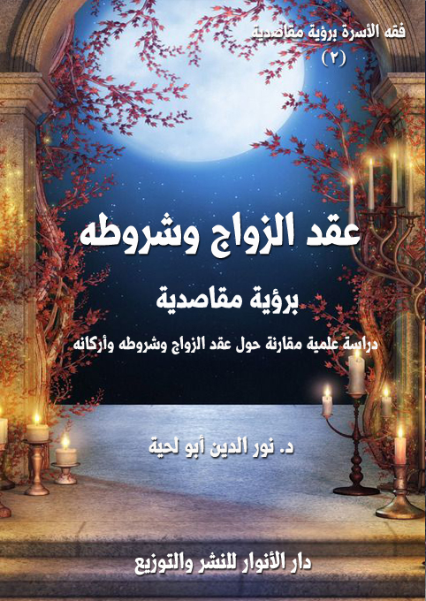

الكتاب: عقد الزواج وشروطه ـ برؤية مقاصدية
المؤلف: أ.د. نور الدين أبو لحية
الناشر: دار الأنوار للنشر والتوزيع
الطبعة: الثانية، 1437 هـ
عدد الصفحات: 416
ISBN: 978-620-2-34259-9
لمطالعة الكتاب من تطبيق مؤلفاتي المجاني وهو أحسن وأيسر: هنا

التعريف بالكتاب
يتناول هذا الكتاب ستة مواضيع كبرى، تعطي بمجموعها صورة عن عقد الزواج الشرعي بأركانه وشروطه والتفاصيل الضرورية المرتبطه بها، وهذه المواضيع هي:
1. أحكام العقد وشروطه.
2. موانع الزواج
3. الولاية في الزواج.
4. الكفاءة في الزواج.
5. الشروط المقيدة للعقد وأحكامها.
6. أنواع مختلف فيها من عقود الزواج..
عقد الزواج وشروطه برؤية مقاصدية (14)
بعد الحديث في الجزء السابق عن الممهدات التي ينني عليها الزواج، والتي يدرج أكثرها في باب المستحبات من الفقه، نتناول في هذا الجزء الأساس الأكبر الذي يقوم عليه الزواج (1)، وهو (العقد)، والذي لا يتحقق الزواج الشرعي بدونه.
والعقد هو الميثاق الغليظ الذي جعله الله تعالى الوسيلة الوحيدة التي يجوز فيها معاشرة كلا الجنسين لبعضهما، قال تعالى: {وَكَيْفَ تَأْخُذُونَهُ وَقَدْ أَفْضَى بَعْضُكُمْ إِلَى بَعْضٍ وَأَخَذْنَ مِنْكُمْ مِيثَاقاً غَلِيظاً} (النساء:21)، وتسميته بهذا دليل على عظم المسؤولية المناطة به، ودليل في نفس الوقت على خطره.
بل إنه صلى الله عليه وآله وسلم سماه أمانة الله وكلمة الله، فقال صلى الله عليه وآله وسلم: (اتقوا الله في النساء فإنكم أخذتموهن بأمانة الله واستحللتم فروجهن بكلمة الله) (2)
ولذلك، فإن البعد المقاصدي الذي يراعي جانب الميثاق في العقد، وجانب الأمانة فيه، يستدعي النظر إلى العقد من زاوية خدمته لمقاصد الشريعة من الزواج، فيشتد في المواضع التي تخدم هذه المقاصد، ويتساهل في الجوانب الشكلية التي قد لا تؤثر في حقيقة المقاصد.
وانطلاقا من هذا، سنتحدث في هذا الجزء عن ستة مواضيع كبرى، تعطي بمجموعها صورة عن عقد الزواج الشرعي بأركانه وشروطه والتفاصيل الضرورية المرتبطه بها، وهذه المواضيع هي:
1.
2.
__________
(1) وهو منبن على ما سبق ذكره، فالاختيار والخطبة ينتج عنهما العقد الشرعي.
(2) صحيح ابن خزيمة:4/ 251، المنتقى لابن الجارود:1/ 125، المسند المستخرج على صحيح مسلم:3/ 318، سنن الدارمي:2/ 69.
عقد الزواج وشروطه برؤية مقاصدية (15)
3. أحكام العقد وشروطه.
4. موانع الزواج
5. الولاية في الزواج.
6. الكفاءة في الزواج.
7. الشروط المقيدة للعقد وأحكامها.
8. أنواع مختلف فيها من عقود الزواج.
عقد الزواج وشروطه برؤية مقاصدية (16)
يحتوي هذا الفصل على ثلاثة مباحث هي:
1. مدخل إلى أحكام العقد: ذكرنا فيه التصنيفات الفقهية المختلفة لأركان العقد وشروطه، واصطلاحات المذاهب في ذلك مما تمس إليه الحاجة في هذا الجزء أو في الأجزاء اللاحقة، وقد ذكرنا التصنيف الذي نعتمده في ذلك، والذي على أساسه ينبني حديثنا عن أركان العقد وشروطه.
2. الصيغة وشروطها: باعتبارها الركن الأول والأساسي للعقد.
3. شروط المحل، وقد اقتصرنا هنا على أهم الشروط، وسنذكر الموانع المتعلقة بالمحل في فصل خاص في هذا الجزء.
الغرض من هذا المبحث هو التعرف على المواقف المختلفة للمذاهب الفقهية من عقد الزواج، والتعرف على الاصطلاحات المستعملة في ذلك لتفادي الأخطاء التي تقع عند بيان خلافات العلماء، والناتجة من عدم التعرف على اصطلاحات المذاهب المختلفة، ولذلك كان هذا مبحثا تمهيديا لتسهيل الوصول إلى تفاصيل الخلافات وأدلتها في المباحث أو الفصول القادمة.
عقد الزواج وشروطه برؤية مقاصدية (17)
لغة (1): نقيض الحل عقده يعقده عقدا وتعقادا وعقده، وهو الربط والشد والضمان والعهد، وهو الجمع بين الشيئين بما يعسر الانفصال معه، وأصله الشد والجمع عقود ومنه قوله تعالى: {يَاأَيُّهَا الَّذِينَ آمَنُوا أَوْفُوا بِالْعُقُودِ} (المائدة:1) وقوله تعالى: {وَلَا تَعْزِمُوا عُقْدَةَ النِّكَاحِ حَتَّى يَبْلُغَ الْكِتَابُ} (البقرة:235) أي: أحكامه، والمعنى: لا تعزموا على عقدة النكاح في زمان العدة.
وأصل العقد الربط والوثيقة قال الله تعالى: {وَلَقَدْ عَهِدْنَا إِلَى آدَمَ مِنْ قَبْلُ فَنَسِيَ وَلَمْ نَجِدْ لَهُ عَزْمًا} (طه:115) وتقول العرب: عهدنا أمر كذا وكذا أي: عرفناه، وعقدنا أمر كذا وكذا أي: ربطناه بالقول، كربط الحبل بالحبل.
اصطلاحا: يطلق العقد على معنيين:
المعنى العام: وهو كل ما يعقد الشخص أن يفعله هو، أو يعقد على غيره فعله على وجه إلزامه إياه، وعلى ذلك فيسمى البيع والنكاح وسائر عقود المعاوضات عقودا، لأن كل واحد من طرفي العقد ألزم نفسه الوفاء به، وسمي اليمين على المستقبل عقدا، لأن الحالف ألزم نفسه الوفاء بما حلف عليه من الفعل أو الترك، وهو ما أشار إليه قوله تعالى: {يَاأَيُّهَا الَّذِينَ آمَنُوا أَوْفُوا بِالْعُقُودِ} (المائدة:1)، قال العلماء في تفسيرها: يعني بذلك عقود الدين، وهي ما عقده المرء على نفسه من بيع وشراء وإجارة وكراء ومناكحة وطلاق ومزارعة ومصالحة وتمليك وتخيير وعتق وتدبير وغير ذلك من الأمور ما كان ذلك غير خارج عن الشريعة، وكذلك ما عقده على نفسه لله من الطاعات كالحج والصيام والاعتكاف والقيام والنذر وما أشبه ذلك من طاعات ملة الإسلام (2).
وهو ما فسرها به الصدر الأول، قال ابن عباس: أوفوا بالعقود، معناه: بما أحل وبما حرم وبما
__________
(1) انظر: لسان العرب:3/ 296، التبيان في تفسير غريب القرآن:1/ 176، أحكام القرآن لابن العربي:2/ 7.
(2) تفسير القرطبي: 6/ 32.
عقد الزواج وشروطه برؤية مقاصدية (18)
فرض، وبما حد في جميع الأشياء، وكذلك قال مجاهد وغيره (1).
المعنى الخاص: ويطلق على ما ينشأ عن إرادتين لظهور أثره الشرعي في المحل، قال الجرجاني: العقد ربط أجزاء التصرف بالإيجاب والقبول (2)، وقد عرفته مجلة الأحكام في المادة 103 بأنه: التزام المتعاقدين وتعهدهما أمرا هو عبارة عن ارتباط الإيجاب بالقبول (3).وهذا المعنى الخاص هو المراد هنا بعقد النكاح.
2 ـ تصنيف أركان العقد وشروطه في المذاهب الفقهية
اختلف الفقهاء في تصنيف أركان العقد وشروطه، وهو في مجمله خلاف اصطلاحي لا علاقة كبيرة له بالأحكام، ومع ذلك فإنه من المهم الاطلاع على هذه التصنيفات، ليسهل التعرف من خلالها على وجوه الاختلاف العامة، وعلى مدى الأهمية التي تكتسيها بعض نواحي عقد الزواج على البعض الآخر بحسب رؤية الفقهاء لفلسفة الزواج ومقاصده في الشريعة الإسلامية.
تصنيف المالكية:
صنف جمهور المالكية (4) أركان النكاح إلى أربعة إجمالا وخمسة تفصيلا، وهي:
الولي: ولا يصح الزواج بدونه، وشروطه هي: وهي الإسلام والبلوغ والعقل والذكورية، واختلف في اشتراط العدالة والرشد فقيل يعقد السفيه على وليته، وقيل يعقد وليه (5).
__________
(1) تفسير ابن كثير: 2/ 4.
(2) التعريفات:196.
(3) درر الحكام:1/ 360.
(4) انظر: الخرشي:3/ 172، الفواكه الدواني: 2/ 4.
(5) القوانين الفقهية: 134.
عقد الزواج وشروطه برؤية مقاصدية (19)
الصداق: فلا يصح نكاح بغير صداق، لكن لا يشترط ذكره عند عقد النكاح لجواز نكاح التفويض فإنه عقد بلا ذكر مهر، فإن تراضيا على إسقاطه أو اشترطا إسقاطه أصلا، فإن النكاح لا يصح.
المحل: أي ما تقوم به الحقيقة، وهي لا تقوم إلا من الزوج والزوجة الخاليين من الموانع الشرعية كالإحرام والمرض وغير ذلك، لأن المحل من الأمور النسبية التي لا تقوم إلا بمتعدد، وللمحل نوعان من الشروط عند المالكية هي شروط صحة النكاح: وهي الإسلام في نكاح مسلمة، والعقل والتمييز وتحقيق الذكورية، وشروط انعقاد النكاح: وهي الحرية والبلوغ والرشد والصحة والكفاءة.
الصيغة: وهي ما صدر من الولي ومن الزوج أو من وكيلهما الدالة على انعقاد، وشروط الصيغة هي: أن تكون بما يقتضي الإيجاب والقبول، كلفظ التزويج والتمليك ويجري مجراهما، وألا تكون معلقة عل شرط غير محقق، وأن تكون فورا من الطرفين، فإن تراخى فيه القبول عن الإيجاب يسيرا جاز، وأن يكون اللفظ على التأبيد (1).
واعتبار هذه الخمسة أركانا ـ بمعنى أن يكون كل واحد منها جزءا من ماهية العقد ـ من باب التجوز، وباعتبار انعدام الماهية بانعدامها، غير أن هذا رد بعدم اعتبار الشهود ركنا في العقد.
وللحطاب من المالكية تصنيفه الخاص، وهو اعتباره الزوج والزوجة ركنين لا ركنا واحدا، لأن حقيقة النكاح لا توجد إلا بهما، أما الولي والصيغة فشرطان لخروجهما عن ذات النكاح، أما الصداق والشهود فلم يعدهما من الأركان ولا من الشروط لوجود النكاح بدونهما، لأن المضر إسقاط الصداق والدخول بلا شهود.
وقد رد عليه بأن حقيقة النكاح، وهي العقد المخصوص لا تتحصل إلا بالصيغة كما أنه لا
__________
(1) القوانين الفقهية:131.
عقد الزواج وشروطه برؤية مقاصدية (20)
يتحصل إلا بالزوج والزوجة من حيث إنهما محلان لا من حيث إنهما مقومان لحقيقته (1).
صنف الشافعية (2) أركان الزواج إلى أربعة أركان، وهي: الصيغة والزوجة والشهادة والعاقدان، وقد يعبر عن العاقدين بالولي.
وقد اختلف في عد الزوجين ركنا واحدا أوركنين منفصلين، لأنه يعتبر في كل منهما ما لا يعتبر في الآخر أو لتعلق العقد بهما.
وقد علل بعضهم عدم ذكر االصداق في أركان النكاح بخلاف الثمن في البيع، لأن الغرض من النكاح الاستمتاع وتوابعه وذلك قائم بالزوجين فهما الركنان.
وذكر بعضهم أن أركان النكاح تشمل الإيجاب والقبول فقط، لأن النكاح هو العقد المركب من الإيجاب والقبول، وهذه الأمور التي ذكروها لم تتركب منها ماهيته كما هو مقتضى التعبير بالأركان، لأن الركن ما تتركب منه الماهية كأركان الصلاة.
وأجابوا عن ذلك بأن المراد بالأركان ما لا بد منها فيشمل الأمور الخارجة كالشاهدين، فإنهما خارجان عن ماهية النكاح ولهذا اعتبرهما الغزالي شرطين.
صنف الحنابلة (3) أركان الزواج إلى ثلاثة هي: الزوجان الخاليان من الموانع، والإيجاب،
__________
(1) الخرشي:3/ 172.
(2) شرح البهجة:4/ 103، تحفة المحتاج:7/ 218، حاشية الجمل:4/ 133، حاشية البجيرمي على الخطيب:3/ 387.
(3) كشف القناع:5/ 37.
عقد الزواج وشروطه برؤية مقاصدية (21)
والقبول، وقد أسقط بعضهم الزوجين كما في المقنع والمنتهى وغيره لوضوحه، ولأن ماهية النكاح مركبة من الإيجاب والقبول ومتوقفة عليهما ولا ينعقد النكاح إلا بهما.
اعتبر الحنفية (1) ركنا واحدا للزواج هو الإيجاب والقبول، لأن الانعقاد هو ارتباط أحد الكلامين بالآخر على وجه يسمى باعتباره عقدا شرعيا، ويستعقب الأحكام، وذلك بوقوع الثاني جوابا معتبرا محققا لغرض الكلام السابق، ويسمع كل من العاقدين كلام صاحبه، والكلامان هما الإيجاب والقبول.
وقد صنفوا الشروط من حيث أثر وجودها أو فقدانها إلى الأصناف التالية (2):
شروط الانعقاد: وهي التي يلزم توافرها في أركان العقد، أو في أسسه وإذا تخلف شرط منها كان العقد باطلا باتفاق، وخلاصة شروط الانعقاد عندهم هي:
ما يرجع إلى محل العقد: ويشترط لمحل العقد شرطان هما:
1. أن يكون كل من العاقدين أهلاً لمباشرة العقد بأن يكون مميزاً، سواء كان كامل الأهلية كالبالغ الرشيد أو ناقصها كالصبي المميز، غير أن كامل الأهلية عقده نافذ، وناقصها عقده موقوف.
2. أن يعلم كل من العاقدين ما صدر من الآخر، بأن يسمع كلامه أو يرى إشارته ويعرف مراده منها، وأن يعرف أن هذه العبارة أو تلك الإشارة يقصد بها إنشاء العقد وإن لم يعرف معاني الكلمات اللغوية.
ما يرجع إلى الصيغة:
1.
2.
__________
(1) فتح القدير: 3/ 189، البحر الرائق:3/ 87، الفتاوى الهندية:1/ 267.
(2) درر الحكام: 1/ 494،بدائع الصنائع:2/ 233، الفقه الإسلامي وأدلته:7/ 47، الموسوعة الفقهية:9/ 11.
عقد الزواج وشروطه برؤية مقاصدية (22)
3. اتحاد مجلس الإيجاب والقبول.
4. أن يوافق القبول الإيجاب حتى يتلاقيا على شيء واحد.
5. أن تكون الصيغة منجزة. بأن تكون مفيدة لمعناها في الحال غير معلقة على أمر سيحدث في المستقبل.
ما يرجع إلى المحل: وهو المرأة المعقود عليها فيشترط فيها:
1. أن تكون أنثى محققةالأنوثة.
2. ألا تكون المرأة محرمة عليه تحريماً قطعياً لا شبهة فيه.
شروط الصحة: ويترتب على تخلف شيء منها بطلان العقد أو فساده على الخلاف بين الجمهور والحنفية في ذلك، والذي سنشرحه في محله، وشروط الصحة عند الحنفية هي:
1. ألا تكون المرأة محرمة على الرجل الذي يريد التزويج بها تحريماً ظنياً، بأن كانت حرمتها ثابتة بدليل ظني أو مما يخفى تحريمها للاشتباه في أمره.
2. أن يكون العقد أمام شهود.
شروط النفاذ: العقد إذا كان مستوفياً لأركانه وشروط صحته لا تترتب عليه آثاره بالفعل إلا بشروط تسمى في عرف الفقهاء بشروط النفاذ، ويجمعها أن يكون لكل من العاقدين الحق في إنشاء عقد الزواج، ويتحقق ذلك بكمال أهليتهما مع وجود صفة شرعية تجيز لهما إنشاء هذا العقد، وكمال الأهلية بالحرية والبلوغ والعقل، والصفة هي الأصالة أو الولاية أو الوكالة.
شروط اللزوم: هي الشروط التي إذا تحققت كلها لم يكن لأحد الحق في فسخ العقد، فإن تخلفت تلك الشروط أو بعضها كان العقد غير لازم يجوز فسخه إذا طلب ذلك صاحب الشأن، ويشترط للزوم عقد الزواج إجمالاً أن يكون خالياً مما يوجب الفسخ، ويتحقق ذلك بتوفر الشروط التالية:
1.
2.
عقد الزواج وشروطه برؤية مقاصدية (23)
3. أن يكون الزوج كفئاً للزوجة إذا زوجت نفسها وهي كاملة الأهلية، أي بالغة عاقلة رشيدة.
4. ألا يقل مهرها عن مهر أمثالها من قوم أبيها إذا زوجت نفسها ولو كان الزوج كفئاً لها.
5. أن يكون المزوج لفاقد الأهلية أو ناقصها كالمجنون والمعتوه والصغير والصغيرة الأب أو الجد المعروفين بحسن التصرف والاختيار.
6. ألا يكون الزوج قد غرر في أمور تتعلق بكفاءته، كأن يدعي نسباً معيناً تم الزواج على أساسه ثم ظهر كذبه كان العقد غير لازم بالنسبة إلى طرف الزوجة فلها أو لوليها حق طلب الفسخ.
ولهم (1) تقسيم خاص تميزوا به عن غيرهم، فقد نصوا على أن شروط الزواج التي لا يصح إلا بها أربعة، وهي:
الشرط الأول: العقد: وله خمسة أركان هي:
1. الولي، ويشترط أن يكون بالغا عاقلا ولو كان فاسقا ذكرا حرا لأنه لا ولاية لامرأة ولا لعبد على ملتها.
2. أن يعقد بلفظ تمليك خاص للتزويج كزوجت أو أنكحت أو نحوهما أو عام كملكت ونذرت وتصدقت وبعت ووهبت حسب ما يقتضيه العرف.
3. أن يكون لفظ التمليك متناولا لجميعها أو بعضها، إذ هو المقصود بالتمليك بالنكاح فيقول: زوجتكها أو ملكتك إياها أو زوجتك بعضها أو ملكتك بعضها.
4.
5.
__________
(1) انظر: التاج المذهب: 2/ 22، البحر الزخار:4/ 18.
عقد الزواج وشروطه برؤية مقاصدية (24)
6. أن يقع قبول لعقد النكاح مثله، لأن من حق العقد أن يكون ماضيا مضافا إلى النفس مشتملا على جميعها أو بعضها، فيقول فيه زوجتك أو أنكحتك ويصح بدون كاف الخطاب فيقول زوجت أو أنكحت.
7. أن يكون القبول واقعا في المجلس الذي وقع فيه الإيجاب وهو ما حواه الجدار في العمران وما يسمع فيه الخطاب المتوسط في الفضاء.
الشرط الثاني: إشهاد عدلين، فلا يصح العقد إلا بحضور شاهدين وسماعهما الإيجاب والقبول تفصيلا وإن لم يقصد إشهادهما.
الشرط الثالث: هو رضا الحرة والمكاتبة المكلفة، وهي البالغة العاقلة ومن شرط الرضا أن يكون نافذا بأن تقول رضيت أو أجزت أو أذنت أو نحو ذلك مما يدل على أنها قد قطعت بالرضا، فرضا الثيب يكون بالنطق بماض وذلك بأن تقول رضيت أو نحو ذلك، فأما لو قالت سوف أرضى أو ما في حكمه فإنه ليس برضاء وإنما هو وعد بالرضاء.
ومما يقوم مقام النطق القرائن القوية كقبض المهر وطلبه والتهيؤ للزواج ومسيرها إلى بيت الزوج ومد يدها للحناء هذا إذا لم يدخل هذه القرائن احتمال كأن يكون الولي مهيبا تخشى منه إن لم ترض فلا يصح أن تكون هذه القرائن رضى.
الشرط الرابع: تعيين المرأة حال العقد، وكذا تعيين الزوج فلا يكفي قبلت لأحد أولادي.
والظاهر أن مذهب الإمامية (1) يقصر العقد على الصيغة، فقد نصوا عند الحديث عن العقد أن النكاح يفتقر إلى إيجاب وقبول، دالين على العقد الرافع للاحتمال، ومن الشروط التي ذكروها:
__________
(1) شرائع الإسلام: 2/ 218.
عقد الزواج وشروطه برؤية مقاصدية (25)
الأوّل: الإيجاب والقبول اللفظيّان، ولا يكفي مجرّد الرضا، ولا المعاطاة، ولا الكتابة، ولا الإشارة إلّا في الأخرس فله إيقاعه بالإشارة.
الثاني: أن يكون اللفظ بالعربية على الأحوط وجوباً، نعم مع العجز عن العربيّة يجوز إيقاعه بغيرها بعبارة تؤدّي نفس المعنى، بحيث تعدّ ترجمته.
الثالث: أن يكون الإيجاب من طرف الزوجة والقبول من طرف الزوج، فلا يكفي العكس.
الرابع: أن يُقدّم الإيجاب على القبول على الأحوط وجوباً إذا كان القبول بمثل (قبلت)
الخامس: أن يكون الإيجاب في الزواج الدائم بلفظ زوّجت، أو أنكحت، أو متّعت مع الاتيان (في الأخير: متّعت) بما يجعله ظاهراً في الدوام، ولا يقع بغير ذلك، مثل (وهبت) ونحوها. فتقول الزوجة مثلاً: (زَوّجْتُك نفسي على مهرٍ وقدرُهُ كذا)، فيقول الزوج: (قَبِلْتُ)، أو رَضِيْتُ، ويمكن أن يقول (قبلت التزويج)، ولا يجب ذلك.
السادس: لا يشترط التطابق بين لفظ الإيجاب ومتعلّق القبول، فلو قالت (زوّجْتُك نفسي) فقال الزوج: (قبلت النكاح) صحّ.
السابع: أن لا يكون اللفظ ملحوناً بنحو يؤدّي إلى تغيير المعنى، ولا يؤثّر اللحن إن لم يكن مبدّلاً للمعنى.
الثامن: القصد إلى إيجاد مضمون العقد (أي قصد إيجاد الزوجية بين طرفيّ العقد)، وهو متوقّف على فهم معنى لفظ (زوجت)، أي أنّ هذا القصد لا يتمّ ولا يمكن تحقيقه من دون فهم معنى لفظ (زوجت) ولو بنحو الإجمال، فلا يشترط الفهم التفصيليّ، فيكفي أن يعلم أنّ ما يقوله يدلّ على الزواج الدائم على المهر المعيّن المعلوم.
التاسع: قصد الإنشاء، بأن يكون الموجب قاصداً بإيجابه إيقاع الزواج، وأن يكون القابل قاصداً
عقد الزواج وشروطه برؤية مقاصدية (26)
قبول ما أوقعه الموجب.
العاشر: الموالاة، بمعنى عدم الفصل المعتدّ به بين الإيجاب والقبول.
الحادي عشر: التنجيز، بمعنى عدم تعليق العقد على شرط أو مجيء زمان، فلو قالت الزوجة مثلاً: (زوّجتك نفسي على المهر المعلوم بشرط مجيء زيد)، يبطل العقد ولا يصحّ حتّى لو جاء زيد. نعم لو علّق العقد على أمرٍ محقّق الحصول كما إذا قالت الزوجة في يوم الجمعة: (أنكحتك إن كان اليوم يوم الجمعة)، فيصحّ العقد.
الثاني عشر: أن يكون العاقد: بالغاً، عاقلاً، قاصداً غير هازل ولا سكران.
الثالث عشر: تعيين الزوجين ولو إجمالاً، بنحو يؤدّي إلى تمييزهما عن غيرهما، فلا يكفي أن يقول: زوّجتك إحدى بناتي. ولو كان عنده بنت واحدة كفى أن يقول زوّجتك بنتي، ولو تعدّدن كفى أن يقول زوجتك الكبرى، بذكر الوصف، أو زوّجتك هذه، بأن يشير إلى واحدة بعينها.
الرابع عشر: الاختيار من الزوجين، فلو أُكرها أو أُكره أحدهما لم يصحّ العقد، نعم لو لحقه الرضا صحّ.
الظاهر من مذهبهم قصر العقد على الصيغة، وقد نصوا على أنه يجوز عقد النكاح من ولي أو نائبه مع زوج أو نائبه، ولا يجوز - قيل - لولي امرأة أن يوكل غير ثقة، فإن فعل جدد ولا يفرق بينهما إن دخل، ولا يقبل من مدعي وكالة إلا بصحة.
وجاز للشهود أن يشهدوا على هذا القول، وإن ادعت أن وليها وكلها في تزويج نفسها لم يقبل عنها ولم يجز ولو بينت، وقيل: يجوز وتصدق إن كانت ثقة، وقيل: مطلقا ومن ادعى أنه ولي فوكل أو زوج جاز ما لم يرب، وقيل: إن أقرت، وقيل إن كانت بنتا أو أختا، وقيل: إن كانت بنتا، وقيل: لا
عقد الزواج وشروطه برؤية مقاصدية (27)
مطلقا إلا بالصحة، ونصوا على وجوب افشهاد على الزواج (1).
تطلق الصيغة في الاستعمال الفقهي على الألفاظ والعبارات التي يتركب منها العقد، أي العبارات المتقابلة التي تدل على اتفاق الطرفين وتراضيهما على إنشاء العقد، وهي التي تسمى في لغة الفقهاء بالإيجاب والقبول، وعلى ذلك عرفها بعضهم بقوله: هي ما يكون به العقد، من قول أو إشارة أو كتابة، تبيينا لإرادة العاقد، وكشفا عن كلامه النفسي.
وعرفها ابن عرفة بأنها مادل على عقد النكاح (2)، وعرفها الإمامية بأنها اللفظ الذي وضعه الشرع وصلة إلى انعقاده (3).
تتركب الصيغة من لفظين صادرين من كلا طرفي العقد، يطلق عليهما [الإيجاب والقبول]، وقد اختلف الفقهاء في استعمال هذين الاصطلاحين، وفيما يلي توضيح هذا الاختلاف الاصطلاحي.
الإيجاب: اختلف الفقهاء في استعمال لفظ الإيجاب على فريقين:
__________
(1) شرح النيل: 6/ 87.
(2) شرح حدود ابن عرفة:157.
(3) شرائع الإسلام: 2/ 246.
عقد الزواج وشروطه برؤية مقاصدية (28)
الحنفية: الإيجاب هو اللفظ الصادر أولا من أحد المتخاطبين مع صلاحية اللفظ لذلك رجلا كان أو امرأة (1).
الجمهور: الإيجاب هو ما صدر من البائع، والمؤجر، والزوجة، أو وليها سواء صدر أولا أو آخرا، لأنهم هم الذين سيملكون: المشتري السلعة المبيعة، والمستأجر منفعة العين، والزوج العصمة، وهكذا.
القبول: اختلف الفقهاء في استعمال لفظ القبول ـ كما اختلف سابقا ـ على فريقين:
الحنفية: القبول اللفظ الصادر ثانيا من أحدهما الصالح لذلك مطلقا (2).
الجمهور: هو ما يصدر ممن يتملك المبيع أو القرض، أو ممن ينتفع به كالمستأجر والمستعير، أو ممن يلتزم بعمل كالمضارب والمودع، أو ممن يملك الاستمتاع بالبضع كالزوج، وسواء صدر القبول أولا أو آخرا، وقد عرفه في شرائع الإسلام بقوله: القبول: هو اللفظ الدال على الرضا بذلك الإيجاب، كقوله: قبلت النكاح (3).
اختلف العلماء في حكم تقدم القبول على الإيجاب على قولين:
القول الأول: اشتراط تقدم القبول على الإيجاب، وهو مذهب الحنابلة، فلا يجوز عندهم تقدم الإيجاب على القبول، واستدلوا على ذلك بأن القبول إنما يكون للإيجاب، فمتى وجد قبله لم يكن قبولا
__________
(1) البحر الرائق:3/ 87..
(2) درر الحكام: 1/ 104.
(3) شرائع الإسلام:2/ 247.
عقد الزواج وشروطه برؤية مقاصدية (29)
لعدم معناه، بخلاف البيع، لأن البيع يصح بالمعاطاة، ولأنه لا يتعين فيه لفظ، بل يصح بأي لفظ كان مما يؤدي المعنى (1).
القول الثاني: عدم اشتراط تقدم أحدهما على الآخر، وهو مذهب الجمهور والإمامية، إلا أن الحنفية يعتبرون القبول هو ما يذكره الطرف الثاني في العقد دالا على رضاه بما أوجبه الطرف الأول، فهم يعتبرون الكلام الذي يصدر أولا إيجابا والكلام الذي يصدر ثانيا قبولا (2).
وهي إما أن تتحق باللفظ، وهو الأصل، أو بغيره من الإشارة والكتابة وغيرها، وسنتحدث عن كلا النوعين فيما يلي:
لما كان الأصل في الصيغة هو الألفاظ التي تعبر عن تراضي المتعاقدين، فقد عني الفقهاء ببيان الألفاظ التي ينعقد بها من ناحية مادتها وناحية صورتها حتى تدل دلالة صحيحة صريحة على مراد المتعاقدين، وسنفصل كلام الفقهاء في ذلك فيما يلي:
اتفق الفقهاء على صحة استعمال اللغة العربية للتعبير عن الإيجاب والقبول، واختلفوا في غيرها من اللغات على قولين:
القول الأول: يصح التعبير عن العقد بأي لغة كانت: عربية، أو غير عربية سواء كان العاقدان
__________
(1) مطالب أولي النهى:5/ 46.
(2) البحر الرائق: 3/ 87، مواهب الجليل:3/ 422.
عقد الزواج وشروطه برؤية مقاصدية (30)
قادرين على العربية أو عاجزين عنها، وهو مذهب جمهور الفقهاء، ومن أدلتهم على ذلك (1):
1. أن المقصود من الصيغة هو التعبير الواضح الصريح عن إرادة العاقدين، وذلك يصح بأي لغة.
2. أن الزواج ليس أمرا تعبديا محضا بحيث تشترط فيه لغة بعينها أو صيغ بعينها، بل هو كسائر العقود الشرعية.
القول الثاني (2): أنه لا يجوز للقادر على العربية أن يعقده بغيرها، وهو مذهب الشافعية في قول، والحنابلة، ومذهب الظاهرية والإمامية، أما من لا يحسن العربية، فيصح منه عقد النكاح بلسانه لأنه عاجز عما سواه فسقط عنه كالأخرس، ويحتاج أن يأتي بمعناهما الخاص، بحيث يشتمل على معنى اللفظ العربي، فإن كان أحد المتعاقدين يحسن العربية دون الآخر أتى الذي يحسن العربية بها والآخر يأتي بلسانه. فإن كان أحدهما لا يحسن لسان الآخر، احتاج أن يعلم أن اللفظة التي أتى بها صاحبه لفظة الإنكاح، بأن يخبره بذلك ثقة يعرف اللسانين جميعا، ومن أدلتهم على ذلك:
1. أنه عدول عن لفظ الإنكاح والتزويج مع القدرة عليهما، وهما اللفظان اللذان يصح بهما فقط الزواج.
2. أن الزواج فيه ناحية تعبّدية فأشبه الصلاة، فكما أنها لا تصح بغير العربية للقادر عليها فكذلك الزواج.
وقد اختلف القائلون بهذا القول في وجوب تعلم ألفاظ الزواج والنكاح باللغة العربية على
__________
(1) مجمع الأنهر:1/ 318،الفروع:5/ 169.
(2) المجموع:9/ 190، المنثور في القواعد الفقهية:1/ 283، تحفة المحتاج:7/ 221، مغني المحتاج:4/ 229، المحلى: 9/ 47، شرائع الإسلام: 2/ 217.
عقد الزواج وشروطه برؤية مقاصدية (31)
الرأيين التاليين:
الرأي الأول: أنه لا يجب على من لا يحسن العربية تعلم ألفاظ النكاح بها، لأن النكاح غير واجب، فلم يجب تعلم أركانه بالعربية.
القول الثاني: وجوب تعلمها، لأن ما كانت العربية شرطا فيه لزمه أن يتعلمها مع القدرة، كالتكبير.
الترجيح:
الظاهر من المقاصد الشرعية في العقود هو أنها معبرة عن رضا أصحابها، وذلك يقتضي التعبر عن الرضا بأوضح ألفاظها وأدلها عرفا على المقصود من العقد، وإلا أصبح مجرد عقد شكلي لا يعبر عن مراده الشرعي، ولذا نعجب أن يلغي بعض الفقهاء هذا الاعتبار فينص على أنه لو لو لقنت المرأة غير العربية أن تقول لمن يريد الزواج بها: زوجت نفسي بالعربية، وهي لا تعلم معناها، وقبل الزوج، والشهود يعلمون جهلها بالعربية وعدم فهمها لما قالت، أو لا يعلمون صح الزواج، ومثله في جانب الرجل إذا لقنه وهو لا يعلم معناه، وقد علل ذلك قاضي خان بقوله: ينبغي أن يكون النكاح كذلك لأن العلم بمضمون اللفظ إنما يعتبر لأجل القصد، فلا يشترط فيما يستوي فيه الجد والهزل، بخلاف البيع ونحوه) (1)
وقد رد ابن القيم على هذا الاشتراط بقوله: (وأفسد من ذلك اشتراط العربية مع وقوع النكاح من العرب والعجم والترك والبربر ومن لا يعرف كلمة عربية، والعجب أنكم اشترطتم تلفظه بلفظ لا يدري ما معناه ألبتة، وإنما هو عنده بمنزلة صوت في الهواء فارغ لا معنى تحته، فعقدتم العقد به،
__________
(1) فتح القدير:3/ 196، وانظر: درر الحكام شرح غرر الأحكام: 1/ 328.
عقد الزواج وشروطه برؤية مقاصدية (32)
وأبطلتموه بتلفظه باللفظ الذي يعرفه ويفهم معناه ويميز بين معناه وغيره) (1)
ومثله جعفر السبحاني الذي خالف المشهور من مذهب الإمامية في ذلك، فقال: (والظاهر عدم القصور في الخطابات العامّة الواردة في القرآن نحو قوله تعالى: {وَ أَنْكِحُوا الأَيامى مِنْكُمْ والصّالِحِينَ مِنْ عِبادِكُمْ وإِمائِكُمْ} (النور: 32) إذا كان المنشأ بغير العربي، إنشاء نكاح في متعارفهم. مضافاً إلى أنّ سيرة المسلمين في فتح البلاد غير العربية كانت على بعث رجال لتعليم الأحكام والقرآن ولم ينقل في التاريخ دعوة المسلمين غير العرب على تعليم صيغ النكاح، مع أنّ الشارع أمضى نكاح كلّ أُمّة بقوله: (ولكل قوم نكاح) (2) وبالتالي أمضى ما يعبّرون به عن هذه العلقة والمعاهدة. والظاهر الاكتفاء بغير العربية مطلقاً ـ وطريق الاحتياط واضح ـ. هذا كلّه في التمكّن من العربية، ولو بالتوكيل كما هو المعمول، وأمّا فيما إذا لم يتمكّن فلاشكّ في كفاية غيرها لأنّ القدر المسلّم من تقييد الإطلاقات هو حالة التمكّن من العربية، لأنّ المقيّد دليل لبّي وهو التسالم بين الأصحاب وأمّا غير المتمكّن فهو باق تحته وإلاّ يلزم تعطيل الزواج والنكاح وهو قطعيّ البطلان لاستلزامه الفساد العظيم) (3)
ولكن مع ذلك، فإن إجراء العقد باللغة العربية باعتبارها لغة القرآن الكريم، ولها محلها من القداسة لذلك، تأثير نفسي كبير على المتعاقدين، بحيث يحول من إجراءات العقد إلى إجراءات تعبدية تعطيها نوعا من القيمة والقداسة، وهو مطلب من مطالب الشارع الحكيم.
وهي الألفاظ التي يصح التعبير بها عن عقد الزواج، وقد بحث الفقهاء فيما يصح من هذه
__________
(1) إعلام الموقعين:1/ 221.
(2) التهذيب:7/ 472، برقم 99..
(3) نظام النكاح في الشريعة الاسلامية الغراء، ج 1، ص 123.
عقد الزواج وشروطه برؤية مقاصدية (33)
الألفاظ خشية تسرب مفاهيم أخرى للزواج غير التي أرادها الشارع عن طريق تبديل الألفاظ، وهو إدراك سابق من الفقهاء لما للمصطلحات من تدخل في تثبيت المفاهيم أو تغييرها، وفيما يلي ذكر هذه الألفاظ بقسميها: ما اختلف فيه الفقهاء وما اتفقوا عليه، وقد ذكرنا هذا التقسيم حرصا على بناء الزواج على ألفاظ متفق عليها مراعاة لاختلاف العلماء.
أجمع العلماء (1) على أنه ينعقد بكل لفظ مأخوذ من مادتي الزواج والنكاح، سواء اتفقا من الجانبين أو اختلفا، مثل أن يقول: زوجتك بنتي هذه. فيقول: قبلت هذا النكاح، أو هذا التزويج، لأنهما اللفظان اللذان ورد بهما نص الكتاب في أكثر من عشرين آية منها قوله تعالى: {فَانكِحُوا مَا طَابَ لَكُمْ مِنَ النِّسَاءِ} (النساء:3) وقوله: {وَأَنكِحُوا الْأَيَامَى مِنْكُمْ} (النور:32) وقوله: {فَلَمَّا قَضَى زَيْدٌ مِنْهَا وَطَرًا زَوَّجْنَاكَهَا} (الأحزاب: 37)
ألفاظ متفق على عدم صحة العقد بها
اتفق الفقهاء عدم انعقاده بالألفاظ التالية:
ألفاظ الإباحة والإحلال والإيداع والإعارة والرهن: لأنها لا تفيد تحليل المرأة لزوجها، والزواج من عقود التحليل، لأنه يفيد ملك المتعة للزوج.
لفظ الوصية: لأنه يفيد تمليكا مضاف لما بعد الموت، والزواج يفيد التمليك في الحال، فلم توجد علاقة مسوغة لاستعمال لفظ الوصية في الزواج، وروي عن الطحاوي من الحنفية أنه ينعقد مطلقا، وعن الكرخي أنه ينعقد به إن قيدت بالحال، كما إذا قال: أوصيت بابنتي لك الآن (2).
__________
(1) البحر الزخار: 4/ 18، الأشباه والنظائر:300.
(2) مجمع الأنهر:1/ 318.
عقد الزواج وشروطه برؤية مقاصدية (34)
لفظ الإجارة: لأنها مع إفادتها ملك المنفعة في الحال إلا أنها شرعت مؤقتة بوقت معين والزواج شرع على الدوام والتأبيد، وكل تأقيت فيه يلحق به الفساد على الأصح.
والعلة الجامعة بين عدم صحة العقد بهذه الألفاظ جميعا هي عدم انطباقها مع شروط الزواج من ملك المتعة الدائمة من حين العقد، ولهذا يقاس على هذه الألفاظ كل ما لا يدل على ذلك (1).
اختلف الفقهاء فيما عدا الألفاظ السابقة، كالهبة والتمليك والبيع والصدقة والجعل على الأقوال التالية:
القول الأول (2): منع انعقاده بهذه الألفاظ كلها وقصوره على لفظي النكاح والتزويج وما اشتق منهما، كأنا متزوج مثلاً، وهو قول الشافعية والحنابلة، وبه قال سعيد بن المسيب، وعطاء، والزهري، وربيعة، ومن الأدلة على ذلك:
1. قوله صلى الله عليه وآله وسلم: (اتقوا الله في النساء فإنكم أخذتموهن بأمانة الله واستحللتم فروجهن بكلمة الله) (3)، وكلمة الله هي التزويج أو الإنكاح، فإنه لم يذكر في القرآن سواهما فوجب الوقوف معهما تعبدا واحتياطا.
2. أن النكاح يميل إلى العبادات لورود الندب فيه، والأذكار في العبادات تتلقى من الشرع، والشرع إنما ورد بلفظي التزويج والإنكاح.
3.
4.
__________
(1) المغني،7/ 60، البحر الزخار:4/ 18.
(2) المغني:7/ 60، أسنى المطالب:3/ 119، مطالب أولي النهى:5/ 46، الأم 8/ 267.
(3) صحيح ابن خزيمة:4/ 251، المنتقى لابن الجارود:1/ 125، المسند المستخرج على صحيح مسلم:3/ 318، سنن الدارمي:2/ 69.
عقد الزواج وشروطه برؤية مقاصدية (35)
5. أنه عقد له خطره، إذ به تحل المرأة بعد أن كانت حراماً، وتثبت به الأنساب، فيحتاج فيه إلى ألفاظ صريحة.
6. أن الشهادة شرط في النكاح، والكناية إنما تعلم بالنية، ولا يمكن الشهادة على النية، لعدم اطلاعهم عليها، فيجب أن لا ينعقد، وبهذا فارق بقية العقود والطلاق.
7. أما ما روي من أنه صلى الله عليه وآله وسلم زوج امرأة، فقال: ملكتكها بما معك من القرآن (1)، فقد أجيب على ذلك بأنه وهم من الراوي، أو أن الراوي رواه بالمعنى ظنا منه ترادفهما، وبتقدير صحته فهو معارض برواية الجمهور: زوجتكها. قال البيهقي: والجماعة أولى بالحفظ من الواحد، ويحتمل أنه صلى الله عليه وآله وسلم جمع بين اللفظين، ومما احتج به على اختصاصه صلى الله عليه وآله وسلم بذلك قوله تعالى {وَامْرَأَةً مُؤْمِنَةً إِنْ وَهَبَتْ نَفْسَهَا لِلنَّبِيِّ إِنْ أَرَادَ النَّبِيُّ أَنْ يَسْتَنكِحَهَا خَالِصَةً لَكَ مِنْ دُونِ الْمُؤْمِنِينَ} (الأحزاب:50) حيث جعل النكاح بلفظ الهبة من خصائصه صلى الله عليه وآله وسلم (2).
القول الثاني: صحة استعمال هذه الألفاظ مع القرينة الدالة على أن المتكلم أراد بها الزواج، كذكر المهر معها وإحضار الشهود وما شابه ذلك، وهو قول الحنفية (3)، والضابط عندهم في ذلك هو أن كل لفظ وضع لتمليك العين في الحال يجوز العقد به، واحترز بالحال عن الوصية، لأنها لتمليك العين بعد الموت، بل روي عن الطحاوي من الحنفية أنه ينعقد مطلقا، وعن الكرخي أنه ينعقد به إن قيدت بالحال ـ كما مر بيان ذلك سابقا ـ ومن أدلتهم على ذلك:
1. أن ورود القرآن بهذين اللفظين لا يعني قصر إقامة العقد عليهما، فيكون ما يفيد معناهما
2.
__________
(1) البخاري: 4/ 1920، المسند المستخرج على صحيح مسلم:4/ 89، سنن النسائي:3/ 312.
(2) النووي على مسلم:9/ 214، شرح الزرقاني:3/ 168، مغني المحتاج:4/ 228.
(3) الفتاوى الهندية:1/ 271.
عقد الزواج وشروطه برؤية مقاصدية (36)
3. مثلهما فلا وجه لمنع الزواج بهذه الألفاظ.
4. دعوى أن النصوص الشرعية لم تذكر في معرض تشريعة إلا لفظي النكاح والزواج فغير مسلمة، لأن القرآن الكريم ذكر لفظ الهبة أيضاً في مقام تشريعه في قوله تعالى {وَامْرَأَةً مُؤْمِنَةً إِنْ وَهَبَتْ نَفْسَهَا لِلنَّبِيِّ} (الأحزاب:50) ودعوى الخصوصية بالنبي صلى الله عليه وآله وسلم غير مسلمة، لأن الخصوصية الثابتة له في هذا هي الزواج بدون مهر لا في خصوص لفظ الهبة، لأن الله تعالى قال بعد ذلك: {قَدْ عَلِمْنَا مَا فَرَضْنَا عَلَيْهِمْ فِي أَزْوَاجِهِمْ وَمَا مَلَكَتْ أَيْمَانُهُمْ لِكَيْلَا يَكُونَ عَلَيْكَ حَرَجٌ وَكَانَ اللَّهُ غَفُورًا رَحِيمًا} (الأحزاب:50)، ونفى الحرج عن رسول الله صلى الله عليه وآله وسلم لا يكون في اختصاصه بعقد الزواج بلفظ خاص لعدم أي مزية في ذلك.
5. أن السنة وردت بلفظ التمليك في قصة المرأة التي جاءت تعرض نفسها على النبي صلى الله عليه وآله وسلم فأعرض عنها إلى أن قال أحد أصحابه: يا رسول الله إن لم يكن بك حاجة إليها فزوجنيها، فسأله عن مهر يعطيه لها، واعتذر بأنه لا يجد شيئاً، حتى قال له الرسول صلى الله عليه وآله وسلم: (قد ملكتكها بما معك من القرآن) (1)
6. أن كلمة الله الواردة في الحديث لا يراد بها لفظا النكاح والتزويج لعدم أي فائدة معنوية من ذلك، بل معناه كما ذكره شراح الحديث إما أنه دلالة على قوله تعالى: {فَإمْسَاكٌ بِمَعْرُوفٍ أَوْ تَسْرِيحٌ بِإِحْسَانٍ} (البقرة:229) أو أن المراد كلمة التوحيد وهي لا اله الا الله محمد رسول الله صلى الله عليه وآله وسلم إذ لا تحل مسلمة لغير مسلم، أو أن المراد باباحة الله والكلمة قوله تعالى: {فَانكِحُوا مَا طَابَ لَكُمْ مِنَ النِّسَاءِ} (النساء:3) قال النووي: (وهذا الثالث هو
7.
__________
(1) سبق تخريجه.
عقد الزواج وشروطه برؤية مقاصدية (37)
8. الصحيح، وبالأول قال الخطابي والهروى وغيرهما) (1)،أو أن المراد بالكلمة الايجاب والقبول ومعناه على هذا بالكلمة التي أمر الله تعالى بها.
9. أن هذه الألفاظ تفيد تمليك العين في الحال، ولا تقبل التوقيت، فإذا قالت المرأة للرجل: وهبت لك نفسي بمهر كذا أو ملكت نفسي أو جعلت لك نفسي بمهر قدره كذا، أو قال وليها ذلك وقبل الرجل ينعقد الزواج، لأن القرينة تعين المراد منها، وأنه لا يقصد بها حقيقتها، بل يقصد بها الزواج، وأي شخص يفهم منها الزواج إذا ذكر المهر مع حضور الناس الحفل المعد للزواج.
10. أن تصور حكم الحقيقة ليس بشرط، فإنه لو قال لحرة: اشتريتك بكذا كان نكاحا صحيحا، والحرة ليست بمحل للبيع بل الشرط صحة التكلم (2).
القول الثالث: التوسط بين المذهبين، فأجازوا التزويج بلفظ الهبة إذا ذكر معها الصداق، كأن يقول طالب الزواج: هب لي ابنتك بمهر كذا، أو يقول ولي المرأة: وهبت لك ابنتي بمهر كذا، ويقول الآخر: قبلت، وهو قول المالكية، وقد اختلفوا في كل لفظ يقتضي البقاء مدة الحياة مثل: (بعت أو ملكت أو أحللت أو أعطيت أو منحت) على رأيين (3):
1. ينعقد بها النكاح إن سمى صداقا حقيقة أو حكما، وهو قول ابن القصار وعبد الوهاب والباجي وابن العربي.
2. أنه لا ينعقد بها ولو سمى صداقا، وهو قول ابن رشد.
__________
(1) النووي عل مسلم: 8/ 183.
(2) العناية شرح الهداية:4/ 440.
(3) انظر: حاشية الصاوي:2/ 350.
عقد الزواج وشروطه برؤية مقاصدية (38)
ومن أدلتهم على صحة العقد بلفظ الهبة قصة واهبة نفسها للنبي صلى الله عليه وآله وسلم التي سبق ذكرها، وأدلة من أجاز غيرها من الألفاظ وهي أدلة الحنفية السابقة.
وذهب الظاهرية إلى أنه لا يجوز النكاح إلا باسم الزواج أو النكاح، أو التمليك، أو الإمكان (1).
الترجيح:
من خلال ما سبق بيانه من أن العبرة في العقود ما اصطلحت عليه الأعراف، فإنه ليس لصيغة الزواج صيغة مخصوصة دل عليها الشرع، أو حصر الشرع إقامة العقد بها، لأن الزواج ليس عبادة محضة تفتقر إلى هذا النوع من التحديد.
ولكن مع ذلك، فإن الاقتصار على الألفاظ التي وردت بها النصوص مراعاة للاختلاف في هذا الجانب الخطير من الدين، وحرصا على عدم تغيير معنى الزواج الذي ورد به الشرع إذا عبر عنه بألفاظ لا تدل عليه، لأن كل لفظ يحمل دلالة معينة، ويدل على فهم معين للزواج، فمن زوج ابنته بلفظ البيع ـ مثلا ـ فإنه يدل على نظرة خاطئة للزواج تحمل معاني استعباد المرأة واسترقاقها، وما أنزل الله بذلك من سلطان.
زمن الفعل الذي تتم به الصيغة إما أن يكون ماضيا أو مضارعا أو أمرا، وقد اتفق الفقهاء على بعض هذه الصيغ واختلفوا في أخرى:
الصيغة الزمنية المتفق عليها: اتفق الفقهاء (2) على انعقاد الزواج بصيغة الماضي مثل قول ولي المرأة: زوجتك ابنتي، وقول الزوج: قبلت الزواج بها، ومن الأدلة على ذلك:
__________
(1) المحلى:9/ 47.
(2) تبيين الحقائق: 2/ 96، شرائع الإسلام، 2/ 217.
عقد الزواج وشروطه برؤية مقاصدية (39)
أن النكاح عقد، فينعقد بصيغة الماضي كسائر العقود، واختص بما ينبئ عن الماضي لأنه إنشاء تصرف وهو إثبات ما لم يكن ثابتا.
أنه ليس لثبوت الزواج لفظ يختص به باعتبار الوضع فاستعمل فيه لفظ ينبئ عن الثبوت، وهو الماضي دفعا للحاجة لأن الإنشاء يعرف بالشرع لا باللغة، فكان ما ينبئ عن الثبوت أولى من غيره لأن غرضهما الثبوت دون الوعد.
الصيغة الزمنية المختلف فيها: وهي أن يعبر بلفظين أحدهما عن الماضي وبالآخر عن المستقبل، كما إذا قال رجل لرجل: زوجني ابنتك أو قال: جئتك خاطبا ابنتك، أو قال جئتك لتزوجني بنتك فقال الأب: قد زوجتك أو قال لامرأة: أتزوجك على ألف درهم، فقالت: قد تزوجتك على ذلك، أو قال لها: زوجيني أو انكحيني نفسك فقالت: زوجتك أو أنكحت، وغيرها من الصيغ وقد اختلف الفقهاء فيها على قولين:
القول الأول: ينعقد الزواج بهذه الصيغ، بشرط وجود قرينة مانعة من احتمال معنى آخر غير إنشاء العقد، مثل إحضار الشهود، وإعداد الحفل ودعوة الناس، فهذه قرائن كافية تؤكد إرادة إنشاء العقد بقوله: زوجني نفسك أو أتزوجك، وهو قول الحنفية والمالكية، ومن أدلتهم على ذلك:
1. روايتهم عن بلال أنه خطب إلى قوم من الأنصار فأبوا أن يزوجوه فقال: لولا أن رسول الله صلى الله عليه وآله وسلم أمرني أن أخطب إليكم لما خطبت فقالوا له: ملكت، ولم ينقل أن بلالا أعاد القول، ولو فعل لنقل، ولأن الظاهر أنه أراد الإيجاب.
2. الاستحسان، وجه الاستحسان هنا أن المساومة التي توهمها هذه الصيغ لا تتحقق في النكاح عادة، فكان محمولا على الإيجاب بخلاف البيع، فإن السوم معتاد فيه فيحمل اللفظ عليه، فلا بد من لفظ آخر يتأدى به الإيجاب.
عقد الزواج وشروطه برؤية مقاصدية (40)
القول الثاني: لا ينعقد بهذه الصيغ جميعا، وهو مذهب الشافعية والحنابلة والإمامية (1)، ومن أدلتهم على ذلك، أن لفظ الاستقبال عدة، والأمر من فروع الاستقبال، فلم يوجد الاستقبال، فلم يوجد الإيجاب.
الترجيح:
نرى أن الأرجح في هذا هو مراعاة الصيغة التي يعتبرها العرف بشرط دلالتها على الجزم، فإن كانت الصيغة لا تدل على الجزم، فإنه لا ينعقد العقد بها ولو كانت بالزمن الماضي، لأن دلالة الماضي على الثبوت هي دلالة في العرف العربي الذي أجاز له الفقهاء هذه الصيغة، وهي لا تعني بالضرورة سريانها في جميع الأعراف، أما غيرها من الأزمنة فلا حرج في استعمالها إذا كانت دالة على هذا الجزم، وقد ورد في القرآن الكريم قول الشيخ الصالح لموسى عليه السلام: {إِنِّي أُرِيدُ أَنْ أُنكِحَكَ إِحْدَى ابْنَتَيَّ هَاتَيْنِ عَلَى أَنْ تَأْجُرَنِي ثَمَانِيَةَ حِجَجٍ فَإِنْ أَتْمَمْتَ عَشْرًا فَمِنْ عِنْدِكَ وَمَا أُرِيدُ أَنْ أَشُقَّ عَلَيْكَ سَتَجِدُنِي إِنْ شَاءَ اللَّهُ مِنْ الصَّالِحِينَ} (القصص:27) فقال له موسى عليه السلام: {ذلك بيني وبينك} (القصص:28)، قال ابن العربي: (وهذا انعقاد عزم، وتمام قول، وحصول مطلوب، ونفوذ عقد. وقد قال النبي صلى الله عليه وآله وسلم: يا بني النجار، ثامنوني بحائطكم فقالوا: لا نطلب ثمنه، إلا إلى الله (2). فانعقد العقد، وحصل المقصود من الملك) (3)
__________
(1) لكن المعاصرين من فقهاء الشيعة والحنفية والمالكية لا يرون مانعاً من صحة العقد بصيغة المضارع أو الأمر. فلو قالت المرأة: أزوجك نفسي على الصداق المعلوم، فقال: قبلت صح العقد. وكذلك لو قال الرجل: زوجيني نفسك. فقالت المرأة: زوجتك نفسي صح العقد أيضاً.
(2) البخاري: 1/ 165، مسلم:1/ 373، صحيح ابن خزيمة:2/ 5، صحيح ابن حبان:6/ 97.
(3) أحكام القرآن:3/ 497.
عقد الزواج وشروطه برؤية مقاصدية (41)
التصحيف هو تغيير في اللفظ يؤدي إلى تغيير في معناه، ومن أمثلة التصحيف في ألفاظ العقد التي ذكرها الفقهاء: (زوزتك بإبدال الجيم زايا أو جوزتك بإبدال الزاي جيما)، ومثله قول الألثغ في إيجاب عقد النكاح وقبوله: (زودني أو أنتحني وتزويدها ونتاجها بدلا عن زوجني وأنكحني وتزويجها ونكاحها)، وقد ذكر الفقهاء في هذا التصحيف رأيين:
1. رأي اتبع فيه العلماء قول الغزالي: (أن الخطأ في الصيغة إذا لم يخل بالمعنى ينبغي أن يكون كالخطإ في الإعراب) وأن جميع ما ذكر فيها ونحوه من اللغات التي ألفتها العامة لا يضر (1).
2. رأي عن بعض الحنفية: أنه لا ينعقد بألفاظ مصحفة على طريق الغلط، أما لو اتفق قوم على النطق بهذه الغلطة بحيث إنهم يطلبون بها الدلالة على حل الاستمتاع، وتصدر عن قصد واختيار، ففيه قول بانعقاد النكاح بها حتى أفتى به بعض المتأخرين، وأما صدورها لا عن قصد إلى وضع جديد فلا اعتبار به لأن استعمال اللفظ في الموضوع له أو غيره طلب دلالته عليه وإرادته فبمجرد الذكر لا يكون الاستعمال صحيحا فلا يكون وضعا جديدا (2).
ونرى أن كلا الرأيين متفقين على جواز التصحيف بشرط أن يكون اللفظ المصحف معروفا في دلالته على الزواج وهو ما يعرف بالعرف، أما ما لا يدل على ذلك ولا يفهمه الشهود فلا يصح به العقد إلا إذا دلت القرائن عليه.
ومن الأمثلة التي ذكرها الفقهاء لهذا النوع من الخطأ (زوجت لك أو إليك بدل زوجتك أو
__________
(1) الفتاوى الفقهية الكبرى، ابن حجر:4/ 103.
(2) مجمع الأنهر:1/ 318.
عقد الزواج وشروطه برؤية مقاصدية (42)
زوجتك بفتح التاء) ومثله ما لو قال الزوج: قبلت بفتح التاء، وقد أفتى أكثر الفقهاء بجواز الأخطاء النحوية لعمو البلوى بها (1).
وفصل آخرون في المسألة على النحو التالي:
1. إن كان ذلك الخطأ من قادر على العربية عارف بها قادر عل إصلاحها، فإنه لا يصح عقده.
2. أما إن كان من جاهل عاجز فيصح (2).
ونرى أن الأرجح في هذا هو الجواز مطلقا لأن العبرة في العقود هو دلالتها لا ألفاظها، وقد عمت البلوى بالأخطاء النحوية، ولكنه مع ذلك يستحب أن يؤتى بها فصيحة معربة تعبدا من غير اعتقاد لوجوب ذلك أو تكليف للعامة به.
الأصل في صيغة العقد أن تكون بالكلام، ولكن قد تحصل بغير الكلام من وسائل التعبير الأخرى، ومن هذه الوسائل:
يختلف حكم التعاقد عن طريق الكتابة بحسب الحالتين التاليتين:
الحالة الأولى: إذا كان العاقدان في مجلس واحد، وكانا قادرين على الكلام، ومع ذلك عبرا عن العقد بالكتابة بدل الكلام، فإنه لا ينعقد الزواج بالكتابة في هذه الحالة باتفاق الفقهاء للأدلة التالية:
1. أن عقد الزواج أساسه العلنية دون السرية، وبالكتابة يكون سراً.
2. أن الشهادة شرط فيه، ولا اطلاع للشهود على النية ولو قالا بعد المكاتبة: نوينا كانت شهادة
3.
__________
(1) مغني المحتاج:4/ 226.
(2) كشاف القناع:5/ 39، الفتاوى الفقهية الكبرى:4/ 103.
عقد الزواج وشروطه برؤية مقاصدية (43)
4. على إقرارهما لا على نفس العقد فلا يصح (1).
الحالة الثانية: إذا لم يكن العاقدان في مجلس واحد، وقد اختلف فيها الفقهاء عل قولين:
القول الأول (2): أن ذلك جائز إذا كان بمحضر الشهود وسمع الشهود كلا من الإيجاب والقبول كما لو قالت حين بلغها الكتاب وقرأته على الشهود: إن فلانا كتب إلي يخطبني فاشهدوا أني قد زوجت نفسي منه فهذا صحيح، لأنهم سمعوا كلام الخاطب بإسماعها إياهم إما بقراءة الكتاب أو العبارة عنه، وسمعوا كلامهما حيث أوجبت العقد بين أيديهم، فلهذا تم النكاح، أما إذا كتب إليها فلما بلغها الكتاب قالت: زوجت نفسي منه بغير محضر من الشهود، فإنه لا ينعقد النكاح كما في حق الحاضر لاشتراط الشهود حين العقد، وكذلك لو قالت بين يدي الشهود: زوجت نفسي منه لا ينعقد النكاح أيضا، لأن سماع الشهود كلام المتعاقدين شرط لجواز النكاح، وإنما سمعوا كلامها هنا لا كلامه.
وقاعدة الحنفية في ذلك أن (الكتاب من الغائب بمنزلة الخطاب من الحاضر)، ومن أدلتهم على ذلك:
1. أن أم حبيبة كانت تحت عبيد الله بن جحش فمات بأرض الحبشة فزوجها النجاشي النبي صلى الله عليه وآله وسلم، وأمهرها عنه أربعة آلاف، وبعث بها إلى رسول الله صلى الله عليه وآله وسلم مع شرحبيل بن حسنة (3).
2. أن الرسول صلى الله عليه وآله وسلم كان يرى الكتاب تبليغا تقوم به الحجة، وقد بلغ تارة بالكتاب وتارة باللسان
3.
__________
(1) المجموع:9/ 190.
(2) بدائع الصنائع:2/ 231، المبسوط: 5/ 16، فتح القدير: 3/ 197، تبيين الحقائق:2/ 96، كشف الأسرار:3/ 41، البحر الرائق: 4/ 272، رد المحتار:6/ 415.
(3) قال الحاكم: هذا حديث صحيح على شرط الشيخين ولم يخرجاه، المستدرك:2/ 198، وانظر: صحيح ابن حبان:13/ 386، المنتقى لابن الجارود:179، سنن أبي داود:2/ 235، سنن النسائي:3/ 315.
عقد الزواج وشروطه برؤية مقاصدية (44)
4. فإنه كتب إلى ملوك الآفاق يدعوهم إلى الدين، وكان ذلك تبليغا تاما فكذلك في عقد النكاح الكتاب بمنزلة الخطاب.
5. أن الكتاب له حروف ومفهوم يؤدي عن معنى معلوم، فهو بمنزلة الخطاب من الحاضر.
القول الثاني (1): لا ينعقد الزواج في غيبة أو حضور بالكتابة، وهو قول الشافعية، واختلف قول الحنابلة في ذلك، للأدلة التالية:
1. اشتراط حضور الشهود وسماع كلا المتعاقدين، وهو يتنافى مع الكتابة.
2. أن الصحيح في حديث النجاشي أن عمرو بن أمية كان وكيل رسول الله صلى الله عليه وآله وسلم في ذلك بعث به إلى النجاشي يزوجه إياها، وقيل الذي ولي العقد عليها خالد بن سعيد بن العاص ابن عم أبيها (2).
3. أن الكتابة كناية، قال الدردير: (لا تكفي الإشارة ولا الكتابة إلا لضرورة خرس) (3)
4. تراخي القبول عن الإيجاب في الكتابة مع اشتراطهما.
الترجيح:
نرى أن الأرجح في المسألة هو صحة العقد بالكتابة إذا دعت الضرورة لذلك، كأن يكون العاقد غائبا، أو أخرس، والأولى توكيل من يتولى العقد مراعاة للخلاف.
وقد ذهب إلى هذا الترجيح العلامة السبحاني، فقال: (المشهور عدم كفاية الكتابة، لعدم الدليل عليها، وجريان السيرة على اللفظ في الإنشاء. ولكنّه لو كانت الكتابة أمراً رائجاً بين الأقوام بحيث
__________
(1) المجموع:9/ 190، الإنصاف: 8/ 473، أسنى المطالب:3/ 118.
(2) حاشية ابن القيم:6/ 75.
(3) حاشيسة الصاوي:2/ 350، وانظر: الإنصاف: 8/ 473.
عقد الزواج وشروطه برؤية مقاصدية (45)
يكون الاعتبار بها دون اللفظ فالأقوى الاكتفاء بها، وقد عرفت أنّه [لكلّ قوم نكاح]، وهو إمضاء له بكلّ ما يتحقّق به من الشؤون، ومع ذلك ـ طريق الاحتياط معلوم) (1)
وقد ذكر النووي الكيفية المثلى لذلك إذا دعت الضرورة لمثل هذه الطريقة من التعاقد، فقال: (وحيث حكمنا بانعقاد النكاح بالمكاتبة فليكتب: زوجتك بنتي، ويحضر الكتاب عدلان، ولا يشترط أن يحضرهما، ولا أن يقول لهما: اشهدا، بل لو حضرا بأنفسهما كفى فإذا بلغ الكتاب الزوج فليقبل لفظا، ويكتب القبول ويحضر القبول شاهدا الإيجاب، فإن شهده آخران فوجهان أصحهما لا يصح لأنه لم يحضره شاهد له، والثاني الصحة، لأنه حضر الإيجاب والقبول شاهدان ويحتمل تغايرهما) (2)
يختلف حكم التعاقد عن طريق الإشارة بحسب الأحوال التالية (3):
الحالة الأولى: العاجز عن الكلام إن كان لا يحسن الكتابة، فإنه ينعقد زواجه بإشارته المعروفة باتفاق الفقهاء،، وقد أجاز الحنفية الإشارة من المصمت هو الذي عرض له مانع من الكلام لأجل علة عرضت، وقد كان فصيحا ولو كان مما يرجى زواله كوجع الحلق.
وفرق الشافعية بين إشارة الأخرس التي لا يختص بها الفطنون فحكموا بانعقاده بها بخلاف ما يختص بها الفطنون فإنه لا ينعقد بها لأنها كناية.
__________
(1) نظام النكاح في الشريعة الاسلامية الغراء (ج 1، ص: 124)
(2) المجموع:9/ 190، وانظر: الأشباه والنظائر:309.
(3) بدائع الصنائع:2/ 231، الموسوعة الفقهية: 4/ 278، مغني المحتاج:4/ 230.
عقد الزواج وشروطه برؤية مقاصدية (46)
الحالة الثانية: العاجز عن الكلام إن كان يحسن الكتابة، وقد اختلف الفقهاء في صحة عقده على قولين:
القول الأول: أنه ينعقد، لأن الأصل في العقد أن يكون بالكلام، فإذا عجز عنه طلب معرفة غرضه بأي وسيلة، ويستوي في ذلك الإشارة والكتابة لأنهما يدلان على مراده.
القول الثاني: أنه لا ينعقد بالإشارة بل لا بد من الكتابة، لأنها أقوى بياناً من الإشارة حيث يعرفها كل من يقرأ، بخلاف الإشارة فانه لا يعرفها إلا القليل، وإذا لم يتساويا اعتبر الأقوى.
الحالة الثالثة: إشارة القادر على الكلام، وقد ذهب جمهور الفقهاء إلى عدم اعتبارها في العقود خلافا للمالكية الذين ذهبوا إلى أن إشارة الناطق معتبرة كنطقه لأنها يعبر عليها بالكلام، كما قال تعالى: {قَالَ رَبِّ اجْعَلْ لِي آيَةً قَالَ آيَتُكَ أَلَّا تُكَلِّمَ النَّاسَ ثَلَاثَةَ أَيَّامٍ إِلَّا رَمْزًا وَاذْكُرْ رَبَّكَ كَثِيرًا وَسَبِّحْ بِالْعَشِيِّ وَالْإِبْكَار} ِ (آل عمران:41) والرمز: الإشارة.
الترجيح:
نرى أن الأرجح في المسألة ـ نظرا لخطورة العقد ـ عدم صحة التعبير بالإشارة في مجلس العقد لعدم دلالتها الصريحة، إلا للأخرس الذي لا يعرف الكتابة، فعقد الزواج أخطر من أن يبنى على إشارة قد يساء فهمها.
ومثل الكتابة إرسال الرسول الذي يبلغ إيجاب الموجب، وقد اتفقت المذاهب الفقهية على صحة العقد بهذه الصورة إن حصل الإشهاد، فلو أرسل شخص رسولاً لامرأة ليبلغها أنه يقول لها: تزوجتك أو زوجيني نفسك فتقول: قبلت زواجه أو زوجته نفسي تَمَّ العقد إذا كان أمام شاهدين سمعا كلام الرسول بالإيجاب وقبولها في مجلس تبليغ الرسالة، ولم يفرق الحنفية في ذلك بين الزوج أو
عقد الزواج وشروطه برؤية مقاصدية (47)
الولي ولو كان الرسول كافرا أو امرأة أو صبيا مميزا أو عبدا محرما، وأجازوا أن يكون الرسول أحد الشاهدين.
بل أجاز أبو يوسف أن لا يسمع كلام الرسول أو قراءة الكتاب، بناء على أن قولها: زوجت نفسي شطر العقد عند أبي حنيفة ومحمد، والشهادة في شطري العقد شرط، لأنه يصير عقدا بالشطرين، فإذا لم يسمعا كلام الرسول وقراءة الكتاب فلم يوجد شطر الشهادة على العقد، وقول الزوج بانفراده عقد عند أبي يوسف، وقد حضر الشاهدان، وهو خلاف رأي الجمهور في ذلك، ومما استدلوا به لذلك:
1. أن الرسالة تبليغ عبارة المرسل إلى المرسل إليه، ولكل واحد من هؤلاء عبارة مفهومة فيصلح أن يكون رسولا.
2. أن سليمان عليه السلام جعل الهدهد رسولا في تبليغ كتابه إلى بلقيس، فالآدمي المميز أولى أن يصلح لذلك.
لكن الزواج بهذه الصورة لا يلزم الزوج إلا إذا أقر بالرسالة أوأقامت عليه البينة بأن الرسول بلغها رسالة المرسل، أما إذا أنكر الزوج الرسالة ولم تقم عليه البينة لها فالقول قوله، ولا نكاح بينهما لأن الرسالة لما لم تثبت كان المخاطب فضوليا ولم يرض الزوج بما صنع فلا نكاح بينهما.
والأولى حتى لا يتلاعب الناس بالعقود الشرعية أن يجعل الضمان على الرسول المبلغ إن كان من أهل الضمان، وقد اختلف الحنفية في مقدار المهر الذي يجب ضمانه على المبلغ في حال جحود المرسل على رأيين:
1. أن على الرسول جميع المهر بحكم الضمان، وذلك لأن الزوج منكر لأصل النكاح، وإنكاره أصل النكاح لا يكون طلاقا فلا يسقط به شيء من الصداق بزعم الكفيل.
2. أن على الرسول نصف الصداق، لأن من ضرورة سقوط نصف الصداق عن الأصيل
3.
عقد الزواج وشروطه برؤية مقاصدية (48)
4. سقوطه عن الكفيل، فلهذا كان الكفيل ضامنا لنصف الصداق (1).
وقد جمع بعض الحنفية بين الرأيين كما يلي:
1. أن لها على الرسول نصف الصداق إذا استحلف القاضي الزوج بنكاحها فنكل، وطلبت المرأة من القاضي التفريق ففرق بينهما، لأن الفرقة جاءت من قبل الزوج قبل الدخول بها.
2. إذا لم تطالب المرأة القاضي بالتفريق، فيكون في زعمها أن الواجب جميع المهر فيجب على الرسول كله (2).
ونرى أن هذا الرأي هو الأرجح احتراما للعقد وتعظيما له ومنعا للتلاعب به.
وهو (3) أن لا يذكر العاقدان شيئا من الإيجاب والقبول، بل يتراضيان على قدر من المهر وينفذه الزوج أو وكيله، وتأخذه المرأة أو وكيلها، وتسلم المرأة نتيجة ذلك نفسها، وهو لا يجوز إجماعا، ومن الأدلة على ذلك:
1. أن الناس كانوا يتزوجون في عهد رسول الله صلى الله عليه وآله وسلم بل وفي جميع العصور ولم يؤثر عنهم أنهم عقدوا الزواج بهذه الصورة، بخلاف العقود الأخرى فإن الكثير منها كانوا يعقدونه بالأفعال [التعاطي] فليس في هذه الصورة إلا الإيجاب، والزواج لا يتحقق بالإيجاب وحده.
2. لم ينعقد الزواج بالمعاطاة مع جوازها في البيع مبالغة في صيانة الحرمات عن الهتك واحتراما لشأنها، ولذا قال بعضهم: ينعقد به في الخسيس لا النفيس.
3.
4.
__________
(1) المبسوط:5/ 20.
(2) مجمع الضمانات:345.
(3) درر الحكام: 1/ 328، بلغة السالك:2/ 387، تبيين الحقائق: 2/ 95.
عقد الزواج وشروطه برؤية مقاصدية (49)
5. أن الإسلام رسم للعقد طريقة يعقد بها ليست هذه منها.
كأن يقول الرجل هي امرأتي من دون عقد سابق، وقد اختلف الفقهاء في ذلك على قولين كلاهما نص عليه الحنفية:
القول الأول: أنه لا ينعقد الزواج به، لأن الإقرار إظهار لما هو ثابت وليس بإنشاء، وهذا لا يتنافى مع ما صرحوا به من أن النكاح يثبت بالتصادق، لأن الإقرار لا يكون من صيغ العقد، والمراد بقولهم: إنه يثبت بالتصادق أن القاضي يثبت الزواج بالتصادق ويحكم به.
القول الثاني: أنه ينعقد به إن كان بمحضر من الشهود ويجعل الإقرار إنشاء، كما لو قالت: جعلت نفسي زوجة لك فإنه ينعقد به، وإن لم يكن بمحضر من الشهود لا ينعقد.
وقد نصوا على أن الأرجح في هذا الخلاف أنه تفصيل في المذهب فان الأول محمول على ما إذا قصدا مجرد الإخبار عن حصول عقد الزوجية بينهما في الماضي ولم يكن بينهما عقد أو كان العقد بغير شهود، والثاني على ما إذا قصدا بالإخبار إنشاء العقد فينعقد في الحال.
لا ينعقد الزواج بواسطة الهاتف الحالي والمستعمل عند جماهير الناس، لأنه يشترط لصحته حضور شاهدين يسمعان كلام العاقدين ويفهمان المراد منه إجمالا عند جماهير الفقهاء.
وحضور الشهود وسماعهم ممكن في حال اجتماع العاقدين في مكان واحد وفي حالة إرسال الرسول أو الكتاب لأن السماع ممكن فيها، أما في حال التكلم في الهاتف فان الشاهدين يسمعان كلام أحد العاقدين فقط وسماعهما الإيجاب وحده أو القبول وحده غير كاف في صحة العقد، وكذلك لو شهد اثنان على كلام أحدهما وآخران على كلام الآخر لأن الشهادة لم توجد على العقد.
عقد الزواج وشروطه برؤية مقاصدية (50)
أما عند من لم يشترط الشهادة فيمكن أن يقال إنه ينعقد متى تأكد كل من الطرفين من شخصية الآخر ووضوح عبارته والتأكد من ذلك عسير لاشتباه الأصوات وإمكان تقليدها.
ولكن الهواتف الحديثة المتطورة، والتي قد تكون لها تطويرات أكثر في المستقبل تزيل هذا العائق فتنقل الصوت والصورة بدقة عالية، بحيث يمكن أن يرى الشهود ويسمعون كلا العاقدين، ولكنه مع ذلك يبقى هذا حلا ضروريا لا يغني عن المجالسة واللقاء في حال انتفاء الضرورة سدا لذريعة التلاعب بالعقود الشرعية.
أما عند المالكية الذين لا يشترطون الإشهاد إلا عند البناء، فيمكن أن يتم العقد بهذه الصورة بشرط التأكد من أن الصوت غير مقلد، وأن الأمر جد لا تلاعب فيه.
من وسائل الاتصال الحديثة (الانترنت)، وهي من الوسائل التي يجري بها الاتصال الكثيف بين الناس، بل تعقد بها الصفقات وتتم من خلالها جميع الخدمات، فهل يجوز إجراء عقد الزواج من خلالها؟
نرى ـ والله أعلم ـ بناء على الضوابط السابقة، بأن الانترنت أكثر تطورا من الهاتف، فيمكن أن تنقل الصورة والصوت، وأن تجمع بين الكلام والكتابة، فهي بذلك وسيلة مضمونة الأداء، فيصح العقد من خلالها بشرط تولي وسيط عارف بالأحكام الشرعية، ضامن للحقوق، كأن يتولى مختصون وضع برنامج وسيط لإجراء العقود الشرعية، تتوفر فيه المعرفة بالأحكام الشرعية بالإضافة إلى ضمان الحقوق في حال النكول.
وقد أفتى بهذا الكثير من الفقهاء المعاصرين من المدارس الإسلامية المختلفة.
عقد الزواج وشروطه برؤية مقاصدية (51)
ذكر الفقهاء للصيغة الشروط التالية مع اختلاف بينهم في تفاصيلها:
أ ـ اتحاد المجلس في عقد النكاح
للعلماء في ارتباط الإيجاب بالقبول في عقد النكاح مع اتحاد المجلس ثلاثة أقوال:
القول الأول (1): اشتراط اتحاد المجلس، مع عدم اشتراط الفور، وهو مذهب الحنفية والصحيح عند الحنابلة وعند بعض المالكية، فلو اختلف المجلس لم ينعقد، فلو لم يصدر من العاقدين أو أحدهما ما يلغي الإيجاب بعد صدوره، كأن يرجع الموجب عن إيجابه قبل القبول، أو يعرض الطرف الآخر فلا يجد ذلك القبول إيجاباً يرتبط به، فإنه لا ينعقد العقد، لأن المكان وإن كان واحداً إلا أن وجود الفاصل بين الإيجاب والقبول بالعمل الأجنبي منع الاتحاد حكما.
هذا ومجلس عقد الزواج بالنسبة للتعاقد بطريق الرسالة أو الكتاب هو مجلس تبليغ الرسالة أو قراءة الكتاب أمام الشهود، فلو بلغ الرسول الرسالة إلى المرأة ثم اشتغلت بشيء آخر، ثم قبلت فإنه لا ينعقد العقد، وكذلك لو قبلت في مجلس آخر لعدم اتحاد المجلس فيهما.
ولا يلزم من اشتراط اتحاد المجلس أن يكون القبول فور الإيجاب، لأن المراد كما ذكرنا ألا يوجد منهما أو من أحدهما ما يلغيه، فلو صدر الإيجاب وطال الوقت والمجلس قائم، ولم يوجد رجوع من الموجب، ولا اشتغال بشيء آخر ممن وجه إليه الإيجاب ثم صدر القبول انعقد العقد.
هذا إذا كان العقد بين حاضرين، فان كان بين غير حاضرين بكتاب مكتوب أو برسالة رسول فالقبول مقيد بمجلس تبليغ الرسالة أو قراءة الكتاب لأنه هو مجلس العقد في هذه الصورة كما قلنا.
القول الثاني (2): اشتراط الفورية بين الإيجاب والقبول في المجلس الواحد، واغتفروا فيه
__________
(1) درر الحكام: 1/ 327، الفتاوى الهندية:1/ 269، المبسوط:6/ 212، الفتاوى الهندية:1/ 269.
(2) الفواكه الدواني:2/ 4.
عقد الزواج وشروطه برؤية مقاصدية (52)
الفاصل اليسير، وهو قول المالكية والشافعية، وقد استثنى المالكية من اشتراط الفورية بين الإيجاب والقبول أن يقول الشخص في مرضه: إن مت فقد زوجت ابنتي فلانة من فلان المشار إليها بقول خليل: (وصح: إن مت فقد زوجت ابنتي بمرض)، وهل إن قيل بقرب موته تأويلان، فنص أصبغ على جوازها سواء طال زمان المرض أو قصر خلاف لمن اعتبر قصر الزمن، وقد خرحت هذا المسألة عن الأصل بالإجماع.
وضبط الفاصل الكثير بأن يكون زمنا لو سكتا فيه لخرج الجواب عن كونه جوابا، والأولى ضبطه بالعرف.
القول الثالث (1): صحة العقد مع اختلاف المجلس، وهو رواية للحنابلة، وعليها لا يبطل النكاح مع التفرق.
الترجيح:
نرى أن الأرجح في المسألة هو اعتبار العرف في ذلك، وقد قال السبحاني مشيرا إلى هذا: (إنّ إطلاقات الكتاب والسنّة ناظرة إلى العقد العرفي، فلو كان الفصل على حدّ، لايصدق معه العقد لاتشمله الإطلاقات، وإلاّ فلا وجه لعدم الصحّة ومثله اتّحاد مجلس الموجب والقابل فلو فرض صدق العقد وإن اختلف مجلس الإيجاب والقبول لكفى كما إذا عقدا بالهاتف. وبالجملة: فالمعيار صدق العقد عرفاً سواء اتّحد مجلسهما أم لا، توالى الإيجاب والقبول أم لا) (2)
ومع ذلك، ومع انعدام العرف في ذلك، فإن المجلس والفورية أدل على الإيجاب والقبول، وأضمن لرضى الطرفين، لأنه قد يتراجع الموجب بعد إيجابه بسبب عدم القبول، فلذلك من اليسر أن
__________
(1) الموسوعة الفقهية:1/ 207.
(2) نظام النكاح في الشريعة الاسلامية الغراء (ج 1، ص 126)
عقد الزواج وشروطه برؤية مقاصدية (53)
ينقلب القابل موجبا، ويعيد الموجب الأول صيغة قبوله، فيتفادى بذلك هذا العقد الخطير أي لبس قد يدل على عدم الرضى.
الزواج من التصرفات التي لا تنتج آثارها إلا بمطابقة القبول للإيجاب فهو عقد، والعقد مأخوذ من عقد طرفي الحبل، وقد شبه الفقهاء العقد بالحبل، لاحتياجه إلى طرفين، وبالتالي إلى إرادتين ويتحقق باتفاق الإرادتين على شيء واحد، فإذا تخالفا مخالفة كلية أو جزئية لا ينعقد الزواج إلا في حالة ما إذا كانت المخالفة إلى خير للموجب فإنه ينعقد، لأن التوافق موجود وإن لم يكن صريحاً، ويمكن حصر الحالات التي تتم فيها المخالفة في الحالتين التاليتين (1):
المخالفة في محل العقد: وذلك فيما لو كانت المخالفة في المحل، مثل أن يقول الراغب في الزواج: زوجني ابنتك فلانة، فيرد عليه بقوله: زوجتك ابنتي الأخرى، وفي هذه الصورة لا ينعقد العقد، لعدم التراضي على محله.
المخالفة في مقدار المهر: وذلك بأن يقبل بأقل أو أكثر مما أوجبه الموجب، وهو لا يخلو من أن تكون المخالفة فيها خير للموجب أو ليس فيها ذلك، وإما أن تكون ضارة للموجب أو نافعة له، وحكمها في هذه الحالة هو كما يلي:
إن كانت ضارة: مثل أن يقول الراغب في الزواج: زوجني ابنتك فلانة بمائة فيقول الآخر: زوجتكها بمائتين، وفي هذه الحالة لا ينعقد العقد، لأن الإيجاب والقبول تخالفا في المهر، وهو وإن لم يكن ركناً في العقد إلا أنه عند ذكره بمقداره مع الإيجاب يلتحق به ويصير كجزء منه فيجب أن يكون القبول موافقاً لهذا المجموع.
__________
(1) المبسوط: 5/ 61،فتح القدير:3/ 196،شرح البهجة:4/ 104 الفتاوى الهندية:1/ 269.
عقد الزواج وشروطه برؤية مقاصدية (54)
إن كانت المخالفة فيها خير للموجب: مثل أن يقول الراغب في الزواج: زوجني أختك فلانة بألف، فيقول الآخر: زوجتكها بخمسمائة، أو يقول ولي المرأة: زوجتك أختي بألف، فيقول الآخر قبلت زواجها بألفين، ففي هذه الحالة ينعقد العقد، لأن المخالفة هنا فيها موافقة ضمنية لإيجاب الموجب، والإرادتان متوافقتان، فإن من يلزم نفسه بالأكثر يقبل بالأقل، ومن يقبل أن يزوج بنته أو أخته بالقليل لا يمانع في زواجها بالكثير، لكن هذه الزيادة في المهر من قبل الزوج لا تستحقها الزوجة إلا إذا قبلتها، فلو لم تقبلها صراحة في المجلس لا يجوز لها بعد ذلك أن تطالب بها، لأن التمليك لا يكون بدون قبول إلا في الميراث بجعل الشارع، أما النقصان من جانب الزوجة فلا يشترط فيه قبول الزوج، لأنه إسقاط وحط عنه وهو لا يحتاج إلى قبول.
ويتحقق ذلك بأن تكون مفيدة لمعناها في الحال غير معلقة على أمر سيحدث في المستقبل، أو مضافة إلى زمن مستقبل، ويمكن حصر الصور التي قد ينتفي فيها إنجاز الصيغة فيما يلي (1):
الصورة الأولى تعليق العقد بشرط
ويسمى الزواج في هذه الحالة (الزواج المعلق)، وهو هو ما جعل تحقق الإيجاب والقبول أو أحدهما معلقاً على تحقق شيء آخر، كأن يقول رجل لآخر: زوجتك ابنتي إن رضي أخي فيقول الآخر قبلت، أو يقول الرجل للمرأة زوجيني نفسك، فتقول زوجتك نفسي إن رضي أبي.
ففي كل منهما تعليق على شيء آخر فيرتبط وجوده بوجوده.
وقد نص كثير من الفقهاء من المدارس المختلفة على أن حكم هذا الزواج يختلف تبعاً لوجود
__________
(1) درر الحكام:1/ 334،فتوحات الوهاب:4/ 133،حاشية البجيرمي:3/ 333، مطالب أولي النهى:5/ 129، منح الجليل:3/ 304.
عقد الزواج وشروطه برؤية مقاصدية (55)
الشيء المعلق عليه وعدمه وقت التعليق، وبيان حكم ذلك فيما يلي (1):
انعدام المعلق عليه وقت التعليق
إذا كان المعلق عليه معدوماً وقت التعليق لا ينعقد العقد في أي حالة (2)، ومن نظم المالكية في ذلك:
لا يقبل التعليق بيع والنكاح فلا يصح بعت ذا إن جا فلاح
ومن الأدلة على ذلك:
1. أن عقد الزواج من عقود التمليكات وهي لا تقبل التعليق.
2. أن الشارع وضعه ليفيد حكمه في الحال بدون تأخير، والتعليق تأخير له.
3. أن تعليقه على أمر سيحدث في المستقبل يخرجه عما وضعه الشارع له ويجعله محلاً للمقامرة واحتمال حصول آثاره أو عدم حصولها، فكان تعليقه منافياً لوضعه الشرعي.
وقد ذكر الفقهاء الصور المحتملة لذلك وحكموا على عدم انعقادها جميعا، وهي:
أن يكون المعلق عليه محقق الوجود، وذلك مثل قوله: إذا جاء الشتاء زوجتك ابنتي، ومثله ما لو قال: زوجتك حمل هذه المرأة لأنه لم يثبت له حكم البنات قبل الظهور في غير الإرث والوصية، ولأنه لم يتحقق أن في البطن بنتا، ومثله لو قال: إذا ولدت امرأتي بنتا زوجتكها لأنه تعليق للنكاح على شرط فهو مجرد وعد لا ينعقد به عقد.
__________
(1) البحر الزخار:4/ 19، الخرشي:5/ 184، المغني:7/ 70، الفواكه الدواني:2/ 4، الجوهرة النيرة:2/ 8، رد المحتار:3/ 53، نظام النكاح في الشريعة الاسلامية الغراء ج 1، ص: 127.
(2) أما إن أراد تأجيل الثمن والصداق كأن يقول: إذا جاء الشهر الفلاني دفعت لك الصداق أو الثمن فهو جائز قطعا بلا خلاف.
عقد الزواج وشروطه برؤية مقاصدية (56)
أن يكون المعلق عليه محتمل الوجود: مثل قوله لها: إن ربحت من تجارتك زوجتك، أو إن نجحت في الامتحان تزوجتك، فإن الربح والنجاح لا نقطع بوجودهمان وقد نص المالكية هنا على مسألة مستثناة هي أن يقول الشخص في مرضه: (إن مت فقد زوجت ابنتي فلانة من فلان) فقد نص أصبغ على جوازها سواء طال زمان المرض أو قصر، وهي مسألة خارجة عن الأصل بالإجماع.
أن يكون المعلق عليه مستحيل الوجود: مثل ما لو قال لها: زوجيني نفسك فقالت: إن شربت ماء هذا البحر كله زوجتك نفسي.
ومثال ذلك ما لو قالت امرأة لرجل بحضرة شاهدين: تزوجتك على كذا من المال إن أجاز أبي أو رضي، فقال: قبلت، فإنه لا يصح إلا إذا كان الأب حاضرا في المجلس، وأن يقول رضيت أو أجزت، ومن الأدلة النصية على ذلك (1):
1. ما روي أن فتاة جاءت إلى رسول الله صلى الله عليه وآله وسلم، فأخبرته أنا أباها زوجها ابن أخيه وهي كارهة. فأرسل رسول الله صلى الله عليه وآله وسلم إلى أبيها فدعاه، فجعل الأمر إليها، فقالت: يا رسول الله قد أجزت ما صنع أبي، ولكن أردت أن أعلم النساء أن ليس إلى الآباء من الأمر شيء (2).
2. أن أم حبيبة كانت تحت عبد الله بن جحش فمات بأرض الحبشة، فزوجها النجاشي النبي صلى الله عليه وآله وسلم
3.
__________
(1) الإنصاف:8/ 47، أسنى المطالب:3/ 120، تحفة المحتاج:7/ 323،مغني المحتاج:4/ 231، نهاية المحتاج:6/ 214.
(2) سنن النسائي: 3/ 284،سنن ابن ماجة:1/ 602، أحمد: 6/ 136، قال الزيلعي: قال البيهقي هذا مرسل ابن بريدة لم يسمع من عائشة، نصب الراية:3/ 192.
عقد الزواج وشروطه برؤية مقاصدية (57)
4. وأمهرها عنه أربعة آلاف، وبعث بها إلى رسول الله صلى الله عليه وآله وسلم مع شرحبيل بن حسنة (1).
5. روي عن علي أن رجلا أتاه بعبد له فقال: إن عبدي تزوج بغير إذني، فقال له علي: فرق بينهما. فقال السيد لعبده: طلقها يا عدو الله. فقال علي للسيد: قد أجزت النكاح، فإن شئت أيها العبد فطلق وإن شئت فأمسك (2).
ويلحق بهذه الحالة ما لوقال الولي: زوجتك ابنتي إن كانت حية مع كونها كانت غائبة، وتحدث بموتها أو ذكر موتها أو قتلها، ولم يثبت ذلك فإن هذا التعليق يصح معه العقد، لأن إن إذا أدخلت على ماض محقق كانت بمعنى إذ وإذ معناها التحقيق.
ويلحق بها كذلك تعليقه بمشيئة الله تعالى فإن العقد يصح به، وقد نقل الإجماع في ذلك، لأنه شرط موجود إذا الله شاءه، حيث استجمعت أركانه وشروطه.
ولكن يجب التنبيه هنا إلى أن لفظ المشيئة قد تطلقه العامة وتريد به التعليق لا التحقيق، ففي هذا الحالة لا ينعقد العقد مع لفظ المشيئة، وهو ما قيده الفقهاء بقولهم: (لو قال زوجتك إن شاء الله تعالى وقصد التعليق، أو أطلق لم يصح، وإن قصد التبرك أو أن كل شيء بمشيئته تعالى صح)
ويلحق بها كذلك ما لو قال: (زوجتك ابنتي إن شئت)، فقال: (قد شئت وقبلت) فإنه يصح، لأنه شرط موجب العقد ومقتضاه، لأن الإيجاب إذا صدر كان القبول إلى مشيئة القابل، ولا يتم العقد بدونه.
الصورة الثانية تعليق العقد على زمن
وهو أن يضيف الموجب الصيغة إلى زمن مستقبل، كأن يقول لها: زوجيني نفسك في أول العام
__________
(1) مر تخريجه سابقا.
(2) البحر الزخار:4/ 20.
عقد الزواج وشروطه برؤية مقاصدية (58)
القادم فتقول قبلت.
وهذا لا ينعقد أصلاً لا في وقت العقد ولا في الزمن الذي أضافه إليه، لأن الزواج مشروع ليفيد ملك المتعة في الحال، والإضافة إلى المستقبل مانعة من ترتيب آثاره في الحال، فتكون الإضافة منافية لمقتضى العقد فيلغو، ولأن الإضافة لا تخرج عن كونها وعداً بالزواج حين يجيء الوقت المذكور والوعد بالزواج ليس زواجاً (1).
أي أن لا تحمل الصيغة أي دلالة على التوقيت، كأن يؤقت العقد بمدة محددة، ويبحث الفقهاء عادة هنا مسألة حكم زواج المتعة، وقد رأينا أن أولى الفصول تعلقا بهذه المسألة هو الفصل التالي، لأن زواج المتعة مع كثرة الجدل الدائر بشأنه لا يعدو أن يكون نوعا من أنواع الشروط المقيدة للعقد.
ونحب أن نشير هنا إلى أن من أهل السنة من أجاز تقييد العقد بالمدة مع إلغائها، وهو قول زفر فقد قال فيمن يتزوج امرأة بشهادة شاهدين إلى عشرة أيام هو صحيح لازم لأن الزواج لا يبطل بالشروط الفاسدة، قال الشارح: (عني النكاح الموقت هو أن يتزوج امرأة بشهادة شاهدين عشرة أيام لأن النكاح لا يبطل بالشروط الفاسدة، بل تبطل هي ويصح النكاح، فصار كما إذا تزوجها على أن يطلقها بعد شهر صح وبطل الشرط، أما لو تزوج وفي نيته أن يطلقها بعد مدة نواها صح) (2)
وقد رجح كثير من الحنفية قول زفر لأن مقتضى قواعدهم في الشروط المقيدة للعقد تؤيده، يقول ابن الهمام: (ومقتضى النظر أن يترجح قوله، لأن غاية الأمر أن يكون الموقت متعة، وهو منسوخ،
__________
(1) المحلى:9/ 481،المنثور:373،فتح القدير:3/ 193،البحر الرائق:3/ 83،الفتاوى الهندية:1/ 273،مجمع الأنهر:2/ 405،حاشية الدسوقي:2/ 4222.
(2) تبيين الحقائق:2/ 115.
عقد الزواج وشروطه برؤية مقاصدية (59)
لكن نقول: المنسوخ معنى المتعة على الوجه الذي كانت الشرعية عليه، وهو ما ينتهي العقد فيه بانتهاء المدة ويتلاشى، وأنا لا أقول به كذلك، وإنما أقول ينعقد مؤبدا ويلغو شرط التوقيت، فحقيقة إلغاء شرط التوقيت هو أثر النسخ) (1)
ولهذا لا يختلف قول الحنفية وخاصة زفر عن قول الإمامية إلا في أن زواج المتعة عند الإمامية ينتهي بانتهاء المدة بينما لا ينتهي عند الحنفية إلا بالطلاق (ولذا إذا انقضت المدة لا ينتهي النكاح بل هو مستمر إلى أن يطلقها)، بل إن في أقوالهم ما يتفق مع ذلك أيضا، فكلهم يتفقون على أنه إن قال: (تزوجتك على أن أطلقك إلى عشرة أيام) أن الزواج صحيح، لأنه أبد الزواج ثم شرط قطع التأبيد بذكر الطلاق في الزواج المؤبد، والزواج المؤبد لا تبطله الشروط (2).
بل إن الزواج بلفظ المتعة نفسه فيه مجال عندهم للنظر فـ (المعتبر في العقود معانيها لا الألفاظ) وفي كتب الحنفية (وقال أتزوجك متعة انعقد النكاح ولغا قوله متعة) (3)
وسنأتي لمزيد من التحقيق في زواج المتعة بين السنة والإمامية في محله من هذا الجزء.
المراد بالمحل هنا هو طرفا العقد، وهما (الزوج والزوجة)، وسنتحدث هنا عن الشروط الأساسية المرتبطة بهما، وسنرى المزيد من الشروط في محالها من الأجزاء التالية من هذه السلسلة.
__________
(1) فتح القدير: 3/ 249.
(2) بدائع الصنائع:2/ 274.
(3) مجمع الأنهر:1/ 331.
عقد الزواج وشروطه برؤية مقاصدية (60)
من أهم الشروط المرتبطة بالزوجة الشرطان التاليان:
وذلك (1) بأن تكون أنثى محققة الأنوثة، وهو ما أشير إليه في تعريف ابن عرفة للزواج بأنه (بآدمية)، وهو يخرج بذلك أصنافا كثيرة ذكرها الفقهاء السابقون، وأصنافا حدثت في عصرنا كزواج الرجال بالرجال، والنساء بالنساء، وهذه الأصناف هي:
وهي مسألة ذكرها الفقهاء في كتبهم قديما وحديثا مع عدم مايدل عليها من النصوص الشرعية، وهو من الدخن الذي نراه لحق بالفقه نتيجة تدخل الأعراف والتقاليد والأساطير في الشريعة السمحة النقية.
ومن الأمثلة على ذلك ما علق به بعض المالكية معقبا على تعريف ابن عرفة للزواج بأنه (بآدمية) بقوله: (قول ابن عرفة بآدمية يقتضي عدم صحة نكاح الجنية وليس كذلك، فقد سئل الإمام مالك عن نكاح الجن فقال: لا أرى به بأسا في الدين، ولكن أكره أن توجد امرأة حاملة فتدعي أنه من زوجها الجني فيكثر الفساد، فقوله لا بأس يقتضي الجواز، والتعليل يقتضي المنع وهو منتف في العكس) (2)
ولا نرى لهذا التعليق من قيمة شرعية لأنه لا يوجد في النصوص الشرعية ما يدل على إمكانية زواج الإنس بالجن فكيف بإباحته، وسد الذريعة يقتضي سد كل المنافذ المؤدية إلى الانحراف، وهو ما أشار إليه الإمام مالك، والانحراف لا يقتصر فقط على الانحراف الجنسي بل يعدوه إلى الانحراف العقلي بتقبل الخرافات واعتقادها دينا.
__________
(1) أسنى المطالب:3/ 162، الغرر البهية:4/ 146.
(2) الفواكه الدواني:2/ 3.
عقد الزواج وشروطه برؤية مقاصدية (61)
وقد أدت المبالغة في أمر الجن بعضهم إلى أن يدعو فيقول في دعائه: (اللهم ارزقني جنية أتزوج بها تصاحبني حيثما كنت) (1)
بل دخلت هذه الأساطير والخرفات التفاسير القرآنية حتى ما اختص منها بأحكام القرآن، والعامة يعتقدون في التفسير ما يعتقدونه في القرآن، قال ابن العربي عن ملكة سبأ بحماسة وشدة: (قال علماؤنا: هي بلقيس بنت شرحبيل ملكة سبأ، وأمها جنية بنت أربعين ملكا، وهذا أمر تنكره الملحدة، ويقولون: إن الجن لا يأكلون، ولا يلدون وكذبوا لعنهم الله أجمعين، ذلك صحيح ونكاحهم مع الإنس جائز عقلا. فإن صح نقلا فبها ونعمت، وإلا بقينا على أصل الجواز العقلي) (2)
ونحن لا ننكره ـ كما يقول ابن العربي ـ لإلحادنا وإنما لتوقفنا عند الحدود التي وضعها لنا الشرع، فأي نص من القرآن أو من السنة يثبت ذلك حتى نعتقده أو ندعو لاعتقادنا؟ ثم هل الجواز العقلي هو المعتبر في العقائد والفقه أم الجواز الشرعي؟ وهل كل جائز عقلا جائز واقعا وشرعا؟
إن السبب، في ما نرى، في انتشار مثل هذه الأقوال وما أكثرها، هو مايسمى بالفقه الافتراضي الذي يبدؤه الأول احتمالا عقليا ويختمه الآخر جوازا شرعيا، ويرتب عليه من بعده التفاصيل مثل ما نرى في هذا النص: (وإن صح نكاح جنية فيتوجه أنها في حقوق الزوجية كالآدمية لظواهر الشرع، إلا ما خصه الدليل، وقد ظهر مما سبق أن نكاح الجني للآدمية كنكاح الآدمي للجنية، وقد يتوجه القول بالمنع هنا، وإن جاز عكسه لشرف جنس الآدمي، وفيه نظر، لمنع كون هذا الشرف له تأثير في منع النكاح، وقد يحتمل عكس هذا الاحتمال، لأن الجني يتملك فيصح تمليكه للآدمية، ويحتمل أن يقال ظاهر كلام من لم يذكر عدم صحة الوصية لجني صحة ذلك، ولا يضر نصه في الهبة لتعتبر الوصية بها،
__________
(1) الفروع:1/ 604..
(2) أحكام القرآن لابن العربي: 3/ 481.
عقد الزواج وشروطه برؤية مقاصدية (62)
ولعل هذا أولى، لأنه إذا صح تمليك المسلم الحربي فمؤمن الجن أولى، وكافرهم كالحربي، ولا دليل على المنع، ويبايع ويشارى، إن ملك بالتمليك وإلا فلا، فأما تمليك بعضهم من بعض فمتوجه، ومعلوم إن صح معاملتهم ومناكحتهم فلا بد من شروط صحة ذلك بطريق قاطع شرعي، ويقطعه قاطع شرعي، ويقبل قولهم أن ما بيدهم ملكهم مع إسلامهم، وكافرهم كالحربي) (1)
هذا ما ذكره ابن مفلح [ت 763 هـ] على هيئة احتمالات تبرز البراعة الفقهية في تخريج مثل هذا النوع من الفرضيات، ليأتي بعده السيوطي [ت 911 هـ] ليرتب الاحتمالات ويضع الأسئلة في كتاب خصصه لجانب مهم في الشريعة هو القواعد الفقهية فيقول: (إذا أراد أن يتزوج بامرأة من الجن – عند فرض إمكانه – فهل يجوز ذلك أو يمتنع فإن الله تعالى قال: {وَمِنْ آيَاتِهِ أَنْ خَلَقَ لَكُمْ مِنْ أَنفُسِكُمْ أَزْوَاجًا لِتَسْكُنُوا إِلَيْهَا وَجَعَلَ بَيْنَكُمْ مَوَدَّةً وَرَحْمَةً إِنَّ فِي ذَلِكَ لَآيَاتٍ لِقَوْمٍ يَتَفَكَّرُونَ} (الروم:21)، فامتن الباري تعالى بأن جعل ذلك من جنس ما يؤلف، فإن جوزنا ذلك – وهو المذكور في شرح الوجيز لابن يونس – فهل يجبرها على ملازمة المسكن أو لا؟ وهل له منعها من التشكل في غير صور الآدميين عند القدرة عليه، لأنه قد تحصل النفرة أو لا، وهل يعتمد عليها فيما يتعلق بشروط صحة النكاح من أمر وليها وخلوها عن الموانع أو لا، وهل يجوز قبول ذلك من قاضيهم أو لا، وهل إذا رآها في صورة غير التي ألفها وادعت أنها هي، فهل يعتمد عليها ويجوز له وطؤها أو لا، وهل يكلف الإتيان بما يألفونه من قوتهم، كالعظم وغيره إذا أمكن الاقتيات بغيره) (2)
بل نرى كل متأخر يجتهد لينبه عل مالم ينبه له السابق، فبعد أن أصل السيوطي زواج الإنس بالجن، وقرر ما قرر مما ينفيه ما استدل به أولا من أن الباري تعالى جعل الزوجة من جنس ما يؤلف،
__________
(1) الفروع:1/ 606.
(2) الأشباه والنظائر:256.
عقد الزواج وشروطه برؤية مقاصدية (63)
إذا به ببحث في حكم الأولاد المتناسلين من الجن والإنس، وينبه على أنه لم ينتبه له أحد، فمن الوجوه التي ذكرها لمنع الزواج بالجنية (أنه قد منع من نكاح الحر للأمة لما يحصل للولد من الضرر بالإرقاق، ولا شك أن الضرر بكونه من جنية وفيه شائبة من الجن خلقا وخلقا، وله بهم اتصال ومخالطة أشد من ضرر الإرقاق الذي هو مرجو الزوال بكثي، ر فإذا منع من نكاح الأمة مع الاتحاد في الجنس للاختلاف في النوع، فلأن يمنع من نكاح ما ليس من الجنس من باب أولى، وهذا تخريج قوي لم أر من تنبه له) (1)
ولتسهيل مثل هذا التدليس على العامة يروون في ذلك حديثا يستدلون به على عدم الجواز الشرعي، وكأنهم بذلك يصححون به الجواز الوقوعي، وهو ما رواه ابن لهيعة عن يونس بن يزيد عن الزهري قال: (نهى رسول الله صلى الله عليه وآله وسلم عن نكاح الجن) (2) والحديث ضعيف من وجهين: هو مرسل عن الزهري من جهة، وفيه ابن لهيعة من جهة أخرى.
ومع روايتهم للحديث ومعرفتهم بضعفه ومصادمته للنصوص الصريحة الثابتة إلا أنهم يضيفون إليه تأويلا فيجعلون النهي للكراهة لا للتحريم (3).
وليست فروع الزواج من الجن بمسائل نادرة أو شاذة أو خاصة، بل إن العامة عندنا تطبقها عقودا شرعية يقيمها بعض المشايخ بين الإنس والجن معتمدين في ذلك على قول هؤلاء الفقهاء، ولا يستغرب ذلك من العامة بعد أن ينص الفقهاء على ذلك بقولهم: (وعلى كلام القمولي الذي هو المعتمد لو جاءت امرأة جنية للقاضي وقالت له: لا ولي لي خاص وأريد أن أتزوج بهذا جاز له العقد عليها،
__________
(1) الأشباه والنظائر:257.
(2) الأشباه والنظائر:256.
(3) حاشية البجيرمي:3/ 359.
عقد الزواج وشروطه برؤية مقاصدية (64)
ومثلها الإنسية لو أرادت التزويج بجني) (1)، ولم يبق إلا أن يجعل قاض خاص يقوم بإجراء العقود الشرعية بين الجن والإنس.
ومن الفروع التي ذكرها الفقهاء لأمثال هذه المسائل والتي تذكر في مظانها من أبواب الفقه ما ذكر في باب الرضاع عند ذكر اشتراط كون المرأة حية أن ذلك يشمل الجنية قال البلقيني: (يحتمل أن يحرم لبنها لأنها من جنس المكلفين) (2)
وفي الباب المخصص لحقوق الزوجية، أن من تزوج بجنية جاز له وطؤها وهي على غير صورة الآدمية، ولا ينقض لمسها وضوءه، ومن الدواهي التي تقشعر لها الأبدان ما قرره بعضهم في ذلك من أن (للآدمية تمكين زوجها الجني ولو على صورة نحو كلب حيث ظنت زوجيته، وللآدمي وطء زوجته الجنية ولو على صورة نحو كلبة حيث ظن زوجيتها، ولا ينتقض الوضوء بمس أحدهما للآخر في غير صورة الآدمي، لأنه حينئذ كالبهيمة ولا يصير أحدهما بوطئه في هذه الحالة محصنا، وتثبت هذه الأحكام إن كانا على صورة الآدمي) (3)
بل إن هذه الأحكام تدخلت حتى في العبادات ففي باب الإمامة ينص بعض الفقهاء على أن شرط صحة الاقتداء بالجني أن يكون على صورة الآدمي، وكذا في صحة الجمعة به حيث كان من الأربعين (4).
ومما يدل على أن منبع هذه الأحكام الخرافة لا الشرع ما ذكره الفقهاء من عدم الجواز الشرعي
__________
(1) حاشية البجيرمي:3/ 359.
(2) أسنى الطالب:3/ 416.
(3) حاشيتا قليوبي وعميرة:3/ 242، وانظر: تحفة المحتاج:1/ 137،حاشية الجمل:4/ 177.
(4) حاشيتا قليوبي:1/ 36.
عقد الزواج وشروطه برؤية مقاصدية (65)
للتزاوج بين البشر وعروس البحر، فـ (لا تجوز بين بني آدم وإنسان الماء والجن، ويجوز تزوج الجنية بشهادة الرجلين)، وهو مقدمة لتعقيب من فقهاء آخرين لتنتج عنه بعد ذلك التفاصيل الكثيرة.
يقسم الفقهاء الخنثى إلى قسمين:
الخنثى غير مشكل: وهو من تظهر فيه علامات الذكورة أو الأنوثة، فيعلم أنه رجل، أو امرأة، وإنما فيه خلقة زائدة أو فيها خلقة زائدة، وحكمه الشرعي في إرثه وسائر أحكامه حكم ما ظهرت علاماته فيه من الذكورة والأنوثة.
الخنثى المشكل: وهو من لا تظهر فيه علامات الذكورة أو الأنوثة، ولا يعلم أنه رجل أو امرأة، أو تعارضت فيه العلامات.
فتبين من هذا أن الخنثى المشكل نوعان: نوع له آلتان، واستوت فيه العلامات، ونوع ليس له واحدة من الآلتين (1).
ولا ندري نسبة وجود هذا النوع من الخنثى، ولكنها فيما يبدو نسبة نادرة جدا، ومع ذلك يحضى الخنثى المشكل بنصيب عظيم في تراثنا الفقهي وفي معظم أبواب الفقه، وكأن له وجودا فعليا واقعيا خطيرا، وما أحسن ما استدل به ابن قدامة عند ذكره للخنثى من قوله تعالى: {وَأَنَّهُ خَلَقَ الزَّوْجَيْنِ الذَّكَرَ وَالْأُنْثَى} (النجم:45)، وقوله تعالى: {وَبَثَّ مِنْهُمَا رِجَالًا كَثِيرًا وَنِسَاءً} (النساء:1)،وقد علق على ذلك بقوله: (فليس ثم خلق ثالث) (2)
وأحسن ما قيل في حكم الخنثى المشكل فيما يتعلق بالزواج هو اعتبار ميله الطبيعي، لأنه هو
__________
(1) الموسوعة الفقهية:20/ 22، الفروع:5/ 40.
(2) المغني:7/ 158.
عقد الزواج وشروطه برؤية مقاصدية (66)
المعتبر في النواحي الجنسية بخلاف المبال، فإنه لا علاقة له بذلك، بل علاقته بجهاز الإطراح، قال ابن قدامة: (وقد يعرف نفسه بميل طبعه إلى أحد الصنفين وشهوته له، فإن الله تعالى أجرى العادة في الحيوانات بميل الذكر إلى الأنثى وميلها إليه، وهذا الميل أمر في النفس والشهوة لا يطلع عليه غيره، وقد تعذرت علينا معرفة علاماته الظاهرة، فرجع فيه إلى الأمور الباطنة، فيما يختص هو بحكمه) (1)
ولكن ميله لا يعتبر إلا مرة واحدة فلو تزوج بعدها رجلا كان أو امرأة لا يبقى له بعد ذلك من مجال لتغيير الجنس، قال ابن قدامة: (إذا قال الخنثى المشكل: أنا رجل. لم يمنع من نكاح النساء، ولم يكن له أن ينكح بغير ذلك بعد، وكذلك لو سبق، فقال: أنا امرأة. لم ينكح إلا رجلا) (2)
وليس من الخنثى المشكل في عصرنا من بدل جنسه، فإنه يبقى على أصل الجنس الذي خلق عليه ولا ينفعه التبديل.
الجنسية المثلية هو مصطلح حديث يراد منه الميل الجنسي إلى الجنس المماثل، ولا شك في رفض الاسلام لهذا النوع من الزواج رفضا شديدا، سواء كان هذا الزواج ضمن دائرة الشذوذ الجنسي الذي يسمى اللواط، أو ضمن الدائرة الثانية دائرة الشذوذ الجنسي المؤنث والذي يسمى السحاق.
وقد نص القرآن الكريم على اعتبار النوع الأول سببا من أسباب هلاك حضارة كاملة جعلها تعالى في القرآن الكريم نموذجا لحضارة الشواذ، قال تعالى على لسان لوط عليه السلام، وهو يخاطبهم: {إِنَّكُمْ لَتَأْتُونَ الرِّجَالَ شَهْوَةً مِنْ دُونِ النِّسَاءِ بَلْ أَنْتُمْ قَوْمٌ مُسْرِفُونَ} (لأعراف:81)
وقد نعت القرآن الكريم قوم لوط الذين اشتهروا بهذا الإجرام وانفردوا به عن العالمين حينا
__________
(1) المغني:7/ 158.
(2) المغني:7/ 158.
عقد الزواج وشروطه برؤية مقاصدية (67)
بالظالمين حيث قال تعالى: {فَلَمَّا جَاءَ أَمْرُنَا جَعَلْنَا عَالِيَهَا سَافِلَهَا وَأَمْطَرْنَا عَلَيْهَا حِجَارَةً مِنْ سِجِّيلٍ مَنْضُودٍ مُسَوَّمَةً عِنْدَ رَبِّكَ وَمَا هِيَ مِنَ الظَّالِمِينَ بِبَعِيدٍ} (هود:82 ـ 83)، وحينا بالعادين قال تعالى: {وَتَذَرُونَ مَا خَلَقَ لَكُمْ رَبُّكُمْ مِنْ أَزْوَاجِكُمْ بَلْ أَنْتُمْ قَوْمٌ عَادُونَ} (الشعراء:166)، وحينا بالفاسقين، قال تعالى: {وَلُوطاً آتَيْنَاهُ حُكْماً وَعِلْماً وَنَجَّيْنَاهُ مِنَ الْقَرْيَةِ الَّتِي كَانَتْ تَعْمَلُ الْخَبَائِثَ إِنَّهُمْ كَانُوا قَوْمَ سَوْءٍ فَاسِقِينَ} (الانبياء:74)
وقد بين الرسول صلى الله عليه وآله وسلم بشاعة هذا الانحراف، فقال صلى الله عليه وآله وسلم: (أخوف ما أخاف عليكم عمل قوم لوط) (1)، وقال صلى الله عليه وآله وسلم: (لا ينظر الله إلى رجل أتى ذكرا أو امرأة في دبرها) (2)
ونرى لهذا أن يحكم بأشد العقوبات على من يقع في هذه الفواحش ـ استدلالا بما قصه الله تعالى في قصة لوط عليه السلام ـ سدا لذرائعها، وقمعا للانحراف، فلا يقمع الانحراف مثل الردع.
أما النوع الثاني، وهو علاقة الانثى بالانثى جنسياً، فهو لا يختلف عن اللواط في أسبابه ونتائجه، وإن كان يختلف في العقوبة المرتبطة به.
ب ـ كون المرأة محلا أصليا للزوج
وهو (3) ألا تكون المرأة محرمة عليه تحريماً قطعياً، سواء كان التحريم مؤبداً كالأم والبنت والأخت وباقي المحرمات، أو مؤقتاً كزوجة الغير والمسلمة بالنسبة لغير المسلم، والوثنية بالنسبة للمسلم، فإن عقد على واحدة من هؤلاء كان العقد باطلاً، لأن هذه المرأة ليست محلاً أصلاً للزواج فيكون العقد خالياً من المحل والعقد لا يوجد بدون محله.
__________
(1) ابن ماجة والترمذي وصححه الحاكم.
(2) ابن حبان في صحيحه.
(3) انظر: المدونة:2/ 122، المبسوط:10/ 220،الفروق:2/ 212، قواعد الأحكام:2/ 67، البحر الرائق:3/ 99.
عقد الزواج وشروطه برؤية مقاصدية (68)
ولذلك يشترط التحقق من العلاقة الرابطة بين الزوجين قبل إيقاع العقد بله الدخول لما يترتب من عدم التحقق من مفاسد نرى الكثير منها يحدث بسبب التساهل خاصة في الحرمة الناشئة عن الرضاع، ولذلك ذكر الفقهاء أنه لو (اشتبهت أخته بعدد محصور من الأجنبيات منع من التزوج بكل واحدة منهن حتى يعلم أخته من غيرها) (1)، وللمسألة تفاصيل كثيرة، وقد خصصنا لها فصلا خاصا في هذا الجزء تناولنا فيه بتفصيل موانع الزواج المؤبدة والمؤقتة.
وقد فرق الحنفية بين المرأة المحرمة بدليل قطعي فجعلوها من شروط الانعقاد بينما جعلوا المرأة المحرمة تحريماً ظنياً من شروط الصحة، فمن كانت حرمتها ثابتة بدليل ظني أو مما يخفى تحريمها للاشتباه في أمره، كتزويج المرأة على عمتها أو خالتها، وتزوج المعتدة من طلاق بائن، وتزوج أخت زوجته التي طلقها في أثناء عدتها لخفاء كل منهما والاشتباه فيه، فمثل هذا الزواج عندهم يكون منعقداً، لأن المرأة محل للزواج في الجملة حيث يرى بعض الفقهاء صحته لكنه يكون فاسداً لعدم صلاحيته في ذاته لترتب الآثار عليه، وما يترتب عليه من بعض الآثار جاء نتيجة الدخول بتلك المرأة بعد العقد.
فإن وقع العقد وجب التفريق بينهما إن لم يتفرقا باختيارهما، ولا يجب به شيء إن وقع التفريق قبل الدخول، فان أعقبه دخول ترتب عليه بعض الآثار من وجوب المهر والعدة وثبوت النسب إن أثمر هذا الزواج.
والخلاصة أن الزواج بالمرأة المحرمة عند الحنفية يختلف حكمه باختلاف نوع التحريم، فإن كان قطعياً متفقاً عليه جعل العقد باطلاً، وكان انتفاء هذه الحرمة شرطاً لانعقاد العقد.
وإن كان ظنياً أو مختلفاً فيه كان للعقد وجود، غير أنه لا يصلح في ذاته لترتب الآثار عليه، فان أعقبه دخول ترتب على هذا الدخول بعض آثار الزواج لوجود العقد صورة، وكان انتفاء هذه الحرمة
__________
(1) القواعد لابن رجب:241.
عقد الزواج وشروطه برؤية مقاصدية (69)
شرطاً لصحة العقد بحيث إذا تخلف هذا الشرط كان العقد فاسداً.
وهذه التفرقة مبنية على التفرقة بين الباطل والفاسد في الزواج كما هو مذهب الحنفية، أما من لا يفرق بين الزواج الباطل والفاسد فقد سوى بين المحرمات كلها وجعل انتفاء المحرمية شرطاً لصحة العقد سواء كانت قطعية أو ظنية مختلفاً فيها أو مما يخفى أمرها للاشتباه فيها (1).
كل الشروط التي ذكرها الفقهاء للزوج تصب في الأهلية لإجراء العقد، وذلك بأن يكون أهلاً لمباشرة العقد بأن يكون مميزاً، فان كان فاقد التميز كالمجنون والصبي غير المميز لا ينعقد الزواج، لأن فاقد التميز لا إرادة له، ومتى انعدمت الإرادة انعدم العقد.
وتنقسم أهلية العاقدين بحسب نفاذها وعدمه إلى قسمين:
نفاذ العقد: وهو ما كان من كامل الأهلية كالبالغ الرشيد.
عدم نفاذ العقد: وهو ما كان من ناقص الأهلية كالصبي المميز.
وسنتحدث هنا عن بعض المسائل المتربطة بفقد الأهلية:
مع عدم إجازة الفقهاء لعقد الصبي لعدم تمييزه إلا أنهم أجازوا تزويجه، فقد اتفق الفقهاء على جواز تزويج الصغار، وعدم اشتراط البلوغ في صحة الزواج، ولا العقل، بل ذهب الفقهاء إلى أنه (إن احتاج الصغير العاقل والمجنون المطبق البالغ إلى النكاح زوجهما الحاكم بعد الأب والوصي)
بل ذهبوا إلى أن للولي تزويج ابنه الصغير بأربع لأنه قد يرى المصلحة فيه (وليس له تزويجه
__________
(1) انظر: البحر الرائق:3/ 99.
عقد الزواج وشروطه برؤية مقاصدية (70)
بمعيبة عيبا يرد به في النكاح لأن فيه ضررا به وتفويتا لما له فيما لا مصلحة له فيه) أما المجنون فلا يجوز تزويجه أكثر من واحدة لاندفاع الحاجة بها (1)
بل نقل بعضهم الإجماع على ذلك، فقال: (أجمع العلماء على أنه يجوز للآباء تزويج الصغار من بناتهم وإن كن في المهد، إلا أنه لا يجوز لأزواجهن البناء بهن إلا إذا صلحن للوطء واحتملن الرجال، وأحوالهن تختلف في ذلك على قدر خلقهن وطاقتهن) (2)
وقد لخص اللخمي من المالكية أحكام الصبي بقوله: (والصواب إن أمن طلاقه وخشي فساده إن لم يزوج ولا وجه لتسريه وجب تزويجه، ولو لم يطلبه ومقابله يمنع ولو طلب إلا أن يقل المهر، وإن أمن طلاقه ولم يخش فساده أبيح إلا أن يطلبه فيلزم، ومقابله إن قدر على صونه منع وإلا زوج بعد التربص) (3)
ومن الأدلة التي استدلوا بها على جواز ذلك:
1. قوله تعالى: {وَاللَّائِي يَئِسْنَ مِنْ الْمَحِيضِ مِنْ نِسَائِكُمْ إِنْ ارْتَبْتُمْ فَعِدَّتُهُنَّ ثَلَاثَةُ أَشْهُرٍ وَاللَّائِي لَمْ يَحِضْنَ} (الطلاق:4) فجعل على اللائي لم يحضن عدة ولا يكون إلا عن نكاح.
2. ما قد يكون فيه من تحقيق مصلحة في بعض الحالات، فقد يجيء الكفء يطلب زواج الصغيرة، والولي حريص على مصلحة ابنته الصغيرة، فيزوجها حتى لا يفوت الكفء إذا ما انتظر بلوغها حيث لا يوجد في كل وقت (4).
__________
(1) الأشباه والنظائر: 85.
(2) ابن بطال في شرحه لصحيح البخاري في صفحة 172 – 173.
(3) المنتقى: 2/ 272.
(4) المنتقى:2/ 272.
عقد الزواج وشروطه برؤية مقاصدية (71)
ونرى من خلال الشرط الأساسي في الزواج، وهو رضا الطرفين [الزوج والزوجة] التام، والمبني على قناعة تامة من غير أي إكراه أوجبر أنه لا يجوز هذا النوع من الزواج في الأحوال العادية لتوقف الرضا والقناعة على كمال العقل، وذلك لا يكون إلا بالبلوغ، فلا يمكن لإنسان أن يبني حياته جميعا على تصرف تصرف به، وهو في صباه الباكر لا يعقل شيئا، أما الخوف من فوات الفرصة كما يذكر الفقهاء، فيمكن أن يعتبر ذلك من باب الوعد، والذي لا يتحقق إلا بعد موافقة صاحب الشأن، وهو [الزوج والزوجة]
لكن وبسبب ظروف خاصة، قد يضطر الأب إلى تزويج ابنته وهي صغيرة من باب الحرص عليها، وفي هذه الحالة فإن الأرجح في حال حصول مثل هذا الزواج ثبوت الخيار للصغار إذا بلغوا درءا للمفسدة بعد حصولها، وإن كان الأولى هو درء المفسدة قبل حصولها بعدم التزويج إلا بعد البلوغ، وبعد تمكن الطرفين من الإدلاء برأيهما بعد الإدراك التام الذي يحصل بالبلوغ.
وليس منع زواج الصغار من المسائل المجمع عليها، فيكون الخلاف فيها شذوذا في الرأي، وإنما هو خلاف قديم، قال الجصاص: (إن للأب تزويج ابنته الصغيرة... إذ كان هو أقرب الأولياء، ولا نعلم في جواز ذلك خلافا بين السلف والخلف من فقهاء الأمصار إلا شيئا رواه بسر بن الوليد عن ابن شبرمة أن تزويج الآباء على الصغار لا يجوز، وهو مذهب الأصم)
ولكن الأدلة النصية مع ذلك على خلاف قول ابن شبرمة ومذهب لأصم، فالله تعالى يقول: {وَاللَّائِي يَئِسْنَ مِنْ الْمَحِيضِ مِنْ نِسَائِكُمْ إِنْ ارْتَبْتُمْ فَعِدَّتُهُنَّ ثَلَاثَةُ أَشْهُرٍ وَاللَّائِي لَمْ يَحِضْنَ} (الطلاق: 4)، فحكم بصحة طلاق الصغيرة التي لم تحض، والطلاق لا يقع إلا في نكاح صحيح، فتضمنت الآية جواز تزويج الصغيرة إذا اقتضت الضرورة ذلك.
وإنما أوردنا هذا الخلاف من باب التوسعة التي تتيح لولي الأمر أن يسن من القوانين ما يمنع
عقد الزواج وشروطه برؤية مقاصدية (72)
زواج الصغار خشية الغرر، حتى لو كان الولي أبا، فإنا نرى ونسمع الأخبار الكثيرة عن الآباء الذي يبيعون أولادهم وبناتهم بأسماء مختلفة، وقد يكون من بينها اسم الزواج، فلذلك يجوز لولي الأمر أن يغلق هذا الباب من غير أن يكون بذلك مخالفا إجماع الأمة أو المعلوم من الدين بالضرورة.
وقد أباحت الشريعة الإسلامية كذلك زواج المجنون، بل قال بعض الشافعية بوجوب تزويج المجنونة في حالتين:
1. حالة توقها للزواج، بأن فهم منها ذلك.
2. توقع الشفاء بالزواج بقول عدلين من الأطباء (1).
وكذلك المجنون فقد تظهر رغبته في النساء أو يتوقع شفاؤه بالزواج أو يحتاج إلى متعهدة، ولا يوجد في محارمه من يقوم بذلك.
وجعل المالكية العلة في تزويج المجنون ما لوخشي منه الفساد أما إن لم يخش منه ذلك فلا يزوج كما عبر خليل عن ذلك بقوله: (مجنونا احتاج) (2)
أما من من كان جنونه متقطعا فلا يجوز تزويجه إلا بإذنه إن كان بالغا، لأنه يمكن أن يتزوج لنفسه فلم تثبت ولاية تزويجه لغيره كالعاقل، ومثله من زال عقله بمرض مرجو للزوال، فإن حكمه حكم العاقل، فإن دام به صار كالمجنون) (3)
__________
(1) شرح البهجة:4/ 112.
(2) مواهب الجليل:3/ 458.
(3) مطالب أولي النهى: 5/ 55.
عقد الزواج وشروطه برؤية مقاصدية (73)
ويلحق الإباضية الشيخ الخرف بالمجنون في الحكم (1)، ويلحق به كذلك السكران، وعن مالك أنه لا يجوز نكاح السكران ويلزمه طلاقه، وروى ابن حبيب عن مطرف وابن الماجشون وأصبغ سبيل السكران في نكاحه وإنكاحه سبيل المعتوه ولا يلزمه منه شيء (2).
ويفهم من قول الفقهاء في هذه المسائل جميعا أن العبرة بالحاجة سواء للصبي أو المجنون (أما تزويجه بغير حاجة، فلا يلزم بل لا يجوز) (3)
ويزوج المجنونة أبوها أو جدها في حال صغرها أما إن بلغت فيمكن أن يزوجها ولو ثيبا القاضي ويسن له مراجعة أقاربها وأقارب المجنون تطييبا لقلوبهم، ولأنهم أعرف بمصلحتها فيراجع الجميع حتى الأخ والعم والخال (4).
اتفق الفقهاء على صحة نكاح السفيه (5) المحجور عليه، لكنهم اختلفوا في اشتراط إذن الولي لصحته على الأقوال التالية (6):
__________
(1) شرح النيل:6/ 367.
(2) المنتقى:2/ 272.
(3) شرح البهجة:4/ 112.
(4) نهاية المحتاج:6/ 364.
(5) السفه هو التبذير في المال والإسراف فيه ولا أثر للفسق والعدالة فيه. ويقابله الرشد: وهو إصلاح المال وتنميته وعدم تبذيره، هذا عند الجمهور (أبي حنيفة، وأبي يوسف، ومحمد، ومالك، وهو المذهب عند الحنابلة، والمرجوح عند الشافعية، وهو قول الحسن، وقتادة، وابن عباس، والثوري، والسدي، والضحاك)، والراجح عند الشافعية أنه: التبذير في المال والفساد فيه وفي الدين معا. وهو قول لأحمد.
(6) انظر: تبيين الحقائق:5/ 193، العناية شرح الهداية:9/ 259،الموسوعة الفقهية:11/ 252،درر الحكام:2/ 110.
عقد الزواج وشروطه برؤية مقاصدية (74)
القول الأول: صحة نكاحه أذن الولي أو لم يأذن، وهو مذهب الحنفية، ومن أدلتهم على ذلك:
1. أن السفيه كالبالغ الرشيد في وجوب العبادات والعقوبات كالحدود والقصاص وغيرها.
2. أنه عقد غير مالي ولزوم المال فيه ضمني.
3. أن عقد الزواج يصح مع الهزل.
4. أن الزواج من الحوائج الأصلية للإنسان.
القول الثاني: عدم صحته إلا بإذن الولي، وقد جعلوا الخيار للولي: إن شاء زوجه بنفسه وإن شاء أذن له ليعقد بنفسه، وهو مذهب الشافعية وأبي ثور، ومن أدلتهم على ذلك أنه تصرف يجب به المال فلم يصح بغير إذن وليه كالشراء.
فإذا تزوج بغير إذن وليه فلا شيء للزوجة إن لم يدخل بها عند الشافعية، فإن دخل بها فلا حد للشبهة. ولا يلزمه شيء - كما لو اشترى شيئا بغير إذن وليه وأتلفه (1)، والقول الثاني يلزمه مهر المثل - كما لو جنى على غيره، والثالث: يلزمه أقل شيء يتمول (2).
القول الثالث: صحة نكاح المحجور عليه بسفه، ويكون النكاح موقوفا على إجازة الولي، فإن أجازه نفذ، وإن رده بطل، وهو مذهب المالكية والإمامية (3)، ومن آثار البطلان عندهم:
__________
(1) المنثور:331.
(2) الأشباه والنظائر:113، أسنى المطالب:3/ 145، شرح البهجة:4/ 121 حاشيتا قليوبي وعميرة:2/ 377، فتاوى الرملي:3/ 157.
(3) قال تقي المدرسي: (لا يصح زواج السفيه بدون إذن الولي أو إجازته، لكن يصح طلاقه وظهاره وخلعه، ويقبل إقراره إذا لم يتعلق بالمال كما لو أقر بالنسب أو بما يوجب القصاص ونحو ذلك ولو أقر بالسرقة يقبل في القطع دون المال)، وقال السيد إسماعيل الحسيني المرعشي في (إجماعيات فقه الشيعة): (والسفيه إذا كان به ضرورة إلى النكاح وتعذّر الحاكم والولىّ، فإنّه يجوز أن يتزوّج واحدة لا أزيد بمهر المثل)
عقد الزواج وشروطه برؤية مقاصدية (75)
إن كان قبل البناء: لا شيء عليه من مهر ولا غيره وكانت طلقة واحدة.
إن كان بعد البناء: فقد اختلف فيه قول المالكية حول حق المرأة في المهر على الآراء التالية:
1. ترد الزوجة ما قبضت أو قبض ولا يترك لها شيئا، وهو قول عبد الملك، لأن ما سلم إلى السفيه على وجه المعاوضة بطل جميع عوضه كالبيع، فقاس ابن ماجشون ذلك على البيع.
2. يترك لها، وهو قول مالك وأكثر أصحابه، ودليله الاستحسان، لأن البضع لا يحل بذله بغير عوض، فيلزم المحجور فيستوفيه على وجه مباح أقل ما يكون عوضا له، لأنه بذلك يتميز من السفاح وما زاد على ذلك فلا تأثير له في الإباحة فيرد عليه.
3. أن السفيه إذا انتفع بما اشترى بغير إذن وليه لزمه قيمته فكذلك يلزمه ما يستباح به البضع إذا استوفاه (1).
القول الرابع: يصح زواجه بشرط احتياجه إليه، سواء كانت الحاجة للمتعة أم للخدمة، وهو قول للحنابلة والشافعية، بل يحق للولي عندهم إجبار السفيه على النكاح إن كان السفيه محتاجا إليه بأن كان زمنا أو ضعيفا يحتاج إلى امرأة تخدمه، فإن لم يكن محتاجا إليه فليس للولي ذلك، ومن أدلتهم على ذلك: أنه مصلحة محضة والنكاح لم يشرع لقصد المال (2).
الترجيح:
نرى أن الأرجح في المسألة جواز زواجه، أذن وليه أو لم يأذن بشرط أن يحتاط في مهره، لأنه بسبب تصرفاته في ماله حجر عليه، وقد نصت على طريقة التعامل مع ماله مجلة الأحكام العدلية في المادة 993 بقولها: (صح نكاح السفيه المحجور وطلاقه... وعليه فيجوز تزوج السفيه المحجور بامرأة
__________
(1) المنتقى:3/ 286، التاج والإكليل:5/ 101، مواهب الجليل:3/ 457، شرح الخرشي:3/ 201.
(2) فتاوى السبكي:2/ 277.
عقد الزواج وشروطه برؤية مقاصدية (76)
مع تسمية مهر معين، فإذا كان المهر المسمى مهر المثل أو أنقص من مهر المثل فبها، وإذا زاد فالزيادة باطلة، وإذا طلق المحجور بالسفه زوجته قبل الدخول لزمه نصف المهر المسمى، وكذلك الحكم فيما لو تزوج أربع نسوة) (1).
وبهذا يمكن تفادي علة السفه مع بقاء أصل حل الزواج، والمرأة المحجورة في ذلك لها نفس حكم الرجل، فتزويج المرأة المحجورة نفسها من رجل كفؤ بمهر المثل جائزة، ولو تزوجت امرأة سفيهة من رجل كفؤ بمهر مثلها أو بأقل مما يتغابن فيه جاز، لأن النكاح يصح مع الحجر، وإن كان المهر أقل من مهر مثلها بما لا يتغابن فيه، فإن كان لم يدخل بها يقال له: إن شئت الدخول بها فتمم لها مهر مثلها، وإلا يفرق بينكما، وإن كان قد دخل بها فعليه أن يتمم لها مهر مثلها، فإن كان زوجها محجورا مثلها وسمي أكثر من مهر مثلها بطل الفضل، وإن كان أقل خوطب بالإتمام أو الفرقة.
وبمثل هذا التشريع وغيره من الإجراءات التي قد يضعها ولي الأمر يمكن زواج السفيه مع بقاء الحجر على تصرفاته المالية، لأن الحجر لا يتعلق إلا بالمال.
__________
(1) درر الحكام:2/ 110، الجوهرة النيرة:1/ 243.
عقد الزواج وشروطه برؤية مقاصدية (77)
لقد اقتضت حكمة الله تعالى في الموازنة بين حاجات الإنسان النفسية والاجتماعية، وحفظ تنظيم حياة الرجل مع المرأة، أن لا يترك للرجل الزواج بكل من شاء من النساء، بل هناك من النساء من تقتضي المصلحة عدم الزواج بهن، لارتباطه معهن بعلاقات أخرى، أو لارتباطهن بعلاقات أخرى.
وهذا التنظيم نص عليه ـ لأهميته ـ القرآن الكريم مجموعا في موضع واحد في قوله تعالى: {وَلا تَنْكِحُوا مَا نَكَحَ آبَاؤُكُمْ مِنَ النِّسَاءِ إِلَّا مَا قَدْ سَلَفَ إِنَّهُ كَانَ فَاحِشَةً وَمَقْتاً وَسَاءَ سَبِيلاً حُرِّمَتْ عَلَيْكُمْ أُمَّهَاتُكُمْ وَبَنَاتُكُمْ وَأَخَوَاتُكُمْ وَعَمَّاتُكُمْ وَخَالاتُكُمْ وَبَنَاتُ الْأَخِ وَبَنَاتُ الْأُخْتِ وَأُمَّهَاتُكُمُ اللَّاتِي أَرْضَعْنَكُمْ وَأَخَوَاتُكُمْ مِنَ الرَّضَاعَةِ وَأُمَّهَاتُ نِسَائِكُمْ وَرَبَائِبُكُمُ اللَّاتِي فِي حُجُورِكُمْ مِنْ نِسَائِكُمُ اللَّاتِي دَخَلْتُمْ بِهِنَّ فَإِنْ لَمْ تَكُونُوا دَخَلْتُمْ بِهِنَّ فَلا جُنَاحَ عَلَيْكُمْ وَحَلائِلُ أَبْنَائِكُمُ الَّذِينَ مِنْ أَصْلابِكُمْ وَأَنْ تَجْمَعُوا بَيْنَ الْأُخْتَيْنِ إِلَّا مَا قَدْ سَلَفَ إِنَّ اللَّهَ كَانَ غَفُوراً رَحِيماً وَالْمُحْصَنَاتُ مِنَ النِّسَاءِ إِلَّا مَا مَلَكَتْ أَيْمَانُكُمْ كِتَابَ اللَّهِ عَلَيْكُمْ وَأُحِلَّ لَكُمْ مَا وَرَاءَ ذَلِكُمْ أَنْ تَبْتَغُوا بِأَمْوَالِكُمْ مُحْصِنِينَ غَيْرَ مُسَافِحِينَ فَمَا اسْتَمْتَعْتُمْ بِهِ مِنْهُنَّ فَآتُوهُنَّ أُجُورَهُنَّ فَرِيضَةً وَلا جُنَاحَ عَلَيْكُمْ فِيمَا تَرَاضَيْتُمْ بِهِ مِنْ بَعْدِ الْفَرِيضَةِ إِنَّ اللَّهَ كَانَ عَلِيماً حَكِيماً} (النساء:22 ـ 24)
ونص على جنس آخر منه، أو قريب منه في قوله تعالى: {وَلا تَنْكِحُوا الْمُشْرِكَاتِ حَتَّى يُؤْمِنَّ وَلَأَمَةٌ مُؤْمِنَةٌ خَيْرٌ مِنْ مُشْرِكَةٍ وَلَوْ أَعْجَبَتْكُمْ وَلا تُنْكِحُوا الْمُشْرِكِينَ حَتَّى يُؤْمِنُوا وَلَعَبْدٌ مُؤْمِنٌ خَيْرٌ مِنْ مُشْرِكٍ وَلَوْ أَعْجَبَكُمْ أُولَئِكَ يَدْعُونَ إِلَى النَّارِ وَاللَّهُ يَدْعُو إِلَى الْجَنَّةِ وَالْمَغْفِرَةِ بِإِذْنِهِ وَيُبَيِّنُ آيَاتِهِ لِلنَّاسِ لَعَلَّهُمْ
عقد الزواج وشروطه برؤية مقاصدية (78)
يَتَذَكَّرُونَ} (البقرة:221)
وانطلاقا من هذين الموضعين سنتحدث في هذا الفصل عن موانع الزواج سواء كانت على التأبيد، أو كانت مقيدة بقيود معينة تؤقت بها.
فلذلك اكتفينا في هذا الفصل بمبحثين: أحدهما للموانع المؤبدة، والثاني: للموانع المؤقتة.
وقد فصلنا بينهما لاختلاف المقاصد الشرعية في كلا القسمين، ولاختلاف نوع المحرمية في كليهما أيضا، ولكثرة المسائل المتعلقة بكل واحد منهما، والتي تستدعي إفراد الكلام عنها.
ونشير هنا إلى أن معظم ما نراه من ترجيحات في هذا القسم يقتبس من مشكاة قوله تعالى: {وَأُحِلَّ لَكُمْ مَا وَرَاءَ ذَلِكُمْ أَنْ تَبْتَغُوا بِأَمْوَالِكُمْ مُحْصِنِينَ غَيْرَ مُسَافِحِينَ} (النساء:24)، وهو اعتبار أن الأصل إباحة كل النساء للزواج بمن شاء بهن من الرجال إلا من ورد الدليل الصريح الصحيح باستثنائه.
وذلك لأن المصلحة تقتضي ذلك، فقد يتعلق قلب الرجل بامرأة، ثم يفتى له بتحريمها، مع ورود الخلاف في ذلك، وقد يكون في ذلك فتنة له، أو فتنة لها، والشرع جاء لسد أبواب الفتن لا لفتحها.
عقد الزواج وشروطه برؤية مقاصدية (79)
نتناول في هذا المبحث النوع الأول من أنواع الموانع، وهي الموانع التي وضعها الشرع لتحرم المرأة على التأبيد، باعتبارها أهم الموانع، وهي الأصل عند الإطلاق، وقد قسمنا الحديث عنها إلى أربعة مطالب هي:
1. مدخل إلى موانع الزواج المؤبدة، وقد تحدثنا فيه عن الأحكام الأصلية والعارضة لهذه الموانع.
2.
3.
عقد الزواج وشروطه برؤية مقاصدية (80)
4. المحرمات بالنسب.
5. المحرمات بالمصاهرة.
6. المحرمات بالرضاعة.
1 ـ مدخل إلى موانع الزواج المؤبدة
المانع: عرفه الأصوليون والفقهاء بأنه ما يلزم من وجوده العدم، ولا يلزم من عدمه وجود ولا عدم (1).
وهو إما أن يكون مانعا للحكم، وتعريفه: بأنه وصف وجودي ظاهر منضبط مستلزم لحكمة تقتضي نقيض حكم السبب مع بقاء حكم المسبب، أو يكون المانع لسبب الحكم، والمانع هنا: وصف يخل وجوده بحكمة السبب، وسمي الأول: مانع الحكم، لأن سببه مع بقاء حكمته لا يؤثر. والثاني: مانع السبب، لأن حكمته فقدت مع وجود صورته فقط.
التأبيد: هو تقييد التصرف بالأبد، وهو الزمان الدائم بالشرع أو العقد، ويقابله التوقيت والتأجيل، فإن كلا منهما يكون إلى زمن ينتهي.
ب ـ أسباب التحريم على التأبيد وتأصيلها
__________
(1) احترز بهذا التعريف من ثلاثة أمور: الأول: احتراز من السبب ; لأنه يلزم من وجوده الوجود. والثاني: احتراز من الشرط لأنه يلزم من عدمه العدم. والثالث: احتراز من مقارنة المانع لوجود سبب آخر. فإنه يلزم الوجود لا لعدم المانع، بل لوجود السبب الآخر، كالمرتد القاتل لولده، فإنه يقتل بالردة، وإن لم يقتل قصاصا، لأن المانع لأحد السببين فقط، انظر: شرح الكوكب المنير:143.
عقد الزواج وشروطه برؤية مقاصدية (81)
للتحريم على التأبيد سببان هما:
نسب: ويراد به هنا القرابة القريبة، ويعبر عن صاحبها بذي الرحم المحرم أي صاحب قرابة يحرم الزواج به.
سبب: ويحرم بالسبب لعلتين: المصاهرة، وهي العلاقة التي تترتب على عقد الزواج وما ألحق به، والرضاع.
وقد نص على أكثر هذه المحرمات في القرآن الكريم، وذلك في الآيتين التاليتين، واللتين لخصتا بإيجاز بليغ معجز كل التفاصيل الفقهية التي ذكرها العلماء:
1. قوله تعالى: {وَلَا تَنكِحُوا مَا نَكَحَ آبَاؤُكُمْ مِنْ النِّسَاءِ إِلَّا مَا قَدْ سَلَفَ إِنَّهُ كَانَ فَاحِشَةً وَمَقْتًا وَسَاءَ سَبِيلًا} (النساء:22)
2. قوله تعالى: {حُرِّمَتْ عَلَيْكُمْ أُمَّهَاتُكُمْ وَبَنَاتُكُمْ وَأَخَوَاتُكُمْ وَعَمَّاتُكُمْ وَخَالَاتُكُمْ وَبَنَاتُ الْأَخِ وَبَنَاتُ الْأُخْتِ وَأُمَّهَاتُكُمْ اللَّاتِي أَرْضَعْنَكُمْ وَأَخَوَاتُكُمْ مِنْ الرَّضَاعَةِ وَأُمَّهَاتُ نِسَائِكُمْ وَرَبَائِبُكُمْ اللَّاتِي فِي حُجُورِكُمْ مِنْ نِسَائِكُمْ اللَّاتِي دَخَلْتُمْ بِهِنَّ فَإِنْ لَمْ تَكُونُوا دَخَلْتُمْ بِهِنَّ فَلَا جُنَاحَ عَلَيْكُمْ وَحَلَائِلُ أَبْنَائِكُمْ الَّذِينَ مِنْ أَصْلَابِكُمْ وَأَنْ تَجْمَعُوا بَيْنَ الْأُخْتَيْنِ إِلَّا مَا قَدْ سَلَفَ إِنَّ اللَّهَ كَانَ غَفُورًا رَحِيمًا} (النساء:23)
ج ـ الحكمة من تحريم هذه الأصناف
عرفت المحارم في جميع الأمم، البدائية والمترقية على السواء، وقد تعددت أسباب التحريم، وطبقات المحارم عند شتى الأمم، واتسعت دائرتها في الشعوب البدائية، ثم ضاقت في الشعوب المترقية، وقد ألغى الإسلام كل أنواع القيود الأخرى، التي عرفتها المجتمعات البشرية الأخرى. كالقيود التي ترجع إلى اختلاف الأجناس البشرية وألوانها
عقد الزواج وشروطه برؤية مقاصدية (82)
وقومياتها، والقيود التي ترجع إلى اختلاف الطبقات ومقاماتها الاجتماعية في الجنس الواحد والوطن الواحد، ومن العلل التي ذكرها العلماء لتخصيص هذه الأصناف بالتحريم (1):
1. إن الزواج بين الأقارب يضوي الذرية، ويضعفها مع امتداد الزمن، لأن استعدادات الضعف الوراثية قد تتركز وتتأصل في الذرية. على عكس ما إذا تركت الفرصة للتلقيح الدائم بدماء أجنبية جديدة، تضاف استعداداتها الممتازة، فتجدد حيوية الأجيال واستعداداتها.
2. إن بعض الطبقات المحرمة كالأمهات والبنات والأخوات والعمات والخالات وبنات الأخ وبنات الأخت، وكذلك نظائرهن من الرضاعة. وأمهات النساء، وبنات الزوجات - الربائب والحجور - يراد أن تكون العلاقة بهن علاقة رعاية وعطف، واحترام وتوقير، فلا تتعرض لما قد يجد في الحياة الزوجية من خلافات تؤدي إلى الطلاق والانفصال مع رواسب هذه الانفصال - فتخدش المشاعر التي يراد لها الدوام.
3. إن بعض هذه الطبقات كالربائب في الحجور، والأخت مع الأخت، وأم الزوجة وزوجة الأب، لا يصح خدش المشاعر البنوية أو الأخوية فيها. فالأم التي تحس أن ابنتها قد تزاحمها في زوجها، والبنت والأخت كذلك، لا تستبقي عاطفتها البريئة تجاه بنتها التي تشاركها حياتها، أو أختها التي تتصل بها، أو أمها، وهي أمها، وكذلك الأب الذي يشعر أن إبنه قد يخلفه على زوجته. والابن الذي يشعر أن أباه الراحل أو المطلق غريم له، لأنه سبقه على زوجته، ومثله يقال في حلائل الأبناء الذين من الأصلاب،
4.
__________
(1) انظر: الظلال: 1/ 610، الأسرة والمجتمع للدكتور علي عبد الواحد وافي: 26.
عقد الزواج وشروطه برؤية مقاصدية (83)
5. بالنسبة لما بين الابن والأب من علاقة لا يجوز أن تشاب.
6. إن علاقة الزواج جعلت لتوسيع نطاق الأسرة، ومدها إلى ما وراء رابطة القرابة. ومن ثم فلا ضرورة لها بين الأقارب الأقربين، الذين تضمهم آصرة القرابة القريبة. ومن ثم حرم الزواج من هؤلاء لانتفاء الحكمة فيه، ولم يبح من القريبات إلا من بعدت صلته، حتى ليكاد أن يفلت من رباط القرابة.
نص الفقهاء على أن الأصل في الأبضاع التحريم (1)، فإذا تقابل في المرأة حل وحرمة غلبت الحرمة، وقد بنوا على منع الاجتهاد فيما إذا اختلطت محرم بنسوة قرية كبيرة، فإنه ليس أصلهن الإباحة حتى يتأيد الاجتهاد باستصحابه.
ولهذا كانت موانع الزواج تمنع في الابتداء والدوام لتأيدها واعتضادها بهذا الأصل، أما لو اختلطت محرمة بنسوة غير محصورات فإن له الزواج بمن شاء منهن كي لا تتعطل مصلحة الزواج، وقد قال الخطابي: (لا يكره لأنها رخصة من الله تعالى)
هـ ـ حكم الزواج بالمحارم المؤبدة
أجمع العلماء على حرمة الزواج بالمحارم، واعتبروا ذلك من أكبر الكبائر، واختلفوا في عقوبة من فعل ذلك على قولين (2):
القول الأول: أنه زان يجب عليه الحد الشرعي، وهو قول الحسن، ومالك، والشافعي، وأبي ثور، وأبي يوسف، ومحمد بن الحسن - صاحبي أبي حنيفة، قال السرخسي:
__________
(1) المنثور في القواعد الفقهية: 177.
(2) المحلى:12/ 199 فما بعدها، شرح معاني الآثار:3/ 148، إعلام الموقعين:3/ 223.
عقد الزواج وشروطه برؤية مقاصدية (84)
(من زنا بابنته فانه يلزمه من الحد ما يلزمه إذا زنا بالأجنبية لتغليظ جنايته هاهنا بكونها محرمة عليه على التأبيد) (1)
القول الثاني: أن يقتل فاعل ذلك محصنا كان أو غير محصن، وهو قول أحمد بن حنبل، وإسحاق بن راهويه، وهو مذهب الإمامية، وهم أكبر من تشدد في ذلك، قال الشيخ المفيد: (ومن زنى بذات محرم له، كعمته، أو خالته، أو بنت أخيه، أو بنت اخته، ضربت عنقه، محصنا كان، أو غير محصن. وكذلك الحكم فيمن زنى بأمه، أو ابنته، أو اخته. والاثم له في ذلك أعظم، والعقوبة له أشد. ومن عقد على واحدة ممن سميناه، وهو يعرف رحمه منها، ثم وطأها، ضربت عنقه، وكان حكمه حكم الواطي لهن بغير عقد، بل وطؤهن بالعقد الباطل أعظم في المأثم، لأنه بالعقد مخالف للشرع، محتقب لعظيم الوزر، مستخف بالدين، متلاعب بأحكام رب العالمين، وبالوطئ على أعظم ما يكون من الفجور، وارتكاب المحظور، فهو جامع بين عظائم موبقات، وأوزار مثقلات، وقبائح مهلكات، وإذا وطئ من غير عقد لذات محرم منه فقد أتى بالاثم بعض ما أتاه الجامع بين العقد والفعل، كما ذكرناه) (2)
وقال العلامة الحلي: (القتل يجب على من زنا بذات محرم كالام والبنت والاخت وبنت الاخت والعمة والخالة والزانى بامراة ابيه) (3)
وهو أيضا مذهب الظاهرية مع التفريق بين نوع المحارم، وقد عبر عن ذلك بقوله: (وأما نحن، فلا يجوز أن نتعدى حدود الله فيما وردت به، فنقول: إن من وقع على امرأة أبيه
__________
(1) المبسوط (ج 26 ص 90).
(2) كتاب المقنعة ص 778.
(3) تحرير الأحكام (ط. ق) - ج 2 ص 222.
عقد الزواج وشروطه برؤية مقاصدية (85)
– بعقد أو بغير عقد أو عقد عليها باسم نكاح وإن لم يدخل بها – فإنه يقتل ولا بد – محصنا كان أو غير محصن – ويخمس ماله، وسواء أمه كانت أو غير أمه، دخل بها أبوه أو لم يدخل بها، وأما من وقع على غير امرأة أبيه من سائر ذوات محارمه – كأمه التي ولدته من زنى أو بعقد باسم نكاح فاسد مع أبيه – فهي أمه وليست امرأة أبيه، أو أخته، أو ابنته، أو عمته أو خالته أو واحدة من ذوات محارمه بصهر، أو رضاع – فسواء كان ذلك بعقد أو بغير عقد هو زان، وعليه الحد فقط، وإن أحصن عليه الجلد والرجم كسائر الأجنبيات لأنه زنى، وأما الجاهل في كل ذلك فلا شيء عليه) (1)
ومن الأدلة التي استدلوا بها على ذلك:
1. عن معاوية بن قرة عن أبيه أن رسول الله صلى الله عليه وآله وسلم بعث أباه – هو جد معاوية – إلى رجل أعرس بامرأة أبيه فضرب عنقه وخمس ماله (2).
2. عن البراء، قال: مر بنا ناس ينطلقون قلنا: أين تريدون؟ قالوا: بعثنا رسول الله صلى الله عليه وآله وسلم إلى رجل أتى امرأة أبيه أن نضرب عنقه) قال ابن حزم: (هذه آثار صحاح تجب بها الحجة (3)
3. أن رجلا أسلم وتحته أختان، فقال له علي بن أبي طالب: لتفارقن إحداهما، أو لأضربن عنقك؟
القول الثالث: لا حد عليه في ذلك كله، ولا حد على من تزوج بهن ولو كان عالما
__________
(1) المحلى:12/ 199.
(2) البيهقي: 6/ 295، البزار: 8/ 251، مسند الروياني: 2/ 127.
(3) المحلى:12/ 199.
عقد الزواج وشروطه برؤية مقاصدية (86)
بقرابتهن منه، عالما بتحريمهن عليه، والولد لاحق به، والمهر واجب لهن عليه، وليس عليه إلا التعزير دون الأربعين فقط، فإن وطئهن بغير عقد زواج فهو زنى، عليه ما على الزاني من الحد، وهو قول سفيان الثوري، وأبي حنيفة، ودليلهم على ذلك (1):
1. أن اسم الزنى غير اسم الزواج فواجب أن يكون له غير حكمه، فإذا قلتم: زنى بأمه فعليه ما على الزاني، وإذا قلتم: تزوج أمه، فالزواج غير الزنى فلا حديث يحتاج إلى تخريج في ذلك، وإنما هو زواج فاسد، فحكمه حكم الزواج الفاسد، من سقوط الحد، ولحاق الولد، ووجوب المهر.
2. عن سعيد بن المسيب وسليمان بن يسار أن طليحة نكحت في عدتها، فأتي بها عمر، فضربها ضربات بالمخفقة، وضرب زوجها وفرق بينهما، وقال: (أيما امرأة نكحت في عدتها فرق بينها وبين زوجها الذي نكحت ثم اعتدت بقية عدتها من الأول، ثم اعتدت من الآخر وإن كان دخل بها الآخر ثم لم ينكحها أبدا، وإن لم يكن دخل بها اعتدت من الأول وكان الآخر خاطبا من الخطاب)
3. أن العقوبات إنما تؤخذ من جهة التوقيف لا من جهة القياس فالله تعالى حرم الميتة والدم ولحم الخنزير كما حرم الخمر، وقد جعل على شارب الخمر حدا لم يجعل مثله على أكل لحم الخنزير ولا على أكل لحم الميتة وإن كان تحريم ما أتى به كتحريم ما أتى ذلك، وكذلك قذف المحصنة جعل الله فيه جلد ثمانين وسقوط شهادة القاذف وإلزام اسم الفسق، ولم يجعل ذلك فيمن رمى رجلا بالكفر، والكفر في نفسه أعظم وأغلظ من
4.
__________
(1) المبسوط 9: 58 و61 و85، واللباب 3: 83، والهداية 4: 147، وتبيين الحقائق 3: 179، وشرح معاني الآثار 3: 149، وبدائع الصنائع 7: 35.
عقد الزواج وشروطه برؤية مقاصدية (87)
5. القذف، فكانت العقوبات قد جعلت في أشياء خاصة، ولم يجعل في أمثالها ولا في أشياء هي أعظم منها وأغلظ، فكذلك ما جعل الله تعالى من الحد في الزنا لا يجب به أن يكون واجبا فيما هو أغلظ من الزنا.
وقد أجابوا على الأحاديث التي استدل بها مخالفوهم بالوجوه التالية:
الوجه الأول: لما لم يأمر النبي صلى الله عليه وآله وسلم الرسول بالرجم، وإنما أمره بالقتل ثبت بذلك أن ذلك القتل ليس بحد للزنا، ولكنه لمعنى خلاف ذلك، وهو أن ذلك المتزوج، فعل ما فعل من ذلك على الاستحلال كما كانوا يفعلون في الجاهلية فصار بذلك مرتدا، فأمر رسول الله صلى الله عليه وآله وسلم أن يفعل به ما يفعل بالمرتد، ولهذا يقول أبو حنيفة وسفيان في هذا المتزوج إذا كان أتى في ذلك على الاستحلال أنه يقتل.
الوجه الثاني: أن في الحديث الذي احتج به مخالفوهم (أن رسول الله صلى الله عليه وآله وسلم عقد لأبي بردة الراية) ولم تكن الرايات تعقد إلا لمن أمر بالمحاربة، والمبعوث على إقامة حد الزنا، غير مأمور بالمحاربة.
الوجه الثالث: في الحديث أيضا أنه بعثه إلى رجل تزوج امرأة أبيه وليس فيه أنه دخل بها. فإذا كانت هذه العقوبة وهي القتل مقصودا بها إلى المتزوج لتزوجه دل ذلك أنها عقوبة وجبت بنفس العقد لا بالدخول ولا يكون ذلك إلا والعاقد مستحل لذلك.
الترجيح:
نرى أن الأرجح في المسألة هو القول الثاني بناء على ما ورد في النصوص الدالة على حكم ذلك، وبناء على كون مثل هذا الزواج أعظم حرمة من الزنا، وإغلاقا لباب مثل هذه الرذائل وردعا لأصحاب مثل هذه النفوس.
عقد الزواج وشروطه برؤية مقاصدية (88)
يحرم بهذا السبب أصنافاً أربعة، وهي المجموعة في قوله تعالى: {حُرِّمَتْ عَلَيْكُمْ أُمَّهَاتُكُمْ وَبَنَاتُكُمْ وَأَخَوَاتُكُمْ وَعَمَّاتُكُمْ وَخَالاتُكُمْ وَبَنَاتُ الأَخِ وَبَنَاتُ الأُخْتِ} (النساء: 23)، وقد جمعت هذه الأصناف في قولهم: (يحرم على الرجل أصوله وفصوله وفصول أول أصوله وأول فصل من كل أصل بعده) (1)، وهذه الأصناف هي:
ويشمل هذا الصنف الأمهات، وهن كل من انتسب إليها بولادة، سواء وقع عليها اسم الأم حقيقة، وهي الوالدة، أو مجازا، وهي التي ولدت الوالدين وإن علت، من ذلك الجدتان: أم الأم وأم الأب، وجدتا الأم وجدتا الأب، وجدات الجدات، وجدات الأجداد، وإن علون وارثات كن أو غير وارثات، كلهن أمهات محرمات، ومن الأدلة على تحريمهن:
1. كلمة (أُمَّهَاتُكُمْ) في الآية السابقة، لأن الأم في لغة العرب تطلق على من ولدت الشخص مباشرة، وعلى الجدة أيضاً باعتبارها أصلاً له، لأن الأم عندهم هي الأصل، فمعنى هذه الجملة حرمت عليكم أصولكم من النساء.
2. الإجماع، فقد انعقد الإجماع بعد رسول الله صلى الله عليه وآله وسلم على أن الأمهات تشمل من ذكرنا، وقد نقل الإجماع على ذلك كل العلماء (2)، وهو من المعلوم من الدين بالضرورة.
3. أن الله تعالى حرم العمات والخالات، وهن أولاد الأجداد والجدات، فكانت الجدات أقرب منهن، فكان تحريمهن تحريما للجدات من طريق الأولى كتحريم التأفيف نصا،
4.
__________
(1) أسنى المطالب:3/ 148، أنوار البروق:3/ 118.
(2) انظر: المغني:7/ 84..
عقد الزواج وشروطه برؤية مقاصدية (89)
5. يكون تحريما للشتم والضرب دلالة (1).
وهن كل أنثى انتسب إليها بولادة كابنة الصلب، وبنات البنين والبنات، وإن نزلت درجتهن، وارثات أو غير وارثات مهما نزلت درجتهن، ومن الأدلة على تحريم هذا الصنف:
1. قوله تعالى: {وَبَنَاتُكُمْ}، والبنات في اللغة العربية هن فروع الرجل من النساء، فكأن المعنى: وفروعكم، فإن كل امرأة بنت آدم، كما أن كل رجل ابن آدم.
2. قوله تعالى في الآيات الكثيرة: {يا بني آدم}، وهو دليل على أن كل فرع مهما بعد يعتبر ولدا، ومثله قوله تعالى: {يا بني إسرائيل}
3. الإجماع، فقد انعقد الإجماع على أن المراد بالبنات الفروع، فيتناول بنات الأبناء وبنات البنات مهما نزلن.
4. أن القرآن الكريم صرح بتحريم بنات الأخ وبنات الأخت، وهن أبعد من بنات الابن وبنات البنت، فتدل الآية على تحريمهن بطريق دلالة النص.
وقد اختلف الفقهاء ـ هنا ـ في اعتبار بنت الزنا من المحرمات المؤبدة بسبب كونها من الفروع على قولين (2):
القول الأول: أنها لا تحرم عليه، وهو قول الشافعية، وقول للمالكية، قال ابن قدامة: (ويحرم على الرجل نكاح بنته من الزنى، وأخته، وبنت ابنه، وبنت بنته، وبنت أخيه، وأخته من الزنى. وهو قول عامة الفقهاء. وقال مالك، والشافعي في المشهور من مذهبه: يجوز
__________
(1) بدائع الصنائع:2/ 257.
(2) أسنى المطالب:3/ 148، مغني المحتاج:4/ 287، المبسوط:4/ 204.
عقد الزواج وشروطه برؤية مقاصدية (90)
ذلك كله) (1)
وعللوا ذلك بكونها أجنبية عنه ولا تنسب إليه شرعاً، ولا يجري التوارث بينهما، ولا تلزمه نفقتها، ولا يلي زواجها، ونحو ذلك من أحكام النسب، وإذا لم تكن بنتا في الشرع لم تدخل في آية التحريم، فتبقى داخلة في قوله تعالى: {وَأُحِلَّ لَكُمْ مَا وَرَاءَ ذَلِكُمْ} (النساء: 24)، فلا تحرم عليه كسائر الأجانب، سواء أطاوعته أمها على الزنا أم لا.
وهم مع قولهم بعدم تحريمها يقولون بكراهة الزواج منها خروجا من الخلاف، وإذا لم تحرم عليه عندهم فأن لا تحرم على غيره من جهته أولى، أما المرأة فيحرم عليها وعلى سائر محارمها زواج ابنها من الزنا، لعموم الآية ولثبوت النسب والإرث بينهما، وهم يستدلون لذلك بعدم حرمة ما نتج عن الزنا فهي أجنبية عنه شرعا بدليل انتفاء سائر أحكام النسب عنها.
وقد اختلف في علة ذلك هل هي الزنا، أو لكونه لا يعرف نسبتها الحقيقية، فعلى العلة الأولى تحرم عليه مطلقا وعلى العلة الثانية (تحرم عليه إن تحقق أنها من مائه بأن أخبره بذلك نبي، كأن يكون في زمن عيسى صلى الله عليه وآله وسلم) (2)
وقد اختلف كذلك في المعنى المقتضي للكراهة، فقيل للخروج من الخلاف، كما قال السبكي، وقيل لاحتمال كونها منه، فإن تيقن أنها منه حرمت عليه، وهو اختيار جماعة من الشافعية منهم الروياني.
__________
(1) المغني: 7/ 119.
(2) أسنى المطالب:3/ 148.
عقد الزواج وشروطه برؤية مقاصدية (91)
القول الثاني (1): أنها تحرم عليه، فلا يجوز له التزوج بابنته من الزنا، وبنت ابنه وبنت بنته وإن نزلت، وبنت أخيه وبنت أخته من الزنا، وعمته وخالته، وكذا الأب والابن من الزنا، وكل من يحرم عليه بالنسب، وذهب إلى ذلك جماهير العلماء من الإمامية والحنفية والحنابلة والمالكية في الأصح عندهم.
وقد نص في المغني أنه لا فرق في ذلك بين علمه بكونها منه، مثل أن يطأ امرأة في طهر لم يصبها فيه غيره، ثم يحفظها حتى تضع، أو أن يشترك جماعة في وطء امرأة، فتأتي بولد لا يعلم هل هو منه أو من غيره فإنها تحرم على جميعهم لوجهين:
الوجه الأول: أنها بنت موطوءتهم.
الوجه الثاني: أننا نعلم أنها بنت بعضهم، فتحرم على الجميع، كما لو زوج الوليان، ولم يعلم السابق منهما، وتحرم على أولادهم لأنها أخت بعضهم غير معلوم، فإن ألحقتها القافة بأحدهم حلت لأولاد الباقين، ولم تحل لأحد ممن وطئ أمها لأنها في معنى ربيبته (2).
وقد استدل أصحاب هذا القول على ذلك بما يلي:
1. قول الله تعالى: {حُرِّمَتْ عَلَيْكُمْ أُمَّهَاتُكُمْ وَبَنَاتُكُمْ} (النساء:23) والآية تتناول كل من شمله هذا اللفظ سواء كان حقيقة أو مجازا، وسواء ثبت في حقه التوارث وغيره من الأحكام أم لم يثبت، إلا التحريم خاصة.
2. قول النبي صلى الله عليه وآله وسلم في امرأة هلال بن أمية بعد الملاعنة: (إن جاءت به أصيهب أريسح حمش الساقين فهو لهلال، وإن جاءت به أورق جعدا جماليا خدلج الساقين سابغ الآليتين فهو
3.
__________
(1) مطالب أولي النهى:5/ 95، بدائع الصنائع:2/ 257.
(2) المغني:7/ 91.
عقد الزواج وشروطه برؤية مقاصدية (92)
4. الذي رميت به، فجاءت به أورق جعدا جماليا خدلج الساقين سابغ الآليتين، فقال رسول الله صلى الله عليه وآله وسلم: (لولا الأيمان لكان لي ولها شأن) (1)
5. أنها أنثى مخلوقة من مائه، وهي حقيقة لا تختلف بالحل والحرمة.
6. أنها بضعة منه، فلم تحل له، كبنته من الزواج، وتخلف بعض الأحكام لا ينفي كونها بنتا، كما لو تخلف لرق أو اختلاف دين.
الترجيح:
نرى أن الأرجح في المسألة هو قول الجمهور، وثبوت الحرمة بالزنا لأنها ابنته حقيقة وشرعا، أما عدم انتسابها إليه أو عدم إرثها منه، فهو للشك في كونها منه أو من غيره، ولهذا لما زال الشك في حق أمها لأنها هي التي ولدتها نسبت إليها وورثت منها.
والسبب الذي جر إلى القول الأول هو تعميم أحكام الميراث على أحكام النسب، وهما مختلفان اختلافا شديدا، لأن أحكام النسب تتبعض فتثبت من وجه دون وجه، وهو الذي يسميه بعض الفقهاء (حكما بين حكمين) (2)، فقد وافق أكثر المنازعين في ولد الملاعنة على أنه يحرم على الملاعن، ولا يرثه، واختلفوا في استلحاق ولد الزنا إذا لم يكن فراشا على قولين، كما ثبت عن النبي صلى الله عليه وآله وسلم أنه ألحق ابن وليدة زمعة بن الأسود بن زمعة ابن الأسود وكان قد أحبلها عتبة بت أبي وقاص، فاختصم فيه سعد وعبد ابن زمعة، فقال سعد: ابن أخي عهد إلي أن ابن وليدة زمعة، هذا ابني فقال عبد: أخي وابن وليدة أبي، ولد على فراش
__________
(1) قال ابن كثير: رواه أبو داود عن الحسن بن علي عن يزيد بن هارون به نحوه مختصرا، ولهذا الحديث شواهد كثيرة في الصحاح وغيرها من وجوه كثيرة، انظر: تفسير ابن كثير:3/ 267.
(2) زاد المعاد:5/ 410.
عقد الزواج وشروطه برؤية مقاصدية (93)
أبي، فقال النبي صلى الله عليه وآله وسلم: (هو لك يا عبد بن زمعة، الولد للفراش وللعاهرالحجر، احتجبي منه يا سودة) (1) لما رأى من شبهه البين بعتبة، فجعله أخاها في الميراث دون الحرمة (2).
ويلزم الشافعية بناء على هذا أن لا ينسبوا الفرع من الزنا إلى أمه، وأن لا يورثوه، لأن الإرث الحلال لا يأتي به الحرام.
وسنأتي لمزيد من التفاصيل المرتبطة بهذه المسألة وأدلتها والمقاصد الشرعية المرتبطة بثبوت الأنساب في محلها من هذه السلسلة.
ويشمل هذا الصنف أخواته وبناتهن وبنات إخوته مهما نزلت درجتهن يستوي في ذلك الأخوة والأخوات من جهتين أو من جهة واحدة.
ولا تحرم أخت الأخت إذا لم تكن أختا، وتفسير ذلك ـ كما يذكر ابن العربي ـ أن يكون لرجل اسمه زيد زوجتان عمرة وخالدة، وله من عمرة ولد اسمه عمرو، ومن خالدة بنت اسمها سعادة، ولخالدة زوج اسمه عمرو، وله منها بنت اسمها حسناء، فزوج زيد ولده عمرا من حسناء، وهي أخت أخت عمرو (3).
ومن أدلة تحريم هذا هذا الصنف:
1. مجموع قوله تعالى: {وَأَخَوَاتُكُمْ} وقوله: {وَبَنَاتُ الأَخِ وَبَنَاتُ الأُخْتِ}
2. انعقاد الإجماع على ذلك بناء على صراحة النص القرآني.
__________
(1) سبق تخريجه.
(2) كتب ورسائل وفتاوى ابن تيمية في الفقه: 32/ 137، وانظر: الفتاوى الكبرى:2/ 226.
(3) أحكام القرآن:1/ 478.
عقد الزواج وشروطه برؤية مقاصدية (94)
د ـ فروع الأجداد والجدات المنفصلات بدرجة واحدة
ويشمل العمة والخالة، أما العمة: فهي كل امرأة شاركت الأب ما علا في أصليه، والخالة: هي كل امرأة شاركت الأم ما علت في أصليها، أو في أحدهما على تقدير تعلق الأمومة كما تقدم.
ومن تفاصيل ذلك تحريم عمة الأب وخالته، لأن عمة الأب أخت الجد، والجد أب، وأخته عمة، وخالة الأب أخت جدته لأمه، والجدة أم، فأختها خالة، وكذلك عمة الأم أخت جدها لأبيها، وجدها أب وأخته عمة، وخالة أمها جدته، والجدة أم وأختها خالة، وتتركب عليه عمة العمة، لأنها عمة الأب كذلك، وخالة العمة خالة الأم كذلك، وخالة الخالة خالة الأم، وكذلك عمة الخالة عمة الأم.
قال ابن العربي بعد ذكر هذه التفاصيل التي استنبطها من آية المحرمات: (فتضمن هذا كله قوله تعالى: {وَعَمَّاتُكُمْ وَخَالاتُكُمْ} (النساء: 23) بالاعتلاء في التحريم، ولم يتضمنه آية الفرائض بالاشتراك في المواريث، لسعة الحجر في التحريم وضيق الاشتراك في الأموال، فعرق التحريم يسري حيث اطرد، وسبب الميراث يقف أين ورد) (1)
ومثلما ذكرنا سابقا في الأخت لا تحرم أم العمة ولا أخت الخالة على الصورة السابقة في الأخت.
أما الدرجة الثانية من هذا الصنف وما بعدها فهن حلال له، كبنات الأعمام والعمات وبنات الأخوال والخالات.
وقد دل على تحريم هذا الصنف الكتاب والإجماع:
__________
(1) أحكام القرآن:1/ 479.
عقد الزواج وشروطه برؤية مقاصدية (95)
أما الكتاب فقوله تعالى: {وَعَمَّاتُكُمْ وَخَالاتُكُمْ} وكل من ينفصل عن الجد بدرجة يطلق عليه عمة أو خالة مهما علا الجد.
أما الإجماع: فقد انعقد الإجماع على ذلك.
وقد دل على إباحة فروع العمات والخالات، أن الآية اقتصرت عليهن، ولم تتعرض لبناتهن فبقين على الحل لدخولهن تحت قوله تعالى: {وَأُحِلَّ لَكُمْ مَا وَرَاءَ ذَلِكُمْ} (النساء: 24)
بل إنه قد ورد التصريح بحلهن في قوله تعالى: {يَا أَيُّهَا النَّبِيُّ إِنَّا أَحْلَلْنَا لَكَ أَزْوَاجَكَ اللاتِي آتَيْتَ أُجُورَهُنَّ وَمَا مَلَكَتْ يَمِينُكَ مِمَّا أَفَاءَ اللَّهُ عَلَيْكَ وَبَنَاتِ عَمِّكَ وَبَنَاتِ عَمَّاتِكَ وَبَنَاتِ خَالِكَ وَبَنَاتِ خَالاتِكَ اللاتِي هَاجَرْنَ مَعَكَ} (الأحزاب: 50)
والأصل أن ما أحل لرسول الله صلى الله عليه وآله وسلم يكون حلالاً لأمته إلا ما قام الدليل على اختصاصه به ولم يوجد هنا دليل يدل على هذا الاختصاص.
عرف ابن عرفة المصاهرة بأنها (زوجة أصله وفرعه، ومن لها على زوجه ولادة، وفرع زوجة مسها، وإن لم تكن في حجره) (1)
وسنتناول الحديث عن هذا الصنف في المطلبين التاليين:
أ ـ العلاقة المعتبرة في حرمة المصاهرة
يختلف ثبوت المصاهرة بحسب نوع العلاقة التي نشأت عنها المباشرة الجنسية،
__________
(1) شرح حدود ابن عرفة:164.
عقد الزواج وشروطه برؤية مقاصدية (96)
ويمكن تصنيف أنواع العلاقات وارتباطها بحرمة المصاهرة كما يلي:
اتفق العلماء على أن العلاقة الناتجة عن زواج صحيح أو ملك يمين تثبت به حرمة المصاهرة، ويعتبر محرما لمن حرمت عليه، لأنها حرمت عليه على التأبيد، بسبب مباح، أشبه النسب.
وهو مثل الزواج الصحيح، إلا أنه لا يجب بالعقد الفاسد في الزواج حكمه، وإنما يجب بالوطء فيه، وفي حكمه الوطء بشبهة، كوطء امرأة ظنها امرأته، وأشباه هذا يتعلق به التحريم كتعلقه بالوطء المباح إجماعا، قال ابن المنذر: (أجمع كل من نحفظ عنه من علماء الأمصار على أن الرجل إذا وطئ امرأة بنكاح فاسد، أو بشراء فاسد، أنها تحرم على أبيه وابنه وأجداده وولد ولده، وهذا مذهب مالك، والأوزاعي، والثوري، والشافعي، وأحمد، وإسحاق، وأبي ثور وأصحاب الرأي) (1).
ولكن هذه الحرمة مع ذلك لا تجعل الرجل محرما لمن حرمت عليه، ولا يباح له به النظر إليها، لأن الوطء ليس بمباح، ولأن المحرمية تتعلق بكمال حرمة الوطء، ولأن الموطوءة لم يستبح النظر إليها، فلأن لا يستبيح النظر إلى غيرها أولى، والدليل على ثبوت الحرمة بذلك أنه وطء يلحق به النسب، فأثبت التحريم، كالوطء المباح.
اختلف الفقهاء في ثبوت حرمة المصاهرة بالزنا، أي أنه لو زنا الرجل بامرأة، هل
__________
(1) انظر: تفسير القرطبي:5/ 114.
عقد الزواج وشروطه برؤية مقاصدية (97)
يحرم عليه أصولها وفروعها أم لا على قولين:
القول الأول: أنه لا يثبت بالزنا حرمة المصاهرة، فيجوز له أن يتزوج بأي امرأة من أصول المزني بها وفروعها، كما أن لها التزوج بأي فرد من أصوله وفروعه، وهو مذهب المالكية والشافعية، ومن الأدلة على ذلك (1):
1. قوله تعالى: {وَحَلَائِلُ أَبْنَائِكُمْ الَّذِينَ مِنْ أَصْلَابِكُمْ} (النساء: 23)، ومن زنى بها الابن لا تسمى حليلة لغة ولا شرعا ولا عرفا.
2. أن قوله تعالى: {وَلَا تَنكِحُوا مَا نَكَحَ آبَاؤُكُمْ مِنْ النِّسَاءِ إِلَّا مَا قَدْ سَلَفَ} (النساء: 22) إنما المراد به النكاح الذي هو ضد الزنا، ولم يأت في القرآن النكاح المراد به الزنا قط، ولا الوطء المجرد عن عقد.
3. ما روي في الحديث أن رسول الله صلى الله عليه وآله وسلم سئل عن الرجل يتبع المرأة حراما أينكح أمها؟ أو يتبع الأم حراما أينكح ابنتها؟ فقال رسول الله صلى الله عليه وآله وسلم: (لا يحرم الحرام الحلال، إنما يحرم ما كان بنكاح) وفي رواية: (الحلال لا يفسد بالحرام) (2)
4. أن التحريم بالعلاقة المحرمة موقوف على الدليل، ولا دليل من كتاب ولا سنة ولا إجماع ولا قياس صحيح، وقياس السفاح على الزواج في ذلك لا يصح لما بينهما من الفروق.
5. أن الله تعالى جعل الصهر قسيم النسب، وجعل ذلك من نعمه التي امتن بها على عباده،
6.
__________
(1) إعلام الموقعين: 3/ 190، وانظر: الفتاوى الكبرى:6/ 318، مطالب أولي النهى:5/ 92.
(2) مجمع الزوائد: 4/ 268، سنن البيهقي الكبرى: 9/ 169، الدارقطني: 3/ 268، والحديث ضعيف جدا، انظر: التحقيق في أحاديث الخلاف:2/ 275، فيض القدير:6/ 447، الكامل في ضعفاء الرجال:5/ 165، وسنشير إلى أسباب الضعف عند ذكر أدلة القول الثاني.
عقد الزواج وشروطه برؤية مقاصدية (98)
7. فكلاهما من نعمه وإحسانه فلا يكون الصهر من آثار الحرام وموجباته كما لا يكون النسب من آثاره.
8. أن في هذا الحكم سدا للذريعة حتى لا يصبح هذا القول ذريعة لفسخ الزواج بالطرق غير الشرعية، قال ابن القيم: (من الحيل المحرمة التي يكفر من أفتى بها تمكين المرأة ابن زوجها من نفسها لينفسخ نكاحها حيث صارت موطوءة ابنه، وكذا بالعكس، أو وطأه حماته لينفسخ نكاح امرأته) (1)
9. إذا كان النسب الذي هو الأصل لا يحصل بالوطء الحرام، فالصهر الذي هو فرع عليه ومشبه به أولى ألا يحصل بالوطء الحرام.
10. أنه لو ثبت تحريم المصاهرة بالزنا ـ فإنه عند القائلين بذلك ـ لا تثبت المحرمية التي هي من أحكام ثبوت التحريم، فإذا لم تثبت المحرمية لم تثبت الحرمة.
القول الثاني: أنَّ من زنى بامرأة حرم عليه أصولها وفروعها، وحرم عليها أصوله وفروعه، وهو قول الحسن وقتادة وسعيد بن المسيب وسليمان بن يسار وسالم بن عبد الله ومجاهد وعطاء وإبراهيم وعامر وحماد وأبي حنيفة وأبي يوسف ومحمد وزفر والثوري والأوزاعي، ولم يفرقوا بين وطء الأم قبل التزوج أو بعده في إيجاب تحريم البنت، وهو مذهب ابن حزم إلا أنه فصل في ذلك، فقصر التحريم على الفروع مهما نزلوا فقط، أما لو زنى الابن بها ثم تابت لم يحرم بذلك نكاحها على أبيه وجده، ومن زنى بامرأة لم يحرم عليه إذا تاب أن يتزوج أمها، أو ابنتها، وهو نفس حكمه في النكاح الفاسد (2).
__________
(1) إعلام الموقعين: 3/ 190.
(2) المحلى: 9/ 147.
عقد الزواج وشروطه برؤية مقاصدية (99)
وقد اختلف قول مالك في ذلك فقال في الموطإ: إن الزنى لا يحرم شيئا من ذلك، وروى ابن القاسم عن مالك فيمن زنى بأم امرأته أو بابنتها أنه يفارق امرأته ولا يقيم معها، قال ابن القاسم: (وكذلك عندي إذ زنى الرجل بامرأة لم ينبغ لأبيه ولا لابنه أن يتزوجها أبدا) (1)
وقد روى ابن العربي عن مالك رواية رجحها، يقول ابن العربي: (وتركب على هذا ما إذا زنى بامرأة، هل يثبت زناه حرمة في فروعها وأصولها؟ عن مالك في ذلك روايتان ودع من روى، وما روي، أقام مالك عمره كله يقرأ عليه الموطأ ويقرأه لم يختلف قوله فيه: إن الحرام لا يحرم الحلال) (2)
وقد استدل أصحاب هذا القول على ذلك بما يلي (3):
1. أن قوله تعالى: {وَلَا تَنكِحُوا مَا نَكَحَ آبَاؤُكُمْ مِنْ النِّسَاءِ إِلَّا مَا قَدْ سَلَفَ إِنَّهُ كَانَ فَاحِشَةً وَمَقْتًا وَسَاءَ سَبِيلًا} (النساء: 22)، أوجب تحريم نكاح امرأة قد وطئها أبوه بزنا أو غيره، لأنه إذ كان الاسم يتناوله حقيقة فوجب حمله عليها (4)، وإذا ثبت ذلك في وطء الأب ثبت مثله في وطء أم المرأة أو ابنتها في إيجاب تحريم المرأة.
2. أن قوله تعالى: {وَرَبَائِبُكُمْ اللَّاتِي فِي حُجُورِكُمْ مِنْ نِسَائِكُمْ اللَّاتِي دَخَلْتُمْ بِهِنَّ} (النساء: 23) علق التحريم بالدخول، والدخول بها اسم للوطء، وهو عام في جميع
3.
__________
(1) المدونة:2/ 197، وانظر: المنتقى: 3/ 308.
(2) أحكام القرآن:1/ 496.
(3) أحكام القرآن للجصاص:2/ 163،فما بعدها، المنتقى:3/ 308.
(4) راجع الفصل الأول في حقيقة النكاح.
عقد الزواج وشروطه برؤية مقاصدية (100)
4. ضروب الوطء من مباح أو محظور ونكاح أو سفاح، فوجب تحريم البنت بوطء كان منه قبل تزوج الأم لقوله تعالى: {اللَّاتِي دَخَلْتُمْ بِهِنَّ}، والدليل على ذلك أنه لو وطئ الأم بملك اليمين حرمت عليه البنت تحريما مؤبدا بحكم الآية، وكذلك لو وطئها بنكاح فاسد، فثبت أن الدخول لما كان اسما للوطء لم يختص فيما علق به من الحكم بوطء بنكاح دون ما سواه من سائر ضروب الوطء.
5. أن قوله صلى الله عليه وآله وسلم: (لا يحرم إلا ما كان بنكاح) كان جوابا لمن سأله عن اتباع المرأة، وذلك إنما يكون بأن يتبعها نفسه فيكون منه نظر إليها أو مراودتها على الوطء، وليس فيه إثبات الوطء، فأخبر صلى الله عليه وآله وسلم أن مثل ذلك لا يوجب تحريما، وأنه لا يقع بمثله التحريم إلا أن يكون بينهما عقد نكاح وليس فيه للوطء ذكر.
6. أن المقصود من قوله صلى الله عليه وآله وسلم: (الحرام لا يحرم الحلال) أن فعل الحرام لا يحرم الحلال، وهذا لا يصح اعتبار العموم فيه لاتفاق المسلمين على إيجاب تحريم الحرام الحلال وهو الوطء بنكاح فاسد، والطلاق الثلاث في الحيض والظهار، والخمر إذا خالطت الماء، والردة تبطل النكاح، وتحرمها على الزوج، وغير ذلك من الأفعال المحرمة للحلال.
7. أن الوطء الذي تحقق بالزنا آكد في إيجاب التحريم من العقد، لأنا لم نجد وطئا مباحا إلا وهو موجب للتحريم، وقد وجدنا عقدا صحيحا لا يوجب التحريم وهو العقد على الأم، فإنه لا يوجب تحريم البنت ولو وطئها حرمت، فعلم من ذلك أن وجود الوطء علة لإيجاب التحريم، فكيفما وجد ينبغي أن يحرم مباحا كان الوطء أو محظورا لوجود الوطء، لأن التحريم لم يخرجه من أن يكون وطئا صحيحا.
القول الثالث: التفريق بين حالات مختلفة، وهو قول الإمامية، وتفصيل ذلك ـ
عقد الزواج وشروطه برؤية مقاصدية (101)
باختصار وبأدلته، كما نصوا عليه ـ كما يلي:
1. إذا كان متزوجاً وقد دخل بزوجته، ثم حصل الزنا بينه وبين أم زوجته أو بنتها أو اختها، فإنّ الفقهاء متفقون على أن هذا الزنا الطارئ بعد الزواج والدخول لا يوجب التحريم، ولا أثر له على العلاقة الزوجية المشروعة القائمة، وذلك للإجماع، ولما ورد في جملة من النصوص من أنّ الحرام لا يفسد الحلال، كالحديث المروي عن زرارة عن أبي جعفر الباقر أنه قال في رجل زنى بأم امرأته أو بنتها، أو بأختها: (لا يحرّم ذلك عليه امرأته، ثم قال: ما حرم حرام حلالاً قط) (1)
2. إذا حصل الزنا بعد العقد وقبل الدخول بالزوجة، فالمشهور والمعروف بين فقهاء الشيعة أيضاً عدم التحريم. فلو تزوج امرأة ثم زنا بأمها أو أختها أو بنتها لم تحرم عليه امرأته، وكذا لو زنا الأب بامرأة الابن لم تحرم على الابن، وكذا لو زنا الابن بامرأة الأب، لا تحرم على أبيه (2).
3. إذا كان الزنا بالعمة أو الخالة، لم يجز له بعد ذلك أن يتزوج من بناتهما وذلك بإجماع فقهاء الشيعة، معتمدين على روايات صحيحة، كحديث محمد بن مسلم قال: سأل رجل أبا عبد الله وأنا جالس عن رجل نال من خالته في شبابه ثم ارتدع، يتزوج ابنتها؟ قال: لا (3).
4.
5.
__________
(1) وسائل الشيعة ج 20 ص 429 حديث 26004..
(2) وذهب بعض الفقهاء كالشيخ يوسف البحراني، إلى أنّ الزنا بأصل الزوجة أو فرعها قبل الدخول بالزوجة يوجب التحريم.
(3) وسائل الشيعة ج 20 ص 432 حديث 26014.
عقد الزواج وشروطه برؤية مقاصدية (102)
6. أن الزنا بغير العمة والخالة قبل الزواج، فإن المشهور بين قدامى الفقهاء أنه لا يوجب تحريماً، لورود أحاديث صحيحة بذلك، كما عن الإمام جعفر الصادق أنه سئل عن الرجل يأتي المرأة حراماً، أيتزوجها؟ قال: نعم، وأمها وابنتها (1)، لكن المتأخرين من العلماء اشتهر بينهم القول بالتحريم، اعتماداً على روايات صحيحة أيضاً كما روي عن محمد بن مسلم عن أحدهما (الباقر أو الصادق) أنه سئل عن الرجل يفجر بامرأة أيتزوج بابنتها؟ قال: (لا) (2)، ويرجح الفقهاء المعاصرون رأي القدماء بالقول بالجواز لأن الروايات متعارضة، مع تكافئها، فالترجيح للموافق لكتاب الله تعالى وهو الجواز بنص الآية الكريمة {وَأُحِلَّ لَكُمْ مَا وَرَاءَ ذَلِكُمْ} (سورة النساء الآية 24) [11]، لكنهم يرون أن الأحوط والأولى استحباباً الاجتناب.
الترجيح:
نرى أن الأرجح في المسألة هو الأخذ بأحوط الأقوال فيها، لأن الأساس الذي يقوم عليه هذا الباب هو الاحتياط والتورع، ولذلك قال صلى الله عليه وآله وسلم لمن أراد أن يتزوج امرأة فجاءت أمة سوداء فذكرت أنها أرضعتها: (كيف وقد قيل دعها عنك) (3)
ونرى أن سبب هذا الاحتياط ليس النصوص الواردة فيها فقد ذكر ضعفها، وقد قال المناوي عند ذكره لأدلة الفريقين: (وهي مسألة عظيمة في الخلاف ليس فيها خبر
__________
(1) وسائل الشيعة ج 20 ص 425 حديث 25993..
(2) المصدر السابق ص 423 حديث 25987.
(3) البخاري: 5/ 1962، الترمذي: 10/ 30، أبو داود: 3/ 306، النسائي: 3/ 494، أحمد: 3/ 451، ابن حبان: 10/ 30.
عقد الزواج وشروطه برؤية مقاصدية (103)
صحيح من جانبنا ولا من جانبهم) (1)، ولكن سببه أمرين:
الأول: أنها مسألة خلافية من قديم، وذلك يدل على أنه قد يكون لها أصل صحيح من الدين، فليست هي بآراء المتأخرين التي قد تحمل عل محامل مختلفة، ومن الآثار الكثيرة الواردة في ذلك (2): أن ابن عباس فرق بين رجل وامرأته بعد أن ولدت له سبعة رجال كلهم صار رجلا يحمل السلاح، لأنه كان أصاب من أمها ما لا يحل.
الثاني: سد الذريعة، ذلك أن الشرع والعقل والعرف يتطلب من الإنسان إذا ارتكب فاحشة في محل ما أن يبتعد عن ذلك المحل ما أطاق حتى لا يزين له الشيطان فعلها من جديد، وإلى ذلك الإشارة بقوله تعالى: {وَلَا تَقْرَبُوا الزِّنَى إِنَّهُ كَانَ فَاحِشَةً وَسَاءَ سَبِيلًا} (الإسراء: 32)، لأن من زين له الفاحشة الأولى ويسر عليه ولوجها أقدر على تيسير الفاحشة الثانية، وكيف لا يقدر وقد صارت في مرمى يديه؟
وقد يرد على هذا بأن الكلام هنا عن شخص تائب قد تعفف عن الحرام، والجواب على ذلك أن التوبة أمر باطني، وأن صاحبها قد لا يستمر على ثباته، وأن الإيمان يزيد وينقص، وأن سبل الغواية لا حد لها، فلذلك كان الأحوط التورع عن هذا النوع من الزواج.
وقد وافق أصحاب كلا القولين على أن علة تحريم الربيبة التحرز من النظر إليها والخلوة بها بكونها في حجرة وفي بيته (3)، وهذا التحرز ينتفي ويزول أثره إذا ما أقدم على
__________
(1) فيض القدير: 6/ 447.
(2) المحلى:9/ 147، المصنف لابن أبي شيبة:3/ 468.
(3) انظر: المغني: 7/ 90..
عقد الزواج وشروطه برؤية مقاصدية (104)
ارتكاب الفاحشة معها، فلذلك كان الأحوط الابتعاد الكلي عن هذا الباب الذي قد يصير ذريعة للحرام.
بل نرى الحرمة المطلقة، وتقنين هذه الحرمة في حال ذيوع وإشاعة القول بفاحشته، أو قيام الدليل عليها، لأن ذلك يضعه في محل تهمة كبيرة، وقد يتزوج الفساق من عجائز لا يقصدون إلا بناتهن، فيجعلون من الزواج الحلال ذريعة للحرام.
ولكنا مع ذلك نرى أن هذه الحرمة ليست مؤبدة، لأن للحرمة المؤبدة ضوابط محددة لا تصح الزيادة عليها، وقد قال تعالى: {وَأُحِلَّ لَكُمْ مَا وَرَاءَ ذَلِكُمْ} (النساء: 24)، بل هي حرمة مؤقتة بوقت ثبوت العلة، فإذا انتفت العلة بموت من ارتكب معها الفاحشة أو غيابها، ولم يكن هناك من ينوب عنها انتفى المعلول، وعاد حكم الزواج إلى أصله من الإباحة، إلا إذا تورع الشخص عن ذلك بناء على الآثار الدالة على الحرمة.
وليس في القول بهذا ـ كما قد يظن ـ مخالفة للإجماع، باعتبار أن الخلاف القائم في المسألة هو بين الحل والحرمة المؤبدة، وليس هناك من يقول بالحرمة المؤقتة، والجواب على ذلك أن هذا القول يجمع كلا القولين، وينفي محاذير كلا الفريقين، فهو مع القائلين بالحل لأن الله تعالى قال: {وَأُحِلَّ لَكُمْ مَا وَرَاءَ ذَلِكُمْ} (النساء: 24)، وهو في نفس الوقت مع القائلين بالحرمة، لأن المصلحة الشرعية تقتضي ذلك، وللمصلحة محلها الخاص.
يحرم بهذا السبب أصناف أربعة:
كأمها وجداتها من جهة الأم أو الأب في أي درجة، لقوله تعالى: {وَأُمَّهَاتُ
عقد الزواج وشروطه برؤية مقاصدية (105)
نِسَائِكُمْ} (النساء: 23) فإنه معطوف على قوله تعالى: {حُرِّمَتْ عَلَيْكُمْ أُمَّهَاتُكُمْ} فيكون معناه: وحرمت عليكم أمهات نسائكم، وكلمة الأمهات هنا تتناول الأم المباشرة والجدات كما ذكرنا سابقا، وقد اختلف العلماء هنا في مسألتين:
وقد اختلف الفقهاء في اشتراط الدخول بالزوجة لتحريم أمها على قولين:
القول الأول: أنها تحرم عليه بمجرد العقد سواء دخل بزوجته أو لم يدخل بها، وهو مذهب أحمد ومالك والشافعي وأصحاب الرأي، ومذهب الإمامية (1)، وهو قول أكثر أهل العلم منهم ابن مسعود وابن عمر وجابر وعمران بن حصين وكثير من التابعين، واستدلوا على ذلك بما يلي:
1. أن قوله تعالى: {وَأُمَّهَاتُ نِسَائِكُمْ} (النساء: 23) كلام تام بنفسه منفصل عن المذكور بعده، لأنه مبتدأ وخبر، إذ هو معطوف على ما تقدم ذكره من قوله: {حُرِّمَتْ عَلَيْكُمْ أُمَّهَاتُكُمْ وَبَنَاتُكُمْ} (النساء: 23) إلى قوله تعالى: {وَأُمَّهَاتُ نِسَائِكُمْ} (النساء: 23)، والمعطوف يشارك المعطوف عليه في خبره، ويكون خبر الأول خبرا للثاني كقولهم: جاءني زيد وعمرو، فإن معناه: جاءني عمرو، فكان معنى قوله تعالى: {وَأُمَّهَاتُ نِسَائِكُمْ} أي: وحرمت عليكم أمهات نسائكم، وأنه مطلق عن شرط الدخول، فمن ادعى أن الدخول المذكور في آخر الكلمات منصرف إلى الكل فعليه الدليل.
2. أن إضمار شرط الدخول لا يصح في أمهات النساء مظهرا، لأنه لا يستقيم أن يقال: وأمهات نسائكم من نسائكم اللاتي دخلتم بهن، لأن أمهات نسائنا لسن من نسائنا
3.
__________
(1) إلاّ ما روي عن ابن أبي عقيل من الذهاب إلى عدم الحرمة إلاّ بالدخول. نظام النكاح في الشريعة الاسلامية الغراء (ج 1، ص: 311)
عقد الزواج وشروطه برؤية مقاصدية (106)
4. والربائب من نسائنا، لأن البنت من الأم وليست الأم من البنت، فلما لم يستقم الكلام بإظهار أمهات النساء في الشرط لم يصح إضماره فيه، فثبت بذلك أن قوله: {من نسائكم} إنما هو من وصف الربائب دون أمهات النساء.
5. أنه لو جعلنا قوله تعالى: {مِنْ نِسَائِكُمْ اللَّاتِي دَخَلْتُمْ بِهِنَّ} (النساء: 23) نعتا لأمهات النساء وجعلنا تقديره: وأمهات نسائكم من نسائكم اللاتي دخلتم بهن لخرج الربائب من الحكم وصار حكم الشرط في أمهات النساء دونهن، وذلك خلاف نص التنزيل، فثبت أن شرط الدخول مقصور على الربائب دون أمهات النساء.
6. قوله صلى الله عليه وآله وسلم: (إذا نكح الرجل امرأة ثم طلقها قبل أن يدخل بها فله أن يتزوج ابنتها وليس له أن يتزوج الأم) (1) وفي رواية: (أيما رجل تزوج امرأة فطلقها قبل أن يدخل بها أو ماتت عنده فلا بأس أن يتزوج بنتها، وأيما رجل تزوج امرأة فطلقها قبل أن يدخل بها أو ماتت عنده فلا يحل له أن يتزوج أمها) وهو نص في المسألتين.
7. عن عبد الله بن عباس أنه قال في هذه الآية الكريمة: (أبهموا ما أبهم الله تعالى) أي: أطلقوا ما أطلق الله تعالى، وقد روي عن عمران بن حصين أنه قال: الآية مبهمة أي مطلقة لا يفصل بين الدخول وعدمه.
8. أن ما روي عن ابن مسعود من ذلك روي الرجوع عنه، فإنه روي أنه أفتى بذلك في الكوفة، فلما أتى المدينة ولقي أصحاب رسول الله صلى الله عليه وآله وسلم فذاكرهم رجع إلى القول بالحرمة، حتى روي أنه لما أتى الكوفة نهى من كان أفتاه بذلك فقيل: (إنها ولدت
9.
__________
(1) قال الترمذي: هذا حديث لا يصح من قبل إسناده، وإنما رواه بن لهيعة والمثنى عن عمرو بن شعيب والمثنى وابن لهيعة يضعفان في الحديث، الترمذي:3/ 425، وانظر: سنن البيهقي الكبرى: 7/ 160.
عقد الزواج وشروطه برؤية مقاصدية (107)
10. أولادا) فقال: (إنها وإن ولدت)
11. أن هذا النكاح يفضي إلى قطع الرحم لأنه إذا طلق ابنتها وتزوج بأمها حملها ذلك على الضغينة التي هي سبب القطيعة فيما بينهما، وقطع الرحم حرام فما أفضى إليه يكون حراما، ولهذا المعنى حرم الجمع بين المرأة وبنتها وبين المرأة وأمها وبين عمتها وخالتها بخلاف جانب الأم حيث لا تحرم ابنتها بنفس العقد على الأم، لأن إباحة النكاح هناك لا تؤدي إلى القطع، لأن الأم في ظاهر العادات تؤثر ابنتها على نفسها في الحظوظ والحقوق والبنت لا تؤثر أمها على نفسها، ومعلوم ذلك بالعادة، وإذا جاء الدخول تثبت الحرمة لأنه تأكدت مودتها لاستيفائها حظها فتلحقها الغضاضة فيؤدي إلى القطع.
12. أن الحرمة تثبت بالدخول بالإجماع، والعقد على البنت سبب الدخول بها، والسبب يقوم مقام المسبب في موضع الاحتياط، ولهذا تثبت الحرمة بنفس العقد في منكوحة الأب وحليلة الابن، كان ينبغي أن تحرم الربيبة بنفس العقد على الأم إلا أن شرط الدخول هناك عرفناه بالنص فبقي الحكم في الآية على أصل القياس.
13. أن نص الآية يحتمل أن يكون بمعنى الشرط فيلحق الكل، ويحتمل أن لا يكون فيقتصر على ما يليه فلا يلحق بالشك والاحتمال، وإذا وقع الشك والشبهة فيه، فالقول لما فيه الحرمة أولى احتياطا.
القول الثاني: أن أم الزوجة لا تحرم على الزوج بنفس العقد ما لم يدخل ببنتها، وهو قول مالك وداود الأصفهاني، وروي هذا القول عن عبد الله بن مسعود وجابر، وهو إحدى الروايتين عن علي وزيد بن ثابت، وعن زيد بن ثابت أنه فصل بين الطلاق والموت قال: في
عقد الزواج وشروطه برؤية مقاصدية (108)
الطلاق مثل قولهما وفي الموت مثل قول العامة، وجعل الموت كالدخول، لأنه بمنزلة الدخول في حق المهر وكذا في حق التحريم، واستدلوا على ذلك بما يلي:
1. قوله تعالى: {وَأُمَّهَاتُ نِسَائِكُمْ وَرَبَائِبُكُمْ اللَّاتِي فِي حُجُورِكُمْ مِنْ نِسَائِكُمْ اللَّاتِي دَخَلْتُمْ بِهِنَّ} (النساء: 23)، فقد ذكر تعالى أمهات النساء، وعطف ربائب النساء عليهن في التحريم بحرف العطف، ثم عقب الجملتين بشرط الدخول، والأصل أن الشرط المذكور والاستثناء بمشيئة الله تعالى عقيب جمل معطوف بعضها على بعض بحرف العطف كل جملة مبتدأ وخبره ينصرف إلى الكل لا إلى ما يليه خاصة، فمن قال مثلا: عبده حر وامرأته طالق وعليه حج بيت الله تعالى إن فعل كذا أو قال: إن شاء الله تعالى فهذا كذلك فينصرف شرط الدخول إلى الجملتين جميعا فلا تثبت الحرمة بدونه.
2. ضعف ما استند إليه المخالفون من نصوص.
الترجيح:
نرى أن الأولى في هذا الأخذ بأحوط القولين، أما من جهة الأدلة فإن المسألة محتملة من جهتين:
أولا: الإمكانية اللغوية لكلا المعنيين فقد اختلف النحاة في الوصف في قوله تعالى: {اللَّاتِي دَخَلْتُمْ بِهِنَّ} فقيل: يرجع إلى الربائب والأمهات، وهو اختيار أهل الكوفة، وقيل: يرجع إلى الربائب خاصة، وهو اختيار أهل البصرة، وجعلوا رجوع الوصف إلى الموصوفين المختلفي العامل ممنوعا كالعطف على عاملين. وجوز ذلك كله أهل الكوفة، ورأوا أن عامل الإضافة غير عامل الخفض بحرف الجر (1).
__________
(1) أحكام القرآن لابن العربي:1/ 484.
عقد الزواج وشروطه برؤية مقاصدية (109)
ثانيا: أن الخلاف فيها كان من الصدر الأول، مع علمهم بالعربية، ولذلك يقول ابن العربي: (واعلموا أن هذه المسألة من غوامض العلم وأخذها من طريق النحو يضعف، فإن الصحابة العرب القرشيين الذين نزل القرآن بلغتهم أعرف من غيرهم بمقطع المقصود منهم، وقد اختلفوا فيه وخصوصا عليا مع مقداره في العلمين، ولو لم يسمع ذلك في اللغة العربية لكان فصاحتها بالأعجمية، فإنما ينبغي أن يحاول ذلك بغير هذا القصد)
وهن كل بنت للزوجة من نسب أو رضاع، قريبة أو بعيدة، وارثة أو غير وارثة، على حسب ما ذكر في البنات، ويطلق عليها لغة وشرعا الربيبة، وسميت بذلك لأنه يربيها في حجره، فهي مربوبة، وفعيلة هنا بمعنى مفعولة.
وقد اختلف الفقهاء في اشتراط كون الربيبة في الحجر لسريان الحرمة على قولين (1):
القول الأول: إن ذلك شرط، فلا تحرم عليه إلا إذا كانت في حجره، وهو قول داود والظاهرية يقول ابن حزم:: (أما من تزوج امرأة ولها ابنة أو ملكها ولها ابنة، فإن كانت الابنة في حجره ودخل بالأم مع ذلك وطئ أو لم يطأ، لكن خلا بها بالتلذذ لم تحل له ابنتها أبدا، فإن دخل بالأم ولم تكن الابنة في حجره، أو كانت الابنة في حجره، ولم يدخل بالأم، فزواج الابنة له حلال، وأما من تزوج امرأة لها أم أو ملك أمة تحل له ولها أم، فالأم حرام عليه بذلك أبد الأبد - وطئ في كل ذلك الابنة أو لم يطأها) (2)
وكونها في حجره عنده ينقسم قسمين:
__________
(1) المغني:7/ 85.
(2) المحلى:9/ 140.
عقد الزواج وشروطه برؤية مقاصدية (110)
أحدهما: سكناها معه في منزله، وكونه كافلا لها.
والثاني: نظره إلى أمورها كولي عليها، لا بمعنى الوكالة، فكل واحد من هذين الوجهين يقع به عليها كونها في حجره.
ومن الأدلة على ذلك:
1. أن الله تعالى حرم الله تعالى الربيبة بشرطين أحدهما أن تكون في حجر المتزوج بأمها والثاني الدخول بالأم كما قال الله تعالى: {وَرَبَائِبُكُمْ اللَّاتِي فِي حُجُورِكُمْ مِنْ نِسَائِكُمْ اللَّاتِي دَخَلْتُمْ بِهِنَّ فَإِنْ لَمْ تَكُونُوا دَخَلْتُمْ بِهِنَّ فَلَا جُنَاحَ عَلَيْكُمْ} (النساء: 23)، فإذا عدم أحد الشرطين لم يوجد التحريم.
2. عن أم حبيبة قالت: يا رسول الله انكح أختي، قال: أو تحبين ذلك، قلت: نعم لست لك بمخلية وأحب من شركني في خير أختي قال: فإنها لا تحل لي قلت: فإني أخبرت أنك تخطب درة بنت أبي سلمة، قال: لو أنها لم تكن ربيبتي في حجري ما حلت لي، إنها ابنة أخي من الرضاعة، أرضعتني وأباها ثويبة، فلا تعرضن علي بناتكن ولا أخواتكن) (1)، والشاهد في هذا الحديث الذي استدل به كلا الفريقين هو قوله صلى الله عليه وآله وسلم: (لو لم تكن ربيبتي في حجري ما حلت لي، إنها إبنة أخي من الرضاعة) فشرط صلى الله عليه وآله وسلم في التحريم الحجر.
القول الثاني: أن ذلك لا يشترط، فتحرم عليه سواء كانت في حجره أو لم تكن، قال ابن المنذر: وقد أجمع علماء الأمصار على خلاف هذا القول [أي القول السابق]، وقال ابن
__________
(1) البخاري: 5/ 1954، مسلم: 2/ 1072، ابن حبان: 9/ 422، البيهقي: 7/ 75، النسائي: 3/ 290، ابن ماجة: 1/ 624.
عقد الزواج وشروطه برؤية مقاصدية (111)
كثير: (وهذا هو مذهب الأئمة الأربعة والفقهاء السبعة وجمهور الخلف والسلف) (1)، ومن الأدلة على ذلك:
1. أن الآية لم تخرج مخرج الشرط، وإنما وصفها بذلك تعريفا لها بغالب حالها، وما خرج مخرج الغالب لا يصح التمسك بمفهومه، قال الشيرازي: (ثمّ إنّ قيد (في حجوركم) وإِن كان ظاهره يفهم منه أنّ بنت الزوجة من زوج آخر إِذا لم ترب في حجر الزوج الثاني لا تحرم عليه، ولكن هذا القيد بدلالة الروايات، وقطعية هذا الحكم ـ ليس قيداً احترازياً ـ بل هو في الحقيقة إِشارة إِلى نكتة التحريم ـ لأن أمثال هذه الفتيات اللاتي تقدم أُمّهاتها على زواج آخر، هنّ في الأغلب في سنين متدنية من العمر، ولذلك غالباً ما يتلقين نشأتهنّ وتربيتهنّ في حجر الزوج الجديد مثل بناته، فالآية تقول إِن بنات نسائكم من غيركم) (2)
2. قول النبي صلى الله عليه وآله وسلم لأم حبيبة في الحديث السابق: (لا تعرضن علي بناتكن، ولا أخواتكن) (3)
3. أن التربية أو كونها في الحجر لا تأثير لها في التحريم كسائر المحرمات.
الترجيح:
نرى أن الأرجح في المسألة هو القول الثاني، وهو قول جماهير العلماء من المذاهب المختلفة، من باب الاحتياط والتورع، ولاحتمال دلالة الآية الكريمة عليه، ومع ذلك فإن
__________
(1) تفسير ابن كثير: 1/ 472.
(2) تفسير الأمثل لمكارم الشيرزي:3/ 172.
(3) سبق تخريجه.
عقد الزواج وشروطه برؤية مقاصدية (112)
للقول الأول بعض المسوغات من حيث الأدلة، ومن حيث المقاصد:
أما من حيث الأدلة: فيكفي فيها وصف الربائب بكونهن في حجوركم، والقول بأن هذا الوصف خرج مخرج الغالب بعيد لا يتناسب مع البلاغة القرآنية التي تعتمد عند بيان الأحكام الدقة والإيجاز، ولا تطنب إلا إذا دعت الحاجة إلى ذلك، فأي فائدة في أن يذكر سرد المحرمات في آية واحدة، ثم يذكر في أثنائها هذا الوصف، ثم لا تكون له أي ثمرة عملية إلا مجرد وصف واقع قد يتخلف، ثم ما الحكمة في هذا الوصف إن جرد عن غاية عملية، أو غاية نظرية؟
وقد ذكر ابن القيم من علل الوصف بذلك (جواز جعلها في حجره، وأنه لا يجب عليه إبعادها عنه ومؤاكلتها والسفر والخلوة بها، فأفاد هذا الوصف عدم الامتناع من ذلك) (1) وعقب على ذلك بقوله: (ولما خفي هذا على بعض أهل الظاهر شرط في تحريم الربيبة أن تكون في حجر الزوج)، وهذا التعليل لا ينسجم مع سائر المحرمات، لأن قوله {وربائبكم} من غير تقييد بوصف كاف في الدلالة عل ذلك، لأن المحرمية تكفي وحدها للمؤاكلة والسفر والخلوة، فهل يرى ابن القيم أن سائر المحرمات الا يسري عليهن ما ذكره من آثار كونها في الحجر؟
وقد قال قال ابن حجر مشيرا إلى قوة الدليل في هذا: (ولولا الإجماع الحادث في المسألة وندرة المخالف، لكان الأخذ به أولى، لأن التحريم جاء مشروطا بأمرين، أن تكون في الحجر، وأن يكون الذي يريد التزويج قد دخل بالأم، فلا تحرم بوجود أحد الشرطين) (2)
__________
(1) زاد المعاد: 5/ 122.
(2) فتح الباري: 9/ 158.
عقد الزواج وشروطه برؤية مقاصدية (113)
وأما من حيث المقاصد: فالحكمة الشرعية التي نراها، والتي على أساسها ذكرنا ترجيحاتنا السابقة المتعلقة بالعلاقة المحرمة في المصاهرة هي أن الربيبة إذا لم تكن في الحجر بأن كانت متزوجة مثلا لا يحصل لزوج أمها أي طمع فيها، بل يعتبرها كابنته، فلذلك راعت الشريعة هذا الاعتبار، فحفظت البنت التي في حجر زوج أمها بتحريمها عليه، فلا تحتاج إلى تكلف الاحتجاب، لكونه محرما لها.
وفي ذلك أيضا سد للذريعة التي قد تحصل بوجود امرأة في البيت هي الربيبة مع أجنبي وهو زوج أمها من غير أن تكون هناك محرمية بينهما، وكلتا الذريعتين تنتفيان بوجودها في غير بيته.
ويشملن زوجة أبيه وزوجات أجداده من جهة الأب أو الأم مهما علت مرتبتهن وُجِد دخول بهن أولا، لقوله تعالى: {وَلَا تَنكِحُوا مَا نَكَحَ آبَاؤُكُمْ مِنْ النِّسَاءِ إِلَّا مَا قَدْ سَلَفَ إِنَّهُ كَانَ فَاحِشَةً وَمَقْتًا وَسَاءَ سَبِيلًا} (النساء: 22)، فهذه الآية تحرم زوجات الآباء بعبارتها الصريحة، وزوجات الأجداد باعتبار أن اسم الأب يطلق لغة على الأصل المذكر سواء كان مباشراً أو غير مباشر، فيكون معناها: (ولا تنكحوا ما نكح أصولكم من النساء)، وقد انعقد الإجماع على تحريم زوجات الأجداد.
يقول ناصر مكارم الشيرازي في بيان الحكمة من هذا التحريم: (من الواضح أنّ هذا الحكم إِنّما هو لمصالح مختلفة وحكم متنوعة في المقام، فإِن الزواج بإمرأة الأب هو من ناحية يشبه الزواج بالأُمّ، لأن امرأة الأب في حكم الأُمّ الثانية، ومن ناحية أُخرى اِعتداء على حريم الأب وهتك له، وتجاهل لاحترامه، مضافاً إِلى أنّ هذا العمل يزرع عند أبناء الأب
عقد الزواج وشروطه برؤية مقاصدية (114)
الميت بذور النفاق بسبب النزاع على نكاح زوجته، وبسبب الإِختلاف الواقع بينهم في هذا الأمر (أي في من يتزوج بها)، بل إِنّ هذا النوع من النكاح يوجب الاختلاف والتنافس البغيض بين الأب والولد، لأنّ هناك تنافساً وحسداً بين الزوجة الأُولى والزوجة الثّانية غالباً، فإِذا تحقق هذا النكاح (أي نكاح زوجة الأب من جانب الولد) في حياة الوالد (أي بعد طلاقها من الأب طبعاً) كان السبب في الحسد واضحاً، لأنّ امرأة الأب ستحظى بهذا الزواج منزلة أرفع، ممّا يؤدي إِلى تأجج نيران الحسد لدى الزوجة الاُخرى أكثر، وأمّا إِذا تحقق بعد وفاته فإِنّه من الممكن أن يوجد لدى الابن نوعاً من الحسد بالنسبة لأبيه، هذا وليس من المستبعد أن تكون التعابير الثلاثة الواردة في ذم هذا النوع من النكاح إِشارات إِلى هذه الحِكَم الثلاث لتحريم نكاح إمرأة الأب على وجه الترتيب) (1)
ويشملن (2) زوجة ابنه وزوجات أبناء ابنه وأبناء بنته وجد دخول بهذه الزوجات أولا إذا كانت الفروع تفرعت عن صلبه، لقوله تعالى في سياق عداد المحرمات: {وَحَلَائِلُ أَبْنَائِكُمْ الَّذِينَ مِنْ أَصْلَابِكُمْ} (النساء: 23)، والحلائل جمع حليلة، وهي الزوجة.
وقد أجمع العلماء على أن حرمتها بمجرد العقد، قال الطبري: (ولا خلاف بين جميع أهل العلم أن حليلة ابن الرجل حرام عليه نكاحها بعقد ابنه عليها النكاح، دخل بها، أو لم يدخل بها) (3)، ولفظ الأبناء شامل لكل من تفرع عنه من الذكور فتحرم زوجات الفروع
__________
(1) تفسير الأمثل: 3/ 167.
(2) المغني: 7/ 86، بدائع الصنائع:2/ 260، وغيرها من المراجع.
(3) تفسير الطبري: 4/ 323.
عقد الزواج وشروطه برؤية مقاصدية (115)
مطلقاً، وحليلة ابن الابن وابن البنت وإن سفل تحرم بالإجماع، وبدلالة اللفظ لأن ابن الابن يسمى ابنا مجازا لا حقيقة.
وذكر الصلب في الآية يحتمل معنيين:
المعنى الأول: أن يكون لبيان الخاصية وإن لم يكن الابن إلا من الصلب لقوله تعالى: {وَلَا طَائِرٍ يَطِيرُ بِجَنَاحَيْهِ} (الأنعام: 38) وإن كان الطائر لا يطير إلا بجناحيه.
المعنى الثاني: أن يكون لبيان القسمة والتنويع، لأن الابن قد يكون من الصلب، وقد يكون من الرضاع، وقد يكون بالتبني أيضا على ما ذكر في سبب نزول الآية، فإن النبي صلى الله عليه وآله وسلم لما تزوج امرأة زيد بن حارثة بعد ما طلقها زيد وكان ابنا لرسول الله صلى الله عليه وآله وسلم بالتبني فعابه المنافقون على ذلك، وقالوا: إنه تزوج بحليلة ابنه فنزل قوله تعالى: {وَحَلَائِلُ أَبْنَائِكُمْ الَّذِينَ مِنْ أَصْلَابِكُمْ} (النساء: 23)، وقوله تعالى: {فَلَمَّا قَضَى زَيْدٌ مِنْهَا وَطَرًا زَوَّجْنَاكَهَا لِكَيْ لَا يَكُونَ عَلَى الْمُؤْمِنِينَ حَرَجٌ فِي أَزْوَاجِ أَدْعِيَائِهِمْ إِذَا قَضَوْا مِنْهُنَّ وَطَرًا وَكَانَ أَمْرُ اللَّهِ مَفْعُولًا} (الأحزاب: 37)، قال مكارم الشيرازي: (وأمّا التعبير بـ (من أصلابكم) فهو في الحقيقة لأجل أن هذه الآية تبطل عادة من العادات الخاطئة في الجاهلية، حيث كان المتعارف في ذلك العهد أن يتبنى الرجل شخصاً ثمّ يعطي للشخص المتبني كل أحكام الولد الحقيقي، ولهذا كانوا لا يتزوجون بزوجات هذا النوع من الأبناء كما لا يتزوجون بزوجة الولد الحقيقي تماماً، والتبني والأحكام المرتبة عليها لا أساس لها في نظر الإِسلام) (1)
ومن الحكم التي ذكرها العلماء لتحريم حليلة الابن أن حليلة الابن لو لم تحرم على الأب، فإنه إذا طلقها الابن ربما ندم على ذلك ويريد العود إليها، فإذا تزوجها أبوه أورث
__________
(1) تفسير الأمثل: 3/ 173.
عقد الزواج وشروطه برؤية مقاصدية (116)
ذلك الضغينة بينهما، والضغينة تورث القطيعة، وقطع الرحم حرام فيجب أن يحرم حتى لا يؤدي إلى الحرام.
يحرم بالرضاع ثمانية أصناف (1) أشار إليها قوله تعالى في آية المحرمات: {وَأُمَّهَاتُكُمْ اللَّاتِي أَرْضَعْنَكُمْ وَأَخَوَاتُكُمْ مِنْ الرَّضَاعَةِ} (النساء: 23)، وقد قال العلماء: إن اقتصار القرآن على الأم إشارة إلى تحريم كل من اتصل بعمود النسب من الأصول والفروع، واقتصاره على الأخوات إشارة إلى تحريم جوانب النسب وحواشيه.
لأن إطلاق الأم على المرضعة والأخوات على بناتها يجعل من الرضيع جزءا ممن أرضعته كأولادها، وأكد ذلك بأخوة أولادها له فيكون ذلك الرضيع ابناً لهما بمنزلة الابن من النسب، فيأخذ حكمه في كل ما يتعلق بالتحريم بالنسبة للأصناف المحرمة بالنسب من البنات والعمات والخالات وبنات الأخ وبنات الأخت.
وقد فصل رسول الله صلى الله عليه وآله وسلم ما أجمله القرآن ووضح ما أشار إليه في جملة أحاديث منها ما روي عن ابن عباس أن النبي صلى الله عليه وآله وسلم أريد على ابنة حمزة فقال: (إنها لا تحل لي إنها ابنة أخي من الرضاعة، ويحرم من الرضاعة ما يحرم من الرحم) (2)، وفي رواية من النسب.
__________
(1) الأم:5/ 28، المحلى:9/ 131، المبسوط:5/ 132، بدائع الصنائع:2/ 261،الفتاوى الهندية:1/ 343، شرح البهجة:4/ 378، المغني:7/ 87، الإنصاف:9/ 329،الخرشي:4/ 178،حاشية الدسوقي:2/ 504، فتح العلي المالك:2/ 79، نيل الأوطار:6/ 376، أحكام القرآن لابن العربي:1/ 479،أحكام القرآن للجصاص:2/ 177.
(2) سبق تخريجه.
عقد الزواج وشروطه برؤية مقاصدية (117)
وفي رواية قال صلى الله عليه وآله وسلم: (يحرم من الرضاعة ما يحرم من الولادة)
ومنها أن النبي صلى الله عليه وآله وسلم قال في درة بنت أبي سلمة: (إنها لو لم تكن ربيبتي في حجري ما حلت لي إنها ابنة أخي من الرضاعة أرضعتني وأباها ثويبة) (1)
وبما أنه ليس كل رضاع مؤثر في التحريم، فسنتناول هنا الفروع المرتبطة بشروط التحريم بالرضاعة، بالإضافة إلى ذكر أصناف المحرمات.
اختلف العلماء في الشروط التي يعتبر بها الرضاع محرما، وسنسرد ما تعم به البلوى منها، مع ذكر الخلاف الوارد فيها.
أي كون الحليب الذي يرتضعه الطفل منتسباً بتمامه إلى رجل واحد، فالمرأة التي طلّقها زوجها وهي حامل أو بعد ولادتها منه، فأرضعت طفلاً، ثمّ تزوّجت بآخر وصار لها حليب من الثاني فأرضعت منه الطفل كذلك لم تنشر الحرمة.
وقد عرفه الجصاص بقوله: هو الرجل يتزوج المرأة فتلد منه ولدا، وينزل لها لبن بعد ولادتها منه فترضع به صبيا (2)، أو هو أن ترضع امرأة رجل ذكرا، وترضع امرأته الأخرى أنثى.
__________
(1) سبق تخريجه.
(2) أحكام القرآن للجصاص:2/ 180.
عقد الزواج وشروطه برؤية مقاصدية (118)
وقد اختلف العلماء في اعتبار هذا الشرط على الأقوال التالية (1):
القول الأول: أن لبن الفحل لا يحرم شيئا، وإنما يحرم من الرضاعة ما كان من قبل النساء، ولا يحرم ما كان من قبل الرجال، قال الشيخ الطوسي في الخلاف: (وذهبت طائفة إلى أنّ لبن الفحل لاينشر الحرمة، ولايكون من الرضاع أب ولا عمّ، ولا عمَّة، ولاجدّ أبو أب، ولا أخ لأب ولهذا الفحل أن يتزوّجها، أعني: التي أرضعتها زوجته. ذهب إليه الزبير، وابن عمر، وفي التابعين سعيد بن المسيب، وسليمان بن يسار، وفي الفقهاء ربيعة بن أبي عبد الرحمان أُستاذ مالك، وحمّاد بن أبي سليمان أُستاذ أبي حنيفة، والأصم، وابن علّية وهو أُستاذ الأصم، وبه قال أهل الظاهر) (2)، ومن الأدلة على هذا القول:
1. أن الله تعالى ذكر حرمة الرضاع في جانب النساء فقال: {وَأُمَّهَاتُكُمْ اللَّاتِي أَرْضَعْنَكُمْ وَأَخَوَاتُكُمْ مِنْ الرَّضَاعَةِ} (النساء: 23)، فلو كانت الحرمة تثبت من جانب الرجال لبينها الله تعالى كما بين الحرمة بالنسب.
2. أن الحرمة في حق الرجل لا تثبت بحقيقة فعل الإرضاع، فإنه لو نزل اللبن في ثندوة الرجل فأرضع به صبيا لا تثبت الحرمة، فلأن لا تثبت في جانبه بإرضاع زوجته أولى.
القول الثاني: التحريم بلبن الفحل، وهو قول سفيان الثوري، والأوزاعي، والليث بن سعد، وأبي حنيفة، ومالك، والشافعي، وهو مذهب الإمامية، قال ابن عبد البر: وإليه
__________
(1) العناية شرح الهداية:3/ 448، مجمع الأنهر:1/ 378،بدائع الصنائع: 4/ 4، الخرشي:4/ 176،المنتقى: 4/ 150، أحكام القرآن لابن العربي:1/ 483، أحكام القرآن للجصاص:2/ 180، المغني:7/ 87، الفتاوى الكبرى:3/ 171، المحلى: 10/ 178.
(2) الخلاف 3/ 67 ـ 68.
عقد الزواج وشروطه برؤية مقاصدية (119)
ذهب فقهاء الأمصار بالحجاز والعراق والشام وجماعة أهل الحديث.
وعلى هذا القول لو كان لرجل امرأتان فحملتا منه وأرضعت كل واحدة منهما صغيرا أجنبيا، فقد صارا أخوين لأب من الرضاعة، فإن كان أحدهما أنثى فلا يجوز النكاح بينهما، لأن الزوج أخوها لأبيها من الرضاعة، وإن كانا أنثيين لا يجوز لرجل أن يجمع بينهما، لأنهما أختان لأب من الرضاعة وتحرم على آباء زوج المرضعة، لأنهم أجدادها من قبل الأب من الرضاعة وكذا على إخوته، لأنهم أعمامها من الرضاعة وأخواته عمات المرضع فيحرمن عليه، وأما أولاد إخوته وأخواته فلا تحرم المناكحة بينهم، لأنهم أولاد الأعمام والعمات ويجوز النكاح بينهم في النسب فيجوز في الرضاع.
ومن أدلة أصحاب هذا القول:
1. عن عائشة، أنه جاء أفلح أخو أبي القعيس يستأذن عليها بعد الحجاب، وكان أبو القعيس أبا عائشة من الرضاعة، قالت عائشة: فقلت: والله لا آذن لأفلح حتى أستأذن رسول الله صلى الله عليه وآله وسلم فإن أبا القعيس ليس هو الذي أرضعني، ولكن أرضعتني امرأته، فلما دخل علي رسول الله صلى الله عليه وآله وسلم قلت: يا رسول الله إن أفلح أخا أبي القعيس جاء يستأذن علي، فكرهت أن آذن حتى أستأذنك؟ قالت: فقال النبي صلى الله عليه وآله وسلم: ائذني له) (1)
2. عن ابن عباس أنه سئل عن رجل كانت له امرأتان أرضعت إحداهما جارية، والأخرى غلاما، أيحل أن يتناكحا؟ فقال ابن عباس: لا، اللقاح واحد (2).
3. أن الحرمة بالرضاع كما تثبت من جانب الأمهات تثبت من جانب الآباء وهو الزوج
4.
__________
(1) البخاري: 5/ 1962، مسلم: 2/ 1069، الموطأ: 2/ 602، النسائي: 3/ 302.
(2) مصنف ابن أبي شيبة: 4/ 18.
عقد الزواج وشروطه برؤية مقاصدية (120)
5. الذي نزل لبنها بوطئه، فإن رسول الله صلى الله عليه وآله وسلم شبهه بالنسب في التحريم، والحرمة بالنسب تثبت من الجانبين فكذلك بالرضاع.
6. أن لبن المرأة مشترك بينها وبين من كان سبباً فيه وهو الرجل ولولاه لما كان لبن فينسب الطفل إليهما معاً.
7. أن استدلال المخالفين بالقرآن غير مسلم لأن من الأحكام ما يثبت بالقرآن، ومنها ما يثبت بالسنة، فحرمة الرضاع في جانب الرجل مما يثبت بالسنة.
8. أن الله تعالى بين الحرمة في القرآن الكريم في جانب المرضعة لا في جانب زوجها لأن البيان من الله تعالى بطريقين: بيان إحاطة وبيان كفاية، فبين في النسب بيان إحاطة وبين في الرضاع بيان كفاية من باب الاستدلال بالمنصوص عليه على غيره وهو أن الحرمة في جانب المرضعة لمكان اللبن وسبب حصول اللبن ونزوله هو ماؤهما جميعا، فكان الرضاع منهما جميعا.
الترجيح:
نرى أن الأرجح في المسألة هو القول الثاني، لورود النصوص الصحيحة الصريحة بذلك.
الشرط الثاني ألا يتجاوز الرضيع السنتين
ويتعلق بهذا الشرط المسائل التالية (1):
__________
(1) القرطبي: 5/ 110، أحكام القرآن للجصاص: 2/ 113، المهذب: 2/ 155، الأم: 5/ 28، المبسوط: 5/ 135، شرح فتح القدير: 3/ 445، لسان الحكيم: 323، بدائع الصنائع: 4/ 5، حاشية الدسوقي: 4/ 158، التمهيد: 8/ 263، مختصر اختلاف العلماء: 2/ 315.
عقد الزواج وشروطه برؤية مقاصدية (121)
اتفق الفقهاء على أن ارتضاع الطفل، وهو دون الحولين يؤثر في التحريم، واختلفوا فيما زاد على الحولين على الأقوال التالية:
القول الأول: أن مدة الرضاع المؤثر في التحريم حولان، فلا يحرم بعد الحولين، وهو قول ابن شبرمة، وسفيان الثوري، والشافعي، وأبي يوسف، ومحمد بن الحسن، وأبي سليمان، ورواه ابن وهب عن مالك، وهو قول الإمامية، واستدلوا على ذلك بما يلي:
1. قوله تعالى: {وَالْوَالِدَاتُ يُرْضِعْنَ أَوْلَادَهُنَّ حَوْلَيْنِ كَامِلَيْنِ لِمَنْ أَرَادَ أَنْ يُتِمَّ الرَّضَاعَةَ} (البقرة: 233) ووجه الاستدلال بالآية أن الله تعالى جعل الحولين الكاملين تمام الرضاعة، وليس وراء تمام الرضاعة شيء، ومثله قوله تعالى: {وَفِصَالُهُ فِي عَامَيْنِ} (لقمان: 14) وقوله تعالى: {وَحَمْلُهُ وَفِصَالُهُ ثَلَاثُونَ شَهْرًا} (الأحقاف: 15) وأقل الحمل ستة أشهر، فتبقى مدة الفصال حولين.
2. قوله صلى الله عليه وآله وسلم: (لا رضاع إلا ما كان في الحولين) (1)
3. قوله صلى الله عليه وآله وسلم: (لا يحرم من الرضاعة إلا ما فتق الأمعاء في الثدي وكان قبل الفطام) (2)،
4.
__________
(1) قال في الدراية: رواه الدار قطنى من حديث ابن عباس، وأخرجه ابن إن الهيثم بن جميل نفرد برفعه عن ابن عيينة إن أصحاب ابن عيينة وقفوه، وهو الصواب، وكذلك أخرجه ابن أبي شيبة وعبدالرزاق وسعيد بن منصور، وأخرجه ابن أبي شيبة موقوفا عن على وابن مسعود، انظر: الدراية: 2/ 68، وقال ابن الجوزي: قال الدارقطني لم يسنده عن ابن عيينة من الهيثم وهو ثقة حافظ، التحقيق في أحاديث الخلاف: 2/ 305، وانظر: الدارقطني: 4/ 174، سنن سعيد بن منصور: 1/ 278، مصنف ابن أبي شيبة: 3/ 550، مصنف عبد الرزاق: 7/ 465، تلخيص الحبير: 4/ 4.
(2) الترمذي: 3/ 458، النسائي: 3/ 301، مسند إسحق بن راهويه: 1/ 119..
عقد الزواج وشروطه برؤية مقاصدية (122)
5. قال الترمذي: هذا حديث حسن صحيح، والعمل على هذا عند أكثر أهل العلم من أصحاب النبي صلى الله عليه وآله وسلم وغيرهم أن الرضاعة لا تحرم إلا ما كان دون الحولين، وما كان بعد الحولين الكاملين فإنه لا يحرم شيئا (1).
6. قوله صلى الله عليه وآله وسلم: (لا يتم بعد حلم، ولا رضاع بعد فصال) (2).
القول الثاني: الزيادة اليسيرة على الحولين، وقد اختلف في مقدارها على مذهبين:
رأي المالكية (3): أجاز المالكية زيادة شهر أو شهرين بشرط ألا يفطم قبل انتهاء الحولين فطاما يستغني فيه بالطعام عن اللبن، فإن فطم واستغنى بالطعام عن اللبن ثم رضع في الحولين فلا يحرم.
رأي الحنفية (4): أن مدة الرضاع المحرم حولان ونصف ولا يحرم بعد هذه المدة، سواء أفطم في أثناء المدة أم لم يفطم، واستدلوا على ذلك بقوله تعالى: {وحمله وفصاله ثلاثون شهرا} أي: ومدة كل منهما ثلاثون شهرا.
وقال زفر بن الهذيل: ما دام يجتزئ باللبن ولم يفطم فهو رضاع، وإن أتى عليه ثلاث سنين.
القول الثالث (5): إن إرضاع الكبير تنتشر به الحرمة في حق الدخول والخلوة إذا كان
__________
(1) سنن الترمذي: 3/ 458.
(2) سبق تخريجه.
(3) المدونة:2/ 297.
(4) المبسوط:136، بدائع الصنائع:4/ 5.
(5) المحلى: 10/ 205، المبسوط:136، بدائع الصنائع:4/ 5،المغني:8/ 142.
عقد الزواج وشروطه برؤية مقاصدية (123)
قد تربى في البيت بحيث لا يحتشمون منه للحاجة، وهو مذهب عائشة وعطاء والليث، وابن حزم، يقول ابن حزم: (ورضاع الكبير محرم، ولو أنه شيخ يحرم، كما يحرم رضاع الصغير ولا فرق) (1)، واستدلوا على ذلك بما يلي:
1. أن الله تعالى أمر الوالدات بإرضاع المولود عامين، وليس في هذا تحريم الرضاعة بعد ذلك، ولا أن التحريم ينقطع بتمام الحولين.
2. أنه ورد في السنة ما يدل على تأثير هذه الرضاعة، فعن زينب بنت أبي سلمة قالت: سمعت أم سلمة زوج النبي صلى الله عليه وآله وسلم تقول لعائشة: والله ما تطيب نفسي أن يراني الغلام قد استغني عن الرضاعة، فقالت: لم؟ قد جاءت سهلة بنت سهيل إلى رسول الله صلى الله عليه وآله وسلم، فقالت: يا رسول الله، والله إني لأري في وجه أبي حذيفة من دخول سالم، فقال رسول الله صلى الله عليه وآله وسلم: أرضعيه فقالت: إنه ذو لحية، فقال: أرضعيه يذهب ما في وجه أبي حذيفة، فقالت والله ما عرفته في وجه أبي حذيفة بعد (2).
3. أن قول رسول الله صلى الله عليه وآله وسلم: (إنما الرضاعة من المجاعة) (3) حجة لنا فيه، لأن للكبير من الرضاعة في طرد المجاعة نحو ما للصغير، فهو عموم لكل رضاع إذا بلغ خمس رضعات كما أمر رسول الله صلى الله عليه وآله وسلم.
4. أن عائشة، مع روايتها قوله صلى الله عليه وآله وسلم: (الرضاعة من المجاعة) لكنها رأت الفرق بين أن
5.
__________
(1) المحلى: 10/ 205.
(2) سبق تخريجه.
(3) البخاري:2/ 936، مسلم: 2/ 1078، أبو داود: 2/ 228، النسائي: 3/ 301، ابن ماجة:1/ 626، أحمد: 6/ 94.
عقد الزواج وشروطه برؤية مقاصدية (124)
6. يقصد رضاعة أو تغذية، فمتى كان المقصود الثاني لم يحرم إلا ما كان قبل الفطام، وهذا هو إرضاع عامة الناس، وأما الأول فيجوز إن احتيج إلى جعله ذا محرم، وقد يجوز للحاجة ما لا يجوز لغيرها.
7. أنه ليس في امتناع سائر أمهات المؤمنين من أن يدخل عليهن بهذه الرضاعة شيء ينكر، لأنه يباح لهن أن لا يدخل عليهن من يحل له الدخول عليهن.
الترجيح:
نرى أن الأرجح في المسألة بناء على ما ورد التصريح به في القرآن الكريم في قوله تعالى: {وَالْوَالِدَاتُ يُرْضِعْنَ أَوْلَادَهُنَّ حَوْلَيْنِ كَامِلَيْنِ لِمَنْ أَرَادَ أَنْ يُتِمَّ الرَّضَاعَةَ} (البقرة: 233) هو أن الرضاعة محددة بالحولين كأقصى تقدير.
اختلف الفقهاء في اعتبار رضاعة من فطم قبل الحولين على قولين:
القول الأول: أن مدة الحولين مدة الرضاع إذا توالى فيها الرضاع واتصل، ولو فطمته أمه فاستغنى بالطعام، ثم أرضعته بعد ذلك امرأة في الحولين لم يحرم ذلك الرضاع، وإنما يكون ذلك إذا فصل بين الرضاع الأول والثاني فطام كامل باستغنائه عن الرضاع بما انتقل إليه من الطعام فأما فطام يوم أو يومين فإنه ينشر الحرمة، وبه قال الأوزاعي وابن القاسم وأصبغ.
وقال الأوزاعي: إذا فطم لسنة واستمر فطامه فليس بعده رضاع، ولو أرضع ثلاث سنين لم يفطم لم يكن رضاعا بعد الحولين.
وروى الحسن عن أبي حنيفة قال: (هذا إذا لم يتعود الصبي الطعام حتى لا يكتفي به
عقد الزواج وشروطه برؤية مقاصدية (125)
بعد هذا الفطام، فأما إذا صار بحيث يكتفي بالطعام لا تثبت الحرمة برضاعه بعد ذلك لأنه بعد ما صار بحيث يكتفي بالطعام فاللبن بعده لا يغذيه، فلا يحصل به معنى البعضية) (1)، واستدلوا على ذلك بما يلي:
1. أن الحولين مدة لنهاية الرضاع وإكماله كما قال الله تعالى: {وَالْوَالِدَاتُ يُرْضِعْنَ أَوْلَادَهُنَّ حَوْلَيْنِ كَامِلَيْنِ لِمَنْ أَرَادَ أَنْ يُتِمَّ الرَّضَاعَةَ} (البقرة: 233)، فعلق ذلك بإرادة الإتمام، ولو لم يصح فطام قبل ذلك لما علق ذلك بإرادة من يريد إتمام الرضاعة.
2. قوله صلى الله عليه وآله وسلم: (لا يحرم من الرضاعة إلا ما فتق الأمعاء في الثدي وكان قبل الفطام) (2)
3. قوله صلى الله عليه وآله وسلم: (لا رضاع بعد فصال) (3)، وذلك يوجب أنه إذا فصل بعد الحولين أن ينقطع حكمه بعد ذلك.
القول الثاني: أنه لا يعتبر الفطام إذا تم الرضاع في المدة المحددة، وهو قول جمهور العلماء، وقال به من المالكية مطرف وابن الماجشون، وهو قول الإمامية (4)، واستدلوا على
__________
(1) المبسوط:5/ 138.
(2) الترمذي: 3/ 458، النسائي: 3/ 301، مسند إسحق بن راهويه: 1/ 119.
(3) قال في نصب الراية ـ ملخصا ـ: روى من حديث علي ومن حديث جابر، فحديث علي رواه الطبراني في معجمه الصغير، أما حديث جابر فرواه أبو داود الطيالسي في مسنده، ورواه بن عدي في الكامل وأعله بحرام، ونقل عن الشافعي وابن معين أنهما قالا الرواية عن حرام حرام، نصب الراية:3/ 219، وانظر: البيهقي: 7/ 319.
(4) اختلف الإمامية في المسألة على ثلاثة أقوال:
1 ـ كون الراضع في الحولين سواء فطم أو لا، وهذا هو المشهور.
2 ـ كون الراضع في الحولين مع عدم فطامه. وهذا هو المحكي عن ابن أبي عقيل.
3 ـ يكفي عدم الفطام وإن كان بعد الحولين، وهو قول الإسكافي..
عقد الزواج وشروطه برؤية مقاصدية (126)
ذلك بأن للحولين اختصاصا بالرضاع فإذا وجد فيها حرم كما لو اتصل.
الترجيح:
نرى أن الأرجح في المسألة هو القول الثاني، بناء على ما ورد في الآية الكريمة من تحديد مدة الرضاعة.
الشرط الثالث أن تكون الرضاعة من الثدي
اختلف الفقهاء في صفة الرضاع المحرم، هل هو ما امتصه الراضع من ثدي المرضعة بفيه فقط، أو هو يشمل أيضا ما سقي به من إناء، أو حلب في فمه فبلعه، أو وضعه مع طعامه، أو صب في فمه، أو في أنفه، أو في أذنه، أو حقن به على قولين (1):
القول الأول: أن المحرم هو ما امتصه الراضع من ثدي المرضعة بفيه فقط، وهو مذهب الظاهرية، والإمامية، وقول الليث بن سعد، واستدلوا على ذلك بما يلي:
1. أنه لا يسمى إرضاعا إلا ما وضعته المرأة المرضعة من ثديها في فم الرضيع، يقال: أرضعته ترضعه إرضاعا، ولا يسمى رضاعة ولا إرضاعا إلا أخذ المرضع أو الرضيع بفيه الثدي وامتصاصه إياه، وأما كل ما عدا ذلك مما ذكرنا فلا يسمى إرضاعا، ولا رضاعة ولا رضاعا، إنما هو حلب وطعام وسقاء، وشرب وأكل وبلع، وحقنة وسعوط وتقطير، ولم ترد بذلك النصوص الشرعية.
2. أنه صلى الله عليه وآله وسلم إنما حرم بالرضاعة التي تقابل بها المجاعة ولم يحرم بغيرها شيئا، فلا يقع تحريم
3.
__________
(1) المحلى:10/ 185، المدونة:2/ 295، الخرشي:4/ 177، سبل السلام:2/ 312،حاشية الجمل:4/ 477.
عقد الزواج وشروطه برؤية مقاصدية (127)
4. بما قوبلت به المجاعة من أكل أو شرب أو وجور أو غير ذلك، إلا أن يكون رضاعة.
5. أنه لا يصح القياس في هذه المسألة، وإلا كان الرضاع من الشاة إرضاعا محرما لشبهه بالرضاع من امرأة لأنهما جميعا رضاع، والمخالفون لا يحرمون بغير النساء.
القول الثاني: أن السعوط واللدود والوجور (1) تحرم كتحريم الرضاع، وهو مذهب أبي حنيفة ومالك، والشافعي، وقول الشعبي، ونص الحنفية على أن أن اللبن وإن تنجس بنجس وقع فيه يؤثر في التحريم لأنه غذاء يحصل به إنبات اللحم وانتشار العظم (2).
وقد اختلف أصحاب هذا القول في الحقنة على الرأيين التاليين (3):
الرأي الأول: أنها لا تنشر الحرمة، وهو مذهب أبي حنيفة، ومالك، والمنصوص عن أحمد، واستدلوا على ذلك بأنه ليس برضاع ولا في معناه، فلم يجز إثبات حكمه فيه، ويفارق ذلك فطر الصائم، فإنه لا يعتبر فيه إنبات اللحم، ولا إنشاز العظم، وهذا لا يحرم فيه إلا ما أنبت اللحم وأنشز العظم، ولأنه وصل اللبن إلى الباطن من غير الحلق، أشبه ما لو وصل من جرح.
الرأي الثاني: أنها تحرم، وهو مذهب الشافعي، لأنه سبيل يحصل بالواصل منه الفطر، فتعلق به التحريم كالرضاع.
وقد استدل أصحاب هذا القول على ذلك بما يلي:
1.
2.
__________
(1) الوجور هو وضع اللبن تحت اللسان، واللدود ما صب من جالب الشق، والسعوط الدواء يصب في الأنف، انظر: التاج والإكليل:5/ 535.
(2) المبسوط:30/ 296.
(3) المغني:8/ 140، شرح البهجة:4/ 275.
عقد الزواج وشروطه برؤية مقاصدية (128)
3. أن هذه السبل توصل إلى المعدة فلذلك أثرت في التحريم.
4. جعله صلى الله عليه وآله وسلم الرضاعة المحرمة ما استعمل لطرد الجوع، وذلك موجودا في السقي والأكل.
5. القياس على فساد الصوم بوصول أي شيء إلى الجوف من أي منفذ، ولهذا نص الحنفية على التحريم إن وصل اللبن إلى جوفه من الجانب الأعلى لا من الجانب الأسفل، واستدل ابن القاسم من المالكية على تأثير ما لو حقن بلبن فوصل إلى جوفه حتى يكون له غذاء بقول مالك في الصائم يحتقن: إن عليه القضاء إذا وصل ذلك إلى جوفه. (1)
6. أن سالم بن أبي الجعد مولى الأشجعي حدثه أن أباه أخبره أنه سأل علي بن أبي طالب فقال: إني أردت أن أتزوج امرأة وقد سقتني من لبنها وأنا كبير تداويت به؟ فقال له علي: لا تنكحها ونهاه عنها، وكان علي بن أبي طالب يقول: إن سقته امرأته من لبن سريته، أو سقته سريته من لبن امرأته لتحرمها عليه فلا يحرمها ذلك (2).
الترجيح:
نرى أن الأرجح في المسألة هو القول الأول، لأن اسم الرضاعة الشرعية لا يتحقق إلا بمص الثدي، أما شرب اللبن من غير ثدي، فإنه لا يتحقق به أهم عنصر في الرضاعة، وهو عملية المص، وقد نص العلماء على تأثيرها النفسي الكبير على الطفل، ولا يبعد أن يعتبر الشرع ذلك في تأثيره في المحرمية.
ولو كان الأمر متعلقا بحصول التغذية وحدها أو تمثيل الغذاء في الجسم لكان نقل الدم إلى الصغير مؤثرا في حصول المحرمية، ولم يقل بذلك أحد.
__________
(1) التاج والإكليل:5/ 536.
(2) مصنف عبد الرزاق: 7/ 461، المحلى: 10/ 8..
عقد الزواج وشروطه برؤية مقاصدية (129)
أما الاستدلال بإفطار الصائم بنفوذ الغذاء إلى الجوف من غير الفم، فهي مسألة خلافية، ومع ذلك لا يصح الاستدلال بها أوالقياس عليها لوجود الفارق، فليس هناك ما يجمع بين الصيام الذي هو قربة وله شروطه الخاصة، وبين هذا النوع من الإرضاع الذي قد يكون مكروها لتأديته إلى إيقاع محرمية بين الناس قد تسبب بعد ذلك حرجا لهم.
الشرط الرابع أن يكون اللبن خالصاً
أي غير مخلوط بشيء آخر، وقد اختلف الفقهاء في حكم اللبن المختلط بغيره بحسب كمية المختلط والمادة المختلط بها على الاعتبارين التاليين (1):
اللبن المختلط بمائع لم يغلب عليه: اتفق أكثر الفقهاء ـ عدا الذين يشترطون الرضاعة من الثدي من الظاهرية والإمامية ـ على أن اللبن المشوب بمائع لم يغلب عليه، بأن كان اللبن غالبا بحيث بقيت صفاته، مؤثر في الحرمة، ولا فرق في ذلك بين أن يكون المخالط نجسا كالخمر وأن يكون طاهرا كالماء ولبن الشاة.
اللبن المختلط بما يغلب عليه: اختلف الفقهاء إذا كان اللبن مشوبا بما غلب عليه على قولين:
القول الأول: أن اللبن المغلوب لا يؤثر في التحريم، وهو مذهب الحنفية والمالكية، وقد اعتبر الحنفية الغلبة بأمرين:
1. بالأجزاء إذا خلط لبن المرأة بلبن الحيوان أو بالماء.
2. بتغير اللون والطعم إذا خلط بالدواء ونحوه.
3.
4.
__________
(1) تبيين الحقائق:2/ 184، مغني المحتاج:5/ 126.
عقد الزواج وشروطه برؤية مقاصدية (130)
5. واستدلوا على ذلك بما يلي:
6. أن اسم اللبن يزول بغلبة غيره عليه.
7. أن اللبن المغلوب متى كان لونه ظاهرا فقد حصل شربه ويحصل منه إنبات اللحم وإنشاز العظم فحرم، كما لو كان غالبا، وهذا فيما إذا كانت صفات اللبن باقية، فأما إن صب في ماء كثير لم يتغير به لم يثبت به التحريم، لأن هذا ليس بلبن مشوب ولا يحصل به التغذي ولا إنبات اللحم ولا إنشاز العظم فليس برضاع ولا في معناه، فوجب أن لا يثبت حكمه فيه.
8. أن الشرع علق الحرمة في باب الرضاع بمعنى التغذي على ما نطقت به الأحاديث، واللبن المغلوب بالماء لا يغذي الصبي لزوال قوته، فإنه لا يقع الاكتفاء به في تغذية الصبي فلم يكن محرما.
القول الثاني: أنه يثبت التحريم، وهو مذهب الشافعية والحنابلة:
قال الشافعية: يحرم وإن كان اللبن مغلوبا، بأن لم يبق من صفاته شيء، بشرط أن يشرب الطفل الجميع أو يشرب بعضه، إذا تحقق أن اللبن قد وصل إلى الجوف بأن بقي منه أقل من قدر اللبن، وأن يكون اللبن مقدارا لو انفرد لأثر.
وقال الحنابلة: اللبن المشوب كالمحض في إثبات التحريم به على المذهب، والمشوب هو المختلط بغيره، والمحض هو الخالص الذي لا يخالطه سواه، سواء شيب بطعام أو شراب أو غيره، وسواء أكان غالبا أو مغلوبا، لأن أجزاء اللبن حصلت في بطنه فأشبه ما لو كان لونه ظاهرا.
الترجيح:
عقد الزواج وشروطه برؤية مقاصدية (131)
نرى أن الأرجح في المسألة هو القول بعدم التحريم، لأن التغذية مع كونها تتحقق باختلاط اللبن بالمائع أو عدم اختلاطه، فالمواد المختلطة به لا تزيل عنه التغذية، ومع ذلك لا يتحقق عنصران هامان سنتحدث عنها في هذا المبحث، وهما: أن هذه الرضعة لا تعتبر من الرضعات المشبعات التي يتم بها التحريم، بل الإشباع الذي تم هنا هو بالمواد التي اختلطت باللبن بالإضافة إلى اللبن نفسه، والثاني أن هذا الرضيع شرب اللبن، ولم يرضعه.
اختلف الفقهاء في اللبن المخلوط بطعام على قولين:
القول الأول: أن التحريم يثبت به لوصول عين اللبن إلى جوف الطفل، وحصول التغذية به، وهو مذهب الجمهور.
القول الثاني: لا تأثير للبن المخلوط بطعام ولا المتغير هيئته، ولا ما مسته النار لأن اسم الرضاع لا يقع عليه، وهو مذهب الحنفية وقول عند المالكية، وفيما يلي تفصيل آرائهم في ذلك:
مذهب الحنفية: اختلف الحنفية فيما لو كان اللبن هو الغالب على رأيين (1):
الرأي الأول: لا تثبت به الحرمة، وهو رأي أبي حنيفة لأن إلقاء الطعام في اللبن يغيره فهو يرق به، وربما يتغير به لونه فيصير بمنزلة ما لو غيرته النار.
الرأي الثاني: تثبت به الحرمة، وهو رأي أبي يوسف ومحمد لأن الحكم للغالب، والغالب هو اللبن ولم يغيره شيء عن حاله.
__________
(1) المبسوط /5/ 140، بدائع الصنائع:4/ 11، الأشباه والنظائر:108.
عقد الزواج وشروطه برؤية مقاصدية (132)
مذهب المالكية: سئل ابن القاسم عن لبن صنع فيه طعام حتى غاب اللبن في الطعام فكان الطعام الغالب واللبن لبن امرأة ثم طبخ على النار حتى عصد وغاب اللبن أو صب في اللبن ماء حتى غاب اللبن وصار الماء الغالب أو جعل في دواء فغاب اللبن في ذلك الدواء فأطعم الصبي ذلك كله أو أسقيه، فأجاب: لا أحفظ عن مالك فيه شيئا، وأرى أن لا يحرم هذا لأن اللبن قد ذهب وليس في الذي أكل أو شرب لبن يكون به عيش الصبي ولا أراه يحرم شيئا (1).
وروى ابن حبيب عن مطرف وابن الماجشون أنه يحرم إذا كان الطعام أو الشراب الغالب، وروى عنه القاضي أبو محمد هذه الرواية فقال يحرم وإن كان اللبن مستهلكا (2).
واستدلوا على ذلك بما يلي:
1. إن كانت النار قد مست اللبن وأنضجت الطعام حتى تغير، فليس ذلك برضاع لأن النار غيرته فانعدم بها معنى التغذي باللبن، وإنبات اللحم، وإنشاز العظم.
2. إن كانت النار لم تمسه والطعام هو الغالب لا تثبت به الحرمة لأن المغلوب في حكم المستهلك.
3. أن الطعام أكل والموجب للحرمة شرب اللبن دون الأكل.
الترجيح:
نرى أن الأرجح في المسألة هو القول الثاني، للعلل التالية:
العلة الأولى هي أن اسم اللبن لا ينطبق على الطعام الذي صنع منه ذلك اللبن،
__________
(1) المدونة:2/ 303.
(2) المنتقى:4/ 155.
عقد الزواج وشروطه برؤية مقاصدية (133)
وبالتالي لا يعتبر من أكله رضيعا، والأصل في الأسماء الشرعية تحقق مسمياتها، خاصة في الأمور غير معقوله المعنى، فإن غابت الأسماء غابت معها الأحكام.
والعلة الثانية، أن طبخ اللبن بالنار يغير بعض محتوياته، وهذا مما لا خلاف فيه علميا، فبعض الفيتامينات تحرق، وبعض المواد تحلل، فلا يبقى من حيث مكوناته نفس اللبن الذي خرج من الأم.
والعلة الثالثة، وهي أهم العلل أن هذه الرضعة لا يتحقق بها الإشباع باللبن، بل الإشباع يكون بالطعام الذي يحتوي على ذلك اللبن، فلذلك لا تحرم، لأن الحديث الذي نص على قيود الرضاعة المحرمة اشترط كونها مشبعة، وسنرى بعض تفاصيل ذلك فيما يأتي.
اختلاط لبن امرأة بلبن امرأة أخرى
اتفق أكثر الفقهاء على أنه يثبت التحريم من المرأتين إذا تساوى لبنهما (1)، أما إذا غلب لبن إحداهما على الأخرى، فاختلفوا في ذلك على قولين:
القول الأول: تثبت الحرمة منهما جميعا، وهو قول الجمهور ورواية عن أبي حنيفة، وهو قول محمد بن الحسن وزفر، واستدلوا على ذلك بما يلي:
1. أن الشيء يكثر بجنسه، ولا يصير مستهلكا به.
2. أن ذلك يعتبر كأنه ارتضع من كل واحدة منهن لأنه لو شيب بماء أو عسل، لم يخرج عن كونه رضاعا محرما، فمثله ما لو شيب بلبن آخر (2).
__________
(1) نقل بعضهم الإجماع في ذلك وهو غير مسلم لما سنعرفه من شروط الرضاع، انظر: درر الحكام:1/ 357.
(2) المغني:8/ 140.
عقد الزواج وشروطه برؤية مقاصدية (134)
القول الثاني: تثبت به الحرمة بينه وبين من يكون لبنها غالبا، وهو قول أبي يوسف، لأن المغلوب لا يظهر حكمه في مقابلة الغالب.
الترجيح:
نرى أن الأرجح في المسألة هو أن اختلاط لبن امرأتين يجعل من الرضيع راضعا لكل واحدة منهما رضعة غير مشبعة، وبالتالي لا تدخل تلك الرضعة في الرضعات المحرمة، كما سنرى.
حكم بنوك الحليب وتأثيرها في الحرمة
وهي من القضايا المعاصرة، حيث يقوم البنك بجمع لبن الاَمّهات عن طريق التبرع أو البيع ثمّ تبريده وحفظه في ثلاجات بضعة أشهر، أو تجفيفه وإعطاءه للأطفال المحتاجين للرضاعة الطبيعية، وقد اختلف فيها الفقهاء بناء على أقوالهم في اشتراط الرضاعة بمص الثدي على قولين:
القول الأول: أن هذه الرضاعة لا تحرم ولو فرض أنهما شربا من لبن امرأة واحدة، لأن المحرم هو ما امتصه الراضع من ثدي المرضعة بفيه فقط، أما من سقي لبن امرأة فشربه من إناء، أو حلب في فمه فبلعه أو أطعمه بخبز أو في طعام، أو صب في فمه، أو في أنفه، أو في أذنه، أو حقن به لا يحرم كل ذلك شيئا، ولو كان ذلك غذاءه دهره كله، وهو مذهب الظاهرية، وقول الليث بن سعد وهو المشهور عند الاِمامية، وسنذكر هنا بعض ما استدل به الإمامية المعاصرون، ونذكر أدلة ابن حزم في محلها من هذا المبحث، فقد استدل الإمامية على ذلك بما يلي:
1. عدم صدق مفهوم الرضاع والارضاع والارتضاع بالوجور ومن الكأس، ولذا لا
2.
عقد الزواج وشروطه برؤية مقاصدية (135)
3. يصدق على من شرب لبن البقر من الكوب مثلاً أنه ارتضع من البقر، يقول صاحب الجواهر: (بل لا يبعد أنْ يكون في حكم وجور الحليب الوجور من الثدي، فإنّ المعتبر هو ما كان بالتقامه الثدي وامتصاصه، بل قد يشكّ في جريان حكمه بالامتصاص من غير رأس الثدي فضلاً عن الامتصاص من غير الثدي كثقب ونحوه، بل وفي جذب الصبي اللبن من الثدي بغير الفم) (1)
4. ما روي عن الحسين قال: جاء رجل إلى أمير المؤمنين، فقال: إنّ إمرأتي حلبت من لبنها في مكوك ـ أي طاس يشرب به ـ فاسقته جاريتي، فقال: أوجع امرأتك وعليك بجاريتك، وهو هكذا في قضاء علي ع (2).
5. أنّه لو كانت العلّة هي انشاز العظم وانبات اللحم بأي شيءٍ كان لوجب أنّ نقول اليوم بأن نقل دم امرأة إلى طفل يحرمها عليه ويجعلها أُمّه، لأن التغذي بالدم في العروق أسرع وأقوى تأثيراً من اللبن.
القول الثاني: التحريم، وهو القول الذي اتفق عليه أعضاء مجلس مجمع الفقه الإسلامي المنبثق عن منظمة المؤتمر الإسلامي في دورة انعقاد مؤتمره الثاني بجدة من 10 - 16 ربيع الثاني 1406 هـ/22 – 28 ديسمبر 1985 م، بعد أن عرض على المجمع دراسة فقهية، ودراسة طبية حول بنوك الحليب، وقد قرر المجلس منع إنشاء بنوك حليب الأمهات في العالم الإسلامي، وسريان حرمة الرضاع منها، وقد استند في هذين القرارين على المعطيات الثلاثة التالية:
1.
2.
__________
(1) جواهر الكلام:29/ 294.
(2) الكافي:5/ 445.
عقد الزواج وشروطه برؤية مقاصدية (136)
3. أن بنوك الحليب تجربة قامت بها الأمم الغربية، ثم ظهرت مع التجربة بعض السلبيات الفنية والعلمية فيها فانكمشت وقل الاهتمام بها.
4. أن الإسلام يعتبر الرضاع لُحمة كلحمة النسب، يحرم به ما يحرم من النسب بإجماع المسلمين، ومن مقاصد الشريعة الكلية المحافظة على النسب، وبنوك الحليب مؤدية إلى الاختلاط أو الريبة.
5. أن العلاقات الاجتماعية في العالم الإسلامي توفر للمولود الخداج – إلقاء المرأة ولدها قبل أوانه لغير تمام الأيام، وإن كان تام الخلق – أو ناقصي الوزن أو المحتاج إلى اللبن البشري في الحالات الخاصة ما يحتاج إليه من الاسترضاع الطبيعي، الأمر الذي يغني عن بنوك الحليب.
الترجيح:
نرى أن الأرجح في المسألة هو ما رآه أصحاب القول الأول بناء على شروط الرضاعة التي سبق ذكرها، وأهمها أن الرضاعة لا تتحقق إلا بالمص من الثدي.
ونحن لا نوافق رأي المجمع الفقهي بما يحدث في المجتمعات الإسلامية من تعاون، فإن ذلك ليس عاما من جهة، ثم إن الحاجة قد تختلف من منطقة إلى أخرى، فيكون التعاون بين المناطق جميعا عن طريق هذه البنوك، مثلما يحصل مع بنوك الدم.
عقد الزواج وشروطه برؤية مقاصدية (137)
اختلف الفقهاء في مقدار الرضاعة المحرمة على الأقوال التالية (1):
القول الأول: إن قليل الرضاع وكثيره يثبت الحرمة، وروي هذا القول عن ابن عباس، وبه قال سعيد بن المسيب، والحسن، ومكحول، والزهري، وقتادة، والحكم، وحماد،، والأوزاعي، والثوري، والليث، وإليه ذهب الحنفية والمالكية وأحمد في رواية، واستدلوا على ذلك بما يلي:
1. أن قوله تعالى: {وَأُمَّهَاتُكُمْ اللَّاتِي أَرْضَعْنَكُمْ وَأَخَوَاتُكُمْ مِنْ الرَّضَاعَةِ} (النساء: 23) وقول رسول الله صلى الله عليه وآله وسلم (يحرم بالرضاعة ما يحرم بالنسب)، قد ورد الرضاع فيهما مطلقاً، والأصل في المطلق أن يحمل على إطلاقه حتى يثبت ما يقيده، ولم يثبت عندهم هذا التقييد.
2. عن عقبة بن الحارث قال: تزوجت امرأة فجاءتنا امرأة سوداء فقالت: أرضعتكما فأتيت النبي صلى الله عليه وآله وسلم فقلت: تزوجت فلانة بنت فلان، فجاءتنا امرأة سوداء فقالت لي: إني قد أرضعتكما، وهي كاذبة فأعرض عني، فأتيته من قبل وجهه، قلت إنها كاذبة قال: كيف بها وقد زعمت أنها قد أرضعتكما، دعها عنك) (2) فقد أمره صلى الله عليه وآله وسلم بالمفارقة ولم يستفسر منه عن عدد الرضعات، وتركه
3.
__________
(1) الأم:5/ 30، أحكام القرآن لابن العربي:1/ 481،الفتاوى الكبرى:3/ 168، مجمع الأنهر:1/ 375،الخرشي:4/ 177، الفواكه الدواني:2/ 55،مطالب أولي النهى:5/ 601، سبل السلام:2/ 310.
(2) البخاري: 5/ 1962، الترمذي: 10/ 30، أبو داود: 3/ 306، النسائي: 3/ 494، أحمد: 3/ 451، ابن حبان: 10/ 30.
عقد الزواج وشروطه برؤية مقاصدية (138)
4. الاستفسار دليل على أنه ليس فيه عدد مقدر، بل يكفي فيه أصل الإرضاع.
5. أن ما تعلق به المخالفون من النصوص الدالة على الخمس منسوخ، فعن ابن مسعود قال: آل أمر الرضاع إلى أن قليله وكثيره يحرم، وروي عن ابن عمر أن القليل يحرم، وعنه أنه قيل له: إن ابن الزبير يقول: لا بأس بالرضعة والرضعتين، فقال: قضاء الله خير من قضاء ابن الزبير، قال تعالى: {وَأُمَّهَاتُكُمْ اللَّاتِي أَرْضَعْنَكُمْ وَأَخَوَاتُكُمْ مِنْ الرَّضَاعَةِ} (النساء: 23)
6. أن الذي يحرم به في حديث سهلة أنه صلى الله عليه وآله وسلم لم يرد أن يشبع سالما خمس شبعات في خمسة أوقات متفاصلات جائعا، لأن الرجل لا يشبعه من اللبن رطل ولا رطلان، فأين تجد الآدمية في ثديها قدر ما يشبعه، هذا محال عادة، فالظاهر أن معدود (خمسا) فيه المصات.
7. أن حديث الإملاجة محمول على المص والجذب مما لم يدر معه لبن يصل إلى الجوف.
8. أن الرضاع وإن قل يحصل به نشوء بقدره فكان الرضاع مطلقا مظنة بالنسبة إلى الصغير.
القول الثاني: أن التحريم لا يثبت إلا بخمس رضعات، فإن كان أقل من ذلك لا تحصل المحرمية، وإلى هذا ذهب الشافعية والحنابلة في الرأي الراجح من مذهبهم، وروي هذا القول عن عائشة، وابن مسعود، وابن الزبير، وعطاء، وطاوس، وقد اختلف الحنابلة والشافعية في حد الرضعة المشبعة كما يلي:
عقد الزواج وشروطه برؤية مقاصدية (139)
مذهب الحنابلة (1): إن المرجع في معرفة الرضعة إلى العرف لأن الشرع ورد بها مطلقا، ولم يحدها بزمن ولا مقدار، فدل ذلك على أنه ردهم إلى العرف، فإذا ارتضع الصبي، وقطع قطعا بينا باختياره، كان ذلك رضعة، فإذا عاد كانت رضعة، أخرى، فأما إن قطع لضيق نفس، أو للانتقال من ثدي إلى ثدي، أو لشيء يلهيه، أو قطعت عليه المرضعة، نظر فإن لم يعد قريبا فهي رضعة، وإن عاد في الحال، فإذا عاد فهي رضعة أخرى. وهذا اختيار أبي بكر، وظاهر كلام أحمد في رواية حنبل.
مذهب الشافعية (2): إن التقم الرضيع الثدي ثم لها بشيء قليلا، ثم عاد كانت رضعة واحدة ولا يكون القطع إلا ما انفصل انفصالا بينا واستدل على ذلك بأن الحالف لا يأكل بالنهار إلا مرة فإذا أكل وتنفس بعد الازدراد إلى أن يأكل يكون ذلك كله مرة واحدة وإن طال.
وقالوا: لو أخذ ثديها الواحد فأنفد ما فيه ثم تحول إلى الآخر مكانه فأنفد ما فيه كانت هذه رضعة واحدة.
ومن أدلة القول الثاني:
1. أن علة التحريم بالرضاع هي أنه ينبت لحم الصغير وينشز عظمه لقوله صلى الله عليه وآله وسلم: (لا
2.
__________
(1) المغني:8/ 138، الإنصاف:9/ 375.
(2) الأم:5/ 29،أسنى المطالب:3/ 418.
عقد الزواج وشروطه برؤية مقاصدية (140)
3. يحرم من الرضاع إلا ما أنبت اللحم وأنشز العظم) (1) ولا يكون ذلك إلا برضاع يوم كامل على الأقل، وهو لا يقل عن خمس رضعات.
4. أن النبي صلى الله عليه وآله وسلم قال: (لا تحرم المصة ولا المصتان) (2)
5. عن أم الفضل قالت: دخل أعرابي على نبي الله صلى الله عليه وآله وسلم، وهو في بيتي فقال: يا نبي الله إني كانت لي امرأة فتزوجت عليها أخرى، فزعمت امرأتي الأولى أنها أرضعت امرأتي الحدثي رضعة أو رضعتين، فقال نبي الله صلى الله عليه وآله وسلم: (لا تحرم الإملاجة والإملاجتان) (3)
6. أن رجلا من بني عامر بن صعصعة قال: يا رسول الله هل تحرم الرضعة الواحدة؟ قال: لا (4).
7. عن عائشةأنها قالت: (كان فيما أنزل من القرآن عشر رضعات معلومات يحرمن، نسخت بخمس معلومات، فتوفي رسول الله صلى الله عليه وآله وسلم، وهن فيما يقرأ من القرآن) (5)،
8.
__________
(1) قال ابن حجر: رواه أبو داود من حديث أبي موسى الهلالي، وفيه قصة له مع أبي موسى في رضاع الكبير، وأبو موسى وأبوه قال أبو حاتم مجهولان، لكن أخرجه البيهقي من وجه آخر من حديث أبي حصين، تلخيص الحبير: 4/ 4، وانظر: مجمع الزوائد: 4/ 262، البيهقي: 7/ 461، أحمد: 1/ 432.
(2) مسلم: 2/ 1074، الترمذي: 3/ 455، أبو داود: 2/ 224، ابن ماجة: 1/ 624، ابن حبان: 10/ 38، البهقي: 7/ 454، الدارقطني: 4/ 175.
(3) مسلم: 2/ 1074.
(4) المسند المستخرج على صحيح مسلم:4/ 124، البيهقي: 7/ 455، النسائي: 3/ 299.
(5) مسلم: 2/ 1075، البيهقي: 7/ 453، أبو داود: 2/ 223، النسائي: 3/ 298، ابن ماجة: 1/ 625، الموطأ:2/ 608..
عقد الزواج وشروطه برؤية مقاصدية (141)
9. فهذا الحديث يتضمن شيئين: حكما، وكونه قرآنا، فما ثبت من الحكم يثبت بالأخبار الصحيحة، وأما ما فيه من كونه قرآنا فهذا لم نثبته، ولم نتصور أن ذلك قرآن إنما نسخ رسمه، وبقي حكمه.
القول الثالث: يحرم الثلاث فصاعدا، وهو قول أبي ثور ورواية عن أحمد، واستدلوا على ذلك بما يلي:
1. قوله صلى الله عليه وآله وسلم: (لا تحرم المصة ولا المصتان) (1)، ومفهومه: أن الثلاث تحرم.
2. أن حديث عائشة، ا، لم يثبت أنه قرآن إلا بالتواتر، وليس هذا بمتواتر، وهو قراءة شاذة، والقراءة الشاذة لا يجوز الاستدلال بها.
3. أن الرضعة والرضعتين ليس لهما تأثير، كما أنه قد يسقط اعتبارها، كما يسقط اعتبار ما دون نصاب السرقة حتى لا تقطع الأيدي بشيء من التافه، واعتباره في نصاب الزكاة، فلا يجب فيها شيء إذا كان أقل، ولا بد من حد فاصل، وهو الثلاث.
القول الرابع: وهو أكثر الأقوال تضييقا في هذا الباب، وهو للإمامية، ولهم في المسألة أقوال أشهرها ثلاثة:
1 ـ عشر رضعات.
2 ـ خمس عشرة رضعة.
3 ـ ما أنبت اللحم وشدّ العظم.
قال الشيخ الطوسي في الخلاف: (من أصحابنا من قال: إنّ الذي يحرم من الرضاع عشر رضعات متواليات لم يفصل بينهنّ برضاع امرأة أُخرى. ومنهم من قال: خمس عشرة
__________
(1) سبق تخريجه.
عقد الزواج وشروطه برؤية مقاصدية (142)
رضعة وهو الأقوى أو يوم وليلة أو ما أنبت اللحم وشدّ العظم إذا لم يتخلل بينهن رضاع امرأة أُخرى) (1)، وقد استدلوا على ذلك بأدلة كثيرة منها:
1. أنه لاريب أنّه لايكفي مسمّى الرضاع ولا الرضعة الواحدة، إجماعاً وسنّة مستفيضة، بل كتاباً أيضاً، لعدم صدق الأُمّ، الواردة في قوله سبحانه: (وَ أُمَّهاتُكُمُ اللاّتي أَرْضَعْنَكُمْ)، على من أرضعت طفلاً مرّة أو مرّتين. ومثله قوله سبحانه: (وَأَخَواتُكُمْ مِنَ الرّضاعَةِ) بل يتوقّف صدقها على أن يرتضع الولد من لبنها مقداراً يتحقّق معه عرفاً عنوان الأُمومة وغيرها من العناوين المحرّمة، فالعرف والاعتبار متصادقان على عدم كفاية المسمّى والدفعات القليلة.
2. أنّه وإن صدق الرضاع بالقليل، لكنّه لايصدق عنوان الأُمّ الذي هو الموضوع في الآية. خصوصاً إذا قلنا بأنّ تحقّق هذه العناوين بالإرضاع لم يكن أمراً مبتدعاً في الإسلام بل كان دارجاً قبله في عصر الجاهلية، ومن المعلوم عدم تحقّق الأُمومة عندهم بمسمّى الإرضاع.
أما التخصيص بالعدد، فمن الأدلة على اعتبار خمس عشرة رضعة:
1. ما ورد في موثقة زياد بن سوقة قال: قلت لأبي جعفر ع: هل للرضاع حدّ يؤخذ به؟ فقال: (لايحرِّم الرضاع أقلّ من يوم وليلة، أو خمس عشرة رضعة متواليات، من امرأة واحدة من لبن فحل واحد لم يفصل بينها رضعة امرأة غيرها. فلو أنّ امرأة أرضعت غلاماً أو جارية عشر رضعات من لبن فحل واحد، وأرضعتهما امرأة أُخرى من فحل
2.
__________
(1) الخلاف:3/ 68.
عقد الزواج وشروطه برؤية مقاصدية (143)
3. آخر عشر رضعات لم يحرم نكاحهما) (1)
4. ما رواه الصدوق في المقنع مرسلاً، قال: لايحرّم من الرضاع إلاّ ما أنبت اللحم وشدّ العظم، قال: وسئل الصادق ع: هل لذلك حدّ؟ فقال: (لايحرّم من الرضاع إلاّ رضاع يوم وليلة، أو خمس عشرة رضعة متواليات لايفصل بينهنّ) (2)
ومن الأدلة على كفاية عشر رضعات في التحريم: ما روي عن أبي جعفر ع قال: (لايحرّم من الرضاع إلاّ المخبورة أو خادم أو ظئر، ثمّ يرضع عشر رضعات، يروي الصبيّ، وينام)
ومنها ما رواه عمر بن يزيد قال: سألت أبا عبد اللّه ع عن الغلام يرضع الرضعة والثنتين؟ فقال: (لايحرّم). فعددت عليه حتى أكملت عشر رضعات، فقال: (إذا كانت متفرقة فلا)
ومن الأدلة على الثالث ما رواه علي بن رئاب في الصحيح عن أبي عبد اللّه ع قال: قلت ما يحرم من الرضاع؟ قال: (ما أنبت اللحم وشدّالعظم). قلت: فيحرم عشر رضعات؟ قال: (لا، لأنّه لاتنبت اللحم ولاتشدّالعظم عشر رضعات)
الترجيح:
نرى أن الأرجح في المسألة، والأوفق بمصالح الناس، والأقرب لمناهج الشريعة هو القول الأخير، لأنه يتوافق مع ما ورد في النصوص الكثيرة من الرضاعة لا تعتبر إلا فيما أنبت اللحم وشدّ العظم، وذلك لا يكون إلا بالعدد الكثير، بالإضافة إلى أن الروايات
__________
(1) الوسائل:14، كتاب النكاح، أبواب ما يحرم بالرضاع، الباب 2، الحديث 1.
(2) المصدر نفسه، الباب 2، الحديث 14.
عقد الزواج وشروطه برؤية مقاصدية (144)
الواردة في ذلك روايات كثيرة وصحيحة وقوية الدلالة.
هذا من حيث الأدلة، أما من حيث المصالح التي اعتبرها الشرع، فإن المرأة قد تحمل في مجتمعاتنا الصبي في حجرها فيبكي، فتلقمه ثديها، فيرضع، ثم تذهب، وقد لا تراه بعد ذلك، فلو قلنا بالتحريم لأجل ذلك لحصلت مشقة كبيرة للناس بسبب تقييد مثل هذه الأمور.
والأخطر من ذلك أن يصبح هذا الأمر وسيلة للتفريق بين الأزواج، فتأتي مثل هذه المرأة لتزعم صادقة أو كاذبة حصول الرضاعة فتفرق بين الأزواج، وتتخذ من الشريعة سلما لذلك، فلذلك اعتبرت الشريعة العدد الكثير حتى لا يصدق إلا على من تريد حقيقة أن تحصل به المحرمية بينها وبين من تريد إرضاعه، ثم إن إرضاعها عشررضعات أو خمس عشرة رضعة مشبعات مظنة ليعلم ذلك ويحفظ بخلاف المصة والمصتين.
أما من حيث ملاءمة هذا الحكم لمناهج الشريعة ومقاصدها، فإن من مقاصد الشريعة تضييق دائرة المحرمية، فتحا لباب الاختيار، ودرءا للمفاسد التي قد تحصل بسبب توسيع دائرة المحرمية، فلذلك حصرت إما في كبار السن كالأم والجدة والعمات والخالات، أو في من يسكن مسكنا واحدا كالأخوات، والقول بالتحريم بقليل الرضاعة توسيع لهذا الضيق.
سنسرد هنا المحرمات بالرضاع بناء على القائلين باعتبار لبن الفحل، فالمحرمات بالرضاع تتمثل في الأصناف التالية:
عقد الزواج وشروطه برؤية مقاصدية (145)
الأصول من الرضاع: وهن أمه وأم أمه وأم أبيه من الرضاع مهما علت درجتهن، فإذا رضع طفل من امرأة حرم عليه الزواج بمن أرضعت لأنها صارت أماً له، وكذلك بأم أمه وإن علت وأم أبيه رضاعاً وهو زوج المرضعة مهما علت درجتها لأنهن صرن جدات له كما حرم عليه ذلك من النسب.
الفروع من الرضاع: وهن ابنته وبنت بنته وبنت ابنه من الرضاع وإن نزلن، فإذا رضعت طفلة من امرأة صارت ابنة لزوج المرضعة الذي كان سبباً في إدرار لبنها فيحرم على ذلك الرجل التزوج بهذه البنت وفروعها، ولو كان الرضيع طفلاً ابناً له فيحرم عليه التزوج ببناته وبنات أولاده مهما نزلن كما يحرم ذلك من النسب.
فروع أبويه من الرضاع: أي أخواته وبناتهن وبنات أخوته من الرضاع مهما نزلت درجتهن يستوي في ذلك من رضع معه أو قبله أو بعده لأنه برضاعه صار أخاً للجميع.
فروع جديه من الرضاع في الدرجة الأولى فقط: وهن عماته وخالاته من الرضاع، لأنه برضاعه صارت أخوات المرضعة خالات له وأخوات زوجها عمات له، فيحرم عليه التزوج واحدة منهن كما يحرم ذلك من النسب، وأما بناتهن فهن حلال له كما في بنات الخالات والعمات من النسب.
أي زوجة ابنه وابن بنته من الرضاع وإن نزل سواء دخل الفرع بزوجته أو لا، وقد اختلف الفقهاء في حكمها، والجمهور على تحريمها بناء على القول بلبن الفحل وعلى التحريم بالمصاهرة، ويدخلونها بذلك في قوله تعالى: {وَحَلَائِلُ أَبْنَائِكُمْ الَّذِينَ مِنْ
عقد الزواج وشروطه برؤية مقاصدية (146)
أَصْلَابِكُمْ} (النساء: 23)، ولا يخرجونها بقوله: {الَّذِينَ مِنْ أَصْلَابِكُمْ}
لكن الأرجح من ذلك هو ما ذهب إليه الإمامية (1)، واختاره كثيرمن العلماء، ومنهم ابن القيم والشوكاني (2)، وهو عدم التحريم بذلك، ومن الأدلة التي ساقها ابن القيم لذلك:
1. أن التحريم بالرضاع فرع على تحريم النسب، لا على تحريم المصاهرة فتحريم الرضاع أصل قائم بذاته، والله تعالى لم ينص في كتابه على تحريم الرضاع إلا من النسب، ولم ينبه على التحريم به من جهة الصهر، لا بنص ولا إيماء ولا إشارة، بل أمر أن يحرم به ما يحرم من النسب، وفي ذلك إرشاد وإشارة إلى أنه لا يحرم ما يحرم بالصهر، ولولا أنه أراد الإقتصار على ذلك لقال: (حرموا من الرضاع ما يحرم النسب والصهر)
2. أن الرضاع مشبه بالنسب، ولهذا أخذ منه بعض أحكامه، وهو الحرمة والمحرمية دون التوارث والإنفاق وسائر أحكام النسب، فهو نسب ضعيف، فأخذ بحسب ضعفه بعض النسب، ولم يقو على سائر أحكام النسب، وهو ألصق به من المصاهرة، فكيف يقوى على أحكام المصاهرة مع قصوره عن أحكام مشبهه وشقيقه.
3. أن المصاهرة والرضاع لا نسب بينهما ولا شبهة نسب ولا بعضية ولا اتصال، ولو كان تحريم الصهرية ثابتا لبينه الله ورسوله بيانا شافيا يقيم الحجة، ويقطع العذر فمن الله البيان وعلى رسوله البلاغ، وعلينا التسليم والإنقياد.
وقد ساق السبحاني الكثير من الأدلة على ذلك، نقتصر منها على
هذه خلاصة ما ذكره ابن القيم من الأدلة، ونحن نرجحها لا من باب قوة ما فيها
__________
(1) نظام النكاح في الشريعة الاسلامية الغراء (ج 1، ص: 258).
(2) انظر: زاد المعاد: 5/ 124، نيل الأوطار: 7/ 123.
عقد الزواج وشروطه برؤية مقاصدية (147)
من أدلة فقط، بل لتناسبها مع المصالح الشرعية التي تضع دائرة المحرمية في أضيق الحدود، فتقتصر على المنصوص عليه دون غير المنصوص، وقد قال تعالى: {وَأُحِلَّ لَكُمْ مَا وَرَاءَ ذَلِكُمْ} (النساء: 24)
أصول زوجته من الرضاع: وهن أمها وجداتها من جهة الأب والأم، فيحرم عليه التزوج بواحدة منهن بمجرد العقد عليها سواء دخل بها أو لم يدخل، كما يحرم ذلك من النسب.
فروع زوجته من الرضاع: وهن بناتها وبنات أولادها من الرضاع وإن نزلت درجتهن، فإذا تزوج رجل امرأة كانت متزوجة قبله بآخر وأرضعت طفلة فإن هذه الطفلة بنتها من الرضاع وتصير بالنسبة له بنت زوجته فتحرم عليه إذا دخل بأمها كما يحرم عليه التزوج بإحدى فروعها من الإناث مثل ما يحرم عليه بناتها من النسب.
أي زوجات أبيه وجده وإن علا سواء دخل بها الأب أو الجد أو لا، فلو رضع طفل من امرأة متزوجة صار زوجها أباً له من الرضاع وأبو الزوج جداً له كذلك فإن كان للزوج زوجة أخرى غير من أرضعته حرم على الرضيع التزوج بها لأنها زوجة أبيه من الرضاع، كما يحرم عليه التزوج بامرأة أبيه من النسب.
مستثنيات من المحرمات من الرضاع
ذكر الفقهاء أن قاعدة (يحرم من الرضاع ما يحرم من النسب) ليست على إطلاقها، بل هناك صور مستثناة يثبت فيها التحريم بالنسب ولا يثبت التحريم بالرضاعة لوجود
عقد الزواج وشروطه برؤية مقاصدية (148)
العلاقة المحرمة في النسب وعدم وجودها في الرضاع، ومن تلك الصور المذكورة (1):
أم الأخ أو الأخت من الرضاع: إذا رضع طفلان من امرأة فصارا أخوين بالرضاع، ثم رضع أحدهما من مرضعة أخرى فهذه المرضعة تكون بالنسبة للذي لم يرضع منها أم أخيه من الرضاع فتحل له، وكذا لو كان لأخيه من الرضاع أم من النسب فإنها تحل له أيضاً لعدم وجود المحرم لأنها أجنبية في الحالتين.
ولو كان الطفلان أخوين من النسب ورضع أحدهما من أجنبية وصارت أماً له من الرضاع جاز لأخيه أن يتزوجها لأنها أم أخيه رضاعة، بينما لا يجوز له أن يتزوج أم أخيه نسباً لأنها إمَّا أمه إن كانا شقيقين أو امرأة أبيه إن لم يكن شقيقاً، وكلتاهما محرمة.
أخت ابنه أو بنته من الرضاع: إذا رضع طفل من امرأة صار ابناً لزوجها من الرضاع، فإذا كان لهذا الطفل أخت من النسب لم ترضع من تلك المرأة فإنه يحل لذلك الزوج أن يتزوج هذه البنت وهي أخت ابنه من الرضاع لعدم المحرم بينهما، ومثله إذا كان للرجل ابن من النسب رضع من امرأة أجنبية ولها بنت نسبية أو رضاعية فلذلك الرجل أن يتزوج بهذه البنت وهي أخت ابنه من الرضاع لانعدام العلاقة المحرمة بينهما. بينما لا يجوز له أن يتزوج أخت ابنه من النسب لأنها إمَّا بنته أو بنت امرأته التي دخل بها وكلتاهما محرمة عليه.
ومثل ذلك أن يرضع الطفل من جدته لأمه فتصير أمه أختاً له من الرضاع، فلا تحرم على زوجها لأنها صارت برضاع طفلها من أمها أختاً له من الرضاع فقط وأخت الابن من الرضاع لا يحرم التزوج بها ابتداءً فلا يؤثر الرضاع الطارئ على تلك الزوجية بقاء من باب
__________
(1) المبسوط: 5/ 138، تبيين الحقائق:2/ 183،الإنصاف:8/ 113،الخرشي:4/ 179،تنقيح الفتاوى الحامدية:1/ 33.
عقد الزواج وشروطه برؤية مقاصدية (149)
أولى.
أم ولد ولده رضاعاً: إذا أرضعت أجنبية ابن الابن أو ابن البنت فإنها تصير أم هذا الابن رضاعاً فيحل لجد الولد أن يتزوجها مع أنه لا يجوز له أن يتزوج أم ابن ابنه أو أم بنته نسباً، لأن الأولى زوجة ابنه والثانية بنته، والأولى محرمة بالمصاهرة والثانية بالنسب. وكذلك لو أرضعت زوجة الابن طفلاً أجنبياً فإنه يكون ابن ابن رضاعاً فإذا كانت له أم نسيبة أو رضاعية أخرى لا تحرم على الجد الذي هو أبو زوج تلك المرضعة.
أم العمة أو العم أو الخال أو الخالة من الرضاع: لعدم العلاقة المحرمة بينما تحرم إذا كانت من النسب لأنها إمَّا جدة لأب أو لأم أو امرأة الجد.
نتناول في هذا المبحث الحديث عن تتمة الموانع التي تتنافى مع صحة الزوجية، وقد رأينا حصرها في الموانع التالية:
1. المحرمات بسبب الجمع.
2. المحرمات بسبب تعلق حق الغير بها.
3. المحرمات بسبب اختلاف الدين.
وقد أفردنا لكل نوع من هذه الأنواع مبحثا خاصا.
ونقصد من المحرمات بسبب الجمع اثنين من المحرمات، الجمع بين المحرمات والجمع بين أكثر من أربع نسوة، أي أن الحرمة مؤقتة بزواجه من هذين الصنفين، ومنتهية
عقد الزواج وشروطه برؤية مقاصدية (150)
بافتراقه عمن تحول بينه وبين من حرمت عليه بهذا السبب، وفي هذا المطلب تفصيل للمحرمات بهذا السبب.
أجمع العلماء على تحريم الجمع بين الأختين، لقوله تعالى في سياق المحرمات: {وَأَنْ تَجْمَعُوا بَيْنَ الأُخْتَيْنِ} (النساء: 23)،وقد نقل الإجماع على ذلك ابن حجر، وذكر ما استثني من الخلاف فيه فقال: (والجمع بين الاختين في التزويج حرام بالإجماع سواء ينفذ شقيقتين أم من أب أم من أم، وسواء النسب والرضاع، واختلف فيما إذا ينفذ بملك اليمين، فأجازه بعض السلف، وهو رواية عن أحمد والجمهور وفقهاء الأمصار على المنع) (1)
واختلف الفقهاء في اقتصار التحريم على الجمع بين الأختين، أو تعديهما إلى غيرهما من المحارم على قولين:
القول الأول: أن التحريم ليس خاصا بالجمع بين الأختين، بل يشمل غيرهما أيضا، وقاعدة ذلك هي أن (كل امرأتين تربطهما علاقة المحرمية بحيث لو فرضنا إحداهما ذكراً لا يحل له أن يتزوج الأخرى، وذلك مثل: الأختين والبنت وأمها أو جدتها، والمرأة وعمتها أو خالتها أو بنت أخيها أو أختها) (2)
بل ورد عن بعض السلف ما يمنع الجمع بين المرأة وقريبتها، سواء كانت بنت عم
__________
(1) فتح الباري: 9/ 160.
(2) كشاف القناع: 5/ 74، المغني: 7/ 88، المهذب: 2/ 43، الأم: 5/ 176، الإقناع للشربيني: 2/ 419، مغني المحتاج: 3/ 180، الهداية شرح البداية: 1/ 192، البح الرائق: 3/ 247، حاشية ابن عابدين: 3/ 39، المبسوط: 30/ 289، حاشية العدويك 2/ 77، بداية المجتهد: 2/ 32.
عقد الزواج وشروطه برؤية مقاصدية (151)
أو بنت عمة أو بنت خال أو بنت خالة لهذه العلة، وقد روى ذلك عن إسحاق بن طلحة وعكرمة وقتادة وعطاء، ولكن انعقد الإجماع على خلاف ذلك، وقد نقله ابن عبد البر وابن حزم وغيرهما، قال ابن المنذر: لا أعلم أحدا أبطل هذا النكاح، وهما داخلتان في جملة ما أبيح، خارجتين منه بالكتاب والسنة والإجماع (1).
وأصل القاعدة السابقة ـ كما ذكر القرطبي ـ ما روي عن الشعبي أنه قال: (كل امرأتين إذا جعلت موضع إحداهما ذكرا لم يجز له أن يتزوج الأخرى، فالجمع بينهما باطل)، قال الراوي: فقلت له: عمن هذا؟ قال: عن أصحاب رسول الله صلى الله عليه وآله وسلم.
قال ابن عبد البر: (وهذا على مذهب مالك والشافعي وأبي حنيفة والأوزاعي وسائر فقهاء الأمصار من أهل الحديث وغيرهم فيما علمت، لا يختلفون في هذا الأصل) (2)
ومن تطبيقات هذه القاعدة:
تحريم الجمع بين العمتين والخالتين: وأصل تحريم هذا الجمع ـ كما يرى أصحاب هذا القول ـ ليس القاعدة التي قررها الفقهاء فقط، بل لها مستند من قول رسول الله صلى الله عليه وآله وسلم، فقد ورد في بعض روايات الحديث السابق، عن ابن عباس: أنه صلى الله عليه وآله وسلم كره أن يجمع بين العمة والخالة، وبين العمتين والخالتين، وقد حمل بعض العلماء هذه الرواية على المجاز أي بين العمة وبنت أخيها، فقيل لهما عمتان، وذلك يقتضي أن يكون كلاما مكررا لغير فائدة، لأنه إذا كان المعنى نهى أن يجمع بين العمة وبنت أخيها، وبين العمتين يعني به العمة وبنت
__________
(1) القرطبي: 5/ 127.
(2) التمهيد: 18/ 282.
عقد الزواج وشروطه برؤية مقاصدية (152)
أخيها، صار الكلام مكررا لغير فائدة، ولو كان كما قال لوجب أن يكون وبين الخالة (1).
ولذلك فإن التفسير الأقرب للرواية والذي يخضع معناه للقاعدة السابقة هو أن الحديث نهى أن يجمع بين العمة والخالة، ويتحقق ذلك بألا يجمع بين امرأتين إحداهما عمة الأخرى والأخرى خالة الأخرى، وذلك بأن يكون رجل وابنه تزوجا امرأة وإبنتها، فتزوج الرجل البنت، وتزوج الإبن الأم، فولد لكل واحد منهما ابنة من هاتين الزوجتين، فابنة الأب عمة ابنة الإبن وابنة الابن خالة ابنة الأب.
أما الجمع بين الخالتين، فيتحقق بأن يكونا امرأتين، كل واحدة منهما خالة الأخرى، وذلك أن يكون رجل تزوج ابنة رجل، وتزوج الآخر ابنته فولد لكل واحد منهما ابنة، فابنة كل واحد منهما خالة الأخرى.
ومثله الجمع بين العمتين، فإنه يتحقق بألا يجمع بين امرأتين كل واحدة منهما عمة الأخرى، وذلك أن يتزوج رجل أم رجل، ويتزوج الآخر أم الآخر، فيولد لكل واحد منهما ابنة، فابنة كل واحد منهما عمة الأخرى.
الجمع بين المحارم بالرضاع: لقوله صلى الله عليه وآله وسلم: (يحرم من الرضاعة ما يحرم من النسب) (2)، فهذا الحديث يشمل الجمع بين المرأتين اللتين ربطتهما رابطة النسب أو الرضاع، فكما يحرم الجمع بين الأختين نسباً يحرم الجمع بين الأختين رضاعاً، وكما يحرم الجمع بين المرأة وعمتها أو خالتها من النسب يحرم الجمع بينها وبين عمتها أو خالتها من الرضاع.
وقد استثنى أصحاب هذا القول من القاعدة السابقة ما لو كانت العلاقة من جانب
__________
(1) تفسير القرطبي: 5/ 126.
(2) سبق تخريجه.
عقد الزواج وشروطه برؤية مقاصدية (153)
واحد فقط، كأن يجمع الرجل بين امرأة أخرى كانت زوجة لأبي الأول من قبل، ومثلهما المرأة وزوجة ابنها، لأننا لو فرضنا المرأة رجلاً لا يحل له التزوج بالأخرى لأنها حليلة ابنه، ولو فرضنا زوجة الابن رجلاً حل له التزوج بالأخرى لعدم المحرمية بينهما لأن فرضها رجلاً يخرجها عن كونها زوجة للابن، وقد خالف في ذلك زفر وابن أبي ليلى فقالا بعدم جواز ذلك، لأن البنت لو كانت رجلا لكان لا يجوز له أن يتزوج الأخرى، لأنها منكوحة أبيه فلا يجوز الجمع بينهما كما لا يجوز الجمع بين الأختين.
ومن ذلك الجمع بين المرأة وبنت زوجها، فقد روي أن عبد الله بن صفوان تزوج امرأة رجل من ثقيف وابنته أي من غيرها، فسئل عن ذلك ابن سيرين فلم ير به بأسا، وقال: نبئت أن رجلا كان بمصر اسمه جبلة جمع بين امرأة رجل وبنته من غيرها.
وقد كره قوم من السلف أن يجمع الرجل بين ابنة رجل وامرأته من أجل أن إحداهما لو كانت رجلا لم يحل له زواج الأخرى والذي عليه الفقهاء أنه لا بأس بذلك، وأن المراعى في هذا المعنى النسب دون غيره من المصاهرة فإنه لا بأس أن يجمع بين امرأة الرجل وابنته من غيرها، فعن سلمة بن علقمة قال: إني لجالس عند الحسن إذا سأله رجل عن الجمع بين البنت وامرأة زوجها، فكرهه، فقال له بعضهم: يا أبا سعيد، هل ترى به بأسا؟ فنظر ساعة، ثم قال: ما أرى به بأسا. ولعله كرهه لما سبق ذكره من القطيعة.
وقد فرق بعض العلماء من جهة النظر بين امرأة الرجل وابنته، وبين المرأة وعمتها، بأن هاتين وما كان مثلهما، أيتهما جعلت ذكرا لم يحل له الأخرى، وأما امرأة الرجل وابنته من غيرها فإنه لو كان موضع البنت ابن لم يحل له امرأة أبيه، أو أن يجعلوا موضع المرأة ذكرا فتحل له الأنثى، لأنه رجل أجنبي تزوج ابنة رجل أجنبي، وليس الأختان ولا العمة مع
عقد الزواج وشروطه برؤية مقاصدية (154)
ابنة أخيها، والخالة مع ابنة أختها كذلك، لأن هؤلاء أيتهما جعلت ذكرا لم تحل له الأخرى (1).
ومن الأدلة التي استدل بها أصحاب هذا القول:
1. قوله صلى الله عليه وآله وسلم: (لا تنكح المرأة على عمتها ولا على خالتها، ولا المرأة على ابنة أخيها ولا ابنة أختها، إنكم إن فعلتم ذلك قطعتم أرحامكم) (2)
2. أن من الحكم التي راعاها الشرع في تحريم الجمع بين المحارم (3) سبب لقطيعة الرحم لأن الضرتين يتنازعان ويختلفان ولا يأتلفان هذا أمر معلوم بالعرف والعادة، وهو يفضي إلى قطع الرحم وهو حرام، والنكاح سبب فيحرم حتى لا يؤدي إليه، وإلى هذا المعنى أشار النبي صلى الله عليه وآله وسلمفي آخر الحديث فيما روي أنه قال: (إنكم لو فعلتم ذلك لقطعتم أرحامهن) (4) وروي في بعض الروايات: (فإنهن يتقاطعن)، وفي بعضها (أنه يوجب القطيعة)
القول الثاني: أن التحريم قاصر على ما ورد في القرآن الكريم من الجمع بين الأختين، أما الجمع بين غيرهما، فيجوز، وهو قول للإمامية (5)، استنادا إلى ما ورد في القرآن الكريم من حصر المحرمات في المذكورات، وذلك في قوله تعالى: {وَ أُحِلَّ لَكُمْ ما وَراءَ ذلِكُمْ}، قال ابن أبي عقيل:
__________
(1) التمهيد: 18/ 281.
(2) انظر الروايات المختلفة للحديث في: البخاري: 5/ 1965، مسلم: 2/ 1029، الترمذي: 3/ 433، النسائي: 3/ 293 ابن ماجة: 1/ 621، الموطأ: 2/ 532، أحمد: 1/ 77، ابن حبان: 9/ 376 البيهقي: 8/ 29.
(3) انظر: بدائع الصنائع:2/ 262.
(4) سبق تخريجه.
(5) ولهم أقوال أخرى في المسألة سنذكرها.
عقد الزواج وشروطه برؤية مقاصدية (155)
(وإن ادّعى أنّ رسول اللّه صلى الله عليه وآله وسلم حرّم غير هذه الأصناف، وهو يسمع قوله سبحانه: {وَ أُحِلَّ لَكُمْ ما وَراءَ ذلِكُمْ} فقد أعظم القول على رسول اللّه صلى الله عليه وآله وسلم.. وقد روى عن علي بن جعفر: سألت أخي موسى عن الرجل يتزوّج المرأة على عمّتها أو خالتها قال: لا بأس لأنّ اللّه عزّوجلّ قال: {وَ أُحِلَّ لَكُمْ ما وَراءَ ذلِكُمْ}، وقال ابن الجنيد: وقول اللّه عزّ وجلّ: {وَ أُحِلَّ لَكُمْ ما وَراءَ ذلِكُمْ} غير حاظر الجمع بين العمّة وابنة الأخ، أو الخالة وابنة الأُخت، والحديث الذي روى فيه إنّما هو نهي احتياط لاتحريم، وقد روى جوازه إذا تراضيا عن أبي جعفر وموسى ابن جعفر، وقال يحيى بن الحسن وعثمان المثنى: والاحتياط عندي ترك ذلك، ومن عقده لم ينفسخ كما ينفسخ نكاح الأُخت على الأُخت والأُمّ على البنت (1).
هذا قول للإمامية، وهناك قولان آخران لهم:
الأول: البطلان إذا لم يكن عن رضا، وهو المشهور، ويعنون به تحريم نكاح بنت الأخ أو الأُخت على نكاح العمّة والخالة إلاّ برضاهما، فإن كان النكاح عن رضى منهما صحّ الجمع.. وقد ذهب إلى هذا القول الشيخان والسيد المرتضى وابن البرّاج وأبو الصلاح وسلاّر وأكثر علماء الإمامية المعاصرين، وقد استدلوا على ذلك بما ورد في صحيحة أبي عبيدة الحذّاء، قال سمعت أبا جعفر ع يقول: (لاتنكح المرأة على عمّتها ولا على خالتها إلاّ بإذن العمّة والخالة)، وما ورد في موثقة محمّد بن مسلم عن أبي جعفر ع قال: (لاتزوّج ابنة الأخ ولا ابنة الأُخت على العمّة ولا على الخالة إلاّ بإذنهما)
الثاني: البطلان مطلقاً موافقة لقول الجمهور، وقد ذهب إليه الصدوق كان هناك إذن أو لا، بل قال: ولاتنكح المرأة على عمّتها ولاعلى خالتها ولا على ابنة أُختها ولا على بنت أُختها،
__________
(1) نظام النكاح في الشريعة الاسلامية الغراء (ج 1، ص: 320)
عقد الزواج وشروطه برؤية مقاصدية (156)
فعمّم النهي ولم يفرق بين دخول العمّة والخالة على بنت الأخ وبنت الأُخت وبالعكس.
الترجيح:
نرى أن الأرجح في المسألة الجمع بين الحصر الوارد في الآية الكريمة، وما ورد في الحديث الصحيح من قوله صلى الله عليه وآله وسلم: (لا تنكح المرأة على عمتها ولا على خالتها، ولا المرأة على ابنة أخيها ولا ابنة أختها، إنكم إن فعلتم ذلك قطعتم أرحامكم) (1)، وذلك بأحد أمرين:
1. إما اعتبار ما ورد في الحديث من باب الكراهة، وليس التحريم، وبناء عليه عمم من عمم من السلف الحرمة على سائر الأقارب.
2. أو اعتبار الإذن من العمة أو الخالة، لأن الحديث ورد معللا بالقطيعة، وفي حال الإذن لن يكون هناك أي قطيعة، وعلى هذا فسر الإمام الصادق الحديث، فقد قال: (إنّما نهى رسول اللّه صلى الله عليه وآله وسلم عن تزويج المرأة على عمّتها وخالتها إجلالاً للعمّة والخالة، فإذا أذنت في ذلك فلابأس) (2)
ب ـ الجمع بين أكثر من أربع نسوة
من المحرمات مؤقتا بسبب الجمع من كان له أربع زوجات، فإنه يحرم عليه أن يتزوج بخامسة تحريماً مؤقتاً حتى ينتهي زواجه من إحداهن إما بالموت أو الطلاق، يستوي في ذلك كون الأربع زوجات حقيقة كلهن أو بعضهن زوجات والبعض معتدات أو كلهن معتدات
__________
(1) انظر الروايات المختلفة للحديث في: البخاري: 5/ 1965، مسلم: 2/ 1029، الترمذي: 3/ 433، النسائي: 3/ 293 ابن ماجة: 1/ 621، الموطأ: 2/ 532، أحمد: 1/ 77، ابن حبان: 9/ 376 البيهقي: 8/ 29.
(2) الوسائل: الجزء 14، الباب 30 من أبواب ما يحرم بالمصاهرة، الحديث 10..
عقد الزواج وشروطه برؤية مقاصدية (157)
باتفاق الفقهاء (1)، بل قد نقل الإجماع على ذلك، ومن الأدلة على ذلك زيادة على الإجماع قوله تعالى: {وَإِنْ خِفْتُمْ أَلا تُقْسِطُوا فِي الْيَتَامَى فَانكِحُوا مَا طَابَ لَكُمْ مِنَ النِّسَاءِ مَثْنَى وَثُلاثَ وَرُبَاعَ فَإِنْ خِفْتُمْ أَلا تَعْدِلُوا فَوَاحِدَةً أو مَا مَلَكَتْ أَيْمَانُكُمْ} (النساء: 3) فقد نصت هذه الآية على العدد المباح من الزوجات، فجعلت غايته أربعاً، ولو كانت الزيادة مباحة لما اقتصرت على هذا العدد.
وقد ذكر الفقهاء هنا قولا غريبا توهمه بعضهم، أو اشتبه عليه من قوله تعالى: {مَثْنَى وَثُلاثَ وَرُبَاعَ} فقال: (إن هذه الآية تبيح للرجل تسع نسوة) (2)، وقد حكي هذا القول عن الظاهرية (3)، وحكي عن ابن الصباغ والعمراني وبعض الشيعة وعن القاسم بن إبراهيم
__________
(1) وقد سبق الخلاف في بيان نوع العدة في المطلب السابق.
(2) أحكام القرآن لابن العربي: 1/ 408.
(3) هذا ما نقه الشوكاني وحكاه عن صاحب البحر (نيل الأوطار:6/ 178)، وقد نسب هذا القول إلى الظاهرية مع أن ابن حزم إمام الظاهرية يحكم بالحد على من تزوج الخامسة فكيف يجيز التاسعة، بل نجده في المحلى يرد على من قال بتخفيف الحد عن من تزوج الخامسة بقوله: (أنه ليس زواجا، لأن الله تعالى حرمه، وإذ ليس زواجا فهو عهر، فإذا هو عهر فعليه حد الزنى وعليها كذلك إن كانا عالمين بأن ذلك لا يحل ولا يلحق فيه الولد أصلا، فإن كانا جاهلين فلا حد في ذلك، وإن كان أحدهما جاهلا والآخر عالما فالحد على العالم ولا شيء على الجاهل، وأما من قال: إنه يجلد أدنى الحدين فليس بشيء لما ذكرنا هنالك من أنه زان أو غير زان، فإن كان زانيا فعليه حد الزنى كاملا، وإن كان غير زان فلا شيء عليه، لأن بشرته حرام إلا بقرآن أو بسنة.) (انظر: المحلى:12/ 192) بل إنه في موضع آخر يحكم بالكفر على من يعتقد ذلك يقول: (لم يختلف في أنه لا يحل لأحد زواج أكثر من أربع نسوة أحد من أهل الإسلام، وخالف في ذلك قوم من الروافض لا يصح لهم عقد الإسلام) (انظر: المحلى:9/ 7)، وقد حكى في مراتب الإجماع الإجماع على حرمة ذلك، حيث قال فيه: (اتفقوا أن نكاح الحر البالغ العاقل العفيف المحجور المسلم أربع حرائر زوان لمآء فأقل حلال واتفقوا على أن نكاح أكثرمن أربع زوجات لا يحل لأحد بعد رسول الله () (مراتب الإجماع:1/ 62) ولعل مراد من نقل ذلك عن الظاهرية قصده الآخذين بمجرد ظواهر النصوص ولو كانوا من العامة من غير قصد لمذهب ابن حزم، وهو ما نجده أمثاله كثيرا في كتب الفقه.
عقد الزواج وشروطه برؤية مقاصدية (158)
وأنكر الإمام يحيى الحكاية عنه.
ومن المعاصرين حكى وهبة الزحيلي هذا القول عن الشيعة، فقال: (لا يجوز للرجل في مذهب أهل السنة أن يتزوج اكثر من أربع زوجات في عصمته في وقت واحد، ولو في عدة مطلقة... وذهب الظاهرية والإمامية إلى انه يجوز للرجل أن يتزوج تسعاً، آخذاً بظاهر الآية: {) مَثْنَى وَثُلاثَ وَرُبَاع) (النساء: 3) فالواو للجمع لا للتخيير، أي يكون المجموع تسعة) (1)
وما نسبه الزحيلي إلى الشيعة في هذه المسألة، هو نموذج للاعتماد على النقولات والإشاعات، دون الرجوع إلى مصادر الجهة ذاتها.
فمصادر الشيعة في التفسير والحديث والفقه، مجمعة على عدم جواز الزواج من أكثر من أربع زوجات بالزواج الدائم في وقت واحد كما هو رأي أهل السنة.
فمن اقدم التفاسير الشيعية جاء في (التبيان في تفسير القرآن) للشيخ محمد بن الحسن الطوسي (385 - 460)، ما يلي: (ومن استدل بهذه الآية مثنى وثلاث ورباع على أن نكاح التسع جائز فقد أخطأ لأن ذلك خلاف الإجماع... فتقدير الآية: {فَانْكِحُوا مَا طَابَ لَكُمْ مِنَ النِّسَاءِ مَثْنَى وَثُلاثَ وَرُبَاعَ} (النساء: 3)، فثلاث بدل من مثنى، ورباع بدل من
__________
(1) الزحيلي، الدكتور وهبة، الفقه الإسلامي وأدلته، دار الفكر، دمشق، الطبعة الثالثة 1989 م، ج 7، ص 166.
عقد الزواج وشروطه برؤية مقاصدية (159)
ثلاث) (1)
وجاء في (مجمع البيان في تفسير القرآن) للشيخ الفضل بن الحسن الطبرسي، من أعلام القرن السادس الهجري، ما يلي: (وقوله تعالى: {مَثْنَى وَثُلاثَ وَرُبَاعَ} معناها اثنتين اثنتين، وثلاثاً ثلاثا، وأربعاً أربعا، فلا يقال إن هذا يؤدي إلى جواز نكاح التسع، فان اثنتين وثلاثة وأربعة تسعة، لما ذكرناه، فان من قال دخل القوم البلد مثنى، وثلاث، ورباع، لا يقتضي اجتماع الأعداد في الدخول، ولأن لهذا العدد لفظاً موضوعاً، وهو تسع، فالعدول عنه إلى مثنى وثلاث ورباع نوع من العي، جلّ كلامه عن ذلك وتقدس) (2)
والى أواخر التفاسير الشيعية حيث جاء في (الأمثل في تفسير كتاب الله المنزل) للشيخ ناصر مكارم الشيرازي ما يلي: (ولا بد من التنبيه إلى أن (الواو) هنا أتت بمعنى (أو) فليس معنى هذه الجملة هو انه يجوز لكم أن تتزوجوا باثنتين وثلاث وأربع ليكون المجموع تسع زوجات، لأن المراد لو كان هذا لوجب أن يذكر بصراحة فيقول: وانكحوا تسعاً، لا أن يذكره بهذه الصورة المتقطعة المبهمة، هذا مضافاً إلى أن حرمة الزواج بأكثر من أربع نسوة من ضروريات الفقه الإسلامي، وأحكامه القطعية المسلمة) (3)
أما أقوال فقهائهم، فقد قال الشيهد الأول في اللمعة: (لا يجوز للحر أن يجمع زيادة على أربع حرائر أو حرتين وأمتين، أو ثلاث حرائر وأمة، ولا للعبد أن يجمع أكثر من أربع
__________
(1) الطوسي، محمد بن الحسن، التبيان في تفسير القرآن، دار إحياء التراث العربي، بيروت، ج 3، ص 107.
(2) الطبرسي، الفضل بن الحسن، مجمع البيان في تفسير القرآن، مؤسسة الأعلمي للمطبوعات، بيروت، 1995 م، ج 3،ص 84.
(3) الشيرازي، ناصر مكارم، الأمثل...، مؤسسة البعثة، بيروت، الطبعة الأولى 1992 م، ج 3،ص 84.
عقد الزواج وشروطه برؤية مقاصدية (160)
إماء أو حرتين أو حرة وأمتين، ولا يباح له ثلاث إماء وحرة) (1)
وقال المقداد السيوري في كنز العرفان: (الحصر في الأربع وعدم جواز الزائد في النكاح الدائم إجماعي، وحتى المنقطع عند كثير من فقهائنا لقول النبي صلى الله عليه وآله وسلم لغيلان لما أسلم وعنده عشر نسوة أمسك أربعاً وفارق سائرهنّ أي باقيهنّ، ولقول الإِمام الصادق ع: (لا يحل لماء الرجل أن يجري في أكثر من أربعة أرحام من الحرائر) (2)
2 ـ المحرمات بسبب تعلق حق الغير بهأ
وهن من تعلق بهن حق الغير بالزوجية أو بالاعتداد بعدها، ويلحق بالمعتدة من زواج صحيح المعتدة من دخول بعقد فاسد، أو مخالطة بشبهة، وتتعلق بهذا الصنف من المحرمات المسائل التالية:
اتفق الفقهاء على حرمة الزواج بمن تعلق بها حق الغير، ومن الأدلة على ذلك:
1. قوله تعالى عند ذكر المحرمات من النساء: {وَالْمُحْصَنَاتُ مِنْ النِّسَاءِ إِلا مَا مَلَكَتْ أَيْمَانُكُم ْ} (النساء: 24)، ولفظ المحصنات (3)، وإن أطلق في القرآن الكريم على العفيفات غير المتزوجات إلا أن المراد منه هنا المتزوجات، وإلا لتناقضت مع آية المائدة حيث عدها ممن أحل لنا، ولفظ المحصنات عام يشمل كل متزوجة مسلمة كانت أو غير مسلمة، لم يستثن من ذلك إلا الزوجة التي سبيت وحدها دون زوجها،
2.
__________
(1) شرح اللمعة 2/ 73.
(2) كنز العرفان 2/ 141.
(3) انظر الخلاف في هذا اللفظ في: تفسير القرطبي: 5/ 123.
عقد الزواج وشروطه برؤية مقاصدية (161)
3. لأن القرآن استثني من المحصنات ما ملكت الأيمان في قوله تعالى: {وَالْمُحْصَنَاتُ مِنْ النِّسَاءِ إِلا مَا مَلَكَتْ أَيْمَانُكُمْ} (النساء: 24)، والإحصان أن يحمي الشيء ويمنع منه، فالمحصنات من النساء ذوات الأزواج لأن الأزواج أحصنوهن ومنعوا منهن (1).
4. الآيات التي أوجبت على المرأة الاعتداد، كقوله تعالى: {وَالْمُطَلَّقَاتُ يَتَرَبَّصْنَ بِأَنفُسِهِنَّ ثَلاثَةَ قُرُوءٍ} (البقرة: 228)، وقوله: {وَالَّذِينَ يُتَوَفَّوْنَ مِنْكُمْ وَيَذَرُونَ أَزْوَاجًا يَتَرَبَّصْنَ بِأَنفُسِهِنَّ أَرْبَعَةَ أَشْهُرٍ وَعَشْرًا} (البقرة: 234)، وقوله تعالى: {وَأُوْلاتُ الأَحْمَالِ أَجَلُهُنَّ أَنْ يَضَعْنَ حَمْلَهُنَّ} (الطلاق: 4)، وقد ورد التصريح بذلك في قوله تعالى: {وَلَا تَعْزِمُوا عُقْدَةَ النِّكَاحِ حَتَّى يَبْلُغَ الْكِتَابُ} (البقرة: 235)، وهذه الآية وإن كانت في شأن المعتدة عن وفاة إلا أنه لا فرق بين معتدة ومعتدة فتكون كل معتدة محرمة على غير من اعتدت منه.
5. إجماع العلماء على ذلك لصراحة النصوص الدالة عليه.
6. أن اجتماع رجلين على امرأة واحدة يفسد الفراش، لأنه يوجب اشتباه النسب وتضييع الولد وفوات السكن والألفة والمودة فيفوت ما وضع الزواج له.
وقد تحدث الفقهاء عن تأثير تخبيب المرأة على زوجها في تحريمها عليه، أي إفسادها عليه (2)، وقد اتفق الفقهاء على حرمة التخبيب مطلقا، لقوله صلى الله عليه وآله وسلم: (لن يدخل الجنة خب ولا
__________
(1) زاد المسير: 2/ 49.
(2) ومن المصطلحات المستعملة الآن بدل التخبيب التحريض، ومعناه: الحث على الشيء والدفع إليه، ومنه قوله تعالى {يَاأَيُّهَا النَّبِيُّ حَرِّضْ الْمُؤْمِنِينَ عَلَى الْقِتَالِ} (الأنفال: 65)، ولكنه في المصطلح الشرعي أعم من التخبيب، لأنه يكون في الخير والشر، بخلاف التخبيب فإنه لا يكون إلا في الشر..
عقد الزواج وشروطه برؤية مقاصدية (162)
بخيل ولا منان) (1)، وقوله صلى الله عليه وآله وسلم: (الفاجر خب لئيم) (2)، ولكنه في أمر الزواج أعظم إثما، قال صلى الله عليه وآله وسلم: (من خبب زوجة امرئ أو مملوكه فليس منا) (3) أي خدعه وأفسده، ولما يترتب عليه من الإفساد والإضرار.
والمقصود بالإفساد هنا هو الإفساد المتعمد، أما غير المقصود فلم يكلف به الشرع، لكنه مع ذلك يستحب التنزه عنه، كما روى المناوي عن شيخه عبد الوهاب الشعراني، قال: (قال شيخنا الشعراوي: ومن ذلك ما لو جاءته امرأة غضبانة من زوجها ليصلح بينهما مثلا، فيبسط لها في الطعام، ويزيد في النفقة والإكرام، ولو إكراما لزوجها، فربما مالت لغيره، وازدرت ما عنده، فيدخل في هذا الحديث، ومقام العارف أن يؤاخذ نفسه باللازم وإن لم يقصده)، ثم حدث عن تجربته في ذلك فقال: (وقد فعلت هذا الخلق مرارا، فأضيق على المرأة الغضبانة، وأوصي عيالي أن يجوعوها لترجع، وتعرف حق نعمة زوجها) (4)
وقد انفرد المالكية والحنابلة (5) باعتبار التخبيب من موانع الزواج المؤبدة، وصورته: أن يفسد رجل زوجة رجل آخر، بحيث يؤدي ذلك الإفساد إلى طلاقها منه، ثم يتزوجها ذلك المفسد، فهذا الزواج يفسخ قبل الدخول وبعده بلا خلاف عندهم.
__________
(1) أحمد:1/ 7.
(2) قال في كشف الخفاء: قال الصغاني: موضوع واعترض بأن اسناده جيد كما قال المناوي، وبأن الامام أحمد رواه عن أبي هريرة مرفوعا بلفظ المنافق بدل الفاجر، كشف الخفاء: 2/ 387، أحمد: 2/ 349.
(3) أبو داود: 4/ 343، ابن حبان: 10/ 205، البيهقي: 10/ 30.
(4) فيض القدير: 6/ 123.
(5) بلغة السالك:2/ 344، فتح العلي المالك:1/ 398، مطالب أولي النهى:5/ 96.
عقد الزواج وشروطه برؤية مقاصدية (163)
وقد أفتى الشيخ عليش من متأخري المالكية بهذا القول في مسألة عرضت له نصها: أن رجلا أمر امرأة بأن تضارر زوجها حتى يطلقها، ثم يتزوجها هو، هل يتأبد تحريمها عليه؟ فأجاب بتأبيد تحريمها عليه معاملة له بنقيض مقصوده، ولئلا يتسارع الناس إلى إفساد الزوجات، ثم اختار أن تأبيد تحريمها مقيد بدوام أثر الإفساد لا إن طال الزمن جدا وطلقها الأول باختياره، أو مات عنها (1).
ولكن الرأي المشهور عند المالكية هو عدم التأبيد، فإذا عادت لزوجها الأول وطلقها أو مات عنها جاز لذلك المفسد زواجها.
ورجح ابن تيمية أنه لو قتل رجل رجلا ليتزوج امرأته حرمت على القاتل مع حلها لغيره، ولو جبر امرأته على زوجها حتى طلقها، ثم تزوجها وجب أن يعاقب هذا عقوبة بليغة، وهذا الزواج باطل في أحد القولين في مذهب مالك وأحمد وغيرهما، ويجب التفريق بين هذا الظالم المعتدي وبين هذه المرأة الظالمة (2).
وهذا القول مع قوته يكاد يكون مستحيل التطبيق، لأن التعرف على كون المرء مخببا يحتاج إلى تحر كبير، وقد لا يكون الشخص قاصدا التخبيب، وقد لا يكون سبب فساد المرأة على زوجها التخبيب، والتحري عن ذلك، فوق ذلك، يستدعي الكشف عن عورات البيوت، وهو منهي عنه شرعا، فلذلك نرى أن الأولى في هذا الحكم بقاؤه مقصورا على التورع الديني، لا على الحكم القضائي، فيحذر كل من يفعل هذا من أن يعامل شرعا بخلاف مقصوده دينا وورعا، لا قضاء وحكما.
__________
(1) فتح العلي المالك:1/ 396.
(2) الفتاوى الكبرى:5/ 461، وانظر: كشف القناع:5/ 74.
عقد الزواج وشروطه برؤية مقاصدية (164)
اختلف الفقهاء في حكم زوجة المفقود بحسب الحالة التي تكون فيها غيبته (1):
الحالة الأولى: أن تكون غيبة غير منقطعة، يعرف خبره، ويأتي كتابه، فهذا ليس لامرأته أن تتزوج باتفاق العلماء إلا أن يتعذر الإنفاق عليها من ماله، فحينئذ لها أن تطلب فسخ الزواج، فيفسخ زواجه، وأجمع الفقهاء كذلك على أن زوجة الأسير لا تنكح حتى تعلم يقين وفاته، قال ابن المنذر: (وأجمعوا أن زوجة الأسير لا تنكح حتى يعلم بيقين وفاته ما دام على الإسلام) (2)
ولكن هذا الإجماع ـ فيما نرى ـ مقيد بعدم حصول الضرر بالمرأة التي يؤسر زوجها لمدة طويلة حتى لو كانت تتيقن حياته، والضرر ليس متعلقا بالنفقة وحدا، بل قد يكون بحاجة المرأة إلى زوج، وقد أشار إلى هذه الناحية في حاشية العدوي بقوله: (مثلها زوجة الأسير، فإنهما يبقيان كما هما لانقضاء مدة التعمير (3)، لتعذر الكشف عن زوجيهما إن دامت نفقتهما، وإلا فلهما التطليق كما إذا خشيا على نفسيهما الزنا) (4)، وهذا التعبير مع ما يحمله من صراحة يشير إلى الحاجة التي تستدعي تزوج المرأة، ولو لم تخش الزنا.
ولا نرى أن في مصلحة المرأة التي تزوجت حديثا، ثم أسر زوجها أن تنتظره إلى
__________
(1) المحلى:9/ 316، المغني:8/ 109، المبسوط:11/ 38، بدائع الصنائع:6/ 196، تبصرة الحكام:1/ 176.
(2) مراتب الإجماع: 77.
(3) والتعمير عند المالكية مدته سبعون سنة من يوم ولد، واختار الشيخان أبو محمد عبدالله بن أبي زيد وأبو الحسن علي القابسي ثمانين، وحكم بخمس وسبعين سنة، والراجح الأول، انظر: الشرح الكبير:2/ 482.
(4) حاشية العدوي: 2/ 221.
عقد الزواج وشروطه برؤية مقاصدية (165)
انقضاء مدة التعمير، فقد تموت، وهي تنتظره، ثم كيف لا يباح لها الزواج، وهي في ريعان شبابها ثم يفتح لها المجال، وهي تستعد لدخول قبرها.
الحالة الثانية: أن يفقد وينقطع خبره، ولا يعلم له موضع، ولانقطاع خبره في هذه الحالة احتمالان بحسب احتمال رجوعه وعدم احتماله:
الاحتمال الأول: احتمال رجوعه، وهو حال كون ظاهر غيبته السلامة، كسفر التجارة في غير مهلكة، وطلب العلم والسياحة، وقد اختلف الفقهاء في ذلك على قولين:
القول الأول: لا تزول الزوجية ما لم يثبت موته، وقد روي ذلك عن أبي قلابة، والنخعي، وأبي عبيد، وهو قول ابن شبرمة، وابن أبي ليلى، والثوري، وأبي حنيفة، والشافعي في الجديد.
وقريب من هذا قول الإمامية، فقد نصوا على أن (المرأة المفقود عنها زوجها إن سكتت وصبرت يخلّى عنها إلى أن يعود زوجها، وإن هي رفعت أمرها إلى الوالي أجّلها أربع سنين، ثمّ يكتب الى الصقع الذي فقد فيه فيسأل عنه، فإن لم يخبر عنه بحياة حتّى تمضي الأربع سنين دعا الحاكم ولىَّ المفقود فيسأله: هل للمفقود مال؟، فإن كان للمفقود مال أنفق عليها حتّى يعلم حياته من موته، وإن لم يكن له مال قيل للولىّ: انفق عليها، فإن فعل فلا سبيل لها ـ أن تتزوّج ـ ما أنفق عليها، وإن أبى أجبره الوالي على أن يطلّق تطليقة في استقبال العدّة وهي طاهر، فإن جاء زوجها قبل انقضاء عدّتها فله الرجوع إليها، وإن انقضت العدّة فقد حلّت للأزواج ولا سبيل للأوّل عليها،
في رواية أُخرى في المفقود: لا تتزوّج امرأته حتّى يبلغها موته، أو طلاق، أو لحقوق بأهل الشرك، وحمل على مَن ترك لهم مالا ينفق عليهم، والأحوط أن تعتدّ عدّة الوفاة بعد الطلاق، لمفاد
عقد الزواج وشروطه برؤية مقاصدية (166)
بعض هذه الروايات (1).
القول الثاني: زوال الزواج بالفسخ بعد مدة من فقده، وقد اختلف في تحديد المدة على الآراء التالية:
الرأي الأول: تتربص أربع سنين، وتعتد للوفاة أربعة أشهر وعشرا، وتحل للأزواج، وقد ثبت ذلك عن عثمان وابن مسعود في رواية، وعن جمع من التابعين كالنخعي وعطاء والزهري ومكحول والشعبي وهو قول مالك والشافعي في القديم، وقد اتفق أكثرهم على أن التأجيل من يوم ترفع أمرها للحاكم، وعلى أنها تعتد عدة الوفاة بعد مضي الأربع سنين (2).
الرأي الثاني: إذا مضى عليه تسعون سنة، قسم ماله. وهذا يقتضي أن زوجته تعتد عدة الوفاة ثم تتزوج، وتعتبر تسعين سنة من يوم ولادته، لأن الظاهر أنه لا يعيش أكثر من هذا العمر، فإذا اقترن به انقطاع خبره، وجب الحكم بموته، كما لو كان فقده بغيبة ظاهرها الهلاك، وهو رواية عن أحمد، واستدلوا على ذلك بما يلي:
1. أن هذه غيبة ظاهرها السلامة، فلم يحكم بموته.
2. أن خبر عمر ورد في من ظاهر غيبته الهلاك، فلا يقاس عليه غيره.
الترجيح:
نرى أن الأرجح في المسألة هو بقاء المرأة في عصمة الزوجية إلا إذا تضررت، وحينها يمكنها أن ترفع أمرها للحاكم ليقوم بما يراه من مصلحتها.
ونرى أن تحديد المدة ترجع لولي الأمر، لأن التربص أربع سنين يرجع للظروف التي
__________
(1) إجماعيات فقه الشيعة ج 3 - السيد إسماعيل الحسيني المرعشي (ص: 310)
(2) فتح الباري:9/ 431.
عقد الزواج وشروطه برؤية مقاصدية (167)
كان يخضع لها الناس في ذلك الوقت من صعوبة التحري، وعدم تيسر التنقل، والحاجة إلى الزمن في كل ذلك، أما في عصرنا، فنرى إمكانية تقليص المدة بحسب ما يراه الخبراء في ذلك.
الاحتمال الثاني: أن يكون ظاهر غيبته الهلاك، كالذي يفقد من بين أهله ليلا أو نهارا، أو يخرج إلى الصلاة فلا يرجع، أو يمضي إلى مكان قريب ليقضي حاجته ويرجع، فلا يظهر له خبر، أو يفقد بين الصفين، أو ينكسر بهم مركب فيغرق بعض رفقته، أو يفقد في مهلكة، وقد اختلف الفقهاء في ذلك على قولين:
القول الأول: لا تتزوج امرأة المفقود حتى يتبين موته أو فراقه، وهو قول أبي قلابة، والنخعي، والثوري، وابن أبي ليلى، وابن شبرمة، والحنفية، والشافعي في الجديد، وهو قول ابن حزم، واستدلوا على ذلك بما يلي:
1. قوله صلى الله عليه وآله وسلم: (امرأة المفقود امرأته، حتى يأتيها الخبر) (1)
2. أنه شك في زوال الزوجية، فلم تثبت به الفرقة، كما لو كان ظاهر غيبته السلامة.
القول الثاني: أن زوجته تتربص أربع سنين، ثم تعتد للوفاة أربعة أشهر وعشرا، وتحل للأزواج، وهو قول عمر وعثمان وعلي وابن عباس وابن الزبير، وبه قال عطاء، وعمر بن عبد العزيز، والحسن، والزهري، وقتادة، والليث، وعلي بن المديني، وعبد العزيز بن أبي سلمة. وبه
__________
(1) رواه الدارقطني من حديث المغيرة بن شعبة، وقد سئل أبو حاتم عنه فقال: منكر وفي إسناده سوار ابن مصعب عن محمد بن شرحبيل وهما متروكان، انظر: الدراية: 2/ 143، قال ابن حجر: وإسناده ضعيف، وضعفه أبو حاتم والبيهقي وعبد الحق وابن القطان وغيرهم، تلخيص الحبير:3/ 232، وانظر: البيهقي: 7/ 444، الدارقطني: 3/ 312، مسند الشافعي: 303، مصنف ابن أبي شيبة: 3/ 521.
عقد الزواج وشروطه برؤية مقاصدية (168)
يقول مالك، والشافعي في القديم وهو ظاهر مذهب أحمد.
إلا أن مالكا قال في المفقود في القتال: (ليس في انتظار من يفقد في القتال وقت)، وقال سعيد بن المسيب فيه: تتربص سنة، لأن غلبة هلاكه هاهنا أكثر من غلبة غيره، لوجود سببه، واستدلوا على ذلك بما يلي:
1. أن هناك قضايا كثيرة انتشرت في الصحابة فلم تنكر.
2. أن الحديث الذي استند إليه المخالفون لم يثبت، ولم يذكره أصحاب السنن.
3. أن قول المخالفين: إنه شك في زوال الزوجية منتف لأن الشك ما تساوى فيه الأمران، والظاهر في هذه الحالة هلاكه.
الترجيح:
نرى أن الأرجح في المسألة ـ مثلما ذكرنا سابقا ـ رجوع تحديد مدة التربص لولي الأمر، الذي يبت في كل قضية بحسب ملابساتها، ولا نرى التربص أربع سنوات كاملة، فقد تكون محرجة للمرأة غاية الحرج، وقد يصرف عنها الأزواج بعد ذلك، فلذلك الأولى رعاية هذا الجانب، وعدم تضييع هذا الحق بسبب أمر مشكوك فيه.
أما القول الأول فلا حاجة للرد عليه، فهو يتنافى مع المقاصد الشرعية من الترغيب في الزواج، ويعتمد في ذلك على حديث رأينا مدى ضعفه.
الحكم الأصلي للطلقات الثلاث هو زوال ملك الاستمتاع وزوال حل المحلية أيضا، فلا يجوز للزوج الأول زواجها قبل التزوج بزوج آخر، لقوله تعالى: {فَإِنْ طَلَّقَهَا فَلَا تَحِلُّ لَهُ مِنْ بَعْدُ حَتَّى تَنكِحَ زَوْجًا غَيْرَهُ} (البقرة: 230) بعد قوله تعالى: {الطَّلاقُ مَرَّتَانِ}
عقد الزواج وشروطه برؤية مقاصدية (169)
(البقرة: 229)، وتنتهي الحرمة وتحل للزوج الأول بشروط ذكرها الفقهاء نؤجل الكلام عنها إلى محلها من هذه السلسلة.
يختلف حكم الزواج بالمرأة الحامل بحسب سبب حملها على الحالتين التاليتين (1):
الحالة الأولى الحامل من زواج شرعي
وهي من كان حملها ثابت النسب، وقد اتفق الفقهاء على أنه يجوز زواج الحامل المطلقة البائن بينونة صغرى لمن له الحمل أي الزوج السابق، أما المطلقة ثلاثا بينونة كبرى فلا يجوز زواجها إلا بعد وضع الحمل اتفاقا، واستدلوا على ذلك بأن العدة حق الزوج فلا يمنع من التصرف في حقه.
أما إذا كان الزوج الثاني غير الزوج الأول، فقد اتفق الفقهاء على أنه لا يصح زواجها منه، واستدلوا على ذلك بما يلي:
1. أن الحمل إذا كان ثابت النسب من الغير سواء أكان من زواج صحيح أم فاسد أم وطء شبهة لزم حفظ حرمة مائه بالمنع من الزواج.
2. أن عدة الحامل لا تنتهي إلا بوضع الحمل، ولا يجوز زواج معتدة الغير أثناء العدة لقوله تعالى {وَلَا تَعْزِمُوا عُقْدَةَ النِّكَاحِ حَتَّى يَبْلُغَ الْكِتَابُ} (البقرة: 235) أي ما كتب عليها من التربص.
__________
(1) المحلى:9/ 156، أحكام القرآن لابن العربي: 3/ 338،بدائع الصنائع: 2/ 369،المغني: 7/ 107، تبيين الحقائق: 2/ 113، درر الحكام: 1/ 232، أسنى المطالب: 3/ 393، منح الجليل: 4/ 300.
عقد الزواج وشروطه برؤية مقاصدية (170)
اختلف الفقهاء في صحة زواج الحامل من زنى على قولين:
القول الأول: لا يجوز زواجها قبل وضع الحمل، لا من الزاني نفسه ولا من غيره، وهو قول المالكية والحنابلة وأبي يوسف، واستدلوا على ذلك بما يلي:
1. عموم قوله صلى الله عليه وآله وسلم: (لا توطأ حامل حتى تضع) (1)
2. ما روي عن سعيد بن المسيب أن رجلا تزوج امرأة فلما أصابها وجدها حبلى فرفع ذلك إلى النبي صلى الله عليه وآله وسلم ففرق بينهما، وجعل لها الصداق وجلدها مائة (2).
3. أن ذلك يوقع تلبيسا في النسب، والشرع موضوع على تخليص الأنساب، ولهذا شرعت العدة والاستبراء.
4. أن ماء الزنا وإن كان لا حرمة له، فماء الزواج له حرمة، ومن حرمته ألا يصب على ماء السفاح، فيخلط الحرام بالحلال، ويمزج ماء المهانة بماء العزة.
5. أن ابن مسعود كان يرى أن الرجل إذا زنى بالمرأة ثم نكحها أنهما زانيان، ما عاشا.
6. أن هذا الحمل يمنع الوطء ـ كما يرى أصحاب القول الثاني ـ فيمنع العقد أيضا كالحمل الثابت النسب، لأن المقصود من الزواج هو حل الوطء فإذا لم يحل له وطؤها لم يكن الزواج مفيدا فلا يجوز، ولهذا لم يجز إذا كان الحمل ثابت النسب.
القول الثاني: أنه يجوز زواج الحامل من الزنى، إلا أن الحامل إذا تزوجت بغير من زنى بها
__________
(1) قال ابن حجر: رواه أحمد وأبو داود والحاكم من حديث أبي سعيد الخدري، تلخيص الحبير:1/ 171، وقال الحاكم: هذا حديث صحيح على شرط مسلم ولم يخرجاه، المستدرك:2/ 212، الترمذي:4/ 133، الدارمي: 2/ 224، البيهقي: 5/ 329.
(2) البيهقي: 7/ 157، سنن سعيد بن منصور:219.
عقد الزواج وشروطه برؤية مقاصدية (171)
لا يجوز وطؤها حتى تضع، وهو مذهب الشافعية وأبي حنيفة ومحمد ومذهب ابن حزم، واستدلوا على ذلك بما يلي:
1. أن قول الله تعالى: {وَأُوْلَاتُ الْأَحْمَالِ أَجَلُهُنَّ أَنْ يَضَعْنَ حَمْلَهُنَّ} (الطلاق: 4) إنما جاء في المطلقة قال الله تعالى: {وَاللَّائِي يَئِسْنَ مِنْ الْمَحِيضِ مِنْ نِسَائِكُمْ إِنْ ارْتَبْتُمْ فَعِدَّتُهُنَّ ثَلَاثَةُ أَشْهُرٍ وَاللَّائِي لَمْ يَحِضْنَ وَأُوْلَاتُ الْأَحْمَالِ أَجَلُهُنَّ أَنْ يَضَعْنَ حَمْلَهُنَّ} (الطلاق: 4) وهذا مردود على أول السورة في المطلقات ومحمول عليه ما بعده من قوله تعالى: {أَسْكِنُوهُنَّ مِنْ حَيْثُ سَكَنتُمْ مِنْ وُجْدِكُمْ} (الطلاق: 6) الآيات كلها.
2. أن الحامل المطلقة، أو المتوفى عنها هي معتدة بنص القرآن، وقد حرم الله عز وجل زواج المعتدة جملة حتى تتم عدتها، وأما غيرها فلم يأت في القرآن ولا في السنة إيجاب عدة عليهن، ولا على أحد منهن، وقد استدل بهذا ابن حزم بناء عل عدم صحة القياس (1).
3. قول النبي صلى الله عليه وآله وسلم: (الولد للفراش وللعاهر الحجر) (2)
4. أن المنع من زواج الحامل حملا ثابت النسب لحرمة ماء الوطء، ولا حرمة لماء الزنى بدليل أنه لا يثبت به النسب.
5. أن حرمة الوطء بعارض طارئ على المحل لا ينافي الزواج لا بقاء ولا ابتداء كالحيض
6.
__________
(1) المحلى:9/ 157..
(2) البخاري: 2/ 724، مسلم: 2/ 1081، الموطأ:2/ 739، الترمذي: 3/ 463، أبو داود: 2/ 282، النسائي: 3/ 378، ابن ماجة: 1/ 647، الدارميك 2/ 203.
عقد الزواج وشروطه برؤية مقاصدية (172)
7. والنفاس.
8. عدم جواز وطئها بعد زواجها لقوله صلى الله عليه وآله وسلم: (من كان يؤمن بالله واليوم الآخر فلا يسقين ماءه زرع غيره) (1)
القول الثالث: أنه يجوز زواج الحامل من الزنى إذا كان الزاني هو الذي يريد أن يتزوج بها، وهو قول الإمامية، واشترطوا لذلك ألا يكون زنا بها وهي في ذمة زوج آخر لأنها في تلك الحالة تصبح محرمة عليه حرمة أبدية على الأحوط، فلا يجوز له نكاحها بعد موت زوجها، أو زوال عقدها بطلاق أو فسخ أو انقضاء مدة أو غيرها، ولا فرق في ذات البعل بين الدائمة والمتمتع بها، والمسلمة والكافرة، والصغيرة والكبيرة، والمدخول بها وغيرها، والعالمة والجاهلة، ولا في البعل بين الصغير والكبير، ولا في الزاني بين العالم بكونها ذات بعل والجاهل بذلك، والمكره على الزنا وغيره. وكذلك لو زنى بمن كانت في عدة رجعية (2).
واستدلوا لذلك بما جاء في معتبرة أبي بصير عن أبي عبد الله الصادق قال: سألته عن رجل فجر بامرأة، ثم بدا له أن يتزوجها؟ فقال: (حلال، أوّله سفاح وآخره نكاح، أوّله حرام وآخره حلال)
وفي حديث آخر عن محمد بن مسلم عن أبي جعفر أو أبي عبد الله ع قال: (لو أن رجلاً
__________
(1) ابن أبي شيبة:7/ 342.
(2) لكن الشيخ جواد التبريزي يرى ذلك على نحو الاحتياط الاستحبابي فقط قال: (لو زنى بذات بعل، أو بذات العدة الرجعية فالأحوط الأولى أن لا يتزوجها) [التبريزي: الشيخ جواد/ المسائل المنتخبة - المعاملات/ مسألة 985.]
عقد الزواج وشروطه برؤية مقاصدية (173)
فجر بامرأة ثم تابا فتزوجها لم يكن عليه شيء من ذلك) (1)
الترجيح:
نرى أن الأرجح في المسألة هو جواز الحامل من زنا إذا كان الزاني هو الذي يريد الزواج بالمزني بها، فذلك أقرب إلى مقاصد الشريعة، لأن من مقاصدها الجليلة المعلومة بالضرورة تضييق نطاق الفاحشة، وإصلاح ما انجر عنها، والحرص عل ثبوت الأنساب.
أما ما استدل به المخالفون من قوله صلى الله عليه وآله وسلم: (لا توطأ حامل حتى تضع) (2)، فإن الحديث لا يخالف ما ذكرنا، بل يدل عليه، لأن النبي صلى الله عليه وآله وسلم نهى عن وطء الحامل، وهذا النهي لا يصح إلا إذا كان حملها من غيره، لأن وطء الحامل إذا كان حملها منه جائز بلا خلاف، فلم يبق إلا أن يكون حملها من غيره، ونهية صلى الله عليه وآله وسلم عن وطئها يدل على جواز زواجها إلا إذا كانت معتدة فقد صرحت النصوص الأخرى بتحريمها.
أما الحديث الثاني، فهو إن صح يحمل على أن الرجل دلس عليه بالمرأة، فلذلك جاء يشكو إلى رسول الله صلى الله عليه وآله وسلم، ففرق صلى الله عليه وآله وسلم بينهما.
ويدل على هذا من النصوص الصريحة قوله صلى الله عليه وآله وسلم: (لا يقعن رجل على امرأة وحملها لغيره)، فلم يحدد صلى الله عليه وآله وسلم نوع هذا الحمل، هل هو من زواج أم من سفاح، ومثله قوله صلى الله عليه وآله وسلم: (من كان يؤمن بالله واليوم الآخر فلا يسقي ماءه ولد غيره)، فهو صلى الله عليه وآله وسلم لم يحدد فيه كذلك سبب
__________
(1) الحر العاملي: محمد بن الحسن/ وسائل الشيعة ج 20 ص 438.
(2) قال ابن حجر: رواه أحمد وأبو داود والحاكم من حديث أبي سعيد الخدري، تلخيص الحبير:1/ 171، وقال الحاكم: هذا حديث صحيح على شرط مسلم ولم يخرجاه، المستدرك:2/ 212، الترمذي:4/ 133، الدارميك 2/ 224، البيهقي: 5/ 329..
عقد الزواج وشروطه برؤية مقاصدية (174)
هذا الماء وكلا النصين يستدل بهما من باب مفهوم المخالفة على أنه يجوز أن يسقي زرع نفسه، بدون تحديد لسبب ذلك الزرع.
هذا من جهة الدلالة النصية أما من جهة الرؤية المقاصدية، فيمكننا تصور الأخطار التي تنجر عن ترك الزانية تتربص إلى أن تضع حملها، ثم نطلق عليه (ابن زنا)، ونطلق عليها معه (زانية)، أما السبب في كل هذا، وهو المجرم الذي تسبب في هذه الألقاب البشعة، فنستقبله بالأحضان إن هو تاب، ونزعم أنه بتوبته خرج من ذنوبه كيوم ولدته أمه، فإذا ما فكر بالزواج، وأراد أن يكفر عن خطيئته، ويتزوج من تسبب في فضيحتها كرهنا له ذلك، ونهيناه أن ينسب ولده منها إليه.
إن أقل المخاطر في كل هذا أن نزيد من الأبناء غير الشرعيين في المجتمع، ونحملهم ذنوب آبائهم، فيعيشوا إما مشردين وإما مجرمين، وإما منتقمين من المجتمع، وفي أحسن أحوالهم يكتمون في صدورهم ما تضيق عن حمله الجبال.
أما المرأة، فإنها إن لم يقتلها أبوها في المجتمع المحافظ، ولم تنتحر إن شعرت بهدر كرامتها تصير معول فساد تنشر الرذيلة وتنتقم من كل رجل بسبب من رماها إلى الشارع، وتنتقم من كل امرأة لتحولها إلى سبيلها.
فلذلك يكون القول بجواز زواج الزاني من الزانية، بل فرض ولي الأمر ذلك عليه حلا من الحلول الذي إن لم يقف في وجه الرذيلة بالكلية، يحد من آثارها.
هـ ـ المحرمات بسبب اختلاف الدين
يختلف حكم المحرمات بسبب اختلاف الدين بحسب اعتقاد أهل الدين بكتاب أو عدم اعتقادهم، ويمكن تصنيف ذلك كما يلي:
عقد الزواج وشروطه برؤية مقاصدية (175)
ويتعلق بحكم الزواج من أهل الكتاب المسائل التالية:
اختلف الفقهاء في تعريف أهل الكتاب على قولين:
القول الأول: إن أهل الكتاب هم كل من يؤمن بنبي ويقر بكتاب، ويشمل اليهود والنصارى، ومن آمن بزبور داود، وصحف إبراهيم وشيث، وذلك لأنهم يعتقدون دينا سماويا منزلا بكتاب.
القول الثاني: إن أهل الكتاب هم اليهود والنصارى بفرقهم المختلفة، وهو قول جمهور الفقهاء، واستدلوا على ذلك بما يلي:
1. قوله تعالى: {أَنْ تَقُولُوا إِنَّمَا أُنزِلَ الْكِتَابُ عَلَى طَائِفَتَيْنِ مِنْ قَبْلِنَا وَإِنْ كُنَّا عَنْ دِرَاسَتِهِمْ لَغَافِلِينَ} (الأنعام: 156)
2. أن تلك الصحف كانت مواعظ وأمثالا لا أحكام فيها، فلم يثبت لها حكم الكتب المشتملة على أحكام.
الترجيح:
نرى أن الأرجح في المسألة هو أن أهل الكتاب المقصودون في القرآن الكريم هم اليهود والنصارى خاصة بفرقهم المختلفة، كما صرحت بذلك الآيات الكثيرة، ومنها قوله تعالى: {يَاأَهْلَ الْكِتَابِ لِمَ تُحَاجُّونَ فِي إِبْرَاهِيمَ وَمَا أُنْزِلَتْ التَّوْرَاةُ وَالْإِنجِيلُ إِلَّا مِنْ بَعْدِهِ أَفَلَا تَعْقِلُون} (آل عمران: 65)، وقوله تعالى: {قُلْ يَاأَهْلَ الْكِتَابِ لَسْتُمْ عَلَى شَيْءٍ حَتَّى تُقِيمُوا التَّوْرَاةَ وَالْإِنجِيلَ وَمَا أُنزِلَ إِلَيْكُمْ مِنْ رَبِّكُمْ} (المائدة: 68)، فدل ذلك على أن أهل الكتاب
عقد الزواج وشروطه برؤية مقاصدية (176)
هم أهل التوراة والانجيل، وهم اليهود والنصارى، ولكن ذلك لا يمنع من دخول غيرهم فيهم، بأدلة سنذكرها في محلها من هذا المبحث.
أما قوله تعالى: {أَنْ تَقُولُوا إِنَّمَا أُنزِلَ الْكِتَابُ عَلَى طَائِفَتَيْنِ مِنْ قَبْلِنَا} (الأنعام: 156)، فليس مقصودا به حصر إنزال الكتب في اليهود والنصارى، وقد أجاب على ذلك ابن حجر بقوله: (وأجيب بأن المراد مما يتحقق عليه القائلون، وهم قريش لأنهم لم يشتهر عندهم من جميع الطوائف من له كتاب الا اليهود والنصارى، وليس في ذلك نفى بقية الكتب المنزلة كالزبور وصحف إبراهيم وغير ذلك) (1)، وأجاب على ذلك ابن حزم بقوله: (إنما قال الله تعالى هذا بنص الآية نهيا عن هذا القول لا تصحيحا له وقد قال تعالى: {وَرُسُلًا قَدْ قَصَصْنَاهُمْ عَلَيْكَ مِنْ قَبْلُ وَرُسُلًا لَمْ نَقْصُصْهُمْ عَلَيْكَ} (النساء: 164) (2)
اختلف الفقهاء في حكم الزواج بالكتابيات على قولين:
القول الأول: حل نساء أهل الكتاب، وهو قول أكثر العلماء، قال ابن قدامة: (ليس بين أهل العلم، بحمد الله، اختلاف في حل حرائر أهل الكتاب. وممن روي عنه ذلك عمر، وعثمان، وطلحة، وحذيفة وسلمان، وجابر، وغيرهم. قال ابن المنذر: ولا يصح عن أحد من الأوائل أنه حرم ذلك، وروى الخلال، بإسناده، أن حذيفة، وطلحة، والجارود بن المعلى، وأذينة العبدي، تزوجوا نساء من أهل الكتاب، وبه قال سائر أهل العلم) (3)، واستدلوا
__________
(1) فتح الباري: 6/ 260.
(2) المحلى:7/ 456.
(3) المغني:7/ 99.
عقد الزواج وشروطه برؤية مقاصدية (177)
على ذلك بما يلي:
1. قول الله تعالى: {الْيَوْمَ أُحِلَّ لَكُمْ الطَّيِّبَاتُ وَطَعَامُ الَّذِينَ أُوتُوا الْكِتَابَ حِلٌّ لَكُمْ وَطَعَامُكُمْ حِلٌّ لَهُمْ وَالْمُحْصَنَاتُ مِنْ الْمُؤْمِنَاتِ وَالْمُحْصَنَاتُ مِنْ الَّذِينَ أُوتُوا الْكِتَابَ مِنْ قَبْلِكُمْ إِذَا آتَيْتُمُوهُنَّ أُجُورَهُنَّ مُحْصِنِينَ غَيْرَ مُسَافِحِينَ وَلَا مُتَّخِذِي أَخْدَانٍ وَمَنْ يَكْفُرْ بِالْإِيمَانِ فَقَدْ حَبِطَ عَمَلُهُ وَهُوَ فِي الْآخِرَةِ مِنْ الْخَاسِرِين} (المائدة: 5)
2. إجماع الصحابة على ذلك، بل زواجهم من الكتابيات، فعثمان ـ مثلا ـ تزوج نائلة بنت الفرافصة الكلبية وهي نصرانية على نسائه، وطلحة بن عبيد الله تزوج يهودية من أهل الشام.
3. أن قوله تعالى: {وَلَا تَنكِحُوا الْمُشْرِكَاتِ حَتَّى يُؤْمِنَّ} (البقرة: 221) غير محمول عل أهل الكتاب، لأن لفظة المشركين بإطلاقها لا تتناول أهل الكتاب، بدليل قوله تعالى: {لَمْ يَكُنْ الَّذِينَ كَفَرُوا مِنْ أَهْلِ الْكِتَابِ وَالْمُشْرِكِينَ مُنفَكِّينَ حَتَّى تَأْتِيَهُمْ الْبَيِّنَةُ} (البينة: 1)، وقوله تعالى: {إِنَّ الَّذِينَ كَفَرُوا مِنْ أَهْلِ الْكِتَابِ وَالْمُشْرِكِينَ فِي نَارِ جَهَنَّمَ خَالِدِينَ فِيهَا أُوْلَئِكَ هُمْ شَرُّ الْبَرِيَّة} ِ (البينة: 6)، وقوله تعالى: {لَتَجِدَنَّ أَشَدَّ النَّاسِ عَدَاوَةً لِلَّذِينَ آمَنُوا الْيَهُودَ وَالَّذِينَ أَشْرَكُوا} (المائدة: 82)، وقوله تعالى: {مَا يَوَدُّ الَّذِينَ كَفَرُوا مِنْ أَهْلِ الْكِتَابِ وَلَا الْمُشْرِكِينَ} (البقرة: 105)، وسائر آي القرآن نجد الفصل في جميعها بين المشركين وأهل الكتاب، فدل على أن لفظة المشركين بإطلاقها غير متناولة لأهل الكتاب.
القول الثاني: حرمة الزواج بالكتابيات، وهو أشهر أقوال الإمامية (1) مع جوازه في زواج
__________
(1) اختلف الإمامية في المسألة على الأقوال التالية:
1 ـ المنع مطلقاً، وهو قول المفيد والمرتضى وابن إدريس والطبرسي والمقداد والحرّ العامليّ، واعتمد عليه أبو العباس، واختاره فخر المحققين من الشيعة الإماميّة. كما ذهب إليه الهادي والقاسم والنفس الزكيّة وجميع المتأخرين من الزيديّة.
2 ـ التفصيل بين المتعة والدائم، بتجويز الأوّل ومنع الثاني؛ وذهب إليه الطوسي وأبو الصّلاح وابن البرّاج وسلاّر والإمام الخميني.
3 ـ الجواز مطلقاً؛ وهو قول ابن أبي عقيل وابن بابويه والشهيد الثاني والفيض الكاشاني وصاحب الجواهر والمحقّق الخوئيّ مع الاحتياط ومثله المحقق الإصفهاني.
عقد الزواج وشروطه برؤية مقاصدية (178)
المتعة وملك اليمين (1)، وقد استدل الإمامية على ذلك بما يلي:
1. عموم قوله تعالى: {وَلَا تَنكِحُوا الْمُشْرِكَاتِ حَتَّى يُؤْمِنَّ} (البقرة: 221)، وقوله: {وَلَا تُمْسِكُوا بِعِصَمِ الْكَوَافِرِ} (الممتحنة: 10)
2. بعض القرائن التي حفت بالحكم والتي تخص هذه الإباحة بزواج المتعة، وأول هذه القرائن، قوله تعالى: {إِذَا آتَيْتُمُوهُنَّ أُجُورَهُنَّ} (المائدة: 5)، ولو أن لفظة الأجر تطلق على المهر في نوعي الزواج الدائم والمؤقت، إلا أنها غالبا ما ترد لبيان المهر في الزواج المؤقت، أي أنها تناسب هذا الأخير أكثر، والقرينة الثانية: قوله تعالى: {مُحْصِنِينَ غَيْرَ مُسَافِحِينَ وَلَا مُتَّخِذِي أَخْدَانٍ} (المائدة: 5) فهي تتلاءم أكثر مع الزواج المؤقت، لأن الزواج الدائم ليس فيه شبه بالزنا أو الصداقة السرية لكي ينهى عنه.
3. الروايات الكثيرة عن أهل البيت والتي تنهى عن هذا الزواج، ومنها ماروي عن جعفر الصادق في الرجل المؤمن يتزوج النصرانية واليهودية، فقال: إذا أصاب المسلمة، فما يصنع باليهودية والنصرانية؟ فقال: يكون يكون له فيها الهوى، فقال: إن فعل، فليمنعها
4.
__________
(1) شرائع الإسلام:2/ 238.
عقد الزواج وشروطه برؤية مقاصدية (179)
5. من شرب الخمر، وأكل الخنزير، واعلم أن عليه في دينه غضاضة.
وهو كذلك قول بعض العلماء المعاصرين، ومنهم سيد قطب الذي قال: (وهناك خلاف فقهي في حالة الكتابية التي تعتقد أن الله ثالث ثلاثة، أو أن الله هو المسيح بن مريم، أو أن العزيز ابن الله.. أهي مشركة محرمة. أم تعتبر من أهل الكتاب وتدخل في النص الذي في المائدة، والجمهور على أنها تدخل في هذا النص، ولكني أميل إلى اعتبار الرأي القائل بالتحريم في هذه الحالة. وقد رواه البخاري عن ابن عمر قال: (لا أعلم شركا أعظم من أن تقول ربها عيسى) (1)
الترجيح:
نرى أن الأرجح في المسألة هو أن الحكم الأصلي للزواج من الكتابيات هو الإباحة التي لا جدال فيها لقطعية النصوص الواردة في ذلك، وهي لا تحتمل تأويلا ولا تعطيلا.
ولكن الأحكام العارضة لهذا الزواج تختلف بحسب الأحوال والأماكن والأزمان والمصالح التي تجنى من ذلك الزواج، والمضار التي قد تسد، فلذلك تعتري هذا النوع من الزواج الأحكام الشرعية الأخرى.
فقد يكون مستحبا إذا طمع بالزواج منها إسلامها، أو تأليف قلوب قومها، وأمن في نفس الوقت من ضرر هذا الزواج على دينه ودين أولاده، ولعل هذه الحكمة هي المقصودة بالدرجة الأولى من إباحة الزواج بالكتابيات.
وقد يكون مكروها فيما لو كان غرضه من الزواج بها الهوى المجرد عن الغاية الدينية، وكان في ذلك رغبة عن المسلمات، مع أمن الفتنة على نفسه وأولاده، ولعل في تقديم جواز
__________
(1) في ظلال القرآن:1/ 240.
عقد الزواج وشروطه برؤية مقاصدية (180)
الزواج بالمحصنات من المؤمنات على المحصنات من أهل الكتاب دليل على هذا، فكأن التعبير الحكيم يشير بهذا التقديم إلى أولوية الزواج بالمسلمة.
وقد يكون حراما وهو إذا ما خشي على دينه أو دين أولاده، بأن ينسبوا إليها.
أما الوجوب، فيكون ـ مثلا ـ فيما لو كان في محل وجب عليه فيه الزواج، ولم يكن هناك غير أهل الكتاب.
انطلاقا من هذا الحكم الإجمالي، فإن مثل هذه الزيجات في عصرنا يميل الكثير منها إلى الحرمة، قال سيد قطب في تعليل قوله بالحرمة: (ونحن نرى اليوم أن هذه الزيجات شر على البيت المسلم، فالذي لا يمكن إنكاره واقعيا أن الزوجة اليهودية أو المسيحية أو اللادينية تصبغ بيتها وأطفالها بصبغتها، وتخرج جيلا أبعد ما يكون عن الإسلام، وبخاصة في هذا المجتمع الجاهلي الذي نعيش فيه، والذي لا يطلق عليه الإسلام إلا تجوزا في حقيقة الأمر، والذي لا يمسك من الإسلام إلا بخيوط واهية شكلية تقضي عليها القضاء الأخير زوجة تجيء من هناك!) (1)
والناحية الأخرى، والتي قد تقوي القول بالتحريم، وتجعله أصلا في عصرنا، هو انتشار الرذيلة في المجتمعات التي تزعم لنفسها ونزعم لها أنها مجتمعات كتابية، وهي بذلك تخالف ناحية مهمة ربما تكون من علل الترخيص في الزواج بالكتابيات، وهي تصريح كتبهم بتحريم الزنا، لكن المجتمع الغربي الآن يبيحه، ويجمع على إباحته، بل يعتبر القول بتحريمه شذوذا في الرأي، وكبتا للغريزة.
فالتوراة مثلا تعاقب على الزنا، وتعتبره أمرًا محرمًا، بل تفرض عليه عقوبة الرجم،
__________
(1) في ظلال القرآن:1/ 241.
عقد الزواج وشروطه برؤية مقاصدية (181)
بيد أن هذه العقوبة غير مطبقة الآن في الشريعة اليهودية، حتى عند اليهود في دولتهم المزعومة، حيث يزعمون قيام دولتهم على أساس العقيدة الدينية لليهود، وقد جاء في التلمود منسوبًا إلى موسى عليه السلام قوله: (لا تشته امرأة قريبك، فمن يزني بامرأة قريبه يستحق الموت).
وقد شرط الشارع لإباحة الكتابية توفر الحصانة (1)، وهي العفة، قال ابن جرير: (يقال للمرأة إذا هي عفت وحفظت فرجها من الفجور قد أحصنت فرجها فهي محصنة، كما قال جل ثناؤه: {ومريم ابنة عمران التي أحصنت فرجها} بمعنى حفظته من الريبة ومنعته من الفجور، وإنما قيل لحصون المدائن والقرى حصون لمنعها من أرادها وأهلها وحفظها ما وراءها ممن بغاها من أعدائها، ولذلك قيل للدرع درع حصينة) (2)
والإحصان هنا، كما نراه، ليس فقط عن ممارسة الفواحش الظاهرة، بل يعم كذلك ما يؤدي إليها من التبرج الفاحش، أو أن تكون كما ورد في الحديث (لا ترد يد لامس)، أو عدم التفريق في مجالسها بين المحارم والأجانب، وغير ذلك مما يجب عل المسلمة في ذات نفسها، وهو مما يؤكد كون الأصل في عصرنا حرمة زواج المسلم بالكتابية، فأي كتابية على
__________
(1) اختلف المفسرون في المراد بالمحصنات في الآية التي أباحت الزواج بالكتابيات، فقيل: أراد بالمحصنات الحرائر دون الإماء، وقد حكاه ابن جرير عن مجاهد أو أن المراد بهن الحرة العفيفة، وهو قول الجمهور، قال ابن كثير: هو الأشبه لئلا يجتمع فيها أن تكون ذمية، وهي مع ذلك غير عفيفة فيفسد حالها بالكلية، ويتحصل زوجها على ما قيل في المثل: حشفا وسوء كيلة)، ثم قال: والظاهر من الآية أن المراد بالمحصنات العفيفات عن الزنا، كما قال تعالى في الآية الأخرى: {مسافحات ولا متخذات أخدان}، انظر: تفسير ابن كثير: 2/ 21.
(2) تفسير الطبري:5/ 7.
عقد الزواج وشروطه برؤية مقاصدية (182)
هذه الصورة، اللهم إلا أن تكون كتابية لا يحول بينها وبين الإسلام إلا زواجها من المسلم.
أما تخصيص الإباحة بالزواج المؤقت ـ كما يقول بذلك بعض علماء الإمامية ـ فهو من حيث علاقته بالمقاصد الشرعية من القوة بمكان زيادة على أن القرائن المحفوفة بالآية تحتمله، ونرى هنا أن أليق من يطبق عليه هذا النوع من الزواج هو هذا المحل، فالمسلم المهاجر إلى بلاد الغرب قد يضطر لهذا النوع من الزواج بضوابطه الشرعية، ويكون قصده الأول من ذلك هو تحصين نفسه عن سعار الشهوات التي تحيط به، ما دام مقيما بتلك البلاد، ثم هو بعد زواجه ينظر في مدى صلاحية ذلك الزواج للاستمرار أو الاكتفاء بمدة الحاجة إليه، فإن كان في الزوجة استعدادا للإسلام أو ألف قلبها عليه أو أسلمت استمر الزواج، أما إن استمرت مصروفة عنه، وفي ظل الظروف التي تحيط بالعالم الإسلامي، فإن المستحب هنا بل الواجب هو الفراق، وقد روى الإمامية عن الحسين قوله: ما أحب للرجل أن يتزوج اليهودية والنصرانية مخافة أن يتهود ولده أو يتنصر.
والخلاصة التي نخرج بها من هذا الترجيح، والتي تتعلق بحكم الزواج من الكتابيات في عصرنا أنه مباح بالشروط التالية:
أن تكون كتابية حقيقة، لأن معظم المجتمع الغربي الآن مجتمع لا ديني، ونسبة المسيحيين فيه قليلة جدا، ولا يصح ما نراه في الإحصائيات من كثرة العالم المسيحي.
1. أن لا تكون كتابية محاربة، وسنرى تفصيل هذا الشرط وأدلته لاحقا.
2. أن تكون عفيفة، ماضيا وحضرا، فكرا وسلوكا، أي أنها تعف عن الفواحش سلوكا بعدم ممارستها، وفكرا بعدم اعتبارها حرية شخصية، حتى لا تربي أولادها على ذلك.
3.
4.
عقد الزواج وشروطه برؤية مقاصدية (183)
5. أن لايكون في الزواج بها إضرارا بالمسلمات.
6. أن يكون زواجة بها للحاجة الملحة، والأفضل أن يكون مؤقتا إلا إذا رأى استعدادها للإسلام.
7. أن ينسب أولاده منها إليه، وأن يقوم هو بتربيتهم، وتنشئتهم على الإسلام، ويستحب إن لم يطمع في إسلامها أن يتجنب إنجاب الولد منها.
فإذا انضم إلى هذه الشروط ما ذكرناه سابقا من عوارض الحكم الشرعي يمكن استنتاج الأحكام العارضة وشروطها.
اختلف الفقهاء المجيزون للزواج بالكتابيات المحاربات (1) على قولين (2):
القول الأول: الكراهة الشديدة للزواج بالكتابيات المحاربات، وهو مذهب جمهور العلماء، واستدلوا على ذلك بعموم النصوص الواردة في ذلك.
القول الثاني: حرمة الزواج من الكتابيات المحاربات، وقد حكى هذا القول ابن تيمية عن الإمام أحمد، قال ابن تيمية: (كلام الإمام أحمد عامة يقتضي تحريم التزويج بالحربيات وله فيما إذا خاف على نفسه روايتان) (3)
__________
(1) أهل الحرب أو الحربيون: هم غير المسلمين الذين لم يدخلوا في عقد الذمة، ولا يتمتعون بأمان المسلمين ولا عهدهم.
(2) أحكام القرآن للجصاص: 1/ 458، المبسوط:5/ 50،شرح السير الكبير:5/ 1827، الفتاوى الكبرى:5/ 460، التاج والإكليل:5/ 133،حاشية البجيرمي على المنهج:3/ 373، الأم:4/ 272.
(3) الفتاوى الكبرى:5/ 460.
عقد الزواج وشروطه برؤية مقاصدية (184)
الترجيح:
نرى أن الأرجح في المسألة هو القول الثاني، لأن الأدلة الكثيرة التي استدل بها العلماء على الكراهة، لا تقتصر عليها بل تدل على الحرمة، ومنها:
1. أن ابن عباس قال: لا تحل نساء أهل الكتاب إذا كانوا حربا، وتلا قوله تعالى: {قَاتِلُوا الَّذِينَ لَا يُؤْمِنُونَ بِاللَّهِ وَلَا بِالْيَوْمِ الْآخِرِ وَلَا يُحَرِّمُونَ مَا حَرَّمَ اللَّهُ وَرَسُولُهُ وَلَا يَدِينُونَ دِينَ الْحَقِّ مِنْ الَّذِينَ أُوتُوا الْكِتَابَ حَتَّى يُعْطُوا الْجِزْيَةَ عَنْ يَدٍ وَهُمْ صَاغِرُونَ} (التوبة: 29).
2. قوله تعالى: {لَا تَجِدُ قَوْمًا يُؤْمِنُونَ بِاللَّهِ وَالْيَوْمِ الْآخِرِ يُوَادُّونَ مَنْ حَادَّ اللَّهَ وَرَسُولَهُ وَلَوْ كَانُوا آبَاءَهُمْ أو أَبْنَاءَهُمْ أو إِخْوَانَهُمْ أو عَشِيرَتَهُمْ أُوْلَئِكَ كَتَبَ فِي قُلُوبِهِمْ الْإِيمَانَ وَأَيَّدَهُمْ بِرُوحٍ مِنْهُ وَيُدْخِلُهُمْ جَنَّاتٍ تَجْرِي مِنْ تَحْتِهَا الْأَنْهَارُ خَالِدِينَ فِيهَا مْ وَرَضُوا عَنْهُ أُوْلَئِكَ حِزْبُ اللَّهِ أَلَا إِنَّ حِزْبَ اللَّهِ هُمْ الْمُفْلِحُونَ} (المجادلة: 22)، والزواج يوجب المودة لقوله تعالى: {وَجَعَلَ بَيْنَكُمْ مَوَدَّةً وَرَحْمَةً} (الروم: 21)
3. أن ولده ينشأ في دار الحرب على أخلاق أهلها، وذلك منهي عنه، قال صلى الله عليه وآله وسلم: (أنا بريء من كل مسلم بين ظهراني المشركين) (1)، وقد أخذ رسول الله صلى الله عليه وآله وسلم على رجل دخل في الإسلام فقال: تقيم الصلاة وتؤتي الزكاة وتحج البيت وتصوم رمضان، وإنك لا ترى نار مشرك إلا وأنت له
4.
__________
(1) قال ابن الملقن: رواه أبو داود والترمذي من رواية جرير بن عبد الله قالا ورواه جماعة بدون جرير وهو أصح وقال البخاري وأبو حاتم الرازي والدارقطني إنه صحيح، خلاصة البدر المنير: 2/ 354، وانظر: أبو داود:3/ 45، البيهقي: 8/ 131.
عقد الزواج وشروطه برؤية مقاصدية (185)
5. حرب) (1)
6. أن قوله تعالى: {لَا تَجِدُ قَوْمًا يُؤْمِنُونَ بِاللَّهِ وَالْيَوْمِ الْآخِرِ يُوَادُّونَ مَنْ حَادَّ اللَّهَ وَرَسُولَهُ} مخصص لقوله تعالى: {وَالْمُحْصَنَاتُ مِنْ الَّذِينَ أُوتُوا الْكِتَابَ مِنْ قَبْلِكُمْ} (المائدة: 5) قاصرلحكمه على الذميات منهن دون الحربيات.
وهذا يتناسب مع مقاصد الشريعة التي توحد بين قلوب المسلمين ومشاعرهم، فأي شعور بالانتماء للإسلام من مسلم يتزوج يهودية، قد تكون عينا لقومها، أو على الأقل تحمل قلبا يحمل الحقد على الإسلام والمسلمين، أو على أقل من ذلك أن لا يستطيع الكلام معها عن النار التي تلتهب في قلبه، وهو يرى ويسمع ما يحدث لإخوانه ومقدساته بأيدي قومها.
اعتبار النسب في زواج الكتابيات
اختلف الفقهاء القائلون بجواز الزواج من أهل الكتاب في اعتبار نسب الكتابية، أي بأن تكون من قوم أهل كتاب، على قولين (2):
القول الأول: اعتبار الآباء في إباحة الزواج من الكتابيات، وهو قول للشافعي، بل إنه قال: (أصل ما أبني عليه أن الجزية (3) لا تقبل من أحد دان دين كتاب إلا أن يكون آباؤه دانوا به قبل نزول الفرقان، فلا تقبل ممن بدل يهودية بنصرانية أو نصرانية بمجوسية أو مجوسية بنصرانية
__________
(1) قال ابن كثير: وهذا مرسل من هذا الوجه وقد روي متصلا من وجه آخر عن رسول الله (أنه قال: أنا بريء من كل مسلم بين ظهراني المشركين، ثم قال لايتراءى ناراهما. تفسير ابن كثير:2/ 331.
(2) أحكام أهل الذمة:1/ 192، المغني:7/ 101، أسنى المطالب:3/ 162.
(3) كلام الفهاء عن جواز أخذ الجزية يدل على جواز الزواج إلا ما يتعلق بالمجوس فلهم حكمهم الخاص كما سيأتي.
عقد الزواج وشروطه برؤية مقاصدية (186)
أو بغير الإسلام، وإنما أذن الله عز وجل بأخذ الجزية منهم على ما دانوا به قبل محمد صلى الله عليه وآله وسلم، وذلك خلاف ما أحدثوا من الدين بعده، فإن أقام على ما كان عليه وإلا نبذ إليه عهده، وأخرج من بلاد الإسلام بماله وصار حربا) لكن المزني روى عنه في كتاب النكاح: (إذا بدلت بدين يحل نكاح أهله فهو حلال) (1)
القول الثاني: أن العبرة بدين الشخص لا بدين آبائه، وهو قول جمهور الفقهاء، واستدلوا على ذلك بما يلي:
1. أنه لا يتعلق به شيء من آبائه إذا كان هو على دين باطل لا يقبله الله فسواء كان آباؤه كذلك أو لم يكونوا.
2. أن النبي صلى الله عليه وآله وسلم أخذ الجزية من يهود اليمن وإنما دخلوا في اليهودية بعد المسيح عليه السلام في زمن تبع وأخذها رسول الله صلى الله عليه وآله وسلم وخلفاؤه من بعده من نصارى العرب ولم يسألوا أحدا منهم عن مبدأدخوله في النصرانية، هل كان قبل المبعث أو بعده، وهل كان بعد النسخ والتبديل أم لا.
3. أن سكوت القرآن والسنة عن اعتبار ذلك في جميع المواضع وعن الإيماء إليه والدلالة عليه دليل على عدم اعتباره.
4. أن إطلاق النصوص وعمومها المطرد في جميع المواضع متناول لكل من اتصف بتلك الصفة ولم يرد فيهما موضع واحد مخصص ولا مقيد، فيجب التمسك بالعام حتى يقوم دليل على تخصيصه.
5. أن عمل النبي صلى الله عليه وآله وسلم وسيرته في أهل الكتاب بعد نزول الآية مبين أنه المراد منهما، وقد علم أنه لم يبن في أخذ الجزية وحل الذبائح والزواج إلا على مجرد دينهم لا على آبائهم
6.
__________
(1) نقلا عن: أحكام أهل الذمة:1/ 193.
عقد الزواج وشروطه برؤية مقاصدية (187)
7. وأنسابهم.
8. أن من دان بدينهم من الكفار بعد نزول الفرقان يون بذلك قد انتقل من دينه إلى دين خير منه وإن كانا جميعا باطلين.
9. أن دين أهل الكتاب قد صار باطلا بمبعث رسول الله صلى الله عليه وآله وسلم فلا فرق بين من اختاره بنفسه ممن لم يتقدم دخول آبائه فيه قبل ذلك وبين من دخل فيه ممن تقدم دخول آبائه فيه، فإن كل واحد منهما اختار دينا باطل، وما على الرجل من أبيه وأي شيء يتعلق به منه.
10. أن تبعية الشخص لأبيه منقطعة ببلوغه، بحيث صار مستقلا بنفسه في جميع الأحكام، فما بال تبعية الأب بعد البلوغ أثرت في إقراره على دين باطل قد قطع الإسلام تبعيته فيه.
11. أن نسبة من دخل في اليهودية بعد بعث المسيح وترك دين المسيح كنسبة من دخل في النصرانية بعد مبعث رسول الله صلى الله عليه وآله وسلم إذ كلاهما دخل في دين باطل منسوخ.
12. أن النبي صلى الله عليه وآله وسلم قبل أن يؤمر بالجهاد كان يقر الناس على ما هم عليه، ويدعوهم إلى الإسلام، بل كانت المرأة تسلم وزوجها كافر فلا يفرق الإسلام بينهما، ولم ينزل تحريم المسلمة على الكافر إلا بعد صلح الحديبية.
13. أن النبي صلى الله عليه وآله وسلم لم يمنع قبل فرض الجهاد ولا بعده وثنيا دخل في دين أهل الكتاب، بل ولا يهوديا تنصر أو نصرانيا تهود أو مجوسيا دخل في التهود والتنصر.
الترجيح:
نرى أن الأرجح في المسألة هو القول الثاني لعدم ورود أي دليل نصي يقيد أهل الكتاب بما ذكر الشافعي من قيود، ولو فرض صحة ما قال، فإن أمر الزواج بأهل الكتاب يغدو مستحيلا لصعوبة التعرف على التاريخ الديني لمن يزعم أنه من أهل الكتاب، اللهم
عقد الزواج وشروطه برؤية مقاصدية (188)
إلا أن يكونوا من اليهود المحافظين، وقد شكك الكثير من العلماء المحدثين في انتساب الكثير منهم إلى بني إسرائيل خاصة وأن اليهود ينسبون اليهودي إلى أمه لا إلى أبيه عل خلاف النسب عندنا.
زيادة على ذلك، فمما ورد في كتاب رسول الله صلى الله عليه وآله وسلم إلى هرقل يدل على هذا، فقد جاء فيه: (أما بعد فإني أدعوك بدعاية الإسلام أسلم تسلم يؤتك الله أجرك مرتين فإن توليت فإن عليك إثم الأريسيين و{يَا أَهْلَ الْكِتَابِ تَعَالَوْا إِلَى كَلِمَةٍ سَوَاءٍ بَيْنَنَا وَبَيْنَكُمْ أَلَّا نَعْبُدَ إِلَّا اللَّهَ وَلا نُشْرِكَ بِهِ شَيْئاً وَلا يَتَّخِذَ بَعْضُنَا بَعْضاً أَرْبَاباً مِنْ دُونِ اللَّهِ فَإِنْ تَوَلَّوْا فَقُولُوا اشْهَدُوا بِأَنَّا مُسْلِمُونَ) (آل عمران: 64)) (1)
قال ابن حجر في الكلام على هذا الحديث: (كل من دان بدين أهل الكتاب كان في حكمهم في المناكحة والذبائح، لأن هرقل هو وقومه ليسوا من بني إسرائيل وهم ممن دخل في النصرانية بعد التبديل، وقد قال له ولقومه: {يَا أَهْلَ الْكِتَابِ}، فدل على أن لهم حكم أهل الكتاب، خلافاً لمن خص ذلك بالإسرائيليين أو بمن علم أن سلفه ممن دخل في اليهودية أو النصرانية قبل التبديل)
ويشملون الأصناف التالية:
__________
(1) البخاري.
عقد الزواج وشروطه برؤية مقاصدية (189)
اختلف الفقهاء في حكم زواج المسلم من المجوس على قولين (1):
القول الأول: أنهم من أهل الكتاب، ولذلك يجوز الزواج منهم، وهو قول بعض السلف وأبي ثور، وهو مذهب ابن حزم، ومذهب القائلين بجواز الزواج من أهل الكتاب من الإمامية، وقد استدلوا على ذلك بأدلة كثيرة منها (2):
1. أن المجوس أهل كتاب، ولذلك يجوز الزواج بنسائهم، والدليل على أنهم أهل كتاب قول الله تعالى: {فَإِذَا انسَلَخَ الْأَشْهُرُ الْحُرُمُ فَاقْتُلُوا الْمُشْرِكِينَ حَيْثُ وَجَدْتُمُوهُمْ وَخُذُوهُمْ وَاحْصُرُوهُمْ وَاقْعُدُوا لَهُمْ كُلَّ مَرْصَدٍ فَإِنْ تَابُوا وَأَقَامُوا الصَّلَاةَ وَآتَوْا الزَّكَاةَ فَخَلُّوا سَبِيلَهُمْ إِنَّ اللَّهَ غَفُورٌ رَحِيمٌ} (التوبة: 5) فلم يبح لنا ترك قتلهم إلا بأن يسلموا فقط، وقال تعالى: {قَاتِلُوا الَّذِينَ لَا يُؤْمِنُونَ بِاللَّهِ وَلَا بِالْيَوْمِ الْآخِرِ وَلَا يُحَرِّمُونَ مَا حَرَّمَ اللَّهُ وَرَسُولُهُ وَلَا يَدِينُونَ دِينَ الْحَقِّ مِنْ الَّذِينَ أُوتُوا الْكِتَابَ حَتَّى يُعْطُوا الْجِزْيَةَ عَنْ يَدٍ وَهُمْ صَاغِرُونَ} (التوبة: 29)، فاستثنى الله تعالى أهل الكتاب خاصة بإعفائهم من القتل بغرم الجزية مع الصغار من جملة سائر المشركين الذين لا يحل إعفاؤهم إلا أن يسلموا، وقد صح أن رسول الله صلى الله عليه وآله وسلم أخذ الجزية من مجوس هجر (3)، فدل ذلك على أنهم أهل كتاب.
2. أن الحديث الذي استدل به المخالفون، وهو ما كتبه رسول الله صلى الله عليه وآله وسلم إلى مجوس هجر
3.
__________
(1) المدونة:2/ 214، الأم:4/ 193،أحكام القرآن للجصاص: 2/ 463، الأحكام السلطانية:183، المبسوط: 4/ 211، شرح السير الكبير:1/ 149، شرح البهجة:4/ 142، مواهب الجليل:3/ 477.
(2) المحلى.
(3) البخاري: 3/ 1151، الترمذي: 4/ 146، أبو داود: 3/ 168، النسائي: 5/ 234، أحمد: 1/ 190.
عقد الزواج وشروطه برؤية مقاصدية (190)
4. يعرض عليهم الإسلام فمن أسلم قبل ومن أبى ضربت عليه الجزية على أن لا تؤكل لهم ذبيحة ولا تنكح لهم امرأة، مرسل ولا حجة في مرسل، وأن ما ورد فيه من أنه (لا تؤكل لهم ذبيحة ولا تنكح لهم امرأة) ليس من كلام رسول الله صلى الله عليه وآله وسلم.
القول الثاني: أنهم ليسوا أهل الكتاب، ولذلك لا يجوز الزواج منهم، وهو قول أكثر الفقهاء، واستدلوا على ذلك بما يلي:
1. قوله تعالى: {وهذا كتاب أنزلناه مبارك فاتبعوه واتقوا لعلكم ترحمون أَنْ تَقُولُوا إِنَّمَا أُنزِلَ الْكِتَابُ عَلَى طَائِفَتَيْنِ مِنْ قَبْلِنَا وَإِنْ كُنَّا عَنْ دِرَاسَتِهِمْ لَغَافِلِينَ} (الأنعام: 156)، فأخبر تعالى أن أهل الكتاب طائفتان، فلو كان المجوس أهل الكتاب لكانوا ثلاث طوائف كمن قال: إنما لي على فلان جبتان، لم يكن له أن يدعي أكثر منه.
2. أن الله تعالى عندما ذكر الملل المختلفة قال: {إِنَّ الَّذِينَ آمَنُوا وَالَّذِينَ هَادُوا وَالصَّابِئِينَ وَالنَّصَارَى وَالْمَجُوسَ وَالَّذِينَ أَشْرَكُوا إِنَّ اللَّهَ يَفْصِلُ بَيْنَهُمْ يَوْمَ الْقِيَامَةِ إِنَّ اللَّهَ عَلَى كُلِّ شَيْءٍ شَهِيدٌ} (الحج: 17) فذكر الملل الست وذكر أنه يفصل بينهم يوم القيامة، ولكنه لما ذكر الملل التي فيها السعداء قال: {إِنَّ الَّذِينَ آمَنُوا وَالَّذِينَ هَادُوا وَالنَّصَارَى وَالصَّابِئِينَ مَنْ آمَنَ بِاللَّهِ وَالْيَوْمِ الْآخِرِ وَعَمِلَ صَالِحًا فَلَهُمْ أَجْرُهُمْ عِنْدَ رَبِّهِمْ وَلَا خَوْفٌ عَلَيْهِمْ وَلَا هُمْ يَحْزَنُونَ} (البقرة: 62)، وقال تعالى: {إِنَّ الَّذِينَ آمَنُوا وَالَّذِينَ هَادُوا وَالصَّابِئُونَ وَالنَّصَارَى مَنْ آمَنَ بِاللَّهِ وَالْيَوْمِ الْآخِرِ وَعَمِلَ صَالِحًا فَلَا خَوْفٌ عَلَيْهِمْ وَلَا هُمْ يَحْزَنُونَ} (المائدة: 69) في موضعين ولم يذكر المجوس ولا المشركين، فلو كان في هاتين الملتين سعيد في الآخرة كما في الصابئين واليهود والنصارى لذكرهم، فلو كان لهم كتاب لكانوا قبل النسخ والتبديل على هدى، وكانوا يدخلون الجنة إذا عملوا بشريعتهم، كما كان اليهود والنصارى قبل النسخ
3.
عقد الزواج وشروطه برؤية مقاصدية (191)
4. والتبديل، فلما لم يذكر المجوس في هؤلاء، علم أنه ليس لهم كتاب.
5. أن المجوس لا ينتحلون شيئا من كتب الله المنزلة على أنبيائه، وإنما يقرءون كتاب زرادشت وكان متنبيا كذابا، فليسوا إذا أهل كتاب.
6. أن النبي صلى الله عليه وآله وسلم كتب إلى صاحب الروم: (يا أهل الكتاب تعالوا إلى كلمة سواء بيننا وبينكم)، وكتب إلى كسرى ولم ينسبه إلى كتاب.
7. أنه لما اقتتلت فارس والروم، وانتصرت الفرس، ففرح بذلك المشركون، لأنهم من جنسهم ليس لهم كتاب، واستبشر بذلك أصحاب النبي صلى الله عليه وآله وسلم لكون النصارى أقرب إليهم، لأن لهم كتابا، وأنزل الله تعالى: {الم (1) غُلِبَتْ الرُّومُ (2) فِي أَدْنَى الْأَرْضِ وَهُمْ مِنْ بَعْدِ غَلَبِهِمْ سَيَغْلِبُونَ} (الروم: 1 ـ 3)، وهو يبين أن المجوس لم يكونوا عند النبي صلى الله عليه وآله وسلموأصحابه لهم كتاب.
8. أنه لم يثبت أن حذيفة تزوج مجوسية، وقد ضعف أحمد رواية من روى عن حذيفة أنه تزوج مجوسية. وقال أبو وائل يقول: تزوج يهودية. وهو أوثق ممن روي عنه أنه تزوج مجوسية. وقال ابن سيرين: كانت امرأة حذيفة نصرانية. ومع تعارض الروايات لا يثبت حكم إحداهن إلا بترجيح، على أنه لو ثبت ذلك عن حذيفة، فلا يجوز الاحتجاج به مع مخالفته الكتاب وقول سائر العلماء (1).
الترجيح:
نرى أن الأرجح في المسألة هو أن المجوس ليسوا كالمشركين، بل هم أقرب إلى أهل الكتاب لورود الحديث في ذلك، ولكن الزواج من نسائهم يبقى مرتبطا بالتعرف على
__________
(1) المغني: 7/ 101.
عقد الزواج وشروطه برؤية مقاصدية (192)
عقيدتهم وعلى اقتناع من يريد أن يتزوج منهم بوجود كتاب سماوي لديهم.
وكرأي شخصي قد لا أجد الفرصة في هذا المحل للاستدلال له، أرى أن المجوس من أهل الكتاب، وأن دينهم من الأديان السماوية، ولو لم ينص عليه في القرآن الكريم، لأن القرآن الكريم اقتصر على التأريخ الديني للمنطقة التي نزل فيها أما سائر المناطق، فقد أشار إليها إشارات مجملة كقوله تعالى: {وَإِنْ مِنْ أُمَّةٍ إِلَّا خلَا فِيهَا نَذِيرٌ} (فاطر: 24)، ولكن إباحة الزواج منهم تبقى مرتبطة بالمصالح الشرعية التي تنتج عن ذلك الزواج، وفق الضوابط المذكورة سابقا.
وهذا الذي قلنا ليس بدعا في الرأي، بل نرى الكثير ممن أرخوا للأديان ينصون على نبوة زرادشت ويسمونه نبي المجوس، وممن انتصر لذلك ابن حزم، فقد قال في الفصل: (أما زرادشت فقد قال كثير من المسلمين بنبوته) (1) ثم عقب على ذلك بقوله: (ليست النبوة بمدفوعة قبل رسول الله صلى الله عليه وآله وسلم لمن صحت عنه معجزة، قال تعالى: {وَإِنْ مِنْ أُمَّةٍ إِلَّا خلَا فِيهَا نَذِيرٌ} (فاطر: 24)، وقال تعالى: {وَرُسُلًا قَدْ قَصَصْنَاهُمْ عَلَيْكَ مِنْ قَبْلُ وَرُسُلًا لَمْ نَقْصُصْهُمْ عَلَيْكَ} (النساء: 164)) (2)
ثم بين أن الذي ينسب إليه المجوس من الأكذوبات باطل مفترى منهم، واستدل على ذلك بالتحريفات الواقعة في الديانات المختلفة،، ثم بين قاعدة جليلة في ذلك فقال: (وبالجملة فكل كتاب وشريعة كانا مقصورين على رجال من أهلها، وكانا محظورين على من سواهما فالتبديل والتحريف مضمون فيهما، وكتاب المجوس وشريعتهم إنما كان طول
__________
(1) الفصل في الملل والأهواء والنحل:1/ 90.
(2) الفصل في الملل والأهواء والنحل:1/ 90.
عقد الزواج وشروطه برؤية مقاصدية (193)
مدة دولتهم عند المؤبذ، وعند ثلاثة وعشرين هربذا، لكل هربذ سفر قد أفرد به وحده لا يشاركه فيه غيره من الهرابذة ولا من غيرهم، ولا يباح بشيء من ذلك لأحد سواهم، ثم دخل فيه الخرم بإحراق الإسكندر لكتابهم أيام غلبته لدارا بن دارا، وهم مقرون بلا خلاف منهم أنه ذهب منه مقدار الثلث ذكر ذلك بشير الناسك وغيره من علمائهم) (1)
ونفس ما دفع به ابن حزم عن زرادشت ما نسبه إليه المجوس ذكره غيره من العلماء، قال الباقلاني: (وكذلك الجواب عن المطالبة بصحة أعلام زرادشت إما أن نقول إنها في الأصل مأخوذة عن آحاد، لأن العلم بصدقهم غير واقع لنا، أو نقول إنه نبي صادق ظهرت على يده الأعلام، ودعا إلى نبوة نوح وإبراهيم، وإنما كذبت المجوس عليه في إضافة ما أضافته إليه من القول بالتثنية وقدم النور والظلام وحدوث الشيطان من فكرة وشكة شكها بعض أشخاص النور، وهو بمنزلة كذب النصارى على المسيح عليه السلام من دعائه إلى اعتقاد التثليث والاتحاد والاختلاط، وأن مريم ولدت مسيحا بلاهوته دون ناسوته وغير ذلك) (2)
وقد ذكر ابن حزم أن هذا القول ليس بدعة للمتأخرين، بل أن من السلف من قال بذلك، قال: (وممن قال أن المجوس أهل كتاب علي بن أبي طالب وحذيفة وسعيد بن المسيب وقتادة وأبو ثور وجمهور أصحاب أهل الظاهر، وقد بينا البراهين الموجبة لصحة هذا القول في كتابنا المسمى الإيصال في كتاب الجهاد منه وفي كتاب الذبائح منه وفي كتاب
__________
(1) الفصل في الملل والأهواء والنحل:1/ 90.
(2) تمهيد الأوائل وتلخيص الدلائل:203.
عقد الزواج وشروطه برؤية مقاصدية (194)
النكاح منه) (1)، ثم قال: (ويكفي من ذلك صحة أخذ رسول الله صلى الله عليه وآله وسلم الجزية منهم، وقد حرم الله عز وجل في نص القرآن في آخر سورة نزلت منه وهي براءة أن تؤخذ الجزية من غير كتابي)
ورد ذكر الصابئة في القرآن الكريم مع أهل الملل في ثلاثة مواضع، منها: قوله تعالى: {إِنَّ الَّذِينَ آمَنُوا وَالَّذِينَ هَادُوا وَالنَّصَارَى وَالصَّابِئِينَ مَنْ آمَنَ بِاللَّهِ وَالْيَوْمِ الْآخِرِ وَعَمِلَ صَالِحًا فَلَهُمْ أَجْرُهُمْ عِنْدَ رَبِّهِمْ وَلَا خَوْفٌ عَلَيْهِمْ وَلَا هُمْ يَحْزَنُونَ} (البقرة: 62)، وقد اختلف العلماء فيهم على أقوال كثيرة، منها:
1. أنهم قوم كانوا على دين نوح عليه السلام
2. هم قوم يشبه دينهم دين النصارى، إلا أن قبلتهم نحو مهب الجنوب، يزعمون أنهم على دين نوح عليه السلام
3. أنهم صنف من النصارى ألين منهم قولا. وهو مروي عن ابن عباس وبه قال أحمد في رواية.
4. هم قوم تركب دينهم بين اليهودية والمجوسية.
5. هم قوم بين النصارى والمجوس.
ونرى أن الأرجح في هذه الاختلافات صدقها جميعا، وأن الصايئة ليست ديانة قائمة بذاتها، وإنما هي فروع من الديانات المختلفة، وأنها نوع من نزوع بعض أهل تلك الديانات للروحانيات مقابل الطقوس التي يهتم بها أصحاب الديانة الأصلية، قال الشهرستاني:
__________
(1) الفصل في الملل والأهواء والنحل:1/ 90.
عقد الزواج وشروطه برؤية مقاصدية (195)
(الصبوة في مقابلة الحنفية، وفي اللغة صبأ الرجل إذا مال وزاغ فبحكم ميل هؤلاء عن سنن الحق وزيغهم عن نهج الأنبياء قيل لهم الصابئة، وقد يقال صبأ الرجل إذا عشق وهوى، وهم يقولون الصبوة هي الانحلال عن قيد الرجال، وإنما مدار مذهبهم على التعصب للروحانيين، كما أن مدار مذهب الحنفاء هو التعصب للبشر الجسمانيين، والصابئة تدعي أن مذهبها هو الاكتساب، والحنفاء تدعي أن مذهبها هو الفطرة، فدعوة الصابئة إلى الاكتساب ودعوة الحنفاء إلى الفطرة) (1)
بناء على هذا اختلف الفقهاء في الصابئة على قولين (2):
القول الأول: أنهم من أهل الكتاب من اليهود أو النصارى، وهو قول أبي حنيفة، وفي قول لأحمد، وهو أحد وجهين عند الشافعية: أنهم جنس من النصارى.
القول الثاني: أنهم إن وافقوا اليهود والنصارى في أصول دينهم، من تصديق الرسل والإيمان بالكتب كانوا منهم، وإن خالفوهم في أصول دينهم لم يكونوا منهم، وكان حكمهم حكم عبدة الأوثان (3)، وهو المذهب عند الشافعي، وما صححه ابن قدامة من الحنابلة.
الترجيح:
نرى أن الأرجح في المسألة بناء على ما سبق من تعريفهم أن حكمهم حكم الدين الذي تفرعوا عنه، فإن كان الدين كتابيا كانوا أهل كتاب، وحكمهم حينذاك حكم سائر
__________
(1) الملل والنحل: 2/ 5..
(2) المغني:7/ 100، تبيين الحقائق:2/ 110، مغني المحتاج:4/ 315، طلبة الطلبة:42.
(3) ظاهر قول المالكية اعتبارهم من أهل الأوثان لذلك لم يجيزوا الزواج منهم، انظر: الفواكه الدواني:2/ 19.
عقد الزواج وشروطه برؤية مقاصدية (196)
أهل الكتاب لأن القرآن الكريم لم يخص طائفة منهم دون طائفة، فلس الكاثوليكي المتعصب، ولا اليهودي المتصهين بخير من الصابئ.
وهم المشركون، ويلحق بهم من لا دين له، أو أصحاب الكثير من المذاهب الحديثة التي تمس جوهر الاعتقاد وحكم العلماء عليها بالكفر، وقد اتفق الفقهاء على حرمة زواج المسلم منهم، لقوله تعالى: {وَلَا تَنكِحُوا الْمُشْرِكَاتِ حَتَّى يُؤْمِنَّ} (البقرة: 221)
وقد بين الفقهاء العلة التي من أجلها أحلت الكتابية ولم تحل المشركة، ومن خلالها تتضح كثير من المسائل المعاصرة المتعلقة بالزواج من غير المسلمات، ولا بأس أن ننقل هنا ما يقوله الكاساني في ذلك لأهميته، قال في بيان الفرق: (والفرق أن الأصل أن لا يجوز للمسلم أن ينكح الكافرة، لأن ازدواج الكافرة والمخالطة معها مع قيام العداوة الدينية لا يحصل السكن والمودة الذي هو قوام مقاصد الزواج إلا أنه جوز زواج الكتابية لرجاء إسلامها، لأنها آمنت بكتب الأنبياء والرسل في الجملة، وإنما نقضت الجملة بالتفصيل بناء على أنها أخبرت عن الأمر على خلاف حقيقته، فالظاهر أنها متى نبهت على حقيقة الأمر تنبهت، وتأتي بالإيمان على التفصيل على حسب ما كانت أتت به على الجملة، هذا هو الظاهر من حال التي بني أمرها على الدليل دون الهوى والطبع، والزوج يدعوها إلى الإسلام وينبهها على حقيقة الأمر، فكان في نكاح المسلم إياها رجاء إسلامها فجوز نكاحها لهذه العاقبة الحميدة بخلاف المشركة، فإنها في اختيارها الشرك ما ثبت أمرها على الحجة بل على التقليد بوجود الإباء عن ذلك من غير أن ينتهي ذلك الخبر ممن يجب قبول قوله واتباعه - وهو الرسول - فالظاهر أنها لا تنظر في الحجة ولا تلتفت إليها عند الدعوة فيبقى ازدواج
عقد الزواج وشروطه برؤية مقاصدية (197)
الكافر مع قيام العداوة الدينية المانعة عن السكن والازدواج والمودة خاليا عن العاقبة الحميدة فلم يجز إنكاحها) (1)
فهذا فهم مقاصدي جليل له فائدة عظيمة في حل كثير من الخلافات حول أحكام الزواج بسبب اختلاف الدين.
__________
(1) بدائع الصنائع: 2/ 270.
عقد الزواج وشروطه برؤية مقاصدية (198)
نتناول في هذا الفصل أساسا من الأسس التي وضعتها الشريعة الحكيمة لحماية الزواج من عبث العابثين، الذين قد يستصغرون عقل المرأة أو يغرونها بمعسول الكلام، ليجروها لمستنقعاتهم المدنسة.
وقد اختلف الفقهاء في المدى الذي يعتبر فيه اختلافا شديدا، وقد حصل بناء على هذا الاختلاف مواقف متناقضة انجرت عنها كثير من المفاسد، فبناء على التشديد في اعتباره ألغيت شخصية المرأة، وألغي حقها في الاختيار، وصارت تابعة لرغبة وليها الذي يجبرها بالزواج بمن شاء، ويعضلها عمن شاء.
وبناء على التساهل في اعتباره ضاعت حقوق المرأة التي لا تجد الرجل الذي يحميها من هضم حقوقها والاحتيال عليها.
وبناء على هذا الواقع نحاول في هذا الفصل التعرف على المواقف الفقهية المختلفة من هذا الأساس، وما ينبني عنها من مصالح أو مفاسد.
عقد الزواج وشروطه برؤية مقاصدية (199)
اتفق الفقهاء على عدم اشتراط الولاية (1) لزواج الرجل ما دام بالغا عاقلا، فيملك أن يزوج نفسه بأي امرأة سواء كانت مكافئة له أو أقل منه، بمهر المثل أو بأكثر منه دون أن يعترض عليه أحد في ذلك، واختلفوا في المرأة البالغة العاقلة بكراً كانت أو ثيباً، هل يمكنها تزويج نفسها أم يشترط حضور وليها؟ على الأقوال التالية (2):
أي أن المرأة لا تزوج نفسها ولا غيرها، فلا ولاية لها في عقد الزواج على نفسها ولا غيرها بالولاية، وروي هذا عن عمر وابن مسعود وعائشة، قال ابن المنذر: (إنه لا يعرف عن أحد من الصحابة خلاف ذلك) (3) وإليه ذهب سعيد ابن المسيب والحسن وعمر ابن عبد العزيز، والثوري، وابن أبي ليلى وابن شبرمة، وأبو عبيد والطبري، وهو قول المالكية والشافعية والحنابلة، وهو ما نقله عن أبي يوسف كل من الطحاوي والكرخي (4)، وقد قال بهذا القول من الإمامية الشيخ الطوسي في أكثر كتبه، والصدوق، وابن عقيل، والكاشاني
__________
(1) من تعاريفها ما ورد في المجلة: هي نفاذ تصرف الولي في حق الغير شاء أم أبىن انظر: درر الحكام:1/ 59.
(2) المدونة:2/ 110،الأم:5/ 20، المحلى:9/ 32، التمهيد: 19/ 84، المنتقى:3/ 267، الفتاوى الكبرى: 3/ 192، تبيين الحقائق: 2/ 100، فتح القدير:3/ 257،الإنصاف:8/ 66، التاج والإكليل:5/ 71،أسنى المطالب: 3/ 125.
(3) نيل الأوطار:6/ 251.
(4) ولهؤلاء الفقهاء تفاصيل مختلفة تتعلق بالمسألة تقربهم من القول الثاني، سنذكرها في محلها.
عقد الزواج وشروطه برؤية مقاصدية (200)
وغيرهم واختار هذا الرأي ودافع عنه الشيخ يوسف البحراني في الحدائق الناضرة، واستدلوا على ذلك بأدلة كثيرة منها:
1. قال الله تعالى: {وَإِذَا طَلَّقْتُمْ النِّسَاءَ فَبَلَغْنَ أَجَلَهُنَّ فَلَا تَعْضُلُوهُنَّ أَنْ يَنكِحْنَ أَزْوَاجَهُنَّ إِذَا تَرَاضَوْا بَيْنَهُمْ بِالْمَعْرُوفِ} (البقرة: 232)، وهذه الآية نزلت في معقل بن يسار إذ عضل أخته عن مراجعة زوجها، ولولا أن له حقا في الإنكاح ما نهى عن العضل، قال ابن عبد البر: (هذا أصح شيء وأوضحه في أن للولي حقا في الانكاح، ولا نكاح إلا به، لأنه لولا ذلك ما نهي عن العضل، ولاستغني عنه) (1)، ثم بين وجه احتجاجه بقوله: (ألا ترى أن الولي نهى عن العضل، فقد أمر بخلاف العضل، وهو التزويج، كما أن الذي نهي عن أن يبخس الناس قد أمر بأن يوفي الكيل والوزن، وهذا بين كثير)
2. قوله تعالى: {فَانكِحُوهُنَّ بِإِذْنِ أهْلِهِنَّ وَآتُوهُنَّ أُجُورَهُنَّ} (النساء: 25)} فالآية صريحة باشتراط طلب إذن الأهل.
3. قوله تعالى: {وَأَنكِحُوا الْأَيَامَى مِنْكُمْ} (النور: 32)، فلم يخاطب تعالى في هذه الآية إلا الرجال، ولو كان هذا الأمر إلى النساء لذكرهن.
4. قوله تعالى حكاية عن شعيب عليه السلام في قصة موسى عليه السلام: {قَالَ إِنِّي أُرِيدُ أَنْ أُنكِحَكَ إِحْدَى ابْنَتَيَّ هَاتَيْنِ عَلَى أَنْ تَأْجُرَنِي ثَمَانِيَةَ حِجَجٍ فَإِنْ أَتْمَمْتَ عَشْرًا فَمِنْ عِنْدِكَ وَمَا أُرِيدُ أَنْ أَشُقَّ عَلَيْكَ سَتَجِدُنِي إِنْ شَاءَ اللَّهُ مِنْ الصَّالِحِين} َ (القصص: 27)، قال القرطبي: (وفي هذه الآية دليل على أن النكاح إلى الولي، لاحظ للمرأة فيه لأن صالح مدين تولاه)
5.
__________
(1) التمهيد: 19/ 90.
عقد الزواج وشروطه برؤية مقاصدية (201)
6. (1)
7. قوله تعالى: {الرِّجَالُ قَوَّامُونَ عَلَى النِّسَاءِ} (النساء: 34) فأخبر تعالى أن للرجال حق القوامة على النساء، ومن القوامة الولاية عليهن.
8. قول النبي صلى الله عليه وآله وسلم: (لا نكاح إلا بولي) (2)، وهو من أصرح الأحاديث الدالة على اشتراط الولي.
9. قوله صلى الله عليه وآله وسلم: (كل نكاح لم يحضره أربعة فهو سفاح: خاطب وولي وشاهدا عدل) (3)
10. قوله صلى الله عليه وآله وسلم: (لا تنكح المرأة المرأة، ولا المرأة نفسها، وإنما الزانية هي التي تنكح نفسها) (4)
11.
12.
__________
(1) تفسير القرطبي:13/ 271.
(2) قال الشوكاني: (وقد صحت الرواية فيه عن أزواج النبي (عائشة وأم سلمة وزينب بنت جحش، ثم سرد تمام ثلاثين صحابيا، وقد جمع الإشارة الدمياطي من المتأخرين، وقد اختلف في وصله وإرساله، فرواه شعبة والثوري عن أبي اسحاق مرسلا، ورواه إسرائيل عنه فأسنده، وأبو إسحاق مشهور بالتدليس، وأسند الحاكم من طريق علي بن المديني ومن طريق البخاري والذهلي وغيرهم أنهم صححوا حديث إسرائيل) انظر: نيل الأوطار:6/ 249، سنن الدارقطني: 3/ 220، صحيح ابن حبان: 9/ 389، أبو داود: 2/ 229، المستدرك:2/ 183، سنن ابن ماجة:1/ 605.
(3) حديث ضعيف رواه البيهقي والدارقطني، انظر: مغني المحتاج:3/ 163.
(4) قال ابن حجر: رواه ابن ماجة والدارقطني من طريق بن سيرين عن أبي هريرة، وفي لفظ: وكنا نقول: إن التي تزوج نفسها هي الزانية، ورواه الدارقطني أيضا من طريق أخرى إلى ابن سيرين فبين أن هذه الزيادة من قول أبي هريرة، ورواه البيهقي من طريق عبد السلام بن حرب عن هشام عنه بها، تلخيص الحبير:3/ 157، وانظر: التحقيق في أحاديث الخلاف: 2/ 259، الدراية في تخريج أحاديث الهداية:2/ 80.
عقد الزواج وشروطه برؤية مقاصدية (202)
13. قوله صلى الله عليه وآله وسلم: (أيما امرأة نكحت بغير إذن وليها فنكاحها باطل باطل باطل، فإن أصابها فلها المهر بما استحل من فرجها، فإن اشتجروا فالسلطان ولي من لا ولي له) (1)
14. أن النكاح عقد عظيم، خطره كبير، ومقاصده شريفة ولهذا أظهر الشرع خطره باشتراط الشاهدين فيه من بين سائر المعاوضات، فلإظهار خطره تجعل مباشرته مفوضة إلى أولي الرأي الكامل من الرجال.
15. أن النساء ناقصات العقل والدين، فكأن نقصان عقلها بصفة الأنوثة بمنزلة نقصان عقلها بصفة الصغر، والدليل على اعتبار نقصان عقلها أنه لم يجعل إليها من جانب رفع العقد شيء، بل الزوج هو الذي يستبد بالطلاق.
أي جواز مباشرة المرأة عقد زواجها مطلقا إلا أنه خلاف المستحب، وهو قول محمد
__________
(1) الحديث حسنه الترمذي وصححه ابن حبان وأخرجه ابن عدي كلهم من طريق سليمان بن موسى عن ابن جريج عن الزهري عن عروة عن عائشة قال في رواية ابن عدي قال: ابن جريج فلقيت الزهري فقال: أخشى أن يكون سليمان وهم، قال الترمذي وضعف يحيى بن معين رواية إسماعيل هذه، وقال ابن حبان: ليس هذا مما يقدح في صحة الخب، ر لأن الضابط قد يحدث ثم ينسى فإذا سئل عنه فلا يكون نسيانه دالا على بطلان الخبر، وقال الحاكم نحو ذلك، ثم أسند عن أبي حاتم الرازي عن أحمد أنه ذكر هذه الحكاية فقال ابن جريج: له كتب مدونة ليس هذا فيها وذكر البيهقي في المعرفة عن بعض الناس: أنه أعل هذا الحديث بهذه الحكاية، ثم رد عليه بتوهين أحمد وابن معين، انظر: الدراية في تخريج أحاديث الهداية:2/ 60، التحقيق في أحاديث الخلاف: 2/ 255، نصب الراية: 3/ 184.
عقد الزواج وشروطه برؤية مقاصدية (203)
بن سيرين والشعبي والزهري وقتادة، وهو قول أبي حنيفة (1) في الرواية الأولى عنه، وهي ظاهر الرواية، وهو القول المشهور للإمامية، بل ادعي عليه الإجماع منهم من قبل السيد المرتضى، وتبناه الشيخ النجفي في الجواهر، والشهيدان في اللمعة وشرحها.
ومن الأدلة التي استدل بها أصحاب هذا القول:
1. ورود آيات قرآنية كثيرة تصرح بأن الزواج ينعقد بعبارة النساء، لأن الزواج المذكور فيها منسوب إلى المرأة، ومن قال بعدم انعقاده بعبارة النساء فقد رد نص الكتاب، ومنها:
2. قوله تعالى: {وَالَّذِينَ يُتَوَفَّوْنَ مِنْكُمْ وَيَذَرُونَ أَزْوَاجًا يَتَرَبَّصْنَ بِأَنفُسِهِنَّ أَرْبَعَةَ أَشْهُرٍ
3.
__________
(1) للحنفية في استقلال المرأة بالولاية سبع روايات هي: روايتان عن أبي حنيفة: 1 ـ تجوز مباشرة البالغة العاقلة عقد نكاحها ونكاح غيرها مطلقا إلا أنه خلاف المستحب، وهو ظاهر المذهب، 2 ـ رواية الحسن عنه: إن عقدت مع كفء جاز ومع غيره لا يصح، واختيرت للفتوى لما ذكر أن كم من واقع لا يرفع وليس كل ولي يحسن المرافعة والخصومة ولا كل قاض يعدل، ولو أحسن الولي وعدل القاضي فقد يترك أنفة للتردد على أبواب الحكام واستثقالا لنفس الخصومات فيتقرر الضرر فكان منعه دفعا له.
وعن أبي يوسف ثلاث روايات: 1 ـ لا يجوز مطلقا إذا كان لها ولي 2 ـ ثم رجع إلى الجواز من الكفء لا من غيره 3 ـ ثم رجع إلى الجواز مطلقا من الكفء وغيره.
وروايتان عن محمد: 1 ـ انعقاده موقوفا على إجازة الولي إن أجازه نفذ وإلا بطل، إلا أنه إذا كان كفئا وامتنع الولي يجدد القاضي العقد ولا يلتفت إليه. 2 ـ ورواية رجوعه إلى ظاهر الرواية. فانتهى الخلاف إلى اتفاق الثلاثة على الجواز مطلقا من الكفء وغيره، وهذا الوجه الذي ذكرناه عن أبي يوسف من ترتيب الروايات عنه وهو ما ذكره السرخسي، انظر: المبسوط:5/ 10، تبيين الحقائق: 5/ 218، حاشية ابن عابدين: 3/ 57، شرح فتح القدير:3/ 255.
عقد الزواج وشروطه برؤية مقاصدية (204)
4. وَعَشْرًا فَإِذَا بَلَغْنَ أَجَلَهُنَّ فَلَا جُنَاحَ عَلَيْكُمْ فِيمَا فَعَلْنَ فِي أَنفُسِهِنَّ بِالْمَعْرُوفِ وَاللَّهُ بِمَا تَعْمَلُونَ خَبِيرٌ} (البقرة: 234)، ووجه الاستدلال بالآية أن الله تعالى أجاز فعلها في نفسها من غير شرط الولي (1).
5. قوله تعالى: {وَإِذَا طَلَّقْتُمْ النِّسَاءَ فَبَلَغْنَ أَجَلَهُنَّ فَلَا تَعْضُلُوهُنَّ أَنْ يَنكِحْنَ أَزْوَاجَهُنَّ إِذَا تَرَاضَوْا بَيْنَهُمْ بِالْمَعْرُوفِ} (البقرة: 232) ووجه الاستدلال بالآية من وجوه (2)، منها إضافة العقد إليها من غير شرط إذن الولي، ومنها نهيه عن العضل إذا تراضى الزوجان، والنهي يمنع أن يكون له حق فيما نهي عنه، ومنها أنه لما كان الولي منهيا عن العضل إذا زوجت هي نفسها من كفو، فلا حق له في ذلك، كما لو نهي عن الربا والعقود الفاسدة لم يكن له حق فيما قد نهي عنه، فلم يكن له فسخه، وإذا اختصموا إلى الحاكم فلو منع الحاكم من مثل هذا العقد كان ظالما مانعا مما هو محظور عليه منعه، فيبطل حقه أيضا في الفسخ فيبقى العقد لا حق لأحد في فسخه فينفذ ويجوز.
6. قوله تعالى: {فَإِنْ طَلَّقَهَا فَلَا تَحِلُّ لَهُ مِنْ بَعْدُ حَتَّى تَنكِحَ زَوْجًا غَيْرَهُ} (البقرة: 230)، ووجه الاستدلال بالآية من وجهين، أحدهما إضافته عقد النكاح إليها في قوله تعالى: {حَتَّى تَنكِحَ زَوْجًا غَيْرَهُ}، والثاني قوله تعالى: {فلا جناح عليهما أن يتراجعا} فنسب التراجع إليهما من غير ذكر الولي.
7.
8.
__________
(1) وعلى عكس ذلك استدل الشافعي بالآية فقال: (وهذه أبين آية في كتاب الله تعالى تدل على أن النكاح لا يجوز بغير ولي ; لأنه نهى الولي عن المنع وإنما يتحقق المنع منه إذا كان الممنوع في يده) الأم:5/ 166.
(2) انظر تفصيل الوجوه في ذلك: أحكام القرآن للجصاص: 1/ 545.
عقد الزواج وشروطه برؤية مقاصدية (205)
9. قوله صلى الله عليه وآله وسلم: (الأيم أحق بنفسها من وليها) (1)، وقد فسروا الأيم بأنه اسم لامرأة لا زوج لها بكرا كانت أو ثيبا، قال السرخسي: (وهذا هو الصحيح عند أهل اللغة، وهو اختيار الكرخي، قال: الأيم من النساء كالأعزب من الرجال بخلاف ما ذكر محمد أن الأيم اسم للثيب) (2).
10. عن سهل بن سعد في المرأة التي وهبت نفسها للنبي صلى الله عليه وآله وسلم، فقال صلى الله عليه وآله وسلم: ما لي في النساء من أرب، فقام رجل فسأله أن يزوجها، فزوجها (3)، ولم يسألها هل لها ولي أم لا، ولم يشترط الولي في جواز عقدها.
11. أن أم سلمة لما انقضت عدتها بعث إليها أبو بكر يخطبها عليه، فلم تزوجه، فبعث إليها رسول الله صلى الله عليه وآله وسلم عمر بن الخطاب يخطبها عليه، فقالت أخبر رسول الله صلى الله عليه وآله وسلم أني امرأة غيرى، وأني امرأة مصبية، وليس أحد من أوليائي شاهد، فأتى رسول الله صلى الله عليه وآله وسلم فذكر ذلك له، فقال: ارجع إليها فقل لها: أما قولك إني امرأة غيرى، فسأدعو الله لك فيذهب غيرتك، وأما قولك إني امرأة مصبية فستكفين صبيانك، وأما قولك أن ليس أحد من أوليائي شاهد فليس أحد من أوليائك شاهد ولا غائب يكره ذلك، فقالت لابنها: يا عمر، قم فزوج رسول الله صلى الله عليه وآله وسلم فزوجه (4).
12.
13.
__________
(1) مسلم: 2/ 1037، الموطأ: 2/ 524، الترمذي: 3/ 416، الدارمي: 2/ 186، البيهقي: 7/ 115، الدارقطني: 3/ 240، ابن حبان: 9/ 367، النسائي: 3/ 280.
(2) المبسوط: 5/ 12.
(3) سبق تخريجه.
(4) النسائي: 3/ 286، ابن حبان: 7/ 212، البيهقي: 7/ 131، أحمد: 6/ 317.
عقد الزواج وشروطه برؤية مقاصدية (206)
14. أنها تصرفت في خالص حقها، ولم تلحق الضرر بغيرها، فينعقد تصرفها كما لو تصرفت في مالها، لأن النكاح من الكفء بمهر المثل خالص حقها، بدليل أن لها أن تطالب الولي به، ويجبر الولي على الإيفاء عند طلبها.
15. أنها من أهل استيفاء حقوق نفسها، فإنما استوفت بالمباشرة حقها، وكفت الولي الإيفاء، وقاسوا ذلك على صاحب الدين إذا ظفر بجنس حقه، فاستوفى كان استيفاؤه صحيحا.
16. أن اختيار الأزواج إليها باتفاق الفقهاء، والتفاوت في حق الأغراض والمقاصد إنما يقع باختيار الزوج لا بمباشرة العقد، ولو كان لنقصان عقلها عبرة لما كان لها اختيار الأزواج.
17. أنها تعامل معاملة الكبير بدليل اعتبار رضاها في مباشرة الولي العقد، ولو كانت بمنزلة الصغيرة لما اعتبر رضاها، ويجب على الولي تزويجها عند طلبها، ولو كانت كالصغيرة لما وجب الإيفاء بطلبها.
18. أن حق مطالبة الولي لأجل المروءة، لأنها تستحي من الخروج إلى محافل الرجال لتباشر العقد على نفسها، ويعد هذا وقاحة منها، ولكن هذا لا يمنع صحة مباشرتها.
19. أنها لما بلغت عن عقل وحرية فقد صارت ولية نفسها في النكاح، فلا تبقى موليا عليها كالصبي العاقل إذا بلغ.
20. أن ولاية الإنكاح إنما ثبتت للأب على الصغيرة بطريق النيابة عنها شرعا، لكون النكاح تصرفا نافعا متضمنا مصلحة الدين والدنيا، وحاجتها إليه حالا ومآلا
21.
عقد الزواج وشروطه برؤية مقاصدية (207)
22. وكونها عاجزة عن إحراز ذلك بنفسها، وكون الأب قادرا عليه بالبلوغ عن عقل زال العجز حقيقة، وقدرت على التصرف في نفسها حقيقة، فتزول ولاية الغير عنها، وتثبت الولاية لها.
23. أن النيابة الشرعية إنما تثبت بطريق الضرورة نظرا، فتزول بزوال الضرورة، لأن الحرية منافية لثبوت الولاية للحر على الحر، وثبوت الشيء مع المنافي لا يكون إلا بطريق الضرورة، ولهذا المعنى زالت الولاية عن إنكاح الصغير العاقل إذا بلغ، وتثبت الولاية له.
الترجيح:
انطلاقا مما سبق من أدلة الفريقين، فإن القول الراجح الذي نراه، هو التوسط بينهما، ذلك أن عدم اعتبار الولي إطلاقا مناف للنصوص الكثيرة الدالة على ذلك، وفتح لباب عظيم من الفساد والانحراف في المجتمع، وتهديم لبنيان الأسرة المتماسك، وقد يتسبب عنه ضياع حقوق المرأة لعدم المطالب بها، وهو فوق ذلك إساءة لأوليائها الحريصين على مصالحها.
والقول بالولاية المطلقة أيضا قد يسيئ للمرأة، فيجعل قرارها في هذا الأمر الخطير خارجا عن إرادتها، فقد يعضلها الولي عمن ترغب فيه، وقد يفرض عليه من تنفر عنه.
لذلك كان القول الوسط الذي تجتمع عنده الأدلة هو الجمع بين القولين، وذلك باعتبار الولاية شرطا من شروط الزواج في حال اقتضاء مصلحة الفتاة لذلك، أو ـ كما عبر الشيخ حسن الصفار ـ: [إشراك المرأة ووليها في قرار الزواج]
قال معبرا عن ذلك: (لأن النصوص التي تدل على أن القرار بيد الولي صحيحة
عقد الزواج وشروطه برؤية مقاصدية (208)
وصريحة، وفي ذات الوقت فإن في النصوص الدالة على استقلال الفتاة بالقرار ما هو صحيح ويقويه الشهرة وعمل الفقهاء ويوافق ما يقتضيه الأصل والأدلة العامة، فقد استصعب عدد من الفقهاء الجمع بين الفريقين من الأدلة بحمل أحدهما على الندب والاستحباب، ورأوا أن المتعين القول بالاشتراك في القرار، فلا يمضي قرار الأب في زواج ابنته البكر دون رضاها، ولا قرار البنت وحدها دون رضا الولي)
ثم نقل ما جاء في العروة الوثقى: (التشريك بمعنى اعتبار إذنهما معاً والمسألة مشكلة، فلا يترك مراعاة الاحتياط بالاستئذان منهما، ولو تزوجت من دون إذن الأب أو زوجها الأب من دون إذنها وجب إما إجازة الآخر أو الفراق بالطلاق) (1)
ونقل عن السيد الخوئي أن الاشتراك في القرار هو المتعين في المقام لما فيه من الجمع بين النصوص الواردة، ولخصوص ظهور قوله في معتبرة صفوان: (فإن لها في نفسها نصيباً) أو (فإن لها في نفسها حظاً) فإنهما ظاهران في عدم استقلالها وكون بعض الأمر خاصة لها (2).
فعن صفوان قال: استشار عبد الرحمن موسى بن جعفر في تزويج ابنته لابن أخيه، فقال: (افعل ويكون ذلك برضاها، فإن لها في نفسها نصيباً). قال: واستشار خالد بن داود موسى بن جعفر في تزويج ابنته علي بن جعفر، فقال: (افعل ويكون ذلك برضاها فإن لها في نفسها حظاً) [15].
وقد قال بهذا القول ـ بالإضافة للإمامية ـ الحنابلة، فقد ذهبوا إلى أن وليها يزوجها بإذنها سواء كانت بكراً أم ثيباً، وهو رواية عن الحنفية كما ذكرنا سابقا.
__________
(1) اليزدي: السيد محمد كاظم / العروة الوثقى/ أولياء العقد/ مسألة رقم 1.
(2) الخوئي: السيد أبو القاسم/ مباني العروة الوثقى/ كتاب النكاح ج 2 ص 264.
عقد الزواج وشروطه برؤية مقاصدية (209)
وربما يكون ابن رشد يشير لهذا عندما قال: (ولكن الذي يغلب على الظن أنه لو قصد الشارع اشتراط الولاية لبين جنس الأولياء وأصنافهم ومراتبهم، فإن تأخر البيان عن وقت الحاجة لا يجوز، فإذا كان لا يجوز عليه صلى الله عليه وآله وسلم تأخير البيان عن وقت الحاجة، وكان عموم البلوى في هذه المسألة يقتضي أن ينقل اشتراط الولاية عنه صلى الله عليه وآله وسلم تواترا أو قريبا من التواتر... فقد يجب أن يعتقد أحد أمرين إما أنه ليست الولاية شرطا في صحة النكاح، وإنما للأولياء الحسبة في ذلك، وإما إن كان شرطا فليس من صحتها تمييز صفات الولي وأصنافهم ومراتبهم، ولذلك يضعف قول من يبطل عقد الولي الأبعد مع وجود الأقرب) (1)
بل إن النصوص النبوية تدل على هذا النوع من الاشتراط فقد روي أن جارية بكرا أتت النبي صلى الله عليه وآله وسلم فذكرت له أن أباها زوجها وهي كارهة فخيرها النبي صلى الله عليه وآله وسلم (2)، وروي أن فتاة أتت النبي صلى الله عليه وآله وسلم فقالت إن أبي زوجني من ابن أخيه ليرفع بي خسيسته، فجعل الأمر إليها، فقالت: قد أجزت ما صنع أبي ولكني أردت أن أعلم أن أللنساء من الأمر شيئا (3).
__________
(1) بداية المجتهد:2/ 9.
(2) سبق تخريجه.
(3) سبق تخريجه.
عقد الزواج وشروطه برؤية مقاصدية (210)
اختلف الفقهاء فيمن يلي تزويج الصغار على قولين (1):
القول الأول: يجوز لكل الأولياء تزويج الصغير والصغيرة، وأنها تزوج بدون إذنها، ولها الخيار إذا بلغت وهو قول الحنفية وأحمد في إحدى الروايتين، واستدلوا على ذلك بما يلي (2):
1. قوله تعالى: {وَإِنْ خِفْتُمْ أَلَّا تُقْسِطُوا فِي الْيَتَامَى} (النساء: 3) الآية، ومعناه في نكاح اليتامى، وإنما يتحقق هذا إذا قيل بجواز نكاح اليتيمة، وقد نقل عن عائشةفي تأويل الآية أنها نزلت في يتيمة تكون في حجر وليها يرغب في مالها وجمالها، ولا يقسط في صداقها، فنهوا عن نكاحهن حتى يبلغوا بهن أعلى سنتهن في الصداق.
2. قوله تعالى: {وَيَسْتَفْتُونَكَ فِي النِّسَاءِ قُلْ اللَّهُ يُفْتِيكُمْ فِيهِنَّ وَمَا يُتْلَى عَلَيْكُمْ فِي الْكِتَابِ فِي يَتَامَى النِّسَاءِ اللَّاتِي لَا تُؤْتُونَهُنَّ مَا كُتِبَ لَهُنَّ وَتَرْغَبُونَ أَنْ تَنكِحُوهُنَّ} (النساء: 127)، قالت عائشة: إنها نزلت في يتيمة تكون في حجر وليها، ولا يرغب في نكاحها لدمامتها، ولا يزوجها من غيره كي لا يشاركه في مالها فأنزل الله تعالى هذه الآية فأمر الأولياء بتزوج اليتامى أو بتزويجهن من غيرهم فذلك دليل على جواز تزويج اليتيمة.
3. أن اليتيمة هي الصغيرة التي لا أب لها بدليل قوله صلى الله عليه وآله وسلم (لا يتم بعد الحلم) (3)
4. زوج رسول الله صلى الله عليه وآله وسلم بنت عمه حمزة من عمر بن أبي سلمة وهي صغيرة.
5.
6.
__________
(1) المدونة:2/ 100، الأم: 5/ 21، المصنف:3/ 184،أحكام القرآن للجصاص: 2/ 80،المحلى:9/ 38،المبسوط:4/ 212، بدائع الصنائع: 2/ 315، المغني: 7/ 30.
(2) انظر هذه الأدلة في: المبسوط:4/ 214، شرح فتح القدير:3/ 276.
(3) مصنف عبد الرزاق: 6/ 416.
عقد الزواج وشروطه برؤية مقاصدية (211)
7. أنه وليها بعد البلوغ فيكون وليا لها في حال الصغر كالأب والجد.
8. أن الحاجة إلى الكفء ثابتة، لأن مقاصد النكاح إنما تتم معه، وإنما يظفر به في وقت دون وقت، والولاية لعلة الحاجة، فيجب إثباتها إحرازها لهذه المصلحة، مع أن أصل القرابة داعية إلى أن في هذه القرابة قصورا أظهرناه في إثبات الخيار لها إذا بلغت.
القول الثاني: لا يجوز تزويج الصغار إلا للأصول، وهو قول المالكية والشافعية والإمامية، وقد اختلفوا في من يتولى تزويجها من الأصول على رأيين:
الرأي الأول: ليس لأحد سوى الأب تزويج الصغير والصغيرة، وهو رأي المالكية، واستدلوا على ذلك بالقياس على أنه لا يجوز تزويجهما إلا أنهم تركوا القياس في حق الأب للآثار المروية فيه، فبقي ما سواه على أصل القياس.
الرأي الثاني: ليس لغير الأب والجد تزويج الصغير والصغيرة، وهو قول الشافعية والإمامية، ومن الأدلة على ذلك:
1. قوله صلى الله عليه وآله وسلم (لا تنكح اليتيمة حتى تستأمر) (1)، فقد نفى في هذا الحديث نكاح اليتيمة حتى تبلغ فتستأمر.
2. أن مزوج اليتيمة قاصر الشفقة عليها، ولقصور الشفقة لا تثبت ولايته في المال، وحاجتها إلى التصرف في المال في الصغر أكثر من حاجتها إلى التصرف في النفس، فإذا لم يثبت للولي ولاية التصرف في مالها مع الحاجة إلى ذلك، فلأن لا يثبت له ولاية التصرف في نفسها أولى.
__________
(1) المسند المستخرج على صحيح مسلم: 4/ 85، البيهقي: 7/ 122، أبو داود: 2/ 231، النسائي: 3/ 282.
عقد الزواج وشروطه برؤية مقاصدية (212)
القول الثالث: أنها لا تزوج إلا بإذنها، ولا خيار لها إذا بلغت، وهو المشهور في مذهب أحمد، وقد انتصر له ابن تيمية، واستدل له بقوله صلى الله عليه وآله وسلم: (تستأمر اليتيمة في نفسها، فإن سكتت فهو إذنها وإن أبت فلا جواز عليها) (1)
قال ابن تيمية: (فهذه السنة نص في القول الثالث، الذي هو أعدل الأقوال، أنها تزوج خلافا لمن قال: إنها لا تزوج حتى تبلغ، فلا تصبر يتيمة، والكتاب والسنة صريح في دخول اليتيمة قبل البلوغ في ذلك، إذ البالغة التي لها أمر في مالها يجوز لها أن ترضى بدون صداق المثل، ولأن ذلك مدلول اللفظ وحقيقته، ولأن ما بعد البلوغ وإن سمي صاحبه يتيما مجازا، فغايته أن يكون داخلا في العموم، وإما أن يكون المراد باليتيمة البالغة دون التي لم تبلغ، فهذا لا يسوغ حمل اللفظ عليه بحال) (2)
الترجيح:
نرى أن الأرجح في المسألة هو قول الشافعية والإمامية لأن الجد في حكم الأب، ولأن زواج الصغار قد يحمل غررا كبيرا، وذلك الغرر لا ينتفى إلا بولي وافر الشفقة ووافر العلم بحال موليته، وليس ذلك غير الأب أو من هو في حكمه وهو الجد.
ولذلك لا يصح أن تزوج اليتيمة إلا بعد بلوغها السن الذي تتمكن فيه من الاستئمار كما عبر صلى الله عليه وآله وسلم، وهو كما قال الشوكاني: (يدل على تأكيد المشاورة وجعل الأمر إلى المستأمرة
__________
(1) الترمذي: 3/ 417، الدارمي: 2/ 185، مجمع الزوائد: 4/ 280، البيهقي: 7/ 118، الدارقطني: 3/ 239 أبوداود: 2/ 231، المجتبى: 6/ 87.
(2) الفتاوى الكبرى لابن تيمية:3/ 92.
عقد الزواج وشروطه برؤية مقاصدية (213)
ولهذا يحتاج الولي إلى صريح إذنها فإذا صرحت بمنعه امتنع اتفاقا) (1)
ولذلك لا يصح ما قاله ابن تيمية من أن ذلك أعدل الأقوال، فأي عدل في تزويج يتيمة صبية لا تعقل ولم تكلف بالزواج، لتبقى طول حياتها رهينة زوج ربما خدعها عن نفسها بلعبة أو قطعة حلوى.
وإذا كان الشرع لم يكلفها بالعبادة المفروضة، وهي مسؤولية قاصرة، فكيف نكلفها نحن بتأسيس أسرة، وهي مسؤولية متعدية.
أما استدلال الحنفية بورود النص بإباحة زواج اليتيمة، وأن اليتم لا يكون بعد البلوغ، فالدليل النصي على ذلك لايصح من جهة اللغة كما قال الخطابي: (اليتيمة ههنا هي البكر البالغة التي مات أبوها قبل بلوغها، فلزمها اسم اليتيم فدعيت به وهي بالغة، والعرب ربما دعت الشيء بالاسم الأول الذي إنما سمي به لمعنى متقدم، ثم ينقطع ذلك المعنى ولا يزول الإسم) (2)
وقد ذكر شراح الحديث فائدة ذكر اليتيمة بهذه الصفة مع وفور الدلائل على بلوغها، لأجل (مراعاة حقها والشفقة عليها في تحري الكفاية والصلاح، فإن اليتيم مظنة الرأفة والرحمة) (3)
وقد ذكر القرطبي دليلا قرآنيا صريحا من قوله تعالى: {وَيَسْتَفْتُونَكَ فِي النِّسَاءِ} (النساء: 127) قال: (والنساء اسم ينطلق على الكبار كالرجال في الذكور، واسم الرجل لا
__________
(1) نيل الأوطار: 6/ 254.
(2) عون المعبود:6/ 83.
(3) عون المعبود:6/ 82.
عقد الزواج وشروطه برؤية مقاصدية (214)
يتناول الصغير، فكذلك اسم النساء، والمرأة لا يتناول الصغيرة، وقد قال {فِي يَتَامَى النِّسَاءِ}، والمراد به هناك اليتامى هنا كما قالت عائشة فقد دخلت اليتيمة الكبيرة في الآية، فلا تزوج إلا بإذنها، ولا تنكح الصغيرة إذ لا إذن لها، فإذا بلغت جاز نكاحها لكن لا تزوج إلا بإذنها) (1)
ويتعلق بزواج البكر المسائل التالية:
اختلف الفقهاء في حق المرأة البكر البالغة في رفض تزويج أبيها لها على قولين:
القول الأول: النكاح جائز عليها، وإذا أبت وردت لم يجز العقد، فالعقد موقوف على موافقتها، وهو قول الحنفية والقول المشهور للإمامية، واستدلوا على ذلك بما يلي:
1. حديث الخنساء، فإنها جاءت إلى النبي صلى الله عليه وآله وسلم فقالت: إن أبي زوجني من ابن أخيه وأنا لذلك كارهة فقال: صلى الله عليه وآله وسلم: أجيزي ما صنع أبوك؟ فقالت: ما لي رغبة فيما صنع أبي، فقال صلى الله عليه وآله وسلم: اذهبي فلا نكاح لك انكحي من شئت، فقالت: (أجزت ما صنع أبي ولكني أردت أن يعلم النساء أن ليس للآباء من أمور بناتهم شيء) (2)، ولم ينكر عليها رسول الله صلى الله عليه وآله وسلم مقالتها، ولم يستفسر أنها بكر أو ثيب فدل أن الحكم لا يختلف.
2. عن ابن عباس أن جارية بكرا أتت النبي فذكرت له أن أباها زوجها كارهة فخيرها النبي صلى الله عليه وآله وسلم
3.
__________
(1) تفسير القرطبي: 5/ 13.
(2) سبق تخريجه.
عقد الزواج وشروطه برؤية مقاصدية (215)
4. (1)، قال ابن القيم: (وهذه غير خنساء، فهما قضيتان قضى في إحداهما بتخيير الثيب، وقضى في الأخرى بتخيير البكر) (2)
5. قوله صلى الله عليه وآله وسلم: (البكر تستأمر في نفسها وسكوتها رضاها) (3). فدل أن أصل الرضا منها معتبر.
6. أن الشرع أقام البلوغ عن عقل مقام التجربة تيسيرا للأمر على الناس، وسقط اعتبار الاهتداء الذي يحصل قبل البلوغ بسبب التجربة، وسقط اعتبار الجهل الذي يبقى بعد البلوغ، لعدم التجربة.
القول الثاني: النكاح جائز ولا يعتبر رفضها، وهو قول ابن أبي ليلى والشافعي، واستدلوا على ذلك بما يلي:
1. قوله صلى الله عليه وآله وسلم: (ليس للولي مع الثيب أمر) (4) فتخصيص الثيب بالذكر عند نفي ولاية الاستبداد للولي بالتصرف دليل على أنه يستبد بتزويج البكر.
2. أن هذه بكر فيملك أبوها تزويجها كما لو كانت صغيرة، لأن البلوغ لا يحدث لها رأيا في باب النكاح، فإن طريق معرفة ذلك التجربة.
3. أن للأب أن يقبض صداقها بغير أمرها إذا كانت بكرا، فإذا جعل حكمها في حق قبض الصداق كأنها صغيرة حتى يستبد الأب بقبض صداقها فكذلك في تزويجها.
الترجيح:
__________
(1) سبق تخريجه.
(2) زاد المعاد:5/ 95.
(3) سبق تخريجه.
(4) سبق تخريجه.
عقد الزواج وشروطه برؤية مقاصدية (216)
نرى أن الأرجح من خلال النصوص الكثيرة عدم أحقية أي ولي مهما كان في إجبار أي امرأة صغيرة كانت أو كبيرة ثيبا كانت أو بكرا على الزواج بأي كان كفؤا أو غير كفء، لتنافي الزواج ـ كمسؤولية ورغبة ـ مع الإجبار، وقد ذكر ابن القيم الأقوال الواردة في الإجبار بمختلف أشكاله، وفندها جميعا بالأدلة الصريحة.
قال ابن القيم بعد سرده لبعض الأحاديث الواردة في هذا الباب: (وموجب هذا الحكم أنه لا تجبر البكر البالغ على النكاح ولا تزوج إلا برضاها، وهذا قول جمهور السلف ومذهب أبي حنيفة وأحمد في إحدى الروايات عنه وهو القول الذي ندين به ولا نعتقد سواه وهو الموافق لحكم رسول الله صلى الله عليه وآله وسلم وأمره ونهيه وقواعد شريعته أمته) (1)
ثم ساق الأدلة النصية والمقاصدية على هذا الترجيح، وقد سبق ذكرها.
سدا لذريعة استغلال الولي، أو سوء فهمه لموقف موليته من القبول أو الرفض بحث الفقهاء الأمارات الدالة على الموافقة والرفض، وقد ذكروا لذلك العلامات التالية:
اتفق الفقهاء على اعتبار الكلام من أبلغ صيغ تعبير البكر عن إذنها، لأن الكلام لا يحتمل إلا شيئا واحدا بخلاف الصمت، ونرى أن الأفضل هو محاولة التعرف على تصريح المولى عليها بصريح العبارة، خاصة في المواقف التي تكون فيها التهمة، ولو كان الولي أبا.
أما إن لم يكن الموضع موضع تهمة فالأرجح هو بقاء الحديث على عمومه، قال النووي: (أما قوله صلى الله عليه وآله وسلم في البكر (اذنها صماتها)، فظاهره العموم في كل بكر ولكل ولي، وأن
__________
(1) زاد المعاد: 5/ 96.
عقد الزواج وشروطه برؤية مقاصدية (217)
سكوتها يكفي مطلقا، وهذا هو الصحيح، وقال بعض أصحابنا: ان كان الولي أبا أو جدا فاستئذانه مستحب، ويكفى فيه سكوتها وان كان غيرهما فلا بد من نطقها لأنها تستحي من الأب أكثر من غيرهما، والصحيح الذي عليه الجمهور أن السكوت كاف في جميع الأولياء لعموم الحديث لوجود الحياء) (1)
اتفق الفقهاء على جواز الاكتفاء من إذن البكر (2) بصمتها بدون تفريق بين كون الولي أبا أو غيره (3)، وبين كونه قبل العقد أو بعده (4)، واستدلوا على ذلك بما يلي:
1.
2.
__________
(1) شرح النوي على مسلم:9/ 202.
(2) أما سكوت للذكر الكبير فغير معتبر باتفاق الفقهاء، بل يشترط الرضا بالكلام أو بفعل يكون دليل الرضا، واستدلوا على ذلك بما يلي:
ـ أن جعل السكوت في حق الأنثى علامة الرضا لعلة الحياء، وهو لا يوجد في الذكر الكبير، لأنه لا يستحي من الرغبة في النساء.
ـ أن السكوت من البكر محبوب في الناس عادة، وفي حق الغلام السكوت مذموم ; لأنه دليل على التخنث فلهذا لا يقام سكوته مقام رضاه.
(3) أما الأجنبي فلا يعتبر سكوتها معه، فقد يكون سبب سكوتها عدم التفاتها إلى استئماره، فكأنها تقول له: مالك وللاستئمار؟ إلا أن يكون الذي استأمرها رسول الولي فحينئذ الرسول قائم مقام المرسل، وحكي عن الكرخي أن سكوتها عند استئمار الأجنبي يكون رضا ; لأنها تستحي من الأجنبي أكثر مما تستحي من الولي، انظر: المبسوط:5/ 4.
(4) وخالف في ذلك محمد بن مقاتل ففرق بين استئمارها قبل العقد وبعده، فأجاز قبل العقد الصمت لأنه رضا منها بالنص، فأما إذا بلغها العقد فسكتت لا يتم العقد ; لأن الحاجة إلى الإجازة هنا، والسكوت لا يكون إجازة منها ; لأن هذا ليس في معنى المنصوص فإن السكوت عند الاستئمار لا يكون ملزما وحين يبلغها العقد الرضا يكون ملزما فلا يثبت ذلك بمجرد السكوت.
عقد الزواج وشروطه برؤية مقاصدية (218)
3. عن رسول الله صلى الله عليه وآله وسلم أنه قال: (لا تنكح الأيم حتى تستأمر، ولا تنكح البكر حتى تستأذن. فقالوا: يا رسول الله، فكيف إذنها؟ قال: أن تسكت) (1).
4. عن رسول الله صلى الله عليه وآله وسلم أنه قال: (الثيب تعرب (2) عن نفسها، والبكر رضاها صمتها) (3).
5. أن الحياء عقلة على لسانها، يمنعها النطق بالإذن، ولا تستحيي من إبائها وامتناعها، فإذا سكتت غلب على الظن أنه لرضاها، فاكتفي به.
اختلف الفقهاء في اعتبار البكاء من علامات الإذن على قولين:
القول الأول: أن البكاء إذن، وهو قول الجمهور، واستدلوا على ذلك بما يلي:
1. قوله صلى الله عليه وآله وسلم: (تستأمر اليتيمة، فإن بكت أو سكتت فهو رضاها، وإن أبت فلا جواز عليها) (4)
2. أنها غير ناطقة بالامتناع مع سماعها للاستئذان، فكان إذنا منها كالصمت أو الضحك.
3.
4.
__________
(1) البخاري:5/ 1974، مسلم: 2/ 1036، النسائي: 3/ 281، ابن ماجة: 1/ 601، أحمد: 2/ 434، الدارمي: 2/ 186، الدارقطني: 3/ 283.
(2) تعرب: أي تبين وتتكلم قال الزمخشري الإعراب والتعريب الإبانة يقال أعرب عنه لسانه وعرب عنه، فيض القدير: 3/ 342.
(3) مجمع الزوائد: 4/ 279، البيهقي: 2/ 101، ابن ماجة: 1/ 602، أحمد: 4/ 192.
(4) قال ابن حجر: قال أبو داود وهم إدريس الأودي في قصة (بكت) وليست بمحفوظة، تلخيص الحبير:3/ 161، وانظر: مصنف عبد الرزاق: 6/ 145، وقد نسبه إلى الشعبي.
عقد الزواج وشروطه برؤية مقاصدية (219)
5. أن البكاء يدل على فرط الحياء، لا على الكراهة، ولو كرهت لامتنعت، فإنها لا تستحي من الامتناع.
القول الثاني: أن البكاء ليس بإذن، وهو قول أبي يوسف ومحمد، لأنه يدل على الكراهية، وليس بصمت، فيدخل في عموم الحديث، وقصر بعض المتأخرين من الحنفية هذا على بكائها بصوت كالويل، فأما إذا خرج الدمع من عينها من غير صوت البكاء لم يعتبروه ردا بل قد يعتبر حزنا على مفارقة بيت أبويها.
الترجيح:
نرى أن الأرجح في المسألة هو النظر إلى الملابسات المرتبطة ببكائها، وهو ما لحظه الحنفية من اعتبار الصوت في البكاء وعدمه، ولكن ذلك غير منضبط، فيبقى لكل حالة حكمها الخاص، ولايمكن البت في ذلك عموما، أما الاحتجاج بالحديث ـ إن صح الاحتجاج به ـ فإنه لا يعدو أن يمثل بذلك لحالة من حالات القبول.
اتفق الفقهاء على اعتبار الضحك مثل الصمت في التعبير عن الرضا، بل اعتبروا الضحك أدل على الرضا بالتصرف من السكوت، أما إن ضحكت كالمستهزئة، فإن ذلك لا يكون رضا، لعدم دلالته عليه.
اتفق الفقهاء (1) على أن الثيب الكبيرة لا يجوز تزويجها إلا بإذنها، ومن الأدلة على
__________
(1) وخالف في ذلك الحسن البصري فقال: للأب تزويج الثيب الكبيرة وإن كرهت.
عقد الزواج وشروطه برؤية مقاصدية (220)
ذلك:
1. أن رسول الله صلى الله عليه وآله وسلم قال: (لا تنكح الأيم حتى تستأمر) (1)
2. عن النبي صلى الله عليه وآله وسلم قال: (ليس للولي من الثيب أمر) (2)
3. قوله صلى الله عليه وآله وسلم: (الأيم أحق بنفسها من وليها) (3)
واختلفوا فيما لو مات زوج الصغيرة عنها بعد ما دخل بها أو طلقها وانقضت عدتها، هل يجوز لأبيها أن يزوجها أم لا على قولين:
القول الأول: يجوز لأبيها وغيره من الأولياء أن يزوجها قبل البلوغ، وهو قول الحنفية والمالكية، والحنابلة في وجه، واستدلوا على ذلك بما يلي:
1. أن الولي ولى من لا يلي نفسه وماله فيستبد بالعقد عليها كالبكر.
2. أن الشرع اعتبارا لصغرها أقام رأي الولي مقام رأيها كما في حق الغلام، وكما في حق المال، وبالثيوبة لا يزول الصغر.
3. أن الرأي الذي تتمكن به من الإدلاء برأيها لا يحصل لها بالثيوبة في حالة الصغر.
4. أنه ولو ثبت لها رأي فهي عاجزة عن التصرف بحكم الرأي، فيقام رأي الولي مقام رأيها كما أنها لما كانت عاجزة عن التصرف في ملكها أقيم تصرف الولي مقام تصرفها.
5. أن المراد بالحديث البالغة، لأنه علق به ما لا يتحقق إلا بعد البلوغ، وهو المشاورة وكونها أحق بنفسها، وذلك إنما يتحقق في البالغة دون الصغيرة ولئن ثبت أن الصغيرة مراد فالمراد المشورة
6.
__________
(1) سبق تخريجه.
(2) سبق تخريجه.
(3) سبق تخريجه.
عقد الزواج وشروطه برؤية مقاصدية (221)
7. على سبيل الندب دون الحتم كما أمر باستئمار أمهات البنات.
القول الثاني: ليس للأب أن يزوج الثيب الصغيرة حتى تبلغ فيشاورها، وهو قول الشافعية والحنابلة في وجه آخر، واستدلوا على ذلك بما يلي:
1. قوله صلى الله عليه وآله وسلم (والثيب تشاور)، فقد علق هذا الحكم باسم مشتق من معنى، وهو الثيوبة فكان ذلك المعنى هو المعتبر في إثبات هذا الحكم كالزنا والسرقة لإيجاب الحد.
2. قوله صلى الله عليه وآله وسلم (الأيم أحق بنفسها من وليها)، والمراد بالأيم الثيب بدليل أنه قابلها بالبكر، فقال (البكر تستأمر في نفسها (
3. أنها ثيب ترجى مشورتها إلى وقت معلوم فلا يزوجها وليها بدون رضاها كالنائمة والمغمى عليها.
4. أن عبارتها في الأمر غير معتبرة لصغرها.
5. أن الإجبار يختلف بالبكارة والثيوبة لا بالصغر والكبر وفي تأخيرها فائدة، وهي أن تبلغ فتختار لنفسها.
الترجيح:
نرى أن الأرجح في المسألة هو القول الثاني، لأن الولي الذي تسبب في ثيوبتها وهي لا تزال لم تبلغ لا ينبغي أن يوكل إليه أمر تزويجها، وهي لا تستطيع، بعد، التعرف على وجه مصلحتها.
والقول الأول يلزم عنه أحد أمرين:
إما أن يطبق الحديث، فتستشار من غير قدرة لها على إبداء رأيها، فيحتال عليها بصنوف الحيل، حتى يصير رأيها مطابقا لمبتغاهم منها، وفي ذلك احتيال على الحديث نفسه
عقد الزواج وشروطه برؤية مقاصدية (222)
بتطبق حروفه ومناقضة مقصده.
أو لا يطبق الحديث، ولا تستشار، وفي ذلك ترك لأمر وردت به النصوص الصحيحة القطعية من غير مبرر شرعي.
فهم بين أمرين إما ترك الحديث حرفا ومقصدا، وإما الإكتفاء بحروفه والاحتيال على روحه، وكلا الأمرين سواء.
سنتناول في هذا المبحث من تثبت لهم الولاية المتعدية، بحسب مراتبهم، واختلاف الفقهاء في ذلك، ثم شروط هؤلاء الأولياء (1).
اتفق الفقهاء على اعتبار الأب من الموالي المقربين، ولكنهم اختلفوا في ترتيبه مع الابن على قولين:
القول الأول: أولى الناس بتزويج المرأة أبوها، ولا ولاية لأحد معه، وهو قول الشافعي، وهو المشهور عن أبي حنيفة، وهو قول الإمامية (2)، واستدلوا على ذلك بما يلي:
1.
2.
__________
(1) راجع في هذا المبحث: المدونة:2/ 105،الأم:4/ 127، بدائع الصنائع:2/ 250، المغني:7/ 10، الفروع:5/ 173، العناية شرح الهداية:3/ 274،التاج والإكليل:5/ 65.
(2) يرى الإمامية أن للأب والجدّ من طرف الأب وإن علا ولاية على الصغير والصغيرة والمجنون في التزويج، ولا ولاية لغيرهما، وهم يرون أن ولاية الجدّ مستقلة عن ولاية الأب، وأيّهما سبق تزويجه نفذ، ولو تقارن العقدان قُدّم عقد الجد ولغا عقد الأب، وقد خالف ابن أبي عقيل، ولم يذكر لغير الأب، ولاية كما خالف ابن الجنيد، فقد أثبت للأُمّ وأبيها ولاية وأنّهما يقومان مقام الأب وآبائه، المختلف: 87.
عقد الزواج وشروطه برؤية مقاصدية (223)
3. أن ولاية الموهوب له على الهبة أولى من العكس، والولد كما نص الكتاب والسنة موهوب لأبيه، كما قال الله تعالى: {وَوَهَبْنَا لِدَاوُودَ سُلَيْمَانَ نِعْمَ الْعَبْدُ إِنَّهُ أَوَّابٌ} (ص: 30)، وقال تعالى: {وَوَهَبْنَا لَهُ إِسْحَاقَ وَيَعْقُوبَ} (العنكبوت: 27) وقال زكريا عليه السلام: {رَبِّ هَبْ لِي مِنْ لَدُنْكَ ذُرِّيَّةً طَيِّبَةً إِنَّكَ سَمِيعُ الدُّعَاء} ِ (آل عمران: 38)، وقال إبراهيم عليه السلام: {رَبِّ هَبْ لِي مِنْ الصَّالِحِينَ} (الصافات: 100)، وقال صلى الله عليه وآله وسلم: (أنت ومالك لأبيك) (1)
4. أن الأب أكمل نظرا، وأشد شفقة، فوجب تقديمه في الولاية.
5. أن الأب يلي ولده في صغره وسفهه وجنونه، فيليه في سائر ما ثبتت الولاية عليه فيه، بخلاف ولاية الابن.
6. أن الولاية احتكام، واحتكام الأصل على فرعه أولى من العكس.
7. أن الميراث يختلف عن الولاية في عدم اعتبار النظر، ولهذا يرث الصبي والمجنون وليس فيه احتكام ولا ولاية على الموروث، بخلاف الولاية.
القول الثاني: إن الابن أولى، وهو قول مالك والعنبري، وأبي يوسف، وإسحاق، وابن المنذر، وهو رواية عن أبي حنيفة، واستدلوا على ذلك بأنه أولى منه بالميراث، وأقوى
__________
(1) قال في مجمع الزوائد: واه أبو يعلي وفيه أبو حريز وثقه أبو زرعة وأبو حاتم وابن حبان وضعفه أحمد وغيره وبقية رجاله ثقات، رواه البزار والطبراني في الكبير وفي الأوسط منه، مجمع الزوائد:4/ 154، وانظر: البيهقي: 7/ 480، مسند الشافعي: 202، ابن ماجة: 2/ 769، المعجم الأوسط: 4/ 31، أحمد: 2/ 204، أبو يعلى:10/ 99.
عقد الزواج وشروطه برؤية مقاصدية (224)
تعصيبا، ولهذا يرث بولاء أبيه دون جده.
الترجيح:
نرى أن الأرجح في المسألة هو أن يوكل في الولاية أشفق الأقارب وأحرصهم على مصلحة المرأة، وأكثرهم خبرة بالحياة والناس، وعادة ما يكون متمثلا في الأب أو الجد، لكن إن اختلفوا في ذلك، أو كان ذلك سببا لتنازعهم، وكل الاختيار للمرأة لتوكل من يتولى أمر زواجها.
أما من حيث الأدلة، فلا عبرة في الاستدلال على ذلك بالميراث، لأن محل التقديم في الميراث هو الحاجة والمسؤولية، لا القرب، فحق الأم في البر أعظم من حق الأب، ومع ذلك ترث دونه، وليس هناك دليل أيضا على أن الولاية في الزواج للأقرب فالأقرب، فيبنى الأمر على أساسها.
أما ما ذكره أصحاب القول الأول من أن الولاية احتكام، فليس في الولاية أي احتكام، لأن دور الولي ـ كما بينا ـ هو دور الوكيل خاصة إذا كانت الزوجة ـ كما في هذه المسألة ـ ثيبا، وقد أصاب أصحاب هذا القول في اعتبار شفقة الأب ونظره، ولكن الشفقة والنظر قد تكون في الابن ولا تكون في أبيه، وقد تكون في قريب آخر، فلماذا لا تعتبر الشفقة والنظر هي علة التقديم لا كونه أبا أو ابنا؟
وللقرافي كلام جيد في هذا بين من خلاله العلل في اعتبار الولايات وتقديمها، اعتبر فيه أن القاعدة الشرعية في الولاية هي (أنه يقدم في كل ولاية من هو أقوم بمصالحها ولذلك قدم في القضاء من هو أيقظ وأكثر تفطنا لوجوه الحجاج وسياسة الخصوم وأضبط للفقه ويقدم في الحروب من هو أعرف بمكايد الحروب وسياسة الجند والجيوش. ويقدم في الفتيا من هو أورع
عقد الزواج وشروطه برؤية مقاصدية (225)
وأضبط لمنقولات الفقه، وفي أمانة الحكم على الأيتام من هو أعرف بتنمية الأموال وأعرف بمقادير النفقات والكلف والجدال في الخصام ليناضل عن الأيتام، ويقدم في سعاية الزكاة من هو أعرف بنصبها والواجب فيها وأحكام الزكاة من الاختلاط والافتراق وأقوى خرصا للثمار (1)
وذكر تطبيقا لهذا القاعدة وهو في نفس الوقت من أقوى الأدلة على صحتها، أنه ربما كان المقدم في باب مؤخرا في باب آخر كما قدم الرجال في الحروب والإمامة وأخروا في الحضانة، وقدم النساء عليهم بسبب مزيد شفقتهن وصبرهن على الأطفال فكن لذلك أكمل في الحضانة من الرجال، فإن مزيد إنفاقهم يمنعهم من تحصيل مصالح الأطفال، فلهذه القاعدة قدم الابن على غيره فإنا نعلم بالضرورة أن ابن الإنسان أشفق عليه من ابن عمه لا سيما إذا بعد ويقدم كل ولي على غيره من الأولياء إذا كانت صفته أقرب وحاله على حسن النظر أكثر من غيره فيقدم لذلك.
اتفق الفقهاء على أن الجد وإن علت درجته له حق الولاية، واختلفوا في ترتيب الجد على الأقوال التالية:
القول الأول: هو أحق بالولاية من الابن وسائر الأولياء، وهو قول الشافعي، وقريب منه قول الإمامية فقد ذكروا أن ولايته مطلقة غير مشروطة بحياة الأب، وأنها مستقلة عن ولاية الأب، وأيّهما سبق تزويجه نفذ، ولو تقارن العقدان قُدّم عقد الجد ولغا
__________
(1) أنوار البروق:3/ 102.
عقد الزواج وشروطه برؤية مقاصدية (226)
عقد الأب (1).
ومن الأدلة التي استدل بها الإمامية على هذا ما رواه روى محمّد بن مسلم عن أحدهما ع قال: (إذا زوّج الرجل ابنة ابنه فهو جائز على ابنه، ولابنه أيضاً أن يزوّجها)، فقلت: فإن هوى أبوها رجلاً وجدّها رجلاً؟ فقال: (الجدّ أولى بنكاحها)، فانّ الرواية ظاهرة في إثبات الولاية لكلّ واحد على وجه الاستقلال، وأنّه إذا زوّجا الابنة من رجلين كان التزويج للمتقدّم وإذا هويا معاً فالجدّ أولى وفرض حياة الأب مقدّمة للسؤال ولادخل له في ولاية الجدّ.
ومثلها ما روى علي بن جعفر، عن أخيه موسى بن جعفر ع قال: سألته عن رجل أتاه رجلان يخطبان ابنته فهوى أن يزوّج أحدهما وهوى أبوه الآخر أيّهما أحقّ أن ينكح؟ قال: (الذي هوى الجدّ أحقّ بالجارية لأنّها وأباها للجدّ) (2)
القول الثاني: أن الابن مقدم على الجد، وهو قول مالك ورواية عن أحمد، بناء على ترتيبه في الميراث.
القول الثالث: أن الأخ يقدم على الجد، وهو قول مالك ورواية عن أحمد، واستدلوا على ذلك بأن الجد يدلي بأبوة الأب، والأخ يدلي بالبنوة، والبنوة مقدمة.
القول الرابع: أن الجد والأخ سواء، وهو رواية عن أحمد، واستدل على ذلك بما يلي:
1.
2.
__________
(1) وذهب الشيخ في النهاية، إلى أنّ حياة الأب شرط في ولاية الجدّ على البكر البالغة، والصغيرة، وموته مسقط لولايته عليهماوحكاه في المختلف. عن ابن الجنيد وأبي الصلاح وابن البرّاج والصدوق في الفقيه، ونقله في الجواهر عن كشف اللثام.
(2) انظر: نظام النكاح في الشريعة الاسلامية الغراء (ج 1، ص: 167)
عقد الزواج وشروطه برؤية مقاصدية (227)
3. استوائهما في الميراث بالتعصيب، واستوائهما في القرابة، فوجب أن يستويا في الولاية كالأخوين، ولأنهما عصبتان لا يسقط أحدهما بالآخر، فاستويا في الولاية كالأخوين.
4. أن الجد له إيلاد وتعصيب، فيقدم عليهما، كالأب.
5. أن الابن والأخ يقادان بها، ويقطعان بسرقة مالها، والجد بخلافه.
6. أن الجد لا يسقط في الميراث إلا بالأب، والأخ يسقط به وبالابن وابنه، وإذا ضاق المال، وفي المسألة جد وأخ، سقط الأخ وحده، فوجب تقديمه عليهما كالأب.
الترجيح:
نرى أن الأرجح في المسألة هو ما ذكرنا سابقا من إيكال الأمر إلى المرأة، وإلى شفقة القريب ونظره وخبرته في الحياة، وأن أولى الناس بذلك جميعا أبوها أو جدها.
لكنه من الناحية الشكلية يستحب تقديم الجد عند إجراء العقد، من باب توقير الكبير الذي أمرنا به، فقد خرج عبد الله بن سهل بن زيد ومحيصة بن مسعود بن زيد حتى إذا كانا بخيبر تفرقا في بعض ما هنالك، ثم إذا محيصة يجد عبد الله بن سهل قتيلا، فدفنه، ثم أقبل إلى رسول الله صلى الله عليه وآله وسلم هو وحويصة بن مسعود وعبد الرحمن بن سهل، وكان أصغر القوم، فذهب عبد الرحمن ليتكلم قبل صاحبيه، فقال له رسول الله صلى الله عليه وآله وسلم: (كبر الكبر في السن) (1)، ووجه الاستدلال بالحديث واضح حيث نهى الصغار عن الحديث قبل الكبار.
وقد جاء شيخ يريد النبي صلى الله عليه وآله وسلم، فأبطأ القوم عنه أن يوسعوا له فقال النبي صلى الله عليه وآله وسلم: (ليس
__________
(1) مسلم: 3/ 1291، الترمذي: 4/ 30، البيهقي: 8/ 118، النسائي: 4/ 208.
عقد الزواج وشروطه برؤية مقاصدية (228)
منا من لم يرحم صغيرنا ويوقر كبيرنا) (1)، وقال صلى الله عليه وآله وسلم: (ليس من أمتي من لم يجل كبيرنا ويرحم صغيرنا ويعرف لعالمنا حقه) (2)
وهذا من النواحي الإيجابية التي لا نزال نراها في مجتمعاتنا حيث يتولى العقد الكبير في السن، ولاية أو وكالة، وهو ما يرغب الشرع في المحافظة عليه، فلا خير في مجتمع يعزل كباره، ولا خير كذلك في مجتمع يتسلط كباره على صغاره.
وهم الأبناء وأبناؤهم وإن نزلوا، واختلف في اعتبارهم في الولاية على قولين:
القول الأول: عدم صحة ولايتهم على الأم إلا أن يكون حاكما، فيلي بذلك، لا بالبنوة، وهو قول الشافعي، وقول الإمامية، لأنهم قصروا الولاية على الأب والجد، ومن الأدلة على ذلك:
1. قول النبي صلى الله عليه وآله وسلم في رواية: (أيما امرأة أنكحت بغير إذن مواليها فنكاحها باطل) (3)، والابن لا يسمى مولى.
2. أنه يدلي بها فلا يزوجها كتزويجها لنفسها فإن الفرع لا يكون أقوى من الأصل ولما أدلى بها صار في معناها.
3. أنه شخص لا تصح من أبيه الولاية، فلا تصح منه كابن الخال مع الخال.
القول الثاني: صحة ولايتهم على الأم، وهو قول الجمهور، واستدلوا على ذلك بما
__________
(1) الترمذي: 4/ 321، أحمد: 2/ 185، مجمع الزوائد:8/ 14، مسند الحميدي: 2/ 168.
(2) أحمد: 5/ 323، مجمع الزوائد: 1/ 127.
(3) البيهقي: 7/ 105، أبو داود: 2/ 229.
عقد الزواج وشروطه برؤية مقاصدية (229)
يلي:
1. ما روت أم سلمة أنها لما انقضت عدتها، أرسل إليها رسول الله صلى الله عليه وآله وسلم يخطبها، فقالت: يا رسول الله: ليس أحد من أوليائي شاهدا، قال: ليس من أوليائك شاهد ولا غائب يكره ذلك. فقالت: قم يا عمر، فزوج رسول الله صلى الله عليه وآله وسلم فزوجه) (1)
2. أن المولى له معان كثيرة في لسان العرب، منها الناصر لقوله تعالى: {فَإِنَّ اللَّهَ هُوَ مَوْلَاهُ وَجِبْرِيلُ وَصَالِحُ الْمُؤْمِنِينَ وَالْمَلَائِكَةُ بَعْدَ ذَلِكَ ظَهِيرٌ} (التحريم: 4)، أي ناصره ومنه قوله تعالى: {ذَلِكَ بِأَنَّ اللَّهَ مَوْلَى الَّذِينَ آمَنُوا وَأَنَّ الْكَافِرِينَ لَا مَوْلَى لَهُمْ} (محمد: 11) أي لا ناصر لهم وهو كثير، والابن ناصر أمه فيكون هو مولاه.
3. أن الولاية من القرب لقول العرب: هذا يلي هذا أي يقرب منه، وابنها أقرب إليها من غيره، لأنه جزؤها وجزء الشيء أقرب إليه من الأمور الخارجة عنه.
4. أنه جزء منها فيتعلق به عارها بخلاف أبيه وابن الخال، فإن ابن الخال بعيد عنها لا تسيئه فضيحتها كما تسيئ ابنها، بل يجب أن يكون الابن مقدما على جميع الأولياء لأنه جزؤها وجزؤها أمس بها من الأمور الخارجة.
الترجيح:
نرى أن الأرجح في المسألة هو ثبوت الولاية الشكلية للابن على أمه، كما يمكن أن يتولى هذا أي شخص تختاره المرأة، باعتبار أن هذا الولي ـ وخاصة والمرأة ثيب ـ لا يملك أن يفرض عليها من تنفر منه، ولا يملك أن يعضلها عمن ترغب فيه، وهو بذلك وكيل عن المرأة، وليس وليا عليها.
__________
(1) النسائي: 3/ 286، ابن حبان: 7/ 212، البيهقي: 7/ 131، أحمد: 6/ 317.
عقد الزواج وشروطه برؤية مقاصدية (230)
وحديث أم سلمة صريح في ذلك، ولا يصح الاستدلال بلفظ (الموالي)، فهو يحتمل الدلالة على ما ذكروا احتمالا بعيدا، فقد يكون الراوي نقله بالمعنى، وفي حال ضبط نقله فإنه ليس هناك دليل شرعي على أن الابن لا يكون مولى على أمه، وقد قال تعالى: {فَإِنَّ اللَّهَ هُوَ مَوْلَاهُ وَجِبْرِيلُ وَصَالِحُ الْمُؤْمِنِينَ وَالْمَلَائِكَةُ بَعْدَ ذَلِكَ ظَهِيرٌ} (التحريم: 4)
أما قياس الابن على ابن الخال بجامع أن كليهما لا ولاية لأبيه، فهو قياس مع الفارق، ولا قياس مع النص، ثم ما الدليل على حجب ابن الخال من الولاية إن كان أهلا لها؟
وقد قال بولايتهم كثير من الفقهاء من غير الإمامية الذين قصروا الولاية على الأب والجد، وقد اختلف القائلون بولايتهم في مراعاة الترتيب بينهم إذا كانوا أشقاء أو لأب على قولين (1):
القول الأول: الأخ الشقيق أولى، وهو قول أبي حنيفة، ومالك، والشافعي في الجديد ورواية عن أحمد، واستدلوا على ذلك بأنه حق يستفاد بالتعصيب، فقدم فيه الأخ من الأبوين، كالميراث وكاستحقاق الميراث بالولاء، فإنه لا مدخل للنساء فيه، وقد قدم الأخ للأبوين فيه.
القول الثاني: أنهما سواء في الولاية، وهو قول أبي ثور، والشافعي في القديم ورواية عن أحمد، واستدلوا على ذلك بما يلي:
1. أنهما استويا في الإدلاء بالجهة التي تستفاد منها العصوبة، وهي جهة الأب، فاستويا في
2.
__________
(1) نفس الخلاف هنا نجده في بني الإخوة والأعمام وبنيهم.
عقد الزواج وشروطه برؤية مقاصدية (231)
3. الولاية، كما لو كانا من أب.
4. إنما يرجح الأخ لأب في الميراث بجهة الأم، ولا مدخل لها في الولاية، فلم يرجح بها، كالعمين أحدهما خال، وابني عم أحدهما أخ من أم.
الترجيح:
نرى أن الأرجح في المسألة هو استواء الإخوة الأشقاء مع الإخوة لأب في الولاية الشكلية، وأن الأولى منهما من تقدمه المرأة لينوب عنها في تولي العقد، لأن الشرع لم يفرق بينهم إلا في المواضع التي تستدعي ذلك كالميراث، ولذلك اعتباراته الخاصة، فلا يصح أن نعمم ذلك في الجوانب الأخرى، لأن باب الولاية يختلف اختلافا كليا عن باب الفرائض.
وهم الأعمام وأبناؤهم، وإن سفلوا، ثم عمومة الأب، وقد اتفق الفقهاء على هذا الترتيب، ولكنهم اختلفوا في إجبار العم لموليته - بنت أخيه – على الزواج على قولين:
القول الأول: أن العم ليس له حق إجبار موليته، فلا يزوج صغيرة بحال سواء كانت بكرا أو ثيبا، وسواء كانت عاقلة أو مجنونة، ولا يزوج كذلك كبيرة مجنونة سواء كانت بكرا أو ثيبا، وهو مذهب جمهور الفقهاء من المالكية والشافعية والحنابلة.
القول الثاني: أن للعم ولغيره من الأولياء العصبة بأنفسهم إجبار الصغيرة سواء أكانت بكرا أم ثيبا عاقلة أو مجنونة، كما أنه له إجبار الكبيرة سواء كانت بكرا أو ثيبا إذا كانت مجنونة أو معتوهة، ومثل الصغيرة عندهم الولد الصغير، وكذا الكبير المجنون فللعم إجبارهما، وهو قول الحنفية والأوزاعي والحسن وعمر بن عبد العزيز وعطاء وطاووس وقتادة وابن شبرمة.
عقد الزواج وشروطه برؤية مقاصدية (232)
الترجيح:
نرى أن الأرجح في المسألة هو عدم صحة إجبار أي كان على الزواج، حتى لو كان صغيرا أو مجنونا، وللإجبار محل واحد هو العضل عن الزواج بمن لا تتوفر فيه شروط الكفاءة، ولا يكون إلا بشروط نبينها في محلها.
وهم أخو الأم، وعم الأم، وجد الأم، وبنو الأخوات والبنات والعمات، ونحوهم ممن يدلي بأنثى، وقد اختلف الفقهاء في ولايتهم عقد الزواج على قولين:
القول الأول: أن ذوي الأرحام لا يلون عقد الأنكحة، وهو قول الجمهور، واستدلوا على ذلك بأن الولاء شرع لحفظ النسب، فلا يدخل فيه إلا من يكون له نسب، حتى تحصل الحكمة لمحافظته على مصلحة نفسه، فذلك يكون أبلغ في اجتهاده في نظره في تحصيل الأكفاء ودرء العار عن النسب.
القول الثاني: أن ذوي الأرحام يلون عقد الأنكحة في حال عدم أقارب الورثة من أصحاب الفروض وذوي الأرحام، وهو قول الشافعي، وإحدى الروايتين عن أبي حنيفة ونص عليه أحمد في مواضع، قياسا على حقهم في الميراث.
الترجيح:
بناء على الاعتبارات التي سبق ذكرها، فإن الأرجح تولي ذوي الأرحام العقد، لوجود قرابتهم بمن يتولون الولاية عليها، بل قد يكونون أولى من غيرهم، فالخال ـ مثلا ـ أقرب قرابة من ابن العم، فكيف يقدم ابن العم عليه.
أما اعتبار حرص العصبات على النسب، فسنرى في فصل الكفاءة عدم صحة اعتبار
عقد الزواج وشروطه برؤية مقاصدية (233)
الكفاءة في النسب، فكيف نفرق بين الأقارب الذين أمرنا شرعا بوصلهم سواء كانوا من جهة الأم أو من جهة الأب، لأجل الحفاظ على الأنساب التي نهينا شرعا، وفي قطعيات الدين قبل ظنياته، على اعتبارها أساسا للتفريق بين البشر، فكيف بالتفريق بين المسلمين، بل بين أفراد الأسرة الواحدة.
أما اعتبار درجاتهم في الإرث، فالمقاصد الشرعية من مراتب الورثة تختلف عن مقاصده من مراتب الولاية، فلا يصح قياس أحدهما على الآخر.
ولذلك فإن الأرجح هو جعل الأمر للمرأة لتختار من يتولى العقد نيابة عنها، بدون تفريق في ذلك بين أن يكون من العصبات أو من ذوي الأرحام.
اتفق الفقهاء على أن للحاكم ولاية تزويج المرأة عند عدم أوليائها أو عضلهم، وسبب ولايته هو الإمامة، ويشترط لولايته شرطان:
الشرط الأول: أن لا يكون هناك ولي أصلا، لقولهصلى الله عليه وآله وسلم: (السلطان ولي من لا ولي له) (1)
الشرط الثاني: العضل من الولي، لأن الحرة البالغة العاقلة إذا طلبت الإنكاح من كفء وجب عليه التزويج منه، لأنه منهي عن العضل، والنهي عن الشيء أمر بضده، فإذا امتنع فقد أضر بها والإمام نصب لدفع الضرر فتنتقل الولاية إليه.
ومن هنا نرى محل الولاية العامة من الدين، فهي لا تكتفي بالمصالح العامة
__________
(1) سبق تخريجه.
عقد الزواج وشروطه برؤية مقاصدية (234)
للمسلمين، بل تتدخل في المصالح الخاصة للأفراد لترعى حاجاتهم، وترعى ما يحبون وما يكرهون.
وقد استدل الفقهاء على صحة ولاية الحاكم بما يلي:
1. قول النبي صلى الله عليه وآله وسلم: (فالسلطان ولي من لا ولي له) (1)
2. أن الذي زوج أم حبيبة للنبي صلى الله عليه وآله وسلم هو النجاشي في أرض الحبشة وأمهرها من عنده، وتزويج النجاشي لها حقيقة، فإنه كان مسلما، وهو أمير البلد وسلطانه. وقد تأول بعض العلماء ذلك على أنه ساق المهر من عنده، فأضيف التزويج إليه، وتأوله بعضهم على أنه كان هو الخاطب، والذي ولي العقد عثمان بن عفان، وقيل: عمرو بن أمية الضمري، قال ابن القيم: (والصحيح أن عمرو بن أمية كان وكيل رسول الله صلى الله عليه وآله وسلم في ذلك بعث به النجاشي يزوجه إياها، وقيل الذي ولي العقد عليها خالد بن سعيد بن العاص ابن عم أبيها) (2)
3. أن للسلطان ولاية عامة بدليل أنه يلي المال، ويحفظ الأعراض، فكانت له الولاية في النكاح كالأب.
اختلف الفقهاء في ثبوت الولاية للوصي على قولين:
القول الأول: صحة ثبوتها له، وهو قول المالكية مطلقاً والحنابلة في رواية.
__________
(1) سبق تخريجه.
(2) حاشية ابن القيم:6/ 70.
عقد الزواج وشروطه برؤية مقاصدية (235)
القول الثاني: عدم صحة ثبوتها له، وهو قول الحنفية والشافعية، واستدلوا على ذلك بما يلي:
1. أن في إجازة تزويج الوصي إبطال للأولياء، إذا كان الأولياء أهل النسب.
2. أنه لا يصح اعتبار ذلك نيابة على الميت لأن الميت لا ولاية له على حي فكيف يلي بولاية الميت.
الترجيح:
نرى أن الأرجح هو قبول ولاية الوصي، مع مراعاة الاعتبارات السابق ذكرها، وأهمها قبول المرأة ولايته عليها.
اختلف الفقهاء في تولي من أسلمت المرأة على يديه أمر تزويجها على قولين:
القول الأول: أنه ليس له ذلك، بل ذلك للحاكم، وهو قول الجمهور، لأنه ليس من عصبتها، ولا يعقل عنها، ولا يرثها، فأشبه الأجنبي.
القول الثاني: أنه يستطيع أن يلي أمر تزويجها كعصبتها، وهو قول إسحاق ورواية عن أحمد، وكان الحسن لا يرى بأسا أن يزوجها نفسه، استدلالا بما روى عن تميم الداري أنه قال: يا رسول الله، ما السنة في الرجل يسلم على يد الرجل من المسلمين؟ قال: هو أولى الناس بمحياه ومماته (1).
__________
(1) رواه البخاري تعليقا، وقال: واختلفوا في صحة هذا الخبر، البخاري:6/ 2473،وقال الترمذي: هذا حديث لا نعرفه إلا من حديث عبد الله بن وهب، ويقال موهب عن تميم الداري، وقد أدخل بعضهم بين عبد الله بن وهب وبين تميم الداري قبيصة بن ذؤيب، ولا يصح رواه يحيى بن حمزة عن عبد العزيز بن عمر وزاد فيه قبيصة بن ذؤيب، قال: والعمل على هذا الحديث عند بعض أهل العلم، وهو عندي ليس بمتصل، الترمذي:4/ 427، وانظر: الدارمي: 2/ 471، البيهقي:10/ 296، الدارقطني: 4/ 181، أبو داود: 4/ 88، ابن ماجة: 2/ 919، أحمد: 4/ 102.
عقد الزواج وشروطه برؤية مقاصدية (236)
الترجيح:
نرى أن الأرجح في المسألة هو القول الثاني، لا للحديث الوارد فيها، فقد قيل بضعفه، وعدم انتهاضه دليلا، ولكن لأجل المصلحة التي تنجر عن ذلك سواء للمرأة أو لمن دعاها إلى الإسلام.
أما المرأة، فإن الذي قدر على إقناعها بالإسلام أعرف الناس بها، وأحرصهم على مصلحتها وثباتها على الإسلام، بخلاف الحاكم الذي قد لا يدرك ذلك من المرأة.
أما الرجل، فهو جزاء له على هذا العمل العظيم الذي هو الدعوة لله تعالى، وقد أمرنا شرعا بإنزال الناس منازلهم، والاعتراف بفضائل أعمالهم، والسنة النبوية المطهرة مملوءة بالآثار التي تثبت ذلك.
إن لم يوجد للمرأة ولي ولا ذو سلطان تولى تزويجها جماعة المسلمين، بأن تأذن لواحد منهم أو جماعة أن يتولوا ذلك، لأن اشتراط الولي هاهنا يمنع النكاح بالكلية، فلم يجز، كاشتراط المناسب في حق من لا مناسب لها.
ولا نرى ضرورة الترتيب بين الحاكم وجماعة المسلمين، خاصة في واقعنا الذي نعيشه، فيمكن لجماعة المسلمين أن تنوب عن الحاكم في هذا الأمر خاصة عند عجز المرأة عن الذهاب للحاكم، أو عدم وجود الحاكم الذي تتوفر فيه الخصائص الشرعية، أو عدم
عقد الزواج وشروطه برؤية مقاصدية (237)
تفرغه لمثل هذه الأمور.
ويمكن لجماعة المسلمين أن تكون لجنة مختصة بذلك ممن تتوفر فيهم الشروط الشرعية للقيام بهذا العمل، أو تكون جمعية تهتم بأمور الزواج، فتلجأ إليها النساء في حال انعدام الولي أو عضله أو عدم اهتمامه بحاجات موليته، مع اشتراط العدالة التامة في أفراد هذه الجمعية التي تنوب عن الحاكم في النظر في أهم شؤون المسلمين من أعراضهم وأسرهم.
عقد الزواج وشروطه برؤية مقاصدية (238)
نتناول في هذا الفصل مبدأ مهما من المبادئ التي وضعها الشرع لحماية الزواج، أو بالأحرى حماية الجانب الضعيف منه، من تسلل غير المستحقين، أو عبث العابثين، وقد خصصناه بفصل خاص لسببين:
1. أن الكفاءة من أهم الأسس التي يقوم عليها الزواج، فلا تقوم الحياة الزوجية قياما صحيا إلا بها.
2. كثرة الأخطاء في هذا الجانب، بحيث جعل البعض من هذا الشرط ذريعة للتفريق بين المسلمين، مما يتعارض مع تصورات الإسلام للوحدة الإسلامية والمساواة بين المسلمين، وهذه الأخطاء تنتشر في واقعنا الاجتماعي نتيجة لبعض الأقوال الفقهية، فلذلك احتجنا إلى بيان المواقف المختلفة ومناقشتها.
نتناول في هذا المبحث الحديث عن حكم الكفاءة (1)، والمسائل المرتبطة بها.
__________
(1) من التعاريف التي عرفت بها الكفاءة: (أنها مساواة مخصوصة بين الرجل والمرأة) (البحر الرائق:3/ 137)، ومنها (أنها المماثلة والمقاربة في التدين والحال، أي السلامة من العيوب الموجبة للخيار) (التاج والإكليل:3/ 460)
عقد الزواج وشروطه برؤية مقاصدية (239)
اختلف الفقهاء في حكم الكفاءة من حيث اعتبارها في الزواج أو عدم اعتبارها، وهل هي في حال اعتبارها شرط في صحة الزواج أم في لزومه على الأقوال التالية:
القول الأول: أن الكفاءة تعتبر للزوم الزواج لا لصحته غالبا، فيصح الزواج مع فقدها؛ لأنها حق للمرأة وللأولياء، فإن رضوا بإسقاطها فلا اعتراض عليهم.
وهو مذهب الشافعية، والحنفية في ظاهر الرواية، وهو المعتمد عند المالكية، والمذهب عند أكثر متأخري الحنابلة، وهو ما روي عن عمر وابن مسعود، وعمر بن عبد العزيز وعبيد بن عمير، وحماد بن أبي سليمان وابن سيرين.
ويمكن تقسيم أدلتهم على ذلك إلى شطرين، شطر يثبت صحة الزواج بدونها، وشطر في بيان لزومها:
من جهة صحة الزواج بدونها:
1. أنه صلى الله عليه وآله وسلم أمر فاطمة بنت قيس وهي قرشية أن تنكح أسامة بن زيد مولاه، فنكحها بأمره (1).
2. أنه صلى الله عليه وآله وسلم زوج زيد بن حارثة ابنة عمته زينب بنت جحش الأسدية، وبأن أبا حذيفة بن عتبة بن ربيعة تبنى سالما وأنكحه ابنة أخيه الوليد بن عتبة، وهو مولى لامرأة من الأنصار.
3. أن الكفاءة لا تخرج عن كونها حقا للمرأة والأولياء، فلم يشترط وجودها.
4. من جهة اعتبارها شرطا للزوم الزواج:
5. أن انتظام المصالح يكون عادة بين المتكافئين، والزواج شرع لانتظامها، ولا تنتظم
6.
__________
(1) البخاري: 5/ 2038، مسلم:2/ 1115.
عقد الزواج وشروطه برؤية مقاصدية (240)
7. المصالح بين غير المتكافئين، فالشريفة تأبى أن تكون مستفرشة للخسيس، وتعير بذلك.
8. أن الزواج وضع لتأسيس القرابات الصهرية ليصير البعيد قريبا عضدا وساعدا، يسره ما يسرك، وذلك لا يكون إلا بالموافقة والتقارب، ولا مقاربة للنفوس عند مباعدة الأنساب، والاتصاف بالرق والحرية، ونحو ذلك، فعقده مع غير المكافئ قريب الشبه من عقد لا تترتب عليه مقاصده.
القول الثاني: أن الكفاءة شرط في صحة الزواج، وهو مذهب الحنفية - في رواية الحسن المختارة للفتوى عندهم - وهو قول اللخمي وابن بشير وابن فرحون وابن سلمون - من المالكية - وهو رواية عن أحمد، وقال الشافعية: إن الكفاءة وإن كانت لا تعتبر لصحة الزواج غالبا بل لكونها حقا للولي والمرأة إلا أنها قد تعتبر للصحة كما في التزويج بالإجبار، ومن أدلتهم على ذلك:
1. قوله صلى الله عليه وآله وسلم: (ألا لا يزوج النساء إلا الأولياء، ولا يزوجن إلا من الأكفاء) (1) وفي رواية: (لا تنكحوا النساء إلا من الأكفاء، ولا يزوجهن إلا الأولياء)
2. عن علي أنه صلى الله عليه وآله وسلم قال له: (يا علي ثلاث لا تؤخرها: الصلاة إذا أتت، والجنازة إذا حملت، والأيم إذا وجدت كفؤا) (2)
3.
4.
__________
(1) حديث ضعيف لأن في سنده مبشر بن عبيد عن الحجاج بن أرطأة، والحجاج مختلف فيه، ومبشر ضعيف متروك نسبه أحمد إلى الوضع، قال الدارقطني: مبشر بن عبيد متروك الحديث أحاديثه لا يتابع عليها، سنن الدارقطني:3/ 244، وانظر: الدراية: 2/ 62، التحقيق في أحاديث الخلاف: 2/ 270، نصب الراية: 3/ 196.
(2) قال الترمذي: هذا حديث غريب، وما أرى إسناده بمتصل، سنن الترمذي:3/ 387، قال المناوي: وهو من رواية وهب عن سعيد مجهول، وقد ذكره ابن حبان، وجزم ابن حجر في تخريج الهداية بضعف سنده، وقال في تخريج الرافعي عنه: رواه الحاكم من هذا الوجه، وجعل محله سعيد بن عبد الرحمن الجمحي وهو من أغاليطه الفاحشة، فيض القدير:3/ 310.
عقد الزواج وشروطه برؤية مقاصدية (241)
5. قوله صلى الله عليه وآله وسلم: (تخيروا لنطفكم، وأنكحوا الأكفاء) (1)
6. أنه إذا كانت الكفاءة معتبرة في الحرب، وذلك في ساعة، ففي النكاح وهو للعمر أولى، وذكروا ما وقع في غزوة بدر أنه لما برز عتبة بن ربيعة وشيبة بن ربيعة والوليد بن عتبة وخرج إليهم عوف ومعوذ ابنا عفراء وعبد الله بن رواحة قالوا لهم: من أنتم قالوا: رهط من الأنصار فقالوا: أبناء قوم كرام ولكنا نريد أكفاءنا من قريش، ثم نادى مناديهم: يا محمد أخرج لنا أكفاءنا من قريش فقال صلى الله عليه وآله وسلم: قم يا حمزة وقم يا علي (2).
7. أن التزويج، مع فقد الكفاءة، تصرف في حق من يحدث من الأولياء بغير إذنه، فلم يصح، كما لو زوجها بغير إذنها.
8. أن التزوج مع فقد الكفاءة تصرف في حق من يحدث من الأولياء بغير إذنه، فلم يصح، كما لو زوجها بغير إذنها.
القول الثالث: عدم اعتبار الكفاءة، وأنها ليست بشرط في الزواج أصلا، وهو
__________
(1) البيهقي: 7/ 133.
(2) وقد رد على الاستشهاد بهذا الدليل أحد أئمة الحنفية بعد أن أورده، فقال: ونحن نقطع أن عدو الله لو برز للمسلمين يريد إطفاء نور الله، وهو من أكابر أنسابهم، فخرج إليهم عبد من المسلمين فقتله كان مشكورا عند الله وعند المؤمنين، ولم يزده ذلك النسب إلا بعدا، نعم الكفاءة المطلوبة هنا كفاءة الشدة، فينبغي أن يخرج إليه كفؤه فيها، لأن المقصود نصرة الدين ولو كان عبد... وإنما أجابهم (لذلك إما لعلمه بأنهم أشد من الذين خرجوا إليهم أولا أو لئلا يظن بالمطلوبين عجز أو جبن، أو دفعا لما قد يظن أهل النفاق من أنه يضن بقرابته دون الأنصار، انظر: شرح فتح القدير: 3/ 292.
عقد الزواج وشروطه برؤية مقاصدية (242)
مذهب الظاهرية والكرخي والجصاص وقول سفيان الثوري والحسن البصري، ومن أدلتهم على ذلك:
1. قوله صلى الله عليه وآله وسلم: (يا بني بياضة أنكحوا أبا هند وأنكحوا إليه، قال: وكان حجاما) (1)، أمرهم رسول الله صلى الله عليه وآله وسلم بالتزويج عند عدم الكفاءة ولو كانت معتبرة لما أمر.
2. قوله صلى الله عليه وآله وسلم: (لا فضل لعربي على عجمي ولا لعجمي على عربي، ولا لأحمر على أسود ولا أسود على أحمر إلا بالتقوى) (2)
3. أن الكفاءة لو كانت معتبرة في الشرع لكان أولى الأبواب بالاعتبار بها باب الدماء، لأنه يحتاط فيه ما لا يحتاط في سائر الأبواب، ومع هذا لم تعتبر، حتى يقتل الشريف بالوضيع، فهاهنا أولى، والدليل عليه أنها لم تعتبر في جانب المرأة، فكذا في جانب الزوج، ويحكى عن الكرخي أنه كان يقول: (الأصح عندي أن لا تعتبر الكفاءة في النكاح أصلا؛ لأن الكفاءة غير معتبرة فيما هو أهم من النكاح، وهو الدماء فلأن لا تعتبر في النكاح أولى) (3)
الترجيح:
نرى أن الأرجح في المسألة هو الجمع بين القول الأول والقول الثالث، وهو اعتبار الكفاءة شرطا للزوم لا للصحة، مع تقييد ذلك بخصال الكفاءة التي سنذكرها في المبحث الثاني من هذ الفصل.
__________
(1) سنن أبي داود:2/ 233.
(2) مسند أحمد:5/ 411، شعب الإيمان:4/ 289.
(3) المبسوط:5/ 23.
عقد الزواج وشروطه برؤية مقاصدية (243)
لأن أصحاب القول الثالث لم يعتبروا الكفاءة بسبب حصرها في عرف كثير من الفقهاء في الكفاءة النسبية أو كفاءة الحسب والجاه، وهي تتناقض مع ما جاء به الإسلام من مبادئ في هذه النواحي.
أما أصحاب القول الثاني فإن معظم ما استدلوا به لا يفسد العقد الذي صححته الأدلة القطعية، وقد قال البيهقي عن الأحاديث التي أوردوها: أمثل ما ورد في اعتبار الكفاءة حديث على هذا (1)، وقد رأينا ضعفه وعدم صحة الاحتجاج به.
أما ما ذكره الشافعية من عدم الصحة بسبب تخلف الكفاءة في حال الإجبار، فهو صحيح، ولكن لا لتخلف الكفاءة، وإنما لفقدان شرط الرضى، وهو من الشروط المنصوص عليها كما سنرى ذلك في فصل الولاية.
ومن أحسن الأقوال في هذا ما نص عليه الإمامية من التفريق بين الكفاءة الشرعية والكفاءة العرفية، قال بعض علمائهم معبرا عن ذلك: (والظاهر من مجموع الأدلة أن الكفاءة العرفية لا اعتبار لها في التمييز شرعاً، ولا توجب كرامة شرعية تميز الزوج عن الزوجة أو تميز الزوجة عن الزوج، فإذا كان الزوج غنياً أو كان ذا مركز اجتماعي عال أو شأن ووجاهة عالية أو بالعكس فلا اشكال في صحة النكاح بينهما، لان المعتبر في التمييز الكرامة الشرعية وهي بالدين والتقوى، نعم لعل الافضل مراعاتها بل هناك ارشاد من الشارع لمراعاة هذه الشؤون العرفية حفاظاً على بعض الجوانب الاجتماعية والنفسية بين الزوجين لكن انعدام الكفاءة بينهما بالمفهوم العرفي لا توجب بطلان النكاح، أما الكفاءة الشرعية وهي كفاءة الدين والعقيدة فلا اشكال في لزوم وجودها بينهما بمعنى لزوم كون
__________
(1) تلخيص الحبير:1/ 186، فيض القدير:3/ 310.
عقد الزواج وشروطه برؤية مقاصدية (244)
الزوج مسلماً إذا كانت الزوجة مسلمة وهو معقد الاجماع بين المسلمين)
2 ـ الآثار المترتبة عن تخلف الكفاءة
اختلف العلماء في الآثار المتربتة عن تخلف الكفاءة بناء على خلافهم السابق، ويمكن حصر الخلاف في القولين التاليين (1):
القول الأول: لا يصح العقد أصلا إذا تزوجت المرأة بغير كفء، وهو رواية عن أبي حنيفة، وهي المختارة للفتوى عند الحنفية، قال السرخسي: (وهو أحوط، فليس كل ولي يحسن المرافعة إلى القاضي، ولا كل قاض يعدل، فكان الأحوط سد هذا الباب) (2)
القول الثاني: صحة الزواج، وتوقفه على رضا الولي، وهو قول الشافعية والحنفية، قال السرخسي: (إذا زوجت المرأة نفسها من غير كفء فللأولياء أن يفرقوا بينهما، لأنها ألحقت العار بالأولياء، فإنهم يتعيرون بأن ينسب إليهم بالمصاهرة من لا يكافئهم، فكان لهم أن يخاصموا؛ لدفع ذلك عن أنفسهم) (3)، ومن أدلتهم على ذلك أن الكفاءة حقها وحق الأولياء - كما سبق - فإن رضوا بإسقاطها فلا اعتراض عليهم.
وقد اختلف رأي المالكية فيما لو تزوجت المرأة من غير كفء في الدين على ثلاثة أقوال هي:
1. لزوم فسخه لفساده، وهو ظاهر قول اللخمي وابن بشير وغيرهما.
2. أنه زواج صحيح، وشهره الفاكهاني.
3.
4.
__________
(1) المغني: 7/ 27، تبيين الحقائق:7/ 128، مواهب الجليل: 3/ 460، حاشيتا قليوبي:3/ 234.
(2) المبسوط:5/ 26.
(3) المبسوط:5/ 26.
عقد الزواج وشروطه برؤية مقاصدية (245)
5. إن كان لا يؤمن عليها منه رده الإمام وإن رضيت به، وهو لأصبغ.
الترجيح:
نرى أن الأرجح في المسألة، بناء على ما سبق ذكره، هو القول الثاني مقيدا بخصال الكفاءة التي سنذكرها.
3 ـ حكم رضى بعض الأولياء دون بعض
اختلف العلماء القائلون بتعدد الأولياء، كما ذكرنا سابقا (1)، فيما لو رضي بعض الأولياء دون بعض عن الزوج عل قولين (2):
القول الأول: يسقط حق الباقين، وهو قول أبي حنيفة، ومحمد، وهو مذهب الشافعي ومالك وأبي حنيفة ورواية عن أحمد، واستدلوا على ذلك بما يلي:
1. أن المرأة التي رفعت إلى النبي صلى الله عليه وآله وسلم أن أباها زوجها من غير كفئها خيرها، ولم يبطل الزواج من أصله (3).
2. أن العقد وقع بإذنها، والنقص الموجود فيه لا يمنع صحته، وإنما يثبت الخيار، كثبوت الخيار من العيوب.
3. أن هذا حق واحد لا يتجزأ، فقد ثبت بسبب لا يتجزأ، وهو القرابة، وإسقاط بعض ما لا يتجزأ إسقاط لكله لأنه لا بعض له، فإذا أسقط واحد منهم لا يتصور
4.
__________
(1) وهم ما عدا الإمامية فالإمامية يقصرون الولاية على الأب والجد، بل بعضهم يقصرها على الأب فقط.
(2) بدائع الصنائع: 2/ 317، المغني:7/ 27.
(3) سبق تخريجه.
عقد الزواج وشروطه برؤية مقاصدية (246)
5. بقاؤه في حق الباقين كالقصاص إذا وجب لجماعة فعفا أحدهم عنه أنه يسقط حق الباقين.
6. أن حقهم في الكفاءة ما ثبت لعينه، بل لدفع الضرر، والتزويج من غير كفء وقع إضرارا بالأولياء من حيث الظاهر، وهو ضرر عدم الكفاءة، فالظاهر أنه لا يرضى به أحدهم إلا بعد علمه بمصلحة حقيقية هي أعظم من مصلحة الكفاءة وقف هو عليها، وغفل عنها الباقون ولولاها لما رضي، وهي دفع ضرر الوقوع في الزنا على تقدير الفسخ.
القول الثاني: لا يسقط حق الباقين وهو قول أبي يوسف، وهو مروي عن أحمد وقول للشافعي، ومن أدلة ذلك:
1. أن حقهم في الكفاءة ثبت مشتركا بين الكل، فإذا رضي به أحدهم، فقد أسقط حق نفسه، فلا يسقط حق الباقين، قياسا على الدين إذا وجب لجماعة، فأبرأ بعضهم فإنه لا يسقط بذلك حق الباقين.
2. أن رضا أحدهم لا يكون أكثر من رضاها، فإن زوجت نفسها من غير كفء بغير رضاهم لا يسقط حق الأولياء برضاها، فلأن لا يسقط برضا أحدهم أولى.
الترجيح:
نرى أن الأرجح في المسألة هو أن الكفاءة لا يحددها الأولياء، وإنما يحددها الشرع، والرضى لا يكون من الأولياء وإنما يكون من المرأة، فإن تحققت الكفاءة في الرجل، ورضيت المرأة صح الزواج، ولا عبرة بسخط كل الأولياء أو بعضهم.
عقد الزواج وشروطه برؤية مقاصدية (247)
اتفق الفقهاء على كون التغرير (1) في الزواج بكتم العيوب أو الكذب في الوصف من الكبائر للنصوص الكثيرة الدالة على حرمة الغش والتدليس، واختلفوا في أثر التغرير في الزواج على قولين:
القول الأول: أنه إذا دلس أحد الزوجين على الآخر، بأن كتم عيبا فيه، يثبت به الخيار، لم يعلمه المدلس عليه وقت العقد، ولا قبله. أو شرط أحدهما في صلب العقد وصفا من صفات الكمال كإسلام، وبكارة، وشباب، فتخلف الشرط: يثبت للمدلس عليه والمغرور بخلف المشروط خيار فسخ النكاح، وهو قول الجمهور.
فقد نص المالكية مثلا على أن من أسباب الخيار الغرور فإذا قال العاقد: زوجتك هذه الحرة فإذا هي أمة انعقد النكاح ويثبت الخيار للزوج، وكذلك إذا تزوج الحر امرأة ولم يشترط الحرية فيها فله الخيار، وإن ظهر أنها أمة، وفي المدونة قال مالك: من نكح امرأة أخبرته أنها حرة فإذا هي أمة أذن لها ربها أن تستخلف رجلا على عقد نكاحها فله فراقها قبل البناء، غرم شيء من المهر، وإن دخل بها أخذ منها المهر الذي قبضته ولها مهر مثلها، وإن شاء ثبت على نكاحها بالمسمى (2)
القول الثاني: ليس لواحد من الزوجين خيار الفسخ لعيب، وهو قول الحنفية،
__________
(1) هو ما لا يدري هل يحصل أم لا جهلت صفته أم لا، كالطير في الهواء والسمك في الماء، والفرق بينه وبين المجهول هو أنه ما علم حصوله وجهلت صفته كبيع الشخص ما في كمه، فهو يحصل قطعا لكنه لا يدري أي شيء هو، فكل واحد من الغرر والمجهول اصطلاحا أعم من الآخر من وجه وأخص من وجه (فروق القرافي:3/ 270)
(2) المدونة:2/ 141، وانظر: التاج والإكليل:5/ 151.
عقد الزواج وشروطه برؤية مقاصدية (248)
فالنكاح عندهم لا يقبل الفسخ، وقد عبر الكاساني عن هذا الشرط ووجه الاستدلال به عند الحنفية، فقال: (وكذلك إن اشترط أحدهما على صاحبه السلامة من العمى والشلل، والزمانة فوجد بخلاف ذلك لا يثبت له الخيار، وكذلك لو شرط الجمال والبكارة، فوجدها بخلاف ذلك لا يثبت له الخيار، لأن فوت زيادة مشروطة بمنزلة العيب في إثبات الخيار كما في البيع، وبهذا تبين أنه لا معتبر لتمام الرضا في باب النكاح فإنه لو تزوجها بشرط أنها بكر شابة جميلة فوجدها ثيبا عجوزا شوهاء لها شق مائل وعقل زائل ولعاب سائل، فإنه لا يثبت له الخيار، وقد انعدم الرضا منه بهذه الصفة (1).
الترجيح:
نرى أن الأرجح في المسألة هو القول الأول إعمالا لما ورد في النهي عن الغش والتدليس، لأن ذلك النهي لا يرتبط بالأحكام الأخروية فقط، بل له أثره الدنيوي، وفي ذلك سد للذريعة حتى لا يتلاعب بالأعراض بالكذب والاحتيال.
ثم كيف تبنى الحياة الزوجية الطويلة المديدة على كذبة كذبها بعض الناس في يوم من الأيام ثم تاب منها ليصلى غيره بنارها، فكما أن ذنبه يمحى بالتوبة، ففعله يمحى بالفسخ سواء بسواء.
ثانيا ـ الأحكام التفصيلية لخصال الكفاءة
بناء على ما سبق ذكره من الأقوال المختلفة لأصحاب المذاهب الفقهية المنتشرة في العالم الإسلامي، فإن الخصال التي اعتبروها تكاد تنحصر في الخصال الست التالية:
1.
2.
__________
(1) المبسوط:5/ 97.
عقد الزواج وشروطه برؤية مقاصدية (249)
3. الدين
4. التدين
5. النسب
6. الحرفة
7. المال
8. السلامة من العيوب.
وسنعرض في هذا المبحث لتفاصيل الأدلة المرتبطة بهذه الخصال، وما نراه من ترجيح حولها.
أجمع العلماء على أنه لا يجوز للمسلمة الزواج من غير المسلم، للآيات الصريحة في ذلك مثل قول الله تعالى: {وَلَا تُنكِحُوا الْمُشْرِكِينَ حَتَّى يُؤْمِنُوا} (البقرة: 221) وقوله تعالى: {وَلَنْ يَجْعَلَ اللَّهُ لِلْكَافِرِينَ عَلَى الْمُؤْمِنِينَ سَبِيلًا} (النساء: 141)، ويتعلق بهذه الخصلة المسائل التالية:
اتفق الفقهاء على عقوبة الكافر الذي يتزوج بمسلمة بعقوبة تعزيرية (1)، وقد اختلف الفقهاء في أدنى هذه العقوبة التعزيرية وأعلاها خلافا كبيرا، نورد خلاصته فيما يلي:
__________
(1) التعزير مصدر عزر مأخوذ من العزر، وهو الرد والمنع، واستعمل في الدفع عن الإنسان كدفع أعدائه عنه، وكدفعه عن إتيانه القبيح، ومنه عزره القاضي أي أدبه لئلا يعود إلى القبيح، ويكون بالقول وبالفعل بحسب اللائق. فيض القدير:6/ 413.
عقد الزواج وشروطه برؤية مقاصدية (250)
القول الأول: أن الحد الأعلى هو عشرة أسواط، وهو قول الليث وأحمد في المشهور عنه وإسحاق وبعض الشافعية، واستدلوا على ذلك بما روي عن أبي هريرة مرفوعا: (لا تعزروا فوق عشرة أسواط) (1)
القول الثاني: تجوز الزيادة على العشر، وهو قول الجمهور، وقد اختلفوا في الحد الأعلى على ما يلي (2):
1. لا يبلغ أدنى الحدود، وهل الاعتبار بحد الحر والعبد قولان، وهو قول الشافعي.
2. يستنبط كل تعزير من جنس حده، ولا يجاوزه، وهو مقتضى قول الأوزاعي لا يبلغ به الحد.
3. هو إلى رأي الامام بالغا ما بلغ، وهو اختيار أبي ثور.
4. لا يعزر إلا من تكرر منه، ومن وقع منه مرة واحدة معصية لا حد فيها فلا يعزر، وهو مري عن مالك وعطاء وأبي ثور.
5. أن لا يبلغ أربعين، وهو قول أبي حنيفة.
6. لا يزاد على خمس وتسعين جلدة، وهو قول ابن أبي ليلى.
7. لا يبلغ ثمانين، وهو رواية عن مالك وأبي يوسف.
8. أنه يقتل؛ وقد روي عن الإمام مالك، لأنه يصير بهذا ناقضا للعهد حين باشر ما ضمن
9.
__________
(1) البخاري: 6/ 2512، مسلم:3/ 1332، المستدرك: 4/ 410، البيهقي: 8/ 327، الدارقطني: 3/ 207، مصباح الزجاجة: 3/ 115، سنن ابن ماجة:2/ 867، الفردوس بمأثور الخطاب:5/ 55.
(2) انظر حكاية الأقوال المختلفة في المسألة في: شرح النووي على مسلم: 11/ 221، سبل السلام: 4/ 37، نيل الأوطار: 7/ 328.
عقد الزواج وشروطه برؤية مقاصدية (251)
10. في العهد أن لا يفعله فهو نظير الذمي الذي يجعل نفسه طليعة للمشركين على قوله.
هذا مارواه السرخسي عن مالك في المبسوط، ولكن ما في المدونة يدل على خلافه حيث قال مالك في ذمي اشترى مسلمة فوطئها: أرى أن يتقدم إلى أهل الذمة في ذلك أشد التقدم ويعاقبون على ذلك ويضربون بعد التقدم. وقال ابن القاسم: فأرى إن كان ممن يعذر بالجهالة من أهل الذمة لم يضرب ولا أرى أن يقام في هذا حد، ولكني أرى العقوبة إن لم يجهلوا (1). ولكن ما في المدونة قد يحمل على الأمة المسلمة لا الزوجة، فلا يقع التنافي بين القولين (2).
أما المرأة فقد اتفق الفقهاء عل أنها تعزر إن كان ذلك برضاها وموافقتها.
ويعاقب كذلك الذي سعى فيما بينهما، لأنه أعان على ما لا يحل، قياسا على قوله صلى الله عليه وآله وسلم: (لعن الله الراشي والمرتشي والرائش) (3)، وهو الذي يسعى بينهما.
الترجيح:
نرى أن الأرجح في ذلك هو أن تقدير العقوبات التي لم يحددها الشرع موكول إلى ولي الأمر بالغا ذلك ما بلغ.
قال ابن تيمية مبينا الطرق التي يمكن للإمام أن ينتهجها للتعزير: (وليس لأقل
__________
(1) المدونة:2/ 212.
(2) المبسوط:5/ 45.
(3) قال المنذري: رواه أبو داود والترمذي وقال حديث حسن صحيح، وابن ماجه وابن حبان في صحيحه والحاكم: وقال صحيح الإسناد، انظر: الترغيب والترهيب: 3/ 25،المستدرك: 4/ 115، صحيح ابن حبان: 11/ 467، الترمذي: 3/ 622، ابو داود: 3/ 300، أحمد: 2/ 164.
عقد الزواج وشروطه برؤية مقاصدية (252)
التعزير حد، بل هو بكل ما فيه إيلام الانسان من قول وفعل وترك قول وترك فعل، فقد يعزر الرجل بوعظه وتوبيخه والاغلاظ له، وقد يعزر بهجره وترك السلام عليه حتى يتوب إذا كان ذلك هو المصلحة كما هجره النبى صلى الله عليه وآله وسلم وأصحابه الثلاثة الذين خلفوا، وقد يعزر بعزله عن ولايته كما كان النبى صلى الله عليه وآله وسلم وأصحابه يعزرون بذلك، وقد يعزر بترك استخدامه في جند المسلمين كالجندى المقاتل إذا فر من الزحف، فإن الفرار من الزحف من الكبائر وقطع أجره نوع تعزير له، وكذلك الأمير إذا فعل ما يستعظم فعزله عن إمارته تعزير له، وكذلك قد يعزر بالحبس) (1)
أما الحديث الذي ورد في ذلك، وأخذ بعض الفقهاء بظاهره، فقد أجيب عنه بأجوبة كثيرة منها:
1. قصره على الجلد وأما الضرب بالعصا مثلا وباليد فتجوز الزيادة، لكن لا يجاوز أدنى الحدود، وكأن قائل هذا لم يقف على الرواية الواردة بلفظ الضرب.
2. أنه منسوخ دل على نسخه إجماع الصحابة، وقد رد ذلك بأنه قال به بعض التابعين، وهو قول الليث بن سعد أحد فقهاء الأمصار.
3. معارضة الحديث بما هو أقوى منه، وهو الإجماع على أن التعزير يخالف الحدود، وحديث الباب يقتضي تحديده بالعشر فما دونها، فيصير مثل الحد.
4. معارضة الحديث بالاجماع على أن التعزير موكول إلى رأي الامام فيما يرجع إلى التشديد والتخفيف، لامن حيث العدد، لأن التعزير شرع للردع، ففي الناس من يردعه الكلام، ومنهم من لا يردعه الضرب الشديد، فلذلك كان تعزير كل أحد بحسبه.
5.
6.
__________
(1) كتب ورسائل وفتاوى ابن تيمية في الفقه: 28/ 344.
عقد الزواج وشروطه برؤية مقاصدية (253)
7. أن ذلك كان ذلك مختصا بزمن النبي صلى الله عليه وآله وسلم، لأنه كان يكفي الجاني منهم هذا القدر، حكاه النووي عن أصحاب مالك، وعقب عليه بقوله: (وهذا التأويل ضعيف) (1)
اختلف الفقهاء في اعتبار الممارسة الدينية التي هي التدين من خصال الكفاءة أم لا على الأقوال التالية:
القول الأول: اعتبار التدين الذي هو السلامة من الفسق، وهو مذهب جمهور العلماء من الحنفية والمالكية والشافعية والحنابلة، فعند أبي حنيفة وأبي يوسف: لو أن امرأة من بنات الصالحين زوجت نفسها من فاسق كان للأولياء حق الاعتراض، لأن التفاخر بالدين أحق من التفاخر بالنسب والحرية والمال والتعيير بالفسق أشد وجوه التعيير.
وقال المالكية: المراد بالدين الإسلام مع السلامة من الفسق، ولا تشترط المساواة في الصلاح.
وقال الشافعية: من خصال الكفاءة الدين والصلاح والكف عما لا يحل، والفاسق ليس بكفء للعفيفة، وغير الفاسق - عدلا كان أو مستورا - كفء لها، ولا تعتبر الشهرة بالصلاح، فغير المشهور بالصلاح كفء للمشهورة به، والفاسق كفء للفاسقة مطلقا إلا إن زاد فسقه أو اختلف نوعه كما بحثه الإسنوي، والمبتدع ليس بكفء للعفيفة أو السنية.
وقال الحنابلة: الدين مما يعتبر في الكفاءة، فلا تزوج عفيفة عن الزنا بفاجر، أي بفاسق بقول أو فعل أو اعتقاد.
__________
(1) شرح النووي على مسلم: 11/ 222.
عقد الزواج وشروطه برؤية مقاصدية (254)
وقد استدل أصحاب هذا القول بالأدلة التالية (1):
1. ما روى سهيل بن سعد أن النبي صلى الله عليه وآله وسلم مر عليه رجل فقال: ما تقولون في هذا فقالوا: حري إن خطب أن ينكح وإن شفع أن يشفع وإن قال أن يسمع، قال: ثم سكت فمر رجل من فقراء المسلمين فقال: ما تقولون في هذا قالوا حري إن خطب ألا ينكح وإن شفع ألا يشفع وإن قال ألا يسمع فقال رسول الله صلى الله عليه وآله وسلم هذا خير من ملء الأرض مثل هذا (2).
2. وقال صلى الله عليه وآله وسلم: (تنكح المرأة لمالها وجمالها ودينها وفي رواية ولحسبها فعليك بذات الدين تربت يداك (3)
3. خطب بلال بنت البكير فأبى إخوتها فقال بلال يا رسول الله، ماذا لقيت من بني البكير خطبت إليهم أختهم فمنعوني وآذوني، فغضب رسول الله صلى الله عليه وآله وسلم من أجل بلال، فبلغهم الخبر فأتوا أختهم، فقالوا: ماذا لقينا من سبيل فقالت أختهم: أمري بيد رسول الله صلى الله عليه وآله وسلم، فزوجوها.
القول الثاني: عدم اعتبار التدين، وهو قول محمد بن الحسن، لأن التدين من أمور الآخرة، والكفاءة من أحكام الدنيا، فلا يقدح فيها الفسق إلا إذا كان شيئا فاحشا يعاب به، بأن كان الفاسق ممن يسخر منه ويضحك عليه ويصفع، فإن كان ممن يهاب منه، بأن كان
__________
(1) أورد هذه الأدلة في هذا الباب، القرطبي في التفسير:16/ 347، تفسير ابن كثير: 4/ 219، التمهيد:19/ 163، وغيرها..
(2) البخاري: 5/ 1958، ابن ماجة: 2/ 1379.
(3) سبق تخريجه.
عقد الزواج وشروطه برؤية مقاصدية (255)
أميرا قتالا فإنه يكون كفئا لأن هذا الفسق لا يعد شيئا في العادة (1).
القول الثالث: أن الفاسق إن كان معلنا لا يكون كفئا وإن كان مستترا يكون كفئا وهو مذهب أبي يوسف، فإن فقد الدين وكان الزوج فاسقا فليس بكفء (2).
الترجيح:
نرى أن الأرجح هو اعتبار الكفاءة في التدين، لدلالة النصوص على ذلك، بل إن النصوص لم تعتبر الكفاءة إلا في الدين والتدين، ولكنه من الصعب مع ذلك معرفة مدى تدين الشخص للاعتبارات الكثيرة التي يراها الناس لمدى التدين، فلذلك يراعى على الأقل الحد الأدنى من التدين، وهو ترك الكبائر والتزام الفرائض، وما عدا ذلك يمكن إصلاحه.
وهو من الأمور المهمة والواقعية، والتي قصرت بعض المجتمعات الإسلامية الكفاءة عليها، حتى اعتبرت الكفاءة عنوانا على ترفع بعض الأنساب على البعض الآخر، وعادت بعض المجتمعات بسبب ذلك إلى الحمية الجاهلية والنعرات القبلية، وقد قال أحد الفقهاء مبينا قيمة النسب في الكفاءة: (واعتبار النسب هو الركن الأعظم، لأن الرغبات تختلف به مطلقا) (3) فلذلك سنرى هنا موقف الفقهاء من هذه الخصلة في الكفاءة، وموقعها من الشريعة الإسلامية.
__________
(1) الهداية شرح البداية: 1/ 201، بدائع الصنائع: 2/ 320.
(2) المراجع السابقة نفسها.
(3) إعانة الطالبين: 3/ 354.
عقد الزواج وشروطه برؤية مقاصدية (256)
فقد اختلف الفقهاء في اعتبار النسب في الكفاءة في الزواج على قولين:
القول الأول (1): اعتبار النسب في كفاءة الزواج، وأن الرجل ليس كفئا لامرأة تنسب إلى قبيلة أشرف من قبيلته، وهو مذهب الحنفية والراجح عند الشافعية والحنابلة، ومن أدلتهم على ذلك:
1. بعض الآثار عن السلف في ذلك، ومنها (2): قول عمر: (لأمنعن فروج ذوات الأحساب إلا من الأكفاء، وفي رواية قلت: وما الأكفاء؟ قال: في الأحساب)، وعن سعيد بن المسيب، عن عمر، أنه نهى أن يتزوج العربي الأمة، وعن عمرو بن أبي قرة الكندي قال: عرض أبي على سلمان أختا فأبى وتزوج مولاة له يقال لها نعيرة، وعنه قال: لانؤمهم ولا ننكح نساءهم، وقال ابن شهاب في العربي والمولى: لا يستويان في النسب.
2. أن العرب يعتمدون الكفاءة في النسب ويتفاخرون برفعة النسب، ويأنفون من زواج الموالي، ويرون ذلك نقصا وعارا، وأحكام الزواج لها علاقة بما يتعارف عليه الناس في ذلك، بل إن الكفاءة كانت مطلوبة بين العرب حتى في القتال، ففي قصة الثلاثة الذين خرجوا يوم بدر للبراز عتبة وشيبة والوليد فخرج إليهم ثلاثة من فتيان الأنصار فقالوا لهم: انتسبوا فانتسبوا فقالوا: أبناء قوم كرام، ولكنا نريد أكفاءنا من قريش فرجعوا إلى رسول الله صلى الله عليه وآله وسلم فأخبروه بذلك فقال صلى الله عليه وآله وسلم: صدقوا، وأمر حمزة وعليا وعبيدة بن الحارث
3.
__________
(1) بدائع الصنائع: 2/ 319، المغني:7/ 27، الفتاوى الكبرى لابن تيمية:3/ 97، الفروع:5/ 190، الإنصاف:8/ 108، حاشية الدسوقي:2/ 250.
(2) انظر هذه الآثار في: مصنف ابن أبي شيبة: 4/ 52، مصنف عبد الرزاق:6/ 152.
عقد الزواج وشروطه برؤية مقاصدية (257)
4. رضوان الله عليهم أجمعين بأن يخرجوا إليهم (ووجه الاستدلال بذلك كما قال السرخسي: (فلما لم ينكر عليهم طلب الكفاءة في القتال ففي الزواج أولى) (1)
5. أن العرب فضلت الأمم برسول الله صلى الله عليه وآله وسلم.
6. أن الزواج يعقد للعمر، ويشتمل على أغراض ومقاصد من الصحبة والألفة والعشرة وتأسيس القرابات، وذلك لا يتم إلا بين الأكفاء.
7. أن في أصل الملك على المرأة نوع ذلة، وإليه أشار رسول الله صلى الله عليه وآله وسلم فيما رووا عنه أنه قال: (إنما النكاح رق فلينظر أحدكم أين يضع كريمته) (2)، وإذلال النفس حرام، كما قال صلى الله عليه وآله وسلم (لا ينبغي للمؤمن أن يذل نفسه)، قالوا: وكيف يذل نفسه؟ قال: (يتعرض من البلاء لما لا يطيق) (3) وإنما جوز ما جوز منه لأجل الضرورة.
8. أن المراد من الآثار التي رواها أصحاب القول الثاني أحكام الآخرة، وتأولوا الأحاديث التي ذكرها أصحاب القول الثاني إلى الندب للتواضع وترك طلب الكفاءة لا الإلزام.
القول الثاني (4): عدم اعتبار النسب في كفاءة الزواج، وأن المعتبر فقط هو الدين،
__________
(1) المبسوط:5/ 23.
(2) روي مرفوعا والأصح وقفه على أسماء بنت أبي بكر ما، انظر: سنن البيهقي الكبرى:7/ 82، سنن سعيد بن منصور:1/ 191.
(3) قال الترمذي: هذا حديث حسن غريب، سنن الترمذي:4/ 522، سنن ابن ماجة:2/ 1332، مسند البزار:7/ 218.
(4) المحلى: 9/ 151، أحكام القرآن لابن العربي:4/ 134،تبيين الحقائق:2/ 129،طرح التثريب:5/ 157.
عقد الزواج وشروطه برؤية مقاصدية (258)
وهو مذهب المالكية وقول عند الشافعية (1) ورواية عن أحمد، وهو مذهب الظاهرية والإمامية.
قال ابن العربي معبرا عن رأي المالكية: (قد بينا في مسائل الفقه أن الكفاءة معتبرة في الزواج. واختلف علماؤنا فيها؛ هل هي في الدين والمال والحسب، أو في بعضها؟ وحققنا جواز زواج الموالي للعربيات وللقرشيات، وأن المعول على قول الله - سبحانه وتعالى -: {يَاأَيُّهَا النَّاسُ إِنَّا خَلَقْنَاكُمْ مِنْ ذَكَرٍ وَأُنثَى وَجَعَلْنَاكُمْ شُعُوبًا وَقَبَائِلَ لِتَعَارَفُوا إِنَّ أَكْرَمَكُمْ عِنْدَ اللَّهِ أَتْقَاكُمْ إِنَّ اللَّهَ عَلِيمٌ خَبِيرٌ} (الحجرات: 13)، وقد جاء موسى إلى صالح مدين غريبا طريدا، وحيدا جائعا عريانا، فأنكحه ابنته لما تحقق من دينه، ورأى من حاله، وأعرض عما سوى ذلك) (2)
وفي المدونة، سئل ابن القاسم عن ذلك فقال: لم أسمع منه في ذلك شيئا إلا أني سألت مالكا عن نكاح الموالي في العرب، فقال: لا بأس بذلك ألا ترى إلى ما في كتاب الله - سبحانه وتعالى - {يَاأَيُّهَا النَّاسُ إِنَّا خَلَقْنَاكُمْ مِنْ ذَكَرٍ وَأُنثَى وَجَعَلْنَاكُمْ شُعُوبًا وَقَبَائِلَ لِتَعَارَفُوا إِنَّ أَكْرَمَكُمْ عِنْدَ اللَّهِ أَتْقَاكُمْ إِنَّ اللَّهَ عَلِيمٌ خَبِيرٌ} (الحجرات: 13)) (3)
وهو نفس قول الظاهرية، قال ابن حزم: (أهل الإسلام كلهم إخوة لا يحرم على ابن من زنجية لغية نكاح ابنة الخليفة الهاشمي) (4)
__________
(1) نرى أن هذه الرواية عن الشافعي هي الأرجح عنده، قال ابن حجر: (إن الشافعي قال الكفاءة في الدين، وهو كذلك في مختصر البويطي، قال الرافعي وهو خلاف مشهور، ونقل الابزي عن الربيع أن رجلا سأل الشافعي عنه، فقال أنا عربي لا تسألني عن هذا)، انظر: فتح الباري:9/ 133.
(2) أحكام القرآن: ابن العربي:3/ 507.
(3) المدونة:2/ 107.
(4) المحلى:9/ 151.
عقد الزواج وشروطه برؤية مقاصدية (259)
وهو نفس قول الإمامية، استنادا إلى روايات كثيرة عن أهل البيت ع منها ما حدث به هشام بن الحکم عند ما سئل عن تزويج العجم من العرب، والعرب من قريش، وقريش من بني هاشم، فقال: نعم. فقيل له: عمّن أخذت هذا؟ قال عن جعفر بن محمّد ع سمعته يقول: (أ تتکافأ دماؤکم، ولا تتکافأ فروجکم) (1)
والأدلة التي ذكرها أصحاب هذا القول كثيرة مستفيضة، ولشدة الحاجة إلى التذكير بها في مجتمعاتنا الإسلامية سنورد ما أمكن منها هنا:
من القرآن الكريم:
1. النصوص الدالة على جواز الزواج مما طاب من النساء في قوله تعالى مخاطبا لجميع المسلمين: {فَانْكِحُوا مَا طَابَ لَكُمْ مِنَ النِّسَاءِ} (النساء:3)، وعندما ذكر تعالى ما حرم علينا من النساء ختم ذلك بقوله تعالى: {وَأُحِلَّ لَكُمْ مَا وَرَاءَ ذَلِكُمْ} (النساء: 24)
2. النصوص الكثيرة الدالة على الأخوة بين المؤمنين كقوله تعالى: {إِنَّمَا الْمُؤْمِنُونَ إِخْوَةٌ فَأَصْلِحُوا بَيْنَ أَخَوَيْكُمْ وَاتَّقُوا اللَّهَ لَعَلَّكُمْ تُرْحَمُون} (الحجرات: 10)
3. النصوص الدالة على المساواة بين البشر، كقوله تعالى: {يَاأَيُّهَا النَّاسُ إِنَّا خَلَقْنَاكُمْ مِنْ ذَكَرٍ وَأُنثَى وَجَعَلْنَاكُمْ شُعُوبًا وَقَبَائِلَ لِتَعَارَفُوا إِنَّ أَكْرَمَكُمْ عِنْدَ اللَّهِ أَتْقَاكُمْ إِنَّ اللَّهَ عَلِيمٌ خَبِيرٌ} (الحجرات: 13)
4. قوله تعالى: {وَهُوَ الَّذِي خَلَقَ مِنْ الْمَاءِ بَشَرًا فَجَعَلَهُ نَسَبًا وَصِهْرًا وَكَانَ رَبُّكَ قَدِيرًا} (الفرقان: 54)، وقد استدل بها البخاري على عدم اعتبار الكفاءة في النسب،
5.
__________
(1) الوسائل: 14 الباب 26 من أبواب مقدّمات النکاح، الحديث: 3..
عقد الزواج وشروطه برؤية مقاصدية (260)
6. قال ابن حجر: (قال الفراء النسب من لا يحل نكاحه والصهر من يحل نكاحه، فكأن المصنف لما رأى الحصر وقع بالقسمين صلح التمسك بالعموم لوجود الصلاحية إلا ما دل الدليل على اعتباره وهو استثناء الكافر) (1)
من السنة النبوية الشريفة:
النصوص العامة الدالة على الأخوة بين المؤمنين، ومنها:
1. عن جابر بن عبد الله، قال: خطبنا رسول الله صلى الله عليه وآله وسلم في أوسط أيام التشريق خطبة الوداع فقال: (يا أيها الناس إن ربكم واحد وإن أباكم واحد، ألا لا فضل لعربي على عجمي ولا لعجمي على عربي ولا لأحمر على أسود ولا لأسود على أحمر إلا بالتقوى {إِنَّ أَكْرَمَكُمْ عِنْدَ اللَّهِ أَتْقَاكُمْ} (الحجرات: 13)، ألا هل بلغت؟ قالوا: بلى يا رسول الله، قال: فليبلغ الشاهد الغائب) (2)
2. قوله صلى الله عليه وآله وسلم: (إذا كان يوم القيامة أمر الله مناديا ينادي ألا إني جعلت نسبا وجعلتم نسبا فجعلت أكرمكم أتقاكم فأبيتم إلا أن تقولوا فلان ابن فلان خير من فلان بن فلان فاليوم أرفع نسبي وأضع نسبكم أين المتقون) (3)
3. قوله صلى الله عليه وآله وسلم: (إن الله عز وجل أذهب عنكم عبية الجاهلية وفخرها بالآباء، الناس بنو آدم وآدم من تراب مؤمن تقي وفاجر شقي، لينتهين أقوام يفتخرون برجال إنما
4.
__________
(1) فتح الباري:9/ 132.
(2) مجمع الزوائد:3/ 266، المعجم الكبير:18/ 12، شعب الإيمان:4/ 289.
(3) مجمع الزوائد:8/ 84، المعجم الصغير:1/ 383، قال المنذري: رواه الطبراني في الأوسط والصغير والبيهقي مرفوعا وموقوفا وقال المحفوظ الموقوف، الترغيب والترهيب: 3/ 375.
عقد الزواج وشروطه برؤية مقاصدية (261)
5. هم فحم من فحم جهنم أو ليكونن أهون على الله من الجعلان التي تدفع النتن بأنفها) (1)
6. قوله صلى الله عليه وآله وسلم: (أنسابكم هذه ليست بمسبة على أحدكم، كلكم بنو آدم ليس لأحد على أحد فضل الا بالدين أو تقوى وكفى بالرجل أن يكون بذيا فاحشا بخيلا) (2)
7. النصوص الخاصة الدالة على عدم اعتبار الكفاءة في النسب:
8. عن فاطمة بنت قيس أن أبا عمرو بن حفص طلقها ألبتة، وهو غائب بالشام فأرسل إليها وكيله بشعير فسخطته فقال: والله ما لك علينا من شيء فجاءت إلى رسول الله صلى الله عليه وآله وسلم فذكرت ذلك له فقال: ليس لك عليه نفقة وأمرها أن تعتد في بيت أم شريك ثم قال: تلك امرأة يغشاها أصحابي اعتدي عند عبد الله بن أم مكتوم، فإنه رجل أعمى تضعين ثيابك عنده فإذا حللت فآذنيني قالت: فلما حللت ذكرت له أن معاوية بن أبي سفيان وأبا جهم بن هشام خطباني فقال رسول الله صلى الله عليه وآله وسلم: أما أبو جهم فلا يضع عصاه عن عاتقه، وأما معاوية فصعلوك لا مال له انكحي أسامة بن زيد قالت: فكرهته ثم قال: انكحي أسامة بن زيد فنكحته فجعل الله في ذلك خيرا واغتبطت به) (3)، قال الباجي: (فيه إنكاح الموالي القرشيات، لأن فاطمة بنت قيس قرشية وأسامة بن زيد مولى، وقولها: فكرهته تريد أنها كرهت نكاحه لمعنى من المعاني، ولعلها كرهت ذلك لكونه من الموالي، وكانت العرب تكره ذلك
9.
__________
(1) مسند أحمد:2/ 523، شعب الإيمان:4/ 286.
(2) شعب الإيمان:4/ 292، مسند أحمد:4/ 158.
(3) مسلم:2/ 1115، البخاري:5/ 2039، سنن أبي داود: 2/ 287.
عقد الزواج وشروطه برؤية مقاصدية (262)
10. وتترفع عنه، فأعاد عليها النبي صلى الله عليه وآله وسلم أن تنكح أسامة بن زيد لما علم في ذلك من المصلحة لها، ولما أراد أن يبين من جواز إنكاح القرشيات الموالي قالت: فنكحته فجعل الله في ذلك خيرا كثيرا) (1)
11. أنكح رسول الله صلى الله عليه وآله وسلم زينب أم المؤمنين زيدا مولاه، وأنكح المقداد ضباعة بنت الزبير بن عبد المطلب (2).
12. قال رسول الله صلى الله عليه وآله وسلم: (تنكح المرأة لأربع لمالها ولحسبها وجمالها ولدينها فاظفر بذات الدين تربت يداك) (3)
13. خطب بلال بنت البكير فأبى إخوتها، فقال بلال يا رسول الله: ماذا لقيت من بني البكير، خطبت إليهم أختهم فمنعوني وآذوني، فغضب رسول الله صلى الله عليه وآله وسلم من أجل بلال؛ فبلغهم الخبر، فأتوا أختهم، فقالوا: ماذا لقينا من سببك، غضب علينا رسول الله صلى الله عليه وآله وسلممن أجل بلال. فقالت أختهم: (أمري بيد رسول الله صلى الله عليه وآله وسلم؛ فزوجها بلالا).
14. قال النبي صلى الله عليه وآله وسلم في أبي هند حين حجمه: (أنكحوا أبا هند وأنكحوا إليه) (4)، وهو مولى بني بياضة.
__________
(1) المنتقى: 4/ 107.
(2) البخاري: 5/ 1957، مسلم:2/ 867.
(3) البخاري:5/ 1958، صحبح ابن حبان: 9/ 345، المستدرك على الصحيحين:2/ 174، مسند أحمد:3/ 80.
(4) صحيح ابن حبان:9/ 375، المستدرك:2/ 178، سنن أبي داود:2/ 233.
عقد الزواج وشروطه برؤية مقاصدية (263)
الترجيح:
لا شك في القول باعتبار الكفاءة في الزواج من هذه الجهة قولا حادثا في الملة، لمخالفه الصريحة لقوله تعالى: {إِنَّ أَكْرَمَكُمْ عِنْدَ اللَّهِ أَتْقَاكُمْ إِنَّ اللَّهَ عَلِيمٌ خَبِيرٌ} (الحجرات: 13)، ومخالفته الأحاديث الكثيرة الواردة في هذا الباب، والتي أوردنا بعضها.
ومع تلك النصوص المقدسة الكثيرة نجد للأسف من الفقهاء من يخالفها مخالفة صريحة، حتى اعتبروا ما دل من النصوص السابقة على الأخوة العامة بين المؤمنين خاصا بالآخرة، فقد نقل بعضهم قول مالك قوله: لا تعتبر الكفاءة إلا في الدين، واستدلاله من القرآن والسنة على ذلك فرد عليه بقوله: (قلنا: المراد به في حكم الآخرة وكلامنا في الدنيا)، قال الشارح: (وإلا ففي الدنيا ثابت فضل العربي على العجمي بالإجماع) (1)، ولسنا ندري أي إجماع يدعيه، ولا أي مستند لذلك الإجماع، بل الإجماع هو ما نص عليه رسول الله صلى الله عليه وآله وسلم وما دل عليه القرآن الكريم، وما أيدته قواعد الدين ومقاصده الكلية.
وقد نقل بعضهم مذهب الغزالي في النسب، ورد عليه بقوله: (قال الإمام والغزالي: وشرف النسب من ثلاث جهات: جهة النبوة وجهة العلم وجهة الصلاح المشهور، ولا عبرة بالانتساب لعظماء الدنيا والظلمة المستولين على الرقاب، وإن تفاخر الناس بهم)، قال الرافعي: ولا يساعدهما عليه كلام النقلة في العظماء، فيعتبر الانتساب إليهم... وكيف لا يعتبر وأقل مراتب الإمرة ونحوها أن تكون كالحرفة؟ وذو الحرفة الدنيئة لا يكافئ النفيسة) (2)
__________
(1) تبيين الحقائق:2/ 128.
(2) شرح البهجة:4/ 124.
عقد الزواج وشروطه برؤية مقاصدية (264)
وقد نشأ عن فتح هذا الباب العصبية المحرمة بين العرب وغيرهم، بل بين العرب أنفسهم، بل نجد هذه العصبية قد انتقلت لكتب الفقه نفسها، ففي كتاب منها يقول صاحبه: (سائر العرب بعضهم أكفاء لبعض، وبنوا باهلة ليسوا بأكفاء لعامة العرب؛ لأنهم يعرفون بالخساسة قيل: إنهم يستخرجون النقي من عظام الميتة ويأكلونه قال الشاعر:
إذا قيل للكلب يا باهلي عوى الكلب من لؤم هذا النسب (1)
ويعلل فقيه آخر ذلك بأنهم يطبخون العظام ويأخذون الدسومات منها ويأكلون بقية الطعام مرة ثانية (2)، ويورد آخر حديثا في ذلك، ويستدل بقول شاعر، فبعد أن ذكر عدم كفاءتهم لسائر العرب قال: (لأنهم معروفون بالخساسة والدناءة ويدل عليه قول الشاعر:
إذا ولدت حليلة باهلي غلاما زاد في عدد اللئام
وروي أن رجلا قال لرسول الله صلى الله عليه وآله وسلم: أتتكافأ دماؤنا؟ قال: نعم ولو قتلت باهليا لقتلتك به) (3)
فهؤلاء الفقهاء ـ مع احترامنا لهم ـ تركوا الأدلة الصريحة الصحيحة لقول شاعر، ويمكنهم لو ساروا على منواله أن يهجوا القبائل جميعا، بل الخلق جميعا.
ونجد فقيها آخر يفضل الجاهلة بنت العالم على العالم ابن الجاهل، ويصرح بذلك
__________
(1) الجوهرة النيرة:2/ 11،وانظر: فتح القدير:3/ 298.
(2) البحر الرائق:3/ 141.
(3) تبيين الحقائق: 2/ 129.
عقد الزواج وشروطه برؤية مقاصدية (265)
بقوله: (العالم ابن الجاهل ليس كفئا للجاهلة بنت العالم) (1)
وهذا الخروج عن القواعد الشرعية في الأنساب نجده عند الإباضية في التفريق بين البدو والحضر، ففي شرح النيل: (وحرم على بدوية تزوجت حضريا أن تتزوج بدويا بعده إن طلقها أو مات أو حرمت عنه أو فارقها بوجه ما، لأنها قد صارت حضرية بتزوج الحضري، وإن فعلت هلكت) (2)
وكل ذلك لا دليل عليه، لا من النصوص ولا من غيرها من سائر الأدلة، أما ما استدلوا به من نصوص فإنها متكلفة ولا علاقة لها بما يعتبرونه، ومن أمثلة التكلف في الاستدلال هذا النقل من بعضهم بتصرف: (قال رسول الله صلى الله عليه وآله وسلم: (العرب بعضهم أكفاء لبعض قبيلة بقبيلة ورجل برجل، والموالي بعضهم أكفاء لبعض قبيلة بقبيلة ورجل برجل إلا حائكا أو حجاما)، رواه أبو يعلى بسند فيه عمران بن أبي الفضل الأيلي، وضعف بأنه موضوع وأن عمران هذا يروي الموضوعات عن الأثبات، وروى الدارقطني عن ابن عمر مرفوعا (الناس أكفاء قبيلة لقبيلة وعربي لعربي ومولى لمولى إلا حائكا أو حجاما) وضعف ببقية بن الوليد وهو مخيل إن عنعن الحديث ليس غير، وبأن محمد بن الفضل مطعون فيه. ورواه ابن عدي في الكامل من حديث علي وعمر باللفظ الأول، وفيه علي بن عروة قال منكر الحديث، وعثمان بن عبد الرحمن قال صاحب التنقيح هو الطرائفي من أهل حران يروي المجاهيل، وقد روي هذا الحديث من وجه آخر عن عائشة وهو ضعيف، وروى البزار عن خالد بن معدان عن معاذ بن جبل يرفعه) العرب بعضهم أكفاء لبعض (، وابن
__________
(1) شرح البهجة:4/ 125.
(2) شرح النيل:6/ 118.
عقد الزواج وشروطه برؤية مقاصدية (266)
معدان لم يسمع من معاذ، وفيه سليمان بن أبي الجون قال ابن القطان: لم أجد له ذكرا)
فبعد أن ذكر هذا الكم الكبير من الضعف والوضع، قال: (وبالجملة فللحديث أصل)، ثم بنى على هذا الأصل ما عبر عنه بقوله: (فإذا ثبت اعتبار الكفاءة بما قدمناه، فيمكن ثبوت تفصيلها أيضا بالنظر إلى عرف الناس فيما يحقرونه ويعيرون به، فيستأنس بالحديث الضعيف في ذلك، خصوصا وبعض طرقه كحديث بقية ليس من الضعف بذاك، فقد كان شعبة معظما لبقية وناهيك باحتياط شعبة، وأيضا تعدد طرق الحديث الضعيف يرفعه إلى الحسن) (1)
وكل الأدلة التي استدل بها هؤلاء من هذا النوع، قال ابن حجر: (ولم يثبت في اعتبار الكفاءة بالنسب حديث، وأما ما أخرجه البزار من حديث معاذ رفعه العرب بعضهم أكفاء بعض والموالي بعضهم أكفاء بعض، فإسناده ضعيف واحتج البيهقي بحديث وائلة مرفوعا، أن الله اصطفى بني كنانة من بني إسماعيل الحديث وهو صحيح أخرجه مسلم لكن في الاحتجاج به لذلك نظر) (2)
اختلف الفقهاء في اعتبار الكفاءة في الحرفة على قولين (3):
__________
(1) فتح القدير:3/ 296.
(2) فتح الباري:9/ 133.
(3) إعانة الطالبين: 3/ 333، حاشية البجيرمي: 3/ 351، حواشي الشرواني: 7/ 278، روضة الطالبين: 7/ 82، جواهر العقود: 2/ 9، مغني المحتاج: 3/ 168، حاشية ابن عابدين: 7/ 234، شرح فتح القدير: 3/ 301.
عقد الزواج وشروطه برؤية مقاصدية (267)
القول الأول: أن الحرفة معتبرة في الزواج، وهو قول جمهور الفقهاء من الشافعية (1) والحنابلة في رواية، وقول أبي يوسف، ومن أدلتهم على ذلك:
1. قوله تعالى: {وَاللَّهُ فَضَّلَ بَعْضَكُمْ عَلَى بَعْضٍ فِي الرِّزْقِ} (النحل: 71)، أي في سببه فبعضهم يصل إليه ببذل ومشقة وبعضهم بدونهما.
2. رووا عن رسول الله صلى الله عليه وآله وسلم أنه قال: (الناس أكفاء إلا الحائك والحجام) (2)
3. مراعاة العرف: قيل لأحمد في حديث (العرب بعضهم لبعض أكفاء، إلا حائكا، أو حجاما): وكيف تأخذ به وأنت تضعفه؟ قال: العمل عليه. يعني أنه ورد موافقا لأهل العرف) (3)
__________
(1) قاس بعض الشافعية على هذا حرفة الأم أيضا، قال الأذرعي: (قياسه النظر إلى حرفة الأم أيضا فإن ابن المغنية والزامرة والماشطة والحمامية ونحوهن ينبغي أن لا يكون كفؤا لمن أمها ليست كذلك لأنه نقص في العرف وعار ومأخذ هذه الخصلة العرف والعادة)، أسنى المطالب:3/ 137.
(2) روي الحديث بطرق مختلفة وكلها ضعيفة أو موضوعة، قال في نصب الراية: (رواه أبو يعلى الموصلي في مسنده من حديث بقية بن الوليد عن زرعة بن عبد الله الزبيدي عن عمران بن أبي الفضل الأيلي عن نافع عن بن عمر مرفوعا نحوه سواء قال بن عبد البر هذا حديث منكر موضوع، وقد روى عن بن جريج /عن بن أبي مليكة عن بن عمر مرفوعا مثله ولا يصح عن بن جريج انتهى ورواه بن حبان في كتاب الضعفاء وأعله بعمران بن أبي الفضل وقال إنه يروي الموضوعات عن الأثبات لا يحل كتب حديثه انتهى ورواه بن عدي في الكامل وأعله بعمران وأسند تضعيفه عن النسائي وابن معين ووافقهما وقال الضعف على حديثه بين انتهى وقال بن القطان قال أبو حاتم هو منكر الحديث ضعيفه جدا) نصب الراية:3/ 398، وانظر: فيض القدير:4/ 398، العلل المتناهية:2/ 618، الدراية تخريج أحاديث الهداية:8/ 63.
(3) المغني:7/ 29.
عقد الزواج وشروطه برؤية مقاصدية (268)
القول الثاني (1): أن ذلك غير معتبر أصلا، وهو مروي عن أبي حنيفة ورواية عن أحمد ابن حنبل، وهو قول الإمامية إلا أن بعض المتقدمين منهم اشترطوا أن يكون في كفاءة الزوج قدرته المالية للنفقة على زوجته، بدليل قوله تعالى: {وَمَنْ لَمْ يَسْتَطِعْ مِنْكُمْ طَوْلاً أَنْ يَنكِحَ الْمُحْصَنَاتِ الْمُؤْمِنَاتِ فَمِنْ مَا مَلَكَتْ أَيْمَانُكُمْ}، ولما روي عن الإمام الصادق ع: (الكفو أن يكون عفيفاً وعنده يسار)، لكن أكثر فقهاء الشيعة لا يعتبرون القدرة المالية شرطاً في كفاءة الزوج، يقول السيد السبزواري: (لا يشترط في صحة النكاح تمكن الزوج من النفقة، نعم لو زوج الصغيرة وليها بغير القادر عليها لم يلزم العقد عليها فلها الرد بعد كمالها، لما مر من أنه يعتبر في نفوذ عقد الولي على المولّى عليه عدم المفسدة، ولا إشكال في جواز تزويج الحرة بالعبد، والعربية بالعجمي، والهاشمية بغير الهاشمي، وبالعكس، وكذا ذوات البيوتات الشريفة بأرباب الصنائع الدنيئة كالكناس والحجام ونحوهما، لأن المسلم كفؤ المسلمة، والمؤمن كفؤ المؤمنة، والمؤمنون بعضهم أكفاء بعض) (2)
وقد حاول بعض الحنفية أن ينفوا هذا القول عن أبي حنيفة بحجة مراعاته للعرف، وليس إنكارا للكفاءة في الحرفة، قال الكاساني نقلا عن الكرخي: (أن أبا حنيفة بنى الأمر فيها على عادة العرب أن مواليهم يعملون هذه الأعمال لا يقصدون بها الحرف، فلا يعيرون بها، وأجاب أبو يوسف على عادة أهل البلاد أنهم يتخذون ذلك حرفة، فيعيرون بالدنيء من الصنائع، فلا يكون بينهم خلاف في الحقيقة)
ولذلك ذكر القاضي في شرحه مختصر الطحاوي اعتبار الكفاءة في الحرفة ولم يذكر
__________
(1) الجوهرة النيرة:2/ 12.
(2) السبزواري: السيد عبد الأعلى/ مهذب الأحكام ج 25 ص 73 - 77.
عقد الزواج وشروطه برؤية مقاصدية (269)
الخلاف بين أبي حنيفة وأبي يوسف في ذلك (1). ومن الأدلة على ذلك:
1. أن الحرفة ليست بشيء لازم، فالمرء تارة يحترف بحرفة نفيسة، وتارة بحرفة خسيسة بخلاف صفة النسب لأنه لازم له، وذل الفقر كذلك فإنه لا يفارقه.
2. أن الحديث المروي في ذلك قال عنه أبو حنيفة: (الحديث شاذ لا يؤخذ به فيما تعم به البلوى) (2)
الترجيح:
نرى أن الأرجح عدم اعتبار الكفاءة في الحرفة، للاعتبارات التالية:
الاعتبار الأول: النصوص الدالة على عدم اعتبار الحرفة فارقا بين المسلمين، وأن أساس الفضل بين المؤمنين هو التقوى، وقد مر ذكر بعضها عند بيان خصلة الكفاءة في النسب.
الاعتبار الثاني: النصوص الدالة على فضل التكسب والاحتراف، من دون تفريق بين حرفة وحرفة، ومن تلك النصوص قوله تعالى: {وَجَعَلْنَا النَّهَارَ مَعَاشًا} (النبأ: 11) فقد ذكر تعالى ذلك في معرض الامتنان على عباده، وقال تعالى: {وَلَقَدْ مَكَّنَّاكُمْ فِي الْأَرْضِ وَجَعَلْنَا لَكُمْ فِيهَا مَعَايِشَ قَلِيلًا مَا تَشْكُرُون} (الأعراف: 10) فجعلها نعمة وطلب الشكر عليها، وقال تعالى: {لَيْسَ عَلَيْكُمْ جُنَاحٌ أنْ تَبْتَغُوا فَضْلاً مِنْ رَبِّكُمْ} (البقرة: 198) وقال تعالى: {وَآخرُونَ يَضْرِبُونَ فِي الأرْضِ يَبْتَغُونَ مِنْ فَضْلِ الله} (المزمل: 20) وقال تعالى: {فانْتَشِرُوا في الأرْضِ وابْتَغُوا مِنْ فَضْلِ الله} (الجمعة: 10)
__________
(1) بدائع الصنائع: 2/ 320.
(2) المبسوط: 5/ 25.
عقد الزواج وشروطه برؤية مقاصدية (270)
أما السنة، فقد وردت بها النصوص الكثيرة، ومنها:
1. قوله صلى الله عليه وآله وسلم: (والذي نفسي بيده لأن يأخذ أحدكم حبله فيحتطب على ظهره خير له من أن يأتي رجلا فيسأله أعطاه أو منعه) (1)
2. عن أنس قال: آخى رسول الله صلى الله عليه وآله وسلم بين قريش والأنصار، فآخى بين سعد بن الربيع وعبد الرحمن بن عوف فقال له سعد: إن لي مالا فهو بيني وبينك شطران، ولي امرأتان فانظر أيهما أحب إليك فأنا أطلقها، فإذا حلت فتزوجها قال: بارك الله لك في أهلك ومالك دلوني على السوق، فلم يرجع حتى رجع بسمن وأقط قد أفضله، قال: ورأى رسول الله صلى الله عليه وآله وسلم علي أثر صفرة فقال: مهيم فقلت: تزوجت امرأة من الأنصار فقال: أولم ولو بشاة (2).
3. قوله صلى الله عليه وآله وسلم: (إن أطيب ما أكل الرجل من كسبه وإن ولد الرجل من كسبه) (3)
4. عن أنس بن مالك أن رجلا من الأنصار أتى النبي صلى الله عليه وآله وسلم يسأله، فقال: أما في بيتك شيء؟ قال: بلى حلس نلبس بعضه ونبسط بعضه وقعب نشرب فيه من الماء قال: ائتني بهما قال: فأتاه بهما فأخذهما رسول الله صلى الله عليه وآله وسلم بيده وقال: من يشتري هذين قال رجل: أنا آخذهما بدرهم قال: من يزيد على درهم مرتين أو ثلاثا قال رجل: أنا آخذهما بدرهمين فأعطاهما إياه وأخذ الدرهمين، وأعطاهما الأنصاري وقال: اشتر بأحدهما طعاما فانبذه
5.
__________
(1) البخاري: 2/ 535، النسائي: 2/ 51، الموطأ:2/ 998، أحمد: 2/ 418.
(2) البخاري: 2/ 722، الترمذي: 4/ 328، البيهقي: 7/ 236، النسائي: 3/ 336، أحمد: 3/ 190.
(3) أبو داود: 3/ 288، مجتبى النسائي: 7/ 240، ابن ماجة: 2/ 723، ابن حبان: 10/ 74، المستدرك: 2/ 53، البيهقي: 7/ 480.
عقد الزواج وشروطه برؤية مقاصدية (271)
6. إلى أهلك واشتر بالآخر قدوما فأتني به فأتاه به فشد فيه رسول الله صلى الله عليه وآله وسلم عودا بيده، ثم قال له: اذهب فاحتطب وبع ولا أرينك خمسة عشر يوما، فذهب الرجل يحتطب ويبيع فجاء وقد أصاب عشرة دراهم فاشترى ببعضها ثوبا وببعضها طعاما فقال رسول الله صلى الله عليه وآله وسلم: هذا خير لك من أن تجيء المسألة نكتة في وجهك يوم القيامة، إن المسألة لا تصلح إلا لثلاثة لذي فقر مدقع أو لذي غرم مفظع أو لذي دم موجع (1).
الاعتبار الثالث: أن في القول بالكفاءة في الحرفة تجسيدا للطبقية في المجتمع، فينظر إلى الناس باعتبارات غير شرعية، بل جاء الشرع بمحاربتها والنهي عنها، وسنذكر هنا بعض الأمثلة عن آراء الفقهاء القائلين بالكفاءة في الحرفة وفتاواهم، ولنتأمل أثر مثل هذه الفتاوى وخطورتها النفسية والاجتماعية، ونقارن ذلك بما دعا إليه الإسلام بالنصوص القطعية واعتبره أصلا من أصوله، وقد تحرجت كثيرا من نقل مثل هذه الفتاوى، ولولا ضرورة التوثيق ما وثقتها:
سئل بعضهم عن تاجر قمح يقرأ بعض القرآن زوج ابنته لرجل شلبي طحان، فهل الزوج كفء لها وهل العقد صحيح أو لا؟ فأجاب بهذه الصراحة: (أنه ليس الزوج كفء الزوجة ونكاحها باطل) (2)، وليس ذلك لأجل القرآن، لأن القرآن ليس حرفة، وإنما لأجل التجارة.
__________
(1) قال المنذري: رواه أبو داود والبيهقي بطوله واللفظ لأبي داود وأخرج الترمذي والنسائي منه قصة بيع القدح فقط وقال الترمذي حديث حسن، الترغيب والترهيب:1/ 335، سنن البيهقي الكبرى: 7/ 25.
(2) فتاوى الرملي:3/ 159.
عقد الزواج وشروطه برؤية مقاصدية (272)
وفي فتوى أخرى سئل عن أخوين أحدهما حائك وتاجر والآخر حائك فقط زوج الأول ابنته بولاية الإجبار لابن الثاني فهل هو كفء لها أو لا؟
فأجاب بأنه لا يكافئ بنت عمه المذكورة لأن المكافأة المساواة وهي معتبرة في الزوجين وآبائهما وشرف التجارة عرفا المتصف به والدها غير موجود في والده وظاهر أن ابن الحائك ليس كفؤا لبنت التاجر) (1)، فالأخوان لا يكافئ بعضهما بعضا لأجل التجارة.
وفي فتوى أخرى أجاب: (بأنه ليس بكفء لها لأنه ابن حائك وأبوها تاجر) (2)
وفي فتوى أخرى سئل عما إذا تزوج عالم ببنت عالم ولم يكن أبو الزوج عالما يصح النكاح أم لا؟ فأجاب بأنه إن زوجها وليها به بإذنها فيه ولو بسكوت البكر صح نكاحها، وإلا فلا يصح لعدم الكفاءة) (3)
وفي فتوى أخرى ينقلها ابن حجر الهيثمي بقوله: (وقع في الدرس السؤال عما لو جاءت امرأة مجهولة النسب إلى الحاكم وطلبت منه أن يزوجها من ذي الحرفة الدنيئة ونحوها، فهل يجيبها أم لا؟ والجواب عنه: أن الظاهر الثاني للاحتياط لأمر النكاح، فلعلها تنسب إلى ذي حرفة شريفة، وبفرض ذلك فتزويجها من ذي الحرفة الدنيئة باطل، والنكاح يحتاط له) (4)
وقد عبر السبكي عن علة هذه الفتاوى بقوله عندما سئل عمن يأكل من كسب يده،
__________
(1) فتاوى الرملي:3/ 170.
(2) فتاوى الرملي:3/ 171.
(3) فتاوى الرملي:3/ 176.
(4) تحفة المحتاج:7/ 278.
عقد الزواج وشروطه برؤية مقاصدية (273)
هل هو أشرف ممن يأكل من الصدقة، وهل أحدهما كفء للآخر؟ فأجاب بقوله: (الذي يظهر أنه يعتبر في ذلك عرف أهل بلد الزوجة المطردة إذ الأفضلية في ذلك أمر شرعي، والفقهاء في هذا الباب ينظرون للعرف أكثر من نظرهم للفضائل الشرعية) (1)
ولم يكتف هؤلاء بحرفته فقط بل عمموا ذلك إلى حرفة آبائه فلا تزال تنزل عليه لعناتها، فلذلك قالوا: (حرفة فيه أو في أحد من آبائه وهي ما يتحرف به لطلب الرزق من الصنائع وغيرها) (2)
وبناء على موقفهم هذا صنفوا الصناعات بحسب شرفها ودناءتها، واعتبروا في تحديد ذلك العرف، وهو ما أول به الحنفية ظاهر قول أبي حنيفة، قال في فتح القدير: (قيل: هذا اختلاف عصر وزمان في زمن أبي حنيفة لا تعد الدناءة في الحرفة منقصة فلا تعتبر، وفي زمنهما تعد فتعتبر، والحق اعتبار ذلك سواء كان هو المبني أولا، فإن الموجب هو استنقاص أهل العرف فيدور معه، وعلى هذا ينبغي أن يكون الحائك كفئا للعطار بالإسكندرية لما هناك من حسن اعتبارها وعدم عدها نقصا ألبتة، اللهم إلا أن يقترن به خساسة غيرها) (3)
وقال الشافعية: (في الحرف لا يكافئ الكناس والحجام وقيم الحمام والحارس والراعي ونحوهم بنت الخياط والخياط لا يكافئ بنت البزاز والتاجر ولا يكافئ المحترف بنت القاضي والعالم) (4) وقال الروياني: ويراعى فيها عادة البلد فإن الزراعة في بعض البلاد
__________
(1) الفتاوى الفقهية الكبرى: 4/ 94.
(2) تحفة المحتاج:7/ 281.
(3) فتح القدير:3/ 301.
(4) أسنى المطالب:3/ 137.
عقد الزواج وشروطه برؤية مقاصدية (274)
أولى من التجارة وفي بعضها بالعكس (1).
ومن تلك الأعراف التي كان يفتى على أساسها ما ذكره في البحر الرائق بقوله: (وينبغي أن يكون صاحب الوظائف في الأوقاف كفؤا لبنت التاجر في مصر إلا أن تكون وظيفة دنيئة عرفا كسواق وفراش ووقاد وبواب وتكون الوظائف من الحرف؛ لأنها صارت طريقا للاكتساب في مصر كالصنائع، وينبغي أن من له وظيفة تدريس أو نظر يكون كفؤا لبنت الأمير بمصر وفي القنية الحائك لا يكون كفؤا لبنت الدهقان وإن كان معسرا، وقيل هو كفء) (2)
وبناء على هذا صنفوا الصناعات إلى شريفة ودنيئة، أما الصنائع الدنيئة، فقد عرفوها بأنها (ما دلت ملابسته على انحطاط المروءة)، ومثلوا لها بالحائك، والحجام، والحارس، والكساح، والدباغ، والقيم، والحمامي، والزبال.
ومن الصناعات الدنية التي استبشعها الفقهاء، ما يطلقون عليه بالشاكري، يقول في البحر الرائق: (وهنا جنس أخس من الكل، وهو الذي يخدم الظلمة يدعى شاكريا وتابعا وإن كان صاحب مروءة ومال فظلمه خساسة، ولا يكون كفؤا لأحد إلا لأمثالهم وهم الذين يتبعون هؤلاء المترفين) (3)
أما الصناعات الشريفة، فقد علل الفقهاء القائلون بالكفاءة في الحرفة علو الحرفة وشرفها تارة بالنظافة، وتارة بطيب الرائحة، وتارة بزيادة الكسب كالتجارة، واعتبروا
__________
(1) شرح البهجة:4/ 125.
(2) البحر الرائق: 3/ 142.
(3) البحر الرائق:3/ 143.
عقد الزواج وشروطه برؤية مقاصدية (275)
أطيب الكسب ما أكل من الجهاد، وأدناه ما أكل من الصدقات (1). لكن الغزالي خالف ذلك بأن الأكل من الصدقات لمن يشغله التكسب عن الاشتغال بالعلم الشرعي أفضل.
اختلف الفقهاء في اعتبار الكفاءة في المال على قولين (2):
القول الأول: أن الغنى معتبر في النكاح في حق الزوج، فلا يكون الفقير كفئا للغنية، وهو مذهب الحنفية، وقول عند الشافعية ورواية عند الحنابلة ذكرها ابن قدامة (3)، في حين أن أكثر كتب الحنابلة لم يرووا غيرها في المذهب.
واختلف قول المالكية في ذلك بحسب تعدد الرواية عن مالك، فقد أتته امرأة مطلقة فقالت: إن لي ابنة في حجري موسرة مرغوبا فيها فأراد أبوها أن يزوجها من ابن أخ له فقير وفي الأمهات معدما لا مال له فترى لي في ذلك متكلما، قال: نعم إني لأرى لك متكلما، فقد اختلف في قوله (إني لأرى لك متكلما) فذكر عياض أن ذلك محمول على الإيجاب لا على النفي، ولا يصح الكلام إلا به، لأنها سألت أن لها تكلما قال نعم، ثم أعاد عليها أنه رأى لها متكلما، وذهب آخرون إلى إرادة النفي أي (إني لا أرى لك متكلما) (4)، ونرى أن كلتا
__________
(1) أسنى المطالب:3/ 137.
(2) المبدع: 7/ 54، الفروع: 5/ 143، الإنصاف: 8/ 109، المغني: 7/ 29، المهذب: 2/ 39، فتح الوهاب: 2/ 67، مغني المحتاج: 3/ 232، الهداية شرح البداية: 1/ 201، تبيين الحقائق:2/ 130، حاشية الجمل:4/ 168.
(3) المغني: 7/ 29.
(4) الخرشي:3/ 206.
عقد الزواج وشروطه برؤية مقاصدية (276)
الروايتين لا يمكن الاستدلال بها على اعتبار مالك للكفاءة في المال، فباعتبار النفي لا شك في دلالتها على ذلك، أما باعتبار الإيجاب، فلأن المرأة كانت مطلقة، وكانت ابنتها في حضانتها، فلعل الزوج قصد مضارتها بذلك، فلذلك جعل لها الحق في الاعتراض.
أما الإمامية فقد عرفنا رأيهم في هذا، وهو أن العبرة بقدرة الزوج على النفقة على زوجته، بغض النظر عن حالته المادية.
ومن الأدلة التي استند إليها القائلون بهذا:
1. قال النبي صلى الله عليه وآله وسلم: (الحسب المال والكرم التقوى) (1)
2. قال صلى الله عليه وآله وسلم لفاطمة بنت قيس حين أخبرته أن معاوية خطبها: (أما معاوية فصعلوك لا مال له) (2)
3. أن التفاخر بالمال أكثر من التفاخر بغيره عادة.
4. أن للزواج تعلقا لازما بالمهر والنفقة.
5. أن على الموسرة ضررا في إعسار زوجها، ولهذا ملكت الفسخ بإخلاله بالنفقة.
6. أن المهر عوض ما يملك بهذا العقد، فلا بد من القدرة عليه، وقيام الازدواج بالنفقة، فلا بد من القدرة عليها؛ ولأن من لا قدرة له على المهر، والنفقة يستحقر، ويستهان في
7.
__________
(1) قال الحاكم: هذا حديث صحيح على شرط البخاري ولم يخرجاه، المستدرك:2/ 177 قال الترمذي: هذا حديث حسن صحيح غريب لا نعرفه إلا من هذا الوجه من حديث سلام بن أبي مطيع، سنن الترمذي: 5/ 390، وانظر: مجمع الزوائد:10/ 251، سنن البيهقي الكبرى:7/ 135، المجتبى:6/ 64، ابن ماجة:2/ 1410.
(2) مسلم: 2/ 1114، صحيح ابن حبان:9/ 356، المستدرك: 4/ 61.
عقد الزواج وشروطه برؤية مقاصدية (277)
8. العادة كمن له نسب دنيء، فتختل به المصالح كما تختل عند دناءة النسب (1).
9. العرف: لأن ذلك معدود نقصا في عرف الناس (2)
وقد اختلف الفقهاء القائلون باعتبار الكفاءة في الغنى على حد الغنى على رأيين:
الرأي الأول: أن الغنى المعتبر في الكفاءة هو القدرة على مهر مثلها، والقدرة على النفقة، ولا تعتبر الزيادة على ذلك، حتى إن الزوج إذا كان قادرا على مهر مثلها ونفقتها يكون كفئا لها، وإن كان لا يساويها في المال، ومن لا يملك مهرا ولا نفقة فلا يكون كفئا للغنية، وهو مذهب أبي حنيفة وأبي يوسف ومحمد في ظاهر الروايات، وهو موافق لما ذكره القائلون باعتبار الغنى في الكفاءة من المالكية والحنابلة.
ورويت عن االحنفية حدود أخرى مؤيدة لهذ منها: أنه إذا كان قادرا على النفقة عن طريق الكسب كان كفئا، ومعناه منقول عن أبي يوسف قال: إذا كان قادرا على إيفاء ما يعجل لها باليد ويكتسب ما ينفق لها يوما بيوم كان كفئا لها. وفي غريب الرواية للسيد أبي شجاع جعل الأصح ملك نفقة شهر. وفي الذخيرة: إن كان يجد نفقتها ولا يجد نفقة نفسه فهو كفء وإلا لا يكون كفئا وإن كانت فقيرة (3).
الرأي الثاني: أن تساوي الزوج والزوجة في الغنى شرط تحقق الكفاءة؛ لأن التفاخر يقع في الغنى عادة، وهو مذهب أبي حنيفة ومحمد في غير رواية الأصول.
وذكر السرخسي أن هذا قول بعض المتأخرين الذين اعتبروا الكفاءة في كثرة المال،
__________
(1) بدائع لصنائع:2/ 319.
(2) المغني:7/ 29.
(3) فتح القدير:3/ 300.
عقد الزواج وشروطه برؤية مقاصدية (278)
واستدلوا بحديث عائشة رأيت ذا المال مهيبا، ورأيت ذا الفقر مهينا وقالت: إن أحساب ذوي الدنيا المال، ولكنه رد عليهم بأن الأصح عدو اعتبار ذلك، (لأن كثرة المال في الأصل مذموم، قال صلى الله عليه وآله وسلم: (هلك المكثرون إلا من قال بماله: هكذا وهكذا) (1) يعني تصدق به) (2)
القول الثاني: هو عدم اعتبار الغنى في الكفاءة، وهو قول للمالكية، وقول أكثر الشافعية ورواية عن الحنابلة (3)، قال الشيخ تقي الدين: (لم أجد نصا عن الإمام أحمد رحمه الله ببطلان النكاح لفقر أو رق) (4)، وقد سئل ابن حجر الهيثمي عن أهل بلد يفتخرون بالأموال لا بالأنساب فهل يكون الفقير فيهم كفؤا للغنية منهم أم لا؟ فأجاب بقوله: نعم يكون فقيرهم كفؤا لموسرهم (5).
ومن أدلتهم على ذلك:
1. أن الفقر شرف في الدين، وقد قال النبي صلى الله عليه وآله وسلم: (اللهم أحيني مسكينا، وأمتني مسكينا) (6)
2. أنه ليس أمرا لازما، فأشبه العافية من المرض.
3.
4.
__________
(1) قال في مجمع الزوائد: رواه الطبراني في الكبير وفيه عمران بن سليمان قال فيه الأزدي يعرف وينكر، مجمع الزوائد:1/ 50، وانظر: أحمد: 2/ 309، مسند إسحق بن راهويه: 1/ 291.
(2) المبسوط:5/ 25.
(3) المغني:7/ 29، أسنى المطالب:3/ 39.
(4) الإنصاف:8/ 108.
(5) الفتاوى الفقهية الكبرى:4/ 99.
(6) قال الحاكم: هذا حديث صحيح الإسناد ولم يخرجاه، المستدرك: 4/ 358، قال الترمذي: هذا حديث غريب: الترمذي: 4/ 577، سنن البيهقي الكبرى: 7/ 12، سنن ابن ماجة:2/ 1381.
عقد الزواج وشروطه برؤية مقاصدية (279)
5. أنه لا يفتخر به أهل المروءات والبصائر.
الترجيح:
نرى أن الأرجح بناء على ما سبق ذكره عدم اعتبار الكفاءة في الفقر والغنى، أما ما أشار به صلى الله عليه وآله وسلم على فاطمة بنت قيس، فيرجع إلى علمه صلى الله عليه وآله وسلم بحاجة فاطمة، فأخبرها بما يتناسب مع حالها، ولم يرد صلى الله عليه وآله وسلم بذلك أن يقرر حكما شرعيا.
أما الحديث الآخر الذي اعتبر الحسب المال، فقد علق عليه المناوي بقوله: (أشار بالخبر إلى أن الحسب الذي يفتخر به أبناء الدنيا اليوم المال، فقصد ذمهم بذلك حيث أعرضوا عن الأحساب الخفية ومكارم الأخلاق الدينية، ألا ترى أنه أعقبه بقوله: والكرم التقوى والتقوى تشمل المكارم الدينية والشيم المرضية التي فيها شرف الدارين) (1)
وقد دل على ذلك الرواية الأخرى وهي المفسرة للرواية السابقة، وهي: (إن أحساب أهل الدنيا الذي يذهبون إليه هذا المال) (2)، قال في فيض القدير: (سماهم أهل الدنيا لشغفهم بها وطمأنينتهم إليها كما يشغف الرجل بأهله ويأنس إليهم فصاروا أهلا لها وهي لهم أهل وصارت أموالهم أحسابا لهم يفتخرون بها ويحتسبون بكثرتها عوضا عن افتخاره وعن الأحساب بأحسابهم وأعرضوا عن الافتخار بنسب المتقين) (3)
أما سائر ما استدلوا به من أدلة، فإنه لا ينتهض للاستدلال به على مثل هذا الحكم
__________
(1) فيض القدير: 3/ 413.
(2) قال الحاكم: هذا حديث صحيح الإسناد ولم يخرجاه، المستدرك:2/ 177، صحيح ابن حبان: 2/ 474، المجتبى:6/ 64، أحمد:5/ 353.
(3) فيض القدير: 2/ 416.
عقد الزواج وشروطه برؤية مقاصدية (280)
الشرعي.
لكن مع ذلك وحرصا على أهم مقصد من مقاصد الزواج، وهو الانسجام النفسي بين الزجين، فإنا نرى أن يحال ذلك للزوجة، لأنها هي المنتفعة بغناه والمتضررة بفقره، فيحال عليها، وقد قال صلى الله عليه وآله وسلم مبينا هذا الحق: (تقول لك زوجك: أنفق علي وإلا طلقني. ويقول لك عبدك: أنفق علي وإلا بعني. ويقول لك ابنك: أنفق علي، إلى من تكلني) (1)
وجاءت فتاة إلى رسول الله صلى الله عليه وآله وسلم فقالت: إن أبي زوجني ابن أخيه ليرفع بي خسيسته، قال: فجعل الأمر إليها، فقالت: قد أجزت ما صنع أبي، ولكن أردت أن أعلم النساء أن ليس إلى الآباء من الأمر شيء) (2)
ويتعلق بهذه المسألة حالة كثيرا ما نراها في مجتمعاتنا، وهو الاحتيال على زواج امرأة معينة بادعاء الغنى، ولا شك في أن من فعل ذلك يعامل بخلاف مقصوده، قال ابن مفلح: (والذي تقتضيه أصول الشريعة وقواعدها أن الرجل إذا غر المرأة بأنه ذو مال، فتزوجت على ذلك، فظهر لا شيء له، أو كان ذا مال وترك النفقة عليها، ولم تقدر على أخذ كفايتها من ماله بنفسها أو بحاكم، أن لها الفسخ، وإن تزوجته عالمة بعسرته أو كان موسرا ثم افتقر فلا فسخ لها، ولم يزل الناس تصيبهم الفاقة بعد اليسار، ولم يرفعهم أزواجهم إلى الحكام ليفرقوا بينهم) (3)
__________
(1) المنتقى لابن الجارود: 1/ 188، سنن البيهقي الكبرى:7/ 466، مسند الشافعي:1/ 266، سنن النسائي الكبرى:5/ 384.
(2) سبق تخريجه.
(3) الفروع:5/ 588.
عقد الزواج وشروطه برؤية مقاصدية (281)
عقد الزواج وشروطه برؤية مقاصدية (282)
من البحوث المهمة المرتبطة بعقد الزواج ـ زيادة على ما سبق ذكره ـ ما يشترطه العاقدان من شروط، أو الشروط المقيدة للعقد، أو الشروط الجعلية، وقد رأينا أن نخصها بفصل خاص لأهميتها ولارتباط كثير من مصالح الزوجين بها، وقد قسمنا الحديث عنها إلى المبحثين التاليين:
1. أنواع الشروط المقيدة للعقد بحسب علاقتها بما يقتضيه العقد وعدمه، وأقوال العلماء في ذلك.
2. نماذج من مواقف العلماء من الشروط المقيدة للعقد، وقد ذكرنا فيه بعض المواقف التفصيلية في آحاد القضايا التي تتعلق بالشروط، خاصة ما يتعلق منها بواقعنا، لأن الكلام في المبحث الأول يحتاج لبعض الأمثلة الموضحة.
أولا ـ أنواع الشروط المقيدة للعقد وأحكامهأ
قسم الفقهاء الشروط المقيدة للعقد بحسب علاقتها بما يقتضيه العقد إلى ثلاثة أقسام هي:
عقد الزواج وشروطه برؤية مقاصدية (283)
ومن أمثلته (1) شرطه أن ينفق على الزوجة أو يكسوها، أو يبيت عندها أو يقسم لها، أو لا يؤثر عليها، أو لا يضر بها في نفقة ولا كسوة ولا في عشرة، وأمثال هذه الشروط التي لاتزيد على مقتضى العقد، وقد كان ابن عباس إذا زوج اشترط:: {فَإمْسَاكٌ بِمَعْرُوفٍ أو تَسْرِيحٌ بِإِحْسَانٍ} (البقرة: 229)
ومما يدل على أن هذا كان منتشرا قديما ما رواه إبراهيم، قال: سألته فقلت: أكانوا يشترطون عند عقدة النكاح:: {فَإمْسَاكٌ بِمَعْرُوفٍ أو تَسْرِيحٌ بِإِحْسَانٍ} (البقرة: 229)، قال فقال: ذلك لهم، وإن لم يشترطوا ما كان أصحابنا يشترطون (2).
وقد اتفق الفقهاء على أن هذا النوع من الشروط لا توقع في العقد خللا، ولا يكره اشتراطها، ويحكم بها سواء شرطت أو لم تشرط، ولكن لاشتراطها عند المالكية تأثير فيما إذا أثبتت الزوجة الضرر، فإنه إن كان شرطا في العقد فلها تطليق نفسها من غير رفع للحاكم، أما إن لم تشترط ذلك في العقد ففي افتقار تطليقها نفسها للرفع للحاكم وعدم افتقاره قولان:
القول الأول: أن ذلك لها من غير رفع كما لو اشترطته في عقد نكاحها.
القول الثاني: أنها لا تطلق نفسها إلا بعد الرفع للحاكم.
وقد ذكر ناظم من المالكية هذا التفصيل في قوله:
وحيثما الزوجة تثبت الضرر ولم يكن لها به شرط صدر
__________
(1) الشرح الكبير: 2/ 283، الفواكه الدواني: 2/ 14، المبدع: 7/ 80، الكافي في فقه ابن حنبل: 3/ 55، كشاف القناع: 5/ 91.
(2) المصنف:3/ 283.
عقد الزواج وشروطه برؤية مقاصدية (284)
قيل لها الطلاق كالملتزم وقيل بعد رفعه للحكم
وقد اقتصر ابن حزم من الشروط في الزواج على هذا الشرط، يقول في المحلى: (ولا يصح نكاح على شرط أصلا، حاشا الصداق الموصوف في الذمة أو المدفوع، أو المعين، وعلى أن لا يضر بها في نفسها ومالها: إمساك بمعروف أو تسريح بإحسان) (1)
2 ـ ما يكون مناقضا لمقتضى العقد
اتفق الفقهاء على إلغاء مثل هذه الشروط مع الحكم بصحة العقد، ومن الأدلة التي استدلوا بها على ذلك (2):
1. أن الشروط باطلة لأنها تنافي مقتضى العقد، فهي تتضمن إسقاط حقوق تجب بالعقد قبل انعقاده.
2. أن العقد صحيح لأن هذه الشروط تعود إلى معنى زائد في العقد لا يشترط ذكره، ولا يضر الجهل به، فلم يبطله، كما لو شرط في العقد صداقا محرما، لأن الزواج يصح مع الجهل بالعوض، فجاز أن ينعقد مع الشرط الفاسد.
ولكل مذهب تفاصيل خاصة سنذكرها فيما يلي:
المالكية: اتفق المالكية (3) على أن هذا القسم لا يجوز اشتراطه في عقد النكاح ويفسد به النكاح إن شرط فيه، ولكنهم اختلفوا في صلاحية استمراره على ثلاثة أقوال:
1.
2.
__________
(1) المحلى:9/ 123.
(2) انظر: كشاف القناع: 5/ 98، كتب ورسائل وفتاوى ابن تيمية في الفقه: 32/ 162، المغني:7/ 72، الهداية شرح البداية: 210، حاشية ابن عابدين:4/ 569.
(3) فتح العلي المالك: 1/ 333.
عقد الزواج وشروطه برؤية مقاصدية (285)
3. يفسخ النكاح قبل الدخول وبعده.
4. يفسخ قبل الدخول ويثبت بعده ويسقط الشرط، وهذا هو المشهور.
5. إن أسقط مشترط الشرط شرطه صح النكاح، وإن تمسك به فسخ.
وقد أجاز المالكية من الشروط هنا اشتراط تأجيل البناء سنة لا أكثر، وهو ما نص عليه في مختصر خليل بقوله: (وتمهل سنة إن اشترطت لتغربة أو صغر، وإلا بطل لا أكثر)
وقد أجاب المالكية على هذه المخالفة لقواعدهم في أمثال هذه الشروط بأن البناء قد يحكم بتأخيره إذا دعت الزوجة إليه وإن لم يشترط، وتحديد المدة بالسنة لأنها حد في أنواع من العلم كالعيب والخراج والعهدة، أما ما زاد على السنة فقد سئل الإمام مالك: (عمن تزوج بشرط أن لا يدخل خمس سنين، فقال: بئسما صنعوا والنكاح ثابت وله البناء بها قبل ذلك) (1)
الحنابلة: اعتبر الحنابلة هذه الشروط من الشروط الباطلة في نفسها، لأنها تنافي مقتضى العقد، وتتضمن إسقاط حقوق تجب بالعقد قبل انعقاده، ومع ذلك يصح العقد بوجودها، وسنذكر هنا بعض ما روي عن الإمام أحمد فيما يتعلق بهذا النوع من الشروط، وذلك في نوعين من الشروط:
الشروط المالية: مثل أن يشترط الزوج أن لا مهر لها، أو أن لا ينفق عليها أو إن أصدقها رجع عليها، أو شرط على المرأة أن تنفق عليه أو تعطيه شيئا.
قال أحمد في الرجل يتزوج المرأة على أن تنفق عليه في كل شهر خمسة دراهم، أو عشرة دراهم: (النكاح جائز ولها أن ترجع في هذا الشرط) (2)
__________
(1) منح الجليل:3/ 426.
(2) المغني:7/ 72.
عقد الزواج وشروطه برؤية مقاصدية (286)
حق التمتع: مثل اشتراطها عليه أن لا يقربها، أو يعزل عنها أو يقسم لها أقل من قسم صاحبتها أو أكثر أو لا يكون عندها في الجمعة إلا ليلة، أو شرط لها النهار دون الليل، وقد نص أحمد في رجل تزوج امرأة، وشرط عليها أن يبيت عندها في كل جمعة ليلة، ثم رجعت، وقالت: لا أرضى إلا ليلة وليلة فقال: لها أن تنزل بطيب نفس منها، فإن ذلك جائز، وإن قالت: لا أرضى إلا بالمقاسمة كان ذلك حقا لها، تطالبه إن شاءت، ونقل عنه الأثرم في الرجل يتزوج المرأة ويشترط عليها أن يأتيها في الأيام يجوز الشرط، فإن شاءت رجعت (1).
الحنفية: نص الحنفية على أنه يصح الزواج، ويفسد الشرط (2).
الظاهرية: إن اشترط ذلك في نفس العقد فهو عقد مفسوخ، وإن اشترط ذلك بعد العقد، فالعقد صحيح، والشروط كلها باطلة سواء علقها بطلاق أو بأن أمرها بيدها أو أنها بالخيار أو إن تزوجها على حكمه، أو على حكمها، أو على حكم فلان، فكل ذلك عندهم عقد فاسد (3).
الإباضية: نصوا (4) على أنه يبطل الشرط عند الله، وفي الحكم فيلزمه أن يعطيها ما لم يعطها من حقوقها، ويرد إليها ما صرفت عليه لذلك الشرط، أما إن وقع الشرط عليها ثم ناب فأبطلته والتزمته باختيارها فلا بأس عليه أن يقبله، وإن حاكمته على ما صرفت عليه لذلك الشرط حكم لها، ولزم النكاح وعليه نفقتها وكسوتها وسكناها والعدالة مع شرطه
__________
(1) المغني:7/ 72.
(2) رد المحتار:3/ 131.
(3) المحلى: 9/ 123.
(4) شرح النيل:6/ 282.
عقد الزواج وشروطه برؤية مقاصدية (287)
أن لا يكن عليه، ولهم قول آخر هو أنهما على شرطهما فيهن، فلا يكن عليه، والصحيح عندهم ما ذكرناه.
وإنما لم يصح الشرط على المشهور، لأن النفقة والقيام فرضهما الله - سبحانه وتعالى - لها عليه، لا عليها له، وكذا الطلاق بيد الرجل، ففي نقل ذلك بالكلية مناقضة لكلامه تعالى، ومصادرة عن المصلحة التي رآها لنا، ومجيء بأمر ليس عليه الشرع، فهو رد فكان ذلك شرطا أحل حراما، فلم يرد عليه حديث) المؤمنون على شروطهم إلا شرطا أحل حراما أو شرطا حرم حلالا (بخلاف ما إذا تفضلت عليه بشيء من حقوقها فإنه لا مناقضة في ذلك بل تسامح وعفو، وأما إذا علق لها الطلاق إلى وقوع شيء فإنه إذا وقع الشيء فكأنه المطلق، وكذا إذا جعله بيدها معلقا إلى شيء فوقع الشيء فطلقت نفسها فكأنه هو المطلق لها، إذ علقه هو وأجازه منها.
الزيدية: وقد نصوا (1) على أن كل شرط مستقبل إن جيء به على جهة لفظ العقد نحو: على أن تطلق فلانة أو على أن لا تسكن بلد كذا، صح العقد ولغا الشرط إن لم يكن غرضا، فإن كان غرضا ولم يف به وفيت مهر المثل، وإن جيء به بلفظ الشرط نحو إن طلقت فلانة أو إن لم تفعل كذا فقد زوجتك فسد به العقد إلا أن يكون حاليا نحو إن كنت ابن فلان فقد زوجتك فلا يفسد به العقد.
ويلغو شرط أي عقد يقتضي خلاف ما يوجبه العقد كان الشرط - إذا أتي به على صفة العقد، ويصح العقد ويبطل الشرط.
لكن إذا نقصت له شيئا من المهر لأجل أحد هذه الشروط فإن وفى بذلك الشرط صح النقصان، وإن لم يف رجعت عليه بما نقص من مهرها، غالبا، وذلك احترازا من أن
__________
(1) التاج المذهب: 2/ 30، البحر الزخار:4/ 31.
عقد الزواج وشروطه برؤية مقاصدية (288)
تشرط هي أو وليها أو الزوج أن لا يطأها رأسا فإن هذا الشرط يخالف موجب العقد ولا يلغو بل يفسد به العقد.
أما إذا كان الشرط على أن يطأها مدة معلومة حتى تصلح مثلا، فيصح العقد ويلغو الشرط، ومثله أن شرط الخيار في النكاح لا يفسده فيصح العقد ويلغو الشرط.
ومن قال زوجتك ابنتي على زواج ابنتك مني فقال: زوجتك أو زوجت أو قبلت أو تزوجت صح العقدان معا. وكذا لو قال زوجني ابنتك على زواج ابنتي منك فقال زوجت أو تزوجت أو قبلت صح العقدان أيضا لأن المعنى قبلت زواج ابنتك على زواج ابنتي منك، فالقبول وقع لما شمله العقد. فأما لو قال زوجتك ابنتي على أن تزوجني ابنتك فقال تزوجت أو قبلت فإنه يصح الأول لا الثاني، فإن قال المجيب زوجت لم يصح أيهما لأنه لم يجب على الأول بجواب قبلت أو تزوجت، وكذا إن قال زوجني ابنتك على أن أزوجك ابنتي صح الأول فقط لأنه قد حصل فيه الإيجاب والقبول فإن قال تزوجت لم يصح أيهما.
الإمامية: وقد نصوا على أنه إذا تزوجت المطلقة ثلاثا، فلو شرطت في العقد، أنه إذا حللها فلا نكاح بينهما، بطل العقد، وربما قيل: يلغى الشرط، ولو شرطت الطلاق قيل: يصح النكاح ويبطل الشرط، وإن دخل بها فلها مهر المثل، أما لو لم يصرح بالشرط في العقد، وكان ذلك في نيته أو نية الزوجة أو الولي لم يفسد وكل موضع قيل: يصح العقد، فمع الدخول، تحل للمطلق مع الفرقة وانقضاء العدة وكل موضع قيل: يفسد، لا يحل له، لأنه لا يكفي الوطء، ما لم يكن عن عقد صحيح (1).
__________
(1) شرائع الإسلام:2/ 245.
عقد الزواج وشروطه برؤية مقاصدية (289)
3 ـ ما لا يقتضيه العقد ولا ينافيه وللزوجة فيه مصلحة
وصوره كثيرة غير منحصرة، ومنها أن لا يتزوج عليها، أو أن لا يخرجها من بلدها، أو من بيتها، أو أن لا يغيب عنها (1)، وقد اختلف فيه العلماء على قولين:
القول الأول صحة العقد وعدم لزوم الشرط
وهو قول الزهري، وقتادة وهشام بن عروة ومالك، والليث، والثوري، والشافعي، وابن المنذر، والحنفية، ولهم تفاصيل مختلفة في آحاد تلك الشروط مع اتفاقهم على بطلانها وصحة العقد بدونها واستحباب الوفاء بها، ولبعض هذه المذاهب تفاصيل خاصة تقربهم أحيانا من القول الثاني سنعرض لها فيما يلي:
المالكية: اتفق المالكية (2) على كراهة مثل هذه الشروط، قال ابن حبيب: يكره أهل العلم الشروط في الزواج وإيقاع شهادتهم عليها، وروى أشهب عن مالك: (إني لأكره أن ينكح على مثل هذا أحد لا يخرجها من بلدها، ولا يمنعها من داخل يدخل عليها، ولا يمنعها من حج ولا عمرة)، وحجة المالكية في كراهة مثل هذه الشروط:
1. أن الزواج لا يملك زوجته ملكا تاما، ولا يستباح البضع إلا بملك تام.
2. منافاة ذلك لسنة السلف الصالح في الزواج، قال مالك: (ولقد أشرت منذ زمان أن أنهى الناس أن يتزوجوا بالشروط وأن لا يتزوجوا إلا على دين الرجل وأمانته وأنه كتب بذلك كتابا وصيح به في الأسواق)
__________
(1) المنتقى: 3/ 296، الإنصاف::8/ 155.
(2) المدونة الكبرى:4/ 219، المنتقى:3/ 296، التاج والإكليل:3/ 446، الفواكه الدواني:2/ 14، الشرح الكبير:2/ 306.
عقد الزواج وشروطه برؤية مقاصدية (290)
ولكن هذه الكراهة تنتفي إذا ما كان ذلك طوعا من الزوج بعد العقد، ولهذا كان الموثقون يكتبون: (شرط فلان لزوجته فلانة شروطا طاع بها بعد أن ملك عصمة نكاحها) (1)
وقد اتفق المالكية (2) على أن هذا النوع لا يفسد به الزواج ولا يقتضي فسخه لا قبل الدخول ولا بعده، ولكنهم يذكرون هنا قيدا يقربهم من القائلين بلزوم الوفاء بهذه الشروط وهو: أن يعلق المتعاقدان ذلك الشرط بطلاق ونحوه كقوله إن تزوجت عليها فهي طالق، أو فالزوجة طالق، أو فأمرها بيدها، أو بيد أبيها، أو غيره، أو أمر الداخلة بيد الزوجة الأولى أو بيد أبيها، أو نحو ذلك، ولهم في هذه المسألة صورتان:
الصورة الأولى: لو أسقطت من صداقها لأجل اشتراط هذا الشرط شيئا في مقابل شرطها، كما لو قالت أسقطت عنك مائة من صداقي على أنك إن تزوجت علي فأنا طالق، أو فالزوجة طالق.
الصورة الثانية: لم تسقط شيئا من صداقها، بأن كان هذا الأمر بطلب منها، أو تطوع به الزوج من غير علاقة لذلك بالصداق.
وفي كلتا الصورتين يلزمه ما شرط ولا ترجع عليه بما أسقطته من صداقها، لأن مقصودها قد حصل، فإن تزوج عليها لزمه الطلاق ولا يجب عليها الوفاء بما أسقطت من صداقها، وفي قول علي بن زياد اعتبار مقدار الصداق فإن كانت سمت صداق مثلها ثم حطت منه في عقدة زواجها على ما شرطت عليه فإن ذلك إذا فعله الزوج لا يسقط ما وضعت عنه، وأما إذا زادت على صداق مثلها فوضعت الزيادة على ما شرطت عليه فتلك
__________
(1) شرح ميارة: 1/ 175.
(2) المدونة:2/ 76، المنتقى: 3/ 296،297.
عقد الزواج وشروطه برؤية مقاصدية (291)
الزيادة التي وضعت للشرط باطل (1).
وقد اختلف قول المالكية في حكم تعليق العقد بأمثال هذه الشروط على الأقوال التالية:
3. حرمة الابتداء بالشرط، فإن وقع جاز الزواج ولزم الشرط، وهو قول في الموازية.
4. يكره العقد على ذلك، وهو قول ابن القاسم.
5. الجواز، وهو قول سحنون أو بالأحرى فعله، فقد زوج غلامه أمته على أنه إن سرق زيتونه كان أمر امرأته بيده (2).
والحالة الوحيدة التي يستحق بها الزوج شيئا من صداقها هي ما لو شرطت عليه هذه الشروط بعد العقد ووضعت لذلك بعض صداقها فإنه يلزمه ذلك، فإن أتى شيئا من ذلك رجعت عليه بما وضعت لذلك، وإن أعطته مالا على أن لا يتزوج عليها، فإن فعل فهي طالق ثلاثا، فإن تزوج وقع الطلاق وبانت منه، ولم ترجع عليه بشيء إذا تم لها شرطها.
الشافعية: نص الشافعية (3) على صحة العقد وبطلان كل الشروط ما عدا الشروط المرتبطة بالمهر، قال الشافعي: (الناكحة المشترطة دارها نكحت على الأبد، فليس في عقدها النكاح على الأبد شيء يفسد النكاح وشرطت أن لا يخرج بها من دارها نكحت على الأبد، والشرط فهي
__________
(1) المدونة: 2/ 149.
(2) ولهذا أنكر ابن بشير على اللخمي حكاية مثل هذا القول، وقال فعل سحنون لا يدل على أن مذهبه الجواز، لأنه قد يستخف مثل هذا للضرورة أيضا، فإن فعل أحد لا يدل على الجواز إلا من وجبت له العصمة.
(3) شرح البهجة:4/ 186، حاشيتا قليوبي وعميرة:3/ 281.
عقد الزواج وشروطه برؤية مقاصدية (292)
وإن كان لها شرطها أو أبطل عنها فهي حلال الفرج في دارها وغير دارها، والشرط زيادة في مهرها) (1)
الحنفية: نص الحنفية (2) على صحة العقد وبطلان كل الشروط حتى ما كان منها يتناقض مع مقتضى العقد، وقد اختلفوا في صورة من صور هذه الشروط، وهي من الصور التي تعم بها البلوى، وهي في اشتراط خروجها من بلدها، فقد اختلف الحنفية في ذلك على قولين، فقيل: لا يخرجها من بلدها لأن الغريب يؤذى، واختاره الفقيه أبو الليث، ورد عليه ظهير الدين المرغينانى بالقول الأصلي للحنفية بقوله: الأخذ بكتاب الله أولى من الأخذ بقول الفقيه، يعني قوله تعالى: {أَسْكِنُوهُنَّ مِنْ حَيْثُ سَكَنتُمْ مِنْ وُجْدِكُمْ} (الطلاق: 6)، ومع ذلك فقد أفتى كثير من الحنفية بقول الفقيه بجحة أن النص مقيد بعدم المضارة بقوله تعالى: {ولا تضاروهن} بعد أسكنوهن، والنقل بلدها مضارة، فيكون قوله تعالى: {أَسْكِنُوهُنَّ مِنْ حَيْثُ سَكَنتُمْ مِنْ وُجْدِكُمْ} (الطلاق: 6) مما لا مضارة فيه، وهو ما يكون من جوانب مصرها وأطرافه والقرى القريبة التي لا تبلغ مدة سفر، فيجوز نقلها من المصر إلى القرية، ومن القرية إلى المصر، وقال بعض الحنفية: إذا أوفاها المعجل والمؤجل وكان رجلا مأمونا فله نقلها (3).
الظاهرية: وقد نص عليه ابن حزم بقوله: (لا يصح نكاح على شرط أصلا، حاشا
__________
(1) الأم: 5/ 188.
(2) المبسوط:5/ 105، تبيين الحقائق:2/ 115، الهداية شرح البداية: 212، حاشية ابن عابدين: 3/ 104، شرح فتح القدير: 3/ 373، بدائع الصنائع: 2/ 278.
(3) شرح فتح القدير: 3/ 373، جواهر العقود:2/ 36.
عقد الزواج وشروطه برؤية مقاصدية (293)
الصداق الموصوف في الذمة أو المدفوع، أو المعين، وعلى أن لا يضر بها في نفسها ومالها: إمساك بمعروف أو تسريح بإحسان، وأما بشرط هبة أو بيع أو أن لا يتسرى عليها، أو أن لا يرحلها، أو غير ذلك كله، فإن اشترط ذلك في نفس العقد فهو عقد مفسوخ) (1)
ويرى ابن حزم أنه إن اشترطا ذلك بعد عقد الزواج فالعقد صحيح، ولها مهر مثلها، إلا أن يتراضيا بأقل أو أكثر.
وعلق على قوله صلى الله عليه وآله وسلم: (إن أحق الشروط أن توفوا به ما استحللتم به الفروج) (2) بقوله: (هذا خبر صحيح، ولا متعلق لهم به، لأنهم لا يختلفون معنا، ولا مسلم على ظهر الأرض في أنه إن شرط لها أن تشرب الخمر، أو أن تأكل لحم الخنزير، أو أن تدع الصلاة، أو أن تدع صوم رمضان، أو أن يغني لها، أو أن يزفن لها، ونحو ذلك أن كل ذلك كله باطل لا يلزمه. فقد صح أن رسول الله صلى الله عليه وآله وسلملم يرد قط في هذا الخبر شرطا فيه تحريم حلال، أو تحليل حرام، أو إسقاط فرض، أو إيجاب غير فرض، لأن كل ذلك خلاف لأوامر الله تعالى، ولأوامره صلى الله عليه وآله وسلم، واشتراط المرأة أن لا يتزوج، أو أن لا يتسرى، أو أن لا يغيب عنها أو أن لا يرحلها عن دارها - كل ذلك تحريم حلال، وهو وتحليل الخنزير والميتة سواء، في أن كل ذلك خلاف لحكم الله تعالى) (3)
وقد حمل الحديث على شرط الصداق الجائز الذي أمرنا الله تعالى به والذي استحل به الفرج لا ما سواه.
__________
(1) المحلى:9/ 123.
(2) البخاري: 2/ 970، 5/ 1978، أبو داود: 2/ 244، النسائي: 3/ 322، أحمد: 4/ 150.
(3) المحلى:9/ 123.
عقد الزواج وشروطه برؤية مقاصدية (294)
وقد رد على تعليق المالكية والحنفية صحة تلك الشروط ووجوب الوفاء بها إن علقت على طلاق أو تخيير بحرمة الحلف بغير الله، قال في ذلك: (فصح أن من حلف بغير الله تعالى فليس حالفا، ولا هي يمينا، وهو باطل ليس فيه إلا استغفار الله - سبحانه وتعالى - والتوبة فقط)
وأكبر ما يعتمد عليه ابن حزم في موقفه هذا هو بدعية هذه الشروط وعدم ورود النصوص بها يقول ابن حزم: (كل ذلك باطل، لأن الله - سبحانه وتعالى - لم يوجب قط شيئا من ذلك، ولا رسوله صلى الله عليه وآله وسلم. وصح عنه صلى الله عليه وآله وسلم أنه قال: (من عمل عملا ليس عليه أمرنا فهو رد) (1) فكل ذلك باطل) (2) هذا ما استدل به ابن حزم خصوصا، وسنعرض فيما يلي لأدلة الجمهور.
استدل أصحاب هذا القول بالأدلة التالية:
1. عن عائشة قالت: جاءتني بريرة فقالت: كاتبت أهلي على تسع أواق في كل عام أوقية فأعينيني، فقالت: إن أحب أهلك أن أعدها لهم ويكون ولاؤك لي فعلت، فذهبت بريرة إلى أهلها، فقالت لهم: فأبوا عليها، فجاءت من عندهم ورسول الله صلى الله عليه وآله وسلم جالس، فقالت: إني قد عرضت ذلك عليهم، فأبوا إلا أن يكون لهم الولاء، فأخبرت عائشة النبي صلى الله عليه وآله وسلم فقال: خذيها واشترطي لهم الولاء، فإنما الولاء لمن أعتق، ففعلت عائشة، ثم قام رسول الله صلى الله عليه وآله وسلم في الناس فحمد الله وأثنى عليه، ثم قال: (أما بعد ما بال رجال يشترطون شروطا ليست في كتاب الله، ما كان من شرط ليس في كتاب الله فهو باطل، وإن كان مائة شرط قضاء الله أحق، وشرط الله أوثق، وإنما الولاء لمن
__________
(1) البخاري:6/ 2675.
(2) المحلى:9/ 126.
عقد الزواج وشروطه برؤية مقاصدية (295)
أعتق (1)، ولأصحاب هذا القول في الاستدلال بهذا الحديث برواياته المختلفة وجهان:
الوجه الأول: أن قوله صلى الله عليه وآله وسلم: (ما كان من شرط ليس في كتاب الله فهو باطل)، يفيد بأن كل شرط ليس في القرآن، ولا في الحديث، ولا في الإجماع فليس في كتاب الله، بخلاف ما ورد فيها فإنه في كتاب الله بواسطة دلالته على اتباع السنة والإجماع، وهو استدلال الظاهرية.
أما الجمهور ـ القائلين بالقياس ـ فقالوا: إذا دل على صحته القياس المدلول عليه بالسنة أو بالإجماع المدلول عليه بكتاب الله فهو في كتاب الله.
الوجه الثاني: أنهم يقيسون جميع الشروط التي تنافي مقتضى العقد على اشتراط الولاء، لأن العلة فيه كونه مخالفا لمقتضى العقد، لأن العقود في الأصل توجب مقتضياتها بالشرع، فإرادة تغييرها تغيير لما أوجبه الشرع كالتغيير في العبادات، ولهذ استندوا للاستدلال على قولهم بالنصوص الدالة على كمال الدين وحرمة تعدي حدود الله كقوله - سبحانه وتعالى -: {الْيَوْمَ أَكْمَلْتُ لَكُمْ دِينَكُمْ} (المائدة: 3)، وقوله: {وَمَنْ يَتَعَدَّ حُدُودَ اللَّهِ فَقَدْ ظَلَمَ نَفْسَهُ} (الطلاق: 1)، وقوله: ? تِلْكَ حُدُودُ اللَّهِ فَلَا تَعْتَدُوهَا وَمَنْ يَتَعَدَّ حُدُودَ اللَّهِ فَأُوْلَئِكَ هُمْ الظَّالِمُونَ} (البقرة: 229)
__________
(1) البخاري:2/ 759، 2/ 903، مسلم:2/ 1141، ابوداود:4/ 21، النسائي:3/ 194، ابن ماجة:2/ 842، الموطأ:2/ 780، أحمد:6/ 81، وقد استنبط العلماء من هذا الحديث فوائد كثيرة حتى خصوه بالمصنفات، قال النووي: (صنف فيه ابن خزيمة وابن جرير تصنيفين كبيرين أكثر فيهما من استنباط الفوائد منها فذكر أشياء)، وقد بلغ بعض المتأخرين الفوائد من حديث بريرة إلى أربعمائة أكثرها مستبعد متكلف، كما وقع نظير ذلك للذي صنف في الكلام على حديث المجامع في رمضان فبلغ به ألف فائدة وفائدة، انظر: شرح النووي على صحيح مسلم:10/ 42، تحفة الأحوذي:6/ 266.
عقد الزواج وشروطه برؤية مقاصدية (296)
3. أن النبي صلى الله عليه وآله وسلم نهى عن بيع وشرط (1).
4. أن هذه الشروط إما أن تبيح حراما أو تحرم حلالا أو توجب ساقطا أو تسقط واجبا، وكل ذلك لا يجوز إلا بإذن الشارع.
وقد نص أصحاب هذا القول (2) على أن العقد صحيح لازم يجب الوفاء به، وهو مذهب الحنابلة، والإمامية:
الحنابلة: وقد ذكروا فروعا هنا لا بأس من الإشارة إليها للتعرف على المدى الذي وصلوا إليه في تقييد العقد بالشروط، فمن تلك الفروع:
1. أن هذه الشروط صحيحة، لكنها لا تلزم إلا في الزواج الذي شرطت فيه، أما إن بانت منه، ثم تزوجها ثانيا لم تعد هذه الشروط في هذا العقد الثاني، بل يبطل حكمها إذا لم يذكرها فيه.
2. أن خيار الشرط على التراخي، فلا يسقط إلا بما يدل على الرضى، من قول أو تمكين منها مع العلم.
3.
4.
__________
(1) قال ابن تيمية: (وقد ذكره جماعات من المصنفين في الفقه، ولا يوجد في شيء من دواوين الحديث، وقد أنكره أحمد وغيره من العلماء، وذكروا أنه لا يعرف، وأن الأحاديث الصحيحة تعارضه)، قال في نصب الراية: (رواه الطبراني في معجمه الوسط، ورواه الحاكم أبو عبد الله النيسابوري في كتاب علوم الحديث في باب الأحاديث المتعارضة، قال بن القطان وعلته ضعف أبي حنيفة في الحديث) نصب الراية: 4/ 17.
(2) الإنصاف:8/ 155 فما بعدها، الفروع: 5/ 318، مطالب أولي النهى:5/ 115، المبدع: 7/ 80، دليل الطالب: 231، مختصر الخرقي: 94، المحرر في الفقه: 2/ 23، زاد المستقنع:170، المغني: 7/ 71.
عقد الزواج وشروطه برؤية مقاصدية (297)
5. يجوز عندهم دفع كل واحد من الزوجين إلى الآخر مالا على أن لا يتزوج، أما الزوج فمطلقا، أما الزوجة، فبعد موت زوجها، ومن لم يف بالشرط لم يستحق العوض، لأنها هبة مشروطة بشرط، فتنتفي بانتفائه، وقيل: إن الشرط باطل لأنه ليس في ذلك غرض صحيح، بخلاف حال الحياة.
6. لو شرط أن لا يخرجها من منزل أبويها فمات الأب، وقد ذكروا في هذه المسألة وجوها منها: أن الشرط يبطل، أو أنه لا يخرجها من منزل أمها إلا أن تتزوج الأم.
7. لو تعذر سكنى المنزل الذي اشترطته لخراب أو غيره يجوز نقلها إلى منزل ترتضيه هي، فإن نقلها إلى منزل لا ترتضيه فسخ، وفي قول آخر: أن له أن يسكن بها حيث أراد، سواء رضيت أو لا. لأنه الأصل، والشرط عارض، وقد زال. فرجعنا إلى الأصل، وهو محض حقه.
8. لو شرط لها أن يسكنها بمنزل أبيه، فسكنت، ثم طلبت سكنى منفردة، وهو عاجز: لا يلزمه ما عجز عنه، بل لو كان قادرا ليس لها.
9. لو شرطت أن لا تسلم نفسها إلا بعد مدة معينة، اختلفوا في ذلك فقيل: لا يصح، وقيل بصحته كاشتراط تأخير التسليم في البيع والإجارة.
10. إذا شرط أن لا يفرق بينهما وبين أبويها، وأولادها، أو ابنها الصغير، وأن ترضعه أو شرطت عليه نفقة ولدها وكسوته صحت جميع هذه الشروط ولزمه الوفاء بها.
الإمامية: اشترط الإمامية لصحة الشروط الواقعة في ضمن العقود ما يلي:
1 ـ أن يكون مقدورا للمشرط عليه، بمعنى أنّ الذي يلتزم به المشروط عليه للمشروط له يكون إيجاده داخلا تحت قدرته إن كان الشرط ـ أي ما التزم به ـ من الأفعال،
عقد الزواج وشروطه برؤية مقاصدية (298)
أو كان تسليمه متّصفا بذلك الوصف وتلك الخصوصيّة تحت قدرته إن كان ما التزم به من الأوصاف والحالات، لأنّ الالتزام بأمر غير مقدور له وإن كان في ضمن عقد لازم باطل، لا يشمله قوله صلى الله عليه وآله وسلم: (المؤمنون عند شروطهم)، لأنّه لا يمكن الوفاء به، فلا يجب.
2 ـ أن يكون سائغا شرعا، وهذا الشرط داخل في الشرط الأوّل؛ لأنّه لا فرق في عدم كونه مقدورا بين أن يكون عدم قدرته من جهة المنع الشرعي، أو لجهات تكوينيّة.
3 ـ أن يكون ممّا فيه غرض معتدّ به عند العقلاء وإن لم تكن له ماليّة، أي العقلاء لا يبذلون بإذائه المال، والوجه في اشتراط هذا الشرط هو أنّه إن لم يكن كذلك فيكون لغوا، وأدلّة وجوب الوفاء بالشروط تكون منصرفة عن مثل هذا الشرط.
4 ـ أن لا يكون مخالفا للكتاب والسنّة، وقد فرقوا بين هذا الشرط والشرط الثاني في أنّ المراد من كونه سائغا هناك هو أن يكون الشرط بمعنى ما التزم به جائزا شرعا، أي لا يكون فعل حرام، أو ترك واجب.. وهاهنا المراد من كونه غير مخالف للكتاب والسنّة، أو كونه موافقا لهما هو أن لا يكون ما يلتزم به ويجعل على نفسه أو يلزم غيره به مخالفا للجعل الإلهي، مثلا في الكتاب والسنّة جعل الولاء لمن أعتق، فإلزام المشتري بأن يكون الولاء للبائع أو التزامه بذلك يكون على خلاف ما جعل في الكتاب؛ لأنّ الشارع جعل هذا الحقّ للمعتق، فجعله بواسطة الشرط لشخص آخر يكون على خلاف الكتاب، أي أحكام الله المكتوبة على المكلّفين، سواء أكانت بواسطة كتاب الله الكريم، أو بواسطة السنّة النبويّة، أو الروايات المرويّة عن الأئمّة الطاهرين ع وكذلك اشتراط توريث من لم يجعله الله وارثا، فالالتزام بهذه الأمور مخالف للكتاب والسنّة، أي لما هو المجعول فيهما.
وقد دل على اعتبار هذا الشرط الأخبار الكثيرة المستفيضة، بل ربما يدّعي بلوغها حدّ
عقد الزواج وشروطه برؤية مقاصدية (299)
التواتر، ما روي عن أبي عبد الله ع قال: (من اشترط شرطا مخالفا لكتاب الله عزّ وجلّ فلا يجوز له، ولا يجوز على الذي اشترط عليه، والمسلمون عند شروطهم فيما وافق كتاب الله عزّ وجلّ)، وعنه قال: (المسلمون عند شروطهم، إلاّ كلّ شرط خالف كتاب الله عزّ وجلّ، فلا يجوز)
5 ـ أن لا يكون منافيا لمقتضى العقد، وهذه العبارة يحتمل فيها وجوه من المعاني:
أحدها: أن يكون المراد منها أن لا يكون الشرط منافيا لما هو مضمون العقد بالمعنى المصدري، فإذا قال وكيل المرأة: أنكحتك فلانة بشرط أن لا تصير زوجتك مثلا، فهذا تناقض وتهافت لا يصدر عن عاقل إن لم يكن هازلا.
الثاني: أن لا يكون الشرط منافيا لجميع آثار ذلك العقد، كأن يقول وكيل الزوجة: زوّجتك فلانة بشرط أن لا تستمتع منها أيّ استمتاع، وهذا أيضا يرجع إلى الوجه الأوّل، لأنّ نفي جميع الآثار مستلزم لنفي المؤثّر، خصوصا إذا كان المؤثّر من الأمور الاعتباريّة، إذ مع نفي جميع الآثار يكون ذلك الاعتبار لغوا.
الثالث: أن يكون منافيا للأثر الظاهر للعقد، بحيث يكون تمام النظر في العقد والمعاملة إلى ترتيب ذلك الأثر. وذلك كما أنّه لو شرط وكيل المرأة أو نفسها حين إنشاء النكاح الدائم عدم وطيها طول عمر الزوجين، ولا شكّ في أنّ الأثر الظاهر للنكاح الدائم، وما هو العمدة في نظر العرف بل الشرع هو الوطي، فإنّه الغرض الأصلي من النكاح الدائم، وإن كانت هناك أغراض وآثار أخر.
الرابع: أن يكون منافيا لبعض الآثار العرفيّة التي للعقد، ولا يكون من الآثار الظاهرة للعقد بحيث تكون ملازمة عرفيّة بين نفيها ونفي مضمون العقد، فلا مانع من
عقد الزواج وشروطه برؤية مقاصدية (300)
صحّة الشرط من جهة منافاته لمقتضى العقد، لأنّ عمدة وجه بطلان الشرط، إذا كان منافيا لمقتضى العقد هو عدم إمكان اجتماع صحّة العقد مع صحّة الشرط، وإلاّ فلا وجه لبطلان الشرط من هذه الجهة. نعم يمكن أن يكون باطلا لجهة أخرى.
وبعبارة أوضح: وجه كون مخالفة الشرط لمقتضى العقد موجبا لبطلانه، هو عدم إمكان الأخذ بدليل (أَوْفُوا بِالْعُقُودِ) مع الأخذ بدليل وجوب الوفاء بالشرط، لتنافيهما، فلا بدّ إمّا من إسقاط كلا الدليلين، أو إسقاط أحدهما، وعلى جميع التقادير تكون النتيجة بطلان الشرط.
الخامس: أن يكون منافيا لبعض الآثار الشرعيّة التي جعلها الشارع للعقد بالمعنى الاسم المصدري، مثل أن تشترط الزوجة في عقد النكاح أن يكون السكنى باختيارها، أو اشترطت على الزوج أن يسكن في بلد أبويها، أو اشترطت عليه أن يجوز لها الخروج من البيت متى شاءت، وأمثال ذلك ممّا جعلها الشارع من آثار الزوجيّة التي حصلت بالعقد، وأن يكون الشرط مخالفا لها.
وفي هذه الحالة لا بدّ أن ينظر إلى دليل ذلك الأثر، وأنّه يستفاد منه أنّ هذا الأثر من الحقوق القابلة للإسقاط، أم لا بل حكم شرعي ليس قابلا للإسقاط؟
فإن كان من قبيل الأوّل، فلا مانع من اشتراط عدمه، ويرجع إلى إسقاط المشروط عليه حقّه. وذلك مثل أن يشترط الزوج على الزوجة أن لا يكون لها حقّ المضاجعة ليلة في كلّ أربع، وعلى هذا النهج في سائر العقود.
وأمّا إن كان من قبيل الثاني، فاشتراط عدمه يكون من مخالفة الكتاب والسنّة، فلو شرطت على زوجها جواز الخروج عن بيتها بدون إذن الزوج، أو المسافرة في غير السفر
عقد الزواج وشروطه برؤية مقاصدية (301)
الواجب بدون إذنه، يكون من الشرط المخالف للكتاب.
نعم لو شرطت عليه أن يأذن لها الخروج فيما يجوز الخروج مع إذنه، كالخروج إلى زيارة أحد أقاربها ومحارمها، يجب الوفاء بهذا الشرط وأن يأذن لها.
وأمّا لو كان الخروج إلى مجلس يحرم الحضور فيه، كذهابها إلى الملاهي فهذا شرط مخالف للكتاب.
وعلى أيّ حال شرط عدم بعض الآثار الشرعيّة للمعقود عليه لا يكون باطلا من جهة مخالفته لمقتضى العقد، فإن كان مانع من صحّته يكون لجهات أخر.
استدل أصحاب هذا القول بأدلة كثيرة، بعضها يتعلق بعين المسألة، وبعضها يتعلق بالقواعد الكلية للشرع، وسنحاول إيراد ما أمكن منها في ما يلي (1):
1. قال صلى الله عليه وآله وسلم: (إن أحق الشروط أن توفوا بعد ما استحللتم به الفروج (2)، فدل على استحقاق الشروط الوفاء، وأن شروط الزواج أحق بالوفاء من غيرها.
2. ذكر صلى الله عليه وآله وسلم صهرا له فأثنى عليه في مصاهرته فأحسن، فقال: (حدثني وصدقني، ووعدني فوفى لي) (3)
3. في الحديث القدسي: (ثلاثة أنا خصمهم يوم القيامة: رجل أعطى بي ثم غدر، ورجل باع
4.
__________
(1) انظر: الفتاوى الكبرى:4/ 77 وما بعدها.
(2) البخاري: 2/ 970، أبو داود:2/ 244، النسائي: 3/ 322، أحمد: 4/ 150.
(3) البخاري: 2/ 970.
عقد الزواج وشروطه برؤية مقاصدية (302)
5. حرا ثم أكل ثمنه، ورجل استأجر أجيرا فاستوفى منه ولم يعطه أجره) (1)، فذم الغادر وكل من شرط شرطا ثم نقضه فقد غدر.
6. أنه إذا كان حسن الوفاء ورعاية العهد مأمورا به، علم أن الأصل صحة العقود والشروط، إذ لا معنى للتصحيح إلا ما ترتب عليه أثره وحصل به مقصوده، ومقصوده هو الوفاء به، وإذا كان الشرع قد أمر بمقصود العهود دل على أن الأصل فيها الصحة والإباحة. قال رسول الله صلى الله عليه وآله وسلم: (الصلح جائز بين المسلمين إلا صلحا أحل حراما أو حرم حلالا، والمسلمون على شروطهم (2).
7. الاستصحاب، لأن العقود والشروط من باب الأفعال العادية، والأصل فيها عدم التحريم، فيستصحب عدم التحريم فيها حتى يدل دليل على التحريم، كما أن الأعيان الأصل فيها عدم التحريم، وقوله - سبحانه وتعالى -: {وَقَدْ فَصَّلَ لَكُمْ مَا حَرَّمَ عَلَيْكُمْ} (الأنعام: 119) عام في جميع الأشياء من الأعيان والأفعال.
8. أنه لم يرد في الشرع ما يدل على تحريم جنس العقود والشروط إلا ما ثبت حكمه بعينه، وانتفاء دليل التحريم دليل على عدم التحريم مثل الأعيان التي لم تحرم.
9. معظم ما يدل على أن الأصل في الأشياء عدم التحريم من الأدلة النقلية والعقلية، فإنه يستدل به أيضا على عدم تحريم العقود والشروط فيها سواء سمي ذلك حلالا أو عفوا على الخلاف بين الفقهاء في تسمية ذلك.
10.
11.
__________
(1) البخاري:2/ 776، ابن ماجة:2/ 816، أحمد:2/ 358، سنن البيهقي الكبرى: 6/ 121.
(2) قال الحاكم: هذا حديث صحيح على شرط الشيخين، المستدرك:2/ 58، وقال الترمذي: هذا حديث حسن صحيح، الترمذي: 3/ 634.
عقد الزواج وشروطه برؤية مقاصدية (303)
12. أنه إذا حرمنا العقود والشروط التي تجري بين الناس في معاملاتهم العادية بغير دليل شرعي كنا محرمين ما لم يحرمه الله.
13. أن العقود في المعاملات من العادات التي يشترك في فعلها المسلم والكافر، وليست من العبادات التي يفتقر فيها إلى شرع.
14. أن الأحكام الجزئية الناتجة عن تصرفاتنا وعقودنا لم يشرعها الشارع شرعا جزئيا وإنما شرعها شرعا كليا بمثل قوله تعالى: {وَأَحَلَّ اللَّهُ الْبَيْعَ} (البقرة: 275)، وقوله: {وَأُحِلَّ لَكُمْ مَا وَرَاءَ ذَلِكُمْ أَنْ تَبْتَغُوا بِأَمْوَالِكُمْ} (النساء: 24)، وقوله: {فَانكِحُوا مَا طَابَ لَكُمْ مِنَ النِّسَاءِ مَثْنَى وَثُلاثَ وَرُبَاعَ} (النساء: 3). وهذا الحكم الكلي ثابت سواء وجد هذا البيع المعين أو لم يوجد، والشارع لم يحكم عليه في المعين بحكم أبدا مثل أن يقول هذا الثوب بعه أو لا تبعه أو هبه أو لا تهبه، وإنما حكم على المطلق الذي إذا دخل فيه المعين حكم على المعين.
15. إذا ظهر أن العقود لا يحرم فيها إلا ما حرمه الشارع، فإنما وجب الوفاء بها لإيجاب الشارع الوفاء بها مطلقا إلا ما خصه الدليل على أن الوفاء بها من الواجبات التي اتفقت عليها الملل.
16. أن الأصل في العقود رضى المتعاقدين ونتيجتها هو ما أوجباه على أنفسهما بالتعاقد لأن الله تعالى قال في كتابه: {يَا أَيُّهَا الَّذِينَ آمَنُوا لَا تَأْكُلُوا أَمْوَالَكُمْ بَيْنَكُمْ بِالْبَاطِلِ إِلَّا أَنْ تَكُونَ تِجَارَةً عَنْ تَرَاضٍ مِنْكُمْ} (النساء: 29)، وقال: {وَآتُوا النِّسَاءَ صَدُقَاتِهِنَّ نِحْلَةً فَإِنْ طِبْنَ لَكُمْ عَنْ شَيْءٍ مِنْهُ نَفْسًا فَكُلُوهُ هَنِيئًا مَرِيئًا} (النساء: 4)، فعلق جواز الأكل بطيب النفس تعليق الجزاء بشرطه، فدل على أنه سبب له وهو حكم معلق على وصف مناسب، فدل على أن ذلك الوصف سبب لذلك الحكم، وإذا كان طيب النفس هو المبيح للصداق
17.
عقد الزواج وشروطه برؤية مقاصدية (304)
18. فكذلك سائر التبرعات قياسا بالعلة المنصوصة التي دل عليها القرآن.
19. قوله تعالى: {لَا تَأْكُلُوا أَمْوَالَكُمْ بَيْنَكُمْ بِالْبَاطِلِ إِلَّا أَنْ تَكُونَ تِجَارَةً عَنْ تَرَاضٍ مِنْكُمْ} (النساء: 29)، لم يشترط في التجارة إلا التراضي، وذلك يقتضي أن التراضي هو المبيح للتجارة، وإذا كان كذلك فإذا تراضى المتعاقدان أو طابت نفس المتبرع بتبرع ثبت حله بدلالة القرآن إلا أن يتضمن ما حرمه الله ورسوله كالتجارة في الخمر ونحو ذلك.
20. أن الشرط إذا كان منافيا لمقصود العقد كان العقد لغوا، وإذا كان منافيا لمقصود الشارع كان مخالفا لله ورسوله، فأما إذا لم يشتمل على واحد منهما إذا لم يكن لغوا ولا اشتمل على ما حرمه الله ورسوله فلا وجه لتحريمه.
21. أن الواجب حله، لأنه لولا حاجة الناس إليه لما فعلوه، فإن الإقدام على الفعل مظنة الحاجة إليه ولم يثبت تحريمه فيباح لما في الكتاب والسنة من النصوص الدالة على رفع الحرج.
22. أن العهد بنص القرآن الكريم قد يعقده المرء على نفسه، وقد أمر سبحانه بالوفاء به كما قال تعالى: {وَلَقَدْ كَانُوا عَاهَدُوا اللَّهَ مِنْ قَبْلُ لَا يُوَلُّونَ الْأَدْبَارَ وَكَانَ عَهْدُ اللَّهِ مَسْئُولًا} (الأحزاب: 15). فدل على أن عهد الله يدخل فيه ما عقده المرء على نفسه، وإن لم يكن قد أمر بنفس تلك العهود من قبل.
23. أن المراد بالشرط في قوله: (من اشترط شرطا ليس في كتاب الله فهو باطل وإن كان مائة شرط، كتاب الله أحق وشرط الله أوثق) (1)، أن المشروط لا نفس التكلم بالشرط، ولهذا قال: (وإن كان مائة شرط (أي وإن كان مائة مشروط، وليس المراد تعديد التكلم بالشرط، وإنما المراد تعديد المشروط، والدليل على ذلك قوله صلى الله عليه وآله وسلم: (كتاب الله أحق وشرط الله أوثق)
24.
__________
(1) سبق تخريجه.
عقد الزواج وشروطه برؤية مقاصدية (305)
25. أي: كتاب الله أحق من هذا الشرط وشرط الله أوثق منه، وهذا إنما يكون إذا خالف ذلك الشرط كتاب الله وشرطه بأن يكون المشروط مما حرم الله تعالى.
26. أنه إذا لم يكن المشروط مما حرمه الله، فإنه لا يخالف كتاب الله وشرطه حتى يقال: (كتاب الله أحق وشرط الله أوثق)، فيكون المعنى من اشترط أمرا ليس في حكم الله أو في كتابه بواسطة أو بغير واسطة فهو باطل، لأن المشروط إن كان فعلا أو حكما مباحا جاز اشتراطه ووجب الوفاء به، وإن كان محرما لم يجز اشتراطه، فإذا اشترط الرجل مثلا أن لا يسافر بزوجته فهذا المشروط في كتاب الله لأن الشرع ورد بجواز عدم السفر بها، وإذا شرط عدم السفر فقد شرط أمرا مباحا في الشرع.
27. أن العقود والشروط المحرمة قد يلزم عنها أحكام وتنتج عنها آثار، فالله حرم عقد الظهار وسماه منكرا من القول وزورا، ثم إنه أوجب به على من عاد الكفارة ومن لم يعد جعل في حقه مقصود التحريم من ترك الوطء وترك العقد، فالعقد المحرم قد يكون سببا لإيجاب أو تحريم.
28. أن مقصود الشروط وجوب ما لم يكن واجبا ولا حراما، وعدم الإيجاب ليس نفيا للإيجاب حتى يكون المشترط مناقضا للشرع، وكل شرط صحيح فلا بد أن يفيد وجوب ما لم يكن واجبا، ويباح لكل منهما ما لم يكن مباحا، ويحرم على كل منهما ما لم يكن حراما.
29. انتفاء المفسدة، بدليل عدم حرمتها لأن الفساد إنما ينشأ من التحريم، وإذا لم تكن فاسدة كانت صحيحة.
30. الأوامر الكثيرة الواردة في القرآن والسنة الحاثة عل الوفاء بالعقود والعهود، كقوله - سبحانه وتعالى -: {يَاأَيُّهَا الَّذِينَ آمَنُوا أَوْفُوا بِالْعُقُودِ} (المائدة: 1)، والعقود هي العهود، وقال - سبحانه وتعالى -: {وَبِعَهْدِ
31.
عقد الزواج وشروطه برؤية مقاصدية (306)
32. اللَّهِ أَوْفُوا} (الأنعام: 152)، وقال - سبحانه وتعالى -: {وَأَوْفُوا بِالْعَهْدِ إِنَّ الْعَهْدَ كَانَ مَسْئُولًا} (الإسراء: 34) وقد جعل النبي صلى الله عليه وآله وسلم ضد ذلك صفة المنافق في قوله: (أربع من كن فيه كان منافقا خالصا، ومن كان فيه خصلة منهن كانت فيه خصلة من النفاق حتى يدعها: إذا حدث كذب، وإذا وعد أخلف، وإذا عاهد غدر، وإذا خاصم فجر) (1)، وقال صلى الله عليه وآله وسلم: (ينصب لكل غادر لواء يوم القيامة (2) وعن بريدة بن الحصيب، قال: كان رسول الله صلى الله عليه وآله وسلم إذا أمر أميرا على جيش أو سرية أوصاه في خاصته بتقوى الله ومن معه من المسلمين خيرا ثم قال: (اغزوا فيه بسم الله في سبيل الله، قاتلوا من كفر بالله اغزوا ولا تغلوا ولا تغدروا ولا تمثلوا ولا تقتلوا وليدا، وإذا لقيت عدوك من المشركين فادعهم إلى ثلاث خصال أو خلال فأيتهن ما أجابوك، فاقبل منهم، وكف عنهم ادعهم إلى الإسلام، فإن أجابوك فاقبل منهم، وكف عنهم (3) فنهاهم عن الغدر وهو عام في كل الأحوال، ومنها شروط الزواج.
الترجيح:
نرى أن الأرجح في المسألة هو القول الثاني بناء على ما ذكروه من القواعد الشرعية الكلية التي ترجع إليها جزئيات الأحكام الشرعية، وبناء على المصلحة التي تعود للزوجة
__________
(1) البخاري:1/ 21، مسلم:1/ 78، الترمذي: 5/ 19، النسائي:6/ 35، أحمد:2/ 357.
(2) البخاري: 3/ 1164، مسلم: 3/ 1360، الترمذي: 4/ 144، النسائي:5/ 224، ابن ماجة: 2/ 959.
(3) مسلم:3/ 1357، الترمذي:4/ 162، النسائي: 5/ 172، ابن ماجة: 2/ 953، أحمد:5/ 352، الدارمي: 2/ 284.
عقد الزواج وشروطه برؤية مقاصدية (307)
والتي قد يحتاج إليها في المجتمعات التي تهضم حق المرأة، وقد تتخذ من بعض أقوال الفقهاء وسيلة لهذا الهضم.
ولهذا نرى ابن القيم يتخذ من هذا القول وسيلة لحيلة تحفظ بها حقوق المرأة في وجه الاستغلال السيئ من الرجل، مع تشدده في تحريم الحيل، قال ابن القيم تحت عنوان: (حيلة في تخلص المرأة من الزوج الذي لا ترضى به): (إذا تزوجت المرأة وخافت أن يسافر عنها الزوج ويدعها، أو يسافر بها، ولا تريد الخروج من دارها، أو أن يتزوج عليها، أو يتسرى، أو يشرب المسكر، أو يضربها من غير جرم، أو يتبين فقيرا وقد ظنته غنيا، أو معيبا وقد ظنته سليما، أو أميا وقد ظنته قارئا، أو جاهلا وقد ظنته عالما، أو نحو ذلك، فلا يمكنها التخلص، فالحيلة لها في ذلك كله أن تشترط عليه أنه متى وجد شيء من ذلك فأمرها بيدها، إن شاءت أقامت معه، وإن شاءت فارقته، وتشهد عليه بذلك، فإن خافت أن لا تشترط ذلك بعد لزوم العقد، فلا يمكنها إلزامه بالشرط فلا تأذن لوليها أن يزوجها منه إلا على هذا الشرط، فيقول: زوجتكما على أن أمرها بيدها إن كان الأمر كيت وكيت، فمتى كان الأمر كذلك ملكت تطليق نفسها) (1)
ثم عقب على هذه الحيلة بقوله: (ولا بأس بهذه الحيلة، فإن المرأة تتخلص بها من نكاح من لم ترض بنكاحه، وتستغني بها عن رفع أمرها إلى الحاكم ليفسخ نكاحها بالغيبة والإعسار ونحوهما)
ثانيا ـ نماذج عن مواقف العلماء من الشروط المقيدة للعقد
__________
(1) إعلام الموقعين:3/ 298.
عقد الزواج وشروطه برؤية مقاصدية (308)
نتناول في هذا المبحث بعض المواقف التفصيلية في آحاد القضايا التي تتعلق بالشروط، خاصة ما يتعلق منها بواقعنا، لأن الكلام العام السابق قد يحتاج لبعض الأمثلة الموضحة:
1 ـ اشتراط المرأة على زوجها أن يطلق ضرتها
اتفق الفقهاء على أنه لا يصح هذا الشرط، ولم يخالف في ذلك أحد إلا ما روي عن أبي الخطاب من قوله بلزوم الشرط لأنه لا ينافي العقد، ولها فيه فائدة وشبه ذلك باشتراطها عليه أن لا يتزوج عليها ولكن الأدلة الصحيحة الصريحة تخالفه، ومنها ما روى أن النبي صلى الله عليه وآله وسلم نهى أن تشترط المرأة طلاق أختها، وفي لفظ أن النبي صلى الله عليه وآله وسلمقال: (لا تسأل المرأة طلاق أختها لتكتفئ ما في صحفتها (1) ولتنكح فإن لها ما قدر لها (2) والنهي يقتضي فساد المنهي عنه.
وقد قيد ذلك ابن حجر بأن لا يكون هناك سبب يجوز ذلك كريبة في المرأة لا ينبغي معها أن تستمر في عصمة الزوج، ويكون ذلك على سبيل النصيحة المحضة، أو لضرر يحصل لها من الزوج، أو يكون سؤالها ذلك بعوض وللزوج رغبة في ذلك، فيكون كالخلع مع الأجنبي إلى غير ذلك من المقاصد المختلفة.
__________
(1) قال النووي: في الحديث نهى المرأة الأجنبية أن تسأل الزوج طلاق زوجته وأن ينكحها ويصير لها من نفقته ومعروفة ومعاشرته ونحوها ما كان للمطلقة فعبر عن ذلك باكتفاء ما في الصحفة مجازا، قال الكسائي وأكفأت الاناء كببته وكفأته وأكفأته أملته والمراد بأختها غيرها سواء كانت أختها من النسب أو أختها في الاسلام أو كافرة) شرح النووي على مسلم: 9/ 193..
(2) البخاري:2/ 752، مسلم:2/ 1029، الترمذي:3/ 495، النسائي:3/ 276، الموطأ:2/ 900، أحمد:2/ 238.
عقد الزواج وشروطه برؤية مقاصدية (309)
ونقل عن ابن حبيب حمل العلماء هذا النهي على الندب، فلو فعل ذلك لم يفسخ النكاح، وتعقب بأن نفي الحل صريح في التحريم، ولكن لا يلزم منه فسخ النكاح وإنما فيه التغليظ على المرأة أن تسأل طلاق أخرى، ولترض بما قسم الله لها قوله أختها (1).
أما عن أثر هذا الشرط في العقد، فقد اختلف الفقهاء فيه على قولين:
القول الأول: إن شرط المرأة على الرجل عند عقد نكاحها أنها إنما تنكحه على أن كل من يتزوجها عليها من النساء فهي طالق، شرط باطل وعقد نكاحها على ذلك فاسد يفسخ قبل الدخول، لأنه شرط فاسد دخل في الصداق المستحل به الفرج ففسد لأنه طابق النهي.
القول الثاني: أن الشرط باطل والنكاح ثابت صحيح.
الترجيح:
نرى أن الأرجح في المسألة هو صحة العقد وبطلان الشرط لأنه من الشروط المناقضة للعقد، وقد مر ذكر أدلة ذلك سابقا، قال ابن عبد البر: (وهذا هو الوجه المختار وعليه أكثر علماء الحجاز وهم مع ذلك يكرهونها ويكرهون عقد النكاح عليها وحجتهم حديث هذا الباب) (2)
ثم عبر عن رأي المالكية الذي يقربهم من قول الحنابلة بقوله: (ومن أراد أن يصح له هذا الشرط المكروه عند أصحابنا عقده بيمين، فيلزمه الحنث) (3)
2 ـ اشتراط المرأة أن لا يتزوج عليها
__________
(1) فتح الباري: 9/ 220.
(2) التمهيد: 18/ 166.
(3) التمهيد: 18/ 166.
عقد الزواج وشروطه برؤية مقاصدية (310)
وهي من المسائل المهمة والواقعية (1)، وقد اختلف الفقهاء في اعتبار هذا الشرط وعدمه على قولين:
القول الأول: تصح هذه الشروط وما في معناها، وهو مذهب الإمام أحمد والأوزاعي، وإسحاق، وعند المالكية: إذا شرط لها إذا تزوج عليها أن يكون أمرها بيدها، أو رأيها ونحو ذلك صح هذا الشرط أيضا، وملكت المرأة الفرقة به، وهو مذهب مالك (2)، قال ابن تيمية: (وهو في المعنى نحو مذهب أحمد)
القول الثاني: عدم صحة هذه الشروط وعدم وجوب الوفاء بها مع صحة الزواج، وهو مذهب الجمهور، لأنها من الشروط المناقضة لمقتضى العقد، وقد سبق ذكر أدلتهم عليها.
الترجيح:
نرى صحة القول الأول للأدلة السابقة، وقد أنكر ابن القيم مبالغة الجمهور في قبول
__________
(1) انظر في المسألة: الجواهر العقود: 2/ 23، المبدع: 7/ 81، دليل الطالب:231، الفروع:5/ 162، مختصر الخرقي:94، المحرر في الفقه:2/ 76، عمدة الفقه:95، الإنصاف للمرداوي: 8/ 155، كشاف القناع:5/ 38، كتب ورسائل ابن تيمية في الفقه:29/ 135، المغني:7/ 72، المهذب:2/ 57، روضة الطالبين:7/ 265، الهداية شرح البداية:1/ 208، حاشية ابن عابدين: 3/ 129، الحجة:3/ 211، التاج والإكليل:3/ 512، الفواكه الدواني:2/ 14، الشرح الكبير:2/ 306، مواهب الجليل:3/ 530، وغيرها من المراجع، وهي من المسائل التي تحتاج إلى مزيد بحث ونظر.
(2) قال في التاج والإكليل: (وهذا النوع من الشروط مكروه، لكنه لا يفسد النكاح، ولا يلزم إلا أن يكون فيه تمليك أو يمين، فإن شرط شيئا من هذا النوع ثم خالفه، فإن لم يكن علقه بيمين ولا وضعت لأجله شيئا من صداقها، فله مخالفة الشرط بفعل ما شرط أن لا يفعله، وترك ما شرطت فعله، وإن كان علق الشرط بيمين لزمه) التاج والإكليل:3/ 512.
عقد الزواج وشروطه برؤية مقاصدية (311)
الشروط المرتبطة بالمهر مع تقصيرهم في قبول مثل هذا النوع من الشروط بقوله: (وقالت الحنفية والمالكية والشافعية: إذا شرطت الزوجة أن لا يخرجها الزوج من بلدها أو دارها أو أن لا يتزوج عليها ولا يتسرى فهو شرط باطل، فتركوا محض القياس، بل قياس الأولى، فإنهم قالوا: لو شرطت في المهر تأجيلا أو زيادة على مهر المثل لزم الوفاء بالشرط، فأين المقصود لها في الشرط الأول إلى المقصود الذي في هذا الشرط؟ وأين فواته إلى فواته؟ وكذلك من قال منهم: لو شرط أن تكون جميلة شابة سوية فبانت عجوزا شمطاء قبيحة المنظر أنه لا فسخ لأحدهما بفوات شرطه، حتى إذا فات درهم واحد من الصداق، فلها الفسخ بفواته قبل الدخول، فإن استوفى المعقود عليه ودخل بها، وقضى وطره منها ثم فات الصداق جميعه ولم تظفر منه بحبة واحدة فلا فسخ لها؟) (1)
وقد أنكر عليهم قياس مثل هذا النوع من الشروط بالشروط الفاسدة، فقال: (وقسم الشرط الذي دخلت عليه على شرط أن لا يؤويها، ولا ينفق عليها، ولا يطأها، أو لا ينفق على أولاده منها، ونحو ذلك مما هو من أفسد القياس الذي فرقت الشريعة بين ما هو أحق بالوفاء منه، وبين ما لا يجوز الوفاء به)
وأنكر عليهم كذلك جعل شروط الزواج ـ مع أهميتها ـ أحقر الشروط وأحقها بعدم الوفاء، فقال: (وقد جعل النبي صلى الله عليه وآله وسلم الوفاء بشروط النكاح التي يستحل بها الزوج فرج امرأته أولى من الوفاء بسائر الشروط على الإطلاق، فجعلتموها أنتم دون سائر الشروط وأحقها بعدم الوفاء)
__________
(1) إعلام الموقعين: 1/ 312.
عقد الزواج وشروطه برؤية مقاصدية (312)
3 ـ اشتراط طلاق كل امرأة يتزوج بها عليها
وهو يختلف عن الشرط السابق، كما هو واضح، وقد اختلف الفقهاء في صحة هذا الشرط على الأقوال التالية:
القول الأول: الشرط غير لازم، وهو مذهب الشافعي.
القول الثاني: الشرط لازم له، فمتى تزوج وقع به الطلاق، وهو مذهب أبي حنيفة ومالك.
القول الثالث: لا يقع به الطلاق، لكن إذا تزوج كان الأمر بيدها، إن شاءت أقامت معه، وإن شاءت فارقته، وهو مذهب أحمد.
الترجيح:
نرى رجحان القول الثالث للأدلة السابقة، أما القول الأول فتترتب عنه مضرة للمرأة الأولى بسبب عدم الوفاء لها بما طلبته، وعلى القول الثاني تحصل المضرة للمرأة الثانية التي تطلق من غير رغبة من زوجها، وفي القول الثالث تنتفي كلتا المفسدتين.
عقد الزواج وشروطه برؤية مقاصدية (313)
أنواع مختلف فيها من عقود الزواج
انطلاقا من القواعد التي ذكرناها في الفصل السابق، والمرتبطة بأنواع الشروط المقيدة للعقود ظهرت أنواع كثيرة من الزواج في العصور الإسلامية المختلفة، وربما ستظهر أنواع اخرى في المستقبل، وقد تباينت المواقف حول هذه الأنواع:
فهناك المواقف الميسرة، والتي تنظر إلى تحقيق أي نوع من هذه الأنواع لأي مقصد يخدم الأسرة بشرط توفر الأركان والشروط.
وهناك المواقف المتشددة التي ترى أن الزواج لايحقق مقاصده إلا إذا تم بالصورة المثالية التي هي الأصل في تشريع الزواج.
والموقف الأول يواجه الواقع، ويحاول أن يحل مشاكله.
والمواقف الثاني يريد أن يرفع الواقع، فلا يستسلم لما يعيشه من مؤثرات.
وانطلاقا من هذا سنحاول في هذا الفصل ذكر أكثر ما عرف من أنواع العقود في هذا المجال، وخاصة ما اشتهر منها، مع بيان الخلاف الواقع فيها ومحاولة الترجيح لما نراه خادما لمقاصد الشريعة في هذا الباب.
وهو من أنواع الزواج الحادثة (1)، وإن كان له في المجتمعات الإسلامية من القرون
__________
(1) بناء على عدم وجود مراجع قديمة تتعلق بهذا النوع من الزواج، فقد استندت في المعلومات العلمية الواردة حوله إلى رسالة علمية بعنوان (زواج المسيار من المنظور الشرعي: سلبياته وإيجابياته)، وهي عبارة عن بحث تكميلي لنيل درجة الماجستير في الفقه لقسم الدراسات العليا بكلية العلوم الإسلامية بجامعة المدينة العالمية، إعداد الطالب: محمد علي عمر شيخ عثمان، وإشراف الدكتور رمضان محمد عبدالمعطي، بتاريخ 30 صفر 1434 هـ الموافق 12 يناير 2013 م..
عقد الزواج وشروطه برؤية مقاصدية (314)
الأولى أسماء أخرى كـ (النهاريات والليليات) (1)، وقد عرض ابن قدامة إلى حالات تشابه هذا النوع من الزواج فعرض حالة لرجل تزوج إمرأة وشرط عليها أن يبيت عندها كل جمعة ليلة؛ وآخر تزوج امرأة وشرط عليها أن تنفق عليه كل شهر خمسة أو عشرة دراهم وآخر يتزوجها على أن يجعل لها في الشهر أياماً معلومة (2).
وسنحاول هنا ـ باختصار ـ أن نتعرف على هذا النوع من الزواج، ومواقف الفقهاء منه، لنصل إلى ما نراه من رؤية مقاصدية حوله.
ربما يكون المسيار مشتقا من السير المعروف في اللغة العربية، وربما سمي به هذا النوع من الزواج لأن الرجل المتزوج بهذا النوع من الزواج يسير إلى زوجته في أي وقت شاء ولا يطيل المكث عندها، ولا يبيت، ولا يقر.
ويذهب البعض إلى أن كلمة مسيار كلمة عامية تستعمل في إقليم نجد في المملكة العربية السعودية بمعنى الزيارة النهارية؛ وأطلق هذا الاسم على هذا النوع من الزواج لأن
__________
(1) المنتقى: 3/ 335، المغني:7/ 73.
(2) المغني: ج 7 ص 450 - 451.
عقد الزواج وشروطه برؤية مقاصدية (315)
الرجل يذهب إلى زوجته غالباً في زيارات نهارية شبيهة بما يكون من زيارات الجيران (1).
ومن أهم مميزات هذا الزواج أن المرأة تتنازل فيه بإرادة تامة واختيار ورضا عن بعض حقوقها؛ قال الشيخ عبدالله بن منيع: (الذي أفهمه من زواج المسيار – وابني عليه فتواي – أنه زواج مستكمل الشروط والأركان، فهو زواج يتم فيه القبول والايجاب وكافة شروطه المعروفة من رضا الطرفين والولاية والاشهاد والكفاءة وفيه الصداق المتفق عليه ولا يصح إلا بانتفاء موانعه الشرعية وبعد تمامه تثبت لطرفيه جميع الحقوق المترتبة على عقد الزوجة من حيث النسل والإرث والعدة والطلاق واستباحة البضع والسكن والنفقة وغير ذلك من الحقوق والواجبات. إلا أن الزوجين قد اتفقا على أن يكون للزوجة حق في المبيت والقسم إنما الأمر راجع للزوج متى رغب في زيارة زوجته فله ذلك)
وقد أشار الدكتور إبراهيم الحضيرى (2) إلى أن هذا الزواج معروف قديماً في المملكة العربية السعودية ويسمونه الضحوية بمعنى أن الرجل يتزوج امرأة ولا يأتي إليها إلا ضحى وهذا من قديم.
من خلال استقراء الفتاوى المعاصرة حول هذا النوع من الزواج نجد قولين متقابلين أحدهما يقول بجوازه، والآخر يقول ببطلانه:
القول الأول بطلان هذا النوع من الزواج
__________
(1) زواج المسيار من المنظور الشرعي: سلبياته وإيجابياته، ص 21.
(2) مجلة اليمامة عدد 1667 بتاريخ 1422 هـ - 2001 م.
عقد الزواج وشروطه برؤية مقاصدية (316)
وهو رأي جماعة قليلة من العلماء مقارنة بالذين أجازوه، فمن المعاصرين الذين قالوا بعدم جوازه الشيخ محمد ناصر الدين الألباني حيث قال: (إن فيه مضارا كثيرة على رأسها تأثيره السلبي على تربية الأولاد وأخلاقهم) (1)
ومن الذين قالوا بعدم الاباحة الشيخ عبدالعزيز المسند المستشار بوزارة التعليم العالي بالمملكة العربية السعودية وقد أوضح أنه ضحكة ولعبة ومهانة للمرأة ولا يقبل عليه إلا الجبناء من الرجال (2)
ومن الذين قالوا بعدم اباحة هذا الزواج الدكتور عجيل جاسم النشمي عميد كلية الشريعة بالكويت سابقاً حيث يرى أن زواج المسيار عقد باطل، وإن لم يكن باطلا، لأن فيه استهانة بعقد الزواج، وأن الفقهاء القدامي لم يتطرقوا إلى هذا النوع وأنه لا يوجد فيه أدنى ملمس من الصحة.
ومنهم الشيخ عبد العزيز المسند، المستشار بوزارة التعليم العالي بالمملكة العربية السعودية والداعية المعروف بالمملكة، وحمل عليه بشدة وأوضح أنه ضحكة ولعبة ومهانة للمرأة، ولا يقبل عليه إلا الرجال الجبناء، فيقول: (زواج المسيار ضحكة ولعبة.. فزواج المسيار لا حقيقة له، وزواج المسيار هو إهانة للمرأة، ولعب بها.. فلو أبيح أو وجد زواج المسيار لكان للفاسق أن يلعب على اثنتين وثلات وأربع وخمس.. وهو وسيلة من وسائل الفساد للفساق... وأستطيع أن أقول: إن الرجال الجبناء هم الذين يتنطعون الآن بزواج المسيار)
__________
(1) احسان محمد عائش العتيبي: أحكام التعدد في ضوء الكتاب والسنة، ص 29
(2) مجلة الدعوة السعودية العدد 1677 ص 25 17 شوال 1419 هـ الموافق 28 يناير 1999 م
عقد الزواج وشروطه برؤية مقاصدية (317)
ومنهم الدكتور محمد الزحيلي، وساق أدلته لهذا الرأي، فقال: (أرى منع هذا الزواج وتحريمه لأمرين: أولهما أنه يقترن ببعض الشروط التي تخالف مقتضى العقد وتنافي مقاصد الشريعة الإسلامية في الزواج، من السكن والمودة ورعاية الزوجة أولاً، والأسرة ثانياً، والإنجاب وتربية الأولاد، ووجوب العدل بين الزوجات، كما يتضمن عقد الزواج تنازل المرأة عن حق الوطء، والإنفاق وغير ذلك.. وثانيهما أنه يترتب على هذا الزواج كثير من المفاسد والنتائج المنافية لحكمة الزواج في المودة والسكن والعفاف والطهر، مع ضياع الأولاد والسرية في الحياة الزوجية والعائلية وعدم إعلان ذلك، وقد يراهم أحد الجيران أو الأقارب فيظن بهما الظنون.. ويضاف إلى ذلك أن زواج المسيار هو استغلال لظروف المرأة، فلو تحقق لها الزواج العادي لما قبلت بالأول، وفيه شيء من المهانة للمرأة)
ومنهم الدكتور محمد عبد الغفار الشريف، عميد كلية الشريعة الإسلامية والدراسات الإسلامية بالكويت، وفي ذلك يقول: (زواج المسيار بدعة جديدة، ابتدعها بعض ضعاف النفوس، الذين يريدون أن يتحللوا من كل مسئوليات الأسرة، ومقتضيات الحياة الزوجية، فالزواج عندهم ليس إلا قضاء الحاجة الجنسية، ولكن تحت مظلة شرعية ظاهريا، فهذا لا يجوز عندي- والله أعلم- وإن عقد على صورة مشروعة)
ومنهم الدكتور محمد الراوي- عضو مجمع البحوث الإسلامية بالأزهر الشريف. وفي ذلك يقول: (المسيار هذا.. ليس من الزواج في شيء لأن الزواج: السكن، والمودة، والرحمة، تقوم به الأسرة، ويحفظ به العرض، وتصان به الحقوق والواجبات)
ومنهم الدكتور جبر الفضيلات، والدكتور علي القرة داغي والدكتور عبد الله الجبوري والدكتور عمر سليمان الأشقر، وغيرهم.
عقد الزواج وشروطه برؤية مقاصدية (318)
وقد أورد المعاصرون من الأدلة على بطلان هذا الزواج:
1. أنه لا يكفي في صحة عقد النكاح مجرد توافر الأركان والشروط الظاهرة، بل لابد من انتفاء الموانع والمفسدات، ولذلك حكم المحققون من الفقهاء ببطلان نكاح التحليل ولو لم يذكر فيه شرط التحليل، وأجمعوا على بطلانه إذا ذكر الشرط في العقد نفسه.
2. أن في هذا الزواج تقليدا لليهود والنصارى في اتخاذ العشيقات مع الزوجات، كما قال بعض المفسرين في تفسير قوله تعالى: {وَلا مُتَّخِذَاتِ أَخْدَانٍ} (النساء:25)
3. أن العدل مقصد أساسي للشريعة في كل شيء، بل عليه قامت السماوات والأرض، وقام التشريع الإسلامي، ولذلك فحكم الله تعالى واضح فيمن لا يستطيع العدل بين الزوجتين أن يكتفي بواحدة، قال تعالى: {فَإِنْ خِفْتُمْ أَلَّا تَعْدِلُوا فَوَاحِدَةً} (النساء:3)، وقد قال صلى الله عليه وآله وسلم: (من كانت عنده امرأتان فلم يعدل بينهما جاء يوم القيامة وشقه ساقط) (1)
4. أن النفقة والسكنى من حقوق الزوجة بنص قوله تعالى: {وَعَلَى الْمَوْلُودِ لَهُ رِزْقُهُنَّ وَكِسْوَتُهُنَّ بِالْمَعْرُوفِ} (البقرة:233)، وقوله تعالى: {لِيُنْفِقْ ذُو سَعَةٍ مِنْ سَعَتِهِ وَمَنْ قُدِرَ عَلَيْهِ رِزْقُهُ فَلْيُنْفِقْ مِمَّا آتَاهُ اللَّهُ لا يُكَلِّفُ اللَّهُ نَفْساً إِلَّا مَا آتَاهَا سَيَجْعَلُ اللَّهُ بَعْدَ عُسْرٍ يُسْراً} (الطلاق: 7)، وقوله تعالى: {أَسْكِنُوهُنَّ مِنْ حَيْثُ سَكَنْتُمْ مِنْ وُجْدِكُمْ وَلا تُضَارُّوهُنَّ لِتُضَيِّقُوا عَلَيْهِنَّ} (الطلاق:6)، فقد أثبت الله تعالى للمرأة حق النفقة والسكنى بصيغ متعددة آمراً بهما، وجعل ذلك من حدود الله تعالى التي لا يجوز تجاوزها، ومن تعدّاها فقد ظلم نفسه بارتكاب هذا المنكر.
5. قول تعالى: {وَمِنْ آيَاتِهِ أَنْ خَلَقَ لَكُمْ مِنْ أَنْفُسِكُمْ أَزْوَاجاً لِتَسْكُنُوا إِلَيْهَا وَجَعَلَ بَيْنَكُمْ
6.
__________
(1) الترمذي والحاكم وقال: صحيح على شرط الشيخين ووافقه الذهبي: 2/ 186.
عقد الزواج وشروطه برؤية مقاصدية (319)
7. مَوَدَّةً وَرَحْمَةً إِنَّ فِي ذَلِكَ لَآياتٍ لِقَوْمٍ يَتَفَكَّرُونَ} (الروم: 21)، وأي سكن ذلك الذي بُيِّتتْ له نيةُ الهدم، وأية مودة ورحمة تلك التي يكِنُّها من يعبث بشرف النساء ليستمتع بهن وهو لهنَّ خادع.
8. أن أبغض الحلال عند الله الطلاق بنص الحديث النبوي الشريف، وقد وضع لإنهاء العلاقة الزوجية عند فشل جدوى باقي السبل، وهذا الزواج إن لم نقل أنه مبني على الطلاق فهو مآله المعلوم، فهؤلاء القوم لم يتزوجوا إلا ليذوقوا عسائل النساء، فهو استخدام غير شرعي للطلاق.
9. أن هذا غشٌ للمرأة الحالمة بالبيت الهانئ المستقر، في ظل الزواج الشرعي الصحيح، فهذا الزوج قد غشَّها بزواج حدَّ له أمداً معلوماً قبل أن يكون وهي لا تدري به.
10. أن هذا استغلال بشعٌ أناني للمرأة الغافلة العفيفة، التي لا تدري بأن هذا الزوج ما هو إلا ذئبٌ جاء لينهش لحمها ثمَّ يرميها هيكلاً محطماً ليعدوا على أخرى.
11. أن هذا تشويهٌ لصورة الزواج الشرعي، الذي هو رباط قدسي، جعل الله فيه حماية للمرأة وصيانةً لها، وهذا التلاعب سيسقط هيبته عند الآباء وعند النساء، ويجعلهم يتوجسون الغدر في كل متقدمٍ للزواج. وزواج المسيار لا يتفق مع كرامة النساء، بما يجعلهن كالسلعة الرخيصة المخلوقة للاستمتاع الشهواني بعيداً عن المعاني السامية الكريمة التي يحملها الإسلام لهن، والأهداف النبيلة التي تصبو إليها شريعتنا الغراء.
12. أن هذا تحايلٌ على ما حرَّم الله، وهو نفس أسلوب اليهود الذين حذَّرنا القرآن من اتباع خطواتهم، والذين رمَوا شباكهم يوم الجمعة ليلتقطوها يوم الأحد، ظانين بذلك أنهم قد تحايلوا على الله الذي حرَّم عليهم الصيد يوم السبت.
13.
14.
عقد الزواج وشروطه برؤية مقاصدية (320)
15. أن المسيار لا يحل مشكلة العنوسة بحال؛ بل يزيد المجتمع تعقيداً ومشاكل أسرية وخصوصاً في مسألة الذرية. وقد أظهر استبيان في بعض البلاد التي تعمل بهذا النوع من الزواج أن غالبية النساء لا ينظرن إليه كحل، ولكن الحل يكمن في إزالة القيود الاجتماعية، والقبلية، والإقليمية، والقضاء على الفوارق الطبقية، وإزالة مظاهر الترف والبذخ والإسراف والتبذير التي تثقل كاهل الرجل وأهله، والتخفيف من المهور.
16. أن العقد في هذا الزواج مقترن ببعض الشروط التي تخالف مقتضى العقد كشرط تناول المرأة عن حقها بالقسم والنفقة وهذه الشروط فاسدة وقد تفسد العقد.
17. إن زواج المسيار مبني على الاسرار والكتمان والأصل في الزواج الاعلان.
18. إن هذا الزواج يتنافى مع مقاصد الشريعة الإسلامية من الزواج كتحقيق السكن والمودة ورعاية الأبناء.
19. إن هذا الزواج فيه مهانة للمرأة وتهديد لمستقبلها بالطلاق إذا طلبت المساواة في القسم والنفقة وفيه استغلال لظروفها.
20. إن الله شرع لنا وسيلة أخرى غير هذا الزواج هو التعدد.
21. إن هذا الزواج يترتب عليه الاضرار بالزوجة الأولى لأنه يذهب الى الزوجة الثانية دون علمها ويقضي وقتاً معها على حساب وقت الزوجة الأولى في المعاشرة.
22. إن هذا الزواج ينطوي على كثير من المحاذير حيث قد يتخذه بعض النسوة وسيلة لارتكاب الفاحشة بدعوى أنها متزوجة عن طريق المسيار لذا يجب منعه سداً للذرائع.
القول الثاني جواز هذا النوع من الزواج
ومن القدامى القائلين بإباحة ما يشابه هذا النوع من الزواج الحسن، وعطاء حيث
عقد الزواج وشروطه برؤية مقاصدية (321)
كانا لا يريان بزواج النهاريات بأسا، وكان الحسن لا يرى بأسا أن يتزوجها على أن يجعل لها من الشهر أياما معلومة، وهو مذهب أبي حنيفة، قال الزيلعي: (ولا بأس بتزوج النهاريات، وهو أن يتزوجها على أن يقعد معها نهارا دون الليل) (1)
ومن المعاصرين الذين قالوا بإباحة المسيار بصورته الحالية الشيخ عبدالعزيز بن باز فقد أجاب من سأله عن زواج المسيار قائلا: (لا حرج في ذلك إذا استوفى العقد الشروط المعتبرة شرعاً وهي وجود الولي ورضى الزوجين وحضور شاهدين عدلين وسلامة الزوجين من الموانع لعموم قول النبي صلى الله عليه وآله وسلم: (أحق ما أوفيتم من الشروط أن توفى به ما استحللتم به الفروج) (2) وقوله صلى الله عليه وآله وسلم: (المسلمون على شروطهم) (3) فلا بأس بذلك بشرط اعلان النكاح (4)
ومن الذين قالوا بالجواز الشيخ عبدالعزيز بن عبدالله آل الشيخ مفتي عام المملكة العربية السعودية ورئيس هيئة كبار العلماء ورئيس إدارة البحوث العلمية والدعوة والارشاد، حيث أجاب من سأله عن حكم زواج المسيار بقوله: (إن هذا الزواج جائز إذا توافرت فيه الأركان والشروط والاعلان الواضح وذلك حتى لا يقعان في تهمة وما شابه
__________
(1) تبيين الحقائق:2/ 116.
(2) البخاري: صحيح البخاري بشرح فتح الباري ج 9 ص 124 برقم 5151
(3) علقه البخاري ووصله غيره، فتح الباري ج 4 ص 528
(4) المجلة العربية الرياض: العدد 233، 1417 هـ والفتاوى الشرعية في المسائل العصرية، إعداد خالد الجريسي ص 564
عقد الزواج وشروطه برؤية مقاصدية (322)
ذلك) (1)
ومن الذين قالوا بالاباحة أيضا عبدالله بن عبدالرحمن الجبرين عضو الافتاء والدعوة والارشاد بالمملكة العربية السعودية حيث قال: (اعلم إن هذا الاسم مرتجل جديد ويراد به أن يتزوج الرجل امرأة ويتركها في منزلها ولا يلتزم لها القسم وهو جائز إذا رضيت الزوجة بذلك ولكن لابد من اعلان النكاح مع الاعتراف بها كزوجة لها حقوق الزوجات ولأولاده منها حقوق الأبوة عليه) (2)
ومن الذين قالوا بالاباحة الشيخ يوسف محمد المطلق، عضو الافتاء والدعوة والارشاد بالمملكة العربية السعودية حيث قال: (الزواج الشرعي هو ما تم فيه أركانه وشروطه، وأما الاشتراط بتنازل المرأة عن حقها في النفقة والقسم فهو شرط باطل والزواج صحيح، ولكن للمرأة بعد الزواج أن تصنع بشيء من حقها وذلك لا يخالف الشرع. وهذا الزواج قد يكون مفيدا لمن يعيش في ظروف خاصة كأم الأولاد تريد العفة والبقاء مع أولادها أو راعية أهل مضطر للبقاء معهم، وكذلك قد يترتب عليه مفاسد كأن تتخذه المرأة وسيلة للتحرر والفساد كما أن فيه ظلم للمرأة وانتقاص لحقوقها)
وممن قال بجوازه الشيخ ابراهيم بن صالح القاضي بالمحكمة الكبرى بالرياض بالمملكة العربية السعودية حيث قال: (زواج المسيار شرعي وضروري في عصرنا الحاضر خاصة مع كثرة الرجال الخوافين ومع اشتداد حاجة النساء لزواج يعفهن، والتعدد أصل
__________
(1) افتاء على الهواء مباشرة تلفزة يوم الاثنين عصراً الموافق يوم 7/ 11/1422 هـ الموافق 21/ 1/2002 م
(2) مجلة الأسرة عدد 46 ص 15 مرحم 1418 هـ
عقد الزواج وشروطه برؤية مقاصدية (323)
مشروع والحكمة منه إعفاف أكبر قدر ممكن من النساء فلا أرى في زواج المسيار شيئاً يخالف الشرع. وهو من أعظم الأمور في محاربة الزنا ومشاكله كمشاكل غيره من عقود الزواج)
وممن قال بجواز هذا النكاح مع الكراهة الشيخ عبدالله بن منيع عضو هيئة كبار العلماء في المملكة العربية السعودية يقول: (إن هذا الزواج بهذا التصور لا يظهر لي القول بمنعه وإن كنت أكرهه واعتبره مهينا للمرأة، ولكن الحق لها وقد رضيت بذلك وتنازلت عن حقها فيه)
ومن الذين قالوا بجواز هذا النكاح مع الكراهة الشيخ سعود الشريم إمام وخطيب المسجد الحرام حيث قال: (إن هذا الزواج يحقق الاحصان لكنه لا يحقق السكن والغالب فيه أن تكون المرأة هي المخاطب وبالتالي فهي تستطيع أن تحكم على ما تجنيه من فائدة) (1) واستدل على جوازه بأنه عقد مستكمل الأركان والشروط وأنه لا بأس بتنازل المرأة عن بعض حقوقها.
وأكثر علماء السعودية يفتون بهذا، ومن الذين قالوا بإباحته من غيرهم شيخ الأزهر محمد سيد طنطاوي، فقد قال حين سئل عن زواج المسيار وأنه زواج يتم بعقد وشهود وولي، ولكن بشرط ألا يلتزم الزوج بالوفاء بالحقوق الواجبة عليه نحو الزوجة. فقال: (ما دام الأمر كذلك، فالعقد صحيح شرعا، وتم الاتفاق على عدم الوفاء بحقوق الزوجة، وهي رضيت بذلك فلا بأس، لأن الزواج الشرعي الصحيح قائم على المودة والرحمة، وعلى ما يتراضيان عليه، ما دام حلالا طيبا بعيدا عن الحرام)
ومن الذين قالوا بإباحته كذلك: مفتي جمهورية مصر العربية السابق الشيخ نصر
__________
(1) مجلة الاسرة العدد 46 ص 15 محرم 1418 م
عقد الزواج وشروطه برؤية مقاصدية (324)
فريد واصل حيث قال: (زواج المسيار مأخوذ من الواقع، واقتضته الضرورة العملية، في بعض المجتمعات، مثل السعودية، التي أفتت بإباحته. وهذا الزواج يختلف عن زواج المتعة والزواج المؤقت، فهو أي: زواج المسيار، زواج تام تتوافر فيه أركان العقد الشرعي، من إيجاب وقبول، وشهود، وولي، وهو زواج موثق، وكل ما في الأمر أن يشترط الزوج أن تقر الزوجة بأنها لن تطالبه بالحقوق المتعلقة بذمة الرجل، كزوج لها، فمثلاً لو كان متزوجاً بأخرى لا يعلمها، ولا يطلقها، ولا يلتزم بالنفقة عليها، أو توفير المسكن المناسب لها، وهي في هذه الحالة تكون في بيت أبيها، وتتزوج في بيت أبيها، ويوافق على ذلك، وعندما يمر الزوج بالقرية أو المدينة التي بها هذه الزوجة يكون من حقه الإقامة معها ومعاشرتها معاشرة الأزواج، وفي الأيام التي يمكثها في هذا البلد، ومن هنا لا يحق للمرأة- الزوجة- أن تشترط عليه أن يعيش معها أكثر من ذلك أو أن تتساوى مع الزوجة الأخرى) للكنه أضاف قائلاً: (ويمكن لهذه الزوجة أن تطالب بالنفقة عليها عند الحاجة إليها، رغم الوعد السابق بأنها لن تطالب بالنفقة)
ومن الذين قالوا بجوازه الشيخ يوسف القرضاوي، فقد قال: (أما موقف العلماء، فقد أشرت في مطلع هذه الكلمة إلى اختلافهم، شأن كل أمر جديد في مضمونه أو في شكله، وإن كنت أرى أن أكثر العلماء يجيزونه ولا يحرمونه)
ثم ذكر أنه في أواخر شهر ذي الحجة 1418 هـ أواخر شهر أبريل 1998 م انعقدت بالدوحة ندوة (قضايا الزكاة المعاصرة)، وشهدها أكثر من عشرين عالماً من خيرة الأمة وأهل الفقه فيها، (وقد أثرنا في إحدى سهراتنا موضوع (زواج المسيار) وكانت الأغلبية العظمى من الحاضرين مؤيدة لهذا الزواج، ولا ترى به بأساً، وترى فيه حلاً لبعض
عقد الزواج وشروطه برؤية مقاصدية (325)
المشكلات الاجتماعية بطريق حلال، ولم يخالف في ذلك إلا اثنان أو ثلاثة، ومع هذا لم أسمعهم قالوا ببطلان العقد، ولا اعتبروا هذا الزواج كعدمه، وأن من ارتبطوا به قد فعلوا محرماً، كل ما قالوه: إنهم يخشون أن يكون ذريعة إلى مفاسد اجتماعية، فالأولى منعه سداً للذريعة.. ومعنى هذا أنه مباح في الأصل، ولكن إذا خشي من بعض المباحات أن تؤدي إلى ضرر وفساد، فإن منعها مطلوب وجوباً أو استحباباً، حسب مظنة الضرر، قرباً أو بُعداً، كبراً أو صغراً)
وقد رد الشيخ يوسف القرضاوي على بعض الاعتراضات المتوجهة لهذا النوع من الزواج، والتي نلخصها ونلخص إجابته عليها فيما يلي:
المسيار والزواج المثالي: وهذا الاعتراض ينص على أن زواج المسيار لا يحقق كل الأهداف المنشودة من وراء الزواج الشرعي، فيما عدا المتعة والأنس بين الزوجين، مع أن الزواج في الإسلام له مقاصد أوسع وأعمق من هذا، من الإنجاب والسكون والمودة والرحمة.
وقد أجاب الشيخ على هذا الاعتراض بأن هذا النوع من الزواج ليس هو الزواج الإسلامي المثالي المنشود، ولكنه الزواج الممكن، والذي أوجبته ضرورات الحياة، وتطور المجتمعات، وظروف العيش، وعدم تحقيق كل الأهداف المرجوة لا يلغي العقد، ولا يبطل الزواج، وإنما يخدشه وينال منه، كما قيل: ما لا يُدرك كله لا يُترك كله، والقليل خير من العدم.
وضرب أمثلة لعدم اكتمال مقاصد الزواج ـ مع الاتفاق على صحته ـ بمن تزوج امرأة عاقراً لا تُنجب، أو أن امرأة تزوجت رجلاً عقيماً، فهل يكون هذا الزواج باطلاً، إذ لا
عقد الزواج وشروطه برؤية مقاصدية (326)
إنجاب فيه؟ أو أن رجلاً تزوج امرأة في سن اليأس لم تعد صالحة للحمل، فهل في ذلك مانع شرعاً؟ أو أن رجلاً تزوج امرأة (نكدية) كدرت عليه حياته، ونغصت عليه عيشه، ولم يجد معها سكينة ولا مودة ولا رحمة، هل يفسخ العقد بينهما بذلك؟
المسيار وقوامة الرجل: وهذا الاعتراض ينص على أن زواج المسيار يناقض ما قرره الله تعالى من حق الرجل في القوامية على المرأة، والمسؤولية عن الأسرة، لأنه لا ينفق على المرأة، ولا يتحمل تبعتها في السكنى والنفقة.
وقد أجاب الشيخ على ذلك بأن ما خص الله به الرجل من قدرة على التحمل والصبر على متاعب القيادة، ومسؤوليتها أكثر من المرأة، وأما الثاني فيكفي الرجل أن يدفع الصداق، حتى يقال: إنه أنفق من ماله، ولهذا يستحق القوامة بمجرد الدخول قبل بدء النفقة اليومية، فهذا وذاك كافيان في أن يكون الرجل قواماً ومسؤولاً، ولا يعني قبول الرجل تنازل المرأة عن النفقة أن يتنازل هو عن القوامة.
المسيار وزواج المحلل: وهذا الاعتراض ينص على أن زواج المسيار لا يختلف عن زواج المحلل الذي ذمه الرسول صلى الله عليه وآله وسلم، ولعن فاعله.
وقد أجاب الشيخ على ذلك بأن هناك فرقا واسعا بين زواج المسيار وزواج المحلل:
فزواج المحلل زواج غير مقصود، بل هو قنطرة لغيره ليعبر عليها، لا هدف له في هذا الزواج ولا مقصد من ورائه، ولا صلة له بهذه المرأة، ولا تعارف بينهما قط، إلا أنه أداة لتحليلها شكلياً للزوج الأول، وهو مع ذلك غير دائم وغير مقصود لذاته.
أما زواج المسيار، فهو زواج مقصود، تفاهم عليه الرجل والمرأة، وقصداه، بعد أن تعارفا واتفقا، وهو زواج دائم، ككل زواج يعمد إليه المسلم والمسلمة، فالأصل في الزواج
عقد الزواج وشروطه برؤية مقاصدية (327)
هو نية الاستمرار والبقاء.
زيادة على أن زواج المحلل نفسه فيه خلاف كثير عند الحنفية وغيرهم، خصوصاً إذا أضمراه في أنفسهما، ولم يذكر في العقد، حتى في داخل المذهب الحنبلي نفسه يوجد خلاف.
المسيار والتعدد: وهذا الاعتراض ينص على أنه لا حاجة للجوء إلى زواج المسيار، فعندنا تعدد الزوجات، وقد شرعه الله تعالى لنا بشرطه؟
وقد أجاب الشيخ على هذا بأن زواج المسيار لون من التعدد، فلا يتصور أن يدخل شاب الحياة الزوجية لأول مرة مسياراً، لماذا لا يقيم مع زوجته هذه مستمراً، ليلاً ونهاراً، إذا لم يكن له زوجة أخرى وبيت آخر؟
والواقع أن الذي يلجأ إلى هذا الزواج تكون له زوجة أولى، وله بيت مستقر، وفي الغالب له من زوجته أولاد، وتزوج هذه الزوجة الثانية ـ وربما تكون الثالثة ـ بهذه الصورة أو بهذه الطريقة، لحاجته إلى زوجة أخرى، كما يحتاج الرجل إلى الزواج الثاني، لسبب أو لآخر، ويجد المرأة الملائمة له فيتزوجها.
المسيار والكتمان: وهذا الاعتراض ينص على أنه أن الغالب في المسيار هو الكتمان أو السرية، وهذا يضعف هذا النوع من الزواج، إذ الأصل في الزواج الإعلان.
وقد أجاب الشيخ على هذا بأن الكتمان والسرية ليست من لوازم زواج المسيار، فبعض هذا الزواج يتمتع بالتسجيل والتوثيق في المحاكم الشرعية والسجلات الرسمية، ويكفي حضور الولي أو إذنه بالزواج، فهذا كاف في تحقيق الحد الأدنى للإعلان.
على أن حرص بعض الناس على كتمان هذا الزواج عن أهليهم أو غيرهم ـ بعد توافر شروطه ـ لا يجعله باطلاً عند جمهور العلماء.
عقد الزواج وشروطه برؤية مقاصدية (328)
وقد سئل الشيخ في حلقة من حلقات (الشريعة والحياة) عن جواز إخفاء أمر زواجه من أخرى عن زوجته الأولى وهي شريكة حياته، وربة بيته؟
فقال: (إن الرجل في الأعصار الماضية كان يتزوج على امرأته جهاراً من زوجة أخرى وفق ما شرعه الله تعالى، ولا يكتم ذلك عن امرأته، بل كثيراً ما كان يشاورها فيمن يتزوجها، بل عرفت زوجات هن اللاتي خطبن لأزواجهن الزوجة الثانية، ولكن في زماننا تغير الحال نتيجة الاختلاط بالغرب، والتأثر بحضارته وثقافته، حيث يقبل تعدد الخليلات، ويرفض بعنف تعدد الحليلات، ونتيجة القصف الإعلامي الرهيب المتمثل في أجهزة الإعلام كلها، مقروءة ومسموعة ومرئية، ولاسيما المرئية حيث تشنع الأفلام والمسلسلات والتمثيليات والمسرحيات على التعدد وتبرزه في أسوأ مظهر.
وقد أثّر ذلك على عقول بناتنا ونسائنا أشد التأثير، بما يشبه غسل الأدمغة من مفاهيم الإسلام وقيمه وأحكامه، وأمست المرأة المسلمة ترى الزواج الثاني كأنه جريمة منكرة، بل بعضهن يرينه وكأنه حكم عليها بالإعدام، وقالت بعضهن: لأن يزني أهون عندي من أن يتزوج أخرى، وشاع المثل القائل: (جنازته، ولا جوازته"، ومن هنا رأى بعض الرجال من باب الإشفاق على امرأته الأولى ألا يفجعها بهذا النبأ، ويخفيه عنها ما استطاع، فكتمان ذلك من باب الحرص عليها)
المسيار والموقف الاجتماعي: وهذا الاعتراض ينص على أن الموقف الاجتماعي يتنافى مع القول بإباحة هذا الزواج.
وقد أجاب الشيخ على هذا الاعتراض بأنه لا عبر فيه بل العبرة بالموقف الشرعي، ففرق بين أن يكون الزواج مقبولاً اجتماعياً وبين أن يكون مباحاً شرعاً، فهناك زواج غير
عقد الزواج وشروطه برؤية مقاصدية (329)
مقبول اجتماعياً، كأن تتزوج امرأة خادمها أو السائق، فهو اجتماعياً مرفوض ولا نحبذه، ولكن إن حدث بإيجاب وقبول وباقي الشروط، فهو مباح ولا عبرة بالموقف الاجتماعي.
المسيار والفقيرات: وهذا الاعتراض ينص على أن هذا الزواج قد يحل مشكلة العانس الموسرة، فكيف تفعل العانس الفقيرة التي لا مال لها؟
وقد أجاب الشيخ على هذا الاعتراض بأن عجزنا عن حل بعض المشكلات لا يجوز أن يكون عائقاً لنا عن حل مشكلات أخرى نجد لها حلاً، فحل مشكلات البعض أهون من ترك الكل.
انطلاقا من هذا، فقد ذكر أصحاب هذا القول الكثير من الأدلة على جوازه، نلخصها فيما يلي:
1. أن العلماء أثبتوا للمرأة الخيار في القبول بزواج العنين والمجبوب الذي لا يستطيع الوطء حيث أن المرأة اسقطت حقها في الوطء الذي هو الهدف الأول من الزوا، ج وذلك قبل العقد ومعلوماً أن الوطء يترتب عليه النسل ألا يصح أن يقال بعد ذلك أن للمرأة حق في اسقاط ما هو أقل من الوطء وهو النفقة والمبيت والسكنى من أجل أن تحصل على زوج يعفها ويكون لها منه الولد.
2. أن الفقهاء اتفقوا على أنه يلزم الزواج العدل في القسم بين الزوجات، ولكن للزوجة الحق في التنازل عن قسمتها لزوجها بدليل حديث هبة سودة بنت زمعة ليلتها لعائشة (1)
3. أن زواج المسيار وإن كان فيه نوع من الاسرار والكتمان بالنسبة لما تعارف عليه الناس من الإعلان في الزواج العادي، ولكن اتفق الأئمة الثلاثة الاحناف والشافعية والحنابلة على
4.
__________
(1) ابن تيمية: مجموع الفتاوى ج 32 ص 179
عقد الزواج وشروطه برؤية مقاصدية (330)
5. أن الاشهاد يكفى للإعلان، وعلى ذلك فإن زواج المسيار باتفاق الائمة الثلاثة لا يعتبر سرا ووصفة بالسرية من باب التجاوز والكتمان يكون عن الزوجة الأولى، وإن ذلك الكتمان لا يؤثر في العقد عند جمهور الفقهاء خلاف للمالكية.
6. أن زواج المسيار وإن كان يتنافى مع مقاصد الشريعة المرتبطة بالزواج المثالي كتحقيق السكن والمودة ورعاية الأبناء إلا أنه إن لم يتوفر للمرأة هذا النوع من الزواج هل تبقى المرأة بلا زوج أم تتزوج بقليل من السكن والمودة، قال القرضاوي: (إن هذا الزواج ليس هو الزواج الاسلامي المنشود ولكنه الزواج الممكن والذي أوجبته ضرورات الحياة وعدم تحقيق الأهداف لا يبطل الزواج إنما يخدشه) (1)
7. أن هذا الزواج وإن كان فيه شيئا من المهانة للمرأة، ولكن المرأة هي التي تنازلت عن حقها فعليها أن تتحمل ما التزمت به.
8. أن في هذا النوع من الزواج فيه مصالح كثيرة فهو يقلل من العوانس ويشبع الغريزة ويعالج قضية المطلقات والأرامل.
9. أن هذا النوع من الزواج يسهم في حل مشكلات بعض العوانس والأرامل والمطلقات وصواحب الظروف الخاصة كما يسهم في اعفاف الرجل.
10. أن هذا النوع من الزواج يساعد الزوجة الأرملة والمطلقة صاحبة الأبناء على تربية أبنائها والاهتمام بهم فقد لاحظ أن وجود الرجل في البيت مع المرأة ولو على فترات متفاوتة قد يساعد المرأة في ضبط سلوك الأولاد.
11. أن هذا النوع من الزواج قد يساهم في مساعدة الشباب الذين يرغبون في الزواج ولا
12.
__________
(1) يوسف القرضاوي: زواج المسيار ص 17
عقد الزواج وشروطه برؤية مقاصدية (331)
13. يملكون تكاليف الزواج العادي الباهظة.
14. أن هذا النوع من الزواج قد يترقى الى الزواج العادي إذا حدث الوئام والوفاق بين الزوجين فيكون هذا الزواج طريقاً الى التعدد.
15. أن هذا الزواج قد يشبع عاطفية المرأة ولو جزئياً وقد ترزق من زوجها بمولود.
16. أن زواج المسيار يسهم في كسر حاجز عدم التعدد والابقاء على زوجة واحدة فيرجع الحكم فيه الى أن الأصل في الزواج التعدد لمن استطاع ذلك، وكذلك يسهم في ترابط المجتمع وكثرة النسل خاصة إذا كان هذا الزواج عند رغبة وصدق مع الله عز وجل.
الترجيح:
نرى أن الأرجح في المسألة صحة هذا الزواج بشرط التراضي بين الطرفين، وأن يكون موثقا محافظة على حقوق المرأة وأولادها (1)، وهو مع ذلك أقرب للكراهة لمنافاته لكثير من مقاصد الزواج في أكمل صورها، ولكنه مع ذلك من الحلول التي قد تحد من انتشار الفواحش، خاصة في ظل الظروف التي تعيش فيها مجتمعاتنا.
وقد علل ابن قدامة اختلاف الآثار الواردة عن العلماء في ذلك بقوله: (ولعل كراهة من كره ذلك راجع إلى إبطال الشرط، وإجازة من أجازه راجع إلى أصل النكاح، فتكون أقوالهم متفقة على صحة النكاح وإبطال الشرط) (2)، وهو تعليل جيد للخلاف، لأن هذا
__________
(1) نرى أن صحة هذا الزواج مرتبطة بتوثيقه، لأن الركن الأساسي في الزواج كما ذكرنا، وكما سنرى في الأجزاء التالية هو الإشهاد والتوثيق، ويضاف إلى ذلك في عصرنا التوثيق الذي أمر به ولي الأمر حرصا على حفظ الحقوق.
(2) المغني: 7/ 73.
عقد الزواج وشروطه برؤية مقاصدية (332)
الشرط غير ملزم، فيمكن للزوج بعد الزواج أن يحول النهارية أو الليلية زوجة كاملة كسائر الزوجات.
ويتعلق به المسائل التالية (1):
بما أن هذا الزواج حديث النشأة، فإنا لا نجد له تعاريف في كتب الفقه القديمة، ومن التعاريف المعاصرة:
1. هو اصطلاح حديث يطلق على عقد الزواج غير الموثق بوثيقة رسمية، سواء أكان مكتوبة أو غير مكتوب (2).
2. هو عقد مستكمل لشروطه الشرعية إلا أنه لم يوثق، أي بدون وثيقة رسمية كانت أو عرفية (3)
3. يطلق الزواج العرفي على عقد الزواج الذي لم يوثق بوثيقة رسمية (4).
ولعل سبب تسمية هذا الزواج بالزواج العرفي ترجع إلى أن هذا العقد مما اعتاد عليه أفراد المجتمع المسلم قبل أن يشترط أولياء الأمور توثيق عقد الزواج، (فلم يكن المسلمون
__________
(1) انظر: المجلة الإلكترونية (للكبار فقط) العدد السابع، وهو أكثر ما اعتمدنا عليه في هذا المبحث.
(2) تعريف مجلة البحوث الفقهية المعاصرة.
(3) تعريف الدكتور عبد الفتاح عمرو.
(4) الشيخ عطية صقر عضو لجنة الفتوى وأحد أبرز علماء الأزهر.
عقد الزواج وشروطه برؤية مقاصدية (333)
في يوم من الأيام يهتمون بتوثيق الزواج، ولم يكن ذلك يعني إليهم أي حرج، بل اطمأنت نفوسهم إليه. فصار عرفاً عُرف بالشرع وأقرهم عليه ولم يرده في أي وقت من الأوقات)
والزواج العرفي مختلف عن الزواج السري، فالزواج العرفي هو مصطلح حديث رسخه قانون رقم 78 لسنة 1931 في مصر، حيث لم يعد من المعترف به قانونا: الزواج الذي يكون بغير وثيقة رسمية منذ ذلك التاريخ، وذلك إذا انكره صاحباه أو احدهما، وهو الزواج العرفي، مع أنه يستوفي شروط الصحة من العقد والولي والمهر والاعلان. وأما نكاح السر فمصطلح قديم عرضت له بعض كتب الفقه المتقدمة عرضا سريعا، ويعني افتقاد الزواج الاعلان الاجتماعي، اما بغياب الولي والشهود، أو بحضور شهود غير عدول يستكتمون.
اتفقت أكثر آراء الفقهاء المعاصرين على حرمة هذا الزواج، بل اعتباره نوعا من أنواع الزنا المقنع، بل سماه بعضهم (الزنا العرفي)، وقال: (هذه الظاهرة كارثة اجتماعية وانتكاسة أخلاقية ونتيجة طبيعية لعدم الرجوع إلى شرع الله. والتسمية الأقرب لها هي (الزواج السري)؛ لأن هذه العلاقة تتم سرا بعيدا عن عيون الأهل والأقارب، وأسميها (الزنا العرفي)، وليس الزواج العرفي)
وقد أصدرت دار الإفتاء المصرية فتوى بحرمة الزواج العرفي المستوفي أركانه، لأنه يفتقد شرط التوثيق، وما يترتب عليه من ضياع حقوق الزوجة والأولاد.
ويدل لهذه الفتوى ما يلي:
1. النصوص الدالة على وجوب إشهار الزواج وإعلانه.
2.
3.
عقد الزواج وشروطه برؤية مقاصدية (334)
4. وجوب طاعة ولي الأمر، لأن طاعته واجبة فيما ليس بمعصية ويحقق مصلحة والله يقول: {يَا أَيُّهَا الَّذِينَ آمَنُوا أَطِيعُوا اللَّهَ وَأَطِيعُوا الرَّسُولَ وَأُولِي الْأَمْرِ مِنْكُمْ} (النساء:59)
5. أن الزواج العرفي تنتج عنه آثار اجتماعية سيئة أهمها ضياع حقوق الزوجة حيث أن دعواها بأي حق من حقوق الزوجية لا تسمع أمام القضاء إلا بوجود وثيقة الزواج الرسمية معها.. كما أن الأولاد الذين يأتون عن طريق الزواج العرفي قد يتعرضون لكثير من المتاعب التي تؤدي إلي ضياعهم وإنكار نسبهم.. وأن الزوجة قد تبقي معلقة لا تستطيع الزواج بآخر إذا تركها من تزوجها زواجا عرفيا دون أن يطلقها وانقطعت أخباره عنها.
6. أن الزواج العرفي كثيرا ما يكون وسيلة للتحايل على القوانين كأن يقصد به الحصول علي منافع مادية غير مشروعة مثل حصول الزوجة علي معاش ليس من حقها لو تزوجت زواجا رسميا..
7. المفاسد الكثيرة المنجرة عن هذا العقد، والتي تستدعي صرامة في سدها، والأحداث الواقعية الكثيرة تبين المخاطر التي جر إليها هذا النوع من العقود.
8. لايرتب عن الزواج العرفي أي آثار قانونية تحمى الفتاه وتلزم الشاب بمسئولياته تجاهها.. فعدم توثيق العقد بشكل قانونى لايثبت النسب ولايحق للمرأة أي مستحقات مادية من نفقة أو نصيب من الميراث، والمشكلة الاكبر فى هذه الحاله هى فى عدم حق الأولاد في النسب، وقد بلغت عدد القضايا المروعة ـ في فترة من الفترات ـ أمام المحاكم الشرعية لاثبات النسب إلى حوالى 14000 قضية.
9. ان المرور بتجربة الزواج العرفي تجربة مريرة، فالفتاه التى تقدم عليه ضائعة نفسياً تظل
10.
عقد الزواج وشروطه برؤية مقاصدية (335)
11. تلوم نفسها طوال العمر على مافعلته فى حقها، مرفوضة اجتماعياً فمن يرضى بها تكون زوجته وهى صاحبة تجربة يصفها البعض صراحة بأنها (زنا) إضافة الى ضياع الجيل الذى يولد من هذه الزيجات فمعظمهم لاينسب الى والده ويضطر اهل الفتاه الى كتابته باسم جده لامه فلايصبح معروفاً هل هو ابن الفتاه أو اخوها، وبعض الفتيات يقدمن على الانتحار عند علمهن بالحمل، أما الشاب المستهتر، فإنه يظل طوال عمره كما هو لا يشعر بطعم ومعنى دفء الاسرة.
الترجيح:
قد لا نستطيع تسمية ما سنذكره هنا ترجيحا بقدر ما يمكن تسميته اقتراحا، لأننا أمام ظاهرة خطيرة تكتسح المجتمعات الإسلامية، فلذلك كان الموقف منها لا يستدعي الفتوى الفقهية فقط، بل يستدعي كذلك تلمس السبل لعلاج هذه الظاهرة.
وقبل أن ندلي بما نراه من اقتراحات نحب أن نبين أن لهذا الزواج في الواقع ثلاثة أنواع، من خلالها يمكن الحكم عليه:
أما الأول، فهو المستوفي للأركان والشروط، مهما اختلف الفقهاء في ذلك، وهو مرادنا هنا في هذا الترجيح.
أما النوع الثاني، فيُكتفى فيه بتراضي الطرفين على الزواج دون أن يعلم بذلك أحد من شهود أو غيرهم، وهو ما تحدثنا عنه في محله من (الزواج السري)
أما النوع الثالث، فيكون فيه العقد محددا بمدة معينة كشهر أو سنة، وحكم هذا النوع هو حكم زواج المتعة الذي سنتحدث عنه في نهاية هذا الفصل.
انطلاقا من هذا فإن الكلام على حكم الزواج العرفي وكيفية التعامل معه يختلف
عقد الزواج وشروطه برؤية مقاصدية (336)
بحسب الحالتين التاليتين:
وفي هذا الحال ينبغي التشديد في بيان حرمة هذا النوع من الزواج، وهو ما تستدعيه المضار الكثيرة التي ذكرناها، لأن العلم بالحرمة وإشاعتها له تأثيره الكبير في الردع عنه.
ومع ذلك ينبغي البحث عن الأسباب المؤدية إلى هذا النوع من الزواج لحلها.
وقد كشفت دراسة علمية أجريت في مصر عن جملة من الأسباب الأسرية والاجتماعية تؤدي إلى إقدام الشباب خاصة طلاب الجامعات على الزواج العرفي، ومن تلك الأسباب:
12. أن هناك علاقة وثيقة بين التفكك الأسرى، وغياب القدوة واضطراب العلاقات بين طالبات الجامعة وغياب الوازع الديني وتحدي التقاليد والأعراف والآداب الاجتماعية من جهة وبين الإقبال على الزواج العرفي من جهة أخرى.
13. أنه من خلال دراسة الحالة النفسية والسمات الشخصية من خلال استمارة البحث التي قام بتحليلها مجموعة من أساتذة الطب النفسي تبين أن إقبال الشباب والفتيات على الزواج العرفي يرجع إلى عوامل نفسية عديدة أهمها: اضطراب البناء النفسي للشخصية، حيث يغلب عليهم الطابع العدواني، فهم ليس لديهم قيمة أخلاقية أو ضمير يحثهم على التمسك بالآداب والسلوك القويم بل يتصفون بالتمرد والاندفاع والتمركز حول الذات والتملك والأنانية، وعدم الصبر على تحقيق الآمال والطموحات، فهم يتعجلون إشباع حاجاتهم النفسية والمادية، دون النظر إلى عادات المجتمع، كما أنهم يفتقدون إلى القدوة والوازع الديني.
14.
15.
عقد الزواج وشروطه برؤية مقاصدية (337)
16. أن اختلال العلاقات الأسرية وافتقادها للثقافة والوعي والحوار الدافئ العائلي يجعل الأسرة مشتتة ومن ثم تصبح قرارات الأبناء منفردة نتيجة فشل الأبوين في التربية، فالزوج من جانبه لا يرى مسؤولية تقع على عاتقه سوى تدبير نفقات المعيشة، والأم تحاول توفير الواجبات المنزلية دون الاهتمام ببث القيم الأخلاقية والمبادئ الإنسانية والثقافة والمعرفة وبناء الضمير للأبناء، وهو ما يؤدي إلى خلل في العاطفة وعدم النضج العاطفي، وقد يؤدي ذلك إلى انهيار المكون المعنوي للشاب أو الفتاة ويميل كلاهما إلى الانحراف والجموح إلى النزوات وتفريغ الكبت الداخلي بتعجيل إتمام العلاقة العاطفية، والتي تدعوهما عند كشفها إلى التضحية بالأبناء إما بالقتل أو الانتحار.
17. افتقاد الأمل في المستقبل لدى الشباب لارتفاع نسبة البطالة وانخفاض الحالة الاقتصادية مع ارتفاع تكاليف الزواج، وهي عوامل قد تساعد على ظهور أعراض اكتئاب (مؤقتة) قد تزول بزوال وانفراج هذه العوامل واحدة تلو الأخرى.
18. ما يحدث من اختلاط بين الذكور والإناث في مؤسساتنا التعليمية مع ما يصاحب هذا الاختلاط من الإثارة للوحش الكامن في الشباب بلبس الطالبات المثير من الملابس الضيقة الفاتنة، فتحولت محاريب العلم وتعلم الفضيلة إلى كرنفالات لعرض الأزياء، فلا يجد الشاب تجاه إرواء شبقه الجسدي المثار كل لحظة إلا أحد طريقتين: الأول: البحث عن بائعات الهوى والساقطات فينزلق إلى الفاحشة، والثاني: الزواج السري موهما نفسه والفتاه بشرعيته.
19. الظروف الاقتصادية والمادية التي تحول دون إقامة زواج شرعي وتوفير متطلباته من مهر وشقة وأثاث وغير ذلك.
20.
21.
عقد الزواج وشروطه برؤية مقاصدية (338)
22. الكبت والحرمان الثقافي إلي جانب الحرية غير المسئولة سواء في الأسرة أو المدرسة أو الجامعة وضعف التثقيف الديني الذي يقوم به الإعلام تجاه هذه المشكلة.
23. التناقض الواضح والازدواجية بين الرموز والقيادات الإعلامية والدينية نحو الاتفاق علي خطورة هذا النوع من الزواج علي المجتمع، مع الانفتاح الإعلامي أو التبعية الثقافية الإعلامية في ظل ثورة الاتصالات وانعدام الرقابة وزيادة البحث عن المجهول من المعرفة الجنسية.
كما أن الحالة الأولى تستدعي التشدد وقاية من مفاسد هذا النوع من الزواج، فإن الحالة الثانية تستدعي بعض التساهل، لأن التعامل معها تعامل علاجي لا وقائي.
فالتعامل الأول كتعامل الشرطي الذي يحاول بث الأمن ولو بالحزم والشدة، أما الثاني، فيتعامل معاملة الطبيب أو الجراح الذي يحاول استئصال الداء، لا قتل المريض.
وانطلاقا من هذا، نرى ـ في حال البناء ـ الإفتاء بصحة الزواج بشرط قيام الزوجين بتوفير ما نقص من الشروط التي أخلت بالعقد، وأهمها شرط التوثيق (1).
__________
(1) الزواج لا يفتقر في أصله وأركانه الأساسية إلى حكم الحاكم، قال ابن تيمية: (ولا يفتقر تزويج الولي المرأة إلى حاكم باتفاق العلماء)
ولأن الفقهاء جميعاً عندما عرفوا عقد الزواج لم يذكروا فيه التوثيق ولا الكتابة، حتى الفقهاء المحدثون والقضاة. يقول القاضي الشرعي بمصر حامد عبد الحليم الشريف: (الزواج عقد رضائي، وليس من العقود الشكلية التي يستلزم لها التوثيق، فالتوثيق غير لازم، لشرعية الزواج أو صحته أو نفاذه أو لزومه. والقانون لم يشترط لصحة الزواج سوى الإشهاد، والإشهاد فقط ولم يستلزم التوثيق، ولا يشترطه إلا في حالة واحدة فقط وهي سماع دعوى الإنكار، أما في حالة الإقرار فلا يشترط التوثيق).
عقد الزواج وشروطه برؤية مقاصدية (339)
وقد أفتى كثير من العلماء بصحة الزواج العرفي المستوفي الشروط، ومنهم الشيخ حسنين مخلوف حين سئل عن حكم الزواج من غير توثيق فقال: (عقد الزواج إذا استوفى أركانه وشروطه الشرعية تحل به المعاشرة بين الزوجين، وليس من شرائطه الشرعية إثباته كتابة في وثيقة رسمية، ولا غير رسمية، وإنما التوثيق لدى المأذون أو الموظف المختص، نظام أوجبته اللوائح والقوانين الخاصة بالمحاكم الشرعية، خشية الجحود وحفظاً للحقوق، وحذرت من مخالفته، لما له من النتائج الخطيرة عند الجحود)
أما كيفية تلافي الأضرار الناتجة عن هذا النوع من الزواج، فإنا نرى أن لا تكتفي المحاكم بالنسبة للحقوق والآثار المترتبة على هذا النوع من الزواج إلى الوثائق الرسمية، بل تتحرى بكل الأساليب ـ كما تتحرى في الجرائم المختلفة ـ للتأكد من صحة حصول الزواج أو عدمها (1).
أما بالنسبة للأولاد، فلا ينبغي التشدد في إثبات أنسابهم، خاصة مع التطور الكبير
__________
(1) تقول إحدى عضوات فريق العمل بالخط الساخن سوسن محمد السيد: (إنه من أهم المشاكل الاجتماعية التي تواجه فريق الخط الساخن تلك المتعلقة بالزواج العرفي، وقد طالبنا في اقتراح لنص قانون قدم لمجلس الشعب المصري بضرورة توثيق عقود الزواج العرفي حتى لا يضيع حق المرأة التي تعتبر الضحية الوحيدة هي وأبناءها في هذا الزواج، حيث تعتبر ورقة الزواج العرفي ورقة ضد المرأة بكل المقاييس بداية من عدم أحقيتها في النفقة أو ميراث الزوج وصولا إلى قضايا إثبات النسب للأبناء)
وأعربت السيد عن أسفها لوجود إحصائية تقول إن بين كل 25 سيدة وقعن في فخ الزواج العرفي، اتجهت 17 منهن للإدمان أو العمل بالدعارة، وهي نسبة مخيفة إذا عرفنا أن أعداد الزواج العرفي في مصر في ازدياد كبير لعوامل كثيرة أهمها الحالة الاقتصادية المتردية والبطالة وقلة فرص الحصول على سكن، مما يوقع المرأة في براثن المتلاعبين بحقوقها.
عقد الزواج وشروطه برؤية مقاصدية (340)
في القدرة على إثبات النسب انطلاقا من التحليل الجيني، خاصة وأن المدعى عليه محصور في الزوج.
وسنرى الأدلة الكثيرة التي تلزم ولي الأمر بالبحث عن السبل الكفيلة بإثبات الأنساب تخفيفا لآثار ما يحصل من أنواع العلاقات الشرعية وغير الشرعية.
ونحسب أن القوانين التي تتشدد مع هذا النوع من الزواج (1) هي التي تقوم بنشره وتيسيره، لأن الشاب الذي يعلم أن ولده من هذا الزواج لن ينسب إليه، ولن تترتب عليه حقوق الزوجية، وفي حال الطلاق لن يترتب عليه ما يترتب من حقوق، سيجعله ذلك يتساهل في الإقدام عليه، أما لو كان الأمر عكس ذلك، فسيفكر ألف مرة قبل الإقدام عليه.
ولا ينبغي أن يتوهم من هذا أنا نخالف من ذكرنا من العلماء في حكم هذا النوع من
__________
(1) قوانين الأحوال الشخصية في البلاد العربية التي ألزمت بالتوثيق والتسجيل للعقود، اكتفت في الزواج العرفي بأن قالت: لا تُسمع فيه الدعوى، ولم تقل ببطلانه.
يشير الفقيه القانوني الدكتور محمد عصفور إلى أن ساحات المحاكم تستقبل أعداداً كبيرة من فتيات يزعمن أنهن تزوجن عرفياً، ويطالبن بحقوق الزوجية ولكن للأسف الشديد لا يحصلن في النهاية على شيء!!
والشاب أو الرجل غالباً ما يلجأ للزواج العرفي للتحايل على القانون وهرباً من الالتزمات التي يفرضها عليه تجاه زوجته، وللأسف الشديد فإن المرأة ليس لها حقوق قانونية في الزواج العرفي، فالمحكمة لا تسمع لدعوى الزوجة إلا إذا كان زواجها رسمياً وموثقاً، وبالتالي لا تستطيع المتزوجة عرفيا رفع دعاوى الطلاق أو النفقة الشهرية أو نفقة المتعة أو مؤخر الصداق.
ويشير الدكتور محمد عصفور إلى أن حالة واحدة تستمع فيها المحكمة لدعوى المتزوجة عرفياً وهي حالة إثبات نسب الأولاد إلى أبيهم، لكن إذا أنكر الزوج هذا الزواج، وغالباً ما ينكر فلا تسمع المحكمة لدعوى الزوجة وبالتالي تضيع حقوقها.
عقد الزواج وشروطه برؤية مقاصدية (341)
الزواج، ولكنا نحاول تلمس العلاج لهذه الظاهرة الخطيرة.
فهي ليست ظاهرة محدودة في فرد أو فردين، بل هي تشمل قطاعات واسعة من (الشباب والكبار والفقراء والأغنياء والمتعلمين وغير المتعلمين، شباب الجامعات والعمال والموظفين ورجال الأعمال)
وقد ورد في إحصائية أعلنتها وزارة الشؤون الاجتماعية المصرية كشفت أن 255 ألف طالب وطالبة في مصر اختاروا الزواج العرفي، أي بنسبة 17% من طلبة الجامعات البالغ عددهم 5. 1 مليون.
ثالثا ـ زواج الأصدقاء [الزوج فريند]
وأصل هذا النوع من الزواج ـ إن صح تسميته نوعا ـ هو فتوى، كانت في أصلها مجرد اقتراح من الشيخ عبد المجيد الزنداني للمسلمين في بلاد الغرب لمواجهة ضغط الواقع المنحرف الذي يعيشونه.
ولا بأس أن ننقل هنا أصل الفتوى، وأصل ما أثير حولها من ضجة (1) قبل بيان حكمها الشرعي انطلاقا من القواعد التي ذكرناها في الشروط المقيدة للعقد.
يقول الزنداني: (زواج فريند.. جاءت عندما كنت أتحاور مع أحد الإخوة القادمين من أوروبا، فجاء ذكر حال الشباب وما يتعرضون له من ضغوط ومفاسد حتى لا يكاد الأب يسيطر على ابنه أو ابنته؛ لأن المجتمع ضاغط عليهم ضغطاً شديداً، بل يأتي الولد إلى بيت أبيه ومعه صديقته، والأب والأم يعلمان أنها صديقته وأنه يعاشرها، وكذلك الفتاة تحضر الشاب إلى بيتها
__________
(1) نقلا عن اسلام او لاين، رحلة الشيخ الزنداني من الرأي إلى الفتوى.
عقد الزواج وشروطه برؤية مقاصدية (342)
على أنه صديقها، والصديق والصديقة قد يكونان من الشباب المسلمين.. فقال لي ذلك الأخ: (إن مشكلتنا هي (boy friend - girl friend) الصديق والصديقة)، فأنا قلت إن علاج المشكلة هي زواج فريند (Zawaj friend) وتستند أساساً إلى الأركان الواجب توافرها في الزواج الشرعي والمحددة بوجود المأذون والشاهدين وصيغة العقد والمهر المتراضى عليه، إضافة إلى ما يستوجبه من إشهار لعقد الزواج وإعلانه، وليس في هذه الشروط وجود منزل مع الزوج)
ثم توالت اللقاءات مع الشيخ بسبب هذا الرأي، وفي لقاء من لقاءاته أكد الشيخ الزنداني على أن قوله -أو مقترحه- لا يعدو أن يكون رأيا دعاه إلى استفتاء المجلس الأوربي للإفتاء فيه، وقال إنه يدرك مسبقا أن هذا الرأي لن يجد عند الناس قبولا سهلا، وأنه سيصطدم بعقليات اجتماعية وعلمية جامدة، كما سيواجه عادات وتقاليد معارضة.
غير أن وعي الشيخ الزنداني بحجم المشكلات التي يعاني منها شباب الأقليات المسلمة وأولياء أمورهم يدعوه إلى الجرأة في الصدع برأيه، دون أن يصل الأمر عنده إلى مستوى الفتوى.؛ ذلك أن للفتوى شروطا من بينها الإلمام بأحوال المعنيين بها إلماما جيدا، ومن هنا دعا إلى استفتاء المجلس الأوربي للإفتاء، المتخصص في دراسة أحوال المسلمين في أوربا، والإجابة عن أسئلتهم، وبيان الأحكام الشرعية في القضايا المطروحة عليهم.
لقد تحدث الشيخ الزنداني عن متابعته لمعاناة المسلمين في الغرب، فيما يتعلق بتربيتهم لأبنائهم، وللضغوط النفسية والأخلاقية التي يتعرض لها الشباب المسلم، في مجتمعات متحررة على مستوى العلاقات الثنائية بين الإناث والذكور، وعلى صعيد أنماط الصلات الجنسية السائدة بين أفراد المجتمع.
وقد أكد الشيخ الزنداني على أهمية انتباه المسلمين في الدول الأوربية لخطورة القضايا
عقد الزواج وشروطه برؤية مقاصدية (343)
ذات الصلة بالعلاقات الاجتماعية والجنسية، حيث تشكل هذه القضايا في غالب الأمر -خصوصا بالنسبة للشباب- المدخل الرئيسي للشرور والانحلال الأخلاقي وضعف الوازع الديني.
في هذا السياق ذكر الشيخ بقاعدة التيسير التي يستند عليها الفقه الإسلامي، وبارتباط الفقه الإسلامي شرعيا وتاريخيا بخصوصية المكان والزمان، ومراعاة هذا الفقه للمتغيرات الجارية على حياة الناس، ومن هنا دعا إلى النهوض بما أصبح يعرف بفقه الأقليات، والعمل الدءوب على تطويره.
كما قال الشيخ: إن التيسير في الفقه الإسلامي المعاصر ومسايرته لحالة نشوء الأقليات المسلمة في الغرب يقضي بتيسير الزواج أمام شباب هذه الأقليات إلى أقصى حد ممكن، دون إخلال -بطبيعة الحال- بشروط الزواج الشرعية المتعارف عليها، وذلك من باب مساعدتهم على اتقاء شرور الفتن المحيطة بهم من كل جانب.
ولتقريب الصورة أكثر قال الشيخ: (إنه بدلا من أن يدخل الشباب المسلم في الغرب في علاقات (بوي فريند) و(جيرل فريند) تأثرا بما هو سائد في محيطه الاجتماعي الغربي الغالب يجب أن تتاح له فرصة بناء علاقة زوجية ميسرة، أو ما يمكن أن يطلق عليه (زوج فريند)، وترجمته العملية أن يتزوج الفتى والفتاة دون أن يشترط امتلاكهما بيتا، فالبيت ليس شرطا شرعيا من شروط الزواج)
وعلى نحو لم يكن متوقعا أحدث رأي الشيخ الزنداني -الذي أصبح معروفا بفتوى (زواج فريند) ـ ضجة واسعة في العالم العربي والإسلامي، كان مردها الضجة الإعلامية التي أثارتها من حوله وسائل الإعلام العربية التي يبدو أنها قد وجدت في الرأي مصدرا للإثارة،
عقد الزواج وشروطه برؤية مقاصدية (344)
وعنصرا لإحداث الجدل واستقطاب الجمهور.
ففي اليوم التالي لنشر الحوار أعادت جريدة (الشرق الأوسط) التي تصدر من لندن، وفي صفحتها الرئيسية الأولى، نشر خبر موسع عنه، مرفقا بصورة للشيخ الزنداني، قبل أن تتلقف إذاعة (بي بي سي) العربية القضية وتطرحها على الرأي العام في إطار ندوة على الهواء، استضافت لها عددا من الباحثين والعلماء، وأتاحت فيها مجالا لتعدد الآراء، كما خصص برنامج (للنساء فقط) الذي تبثه قناة (الجزيرة) حلقة خاصة لمناقشة المسألة، وما تزال وسائل إعلامية أخرى تثير القضية.
وقد كان لتناول وسائل الإعلام العربية بشكل واسع لرأي الشيخ الزنداني أثرا فعَّالا في إعطاء قضية اجتماعية حساسة -ترتبط بها قضايا أخرى لا تقل أهمية- حقها في التحليل والمناقشة، غير أنها في الوقت نفسه أحدثت انحرافين على أصل الرواية: أولهما أن الشيخ الزنداني قال رأيا وطلب فتوى المجلس الأوربي للإفتاء فيه، وثمة فرق بين الرأي والفتوى.
وثانيهما أن الشيخ قد خص مسلمي الغرب بالرأي، ولم يخص غيرهم من المسلمين الذين يعيشون في مجتمعات مسلمة ولا يتعرضون لنفس الضغوط التي يتعرض لها أبناء الأقليات المسلمة في الدول الغربية.
وقد لاقت فتوى الزنداني ردود فعل متباينة ما بين التأييد والمعارضة منذ إصدارها كما ذكرنا، وربما يمكن تمييز موقفين رئيسيين من الفتوى:
الموقف الأول: وهو موقف التأييد للفتوى أو للرأي، بل رآها وسيلة للقضاء على المشاكل التي تواجه الأقليات الإسلامية بالغرب في ظل ظروف مجتمعية صعبة وتحديات جمة من أجل الحفاظ علي الهوية الإسلامية.. في ظل مجتمعات ينتشر فيها الانحلال والفساد
عقد الزواج وشروطه برؤية مقاصدية (345)
وتفتقد القيم الإسلامية؛ لذا كان الزواج هو الحل ليخفف من تلك المعاناة بما يتناسب مع تلك المجتمعات، خاصة أن أركانه من الناحية الشرعية متوافرة..
الموقف الثاني: وهو موقف المعارضة للفتوى، وقد رأى أن الفتوى تعد ستارا وبابا خلفيا للفساد والانحلال الأخلاقي، ووصل الأمر إلى وصفها بالزنا المقنن، وأكدوا أنها باطلة لافتقادها شروط الزواج وأركانه الأساسية وتهديده لسلامة البناء العائلي من جهة ثانية.. بالإضافة إلى كونه يثير مشكلة الاحتكاك بين قيمنا الإسلامية والعربية الأصيلة والقيم السائدة في بلاد الغرب حول مسألة بالغة الدقة تتعلق بما هو حلال وما هو حرام في العقود والعهود التي تنظم علاقة الرجل بالمرأة..
الترجيح:
نرى أن الأرجح في المسألة أن هذه الفتوى ـ في أصلها ـ لا تعدوا أن تكون تطبيقا من تطبيقات ما ذكرنا من أنواع الشروط المقيدة للعقد.
لأن شروط الزواج وأركانه تتوفر جميعا، وفي أرقى درجاتها، فهناك الولي والإعلان والصداق وكل ما ذكره الفقهاء.
وهو لا يختلف عن الزواج العادي إلا في كونه ـ وبسبب ظروف خاصة، لا يستطيع الزوج بسببها توفير مسكن خاص، وربما يكون ذلك لفترة محدودة ـ لا يتم فيه الدخول بالصفة العادية، بل تبقى الزوجة في بيت أهلها، وهو في بيت أهله، وتبقى علاقتهما كعلاقة الأصدقاء مع تأييدها بالزواج، حرصا على شرعية العلاقة وعلى التخفيف من آثارها السلبية.
وهو بذلك زواج عادي، بل هو زواج يتماشى مع مقاصد الشريعة من قمع
عقد الزواج وشروطه برؤية مقاصدية (346)
الانحراف، ولذلك لا نرى قصره على الغرب، فللالتهاب الغرائز في الشرق ما في الغرب.
فلذلك يبقى حلا لأصحاب الظروف الخاصة، مثله مثل المسيار ومثل المتعة ومثل العرفي في حال تقنينه.
بل نرى أن لولي الأمر أن يقنن لهذه الأنواع جميعا، سدا لذرائع الانحراف، فلأن ينتشر هذا النوع من الزواج خير ألف ألف مرة من انتشار الفواحش والانحراف، وما ينشأ عنه من مشاكل اجتماعية ونفسية وصحية خطيرة.
وهذا من صميم دور الفقيه، فليس الفقيه من يقف مكتوف الأيدي يتربص ما يحصل ليحكم له أو يحكم عليه، بل الفقيه من يتبصر ما يمكن أن يحصل من شر ليسد منافذه، وما يمكن أن يحصل من خير ليتعهده بالرعاية والسقي.
وهو من أنواع العقود التي ثار حولها جدل كبير بين بالسنة والإمامية، ولمناسبته لهذا الجزء، باعتبار الخلاف بين السنة والإمامية في الموضوع لا يعدو إضافة قيد الزمن كشرط من الشروط المقيدة للعقد، فقد ارتأينا أن نخص هذا الموضوع بهذا المبحث لثلاثة أسباب:
1. السبب الأول نظري، وهو التحقيق في جوهر الخلاف بين السنة والإمامية في الموضوع، وهل يحتاج إلى كل تلك الردود من بعض أهل السنة، حتى اعتبر بعضهم زواج المتعة نوعا من الزنا.
2. والسبب الثاني عملي، وهو حول واقعية هذا النوع من الزواج، فيصير بذلك حلا لكثير من المشاكل المعاصرة.
عقد الزواج وشروطه برؤية مقاصدية (347)
وأنبه إلى أننا في هذا المبحث خصوصا قد ننقل النصوص بطولها مبالغة في إثبات ما نستدل به، ولأن الكثير من المثقفين قد يستغربون بعض تلك النصوص من علماء السنة، مع الضجة المثارة حول هذا النوع من الزواج، والذي يعتبره الكثير من العامة الفيصل بين السنة والإمامية.
عرف نكاح المتعة تعاريف مختلفة بحسب رؤية الفقهاء لهذا النوع من الزواج، ومن التعاريف في ذلك ما قاله ابن عبد البر: لم يختلف العلماء من السلف والخلف أن المتعة نكاح إلى أجل، لا ميراث فيه، والفرقة تقع عند إنقضاء الأجل، من غير طلاق (1).
لكن ما ذكره من عدم التوارث مسألة خلافية بين الإمامية، فلذلك لا يصح وضعه في التعريف، فمن أقوال الإمامية في المسألة: التوارث مطلقا، أو عدمه مطلقا، أو ثبوته مع عدم شرط عدمه، أو ثبوته في حال اشتراطه في العقد (2).
__________
(1) القرطبي:5/ 132.
(2) يستدل القائلون بعدم ثبوت الإرث بالأدلة التالية:
أن الإرث حكم شرعي فيتوقف ثبوته على توظيف الشارع ولم يثبت هنا، بل الثابت خلافه كقول الصادق: (من حدودها - يعني المتعة - أن لا ترثك، ولا ترثها)
أن ثبوته معه لعموم قوله (: (المؤمنون عند شروطهم)، وقول الصادق في صحيحة محمد بن مسلم (إن اشترطا الميراث فهما على شرطهما)، وقول الرضا: (إن اشترط الميراث كان، وإن لم يشترط لم يكن)
وقد حاول بعض المعاصرين أن يوجه هذا المنع بقوله: (إن الزوجية الدائمة قد يكتنف بها ما يقطعها عن سببية الإرث، وذلك فيما لو كانت الزوجة كافرة والزوج مسلما أو كانت أمة مملوكة والزوج حرا أو كانت قاتلة إذن فالإرث بين الزوجين الدائمين ليس من الخصائص غير المنفكة.
والزواج المنقطع قد اختلف الفقهاء في الإرث معه فبعضهم يراه سببا كالدائم، وبعض يراه كالدائم مع شروط التوارث، واختلاف الزواج المنقطع عن الدائم في بعض نواحيه لا يخل به قطعا كاختلاف أنواع البيوع وسائر المعاملات مع تقرر شرعية الجميع) (المنير: 2/ 208)
عقد الزواج وشروطه برؤية مقاصدية (348)
وكثير من الفقهاء في تعريفهم لزواج المتعة لا يضع هذا القيد، فقد عرفه الشافعي بقوله: كل نكاح كان إلى أجل من الآجال قرب أو بعد، وذلك أن يقول الرجل للمرأة: نكحتك يوما أو عشرا أو شهرا، أو نكحتك حتى أخرج من هذا البلد، أو نكحتك حتى أصيبك فتحلين لزوج فارقك ثلاثا، أو ما أشبه هذا، مما لا يكون فيه النكاح مطلقا لازما على الأبد، أو يحدث لها فرقة (1).
وعرفه في المغني بقوله: أن يتزوج المرأة مدة، مثل أن يقول: زوجتك ابنتي شهرا، أو سنة، أو إلى انقضاء الموسم، أو قدوم الحاج، وشبهه، سواء كانت المدة معلومة أو مجهولة (2).
ومن تعاريف الإمامية له ـ وهم المرجع الأصلي في هذا ـ: (وهو عبارة عن تزويج المرأة الحرّة الكاملة إذا لم يكن بينها وبين الزوج مانع من نسب أو سبب أو رضاع أو احصان أو عدّة أو غير ذلك من الموانع الشرعية، بمهر مسمّى إلى أجل مسمّى بالرضا والاتّفاق، فإذا انتهى الأجل تبين منه من غير طلاق. ويجب عليها مع الدخول بها إذا لم تكن يائسة أن
__________
(1) الأم:5/ 85..
(2) المغني:7/ 136.
عقد الزواج وشروطه برؤية مقاصدية (349)
تعتد عدّة الطلاق إذا كانت ممّن تحيض وإلاّ فبخمسة وأربعين يوما) (1)
قال الشيخ جعفر السبحاني بعد إيراده للتعريف السابق: (وولد المتعة ذكراً كان أو اُنثى يلحق بالأب ولا يُدعى إلاّ به، وله من الارث ما أوصانا اللّه سبحانه به في كتابه العزيز. كما يرث من الاُم وتشمله جميع العمومات الواردة في الآباء والأبناء والاُمّهات وكذا المعمومات الواردة في الاخوة والأخوات والأعمام والعمّات)
ثم بين الفرق بين المتمتع بها والزوجة العادية بقوله: (وبالجملة: المتمتّع بها زوجة حقيقة وولدها ولد حقيقة ولا فرق بين الزواجين: الدائم والمنقطع إلاّ انّه لا توارث هنا ما بين الزوجين ولا قسم ولا نفقه لها. كما انّ له العزل عنها وهذه الفوارق الجزئية فوارق في الاحكام لا في الماهية والماهية واحدة غير انّ أحدهما مؤقت والآخر دائم. وانّ الأوّل ينتهي بانتهاء الوقت والآخر ينتهي بالطلاق أو الفسخ)
وبين بعض الأخطاء في تصورات بعض أهل السنة، فقال: (إنّ الجهل بفقه الشيعة أدّى بكثير من الكتّاب إلى القول أنّ من أحكام المتعة عند الشيعة انّه لا نصيب للولد من ميراث أبيه، وانّ المتمتَّع بها لا عدّة لها، وانّها تستطيع أن تنتقل من رجل إلى رجل إن شاءت. ومن أجل هذا استقبحوا المتعة واستنكروها وشنعوا على من أباحها.
وقد خفي الواقع على هؤلاء، وانّ المتعة عند الشيعة كالزواج الدائم لا تتم إلاّ بالعقد الدال على قصد الزواج صراحة، وانّ المتمتَّع بها يجب أن تكون خالية من جميع الموانع، وانّ ولدها كالولد من الدائمة من وجوب التوراث، والانفاق وسائر الحقوق المادية وانّ عليها أن تعتد بعد إنتهاء الأجل مع الدخول بها، وإذا مات زوجها وهي في عصمته اعتدّت
__________
(1) بحوث في الملل والنحل للأستاذ جعفر السبحاني، ص 373.
عقد الزواج وشروطه برؤية مقاصدية (350)
كالدائمة من غير تفاوت، إلى غير ذلك من الآثار) (1)
2 ـ حكم زواج المتعة عند الإمامية
لا خلاف بين الإمامية في استمرار شرعية هذا النوع من الزواج، وقد استدلوا على ذلك بما يلي (2):
ما نص عليه قوله تعالى: {فَمَا اسْتَمْتَعْتُمْ بِهِ مِنْهُنَّ فَآتُوهُنَّ أُجُورَهُنَّ فَرِيضَةً وَلَا جُنَاحَ عَلَيْكُمْ فِيمَا تَرَاضَيْتُمْ بِهِ مِنْ بَعْدِ الْفَرِيضَةِ إِنَّ اللَّهَ كَانَ عَلِيمًا حَكِيمًا} (النساء: 24)، فقد اتفق جمهور المفسرين على أن المراد به نكاح المتعة، وأجمع أهل البيت على ذلك، وروي عن جماعة من الصحابة منهم أبي بن كعب، وابن عباس، وابن مسعود أنهم قرأوا: (فما استمتعتم به منهن إلى أجل مسمى)
ومن الوجوه التي أوردها الشيخ جعفر السبحاني للاستدلال بهذه الآية:
الوجه الأول: أن الحمل على النكاح الدائم يستلزم التكرار بلا وجه، لأن هذه السورة ـ سورة النساء ـ تكفّلت ببيان أكثر ما يرجع إلى النساء من الأحكام والحقوق، فذكرت جميع أقسام النكاح في أوائل السورة على نظام خاص.
__________
(1) بحوث في الملل والنحل للأستاذ جعفر السبحاني، ص 385، وانظر: الاثنا عشرية وأهل البيت تأليف مغنية 46.
(2) انظر هذه الأدلة وغيرها في تفاسير الإمامية التالية: الميزان في تفسير القرآن:4/ 284، من وحي القرآن: 7/ 119، الأمثل في تفسير كتاب الله المنزل: 3/ 157، التفسير لكتاب الله المنير: 2/ 208، الجديد في تفسير القرآن:2/ 278، تقريب القرآن: 5/ 11.
عقد الزواج وشروطه برؤية مقاصدية (351)
الوجه الثاني: أنّ تعليق دفع الاُجرة على الاستمتاع في قوله تعالى: {فَمَا اسْتَمْتَعْتُمْ بِهِ مِنْهُنَّ فَآتُوهُنَّ أُجُورَهُنّ} (النساء:24) يناسب نكاح المتعة الّذي هو زواج مؤقّت لا النكاح الدائم، فإنّ المهر هنا يجب بمجرّد العقد ولا يتنجّز وجوب دفع الكل إلاّ بالمس.
الوجه الثالث: تصريح جماعة من الصحابة على شأن نزولها، فقد ذكرت اُمّة كبيرة من أهل الحديث نزولها فيها وينتهي نقل هؤلاء إلى أمثال ابن عباس وأبي بن كعب وعبداللّه بن مسعود وجابر بن عبداللّه الأنصاري وحبيب بن أبي ثابت وسعيد بن جبير إلى غير ذلك من رجال الحديث الذين لا يمكن اتهامهم بالوضع والجعل، وليس لأحد أن يتّهم هؤلاء الأعلام بذكر ما لا يثقون به. فبملاحظة هذه القرائن لا يكاد يشكّ في ورودها في نكاح المتعة.
الوجه الرابع: أنّ قوله تعالى: {أَنْ تَبْتَغُوا} (النساء:24)) مفعول له لفعل مقدّر، أي بيّن لكم ما يحلّ ممّا يحرم لأجل أن تبتغوا بأموالكم، وأمّا مفعول قوله: (تبتغوا) فيعلم من القرينة وهو النساء أي تطلبوا النساء، أي بيّن الحلال والحرام لغاية ابتغائكم النساء من طريق الحلال لا الحرام.
الوجه الخامس: أن قوله تعالى: {محصنين} وهو من الاحصان بمعنى العفة وتحصين النفس من الوقوع في الحرام، وقوله تعالى: {غير مسافحين} هو جمع مسافح بمعنى الزاني مأخوذ من السفح بمعنى صبّ السائل، والمراد هنا هو الزاني بشهادة قوله تعالى في الآية المتأخّرة في نكاح الإماء: {وَآتُوهُنَّ أُجُورَهُنَّ بِالْمَعْرُوفِ مُحْصَنَاتٍ غَيْرَ مُسَافِحَاتٍ وَلا مُتَّخِذَاتِ أَخْدَانٍ} (النساء:25) أي عفائف غير زانيات.
ومعنى الآية: انّ اللّه تبارك وتعالى شرّع لكم نكاح ماوراء المحرّمات لأجل أن تبتغوا
عقد الزواج وشروطه برؤية مقاصدية (352)
بأموالكم ما يحصنكم ويصون عفّتكم ويصدّكم عن الزنا. وهذا المناط موجود في جميع الأقسام: النكاح الدائم، والمؤقت والزواج بأمة الغير، المذكورة في هذه السورة من أوّلها إلى الاّية 25.
ومن الردود التي ذكروها على ما نص عليه علماء أهل السنة من دعوى النسخ لحكم المتعة، وأن آخر أمرها آل إلى التحريم، ما يلي:
1. أن دعوى نسخه لم تثبت، لتناقض الروايات بنسخه، فإنه روي عن علي أن رسول الله صلى الله عليه وآله وسلم: (نهى عن متعة النساء يوم خيبر)، وروي عن ربيع بن سبرة عن أبيه أنه قال: (شكونا العزبة في حجة الوداع فقال: استمتعوا من هذه النساء فتزوجت امرأة ثم غدوت على رسول الله صلى الله عليه وآله وسلم، وهو قائم بين الركن والباب وهو يقول: إني كنت قد أذنت لكم في الاستمتاع ألا وإن الله قد حرمها إلى يوم القيامة)
2. أنه من المعلوم ضرورة من مذهب علي وأولاده حلها وإنكار تحريمها بالغاية، فالرواية عن علي بخلافه باطلة.
3. أن اللازم من الروايتين أن تكون قد نسخت مرتين، لأن إباحتها في حجة الوداع أولا ناسخة لتحريمها يوم خيبر ولا قائل به، ومع ذلك يتوجه إلى خبر سبرة الطعن في سنده، واختلاف ألفاظه ومعارضته لغيره.
4. أن الجمهور رووا عن جماعة من الصحابة منهم: جابر بن عبد الله وعبد الله بن عباس وابن مسعود وسلمة بن الأكوع وعمران بن حصين وأنس بن مالك أنها لم تنسخ.
5. عن عطاء قال: قدم جابر بن عبد الله معتمرا فجئناه في منزله فسأله القوم عن أشياء ثم ذكروا
6.
عقد الزواج وشروطه برؤية مقاصدية (353)
7. المتعة فقال: (نعم استمتعنا على عهد رسول الله صلى الله عليه وآله وسلم وأبي بكر وعمر) وهو صريح في بقاء شرعيتها بعد موت النبي صلى الله عليه وآله وسلم من غير نسخ.
8. أن تحريم بعض الصحابة، وهو عمر، تشريع من عنده، لأنه إن كان بطريق الاجتهاد فهو باطل في مقابلة النص إجماعا، وإن كان بطريق الرواية فكيف خفي ذلك على الصحابة أجمع في بقية زمن النبي صلى الله عليه وآله وسلم وجميع خلافة أبي بكر وبعض خلافة عمر، قال الشيخ حسين فضل الله: (وهذا يدل على أنه من التوجيهات الإدارية التي كان يصدرها انطلاقا من اجتهاده الخاص مما لا يكون ملزما للمسلمين في السير عليه من ناحية شرعية بعد أن كان ثابتا بأصل الشريعة، ولهذا رأينا بعض كبار المسلمين من الصحابة وغيرهم من قبله ومن بعده يمارسون هذا الزواج ويفتون به من دون أن يجدوا حرجا في ذلك) (1)
9. أن ما يدل على تحريم عمر للمتعة من غير الرواية قوله في الرواية المشهورة عنه بين الفريقين: (متعتان كانتا في عهد رسول الله صلى الله عليه وآله وسلم حلالا أنا أنهى عنهما، وأعاقب عليهما) ولو كان النبي صلى الله عليه وآله وسلم قد نهى عنهما في وقت من الأوقات لكان إسناده إليه صلى الله عليه وآله وسلم أولى وأدخل في الزجر.
10. قال علي بن أبي طالب – -: (لولا أن عمر نهى عن المتعة ما زنى إلا شقي)، وروي أن رجلا من أهل الشام سأل ابن عمر عن متعة النساء فقال: هي حلال فقال: إن أباك قد نهى عنها، فقال ابن عمر: أرأيت إن كان أبي قد نهى عنها وقد سنها رسول الله صلى الله عليه وآله وسلم، أتترك السنة وتتبع قول أبي)
11. أن الأخبار بشرعيتها من طريق أهل البيت بالغة، أو كادت أن تبلغ حد التواتر، لكثرتها.
__________
(1) من وحي القرآن: 7/ 119.
عقد الزواج وشروطه برؤية مقاصدية (354)
أورد الشيخ جعفر السبحاني بعض ما بورده المخالفون كأدلة، باعتبارها شبها، ونحن نسوق هنا ما ذكره مع رده عليها (1):
الشبهة الأولى: إنّ الهدف في تشريع النكاح هو تكوين الاُسرة وإيجاد النسل وهو يختصّ بالنكاح الدائم دون المنقطع الّذي لا يترتّب عليه إلاّ إرضاء القوّة الشهوية وصبّ الماء وسفحه.
وقد أجاب عنها بقوله: (ما ذكر انّما هو من قبيل الحكمة، وليس الحكم دائراً مدارها، ضرورة أنّ النكاح صحيح وإن لم يكن هناك ذلك الغرض. كزواج العقيم واليائسة والصغيرة. بل أغلب المتزوّجين في سن الشباب بالزواج الدائم لا يقصدون إلاّ قضاء الوطر واستيفاء الشهوة من طريقها المشروع، ولا يخطر ببالهم طلب النسل أصلا وإن حصل لهم قهراً، ولا يقدح ذلك في صحّة زواجهم، ومن العجب حصر فائدة المتعة في قضاء الوطر مع أنّها كالدائم قد يقصد منها النسل والخدمة وتدبير المنزل وتربية الأولاد والارضاع والحضانة) (2)
الشبهة الثانية: إنّ تسويغ النكاح المؤقت ينافي ما تقرّر في القرآن كقوله عزّوجلّ في صفة المؤمنين: {والَّذِينَ هُمْ لِفُرُوجِهِمْ حافِظُون إلاّ عَلى أزْواجِهِمْ أو ما مَلَكَتْ أيْمانُهُمْ فَإنَّهُمْ غَيرُ مَلُومين فَمَنِ ابْتَغى وَراءَ ذلِكَ فَاُولئِكَ هُمُ العادُون} (المؤمنون: 5 ـ 7)، والمراد من الآية أن من ابتغى وراء ذلك، هم المتجاوزون ما أحلّه اللّه لهم إلى ما حرّمه عليهم، والمرأة المتمتّع بها ليست زوجة فيكون لها على الرجل مثل الذي عليها بالمعروف.
__________
(1) من كتاب بحوث في الملل والنحل للأستاذ جعفر السبحاني، ص 373.
(2) من كتاب بحوث في الملل والنحل للأستاذ جعفر السبحاني، ص 377.
عقد الزواج وشروطه برؤية مقاصدية (355)
وقد أجاب على ذلك بأنّها دعوى بلا دليل، فانّها زوجة ولها أحكام وعدم وجود النفقة وعدم وجود القسم، لا يخرجانها عن الزوجيّة فإنّ الناشزة زوجة ليست لها النفقة وحقّ القسم. ومثلها الصغيرة. والعجب أن يستدل بعدم وجود الأحكام على نفي الماهية، فإنّ الزوجيّة رابطة بين الزوجين يترتّب عليها أحكام وربّما تختص بعض الأحكام ببعض الأقسام.
الشبهة الثالثة: إنّ المتمتّع في النكاح المؤقت لا يقصد الاحصان دون المسافحة، بل يكون قصده مسافحة، فإن كان هناك نوع ما من احصان نفسه ومنعها من التنقّل في دِمَنِ الزنا، فإنّه لا يكون فيه شيء ما من احصان المرأة الّتي تؤجر نفسها كل طائفة من الزمن لرجل.
وقد أجاب على ذلك بأنه من أين وقف على أنّ الاحصان في النكاح المؤقّت، يختص بالرجل دون المرأة، فإنّا إذا افترضنا كون العقد شرعياً، فكل واحد من الطرفين يُحْصن نفسه من هذا الطريق، وإلاّ فلا محيص عن التنقل في دمن الزنا. والّذي يصون الفتاة عن البغي أحد الاُمور الثلاثة:
1 - النكاح الدائم.
2 - النكاح المؤقّت بالشروط الماضية.
3 - كبت الشهوة الجنسية.
فالأوّل ربّما يكون غير ميسور للكثير من الناس، وكبت الشهوة الجنسية أمر شاق لا يتحمّله إلاّ الأمثل فالأمثل من الشباب والمثلى من النساء، وهم قليلون، فلم يبق إلاّ الطريق الثاني، فيحصنان نفسهما عن التنقل في بيوت الدعارة.
عقد الزواج وشروطه برؤية مقاصدية (356)
3 ـ حكم زواج المتعة عند أهل السنة
يذكر الكثير من الفقهاء وقوع الإجماع من أهل السنة على حرمة زواج المتعة، وسنناقش حقيقة هذا الإجماع في محله من هذا المبحث، أما الأدلة التي يسوقها أهل السنة لتحريم زواج المتعة فيمكن تلخيصها فيما يلي (1):
معظم أدلة أهل السنة حول حرمة زواج المتعة تتركز حول الآية التي استدل بها المخالفون، وقد وجهوها توجيهين:
التوجيه الأولى: حمل الآية على معنى يوافق الزواج الشرعي العادي، وذلك ببيان أن الألفاظ الواردة في الآيات التي استدلوا بها وصياغتها تدل على الزواج الشرعي، فمن الألفاظ والصيغ التي تعلق بها المخالفون:
لفظ الاستمتاع: كما في قوله تعالى: {فَمَا اسْتَمْتَعْتُمْ بِهِ مِنْهُنَّ} (النساء: 24) أي في الزواج المشروع بدلالة سياق الآية، فهو المذكور في أول الآية وآخرها، فالله تعالى ذكر أجناسا من المحرمات في أول الآية في الزواج، وأباح ما وراءها بالزواج بقوله تعالى: {وَأُحِلَّ لَكُمْ مَا وَرَاءَ ذَلِكُمْ أَنْ تَبْتَغُوا بِأَمْوَالِكُمْ} (النساء: 24) أي بالزواج.
__________
(1) انظر هذه الأدلة وغيرها في: تفسير القرطبي: 3/ 194، أحكام القرآن للجصاص:3/ 94، فتح القدير:1/ 449، شرح معاني الآثار: 3/ 25، فتح الباري: 9/ 167، التمهيد: 10/ 94، حاشية ابن القيم: 5/ 153، شرح الزرقاني: 3/ 197، تحفة الأحوذي: 4/ 225، شرح النووي على مسلم: 9/ 189، نيل الأوطار: 6/ 269.
عقد الزواج وشروطه برؤية مقاصدية (357)
وفي قوله تعالى: {وَمَنْ لَمْ يَسْتَطِعْ مِنْكُمْ طَوْلًا أَنْ يَنكِحَ الْمُحْصَنَاتِ الْمُؤْمِنَاتِ فَمِنْ مَا مَلَكَتْ أَيْمَانُكُمْ مِنْ فَتَيَاتِكُمْ الْمُؤْمِنَاتِ} (النساء: 25) ذكر الزواج لا الإجارة والمتعة، فيصرف قوله تعالى: {فَمَا اسْتَمْتَعْتُمْ بِهِ مِنْهُنَّ} (النساء: 24) إلى الاستمتاع بالزواج.
لفظ الأجر: فقد صرفوا لفظ الأجر في الآية إلى المهر، فإن من أسماء المهر الأجر كما في قول الله تعالى: {فَانكِحُوهُنَّ بِإِذْنِ أهْلِهِنَّ وَآتُوهُنَّ أُجُورَهُنَّ} (النساء: 25) أي مهورهن، وفي قوله تعالى: {يَا أَيُّهَا النَّبِيُّ إِنَّا أَحْلَلْنَا لَكَ أَزْوَاجَكَ اللَّاتِي آتَيْتَ أُجُورَهُنَّ} (الأحزاب:50)
تقديم الاستمتاع على الأجر: فالآية ذكرت الاستمتاع قبل الأجر، وهو ما يتنافى مع الزواج الذي يقدم فيه المهر على الاستمتاع، وقد أجابوا على ذلك بأن في الآية الكريمة تقديما وتأخيرا فكأنه تعالى قال: (فآتوهن أجورهن إذا استمتعتم به منهن، أي: إذا أردتم الاستمتاع بهن، كقوله تعالى: {يَاأَيُّهَا النَّبِيُّ إِذَا طَلَّقْتُمْ النِّسَاءَ فَطَلِّقُوهُنَّ لِعِدَّتِهِنَّ} (الطلاق: 1) أي إذا أردتم تطليق النساء.
وقد كان عمر بن الخطاب والحسن بن أبي الحسن يتأولان قوله تعالى: {فَمَا اسْتَمْتَعْتُمْ بِهِ مِنْهُنَّ} (النساء: 24) أنه إذا تمتع بالعقدة ثم طلقها فلها نصف الصداق، وإن وطئ فلها الصداق كله ولا جناح عليهما فيما تراضيا به من بعد الفريضة، فترك المرأة للزوج الصداق، وهو قوله: {فَإِنْ طِبْنَ لَكُمْ عَنْ شَيْءٍ مِنْهُ نَفْسًا فَكُلُوهُ هَنِيئًا مَرِيئًا} (النساء: 4) فتعفو المرأة عن صداقها، أو يعفو الزوج عن النصف إن طلق قبل أن يطأها فيتم لها الصداق.
وقد نقل ابن عبد البر أن ما نقل عن عمر بن الخطاب هو مذهب جماعة من أهل العلم حملوا الآية على هذا المعنى، فقالوا: فما استمتعتم به منهن بالزواج والوطء، فآتوهن أجورهن وهو
عقد الزواج وشروطه برؤية مقاصدية (358)
الصداق كاملا، وإن استمتعتم بالنكاح ولم تطئوا فنصف الصداق، فإن كنتم قد سميتم ذلك فريضة يقول أجورهن فريضة من الله عليكم ولا جناح عليكم فيما تراضيتم به من بعد الفريضة، مثل قوله إلا أن يعفون أو يعفو الذي بيده عقدة النكاح (1).
التوجيه الثاني: القول بنسخ الآية، وقد اختلفوا في الآية الناسخة، ومن الأقوال الواردة في ذلك:
1. روي عن ابن عباس أن قوله تعالى: {فَمَا اسْتَمْتَعْتُمْ بِهِ مِنْهُنَّ} (النساء: 24) نسخه قوله تعالى: {يَاأَيُّهَا النَّبِيُّ إِذَا طَلَّقْتُمْ النِّسَاءَ فَطَلِّقُوهُنَّ لِعِدَّتِهِنَّ} (الطلاق: 1)، وقرأ ابن عباس وأبي وإبن جبير: (فما استمتعتم به منهن إلى أجل مسمى فآتوهن أجورهن) ثم نهى عنها النبي صلى الله عليه وآله وسلم.
2. عن ابن مسعود أنه قال: المتعة بالنساء منسوخة نسختها آية الطلاق، وعنه قال: المتعة منسوخة نسخها الطلاق والعدة والميراث (2)
3. قال سعيد بن المسيب: نسختها آية الميراث، إذ كانت المتعة لا ميراث فيها.
4. قالت عائشة والقاسم بن محمد: تحريمها ونسخها في القرآن، وذلك في قوله تعالى: {وَالَّذِينَ هُمْ لِفُرُوجِهِمْ حَافِظُونَ (5) إ ِلَّا عَلَى أَزْوَاجِهِمْ أو مَا مَلَكَتْ أَيْمَانُهُمْ فَإِنَّهُمْ غَيْرُ مَلُومِينَ} (المؤمنون 5 ـ 6) وليست المتعة زواجا ولا ملك يمين.
الأدلة النصية: وهي الأدلة التي يعتبرها أهل السنة نصا في تحريم المتعة، ومما استدلوا به لذلك:
1. قوله تعالى: {وَالَّذِينَ هُمْ لِفُرُوجِهِمْ حَافِظُونَ إِلَّا عَلَى أَزْوَاجِهِمْ أو مَا مَلَكَتْ أَيْمَانُهُمْ فَإِنَّهُمْ غَيْرُ
2.
__________
(1) التمهيد: 10/ 118.
(2) القرطبي:5/ 29.
عقد الزواج وشروطه برؤية مقاصدية (359)
3. مَلُومِينَ} (المؤمنون 5 ـ 6)، ففي هذه الآية حرم تعالى الجماع إلا بأحد شيئين، والمتعة ليست بزواج ولا بملك يمين فيبقى التحريم، وقد استدلوا على أن زواج المتعة ليست بزواج، أنها ترتفع من غير طلاق ولا فرقة ولا يجري التوارث بينهما.
4. قوله تعالى في آخر الآية: {فَمَنْ ابْتَغَى وَرَاءَ ذَلِكَ فَأُوْلَئِكَ هُمْ الْعَادُون} (المؤمنون: 7) سمي مبتغي ما وراء ذلك عاديا، فدل على حرمة الوطء بدون هذين الشيئين.
5. قال الله تعالى: {يَاأَيُّهَا الَّذِينَ آمَنُوا إِذَا نَكَحْتُمْ الْمُؤْمِنَاتِ ثُمَّ طَلَّقْتُمُوهُنَّ} (البقرة: 49) وقال تعالى:: {فَإمْسَاكٌ بِمَعْرُوفٍ أو تَسْرِيحٌ بِإِحْسَانٍ} (البقرة: 229)، وقال تعالى: {وَإِنْ أَرَدْتُمْ اسْتِبْدَالَ زَوْجٍ مَكَانَ زَوْجٍ وَآتَيْتُمْ إِحْدَاهُنَّ قِنطَارًا فَلَا تَأْخُذُوا مِنْهُ شَيْئًا أَتَأْخُذُونَهُ بُهْتَانًا وَإِثْمًا مُبِينًا} (النساء: 20)، وقد استدل الشافعي بهذه الآيات على حرمة زواج المتعة، قال: (فلم يحرمهن الله على الأزواج إلا بالطلاق فجعل إلى الأزواج فرقة من عقدوا عليه الزواج مع أحكام ما بين الأزواج فكان بينا - والله أعلم - أن زواج المتعة منسوخ بالقرآن والسنة، لأنه إلى مدة ثم نجده ينفسخ بلا إحداث طلاق فيه ولا فيه أحكام الأزواج) (1)
6. ما روي عن علي أن رسول الله صلى الله عليه وآله وسلم نهى عن متعة النساء يوم خيبر وعن أكل لحوم الحمر الإنسية، وعن سمرة الجهني أن رسول الله صلى الله عليه وآله وسلم نهى عن متعة النساء يوم فتح مكة، وعن عبد الله بن عمر أنه قال: نهى رسول الله صلى الله عليه وآله وسلم يوم خيبر عن متعة النساء وعن لحوم الحمر الأهلية (2)، وروي أن رسول الله صلى الله عليه وآله وسلمكان قائما بين الركن والمقام، وهو يقول: إني كنت أذنت
7.
__________
(1) الأم:8/ 277.
(2) انظر هذه الأحاديث وغيرها في: البخاري:4/ 1544، مسلم:2/ 1026، الترمذي:3/ 499، 4/ 254، أبو داود:2/ 226، النسائي:3/ 160، ابن ماجة:1/ 630، الموطأ:2/ 442، صحيح ابن حبان:9/ 448، سنن الدارمي:2/ 118، مجمع الزوائد: 4/ 265، سنن الدارقطني: 3/ 258، مسند الشافعي:254.
عقد الزواج وشروطه برؤية مقاصدية (360)
8. لكم في المتعة فمن كان عنده شيء فليفارقه ولا تأخذوا مما آتيتموهن شيئا فإن الله قد حرمها إلى يوم القيامة.
9. الإجماع، واحتجوا بالإجماع على تحريمها، ونرى أن الإجماع على تحريم زواج المتعة لا يصح، وسنوضح ذلك في محله.
10. أن الزواج ما شرع لاقتضاء الشهوة بل لأغراض ومقاصد يتوسل به إليها، واقتضاء الشهوة بالمتعة لا يقع وسيلة إلى المقاصد فلا يشرع.
اختلف الفقهاء في الأثر المترتب على من تزوج للمتعة، وهل يعتبر زانيا بذلك، فيجب عليه الحد أم لا على قولين:
القول الأول: أنه يرجم من فعل ذلك إن كان محصنا ويجلد من لم يحصن، وهو مروي عن يحيى بن يحيى عن ابن نافع، واستدل بما روي عن عمر بن الخطاب أنه قال ذلك للناس وخطبهم به، وخطبه تنتشر وقضاياه تنتقل، ولم ينكر ذلك عليه أحد، ولا حفظ له مخالف (1).
القول الثاني: لا رجم فيه وإن دخل على معرفته منه بمكروه ذلك، ولكن يعاقب عقوبة موجعة لا يبلغ بها الحد، وهو قول الجمهور، ورواه المالكية عن ابن حبيب عن مطرف وابن الماجشون وأصبغ عن ابن القاسم، وروي عن مالك أنه قال يدرؤ فيه الحد ويعاقب إن كان عالما بمكروه ذلك، واحتجوا بأن كل زواج حرمته السنة ولم يحرمه القرآن فلا حد على من أتاه رجل
__________
(1) القرطبي:5/ 133.
عقد الزواج وشروطه برؤية مقاصدية (361)
عالما عامدا وإنما فيه النكال، وكل زواج حرمه القرآن أتاه عالما عامدا فعليه الحد.
4 ـ وجوه التقارب بين أهل السنة والإمامية حول زواج المتعة
لطرح موقف علماء أهل السنة من هذا النوع من الزواج بعيدا عن لجج الخصومات التي تطرح دون بحث أو نظر نحاول تبيين العناصر التالية، مما نرى فيها مؤشرات للتقارب بين السنة والإمامية في المسألة.
أ ـ أن المسألة خلافية بين أهل السنة
نص معظم الفقهاء على الإجماع على تحريم زواج المتعة عند أهل السنة (1) إلا أن بعضهم نقل الخلاف في ذلك، ومنهم الزيلعي الذي قال في تبيين الحقائق: (وقال مالك: هو جائز، لأنه كان مشروعا فيبقى إلى أن يظهر ناسخه (2)، واشتهر عن ابن عباس تحليلها، وتبعه على ذلك أكثر أصحابه من أهل اليمن ومكة، وكان يستدل على ذلك بقوله تعالى: {فَمَا اسْتَمْتَعْتُمْ بِهِ مِنْهُنَّ فَآتُوهُنَّ أُجُورَهُنَّ فَرِيضَةً} (النساء:24)، وعن عطاء أنه قال سمعت
__________
(1) ممن نقل الإجماع على ذلك: ابن العربي في أحكام القرآن:3/ 315، القرطبي: 12/ 106، قال الإمام الخطابي: تحريم نكاح المتعة كالإجماع بين المسلمين، وقد كان ذلك مباحا في صدر الإسلام، ثم حرمه في حجة الوداع فلم يبق اليوم فيه خلاف بين الأمة إلا شيئا ذهب إليه بعض الروافض، انظر: عون المعبود:6/ 59.
(2) ولكن ما ورد عن مالك خلاف ذلك، فقد جاء في المدونة: (قلت: أرأيت إن قال أتزوجك شهرا يبطل النكاح أم يجعل النكاح صحيحا ويبطل الشرط؟ قال: قال مالك: النكاح باطل يفسخ وهذه المتعة وقد ثبت عن رسول الله (تحريمها، قلت: أرأيت إن قال لها إن مضى هذا الشهر فأنا أتزوجك ورضي بذلك وليها ورضيت؟ قال: هذا النكاح باطل ولا يقام عليه) المدونة:2/ 130.
عقد الزواج وشروطه برؤية مقاصدية (362)
جابرا يقول تمتعنا على عهد رسول الله صلى الله عليه وآله وسلم وأبي بكر ونصفا من خلافة عمر ثم نهى الناس عنه، وهو محكي عن أبي سعيد الخدري، وإليه ذهبت الإمامية وخالفوا عليا وأكثر الصحابة) (1)
وقد نص على هذا الخلاف كذلك ابن قدامة، قال في المغني بعد تعريفه لزواج المتعة: (هذا نكاح باطل، نص عليه أحمد، فقال: نكاح المتعة حرام، وقال أبو بكر: فيها رواية أخرى، أنها مكروهة غير حرام، لأن ابن منصور سأل أحمد عنها، فقال: يجتنبها أحب إلى، وقال: فظاهر هذا الكراهة دون التحريم، وغير أبي بكر من أصحابنا يمنع هذا، ويقول: في المسألة رواية واحدة في تحريمها، وهذا قول عامة الصحابة والفقهاء (2)، وممن روي عنه تحريمها عمر، وعلي، وابن عمر، وابن مسعود، وابن الزبير قال ابن عبد البر: وعلى تحريم المتعة مالك، وأهل المدينة، وأبو حنيفة في أهل العراق، والأوزاعي في أهل الشام، والليث في أهل مصر، والشافعي، وسائر أصحاب الآثار وقال زفر: يصح النكاح، ويبطل الشرط. وحكي عن ابن عباس، أنها جائزة، وعليه أكثر أصحاب عطاء وطاوس، وبه قال ابن جريج وحكي ذلك عن أبي سعيد الخدري، وجابر وإليه ذهب الشيعة) (3)
ونص على هذا الخلاف المرداوي بقوله: (نكاح المتعة، وهو أن يتزوجها إلي مدة، الصحيح من المذهب أن نكاح المتعة لا يصح، وعليه الإمام أحمد رحمه الله والأصحاب، وعنه يكره ويصح، ذكرها أبو بكر في الخلاف وأبو الخطاب وابن عقيل، وقال رجع عنها
__________
(1) تيين الحقائق:2/ 115.
(2) وهو لا يعني الإجماع في تعبير ابن قدامة، بل يعني قول الجمهور في المصطلح العام.
(3) المغني: 7/ 136.
عقد الزواج وشروطه برؤية مقاصدية (363)
الإمام أحمد رحمه الله، قال الشيخ تقي الدين رحمه الله توقف الإمام أحمد رحمه الله عن لفظ الحرام ولم ينفه، قال المصنف والشارح وغير أبي بكر يمنع هذا ويقول المسألة رواية واحدة، وقال في المحرر ويتخرج أن يصح ويلغو التوقيت) (1)
ونص عليه صاحب الكافي بقوله: (قال أبو بكر فيه رواية أخرى أنها مكروهة لأن أحمد قال في رواية ابن منصور يجتنبها أحب إلي، فظاهرها الكراهية لا التحريم، وغيره من أصحابنا يقول المسألة رواية واحدة في تحريمها، ولو شرط أن يطلقها في وقت بعينه لم يصح النكاح لأنه شرط يمنع بقاء النكاح فأشبه التأقيت، ويتخرج أن يصح النكاح ويبطل الشرط، لأن النكاح وقع مطلقا وشرط على نفسه شرطا لا يؤثر فيه فأشبه ما لو شرط ألا يطأه) (2)
ونقل القرطبي عن أبي بكر الطرطوشي قوله: (ولم يرخص في نكاح المتعة إلا عمران بن حصين وابن عباس وبعض الصحابة وطائفة من أهل البيت) (3)
وهذا الترخيص يدل على عدم صحة نقل الإجماع في المسألة، لأن الكثير من المسائل التي لم يخالف فيها إلا أفراد الصحابة بل أفراد التابعين أو من بعدهم تعد من المسائل الخلافية، فكيف بهذا المسألة التي ذكر فيها هذا الخلاف.
قال ابن عبد البر: (أما الصحابة فإنهم اختلفوا في نكاح المتعة فذهب ابن عباس إلى إجازتها فتحليلها لا خلاف عنه في ذلك وعليه أكثر أصحابه منهم عطاء بن أبي رباح وسعيد بن جبير
__________
(1) الإنصاف:8/ 163.
(2) الكافي في فقه ابن حنبل:3/ 57.
(3) تفسير القرطبي:5/ 133.
عقد الزواج وشروطه برؤية مقاصدية (364)
وطاووس وروي تحليلها أيضا وإجازتها إبراهيم) (1)
وقد بقي الخلاف بعد ذلك في زمن التابعين، ومن المشهورين بإباحتها في عهدهم ابن جريج فقيه مكة، ولهذا قال الأوزاعي: يترك من قول أهل الحجاز خمس، فذكر منها متعة النساء من قول أهل مكة، وقال ابن المنذر: جاء عن الأوائل الرخصة فيها ولا أعلم اليوم أحدا يجيزها إلا بعض الرافضة (2).
وقد بقي هذا الخلاف بين أهل السنة بعد ذلك ـ خلافا لما قال ابن المنذر ـ وإن كان للتعصب في الخلاف بين السنة والإمامية ما جعل من ذلك الخلاف شذوذا في الرأي قد يحذر من القول به، وقد أشار إلى هذا الخلاف الشوكاني بقوله: (وقد أتعب نفسه بعض المتأخرين بتكثير الكلام على هذه المسألة وتقوية ما قاله المجوزون لها، وليس هذا المقام مقام بيان بطلان كلامه) (3)
وقد روى عن ابن عباس رجوعه عن هذا القول، قال ابن قدامة: (أما قول ابن عباس، فقد حكي عنه الرجوع عنه، فروى أبو بكر، بإسناده عن سعيد بن جبير، قال: قلت لابن عباس: لقد كثرت القالة في المتعة، حتى قال فيها الشاعر:
أقول وقد طال الثواء بنا معا... يا صاح هل لك في فتيا ابن عباس
هل لك في رخصة الأطراف آنسة تكون مثواك حتى مصدر الناس
__________
(1) التمهيد: 113.
(2) نيل الأوطار:6/ 271.
(3) فتح القدير:1/ 450.
عقد الزواج وشروطه برؤية مقاصدية (365)
فقام خطيبا، وقال: إن المتعة كالميتة والدم ولحم الخنزير) (1)
وقد ذكر ابن عبد البر ضعف الآثار القائلة برجوع ابن عباس عن هذا القول وصحة الآثار القائلة بعدم رجوعه، فقد قال بعد أن ذكر الآثار القائلة برجوع ابن عباس عن رأيه في المتعة: (هذه الآثار كلها عن ابن عباس معلولة لا تجب بها حجة من جهة الإسناد، ولكن عليها العلماء، والآثار التي رواها المكيون عن ابن عباس صحاح الأسانيد عنه، وعليها أصحاب ابن عباس) (2)
ولذلك ذكر ابن القيم في حكم زواج المتعة قولان:
القول الأول: أن تحريمها قطعي دائم لا علاقة له بالضرورة، وهو قول جمهور العلماء.
القول الثاني: أن تحريمها ظني لاحتمال عدم النسخ وربط جوازها بالضرورة.
والخلاصة أن المسألة مختلف فيها بيقين سواء لحقها إجماع بعد ذلك أو لم يلحقها، لأن الإجماع التالي لا يلغي الخلاف السابق، قال النووي بعد أن ذكر اختلاف أصحاب مالك هل يحد الواطيء في زواج المتعة أم لا: (ومذهبنا أنه لا يحد لشبهة العقد وشبهة الخلاف، ومأخذ الخلاف اختلاف الأصوليين في أن الاجماع بعد الخلاف هل يرفع الخلاف لرجعة المسئلة عليها، والأصح عند أصحابنا أنه لا يرفعه، بل يدوم الخلاف، ولا يصير المسئلة بعد ذلك مجمعا عليها أبدا، وبه قال القاضي أبو بكر الباقلاني) (3)
ب ـ أن في بعض ما يجيزه بعض أهل السنة من زواج ماهو أشد من زواج المتعة
__________
(1) المغني:7/ 137.
(2) التمهيد:10/ 121.
(3) شرح النووي على مسلم:9/ 182.
عقد الزواج وشروطه برؤية مقاصدية (366)
وقد ذكرنا هذا الوجه، لأن البعض من أهل السنة نتيجة المبالغة في الموقف السلبي تجاه هذا النوع من الزوج يتصور أنه من البدع المنكرة التي يضلل القائل بها، بل قد يبالغ البعض، فيرميه بالكفر، فلذلك ذكرنا هذا الوجه لنبين أن من الزواج الذي يجيزه بعض أهل السنة وتطبقه بعض المجتمعات السنية ما هو أشد ضررا في آثاره من زواج المتعة، وقد ذكر هذا الوجه ابن تيمية وابن القيم كثيرا في معرض حديثهما عن زواج المحلل، وقد ذكر ابن القيم حكاية عن ابن تيمية أن زواج المتعة خير من زواج التحليل من الوجوه التالية:
1. أن زواج المتعة كان مشروعا في أول الإسلام، وزواج التحليل لم يشرع في زمن من الأزمان.
2. أن الصحابة تمتعوا على عهد النبي صلى الله عليه وآله وسلم، ولم يكن في الصحابة محلل قط.
3. أن زواج المتعة مختلف فيه بين الصحابة فأباحه ابن عباس، وإن قيل: إنه رجع عنه وأباحه عبد الله بن مسعود، ففي الصحيحين عنه قال: كنا نغزو مع رسول الله، وليس لنا نساء فقلنا: ألا نختصي، فنهانا عن ذلك، ثم رخص لنا أن ننكح المرأة بالثوب إلى أجل، ثم قرأ عبد الله: {يَاأَيُّهَا الَّذِينَ آمَنُوا لَا تُحَرِّمُوا طَيِّبَاتِ مَا أَحَلَّ اللَّهُ لَكُمْ وَلَا تَعْتَدُوا إِنَّ اللَّهَ لَا يُحِبُّ الْمُعْتَدِين} (الأعراف: 87) وفتوى ابن عباس بها مشهورة، قال عروة: قام عبد الله بن الزبير بمكة فقال: إن ناسا أعمى الله قلوبهم كما أعمى أبصارهم يفتون بالمتعة، يعرض بعبدالله بن عباس، فناداه فقال: إنك لجلف جاف فلعمري لقد كانت المتعة تفعل على عهد إمام المتقين يريد رسول الله صلى الله عليه وآله وسلم، فقال له ابن الزبير: فجرب نفسك، فوالله لئن فعلتها لأرجمنك بأحجارك.
4. أن رسول الله صلى الله عليه وآله وسلملم يجئ عنه في لعن المستمتع والمستمتع بها حرف واحد، وجاء عنه في
5.
عقد الزواج وشروطه برؤية مقاصدية (367)
6. لعن المحلل والمحلل له وعن الصحابة ما تقدم.
7. أن المستمتع له غرض صحيح في المرأة، ولها غرض أن تقيم معه مدة الزواج، فغرضه المقصود بالزواج مدة، والمحلل لا غرض له سوى أنه مستعار للضراب كالتيس، فزواجه غير مقصود له ولا للمرأة ولا للولي.
8. أن المستمتع لم يحتل على تحليل ما حرم الله، فليس من المخادعين الذين يخادعون الله كأنما يخادعون الصبيان، بل هو ناكح ظاهرا وباطنا، والمحلل ماكر مخادع متخذ آيات الله هزوا، ولذلك جاء في وعيده مالم يجئ في وعيد المستمتع مثله ولا قريب منه.
9. أن المستمتع يريد المرأة لنفسه، وهذا سر الزواج ومقصوده فيريد بزواجه حلها له، ولا يطؤها حراما، والمحلل لا يريد حلها لنفسه، وإنما يريد حلها لغيره، ولهذا سمي محللا، فأين من يريد أن يحل له وطئ امرأة يخاف أن يطأها حراما إلى من لا يريد ذلك وإنما يريد بزواجها أن يحل وطأها لغيره، فهذا ضد شرع الله ودينه وضد ما وضع له الزواج.
10. أن الفطر السليمة والقلوب التي لم يتمكن منها مرض الجهل والتقليد تنفر من التحليل أشد نفار وتعير به أعظم تعيير حتى إن كثيرا من النساء تعير المرأة به أكثر مما تعيرها بالزنا، وزواج المتعة لا تنفر منه الفطر والعقول، ولو نفرت منه لم يبح في أول الإسلام.
11. أن زواج المتعة يشبه إجارة الدار مدة للانتفاع والسكنى، ونحو ذلك مما للباذل فيه غرض صحيح، ولكن لما دخله التوقيت أخرجه عن مقصود الزواج الذي شرع بوصف الدوام والاستمرار، وهذا بخلاف زواج المحلل فإنه لا يشبه شيئا من ذلك، ولهذا شبهه الصحابة بالسفاح وشبهوه باستعارة التيس للضراب (1).
__________
(1) إغاثة اللهفان: وانظر: كتب ورسائل وفتاوى ابن تيمية في الفقه:32/ 93،30/ 223.
عقد الزواج وشروطه برؤية مقاصدية (368)
ولهذا قال ابن تيمية: (ومن شنع على الشيعة بإباحة المتعة مع إباحته للتحليل، فقد سلطهم على القدح في السنة كما تسلطت النصارى على القدح في الإسلام بمثل إباحة التحليل) (1)
ج ـ أن نص الدليل نفسه يحمل دلائل عدم قطعية التحريم
فإن الأدلة التي ذكرناها عن السنة والإمامية تحمل ظنية هذا الحكم واحتماله للاحتمالات المختلفة، وقد قال العز بن عبد السلام: (إنما الشبهة الدارئة للحد ففي مأخذ الخلاف وأدلته المتقاربة كالخلاف في الزواج بلا ولي ولا شهود، وزواج المتعة، فإن الأدلة فيه متقاربة لا يبعد كل واحد من المجتهدين إصابة خصمه عند الله عز وجل) (2)
وقد قرن نهي متعة النساء بمتعة الحج في حديث ابن عمر، قال: قال عمر: متعتان كانتا على عهد رسول الله صلى الله عليه وآله وسلم أنا أنهى عنهما وأعاقب عليهما متعة النساء ومتعة الحج، وبما أن متعة الحج جائزة، فهو يدل على أن المراد بالنهي عن متعة النساء محتمل.
وقد قال الباجي: (وعندي أن ما حرمته السنة ووقع الإجماع والإنكار على تحريمه يثبت فيه الحد كما يثبت فيما حرمه القرآن، والذي عندي في ذلك أن الخلاف إذا انقطع ووقع الإجماع على أحد أقواله بعد موت قائله وقبل رجوعه عنه، فإن الناس مختلفون فيه فذهب القاضي أبو بكر إلى أنه لا ينعقد الإجماع بموت المخالف، فعلى هذا حكم الخلاف باق في حكم قضية المتعة، وبذلك لا يحد فاعله وقال جماعة إنه ينعقد الإجماع بموت إحدى الطائفتين فعلى هذا قد وقع الإجماع على تحريم المتعة لأنه لم يبق قائل به فعندي هذا يحد
__________
(1) كتب ورسائل وفتاوى ابن تيمية في الفقه: 30/ 224.
(2) قواعد الأحكام:2/ 110.
عقد الزواج وشروطه برؤية مقاصدية (369)
فاعله، وهذا على قولنا إنه لم يصح رجوع عبد الله بن عباس عنه، ومما يدل على أنه لم ينعقد الإجماع على تحريمه أنه يلحق به الولد، ولو انعقد الإجماع بتحريمه وأتاه أحد عالما بالتحريم لوجب أن لا يلحق به الولد والله أعلم (1)
د ـ جواز زواج المتعة الذي يتفق عليه الطرفان قبل العقد
نص الفقهاء من المذاهب الأربعة وغيرهم على صحة زواج المتعة الذي يتفق عليه الطرفان قبل العقد، أو كان في نية أحدهما أو كلاهما أنه زواج متعة بشرط واحد هو عدم التصريح بذلك في العقد، وهو وجه مقاربة كبير بين السنة والإمامية، لأنه يحصر الخلاف في التلفظ بالأجل في الصيغة أو عدم التلفظ به.
وقد نقل الإمام النووي الإجماع على أن من نكح نكاحا مطلقا، ونيته أن لا يمكث معها الا مدة نواها فنكاحه صحيح حلال، وليس نكاح متعة، وإنما نكاح المتعة ما وقع بالشرط المذكور، قال: (ولكن قال مالك: ليس هذا من أخلاق الناس، وشذ الأوزاعي فقال هو نكاح متعة ولا خير فيه) (2)
ونرى صحة ما قال الأوزاعي، وأن هذا النوع من الزواج الذي يسر صاحبه نية التفريق دون إعلام الطرف الآخر ليكون على بينة من أمره، شر من زواج المتعة الذي يتم التصريح به في العقد، لخلو التصريح من التدليس بخلاف كتمان النية، ولذا قال مالك: ليس هذا من أخلاق الناس.
ولا بأس من نقل بعض النصوص الدالة على ذلك ووجه استدلالها:
__________
(1) المنتقى: 3/ 335.
(2) النووي على مسلم: 9/ 181.
عقد الزواج وشروطه برؤية مقاصدية (370)
قال الشافعي: (لو أن رجلا شريفا نكح دنية أعجمية، أو شريفة نكحت دنيا أعجميا فتصادقا في الوجهين على أن لم ينو واحد منهما أن يثبتا على النكاح أكثر من ليلة، لم يحرم النكاح بهذه النية، لأن ظاهر عقدته كانت صحيحة، إن شاء الزوج حبسها، وإن شاء طلقها، فإذا دل الكتاب ثم السنة ثم عامة حكم الإسلام على أن العقود إنما يثبت بالظاهر عقدها، ولا يفسدها نية العاقدين، كانت العقود إذا عقدت في الظاهر صحيحة، أولى أن لا تفسد بتوهم غير عاقدها على عاقدها ثم، سيما إذا كان توهما ضعيفا والله تعالى أعلم) (1)
وقال الشافعي في موضع آخر: (ولو كانت بينهما مراوضة، فوعدها إن نكحها أن لا يمسكها إلا أياما، أو إلا مقامه بالبلد، أو إلا قدر ما يصيبها، كان ذلك بيمين أو غير يمين فسواء، وأكره له المراوضة على هذا، ونظرت إلى العقد فإن كان العقد مطلقا، لا شرط فيه فهو ثابت، لأنه انعقد لكل واحد منهما على صاحبه ما للزوجين، وإن انعقد على ذلك الشرط فسد، وكان كزواج المتعة) (2)
وعند المالكية: (من تزوج امرأة لا يريد إمساكها إلا أنه يريد أن يستمتع بها مدة ثم يفارقها فقد روى محمد عن مالك ذلك جائز وليس من الجميل ولا من أخلاق الناس)
واستدلو لذلك بما يلي:
1. أن النكاح وقع على وجهه ولم يشترط شيئا وإنما نكاح المتعة ما شرطت فيه الفرقة بعد انقضاء مدة.
2. أن هذا لا ينافي الزواج فإن للرجل الإمساك أو المفارقة، قال مالك: (وقد يتزوج الرجل
3.
__________
(1) الأم:7/ 313.
(2) الأم:5/ 86.
عقد الزواج وشروطه برؤية مقاصدية (371)
4. المرأة على غير إمساك فيسره أمرها فيمسكها وقد يتزوجها يريد إمساكها ثم يرى منها ضد الموافقة فيفارقها) (1)
وقال ابن تيمية مرجحا القول بإباحة هذا النوع من المتعة: (وأما نكاح المتعة إذا قصد أن يستمتع بها إلى مدة، ثم يفارقها مثل المسافر الذي يسافر إلى بلد يقيم به مدة، فيتزوج، وفي نيته إذا عاد إلى وطنه أن يطلقها، ولكن الزواج عقده عقدا مطلقا، فهذا فيه ثلاثة أقوال في مذهب أحمد، قيل: هو زواج جائز، وهو اختيار أبي محمد المقدسي، وهو قول الجمهور، وقيل: إنه زواج تحليل لا يجوز، وروي عن الأوزاعي، وهو الذي نصره القاضي وأصحابه في الخلاف، وقيل: هو مكروه وليس بمحرم) (2)
ثم بين الراجح الذي يراه وعلته بقوله: (والصحيح أن هذا ليس بزواج متعة، ولا يحرم، وذلك أنه قاصد للزواج وراغب فيه، بخلاف المحلل، لكن لا يريد دوام المرأة معه، وهذا ليس بشرط فإن دوام المرأة معه ليس بواجب، بل له أن يطلقها، فإذا قصد أن يطلقها بعد مدة، فقد قصد أمرا جائزا بخلاف زواج المتعة، فإنه مثل الإجارة تنقضي فيه بانقضاء المدة، ولا ملك له عليها بعد انقضاء الأجل، وأما هذا فملكه ثابت مطلق، وقد تتغير نيته فيمسكها دائما، وذلك جائز له، كما أنه لو تزوج بنية إمساكها دائما، ثم بدا له طلاقها، جاز ذلك)
وقد ألزم علماء الإمامية المنكرين من أهل السنة بهذا، فقال السبحاني: (ونسأل المانعين الذين يتلقّون نكاح المتعة، مخالفاً للحكمة الّتي من أجلها شرّع النكاح، نسألهم عن
__________
(1) المنتقى: 3/ 335.
(2) كتب ورسائل وفتاوى ابن تيمية:32/ 147.
عقد الزواج وشروطه برؤية مقاصدية (372)
الزوجين الذين يتزوّجان نكاح دوام، ولكن ينويان الفراق بالطلاق بعد شهرين فهل هذا نكاح صحيح أو لا؟ لا أظن أنّ فقيهاً من فقهاء الإسلام يمنع ذلك، وإلاّ فقد أفتى بغير دليل ولا برهان فيتعيّن الأوّل. فأي فرق يكون حينئذ بين المتعة وهذا النكاح الدائم سوى انّ المدّة مذكورة في الأول دون الثاني؟)
ولهذا اعتبر صاحب المنار القول بالمتعة خير من غش المرأة بتزوجها مدة بنية التطليق، قال: (إنّ تشديد علماء السلف والخلف في منع المتعة يقتضي منع النكاح بنيّة الطلاق، وإن كان الفقهاء يقولون انّ عقد النكاح يكون صحيحاً إذا نوى الزوج التوقيت، ولم يشترطه في صيغة العقد، ولكن كتمانه إيّاه يعدّ خداعاً وغشّاً وهو أجدر بالبطلان من العقد الّذي يشترط فيه التوقيت) (1)
هـ ـ ورود الخلاف في صحة ذكر التوقيت في العقد
بل قد قد ورد الخلاف بين أهل السنة في صحة ذكر التوقيت في العقد، وهو موضع آخر للتقارب بين السنة والإمامية في المسألة، فقد قال زفر فيمن يتزوج امرأة بشهادة شاهدين إلى عشرة أيام: هو صحيح لازم، لأن الزواج لا يبطل بالشروط الفاسدة.
قال الشارح: (عني النكاح الموقت هو أن يتزوج امرأة بشهادة شاهدين عشرة أيام، لأن النكاح لا يبطل بالشروط الفاسدة، بل تبطل هي ويصح النكاح، فصار كما إذا تزوجها على أن يطلقها بعد شهر صح وبطل الشرط، أما لو تزوج وفي نيته أن يطلقها بعد مدة نواها صح) (2)
__________
(1) المنار 5/ 17.
(2) فتح القدير:3/ 248 وما بعدها.
عقد الزواج وشروطه برؤية مقاصدية (373)
وقد رجح كثير من فقهاء الحنفية قول زفر لأن مقتضى قواعدهم في الشروط المقيدة للعقد تؤيده، يقول صاحب فتح القدير: (ومقتضى النظر أن يترجح قوله لأن غاية الأمر أن يكون الموقت متعة وهو منسوخ، لكن نقول: المنسوخ معنى المتعة على الوجه الذي كانت الشرعية عليه وهو ما ينتهي العقد فيه بانتهاء المدة ويتلاشى، وأنا لا أقول به كذلك، وإنما أقول ينعقد مؤبدا ويلغو شرط التوقيت، فحقيقة إلغاء شرط التوقيت هو أثر النسخ) (1)
بل اعتبر ابن تيمية قول زفر مبنيا على الأصل خلاف لرأي الجمهور الذين خرجوا على قاعدتهم في الشروط المقيدة للعقد، قال ابن تيمية عند حديثه عن الشروط المناقضة لمقتضى العقد: (قال طائفة من الفقهاء: يصح العقد، ويبطل الشرط كما يقوله أبو حنيفة والشافعي وأحمد في إحدى الروايتين، ويكون العقد لازما، ثم كثير من هؤلاء فرق بين التوقيت وبين الاشتراط، فقالوا: إذا قال تزوجتها إلى شهر فهو نكاح متعة، وهو باطل، وطرد بعضهم القياس، وهو قول زفر، وخرج وجها في مذهب أحمد أنه يصح العقد ويلغو التوقيت، كما قالوا: يلغو الشرط) (2)
ولهذا لا يختلف قول الحنفية وخاصة زفر عن قول الإمامية إلا في أن زواج المتعة عند الإمامية ينتهي بانتهاء المدة بينما لا ينتهي عند الحنفية إلا بالطلاق (ولذا إذا انقضت المدة لا ينتهي النكاح، بل هو مستمر إلى أن يطلقها)، بل إن في أقوالهم ما يتفق مع ذلك أيضا، فكلهم يتفقون على أنه إن قال: (تزوجتك على أن أطلقك إلى عشرة أيام) أن الزواج صحيح، لأنه أبد الزواج ثم شرط قطع التأبيد بذكر الطلاق في الزواج المؤبد، والزواج المؤبد لا تبطله
__________
(1) فتح القدير: 3/ 249.
(2) كتب ورسائل وفتاوى ابن تيمية في الفقه:29/ 349.
عقد الزواج وشروطه برؤية مقاصدية (374)
الشروط (1).
بل إن الزواج بلفظ المتعة نفسه فيه مجال عندهم للنظر فـ (المعتبر في العقود معانيها لا الألفاظ) وفي كتب الحنفية: (لو قال: أتزوجك متعة انعقد النكاح ولغا قوله متعة) (2)
وبذلك يبلغ التقارب بين السنة والإمامية أوجه في المسألة.
بعدما نقلنا أقوال الفريقين من السنة والإمامية، وذكرنا أوجه التقارب بينهما في هذا النوع من الزواج، وتبين لنا أن المسألة مبالغ فيها إلى حد كبير، فإنا نرى، والله أعلم، إباحة زواج المتعة أو الزواج المؤقت، أو ما شيئ له من الأسماء، بشرط توفر الشرطين التاليين:
وهو الأشبه من قول ابن عباس ومن ذهب إلى إباحة زواج المتعة، وقد أشار إلى هذا الشرط ابن القيم بقوله في توجيه ما روي عن ابن عباس من إباحتها: (ولكن النظر هل هو تحريم بتات، أو تحريم مثل تحريم الميتة، وتحريم نكاح الأمة، فيباح عند الضرورة وخوف العنت، هذا هو الذي لحظه ابن عباس بحلها للضرورة، فلما توسع الناس فيها، ولم يقتصروا على موضع الضرورة أمسك عن الفتوى ورجع عنها) (3) وقال ابن تيمية: (أما أن يشترط التوقيت، فهذا نكاح المتعة الذي اتفق الأئمة الأربعة وغيرهم على تحريمه، وإن كان طائفة يرخصون فيه، إما مطلقا
__________
(1) بدائع الصنائع:2/ 274.
(2) مجمع الأنهر:1/ 331.
(3) زاد المعاد:5/ 113.
عقد الزواج وشروطه برؤية مقاصدية (375)
وإما للمضطر، كما قد كان ذلك في صدر الإسلام، فالصواب إن ذلك منسوخ) (1)
وما روي عن ابن عباس ـ مما نقلناه سابقا ـ يدل على ذلك، فقد روى عطاء عن ابن عباس قال: (ما كانت المتعة إلا رحمة من الله تعالى رحم بها عباده ولولا نهى عمر عنها ما زنى إلا شفي (2)
وقد نقل الإمام النووي أنه روى حديث إباحة زواج المتعة جماعة من الصحابة فذكره مسلم من رواية ابن مسعود وابن عباس وجابر وسلمة بن الأكوع وسيرة بن معبد الجهنى، قال: (وليس في هذه الاحاديث كلها أنها كانت في الحضر، وإنما كانت في أسفارهم في الغزو، ثم ضرورتهم وعدم النساء، مع أن بلادهم حارة، وصبرهم عنهن قليل، وقد ذكر في حديث ابن أبي عمر: أنها كانت رخصة في أول الاسلام لمن اضطر اليها، كالميتة ونحوها، وعن ابن عباس ما نحوه) (3)
وفي واقعنا المعاصر الكثير من أبواب الضرورة التي قد تلجئ إلى هذا النوع من الزواج، كالمغتربين، والذين تحول الظروف بينهم وبين الزواج المستقر، وكذلك في النساء من لم تجد الزوج الدائم، وكانت ظروفها تحتم عليها القبول بهذا النوع من الزواج المحكوم
__________
(1) مجموع فتاوى ابن تيمية: 32/ 107.
(2) أي إلا أن يشفي أي يشرف على الزنا، ولا يواقعه، أقام الاسم وهو الشفى مقام المصدر الحقيقي وهو الإشفاء على الشيء، وحرف كل شيء شفاه، ومنه قوله - عز وجل -: {على شفا جرف هار} وأشفى على الهلاك إذا أشرف عليه، لسان العرب:8/ 330.
(3) النووي على مسلم: 9/ 180.
عقد الزواج وشروطه برؤية مقاصدية (376)
بالضوابط الشرعية، وأرى أنه لو فتح هذا الباب مقيدا بالقيود الشرعية لأغلقت كثير من منافذ الفساد التي تنتشر في المجتمعات الإسلامية.
وقد يقال هنا بأن هذا الزواج لا يتجاوب مع نظرة الإسلام المثالية للزواج وكونه سكنا ومودة، ونجيب على ذلك بأن في التشريعات الإسلامية جانبان، الجانب الأصلي وهو الجانب المثالي الذي شرعت لأجله الأحكام الشرعية، ويتضمن المقاصد الشرعية في قمة مثاليتها الواقعية.
والجانب الثاني هو الجانب الواقعي الذي قد يرخص في بعض الأحكام من باب الضرورة، فيخدم بذلك مقصدا معينا من المقاصد الشرعية، وقد لا يخدم المقاصد الأخرى من دون إضرار بها.
وزواج المتعة من هذا النوع فهو يخدم مقصدا من مقاصد الزواج، وهو تحصين كلا الزوجين، من باب رعاية مصالح الأفراد، ووقاية المجتمع من مظاهر الفواحش وما ينجر عنها من مفاسد اجتماعية من باب رعاية مصالح الأمة.
ولذلك كان له دوره الشرعي المعتبر في عهد النبي صلى الله عليه وآله وسلم، فحصل فيه ما سماه الفقهاء نسخا، وما نراه ضرورات تقدر بقدرها، فقد كان النبي صلى الله عليه وآله وسلم يبيحه إذا اقتضت الضرورة، وينهى عنه إذا انتفت الضرورة، والدليل على ذلك أن لم يذكر عن حكم شرعي أنه نسخ بمثل ما ذكر عن زواج المتعة.
ولعل ضعف القول بالنسخ هو ما جعل الشافعي يقول في إحدى مناظراته في زواج الشغار: (أيجوز في العلم عندنا وعندك أن يعمد إلى المتعة وقد جاء فيها خبر عن النبي صلى الله عليه وآله وسلم بتحريم وخبر بتحليل؟ فزعمنا نحن وأنت أن التحليل منسوخ فتجعله قياسا على شيء غيره ولم يأت فيه
عقد الزواج وشروطه برؤية مقاصدية (377)
عن النبي صلى الله عليه وآله وسلمخبر؟) (1)
ولا بأس أن نقتبس هنا كلاما لعالم جليل من علماء الأمة، وهو في نفس الوقت مرجع من مراجع الإمامية المعاصرين هو الشيخ محمد حسين فضل الله في بيان وجه الضرورة الذي يستدعي عدم نسخ هذا النوع من الزواج فقد قال: (وقد نلاحظ في هذا المجال أن المسألة قد تحتاج إلى دراسة من ناحية أخرى، وهي أن المبررات التي ذكرها بعض الباحثين لتشريع هذا الزواج في بعض الحالات الطارئة في عصر الرسالة لا تزال تفرض نفسها على الواقع الذي يحتضن أوضاعا وحالات كثيرة قد تزيد في صعوبتها على تلك الحالات... فإذا كان ذلك هو المبرر للتشريع في نظر هؤلاء فلا بد من أن يبقى الحكم مستمرا باستمرار مبرره، مما يجعل من موضوع النسخ أمرا غير واضح في ملاكاته... ونحن نعرف أن النسخ يعني ـ في مفهومه العلمي ـ انتهاء مدة الحكم الأول بانتهاء أمد المصلحة التي ساهمت في وجوده وحدوث مصلحة أخرى في الاتجاه المعاكس من أجل حكم آخر مخالف.
إن الإسلام ينطلق في تشريعه للأحكام الشرعية من منطلق واقعي فيما يواجهه الإنسان من مشاكل لتكون الحلول الموضوعة له في حجم تلك المشاكل لئلا يحتاج الإنسان إلى الوقوع في قبضة الانحراف أو إلى البحث عن الحلول العملية لدى مبادئ أخرى، وعلى ضوء ذلك يمكننا أن نلاحظ كيف يسير الزنا جنبا إلى جنب مع الزواج الدائم في كل مراحل التاريخ في جميع بلدان الأرض مما يوحي بوجوده كظاهرة إنسانية مستمرة، وقد لا نستطيع تفسير ذلك دائما بأنه يمثل الرغبة في الانحراف والتمرد على الشريعة والقانون، بل ربما كان
__________
(1) الأم: 5/ 188.
عقد الزواج وشروطه برؤية مقاصدية (378)
من الراجح تفسير ذلك بأن الزواج الدائم لا يمثل الحل الشامل الكامل للمشكلة الجنسية مما يفرض تشريعا آخر يكمل الحل، ويلغي الحاجة إلى الانحراف) (1)
ونضيف إليه تبرير عالم من علماء أهل السنة، وهو الشيخ يوسف القرضاوي الذي يبرر الزواج بهذه الصورة بل يدافع عنها، قال الشيخ: (كان الناس في بلاد الخليج أيام الغوص يتغربون عن وطنهم وأهليهم بالأشهر، وبعضهم كان يتزوج في بعض البلاد الإفريقية أو الآسيوية التي يذهب إليها، ويقيم مع المرأة الفترة التي يبقى فيها في تلك البلدة، التي تكون عادة على شاطئ البحر، ويتركها ويعود إلى بلده، ثم يعود إليها مرة أخرى، إن تيسر له السفر.
فهذا زواج اقتضته الحاجة، ورضيت به المرأة وأهلها، وهم يعلمون أن هذا الرجل لن يبقى معهم إلا فترة من الزمن، وقد يعود إليهم وقد لا يعود، ولم يعترض على هذا الزواج معترض)
ثم قال ردا على من يعترضون على هذا ـ ولا بأس أن أذكر الاعتراض بطوله ـ: (وأحب أن أقول لبعض الإخوة الذين يهونون من هدف الإمتاع والإحصان، ويحقرون من شأن المرأة التي تتزوج لتستمتع بالرجل في الحلال، ولا تفكر في الحرام، ويعتبرون هذا انحطاطاً بكرامة المرأة، ونزولاً بقدرها، أحب أن أقول لهؤلاء كلمة صريحة: إن هدف الإمتاع والإحصان ليس هدفاً هيناً، ولا مُهيناً، كما تتصورون وتصوِّرون، بل هو أول أهداف الزواج، ولهذا لا يجوز التنازل عنه في العقد، وفي الحديث الصحيح المعروف: (يا معشر الشباب من استطاع منكم الباءة فليتزوج، فإنه أغض للبصر، وأحصن للفرج)، وفي
__________
(1) من وحي القرآن: 7/ 119.
عقد الزواج وشروطه برؤية مقاصدية (379)
القرآن الكريم: {أُحِلَّ لَكُمْ لَيْلَةَ الصِّيَامِ الرَّفَثُ إِلَى نِسَائِكُمْ هُنَّ لِبَاسٌ لَكُمْ وَأَنْتُمْ لِبَاسٌ لَهُنَّ} (البقرة:187)، بل عرَّف الفقهاء النكاح بأنه: عقد لحل التمتع بأنثى خالية من الموانع الشرعية، وإن كنت أرى أن التمتع للطرفين، الرجل والمرأة كليهما، كما أشارت الآية: هن لباس لكم وأنتم لباس لهن.
فالعفة والإحصان قيمة كبيرة من قيمنا الإسلامية، وهي مما يميز مجتمعنا عن المجتمعات السائبة المتحللة، وحاجة الرجل إلى المرأة، وحاجة المرأة إلى الرجل: حاجة فطرية، ولا ينظر الإسلام إليها نظرة بعض الأديان الأخرى، أنها قذارة أو رجس، بل هي غريزة فطر الله الناس عليها، ولابد من تسهيل الطرق الشرعية إليها، حتى لا يضطر الناس إلى ركوب الحرام، ولاسيما في عصر فُتحت فيه أبواب المحرمات على مصاريعها، وكثرت فيه المغريات بالمنكر، والمعوقات عن المعروف.
إن الإسلام لم يستنكف عن الاستمتاع الجنسي، ولم يقلل من شأنه إذا كان حلالاً، بل قال الرسول الكريم: (وفي بضع أحدكم صدقة!) قالوا: يا رسول الله، أيأتي أحدنا شهوته ويكون له فيها أجر؟ قال: (أليس إذا وضعها في حرام، كان عليه وزر، فكذلك إذا وضعها في حلال كان له أجر)
والمجتمع الغربي المعاصر ـ في إطار حضارته المادية الإباحية المعاصرة ـ حل هذه المشكلة: مشكلة الغريزة الجنسية، وحاجة الرجل والمرأة الفطرية كليهما للآخر، بإطلاق العنان لكل منهما، يستمتع بصاحبه بلا عقد ولا رباط، ولا مسؤولية أخلاقية ولا دينية ولا قانونية.
عقد الزواج وشروطه برؤية مقاصدية (380)
أجل.. حلّ الغرب هذه المشكلة عن طريق ما سموه (البوي فرند)، و(الجيرل فرند)، ونحن لا نملك أن نحل هذه المشكلة بهذه الطريقة، إذ لابد عندنا من عقد ومن رباط شرعي، فلماذا يحقر بعض الناس هذا الجانب المهم في حياة الإنسان، وهو جانب فطري لا حيلة في دفعه؟ ولماذا يتظاهرون وكأنهم ملائكة مطهرون، لا يحتاجون إلي الجنس، ولا يفكرون فيه؟) (1)
وهو أهم الشروط، وبه التفريق بين الحلال والحرام، وهو ثبوت النسب بهذا النوع من الزواج، لأن من أهم المقاصد من تحريم الزنا اختلاط الأنساب، وينجر عن هذا الشرط، ضرورة استبراء الرحم، ووجوب النفقة على الولد، وغير ذلك من الحقوق، والمحققون من أهل السنة لا يخالفون في ذلك، ولو لم يقروا بهذا النوع من الزواج، وقد بالغ ابن تيمية في الرد على هؤلاء الذين لا يتورعون عن الفتوى بعدم إلحاق النسب لأتفه الأسباب، فقال: (من قال ذلك فهو في غاية الجهل والضلالة والمشاقة لله ورسوله، فإن المسلمين متفقون على أن كل زواج اعتقد الزوج أنه زواج سائغ إذا وطئ فيه فإنه يلحقه فيه ولده، ويتوارثان، باتفاق المسلمين، وإن كان ذلك الزواج باطلا في نفس الأمر، باتفاق المسلمين سواء كان الناكح كافرا أو مسلما، واليهودى إذا تزوج بنت أخيه كان ولده منه يلحقه نسبه ويرثه باتفاق المسلمين، وإن كان ذلك الزواج باطلا باتفاق المسلمين ومن استحله كان كافرا تجب استتابته، وكذلك المسلم الجاهل لو تزوج امرأة في عدتها كما يفعل جهال الاعراب ووطأها
__________
(1) عن (مجلة المجتمع).
عقد الزواج وشروطه برؤية مقاصدية (381)
يعتقدها زوجة كان ولده منها يلحقه نسبه ويرثه باتفاق المسلمين) (1)
ثم بين علة ذلك ودليله بقوله: (فإن ثبوت النسب لا يفتقر إلى صحة الزواج في نفس الأمر بل الولد للفراش، كما قال النبى صلى الله عليه وآله وسلم: (الولد للفراش وللعاهر الحجر) (2)، فمن طلق امرأته ثلاثا ووطأها يعتقد أنه لم يقع به الطلاق إما لجهله وإما لفتوى مفت مخطئ قلده الزوج وإما لغير ذلك فإنه يلحقه النسب ويتوارثان بالاتفاق) (3)
والإمامية ـ أيضا ـ يؤكدون على هذه الناحية المهمة التي تفرق زواج المتعة عن الزنا، بل هي من أهم نواحي التفريق بين زواج المتعة والزنا، يقول ناصر مكارم الشيرازي عند إجابته على الشبهة التي يثيرها البعض في اعتبار زواج المتعة نوعا من الزنا: (إن الذين يرددون هذا الكلام كأنهم لم يطلعوا أصلا على مفهوم الزواج المؤقت وحقيقته، لأن الزواج المؤقت ليس عبارة عن مجرد كلمتين تقال، وينتهي كل شيء، بل ثمة مقررات نظير ما في الزواج الدائم، يعني أن المرأة المتمتع بها تكون طوال المدة المضروبة في الزواج المؤقت خاصة بالرجل المتمتع، ثم عندما تنتهي المدة المذكورة يجب على المرأة أن تعتد، يعني أن تمتنع من الزواج مطلقا برجل آخر لمدة خمسة وأربعين يوما على الأقل حتى يتبين أنها حملت من الرجل الأول أولا على أنها يجب أن تعتد حتى إذا توسلت بوسائل لمنع الحمل أيضا، وإذا حملت من ذلك الرجل وأتت بوليد وجب أن يتكفله ذلك الرجل كما يتكفل أمر ولده من الزواج الدائم، ويجري عليه من الأحكام كل ما يجري على الولد الناشئ من الزواج الدائم، في حين
__________
(1) كتب ورسائل وفتاوى ابن تيمية: 34/ 13.
(2) البخاري: 2/ 724، مسلم: 2/ 1080، الحاكم: 3/ 731، الترمذي: 4/ 433، الدارمي: 2/ 203.
(3) كتب ورسائل وفتاوى ابن تيمية: 34/ 13.
عقد الزواج وشروطه برؤية مقاصدية (382)
أن الزنا والبغاء لا ينطوي على أي شيء من هذه الشروط والحدود، فهل يمكن أن نقيس هذا الزواج بالبغاء؟) (1)
__________
(1) الأمثل في تفسير كتاب الله المنزل:3/ 157.
عقد الزواج وشروطه برؤية مقاصدية (383)
1. إبطال الحيل، عبيد الله بن محمد بن بطة العكبري العقبل، تحقيق: زهير الشاويش، المكتب الإسلامي، بيروت، 1403، الثانية.
2. أنوار البروق في أنواع الفروق، شهاب الدين أبو العباس أحمد بن إدريس [القرافي]، عالم الكتب.
3. الإتقان والأحكام في شرح تحفة الحكام، محمد بن أحمد ميارة الفاسي وغيره، دار المعرفة.
4. الإجماع، أحمد بن المنذر النيسابوري أبو بكر، تحقيق: د. فؤاد عبد المنعم أحمد، دار الدعوة، الإسكندرية، 1402، الثالثة.
5. إجمال الإصابة في أقوال الصحابة، خليل بن كيكلدي العلائي، تحقيق: د. محمد سليمان الأشقر، جمعية إحياء التراث الإسلامي، الكويت، 1407، الأولى.
6. الأحاديث المختارة، أبو عبد الله محمد بن عبد الواحد الحنبلي المقدسي، تحقيق: عبد الملك بن عبد الله بن دهيش، مكتبة النهضة الحديثة: مكة المكرمة، 1410، الأولى.
7. أحكام أهل الذمة، محمد بن أبي بكر أيوب الزرعي أبو عبد الله، تحقيق: يوسف أحمد البكري - شاكر توفيق العاروري، رمادى للنشر - دار ابن حزم، الدمام – بيروت، 1418 – 1997، الأولى.
8. إحكام الأحكام شرح عمدة الأحكام، تقي الدين أبي الفتح ابن دقيق العيد، دار الكتب العلمية، بيروت.
9. أحكام القرآن، أحمد بن علي الرازي الجصاص أبو بكر، تحقيق: محمد الصادق قمحاوي، دار إحياء التراث العربي، بيروت، 1405.
10. أحكام القرآن، محمد بن إدريس الشافعي أبو عبد الله، تحقيق: عبد الغني عبد الخالق، دار الكتب العلمية، بيروت، 1400.
11. إحياء علوم الدين، أبو حامد محمد بن محمد الغزالي، دار المعرفة، بيروت.
12. الأدب المفرد، محمد بن إسماعيل البخاري، دار البشائر الإسلامية، تحقيق: محمد فؤاد عبدالباقي،
13.
عقد الزواج وشروطه برؤية مقاصدية (384)
14. بيروت، 1409 – 1989، الثالثة.
15. الأدلة الرضية لمتن الدرر البهية في المسائل الفقهية، محمد بن علي بن محمد الشوكاني، تحقيق: محمد صبحي الحلاق، دار الندى، بيروت، 1413، الأولى.
16. الأشباه والنظائر، عبد الرحمن بن أبي بكر السيوطي، دار الكتب العلمية، بيروت، 1403، الأولى.
17. إعلام الموقعين عن رب العالمين، محمد بن أبي بكر أبو عبد الله، تحقيق: طه عبد الرؤوف سعد، دار الجيل، بيروت، 1973.
18. إغاثة اللهفان في حكم طلاق الغضبان، محمد بن أبي بكر أيوب الزرعي أبو عبد الله، تحقيق: محمد عفيفي، المكتب الإسلامي، مكتب فرقد الخاني، بيروت – الرياض، 1406 – 1986، الأولى.
19. الإفصاح عن أحاديث النكاح، أحمد بن محمد بن علي بن حجر الهيتمي أبو العباس، تحقيق: محمد شكور أمرير المياديني، دار عمار، عمان – الأردن، 1406، الأولى.
20. الإقناع في حل ألفاظ أبي شجاع، محمد الشربيني الخطيب، دار الفكر، بيروت، 1415.
21. الإقناع للماوردي، الماوردي، دون معلومات.
22. الألفاظ المختلفة في المعاني المؤتلفة، محمد بن عبد الملك بن مالك الطائي الجياني أبو عبد الله، تحقيق: د. محمد حسن عواد، دار الجيل، بيروت، 1411، الأولى.
23. الأم، محمد بن إدريس الشافعي أبو عبد الله، دار المعرفة، بيروت، 1393، الثانية.
24. الإمام في بيان أدلة الأحكام، عبد العزيز بن عبد السلام بن أبي القاسم السلمي، تحقيق: رضوان مختار بن غريبة، دار البشائر الإسلامية، بيروت، 1407، الأولى.
25. الأمثل في تفسير كتاب الله المنزل، ناصر مكارم الشيرازي، مؤسسة البعثة، بيروت، 1413 ق، الأولى.
26. أنوار التنزيل وأسرار التأويل، البيضاوي، دار الفكر، بيروت،
27. اختلاف العلماء، محمد بن نصر المروزي أبو عبد الله، تحقيق: صبحي السامرائي، عالم الكتب، بيروت، 1406، الثانية.
28. البحر الرائق شرح كنز الدقائق، زين بن إبراهيم بن محمد بن محمد بن بكر، دار المعرفة، بيروت.
29.
30.
عقد الزواج وشروطه برؤية مقاصدية (385)
31. البحر الزخار الجامع لمذاهب علماء الأمصار، المهدي لدين الله أحمد بن يحي المرتضى، دار الكتاب الإسلامي، بيروت.
32. بدائع الصنائع في ترتيب الشرائع، علاء الدين الكاساني، دار الكتاب العربي، بيروت، 1982، الثانية.
33. بدائع الفوائد، محمد بن أبي بكر أيوب الزرعي أبو عبد الله، تحقيق: هشام عبد العزيز عطا، مكتبة نزار مصطفى، مكة المكرمة، 1416، الأولى.
34. بداية المجتهد ونهاية المقتصد، محمد بن أحمد بن محمد بن رشد القرطبي أبو الوليد، دار الفكر، بيروت.
35. تأويل مختلف الحديث، عبدالله بن مسلم بن قتيبة أبو محمد الدينوري، تحقيق: محمد زهري النجار، دار الجيل، بيروت، 1393 – 1972.
36. التاج والإكليل لمختصر خليل، محمد بن يوسف بن أبي القاسم العبدري أبو عبد الله، دار الفكر، بيروت، 1398، الثانية.
37. التاج المذهب لأحكام المذهب، القاضي أحمد بن قاسم العنسي الصنعاني، مكتبة اليمن الكبرى، اليمن.
38. تبصرة الحكام في أصول الأقضية ومناهج الحكام، القاضي برهان الدين إبراهيم بن علي [ابن فرحون]، دار الكتب العلمية.
39. تحرير ألفاظ التنبيه (لغة الفقه)، يحيى بن شرف بن مري النووي أبو زكريا، تحقيق: عبد الغني الدقر، دار القلم، دمشق، 1408، الأولى.
40. تحفة الأحوذي بشرح جامع الترمذي، محمد عبد الرحمن بن عبد الرحيم المباركفوري أبو العلا، دار الكتب العلمية، بيروت.
41. تحفة الطالب بمعرفة أحاديث مختصر ابن الحاجب، إسماعيل بن عمر بن كثير الدمشقي أبو الفداء، تحقيق: عبد الغني بن حميد بن محمود الكبيسي، دار حراء، مكة المكرمة، 1406، الأولى.
42. تحفة الفقهاء، محمد بن أحمد بن أبي أحمد السمرقندي، دار الكتب العلمية، بيروت، 1405، الأولى.
43. تحفة المحتاج إلى أدلة المنهاج، عمر بن علي بن أحمد الوادياشي الأندلسي، تحقيق: عبد الله بن سعاف
44.
عقد الزواج وشروطه برؤية مقاصدية (386)
45. اللحياني، دار حراء، مكة المكرمة، 1406، الأولى.
46. تحفة الملوك (في فقه مذهب الإمام أبي حنيفة النعمان)، محمد بن أبي بكر بن عبد القادر الرازي، تحقيق: د. عبد الله نذير أحمد، دار البشائر الإسلامية، بيروت، 1417، الأولى.
47. التحقيق في أحاديث الخلاف، عبد الرحمن بن علي بن محمد بن الجوزي أبو الفرج، تحقيق: مسعد عبد الحميد محمد السعدني، دار الكتب العلمية، بيروت، 1415، الأولى.
48. تخريج الفروع على الأصول، محمود بن أحمد الزنجاني أبو المناقب، تحقيق: د. محمد أديب صالح، مؤسسة الرسالة، بيروت، 1398، الثانية.
49. التعريفات، علي بن محمد بن علي الجرجاني، تحقيق: إبراهيم الأبياري، دار الكتاب العربي، بيروت، 1405، الأولى.
50. تفسير القرآن العظيم، إسماعيل بن عمر بن كثير الدمشقي أبو الفداء، دار الفكر، بيروت، 1401.
51. تلخيص الحبير في أحاديث الرافعي الكبير، أحمد بن علي بن حجر أبو الفضل العسقلاني، تحقيق: السيد عبدالله هاشم اليماني المدني، المدينة المنورة، 1384 – 1964.
52. التلويح على التوضيح، سعد الدين مسعود بن عمر التفتازاني، مكتبة صبيح، مصر.
53. التمهيد لما في الموطأ من المعاني والأسانيد، أبو عمر يوسف بن عبد الله بن عبد البر النمري، تحقيق: مصطفى بن أحمد العلوي ، محمد عبد الكبير البكري، وزارة عموم الأوقاف والشؤون الإسلامية، المغرب، 1387.
54. التنبيه في الفقه الشافعي، إبراهيم بن علي بن يوسف الفيروزأبادي الشيرازي أبو إسحاق، تحقيق: عماد الدين أحمد حيدر، عالم الكتب، بيروت، 1403، الأولى.
55. تنوير الحوالك شرح موطأ مالك، عبدالرحمن بن أبي بكر أبو الفضل السيوطي، المكتبة التجارية الكبرى، مصر، 1389 – 1969.
56. الثمر الداني في تقريب المعاني شرح رسالة ابن أبي زيد القيرواني، صالح عبد السميع الآبي الأزهري، المكتبة الثقافية، بيروت.
57.
58.
عقد الزواج وشروطه برؤية مقاصدية (387)
59. جامع البيان عن تأويل آي القرآن، محمد بن جرير بن يزيد بن خالد الطبري أبو جعفر، دار الفكر، بيروت، 1405.
60. الجامع الصحيح المختصر، محمد بن إسماعيل أبو عبدالله البخاري الجعفي، تحقيق: د. مصطفى ديب البغا، دار ابن كثير ، اليمامة، بيروت، 1407 – 1987، الثالثة.
61. الجامع الصحيح سنن الترمذي، محمد بن عيسى أبو عيسى الترمذي السلمي، تحقيق: أحمد محمد شاكر وآخرون، دار إحياء التراث العربي، بيروت.
62. الجامع الصحيح مسند الإمام الربيع بن حبيب، الربيع بن حبيب بن عمر الأزدي البصري، تحقيق: محمد إدريس ، عاشور بن يوسف، دار الحكمة ، مكتبة الاستقامة، بيروت ، سلطنة عمان، 1415، الأولى.
63. جامع العلوم والحكم في شرح خمسين حديثا من جوامع الكلم، أبو الفرج عبد الرحمن بن أحمد بن رجب الحنبلي، دار المعرفة، بيروت، 1408، الأولى،
64. الجامع لأحكام القرآن، محمد بن أحمد بن أبي بكر بن فرح القرطبي أبو عبد الله، تحقيق: أحمد عبد العليم البردوني، دار الشعب، القاهرة، 1372، الثانية.
65. الجواب الكافي لمن سأل عن الدواء الشافي، ابن القيم، دار الكتب العلمية، بيروت.
66. جواهر العقود ومعين القضاة والموقعين والشهود، محمد بن أحمد المنهاجي الأسيوطي، تحقيق: مسعد عبد الحميد محمد السعدني، دار الكتب العلمية، بيروت، 1417 – 1996، الأولى.
67. حاشية ابن القيم على سنن أبي داود، محمد بن أبي بكر أيوب الزرعي أبو عبد الله، دار الكتب العلمية، بيروت، 1415 – 1995، الثانية.
68. حاشية الدسوقي على الشرح الكبير، محمد عرفه الدسوقي، دار الفكر، بيروت.
69. حاشية العدوي على شرح كفاية الطالب الرباني، علي الصعيدي العدوي المالكي، دار الفكر، بيروت، 1412.
70. حاشية على مراقي الفلاح شرح نور الإيضاح، أحمد بن محمد بن إسماعيل الطحطاوي الحنفي، مكتبة البابي الحلبي، مصر، 1318، الثالثة.
71.
72.
عقد الزواج وشروطه برؤية مقاصدية (388)
73. الحجة على أهل المدينة، محمد بن الحسن الشيباني أبو عبد الله، تحقيق: مهدي حسن الكيلاني القادري، عالم الكتب، بيروت، 1403، الثالثة.
74. الحدود الأنيقة والتعريفات الدقيقة، زكريا بن محمد بن زكريا الأنصاري أبو يحيى، تحقيق: د. مازن المبارك، دار الفكر المعاصر، بيروت، 1411، الأولى.
75. حواشي الشرواني على تحفة المحتاج بشرح المنهاج، عبد الحميد الشرواني، دار الفكر، بيروت.
76. خبايا الزوايا، محمد بن بهادر بن عبد الله الزركشي أبو عبد الله، تحقيق: عبد القادر عبد الله العاني، وزارة الأوقاف والشئون الإسلامية، الكويت، 1402، الأولى.
77. خلاصة البدر المنير في تخريج كتاب الشرح الكبير للرافعي، عمر بن علي بن الملقن الأنصاري، حمدي عبد المجيد إسماعيل السلفي، مكتبة الرشد، الرياض، 1410، الأولى.
78. الدراري المضية شرح الدرر البهية، محمد بن علي الشوكاني، دار الجيل، بيروت، 1407 – 1987.
79. الدراية في تخريج أحاديث الهداية، أحمد بن علي بن حجر العسقلاني أبو الفضل، دار المعرفة، بيروت.
80. الدر المنثور، السيوطي، دار الفكر، بيروت، 1993.
81. درر الحكام شرح مجلة الأحكام، علي حيدر، دار الجيل.
82. دليل الطالب على مذهب الإمام المبجل أحمد بن حنبل، مرعي بن يوسف الحنبلي، المكتب الإسلامي، بيروت، 1389، الثانية.
83. الديباج على صحيح مسلم، عبدالرحمن بن أبي بكر أبو الفضل السيوطي، أبو إسحاق الحويني الأثري، دار ابن عفان، الخبر-السعودية، 1416 – 1996.
84. الروض المربع شرح زاد المستقنع، منصور بن يونس بن إدريس البهوتي، مكتبة الرياض الحديثة، الرياض، 1390.
85. روضة المحبين، محمد بن أبي بكر أيوب الزرعي أبو عبد الله، دار الكتب العلمية، بيروت، 1412.
86. الروضة البهية شرح اللمعة الدمشقية، زين الدين بن علي العاملي الجبعي [الشهيد الثاني]، دار العالم الإسلامي.
87.
88.
عقد الزواج وشروطه برؤية مقاصدية (389)
89. روح المعاني في تفسير القرآن العظيم والسبع المثاني، محمود الألوسي، دار إحياء التراث العربي، بيروت.
90. زاد المستقنع، موسى بن أحمد بن سالم المقدسي الحنبلي أبو النجا، تحقيق: علي محمد عبد العزيز الهندي، مكتبة النهضة الحديثة، مكة المكرمة.
91. زاد المسير في علم التفسير، عبد الرحمن بن علي بن محمد الجوزي، المكتب الإسلامي، بيروت، 1404، الثالثة.
92. الزواجر عن اقتراف الكبائر، أبو العباس أحمد بن علي بن حجر المكي الهيثمي، دار الفكر.
93. سبل السلام شرح بلوغ المرام من أدلة الأحكام، محمد بن إسماعيل الصنعاني الأمير، تحقيق: محمد عبد العزيز الخولي، دار إحياء التراث العربي، بيروت، 1379، الرابعة.
94. السنة، محمد بن نصر بن الحجاج المروزي أبو عبد الله، تحقيق: سالم أحمد السلفي، مؤسسة الكتب الثقافية، بيروت، 1408، الأولى.
95. سنن أبي داود، سليمان بن الأشعث أبو داود السجستاني الأزدي، تحقيق: محمد محيي الدين عبد الحميد، دار الفكر.
96. سنن ابن ماجه، محمد بن يزيد أبو عبدالله القزويني، تحقيق: محمد فؤاد عبد الباقي، دار الفكر، بيروت.
97. سنن البيهقي الكبرى، أحمد بن الحسين بن علي بن موسى أبو بكر البيهقي، تحقيق: محمد عبد القادر عطا، مكتبة دار الباز، مكة المكرمة، 1414 – 1994.
98. سنن الدارقطني، علي بن عمر أبو الحسن الدارقطني البغدادي، تحقيق: السيد عبد الله هاشم يماني المدني، دار المعرفة، بيروت، 1386 – 1966.
99. سنن الدارمي، عبدالله بن عبدالرحمن أبو محمد الدارمي، تحقيق: فواز أحمد زمرلي ، خالد السبع العلمي، دار الكتاب العربي، بيروت، 1407، الأولى.
100. السنن الصغرى، أحمد بن الحسين بن علي البيهقي أبو بكر، تحقيق: د. محمد ضياء الرحمن الأعظمي، مكتبة الدار، المدينة المنورة، 1410 – 1989، الأولى.
101.
102.
عقد الزواج وشروطه برؤية مقاصدية (390)
103. السنن الكبرى، أحمد بن شعيب أبو عبد الرحمن النسائي، تحقيق: د. عبد الغفار سليمان البنداري ، سيد كسروي حسن، دار الكتب العلمية، بيروت، 1411 – 1991، الأولى.
104. سنن سعيد بن منصور، سعيد بن منصور، دار العصيمي، تحقيق: د. سعد بن عبد الله بن عبد العزيز آل حميد، الرياض، 1414، الأولى.
105. السيل الجرار المتدفق على حدائق الأزهار، محمد بن علي بن محمد الشوكاني، تحقيق: محمود إبراهيم زايد، دار الكتب العلمية، بيروت، 1405، الأولى.
106. شرح الزرقاني على موطأ الإمام مالك، محمد بن عبد الباقي بن يوسف الزرقاني، دار الكتب العلمية، بيروت، 1411، الأولى.
107. شرح النيل وشفاء العليل، محمد بن يوسف بن عيسى أطفيش، مكتبة الإرشاد، جدة.
108. شرائع الإسلام في مسائل الحلال والحرام، أبو القاسم جعفر بن الحسن الهذلي [المحقق الحلي]، مؤسسة مطبوعاتي إسماعيليان.
109. شرح العمدة في الفقه، أحمد بن عبد الحليم بن تيمية الحراني أبو العباس، تحقيق: د. سعود صالح العطيشان، مكتبة العبيكان، الرياض، 1413، الأولى.
110. الشرح الكبير، سيدي أحمد الدردير أبو البركات، دار الفكر، بيروت.
111. شرح فتح القدير، محمد بن عبد الواحد السيواسي، دار الفكر، بيروت، الثانية.
112. شرح معاني الآثار، أحمد بن محمد بن سلامة أبو جعفر الطحاوي، تحقيق: محمد زهري النجار، دار الكتب العلمية، بيروت، 1399، الأولى.
113. شعب الإيمان، أبو بكر أحمد بن الحسين البيهقي، تحقيق: محمد السعيد بسيوني زغلول، دار الكتب العلمية، بيروت، 1410، الأولى.
114. حاشية البجيرمي على شرح منهج الطلاب (التجريد لنفع العبيد)، سليمان بن عمر بن محمد البجيرمي، المكتبة الإسلامية، ديار بكر – تركيا.
115. صحيح ابن حبان بترتيب ابن بلبان، محمد بن حبان بن أحمد أبو حاتم التميمي البستي، تحقيق:
116.
عقد الزواج وشروطه برؤية مقاصدية (391)
117. شعيب الأرنؤوط، مؤسسة الرسالة، بيروت، 1414 – 1993، الثانية.
118. صحيح ابن خزيمة، محمد بن إسحاق النيسابوري، تحقيق: د. محمد مصطفى الأعظمي، المكتب الإسلامي، بيروت، 1390 – 1970.
119. صحيح مسلم بشرح النووي، أبو زكريا يحيى بن شرف بن مري النووي، دار إحياء التراث العربي، بيروت، 1392، الطبعة الثانية.
120. صحيح مسلم، مسلم بن الحجاج أبو الحسين القشيري النيسابوري، تحقيق: محمد فؤاد عبد الباقي، دار إحياء التراث العربي، بيروت.
121. الطرق الحكمية في السياسة الشرعية، محمد بن أبي بكر الزرعي الدمشقي، تحقيق: د. محمد جميل غازي، مطبعة المدني، القاهرة.
122. طلبة الطلبة، عمر بن أحمد بن إسماعيل النسفي، دار الطباعة العامرة.
123. زاد المعاد في هدى خير العباد، محمد بن أبي بكر أيوب الزرعي أبو عبد الله، تحقيق: شعيب الأرناؤوط عبد القادر الأرناؤوط، مؤسسة الرسالة، مكة ـ بيروت ـ الكويت، 1407، الرابعة عشر.
124. العقود الدرية في تنقيح الفتاوى الحامدية، محمد أمين بن عمر [ابن عابدين]، دار المعرفة.
125. عمدة الأحكام، تقي الدين أبي الفتح ابن دقيق العيد، دار الكتب العلمية، بيروت.
126. عمدة الفقه، عبد الله بن أحمد بن قدامه المقدسي، تحقيق: عبد الله سفر العبدلي ، محمد دغيليب العتيبي، مكتبة الطرفين، الطائف.
127. عمل اليوم والليلة، أحمد بن شعيب بن علي النسائي أبو عبد الرحمن، تحقيق: د. فاروق حمادة، مؤسسة الرسالة، بيروت، 1406، الثانية.
128. عون المعبود شرح سنن أبي داود، محمد شمس الحق العظيم آبادي أبو الطيب، دار الكتب العلمية، بيروت، 1415، الثانية.
129. غذاء الألباب شرح منظومة الآداب، محمد بن أحمد بن سالم بن سليمان السفاريني، مؤسسة قرطبة.
130. الغرة المنيفة في تحقيق بعض مسائل الإمام أبي حنيفة، أبي حفص عمر الغزنوي الحنفي، تحقيق: محمد
131.
عقد الزواج وشروطه برؤية مقاصدية (392)
132. زاهد بن الحسن الكوثري --- قدم له وعلق عليه، مكتبة الإمام أبي حنيفة، بيروت، 1988، الثانية.
133. غمز عيون البصائر في شرح الأشباه والنظائر، أحمد بن محمد الحنفي الحموي، دار الكتب العلمية.
134. الفتاوى الكبرى، أحمد بن عبد الحليم بن تيمية الحراني أبو العباس، دار الكتب العلمية.
135. فتاوى السبكي، أبو الحسن تقي الدين علي بن عبد الكافي السبكي، دار المعارف.
136. فتاوى الرملي، شهاب الدين أحمد بن حمزة الأنصاري الرملي الشافعي، المكتبة الإسلامية.
137. الفتاوى الفقهية الكبرى، شهاب الدين أحمد بن محمد بن حجر الهيثمي، المكتبة الإسلامية.
138. الفتاوى الهندية، جماعة من علماء الهند، دار الفكر.
139. فتح الباري شرح صحيح البخاري، أحمد بن علي بن حجر أبو الفضل العسقلاني الشافعي، تحقيق: محمد فؤاد عبدالباقي ، محب الدين الخطيب، دار المعرفة، بيروت، 1379.
140. فتح القدير الجامع بين فني الرواية والدراية من علم التفسير، محمد بن علي الشوكاني، دار الفكر، بيروت.
141. الفردوس بمأثور الخطاب، أبي شجاع شيرويه بن شهردار بن شيرويه الديلمي الهمذاني، تحقيق: السعيد بن بسيوني زغلول، دار الكتب العلمية، بيروت، 1986، الأولى.
142. فتح العلي المالك في الفتوى على مذهب مالك، أبو عبد الله محمد بن أحمد [الشيخ عليش]، دار المعرفة.
143. الفروع وتصحيح الفروع، محمد بن مفلح المقدسي أبو عبد الله، تحقيق: أبو الزهراء حازم القاضي، دار الكتب العلمية، بيروت، 1418، الأولى.
144. الفروق، أسعد بن محمد بن الحسين النيسابوري الكرابيسي، تحقيق: د. محمد طموم، وزارة الأوقاف والشئون الإسلامية، الكويت، 1402، الأولى.
145. الفواكه الدواني على رسالة ابن أبي زيد القيرواني، أحمد بن غنيم بن سالم النفراوي المالكي، دار الفكر، بيروت، 1415.
146. في ظلال القرآن، سيد قطب، دار الشروق، بيروت.
147.
148.
عقد الزواج وشروطه برؤية مقاصدية (393)
149. فيض القدير شرح الجامع الصغير، عبد الرؤوف المناوي، المكتبة التجارية الكبرى، مصر، 1356، الأولى.
150. قواعد الأحكام في مصالح الأنام، أبي محمد عزالدين عبدالعزيز بن عبدالسلام السلمى، دار الكتب العلمية، بيروت.
151. القواعد النوارنية الفقهية، أحمد بن عبد الحليم بن تيمية الحراني أبو العباس، تحقيق: محمد حامد الفقي، دار المعرفة، بيروت، 1399.
152. القواعد والفوائد الأصولية وما يتعلق بها من الأحكام، علي بن عباس البعلي الحنبلي، تحقيق: محمد حامد الفقي، مطبعة السنة المحمدية، القاهرة، 1375 – 1956.
153. القوانين الفقهية لابن جزي، محمد بن أحمد بن جزي الكلبي الغرناطي.
154. القول السديد في بعض مسائل الاجتهاد والتقليد، محمد بن عبد العظيم المكي الرومي الموري الحنفي، تحقيق: جاسم مهلهل الياسين ، عدنان سالم الرومي، دار الدعوة، الكويت، 1988، الأولى.
155. الكافي في فقه أهل المدينة، أبو عمر يوسف بن عبد الله بن عبد البر القرطبي، دار الكتب العلمية، بيروت، 1407، الأولى.
156. الكافي في فقه الإمام المبجل أحمد بن حنبل، عبد الله بن قدامة المقدسي أبو محمد، تحقيق: زهير الشاويش، المكتب الإسلامي، بيروت، 1408 – 1988، الخامسة.
157. كتاب السنن، أبو عثمان سعيد بن منصور الخراساني، تحقيق: حبيب الرحمن الأعظمي، الدار السلفية، الهند، 1982، الأولى.
158. الكتاب المصنف في الأحاديث والآثار، أبو بكر عبد الله بن محمد بن أبي شيبة الكوفي، تحقيق: كمال يوسف الحوت، مكتبة الرشد، الرياض، 1409، الأولى.
159. كتب ورسائل وفتاوى ابن تيمية في الفقه، أحمد عبد الحليم بن تيمية الحراني أبو العباس، تحقيق: عبد الرحمن محمد قاسم العاصمي النجدي الحنبلي، مكتبة ابن تيمية.
160. كشاف القناع عن متن الإقناع، منصور بن يونس بن إدريس البهوتي، تحقيق: هلال مصيلحي
161.
عقد الزواج وشروطه برؤية مقاصدية (394)
162. مصطفى هلال، دار الفكر، بيروت، 1402.
163. كشف الأسرار شرح أصول البزدوي، علاء الدين عبد العزيز بن أحمد البخاري، دار الكتاب الإسلامي.
164. كشف الخفاء ومزيل الإلباس عما اشتهر من الأحاديث على ألسنة الناس، إسماعيل بن محمد العجلوني الجراحي، تحقيق: أحمد القلاش، مؤسسة الرسالة، بيروت، 1405، الرابعة.
165. كشف الظنون عن أسامي الكتب والفنون، مصطفى بن عبدالله القسطنطيني الرومي الحنفي، دار الكتب العلمية، بيروت، 1413 – 1992.
166. كفاية الطالب الرباني لرسالة أبي زيد القيرواني، أبو الحسن المالكي، تحقيق: يوسف الشيخ محمد البقاعي، دار الفكر، بيروت، 1412.
167. لسان الحكام في معرفة الأحكام، إبراهيم بن أبي اليمن محمد الحنفي، البابي الحلبي، القاهرة، 1393 – 1973، الثانية.
168. لسان الميزان، أحمد بن علي بن حجر أبو الفضل العسقلاني الشافعي، مؤسسة الأعلمي للمطبوعات، بيروت، 1406 – 1986، الثالثة، دائرة المعرف النظامية - الهند -
169. المبدع في شرح المقنع، إبراهيم بن محمد بن عبد الله بن مفلح الحنبلي أبو إسحاق، المكتب الإسلامي، بيروت، 1400.
170. المبسوط، محمد بن أبي سهل السرخسي أبو بكر، دار المعرفة، بيروت، 1406.
171. متن بداية المبتدي في فقه الإمام أبي حنيفة، علي بن أبي بكر بن عبد الجليل المرغيناني، تحقيق: حامد إبراهيم كرسون ، محمد عبد الوهاب بحيري، مطبعة محمد علي صبيح، القاهرة، 1355، الأولى.
172. مجلة الأحكام العدلية، جمعية المجلة، تحقيق: نجيب هواويني، كارخانه تجارت كتب.
173. مجمع الزوائد ومنبع الفوائد، علي بن أبي بكر الهيثمي، دار الريان للتراث ، دار الكتاب العربي، القاهرة ، بيروت، 1407.
174. المجموع شرح المهذب، محيى الدين بن شرف، تحقيق: محمود مطرحي، دار الفكر، بيروت، 1417
175.
عقد الزواج وشروطه برؤية مقاصدية (395)
176. – 1996، الأولى.
177. المحصول في علم الأصول، محمد بن عمر بن الحسين الرازي، تحقيق: طه جابر فياض العلواني، جامعة الإمام محمد بن سعود الإسلامية، الرياض، 1400، الأولى.
178. المحلى، علي بن أحمد بن سعيد بن حزم الظاهري أبو محمد، تحقيق: لجنة إحياء التراث العربي، دار الآفاق الجديدة، بيروت.
179. مختصر اختلاف العلماء، الجصاص /أحمد بن محمد بن سلامة الطحاوي، تحقيق: د. عبد الله نذير أحمد، دار البشائر الإسلامية، بيروت، 1417، الثانية.
180. مختصر الخرقي من مسائل الإمام أحمد بن حنبل، أبو القاسم عمر بن الحسين الخرقي، تحقيق: زهير الشاويش، المكتب الإسلامي، بيروت، 1403، الثالثة.
181. المدخل إلى مذهب الإمام أحمد بن حنبل، عبد القادر بن بدران الدمشقي، تحقيق: د. عبد الله بن عبد المحسن التركي، مؤسسة الرسالة، بيروت، 1401، الثانية.
182. المدونة الكبرى، مالك بن أنس، دار صادر، بيروت.
183. المدخل، أبو عبد الله محمد بن محمد العبدري المالكي الفاسي [ابن الحاج]، دار التراث.
184. مراتب الإجماع في العبادات والمعاملات والاعتقادات، علي بن أحمد بن سعيد بن حزم الظاهري أبو محمد، دار الكتب العلمية، بيروت.
185. المستدرك على الصحيحين، محمد بن عبدالله أبو عبدالله الحاكم النيسابوري، تحقيق: مصطفى عبد القادر عطا، دار الكتب العلمية، بيروت، 1411 – 1990، الأولى.
186. المستصفى في علم الأصول، محمد بن محمد الغزالي أبو حامد، تحقيق: محمد عبد السلام عبد الشافي، دار الكتب العلمية، بيروت، 1413، الأولى.
187. مسند أبي داود الطيالسي، سليمان بن داود أبو داود الفارسي البصري الطيالسي، دار المعرفة، بيروت.
188. مسند أبي عوانة، أبي عوانة يعقوب بن إسحاق الأسفرائيني، تحقيق: أيمن بن عارف الدمشقي، دار المعرفة، بيروت، 1998، الأولى.
189.
190.
عقد الزواج وشروطه برؤية مقاصدية (396)
191. مسند أبي يعلى، أحمد بن علي بن المثنى أبو يعلى الموصلي التميمي، تحقيق: حسين سليم أسد، دار المأمون للتراث، دمشق، 1404 – 1984، الأولى.
192. مسند إسحاق بن راهويه (4 - 5)، إسحاق بن إبراهيم بن مخلد الحنظلي المروزي، تحقيق: د. عبدالغفور عبدالحق حسين بر البلوشي، مكتبة الإيمان، المدينة المنورة، 1995، الأولى.
193. مسند الإمام أحمد بن حنبل، أحمد بن حنبل أبو عبدالله الشيباني، مؤسسة قرطبة، مصر.
194. مسند الروياني، محمد بن هارون الروياني أبو بكر، تحقيق: أيمن علي أبو يماني، مؤسسة قرطبة، القاهرة، 1416، الأولى.
195. مسند الشافعي، محمد بن إدريس أبو عبد الله الشافعي، دار الكتب العلمية، بيروت.
196. مسند الشاميين، سليمان بن أحمد بن أيوب أبو القاسم الطبراني، تحقيق: حمدي بن عبدالمجيد السلفي، مؤسسة الرسالة، بيروت، 1405 – 1984، الأولى.
197. مسند الشهاب، محمد بن سلامة بن جعفر أبو عبد الله القضاعي، تحقيق: حمدي بن عبد المجيد السلفي، مؤسسة الرسالة، بيروت، 1407 – 1986، الثانية.
198. المصباح المنير في غريب الشرح الكبير، أحمد بن محمد بن علي الفيومي المقرئ، المكتبة العلمية.
199. المصنف، أبو بكر عبد الرزاق بن همام الصنعاني، تحقيق: حبيب الرحمن الأعظمي، المكتب الإسلامي، بيروت، 1403، الثانية.
200. معالم القربة في معالم الحسبة، محمد بن احمد القرشي [ابن الإخوة]، دار الفنون، كمبردج.
201. المعتصر من المختصر من مشكل الآثار، يوسف بن موسى الحنفي أبو المحاسن، عالم الكتب ، مكتبة المتنبي، بيروت ، القاهرة.
202. المعجم الأوسط، أبو القاسم سليمان بن أحمد الطبراني، تحقيق: طارق بن عوض الله بن محمد ، عبد المحسن بن إبراهيم الحسيني، دار الحرمين، القاهرة، 1415.
203. المعجم الكبير، سليمان بن أحمد بن أيوب أبو القاسم الطبراني، تحقيق: حمدي بن عبدالمجيد السلفي، مكتبة العلوم والحكم، الموصل، 1404 – 1983، الثانية.
204.
205.
عقد الزواج وشروطه برؤية مقاصدية (397)
206. معين الحكام فيما يتردد بين الخصمين من الأحكام، علاء الدين أبو الحسن علي بن خليل الطرابلسي، دار الفكر.
207. المغرب في ترتيب المعرب، أبو الفتح ناصر بن عبد السيد بن علي المطرزي، دار الكتاب العربي.
208. مغني المحتاج إلى معرفة معاني ألفاظ المنهاج، محمد الخطيب الشربيني، دار الفكر، بيروت.
209. المغني في فقه الإمام أحمد بن حنبل الشيباني، عبد الله بن أحمد بن قدامة المقدسي أبو محمد، دار الفكر، بيروت، 1405، الأولى.
210. مفتاح دار السعادة ومنشور ولاية العلم والإرادة، محمد بن أبي بكر أيوب الزرعي أبو عبد الله، دار الكتب العلمية، بيروت.
211. مقتنيات الدرر، مير سيد علي الحائري الطهراني، دار الكتب الإسلامية، طهران.
212. من وحي القرآن، محمد حسين فضل الله، دار الزهراء للطباعة والنشر، بيروت، الثالثة.
213. منار السبيل في شرح الدليل، إبراهيم بن محمد بن سالم بن ضويان، تحقيق: عصام القلعجي، مكتبة المعارف، الرياض، 1405، الثانية.
214. المنار المنيف في الصحيح والضعيف، محمد بن أبي بكر الحنبلي الدمشقي أبو عبد الله، تحقيق: عبد الفتاح أبو غدة، مكتب المطبوعات الإسلامية، حلب، 1403، الثانية.
215. المنتخب من كتاب أزواج النبي صلى الله عليه وآله وسلم، الزبير بن بكار بن عبد الله بن مصعب الزبيري أبو عبد الله، تحقيق: سكينة الشهابي، مؤسسة الرسالة، بيروت، 1403، الأولى.
216. المنثور في القواعد، محمد بن بهادر بن عبد الله الزركشي أبو عبد الله، تحقيق: د. تيسير فائق أحمد محمود، وزارة الأوقاف والشئون الإسلامية، الكويت، 1405، الثانية.
217. المنخول في تعليقات الأصول، محمد بن محمد بن محمد الغزالي أبو حامد، تحقيق: د. محمد حسن هيتو، دار الفكر، دمشق، 1400، الثانية.
218. منهاج الطالبين وعمدة المفتين، يحيى بن شرف النووي أبو زكريا، دار المعرفة، بيروت.
219. منهج الطلاب، زكريا الأنصاري، دار المعرفة، بيروت.
220.
221.
عقد الزواج وشروطه برؤية مقاصدية (398)
222. المهذب في فقه الإمام الشافعي، إبراهيم بن علي بن يوسف الشيرازي أبو إسحاق، دار الفكر، بيروت.
223. الموافقات في أصول الفقه، إبراهيم بن موسى اللخمي الغرناطي المالكي، تحقيق: عبد الله دراز، دار المعرفة، بيروت.
224. مواهب الجليل لشرح مختصر خليل، محمد بن عبد الرحمن المغربي أبو عبد الله، دار الفكر، بيروت، 1398، الثانية.
225. الموسوعة الفقهية، جماعة من العلماء، تصدرها وزارة الأوقاف الكويتية، وزارة الأوقاف الكويتية، الكويت.
226. موطأ الإمام مالك، مالك بن أنس أبو عبدالله الأصبحي، تحقيق: محمد فؤاد عبد الباقي، دار إحياء التراث العربي، مصر.
227. الميزان في تفسير القرآن، سيد محمد حسين الطباطبائي، دار الكتب الإسلامية، طهران، 1397، الثالثة.
228. نصب الراية لأحاديث الهداية، عبدالله بن يوسف أبو محمد الحنفي الزيلعي، تحقيق: محمد يوسف البنوري، دار الحديث، مصر، 1357.
229. نيل الأوطار من أحاديث سيد الأخيار شرح منتقى الأخبار، محمد بن علي بن محمد الشوكاني، دار الجيل، بيروت، 1973.
230. الهداية شرح بداية المبتدي، علي بن أبي بكر بن عبد الجليل المرغياني أبو الحسين، المكتبة الإسلامية، بيروت.
231. الهداية الكافية الشافية لبيان حقائق الإمام ابن عرفة الوافية، قاضي الجماعة أبو عبد الله محمد بن قاسم النصاري، المكتبة العلمية.
232. الوسيط في المذهب، محمد بن محمد بن محمد الغزالي أبو حامد، تحقيق: أحمد محمود إبراهيم ، محمد محمد تامر، دار السلام، القاهرة، 1417، الأولى.
233.
234.
عقد الزواج وشروطه برؤية مقاصدية (399)
235. روضة الطالبين وعمدة المفتين، أبو زكريا محيي الدين يحيى بن شرف النووي، المكتب الإسلامي، بيروت: 1405.
236. القواعد، أبو الفرج عبد الرحمن بن أحمد بن رجب الحنبلي، مكتبة نزار مصطفى الباز، مكة، 1999 م.
237. المنتقى شرح الموطإ، أبو الوليد سليمان بن خلف التجيبي القرطبي الباجي الأندلسي، مطبعة السعادة - بجوار محافظة مصر، الطبعة: الأولى، 1332 هـ.